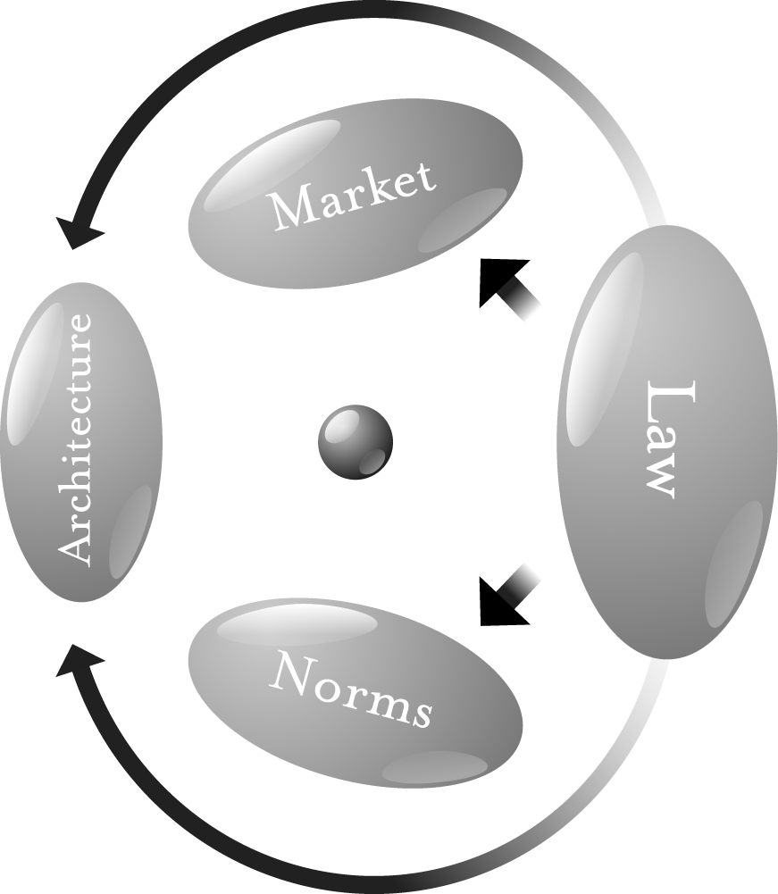

C O D E
C O D E
v e r s i o n
2 . 0
L A W R E N C E
L E S S I G
A Member of the Perseus Books Group
New York
Copyright © 2006 by Lawrence Lessig CC Attribution-ShareAlike
Published by Basic Books
A Member of the Perseus Books Group
Printed in the United States of America. For information, address Basic Books, 387
Park Avenue South, New York, NY 10016–8810.
Books published by Basic Books are available at special discounts for bulk purchases
in the United States by corporations, institutions, and other organizations. For more
information, please contact the Special Markets Department at the Perseus Books
Group, 11 Cambridge Center, Cambridge MA 02142, or call (617) 252-5298, (800)
255-1514 or e-mail special.markets@perseusbooks.com.
CIP catalog record for this book is available from the Library of Congress.
ISBN-10: 0–465–03914–6
ISBN-13: 978–0–465–03914–2
06 07 08 09 / 10 9 8 7 6 5 4 3 2 1
Code version 1.0
FOR CHARLIE NESSON, WHOSE EVERY IDEA
SEEMS CRAZY FOR ABOUT A YEAR.
Code version 2.0
TO WIKIPEDIA,
THE ONE SURPRISE THAT TEACHES MORE THAN EVERYTHING HERE.
C O N T E N T S
Preface to the Second Edition
Preface to the First Edition
Chapter 1. Code Is Law
1
Chapter 2. Four Puzzles from Cyberspace
9
PART I: “REGULABILITY”
Chapter 3. Is-Ism: Is the Way It Is the Way It Must Be?
31
Chapter 4. Architectures of Control
38
Chapter 5. Regulating Code
61
PART II: REGULATION BY CODE
Chapter 6. Cyberspaces
83
Chapter 7. What Things Regulate
120
Chapter 8. The Limits in Open Code
138
PART III: LATENT AMBIGUITIES
Chapter 9. Translation
157
Chapter 10. Intellectual Property
169
Chapter 11. Privacy
200
Chapter 12. Free Speech
233
Chapter 13. Interlude
276
PART IV: COMPETING SOVEREIGNS
Chapter 14. Sovereignty
281
Chapter 15. Competition Among Sovereigns
294
PART V: RESPONSES
Chapter 16. The Problems We Face
313
Chapter 17. Responses
325
Chapter 18. What Declan Doesn’t Get
335
Appendix
340
Notes
347
Index
399
P R E F A C E
T O
T H E
S E C O N D
E D I T I O N
This is a translation of an old book—indeed, in Internet time, it is a transla-
tion of an ancient text. The first edition of this book was published in 1999.
It was written in a very different context, and, in many ways, it was written in
opposition to that context. As I describe in the first chapter, the dominant idea
among those who raved about cyberspace then was that cyberspace was
beyond the reach of real-space regulation. Governments couldn’t touch life
online. And hence, life online would be different, and separate, from the
dynamic of life offline. Code v1 was an argument against that then common
view.
In the years since, that common view has faded. The confidence of the
Internet exceptionalists has waned. The idea—and even the desire—that the
Internet would remain unregulated is gone. And thus, in accepting the invita-
tion to update this book, I faced a difficult choice: whether to write a new
book, or to update the old, to make it relevant and readable in a radically dif-
ferent time.
I’ve done the latter. The basic structure of the first edition remains, and
the argument advanced is the same. But I’ve changed the framing of particu-
lar examples, and, I hope, the clarity of the writing. I’ve also extended the
argument in some parts, and added brief links to later work in order to better
integrate the argument of the original book.
One thing I have not done, however, is extend the argument of this book
in the places that others have worked. Nor have I succumbed to the (insanely
powerful) temptation to rewrite the book as a response to critics, both sym-
pathetic and not. I have included direction in the notes for those wanting to
follow the arguments others have made in response. But, even more than
when it was first published, this book is just a small part of a much bigger
debate. Thus, you shouldn’t read this to the exclusion of extraordinary later
work. Two books in particular already published nicely complement the argu-
ment made here—Goldsmith and Wu’s Who Controls the Net? (2006), and
Benkler’s The Wealth of Networks (2006)—and a third by Zittrain, expected in
2007, significantly extends the same argument.
preface to the second edition
I have also not tried to enumerate the mistakes, real and alleged, made in
the first edition. Some I’ve simply corrected, and some I’ve kept, because,
however mistaken others take them to be, I continue to believe that they are
not mistakes. The most important of the second type is my view that the
infrastructure of the Net will become increasingly controlled and regulable
through digital identity technologies. Friends have called this “mistake” a
“whopper.” It is not. I’m not sure what time horizon I had in mind in 1999,
and I concede that some of the predictions made there have not come to
pass—yet. But I am more confident today than I was then, and thus I have
chosen to stick with this “fundamental mistake.” Perhaps this is simply to
hedge my bets: If I’m right, then I have the reward of understanding. If I’m
wrong, then we’ll have an Internet closer to the values of its original design.
The genesis of the revisions found here was a wiki. Basic Books allowed
me to post the original edition of the book in a wiki hosted by Jotspot, and a
team of “chapter captains” helped facilitate a conversation about the text.
There were some edits to the text itself, and many more valuable comments
and criticisms.1 I then took that text as of the end of 2005 and added my own
edits to produce this book. While I wouldn’t go as far as the musician Jeff
Tweedy (“Half of it’s you, half is me”), an important part of this is not my
work. In recognition of that, I’ve committed the royalties from this book to
the nonprofit Creative Commons.
I am grateful to JotSpot (<jot.com>) for donating the wiki and hosting
services that were used to edit Code v1. That wiki was managed by an
extraordinary Stanford undergraduate, Jake Wachman, who gave this project
more time than he had. Each chapter of the book, while living on the wiki,
had a “chapter captain.” I am grateful to each of them—Ann Bartow, Richard
Belew, Seth Finkelstein, Joel Flynn, Mia Garlick, Matt Goodell, Paul Gowder,
Peter Harter, Brian Honermann, Brad Johnson, Jay Kesan, John Logie, Tom
Maddox, Ellen Rigsby, and Jon Stewart—for the work they volunteered to do,
and to the many volunteers who spent their time trying to make Code v1 bet-
ter. I am especially grateful to Andy Oram for his extensive contributions to
the wiki.
In addition to these volunteers, Stanford helped me gather an army of
law students to help complete the research that Code v2 required. This work
began with four—David Ryan Brumberg, Jyh-An Lee, Bret Logue, and Adam
Pugh—who spent a summer collecting all the work that built upon or criti-
cized Code v1. I relied upon that research in part to decide how to modify
Code v1. During the fall semester, 2005, a seminar of Stanford students added
their own critical take, as well as classes at Cardozo Law School. And then
during the year, two other students, John Eden and Avi Lev Robinson-
preface to the second edition
Mosher, spent many hours helping me complete the research necessary to
finish a reasonable draft of Code v2.
No student, however, contributed as much to the final version of Code v2
as Christina Gagnier. In the final months of this project, she took command
of the research, completing a gaggle of unresolved questions, putting the
results of this 18-month process in a form that could be published, and super-
vising a check of all citations to verify their completeness and accuracy. With-
out her work, this book would not have been completed.
I am also grateful to friends and colleagues who have helped me see how
this work needed to change—especially Ed Felten, David Johnson, Jorge Lima,
Alan Rothman, and Tim Wu. Jason Ralls designed the graphics for Code v2.
And finally, I am indebted beyond words to Elaine Adolfo, whose talent and
patience are far beyond anything I’ve ever known, and without whom I could
not have done this, or much else in the past few years.
P R E F A C E
T O
T H E
F I R S T
E D I T I O N
In the spring of 1996, at an annual conference organized under the title “Com-
puters, Freedom, and Privacy” (CFP), two science-fiction writers were invited
to tell stories about cyberspace’s future. Vernor Vinge spoke about “ubiquitous
law enforcement” made possible by “fine-grained distributed systems,” in which
the technology that will enable our future way of life also feeds data to, and
accepts commands from, the government. The architecture that would enable
this was already being built—it was the Internet—and technologists were
already describing ways in which it could be extended. As this network which
could allow such control became woven into every part of social life, it would
be just a matter of time, Vinge said, before the government claimed control over
vital parts of this system. As the system matured, each new generation of system
code would increase the power of government. Our digital selves—and increas-
ingly, our physical selves—would live in a world of perfect regulation, and the
architecture of this distributed computing—what we today call the Internet
and its successors—would make that regulatory perfection possible.
Tom Maddox followed Vinge and told a similar story, though with a
slightly different cast. The government’s power would not come just from
chips, he argued. Instead, it would be reinforced by an alliance between gov-
ernment and commerce. Commerce, like government, fares better in a well-
regulated world. Commerce would, whether directly or indirectly, help supply
resources to build a well-regulated world. Cyberspace would thus change to
take on characteristics favorable to these two powerful forces of social order.
Accountability would emerge from the fledgling, wild Internet.
Code and commerce.
When these two authors spoke, the future they described was not yet
present. Cyberspace was increasingly everywhere, but it was very hard for
those in the audience to imagine it tamed to serve the ends of government.
And at that time, commerce was certainly interested in cyberspace, though
credit card companies were still warning customers to stay far away from the
Net. The Net was an exploding social space of something. But it was hard to
see it as an exploding space of social control.
preface to the first edition
I didn’t see either speech. I first listened to them through my computer,
three years after they were given. Their words had been recorded; they now sit
archived on a server at MIT.1 It takes a second to tune in and launch the
recording of their speeches. The very act of listening to these lectures given
years before—served on a reliable and indexed platform that no doubt
recorded the fact that I had listened, across high-speed, commercial Internet
lines that feed my house both the Internet and ABC News—confirmed some-
thing of their account. One can hear in the audience’s reaction a recognition
that these authors were talking fiction—they were science-fiction writers,
after all. But the fiction they spoke terrified those who listened.
Ten years later, these tales are no longer fiction. It is no longer hard to
understand how the Net could become a more perfectly regulated space or
how the forces behind commerce could play a role in facilitating that regula-
tion.
The ongoing battle over peer-to-peer filesharing is an easy example of
this dynamic. As an astonishing quantity of music files (among others) was
made available for free (and against the law of copyright) through P2P
applications, the recording industry has fought back. Its strategy has
included vigorous prosecution of those downloading music illegally,
extraordinary efforts to secure new legislation to add new protections for
their copyrighted content, and a host of new technical measures designed to
change a feature of the original architecture of the network—namely that
the Net copies content blind to the rules of copyright that stand behind that
content. The battle is thus joined, and the outcome will have implications
for more than just music distribution. But the form of the battle is clear:
commerce and government working to change the infrastructure to make
better control possible.
Vinge and Maddox were first-generation theorists of cyberspace. They
could tell their stories about perfect control because they lived in a world that
couldn’t be controlled. They could connect with their audience because it
wanted to resist the future they described. Envisioning this impossible world
was sport.
Now the impossible is increasingly real. Much of the control in Vinge’s
and Maddox’s stories that struck many of their listeners as Orwellian now
seems to many quite reasonable. It is possible to imagine the system of perfect
regulation that Vinge described, and some even like what they see. It is
inevitable that an increasingly large part of the Internet will be fed by com-
merce. Most don’t see anything wrong with that either. The “terrifying” has
now become normal, and only the historians (or authors of old books like
this) will notice the difference.
preface to the first edition
This book continues Vinge’s and Maddox’s stories. I share their view of
the Net’s future; much of this book is about the expanding architecture of reg-
ulation that the Internet will become. But I don’t share the complacency of the
self-congratulatory cheers echoing in the background of that 1996 recording.
It may well have been obvious in 1996 who “the enemy” was. But it is not
obvious now.
The argument of this book is that our future is neither Vinge’s nor Mad-
dox’s accounts standing alone. Our future is the two woven together. If we
were only in for the dystopia described by Vinge, we would have an obvious
and powerful response: Orwell gave us the tools, and Stalin gave us the resolve
to resist the totalitarian state. After 9/11, we may well see a spying and invasive
Net. But even that will have limits. Totalitarian control by Washington is not
our future. 1984 is solidly in our past.
Likewise, if we were only in for the future that Maddox described, many
of our citizens would call that utopia, not science fiction. A world where “the
market” runs free and the “evil” of government is defeated would be, for them,
a world of perfect freedom.
But when you tie the futures described by Vinge and Maddox together, it
is a different picture altogether: A future of control in large part exercised by
technologies of commerce, backed by the rule of law (or at least what’s left of
the rule of law).
The challenge for our generation is to reconcile these two forces. How do
we protect liberty when the architectures of control are managed as much by
the government as by the private sector? How do we assure privacy when the
ether perpetually spies? How do we guarantee free thought when the push is
to propertize every idea? How do we guarantee self-determination when the
architectures of control are perpetually determined elsewhere? How, in other
words, do we build a world of liberty in the face of the dangers that Vinge and
Maddox together describe?
The answer is not in the knee-jerk antigovernment rhetoric of a libertar-
ian past: Governments are necessary to protect liberty, even if they are also
able to destroy it. But neither does the answer lie in a return to Roosevelt’s
New Deal. Statism has failed. Liberty is not to be found in some new D.C.
alphabet soup (WPA, FCC, FDA . . . ) of bureaucracy.
A second generation takes the ideals of the first and works them out
against a different background. It knows the old debates; it has mapped the
dead-end arguments of the preceding thirty years. The objective of a second
generation is to ask questions that avoid dead-ends and move beyond them.
There is great work from both generations. Esther Dyson and John Perry
Barlow, and Todd Lapin still inspire, and still move one (Dyson is editor at
preface to the first edition
large at CNET Networks; Barlow now spends time at Harvard). And in the
second generation, the work of Andrew Shapiro, David Shenk, and Steven
Johnson is becoming well known and is compelling.
My aim is this second generation. As fits my profession (I’m a lawyer), my
contribution is more long-winded, more obscure, more technical, and more
obtuse than the best of either generation. But as fits my profession, I’ll offer it
anyway. In the debates that rage right now, what I have to say will not please
anyone very much. And as I peck these last words before e-mailing the man-
uscript off to the publisher, I can already hear the reactions: “Can’t you tell the
difference between the power of the sheriff and the power of Walt Disney?”
“Do you really think we need a government agency regulating software code?”
And from the other side: “How can you argue for an architecture of cyber-
space (free software) that disables government’s ability to do good?”
But I am also a teacher. If my writing produces angry reactions, then it
might also effect a more balanced reflection. These are hard times to get it
right, but the easy answers to yesterday’s debate won’t get it right.
I have learned an extraordinary amount from the teachers and critics
who have helped me write this book. Hal Abelson, Bruce Ackerman, James
Boyle, Jack Goldsmith, and Richard Posner gave patient and excellent advice
on earlier drafts. I am grateful for their patience and extremely fortunate to
have had their advice. Larry Vale and Sarah Whiting guided my reading in the
field of architecture, though no doubt I was not as patient a student as I
should have been. Sonya Mead helped me put into pictures what it would take
a lawyer ten thousand words to say.
An army of students did most of the battle on earlier drafts of this book.
Carolyn Bane, Rachel Barber, Enoch Chang, Ben Edelman, Timothy Ehrlich,
Dawn Farber, Melanie Glickson, Bethany Glover, Nerlyn Gonzalez, Shannon
Johnson, Karen King, Alex Macgillivray, Marcus Maher, David Melaugh,
Teresa Ou, Laura Pirri, and Wendy Seltzer provided extensive, if respectful,
criticism. And my assistants, Lee Hopkins and Catherine Cho, were crucial in
keeping this army in line (and at bay).
Three students in particular have influenced my argument, though none
are fairly called “students.” Harold Reeves takes the lead in Chapter 10. Tim
Wu forced me to rethink much of Part I. And Andrew Shapiro showed me the
hopefulness in a future that I have described in very dark terms.
I am especially indebted to Catherine Marguerite Manley, whose extraor-
dinary talent, both as a writer and a researcher, made it possible to finish this
work long before it otherwise could have been finished. Thanks also to Tawen
Chang and James Stahir for their careful review of the notes and work to
keep them honest.
preface to the first edition
This is a not a field where one learns by living in libraries. I have learned
everything I know from the conversations I have had, or watched, with an
extraordinary community of academics and activists, who have been strug-
gling over the last five years both to understand what cyberspace is and to
make it better. This community includes the scholars and writers I discuss in
the text, especially the lawyers Yochai Benkler, James Boyle, Mark Lemley,
David Post, and Pam Samuelson. I’ve also benefited greatly from conversa-
tions with nonlawyers, especially Hal Abelson, John Perry Barlow, Todd Lapin,
Joseph Reagle, Paul Resnick, and Danny Weitzner. But perhaps more impor-
tantly, I’ve benefited from discussions with the activists, in particular the Cen-
ter for Democracy and Technology, the Electronic Frontier Foundation, and
the American Civil Liberties Union. They have made the issues real, and they
have done much to defend at least some of the values that I think important.
This book would not have been written, however, but for a story by Julian
Dibbell, a conference organized by Henry J. Perritt, and many arguments with
David Johnson. I am grateful to all three for what they have taught.
I began this project as a fellow at Harvard’s Program on Ethics and the
Professions. I am grateful to Dennis Thompson for his skeptical encourage-
ment that year. The Berkman Center for Internet and Society at Harvard Law
School has made much of my research possible. I am grateful in particular to
Lillian and Myles Berkman for that support, and especially to the center’s co-
director and my sometime coteacher, Jonathan Zittrain, for his support and,
more important, friendship. I’ve dedicated this book to the other co-director
of the Berkman Center, Charlie Nesson, who has given me the space and sup-
port to do this work and a certain inspiration to push it differently.
But more significant than any of that support has been the patience, and
love, of the person to whom I’ve dedicated my life, Bettina Neuefeind. Her
love will seem crazy, and wonderful, for much more than a year.
C O D E
O N E
c o d e
i s
l a w
ALMOST TWO DECADES AGO, IN THE SPRING OF 1989, COMMUNISM IN EUROPE
died—collapsed, like a tent, its main post removed. The end was not brought
by war or revolution. The end was exhaustion. A new political regime was
born in its place across Central and Eastern Europe, the beginnings of a new
political society.
For constitutionalists (like me), this was a heady time. I had graduated
from law school in 1989, and in 1991 I began teaching at the University of
Chicago. At that time, Chicago had a center devoted to the study of the emerg-
ing democracies in Central and Eastern Europe. I was a part of that center.
Over the next five years I spent more hours on airplanes, and more mornings
drinking bad coffee, than I care to remember.
Eastern and Central Europe were filled with Americans telling former
Communists how they should govern. The advice was endless. And silly. Some
of these visitors literally sold translated constitutions to the emerging consti-
tutional republics; the rest had innumerable half-baked ideas about how the
new nations should be governed. These Americans came from a nation where
constitutionalism seemed to work, yet they had no clue why.
The Center’s mission, however, was not to advise. We knew too little to
guide. Our aim was to watch and gather data about the transitions and how
they progressed. We wanted to understand the change, not direct it.
What we saw was striking, if understandable. Those first moments after
communism’s collapse were filled with antigovernmental passion—a surge of
anger directed against the state and against state regulation. Leave us alone,
the people seemed to say. Let the market and nongovernmental organiza-
tions—a new society—take government’s place. After generations of com-
munism, this reaction was completely understandable. Government was the
1
2
CODE 2.0
oppressor. What compromise could there be with the instrument of your
repression?
A certain kind of libertarianism seemed to many to support much in this
reaction. If the market were to reign, and the government were kept out of the
way, freedom and prosperity would inevitably grow. Things would take care
of themselves. There was no need, and could be no place, for extensive regu-
lation by the state.
But things didn’t take care of themselves. Markets didn’t flourish. Govern-
ments were crippled, and crippled governments are no elixir of freedom.
Power didn’t disappear—it shifted from the state to mafiosi, themselves often
created by the state. The need for traditional state functions—police, courts,
schools, health care—didn’t go away, and private interests didn’t emerge to fill
that need. Instead, the needs were simply unmet. Security evaporated. A mod-
ern if plodding anarchy replaced the bland communism of the previous three
generations: neon lights flashed advertisements for Nike; pensioners were
swindled out of their life savings by fraudulent stock deals; bankers were mur-
dered in broad daylight on Moscow streets. One system of control had been
replaced by another. Neither was what Western libertarians would call “free-
dom.”
{TXB2}
About a decade ago, in the mid-1990s, just about the time when this post-
communist euphoria was beginning to wane, there emerged in the West
another “new society,” to many just as exciting as the new societies promised
in post-communist Europe. This was the Internet, or as I’ll define a bit later,
“cyberspace.” First in universities and centers of research, and then through-
out society in general, cyberspace became a new target for libertarian utopi-
anism. Here freedom from the state would reign. If not in Moscow or Tblisi,
then in cyberspace would we find the ideal libertarian society.
The catalyst for this change was likewise unplanned. Born in a research
project in the Defense Department,1 cyberspace too arose from the unplanned
displacement of a certain architecture of control. The tolled, single-purpose
network of telephones was displaced by the untolled and multipurpose net-
work of packet-switched data. And thus the old one-to-many architectures of
publishing (television, radio, newspapers, books) were complemented by a
world in which anyone could become a publisher. People could communicate
and associate in ways that they had never done before. The space seemed to
promise a kind of society that real space would never allow—freedom without
anarchy, control without government, consensus without power. In the words
of a manifesto that defined this ideal: “We reject: kings, presidents and voting.
We believe in: rough consensus and running code.”2
code is law
3
As in post-Communist Europe, these first thoughts about freedom in
cyberspace tied freedom to the disappearance of the state. As John Parry Bar-
low, former lyricist for the Grateful Dead and co-founder of the Electronic
Frontier Foundation, declared in his “Declaration of Independence for Cyber-
space,”
Governments of the Industrial World, you weary giants of flesh and steel, I come
from Cyberspace, the new home of Mind. On behalf of the future, I ask you of
the past to leave us alone. You are not welcome among us. You have no sover-
eignty where we gather.
But here the bond between freedom and the absence of the state was said
to be even stronger than in post-Communist Europe. The claim for cyber-
space was not just that government would not regulate cyberspace—it was
that government could not regulate cyberspace. Cyberspace was, by nature,
unavoidably free. Governments could threaten, but behavior could not be
controlled; laws could be passed, but they would have no real effect. There was
no choice about what kind of government to install—none could reign.
Cyberspace would be a society of a very different sort. There would be defini-
tion and direction, but built from the bottom-up. The society of this space
would be a fully self-ordering entity, cleansed of governors and free from
political hacks.
I taught in Central Europe during the summers of the early 1990s; I wit-
nessed through my students the transformation in attitudes about communism
that I described above. And so I felt a bit of déjà vu when, in the spring of 1995,
while teaching the law of cyberspace, I saw in my students these very same post-
communist thoughts about freedom and government. Even at Yale—not known
for libertarian passions—the students seemed drunk with what James Boyle
would later call the “libertarian gotcha”:3 no government could survive without
the Internet’s riches, yet no government could control the life that went on
there. Real-space governments would become as pathetic as the last Communist
regimes: It was the withering of the state that Marx had promised, jolted out of
existence by trillions of gigabytes flashing across the ether of cyberspace.
But what was never made clear in the midst of this celebration was why.
Why was cyberspace incapable of regulation? What made it so? The word
itself suggests not freedom but control. Its etymology reaches beyond a novel
by William Gibson (Neuromancer, published in 1984) to the world of “cyber-
netics,” the study of control at a distance through devices.4 So it was doubly
puzzling to see this celebration of “perfect freedom” under a banner that
aspires (to anyone who knows the origin, at least) to perfect control.
4
CODE 2.0
As I said, I am a constitutionalist. I teach and write about constitutional
law. I believe that these first thoughts about government and cyberspace were
just as misguided as the first thoughts about government after communism.
Liberty in cyberspace will not come from the absence of the state. Liberty
there, as anywhere, will come from a state of a certain kind. We build a world
where freedom can flourish not by removing from society any self-conscious
control, but by setting it in a place where a particular kind of self-conscious
control survives. We build liberty as our founders did, by setting society upon
a certain constitution.
But by “constitution” I don’t mean a legal text. Unlike my countrymen in
Eastern Europe in the early 1990s, I am not trying to sell a document that our
framers wrote in 1787. Rather, as the British understand when they speak of
their “constitution,” I mean an architecture—not just a legal text but a way of
life—that structures and constrains social and legal power, to the end of pro-
tecting fundamental values. (One student asked, “constitution” in the sense of
“just one tool among many, one simple flashlight that keeps us from fumbling
in the dark, or, alternatively . . . more like a lighthouse that we constantly call
upon?” I mean constitution as in lighthouse—a guide that helps anchor fun-
damental values.)
Constitutions in this sense are built, they are not found. Foundations get
laid, they don’t magically appear. Just as the founders of our nation learned
from the anarchy that followed the revolution (remember: our first constitu-
tion, the Articles of Confederation, was a miserable failure of do-nothing-
ness), so too are we beginning to understand about cyberspace that this
building, or laying, is not the work of an invisible hand. There is no reason to
believe that the foundation for liberty in cyberspace will simply emerge.
Indeed, the passion for that anarchy—as in America by the late 1780s, and as
in the former Eastern bloc by the late 1990s—has faded. Thus, as our framers
learned, and as the Russians saw, we have every reason to believe that cyber-
space, left to itself, will not fulfill the promise of freedom. Left to itself, cyber-
space will become a perfect tool of control.
Control. Not necessarily control by government, and not necessarily
control to some evil, fascist end. But the argument of this book is that the
invisible hand of cyberspace is building an architecture that is quite the
opposite of its architecture at its birth. This invisible hand, pushed by gov-
ernment and by commerce, is constructing an architecture that will perfect
control and make highly efficient regulation possible. The struggle in that
world will not be government’s. It will be to assure that essential liberties are
preserved in this environment of perfect control. As Siva Vaidhyanathan
puts it,
code is law
5
While once it seemed obvious and easy to declare the rise of a ”network society”
in which individuals would realign themselves, empower themselves, and under-
mine traditional methods of social and cultural control, it seems clear that net-
worked digital communication need not serve such liberating ends.5
This book is about the change from a cyberspace of anarchy to a cyber-
space of control. When we see the path that cyberspace is on now—an evolu-
tion I describe below in Part I—we see that much of the “liberty” present at
cyberspace’s founding will be removed in its future. Values originally consid-
ered fundamental will not survive. On the path we have chosen, we will
remake what cyberspace was. Some of that remaking will make many of us
happy. But some of that remaking, I argue, we should all regret.
Yet whether you celebrate or regret the changes that I will describe, it is
critical to understand how they happen. What produced the “liberty” of
cyberspace, and what will change to remake that liberty? That lesson will then
suggest a second about the source of regulation in cyberspace.
That understanding is the aim of Part II. Cyberspace demands a new
understanding of how regulation works. It compels us to look beyond the
traditional lawyer’s scope—beyond laws, or even norms. It requires a broader
account of “regulation,” and most importantly, the recognition of a newly
salient regulator.
That regulator is the obscurity in this book’s title—Code. In real space, we
recognize how laws regulate—through constitutions, statutes, and other legal
codes. In cyberspace we must understand how a different “code” regulates—
how the software and hardware (i.e., the “code” of cyberspace) that make
cyberspace what it is also regulate cyberspace as it is. As William Mitchell
puts it, this code is cyberspace’s “law.”6 “Lex Informatica,” as Joel Reidenberg
first put it,7 or better, “code is law.”
Lawyers and legal theorists get bothered, however, when I echo this slo-
gan. There are differences, they insist, between the regulatory effects produced
by code and the regulatory effects produced by law, not the least of which is
the difference in the “internal perspective” that runs with each kind of regu-
lation. We understand the internal perspective of legal regulation—for exam-
ple, that the restrictions the law might impose on a company’s freedom to
pollute are a product of self-conscious regulation, reflecting values of the
society imposing that regulation. That perspective is harder to recognize with
code. It could be there, but it need not. And no doubt this is just one of many
important differences between “code” and “law.”
I don’t deny these differences. I only assert that we learn something useful
from ignoring them for a bit. Justice Holmes famously focused the regulator
6
CODE 2.0
on the “bad man.”8 He offered a theory of regulation that assumed that “bad
man” at its core. His point was not that everyone was a “bad man”; the point
instead was about how we could best construct systems of regulation.
My point is the same. I suggest we learn something if we think about the
“bot man” theory of regulation—one focused on the regulation of code. We
will learn something important, in other words, if we imagine the target of
regulation as a maximizing entity, and consider the range of tools the regula-
tor has to control that machine.
Code will be a central tool in this analysis. It will present the greatest threat
to both liberal and libertarian ideals, as well as their greatest promise. We can
build, or architect, or code cyberspace to protect values that we believe are fun-
damental. Or we can build, or architect, or code cyberspace to allow those val-
ues to disappear. There is no middle ground. There is no choice that does not
include some kind of building. Code is never found; it is only ever made, and
only ever made by us. As Mark Stefik puts it, “Different versions of [cyberspace]
support different kinds of dreams. We choose, wisely or not.”9 Or again, code
“determines which people can access which digital objects . . . How such pro-
gramming regulates human interactions . . . depends on the choices made.”10
Or, more precisely, a code of cyberspace, defining the freedoms and controls of
cyberspace, will be built. About that there can be no debate. But by whom,
and with what values? That is the only choice we have left to make.
My argument is not for some top-down form of control. The claim is
not that regulators must occupy Microsoft. A constitution envisions an envi-
ronment; as Justice Holmes said, it “call[s] into life a being the development
of which [cannot be] foreseen.”11 Thus, to speak of a constitution is not to
describe a hundred-day plan. It is instead to identify the values that a space
should guarantee. It is not to describe a “government”; it is not even to select
(as if a single choice must be made) between bottom-up or top-down control.
In speaking of a constitution in cyberspace we are simply asking: What values
should be protected there? What values should be built into the space to
encourage what forms of life?
The “values” at stake here are of two sorts—substantive and structural. In
the American constitutional tradition, we worried about the second first. The
framers of the Constitution of 1787 (enacted without a Bill of Rights) were
focused on structures of government. Their aim was to ensure that a partic-
ular government (the federal government) did not become too powerful. And
so they built into the Constitution’s design checks on the power of the federal
government and limits on its reach over the states.
Opponents of that Constitution insisted that more checks were needed,
that the Constitution needed to impose substantive limits on government’s
code is law
7
power as well as structural limits. And thus was the Bill of Rights born. Rati-
fied in 1791, the Bill of Rights promised that the federal government would
not remove certain freedoms—of speech, privacy, and due process. And it
guaranteed that the commitment to these substantive values would remain
despite the passing fancies of normal, or ordinary, government. These val-
ues—both substantive and structural—were thus entrenched through our
constitutional design. They can be changed, but only through a cumbersome
and costly process.
We face the same questions in constituting cyberspace, but we have
approached them from the opposite direction.12 Already we are struggling
with substance: Will cyberspace promise privacy or access? Will it enable a free
culture or a permission culture? Will it preserve a space for free speech? These
are choices of substantive value, and they are the subject of much of this
book.
But structure matters as well, though we have not even begun to under-
stand how to limit, or regulate, arbitrary regulatory power. What “checks and
balances” are possible in this space? How do we separate powers? How do we
ensure that one regulator, or one government, doesn’t become too powerful?
How do we guarantee it is powerful enough?
Theorists of cyberspace have been talking about these questions since its
birth.13 But as a culture, we are just beginning to get it. As we slowly come to
see how different structures within cyberspace affect us—how its architec-
ture, in a sense I will define below, “regulates” us—we slowly come to ask
how these structures should be defined. The first generation of these archi-
tectures was built by a noncommercial sector—researchers and hackers,
focused upon building a network. The second generation has been built by
commerce. And the third, not yet off the drawing board, could well be the
product of government. Which regulator do we prefer? Which regulators
should be controlled? How does society exercise that control over entities
that aim to control it?
In Part III, I bring these questions back down to the ground. I consider
three areas of controversy—intellectual property, privacy, and free speech—
and identify the values within each that cyberspace will change. These values
are the product of the interaction between law and technology. How that
interaction plays out is often counter-intuitive. My aim in this part is to map
that interaction, so as to map a way that we might, using the tools of Part II,
preserve the values that are important to us within each context.
Part IV internationalizes these questions. Cyberspace is everywhere,
meaning those who populate cyberspace come from everywhere. How will the
sovereigns of everywhere live with the claimed “sovereignty” of cyberspace? I
8
CODE 2.0
map a particular response that seems to me inevitable, and will reinforce the
conclusion of Part I.
The final part, Part V, is the darkest. The central lesson of this book is that
cyberspace requires choices. Some of these are, and should be, private:
Whether an author wants to enforce her copyright; how a citizen wants to
protect his privacy. But some of these choices involve values that are collective.
I end by asking whether we—meaning Americans—are up to the challenge
that these choices present. Are we able to respond rationally—meaning both
(1) are we able to respond without undue or irrational passion, and (2) do we
have institutions capable of understanding and responding to these choices?
My strong sense is that we are not, at least now, able to respond rationally
to these challenges. We are at a stage in our history when we urgently need to
make fundamental choices about values, but we should trust no institution of
government to make such choices. Courts cannot do it, because as a legal
culture we don’t want courts choosing among contested matters of values.
Congress should not do it because, as a political culture, we are deeply skep-
tical (and rightly so) about the product of this government. There is much to
be proud of in our history and traditions. But the government we now have
is a failure. Nothing important should be trusted to its control, even though
everything important is.
Change is possible. I don’t doubt that revolutions remain in our future.
But I fear that it is too easy for the government, or specially powered interests,
to dislodge these revolutions, and that too much will be at stake for it to allow
real change to succeed. Our government has already criminalized the core
ethic of this movement, transforming the meaning of hacker into something
quite alien to its original sense. Through extremism in copyright regulation,
it is criminalizing the core creativity that this network could produce. And this
is only the beginning.
Things could be different. They are different elsewhere. But I don’t see
how they could be different for us just now. This no doubt is simply a confes-
sion of the limits of my own imagination. I would be grateful to be proven
wrong. I would be grateful to watch as we relearn—as the citizens of the for-
mer Communist republics are learning—how to escape these disabling ideas
about the possibilities for governance. But nothing in the past decade, and
especially nothing in the past five years, has convinced me that my skepticism
about governance was misplaced. Indeed, events have only reinforced that
pessimism.
T W O
f o u r
p u z z l e s
f r o m
c y b e r s p a c e
EVERYONE WHO IS READING THIS BOOK HAS USED THE INTERNET. SOME HAVE BEEN
in “cyberspace.” The Internet is that medium through which your e-mail is
delivered and web pages get published. It’s what you use to order books on
Amazon or to check the times for local movies at Fandango. Google is on the
Internet, as are Microsoft “help pages.”
But “cyberspace” is something more. Though built on top of the Internet,
cyberspace is a richer experience. Cyberspace is something you get pulled “into,”
perhaps by the intimacy of instant message chat or the intricacy of “massively
multiple online games” (“MMOGs” for short, or if the game is a role-playing
game, then “MMORPGs”). Some in cyberspace believe they’re in a community;
some confuse their lives with their cyberspace existence. Of course, no sharp
line divides cyberspace from the Internet. But there is an important difference in
experience between the two. Those who see the Internet simply as a kind of Yel-
low-Pages-on-steroids won’t recognize what citizens of cyberspace speak of. For
them, “cyberspace” is simply obscure.
Some of this difference is generational. For most of us over the age of 40,
there is no “cyberspace,” even if there is an Internet. Most of us don’t live a life
online that would qualify as a life in “cyberspace.” But for our kids, cyberspace is
increasingly their second life. There are millions who spend hundreds of hours
a month in the alternative worlds of cyberspace—later on we will focus on one
of these worlds, a game called “Second Life.”1 And thus while you may think to
yourself, this alien space is nothing I need worry about because it’s nowhere I’ll
ever be, if you care to understand anything about the world the next generation
will inhabit, you should spend some time understanding “cyberspace.”
That is the aim of two of the stories that follow. These two describe cyber-
space. The other two describe aspects of the Internet more generally. My aim
9
10
CODE 2.0
through these four very different stories is to orient by sometimes disorienting.
My hope is that you’ll come to understand four themes that will recur through-
out this book. At the end of this chapter, I come clean about the themes and pro-
vide a map. For now, just focus on the stories.
BORDERS
It was a very ordinary dispute, this argument between Martha Jones and her
neighbors.2 It was the sort of dispute that people have had since the start of
neighborhoods. It didn’t begin in anger. It began with a misunderstanding. In
this world, misunderstandings like this are far too common. Martha thought
about that as she wondered whether she should stay; there were other places she
could go. Leaving would mean abandoning what she had built, but frustrations
like this were beginning to get to her. Maybe, she thought, it was time to move on.
The argument was about borders—about where her land stopped. It seemed
like a simple idea, one you would have thought the powers-that-be would have
worked out many years before. But here they were, her neighbor Dank and she,
still fighting about borders. Or rather, about something fuzzy at the borders—
about something of Martha’s that spilled over into the land of others. This was
the fight, and it all related to what Martha did.
Martha grew flowers. Not just any flowers, but flowers with an odd sort of
power. They were beautiful flowers, and their scent entranced. But, however
beautiful, these flowers were also poisonous. This was Martha’s weird idea: to
make flowers of extraordinary beauty which, if touched, would kill. Strange no
doubt, but no one said that Martha wasn’t strange. She was unusual, as was this
neighborhood. But sadly, disputes like this were not.
The start of the argument was predictable enough. Martha’s neighbor, Dank,
had a dog. Dank’s dog died. The dog died because it had eaten a petal from one
of Martha’s flowers. A beautiful petal, and now a dead dog. Dank had his own
ideas about these flowers, and about this neighbor, and he expressed those
ideas—perhaps with a bit too much anger, or perhaps with anger appropriate to
the situation.
“There is no reason to grow deadly flowers,” Dank yelled across the fence.
“There’s no reason to get so upset about a few dead dogs,” Martha replied.“A dog
can always be replaced. And anyway, why have a dog that suffers when dying? Get
yourself a pain-free-death dog, and my petals will cause no harm.”
I came into the argument at about this time. I was walking by, in the way one
walks in this space. (At first I had teleported to get near, but we needn’t compli-
cate the story with jargon. Let’s just say I was walking.) I saw the two neighbors
becoming increasingly angry with each other. I had heard about the disputed
four puzzles from cyberspace
11
flowers—about how their petals carried poison. It seemed to me a simple prob-
lem to solve, but I guess it’s simple only if you understand how problems like this
are created.
Dank and Martha were angry because in a sense they were stuck. Both had
built a life in the neighborhood; they had invested many hours there. But both
were coming to understand its limits. This is a common condition: We all build
our lives in places with limits. We are all disappointed at times. What was differ-
ent about Dank and Martha?
One difference was the nature of the space, or context, where their argument
was happening. This was not “real space” but virtual space. It was part of what I
call “cyberspace.” The environment was a “massively multiple online game”
(“MMOG”), and MMOG space is quite different from the space we call real.
Real space is the place where you are right now: your office, your den, maybe
by a pool. It’s a world defined by both laws that are man-made and others that are
not. “Limited liability” for corporations is a man-made law. It means that the
directors of a corporation (usually) cannot be held personally liable for the sins
of the company. Limited life for humans is not a man-made law: That we all will
die is not the result of a decision that Congress made. In real space, our lives are
subject to both sorts of law, though in principle we could change one sort.
But there are other sorts of laws in real space as well. You bought this book,
I trust, or you borrowed it from someone who did. If you stole it, you are a thief,
whether you are caught or not. Our language is a norm; norms are collectively
determined. As our norms have been determined, your “stealing” makes you a
thief, and not just because you took it. There are plenty of ways to take something
but not be thought of as a thief. If you came across a dollar blowing in the wind,
taking the money will not make you a thief; indeed, not taking the money makes
you a chump. But stealing this book from the bookstore (even when there are so
many left for others) marks you as a thief. Social norms make it so, and we live
life subject to these norms.
Some of these norms can be changed collectively, if not individually. I can
choose to burn my draft card, but I cannot choose whether doing so will make
me a hero or a traitor. I can refuse an invitation to lunch, but I cannot choose
whether doing so will make me rude. I have choices in real life, but escaping the
consequences of the choices I make is not one of them. Norms in this sense con-
strain us in ways that are so familiar as to be all but invisible.
MMOG space is different. It is, first of all, a virtual space—like a cartoon on
a television screen, sometimes rendered to look three-dimensional. But unlike a
cartoon, MMOG space enables you to control the characters on the screen in real
time. At least, you control your character—one among many characters con-
trolled by many others in this space. One builds the world one will inhabit here.
12
CODE 2.0
As a child, you grew up learning the physics that governed the world of Road
Runner and Wile E. Coyote (violent but forgiving); your children will grow up
making the world of Road Runner and Wile E. Coyote (still violent, but maybe
not so forgiving). They will define the space and then live out the story. Their
choices will make the laws of that space real.
This is not to say that MMOG space is unreal. There is real life in MMOG
space, constituted by how people interact. The “space” describes where people
interact—much as they interact in real space no doubt, but with some important
differences. In MMOG space the interaction is in a virtual medium. This inter-
action is “in” cyberspace. In 1990s terms, people “jack” into these virtual spaces,
and they do things there. And “they” turns out to be many many people. As
Edward Castronova estimates,“an absolute minimum figure would be 10 million
[but my] guess is that it is perhaps 20 to 30 million” participating in these virtual
worlds.3 The “[t]ypical user spends 20–30 hours per week inside the fantasy.
Power users spend every available moment.”4 As one essay estimates, “assuming
just average contact time among these 9.4 million people, subscribers to virtual
worlds could be devoting over 213 million hours per week to build their virtual
lives.”5
The things people do there are highly varied. Some play role-playing games:
working within a guild of other players to advance in status and power to some
ultimate end. Some simply get together and gab: They appear (in a form they
select, with qualities they choose and biographies they have written) in a virtual
room and type messages to each other. Or they walk around (again, the ambigu-
ity is not a slight one) and talk to people. My friend Rick does this as a cat—a
male cat, he insists. As a male cat, Rick parades around this space and talks to
anyone who’s interested. He aims to flush out the cat-loving sorts. The rest, he
reports, he punishes.
Others do much more than gab. Some, for example, homestead. Depending
on the world and its laws, citizens are given or buy plots of undeveloped land,
which they then develop. People spend extraordinary amounts of time building
a life on these plots. (Isn’t it incredible the way these people waste time? While
you and I spend up to seventy hours a week working for firms we don’t own and
building futures we’re not sure we’ll enjoy, these people are designing and build-
ing things and making a life, even if only a virtual one. Scandalous!) They build
houses—by designing and then constructing them—have family or friends move
in, and pursue hobbies or raise pets. They may grow trees or odd plants—like
Martha’s.
MMOG space grew out of “MUD” or “MOO” space.6 MUDs and MOOs
are virtual worlds, too, but they are text-based virtual worlds. There are no real
graphics in a MUD or MOO, just text, reporting what someone says and does.
four puzzles from cyberspace
13
You can construct objects in MOO space and then have them do things. But the
objects act only through the mediation of text. (Their actions are generally
quite simple, but even simple can be funny. One year, in a MUD that was part
of a cyberlaw class, someone built a character named JPosner. If you poked
JPosner, he muttered, “Poking is inefficient.” Another character was FEaster-
brook. Stand in a room with FEasterbrook and use the word “fair,” and FEast-
erbrook would repeat what you said, substituting the word “efficient.” “It’s not
fair” became “You mean, it’s not efficient.”)
Although it was easy for people who liked texts or who wrote well to under-
stand the attraction of these text-based realities, it was not so easy for the many
who didn’t have that same fondness. MMOG space lifts that limit just a bit. It is
the movie version of a cyberspace novel. You build things here, and they survive
your leaving. You can build a house, and people walking down the street see it.
You can let them come in, and in coming into your house, they see things about
you. They can see how you construct your world. If a particular MMOG space
permits it, they might even see how you’ve changed the laws of the real world.
In real space, for instance, people “slip and fall” on wet floors. In the MMOG
space you’ve built, that “law” may not exist. Instead, in your world, wet floors
may make people “slip and dance.”
The best example of this space today is the extraordinary community of
Second Life. In it, people create both things and community, the avatars are
amazingly well crafted, and their owners spend hundreds of thousands of hours
building things in this space that others see, and some enjoy. Some make clothes
or hair styles, some make machines that make music. Whatever object or service
the programming language allows, creators in Second Life are creating it. There
are more than 100,000 residents of Second Life at the time of this writing. They
occupy close to 2,000 servers housed in downtown San Francisco, and suck 250
kilowatts of electricity just to run the computers—about the equivalent of 160
homes.
But here we get back to Martha and Dank. In their exchange—when Martha
blamed Dank for having a dog that died with pain—they revealed what was
most amazing about that particular MMOG. Martha’s remarks (“Why do you
have a dog that suffers when dying? Get yourself a pain-free-death dog, and my
petals will cause no harm”) should have struck you as odd. You may have
thought,“How weird that someone would think that the fault lay not in the poi-
sonous petals but in a dog that died with pain.” But in this space, Dank did have
a choice about how his dog would die. Maybe not a choice about whether “poi-
son” would “kill” a dog, but a choice about whether the dog would “suffer” when
it “died.” He also had a choice about whether a copy of the dog could be made,
so that if it died it could be “revived.” In MMOG space, these possibilities are not
14
CODE 2.0
given by God. Or rather, if they are defined by God, then the players share the
power of God. For the possibilities in MMOG space are determined by the
code—the software, or architecture, that makes the MMOG space what it is.
“What happens when” is a statement of logic; it asserts a relationship that is
manifested in code. In real space we don’t have much control over that code. In
MMOG space we do.
So, when Martha said what she said about the dog, Dank made what
seemed to me an obvious response. “Why do your flowers have to stay poison-
ous once they leave your land? Why not make the petals poisonous only when
on your land? When they leave your land—when, for example, they are blown
onto my land—why not make them harmless?”
It was an idea. But it didn’t really help. For Martha made her living selling
these poisonous plants. Others (ok not many, but some) also liked the idea of
this art tied to death. So it was no solution to make poisonous plants that were
poisonous only on Martha’s property, unless Martha was also interested in col-
lecting a lot of very weird people on her land.
But the idea did suggest another. “Okay,” said Dank, “why not make the
petals poisonous only when in the possession of someone who has ‘purchased’
them? If they are stolen, or if they blow away, then let the petals lose their poi-
son. But when kept by the owner of the plant, the petals keep their poison. Isn’t
that a solution to the problem that both of us face?”
The idea was ingenious. Not only did it help Dank, it helped Martha as well.
As the code existed, it allowed theft.7 (People want reality in that virtual space;
there will be time enough for heaven when heaven comes.) But if Martha could
modify the code slightly so that theft8 removed a plant’s poison, then “theft”
would also remove the plant’s value. That change would protect the profit in
her plants as well as protect Dank’s dogs. Here was a solution that made both
neighbors better off—what economists call a pareto superior move. And it was
a solution that was as possible as any other. All it required was a change of code.
Think for a second about what’s involved here.“Theft” entails (at minimum)
a change in possession. But in MMOG space “possession” is just a relation
defined by the software that defines the space. That same code must also define
the properties that possession yields. It might, like real space, distinguish between
having a cake and eating it. Or it might erase that distinction, meaning you can
“eat” your cake, but once it’s “eaten,” it magically reappears. In MMOG space you
can feed a crowd with five loaves and two fishes, and it isn’t even a miracle.9
So why not craft the same solution to Martha and Dank’s problem? Why
not define ownership to include the quality of poisonousness, and possession
without ownership to be possession without poison? If the world is designed
this way, then it could resolve the dispute between Martha and Dank, not by
four puzzles from cyberspace
15
making one of them change his or her behavior, but by changing the laws of
nature to eliminate the conflict altogether.
We’re a short way into this not so short book, though what I’m about to say
may make it a very short book indeed (for you at least). This book is all about
the question raised by this simple story, and about any simplicity in this appar-
ently simple answer. This is not a book about MMOG space or avatars. The
story about Martha and Dank is the first and last example that will include
avatars. But it is a book about cyberspace. My claim is that both “on the Inter-
net” and “in cyberspace,” we will confront precisely the questions that Martha
and Dank faced, as well as the questions that their solution raised. Both “on the
Internet” and “in cyberspace,” technology constitutes the environment of the
space, and it will give us a much wider range of control over how interactions
work in that space than in real space. Problems can be programmed or “coded”
into the story, and they can be “coded” away. And while the experience with
gamers so far is that they don’t want virtual worlds to deviate too far from the
real, the important point for now is that there is the capacity to make these
worlds different. It is this capacity that raises the question that is at the core of
this book: What does it mean to live in a world where problems can be coded
away? And when, in that world, should we code problems away, rather than
learn to work them out, or punish those who cause them?
It is not MMOG space that makes these questions interesting problems for
law; the very same problems will arise outside of MMOG space, and outside
MUDs and MOOs. The problems of these spaces are problems of the Internet
in general. And as more of our life becomes wired (and weird), in the sense that
more of our life moves online, these questions will become more pressing.
But I have learned enough in this business to know that I can’t convince you
of this with an argument. (I’ve spent the last 12 years talking about this subject;
at least I know what doesn’t work.) If you see the point, good for you. If you
don’t, I must show you. So my method for readers of the second sort must be
more indirect. Proof, for them, will come in a string of stories, which aim to
introduce and disorient. That, again, is the purpose of this chapter.
Let me describe a few other places and the oddities that inhabit them.
GOVERNORS
A state—call it “Boral”—doesn’t like its citizens gambling, even if many of its
citizens do like gambling. But the state is the boss; the people have voted; the law
is as it is. Gambling in the state of Boral is illegal.
Then along comes the Internet. With the Net streaming into their homes
through phones or cable lines, some citizens of Boral decide that Internet
16
CODE 2.0
gambling is the next “killer app.” A citizen of Boral sets up a “server” (a com-
puter that is accessible on the Internet) that provides access to online gam-
bling. The state doesn’t like it. It tells this citizen, “Shut down your server or
we will lock you up.”
Wise, if evasive, the gambling Boralian agrees to shut his server down—at
least in the state of Boral. But he doesn’t choose to leave the gambling business.
Instead, he rents space on a server in an “offshore haven.” This offshore web
server hums away, once again making gambling available on the Net and acces-
sible to the people of Boral via the Internet. Here’s the important point: Given
the architecture of the Internet (at least as it was circa 1999), it doesn’t really
matter where in real space the server is. Access doesn’t depend on geography.
Nor, depending on how clever the gambling sorts are, does access require that
the user know anything about who owns, or runs, the real server. The user’s
access can be passed through anonymizing sites that make it practically impos-
sible in the end to know what went on where and with whom.
The Boral attorney general thus now faces a difficult problem. She may
have moved the server out of her state, but she hasn’t succeeded in reducing
Boralian gambling. Before the Net, she would have had a group of people she
could punish—those running gambling sites, and those who give those places
custom. Now, the Net has made them potentially free from punishment—at
the least because it is more difficult to know who is running the server or
who is gambling. The world for this attorney general has changed. By going
online, the gamblers moved into a world where this behavior is no longer
regulable.
By “regulable” I mean simply that a certain behavior is capable of regula-
tion. The term is comparative, not absolute—in some place, at some time, a cer-
tain behavior will be more regulable than at another place and in another time.
My claim about Boral is simply that the Net makes gambling less regulable
there than it was before the Net. Or at least, in a sense that will become clearer
as the story continues, with the architecture of the Net as it originally was, life
on the Net is less regulable than life off the Net.
JAKE’S COMMUNITIES
If you had met Jake at a party in Ann Arbor (were Jake at a party in Ann Arbor),
you would have forgotten him.10 If you didn’t forget him, you might have
thought, here’s another quiet, dweeby University of Michigan undergraduate,
terrified of the world, or, at least, of the people in the world.
You wouldn’t have figured Jake for an author—indeed, quite a famous
short-story author, at least within his circles. In fact, Jake is not just a famous
four puzzles from cyberspace
17
author, he was also a character in his own stories. But who he was in his stories
was quite different from who he was in “real” life—if, that is, after reading his
stories you still thought this distinction between “real life” and “not real life”
made much sense.
Jake wrote stories about violence—about sex as well, but mainly about vio-
lence. They seethed with hatred, especially of women. It wasn’t enough to rape
a woman, she had to be killed. And it wasn’t enough that she was killed, she had
to be killed in a particularly painful and tortured way. This is, however unfor-
tunate, a genre of writing. Jake was a master of this genre.
In real space Jake had quite successfully hidden this propensity. He was
one of a million boys: unremarkable, indistinguishable, harmless. Yet however
inoffensive in real space, the harmfulness he penned in cyberspace was
increasingly well known. His stories were published in USENET, in a group
called alt.sex.stories.
USENET isn’t itself a network, except in the sense that the personal ads of
a national newspaper are part of a network. Strictly speaking, USENET is the
product of a protocol—a set of rules named the network news transfer protocol
(NNTP)—for exchanging messages intended for public viewing. These mes-
sages are organized into “newsgroups,” and the newsgroups are organized into
subjects. Most of the subjects are quite technical, many are related to hobbies,
and some are related to sex. Some messages newsgroups come with pictures or
movies, but some, like Jake’s, are simply stories.
There are thousands of newsgroups, each carrying hundreds of messages at
any one time. Anyone with access to a USENET server can get access to the
messages (or at least to the ones his administrator wants him to read), and any-
one with access can post a message or respond to one already posted. Imagine
a public bulletin board on which people post questions or comments. Anyone
can read the board and add his or her own thoughts. Now imagine 15,000
boards, each with hundreds of “threads” (strings of arguments, each tied to the
next). That, in any one place, is USENET. Now imagine these 15,000 boards,
with hundreds of threads each, on millions of computers across the world. Post
a message in one group, and it is added to that group’s board everywhere. That,
for the world, is USENET.
Jake, as I said, posted to a group called alt.sex.stories. “Alt” in that name
refers to the hierarchy that the group sits within. Initially, there were seven pri-
mary hierarchies.11 “Alt” was created in reaction to this initial seven: Groups
are added to the seven through a formal voting process among participants in
the groups. But groups are added to “alt” based solely on whether administra-
tors choose to carry them, and, generally, administrators will carry them if
they are popular, as long as their popularity is not controversial.
18
CODE 2.0
Among these groups that are carried only on demand, alt.sex.stories is quite
popular. As with any writing space, if stories are “good” by the standards of the
space—if they are stories that users of the space demand—they are followed
and their authors become well known.
Jake’s stuff was very valuable in just this sense. His stories, about kidnap-
ping, torturing, raping, and killing women, were as graphic and repulsive as any
such story could be—which is why Jake was so famous among like-minded
sorts. He was a supplier to these people, a constant and consistent fix. They
needed these accounts of innocent women being violated, and Jake supplied
them for free.
One night in Moscow, a sixteen-year-old girl read a story by Jake. She
showed it to her father, who showed it in turn to Richard DuVal, a Michigan
alum. DuVal was shocked at the story, and angry that it bore the tag
“umich.edu” on the story’s header. He called his alma mater and complained.
They took the complaint seriously.12
The university contacted the police; the police contacted Jake—with hand-
cuffs and a jail cell. A slew of doctors examined him. Some concluded that he
was a threat. The local prosecutors agreed with these doctors, especially after his
computer was seized and e-mails were discovered between Jake and a Canadian
fan who was planning to re-enact in real space one of the stories Jake published
in cyberspace. At least, that’s what the e-mails said. No one could tell for certain
what the two men really intended. Jake said it was all pure fiction, and indeed,
there was no evidence to prove otherwise.
Nonetheless, federal charges were brought against Jake for the transmission
of a threat. Jake said that his stories were only words, protected by the First
Amendment to the U.S. Constitution. A month and a half later, a court agreed.
The charges were dropped,13 and Jake returned to the special kind of obscurity
that had defined his life before.
I don’t care so much just now about whether Jake Baker’s words should
have been protected by the Constitution. My concern is Jake Baker himself, a
person normed into apparent harmlessness in real space, but set free in cyber-
space to become the author of this violence. People said Jake was brave, but he
wasn’t “brave” in real space. He didn’t express his hatred in classes, among
friends, or in the school newspaper. He slithered away to cyberspace, and only
there did his deviancy flourish.
He did this because of something about him and something about cyber-
space. Jake was the sort who wanted to spread stories of violence, at least if he
could do so without public account. Cyberspace gave Jake this power. Jake was
in effect an author and publisher in one. He wrote stories, and as quickly as he
finished them he published them—to some thirty million computers across
four puzzles from cyberspace
19
the world within a few days. His potential audience was larger than twice that
for the top fifteen best-selling novels combined, and though he made nothing
from his work, the demand for it was high. Jake had discovered a way to main-
line his depravity into the veins of a public for whom this stuff was otherwise
quite difficult to find. (Even Hustler wouldn’t publish the likes of this.)
Of course, there were other ways Jake could have published. He could have
offered his work to Hustler, or worse. But no real-world publication would have
given Jake a comparable audience. Jake’s readership was potentially millions,
stretching across country and continent, across culture and taste.
This reach was made possible by the power in the network: Anyone any-
where could publish to everyone everywhere. The network allowed publication
without filtering, editing, or, perhaps most importantly, responsibility. One
could write what one wanted, sign it or not, post it to machines across the
world, and within hours the words would be everywhere. The network removed
the most important constraint on speech in real space—the separation of pub-
lisher from author. There is vanity publishing in real space, but only the rich can
use it to reach a broad audience. For the rest of us, real space affords only the
access that the publishers want to give us.
Thus cyberspace is different because of the reach it allows. But it is also
different because of the relative anonymity it permits. Cyberspace permitted
Jake to escape the constraints of real space. He didn’t “go to” cyberspace when
he wrote his stories, in the sense that he didn’t “leave” Ann Arbor. But when he
was “in” cyberspace, it allowed him to escape the norms of Ann Arbor. He was
free of real-life constraints, of the norms and understandings that had success-
fully formed him into a member of a college community. Maybe he wasn’t per-
fectly at home; maybe he wasn’t the happiest. But the world of the University of
Michigan had succeeded in steering him away from the life of a psychopath—
except when it gave him access to the Net. On the Net he was someone else.
As the Internet has grown, it has produced many more opportunities for
Jake-like characters—characters that do things in the virtual world that they
would never do in the real world. One of the most popular MMOGs is a
game called “Grand Theft Auto.” In this game, one practices committing
crimes. And one of the most troubling uses of video chat is the practice of vir-
tual-prostitution by children. As the New York Times recently reported, thou-
sands of children spend hundreds of hours prostituting themselves online.
Sitting in the “privacy” of their own bedroom, using the iSight camera their
parents gave them for Christmas, a 13-year-old girl or boy enacts the sexual
behavior demanded by the audience. The audience gets their fix of sexual
perversion. The kid gets money, and whatever psychological baggage this
behavior creates.14
20
CODE 2.0
It is impossibly difficult to look across this range of Jake-like characters
and not think that, at some point, the virtual has crossed over into something
real. Or, at least, the virtual has real effects—either on those who live it, or on
those who live with them.15 When Jake was prosecuted, many First Amendment
defenders argued his words, however vivid, never crossed into reality. And no
doubt, there is a difference between writing about rape and raping, just as there
is a difference between an actor enacting rape and actually raping someone.
But I take it that all concede a line is crossed somewhere as we move across this
range of Jake-like characters. If a parent was untroubled by the virtual prostitu-
tion of her son in his bedroom, we would not understand that to be principled
free speech activism, even if the only “prostitution” was the son describing in
text how he was molested by those in the chat.
But my point is not to draw lines between the acceptable virtual dual-lives
and the unacceptable. It is instead to remark that this space enables more of this
duality. And though part of this duality is always “only virtual,” and sometimes
“only words,” real-space regulators (whether parents or governments) will feel
compelled to react. The Net enables lives that were previously impossible, or
inconvenient, or uncommon. At least some of those virtual lives will have effects
on non-virtual lives—both the lives of the people living in the virtual space, and
the lives of those around them.
WORMS THAT SNIFF
A “worm” is a bit of computer code that is spit out on the Net and works its way
into the systems of vulnerable computers. It is not a “virus” because it doesn’t
attach itself to other programs and interfere with their operation. It is just a bit
of extra code that does what the code writer says. The code could be harmless
and simply sit on someone’s machine. Or it could be harmful and corrupt files
or do other damage that its author commands.
Imagine a worm designed to do good (at least in the minds of some).
Imagine that the code writer is the FBI and that the FBI is looking for a partic-
ular document belonging to the National Security Agency (NSA). Suppose
that this document is classified and illegal to possess without the proper clear-
ance. Imagine that the worm propagates itself on the Net, finding its way onto
hard disks wherever it can. Once on a computer’s hard disk, it scans the entire
disk. If it finds the NSA document, it sends a message back to the FBI saying as
much. If it doesn’t, it erases itself. Finally, assume that it can do all this without
“interfering” with the operation of the machine. No one would know it was
there; it would report back nothing except that the NSA document was on the
hard disk.
four puzzles from cyberspace
21
Is this an unconstitutional worm? This is a hard question that at first seems
to have an easy answer. The worm is engaging in a government-initiated search
of citizens’ disks. There is no reasonable suspicion (as the law ordinarily
requires) that the disk holds the document for which the government is search-
ing. It is a generalized, suspicionless search of private spaces by the govern-
ment.
From the standpoint of the Constitution—the Fourth Amendment in par-
ticular—you don’t get any worse than that. The Fourth Amendment was writ-
ten against the background of just this sort of abuse. Kings George II and
George III would give officers a “general warrant” authorizing them to search
through private homes looking for evidence of a crime.16 No suspicion was
needed before the officer ransacked your house, but because he had a warrant,
you were not able to sue the officer for trespass. The aim of the Fourth Amend-
ment was to require at least suspicion, so that the burden of the search fell on a
reasonably chosen class.17
But is the worm really the same as the King’s general search? One important
difference is this: Unlike the victims of the general searches that the Framers of
our Constitution were concerned about, the computer user never knows that his
or her disk is being searched by the worm. With the general search, the police
were breaking into a house and rummaging through private stuff. With the
worm, it is a bit of computer code that does the breaking, and (I’ve assumed) it
can “see” only one thing. And perhaps more importantly, unlike the general
search, the worm learns little and leaves no damage after it’s finished: The code
can’t read private letters; it doesn’t break down doors; it doesn’t interfere with
ordinary life. And the innocent have nothing to fear.
The worm is silent in a way that King George’s troops were not. It searches
perfectly and invisibly, discovering only the guilty. It does not burden the inno-
cent; it does not trouble the ordinary citizen; it captures only what is outside the
protection of the law.
This difference complicates the constitutional question. The worm’s behav-
ior is like a generalized search in that it is a search without suspicion. But it is
unlike the historical generalized search in that it creates no disruption of ordi-
nary life and “discovers” only contraband. In this way, the worm is like a dog
sniff—which at least at airports is constitutionally permissible without probable
cause18—but better. Unlike the dog sniff, the worm doesn’t even let the com-
puter user know when there is a search (and hence the user suffers no particu-
larized anxiety).
Is the worm, then, constitutional? That depends on your conception of
what the Fourth Amendment protects. In one view, the amendment protects
against suspicionless governmental invasions, whether those invasions are bur-
22
CODE 2.0
densome or not. In a second view, the amendment protects against invasions
that are burdensome, allowing only those for which there is adequate suspicion
that guilt will be uncovered. The paradigm case that motivated the framers
does not distinguish between these two very different types of protections,
because the technology of the time wouldn’t distinguish either. You couldn’t—
technically—have a perfectly burdenless generalized search in 1791. So they
didn’t—technically—express a view about whether such a search should be
constitutionally proscribed. It is instead we who must choose what the amend-
ment is to mean.
Let’s take the example one step further. Imagine that the worm does not
search every machine it encounters, but instead can be put on a machine only
with judicial authorization—say, a warrant. Now the suspicionless-search part
of the problem has been removed. But now imagine a second part to this rule:
The government requires that networks be constructed so that a worm, with
judicial authorization, could be placed on any machine. Machines in this
regime, in other words, must be made worm-ready, even though worms will be
deployed only with judicial warrant.
Is there any constitutional problem with this? I explore this question in
much greater detail in Chapter 11, but for now, notice its salient feature. In
both cases, we are describing a regime that allows the government to collect data
about us in a highly efficient manner—inexpensively, that is, for both the gov-
ernment and the innocent. This efficiency is made possible by technology,
which permits searches that before would have been far too burdensome and
invasive. In both cases, then, the question comes to this: When the ability to
search without burden increases, does the government’s power to search
increase as well? Or, more darkly, as James Boyle puts it: “Is freedom inversely
related to the efficiency of the available means of surveillance?” For if it is, as
Boyle puts it, then “we have much to fear.”19
This question, of course, is not limited to the government. One of the defin-
ing features of modern life is the emergence of technologies that make data
collection and processing extraordinarily efficient. Most of what we do—hence,
most of what we are—is recorded outside our homes. When you make tele-
phone calls, data are recorded about whom you called, when, how long you
spoke, and how frequently you made such calls.20 When you use your credit
cards, data are recorded about when, where, what, and from whom you made
purchases. When you take a flight, your itinerary is recorded and possibly pro-
filed by the government to determine whether you are likely to be a terrorist.21
If you drive a car in London, cameras record your license plate to determine
whether you’ve paid the proper “congestion tax.” No doubt Hollywood’s image
of counter-terrorist units—where one person sitting behind a terminal instantly
four puzzles from cyberspace
23
tracks the life of another—is wrong. But it need not be terribly wrong for much
longer. It may not be easy to imagine systems that follow an individual wherever
he goes, but it is easy to imagine technologies that gather an extraordinary
amount of data about everything we do and make those data accessible to those
with the proper authorization. The intrusiveness would be slight, and the payoff
could be great.
Both private and public monitoring in the digital age, then, have the same
salient feature: monitoring, or searching, can increase without increasing the
burden on the individual searched. Both present a similar question: How should
we think about this change? How should the protection the framers gave us be
applied to a world the framers couldn’t even imagine?
THEMES
Four stories, four themes, each a window into one aspect of cyberspace that will
be central in all that follows. My aim in the balance of this book is to work
through the issues raised by these four themes. I thus end this chapter with a
map of the four, laid out in the order they will appear in the balance of the book.
That order begins with story number two.
Regulability
“Regulability” is the capacity of a government to regulate behavior within its
proper reach. In the context of the Internet, that means the ability of the govern-
ment to regulate the behavior of (at least) its citizens while on the Net. The
story about Boral was thus a story about regulability, or more specifically, about
the changes in regulability that cyberspace brings. Before the Internet, it was rel-
atively easy for the attorney general of Boral to control commercial gambling
within her jurisdiction; after the Internet, when the servers moved outside of
Boral, regulation became much more difficult.
For the regulator, this is just a particular instance of a much more general
story. To regulate well, you need to know (1) who someone is, (2) where they
are, and (3) what they’re doing. But because of the way the Internet was origi-
nally designed (and more on this below), there was no simple way to know (1)
who someone is, (2) where they are, and (3) what they’re doing. Thus, as life
moved onto (this version of) the Internet, the regulability of that life decreased.
The architecture of the space—at least as it was—rendered life in this space
less regulable.
The balance of Part I is about regulability. Can we imagine a more regulable
cyberspace? Is this the cyberspace we are coming to know?
24
CODE 2.0
Regulation by Code
The story about Martha and Dank is a clue to answering this question about
regulability. If in MMOG space we can change the laws of nature—make pos-
sible what before was impossible, or make impossible what before was possi-
ble—why can’t we change regulability in cyberspace? Why can’t we imagine an
Internet or a cyberspace where behavior can be controlled because code now
enables that control?
For this, importantly, is just what MMOG space is. MMOG space is “reg-
ulated,” though the regulation is special. In MMOG space regulation comes
through code. Important rules are imposed, not through social sanctions,
and not by the state, but by the very architecture of the particular space. A
rule is defined, not through a statute, but through the code that governs the
space.
This is the second theme of this book: There is regulation of behavior on
the Internet and in cyberspace, but that regulation is imposed primarily
through code. The differences in the regulations effected through code distin-
guish different parts of the Internet and cyberspace. In some places, life is fairly
free; in other places, it is more controlled. And the difference between these
spaces is simply a difference in the architectures of control—that is, a difference
in code.
If we combine the first two themes, then, we come to a central argument
of the book: The regulability described in the first theme depends on the code
described in the second. Some architectures of cyberspace are more regulable
than others; some architectures enable better control than others. Therefore,
whether a part of cyberspace—or the Internet generally—can be regulated
turns on the nature of its code. Its architecture will affect whether behavior
can be controlled. To follow Mitch Kapor, its architecture is its politics.22
And from this a further point follows: If some architectures are more
regulable than others—if some give governments more control than others—
then governments will favor some architectures more than others. Favor, in
turn, can translate into action, either by governments, or for governments.
Either way, the architectures that render space less regulable can themselves be
changed to make the space more regulable. (By whom, and why, is a matter we
take up later.)
This fact about regulability is a threat to those who worry about govern-
mental power; it is a reality for those who depend upon governmental power.
Some designs enable government more than others; some designs enable gov-
ernment differently; some designs should be chosen over others, depending
upon the values at stake.
four puzzles from cyberspace
25
Latent Ambiguity
The worm tells a different story still. Though it is a technology for searching, the
worm’s function differs from “searching” in real space. In real space, a search car-
ries costs: the burdens of the search, the insecurities it might create, the exposure
it might make possible to invasions beyond a legitimate reach.23 The worm
erases those costs: The burden is gone, the search is (practically) invisible, and
the searching technology is programmed to find only what is illegal. This raises
a question about how such a search should, under the Constitution, be under-
stood.
A fair view of the Constitution’s protections could go in either of two ways.
It may be that we see the worm’s invasion as inconsistent with the dignity that
the amendment was written to protect,24 or it may be that we see the invasion
of the worm as so unobtrusive as to be reasonable. The answer could be either,
which means that the change reveals what I will call “a latent ambiguity” in the
original constitutional rule. In the original context, the rule was clear (no gen-
eralized search), but in the current context, the rule depends upon which value
the Constitution was meant to protect. The question is now ambiguous between
(at least) two different answers. Either answer is possible, depending upon the
value, so now we must choose one or the other.
You may not buy my story about the worm. You may think it is pure science
fiction. But by the end of the book, I will convince you that there are any num-
ber of cases in which a similar ambiguity troubles our constitutional past. In
many of them our Constitution yields no answer to the question of how it
should be applied, because at least two answers are possible—in light of the
choices that the framers actually made and given the technologies of today.
For Americans, this ambiguity creates a problem. If we lived in an era when
courts felt entitled to select the value that produced an answer that made the
most sense in the context, there would be no problem. Latent ambiguities would
be answered by choices made by judges—the framers could have gone either
way, but our judges choose to go this way.
But we don’t live in such an era, and so we don’t have a way for courts to
resolve these ambiguities. As a result, we must rely on other institutions. My
claim is a dark one: We have no such institutions. If our ways don’t change, our
constitution in cyberspace will be a thinner and thinner regime.
Cyberspace will present us with ambiguities over and over again. It will
press this question of how best to go on. We have tools from real space that will
help resolve the interpretive questions by pointing us in one direction or
another, at least some of the time. But in the end the tools will guide us even less
than they do in real space and time. When the gap between their guidance and
26
CODE 2.0
what we do becomes obvious, we will be forced to do something we’re not very
good at doing—deciding what we want, and what is right.
Competing Sovereigns
But regulation by whom? For the rules are different in one place versus another.
This was one important issue raised by Jake Baker. Jake lived in Ann
Arbor, Michigan. His life there was subject to the norms of Ann Arbor, and he
apparently adapted to these norms reasonably well. The authority of that
space governed Jake, and, as far as anyone knew, it appeared to govern him
exclusively.
But in cyberspace, Jake’s behavior changed, in part because the norms of
the space were different. That created the problem. For when Jake “went to”
cyberspace, he didn’t leave real space. In particular, he never left Ann Arbor.
While sitting in a dorm at the University of Michigan, he was able to teleport
himself—in the only normatively significant sense—to a different world
where the norms of civility and decency that governed outside his dorm room
did not reign. Cyberspace gave Jake the chance to escape Ann Arbor norms
and to live according to the norms of another place. It created a competing
authority for Jake and gave him the chance to select between these competing
authorities merely by switching his computer on or off.
Again, my point is not that no similar possibility exists in real space—it
plainly does. There is no doubt a Jake living in Hackensack, New Jersey (a sub-
urban town with suburban values), who drives every night into lower Man-
hattan and lives for a few hours according to the “rules” of lower Manhattan.
Those rules are not the rules of Hackensack; that life is different. Like Ann
Arbor Jake, the Hackensack Jake lives under competing authorities. But
between the lives of these two Jakes, there is a difference in degree that ripens
into a difference in kind: It is at least conceivable that the Ann Arbor Jake
raises a more significant problem for Ann Arbor than the Hackensack Jake
raises for Hackensack. The differences could well be greater, and the effect
more pervasive.
Nor should we think too narrowly about the competing normative com-
munities into which a Jake might move. “Escape” here can be good or bad. It
is escape when a gay teen in an intolerant small town can leave the norms of
that town through a gay chat room on America Online;25 it is escape when a
child predator escapes the norms of ordinary society and engages a child in
online sex.26 Both escapes are enabled by the architecture of cyberspace as we
now know it. Our attitudes about each, however, are very different. I call the
first escape liberating and the second criminal. There are some who would call
four puzzles from cyberspace
27
both escapes criminal, and some who would call both liberating. But the
question isn’t about name-calling, it’s about the consequences of living in a
world where we can occupy both sorts of space at the same time. When 50
people from 25 jurisdictions around the world spend 2,000 hours building a
virtual community in Second Life that is housed on servers in San Francisco,
what claim should real world jurisdictions have over that activity? Which of
the 25 jurisdictions matters most? Which sovereign should govern?
{TXB2}
These four themes frame everything that follows. They also map the under-
standing that I want this book to provide. Regulation in cyberspace can
help us see something important about how all regulation works. That’s
the lesson of the first theme, “regulability.” It will also introduce a regulator
(“code”) whose significance we don’t yet fully understand. That’s the second
theme, “Regulation by Code.” That regulation will render ambiguous certain
values that are fundamental to our tradition. Thus, the third theme,“latent
ambiguity.” That ambiguity will require us, the United States, to make a
choice. But this choice is just one among many that many sovereigns will
have to make. In the end the hardest problem will be to reckon these “com-
peting sovereigns,” as they each act to mark this space with their own dis-
tinctive values.
I explore these four themes against a background that, as I said at the
start, has changed significantly since the first edition of this book. When I first
wrote the book, two ideas seemed to dominate debate about the Net: first, that
the government could never regulate the Net, and second, that this was a
good thing. Today, attitudes are different. There is still the commonplace that
government can’t regulate, but in a world drowning in spam, computer
viruses, identity theft, copyright “piracy,” and the sexual exploitation of chil-
dren, the resolve against regulation has weakened. We all love the Net. But if
some government could really deliver on the promise to erase all the bads of
this space, most of us would gladly sign up.
Yet while attitudes about the Net have progressed, my own views have
not. I still believe the Net can be regulated. I still believe that the obvious
consequence of obvious influences will be to radically increase the ability of
governments to regulate this Net. I also still believe that, in principle, this is
not a bad thing. I am not against regulation, properly done. I believe regula-
tion is essential to preserving and defending certain fundamental liberties.
But I also still believe that we are far from a time when our government in
particular can properly regulate in this context. This is both because of a
general skepticism about government—grounded in a disgust about the par-
ticular form of corruption that defines how our government functions—and
28
CODE 2.0
a particular skepticism about government—that it has not yet fully recog-
nized just how regulation in the digital age works.
No doubt this particular mix of views will continue to puzzle some. How
can I believe in regulation and yet be so skeptical about government? But it
doesn’t take much imagination to understand how these apparently conflict-
ing views can go together. I take it we all believe in the potential of medicine.
But imagine your attitude if you were confronted with a “doctor” carrying a
vial of leeches. There’s much we could do in this context, or at least, that is my
view. But there’s a very good reason not to want to do anything with this par-
ticular doctor.
P A R T
O N E
“ r e g u l a b i l i t y ”
It is said that cyberspace can’t be regulated. But what does it mean to say that
something could be regulated? What makes regulation possible? That’s the
question raised in this Part. If the Internet can’t be regulated, why? And what-
ever the reason, can it change? Might an unregulable space be tamed? Might
the Wild West be won, and how?
T H R E E
i s - i s m :
i s
t h e
w a y
i t
i s
t h e
w a y
i t
m u s t
b e ?
The rise of an electronic medium that disregards geographical bound-
aries throws the law into disarray by creating entirely new phenomena
that need to become the subject of clear legal rules but that cannot be
governed, satisfactorily, by any current territorially based sovereign.
David Johnson and David Post1
Some things never change about governing the Web. Most prominent is
its innate ability to resist governance in almost any form.
Tom Steinert-Threlkeld2
IF THERE WAS A MEME THAT RULED TALK ABOUT CYBERSPACE, IT WAS THAT CYBERSPACE
was a place that could not be regulated. That it “cannot be governed”; that its
“nature” is to resist regulation. Not that cyberspace cannot be broken, or that
government cannot shut it down. But if cyberspace exists, so first-generation
thinking goes, government’s power over behavior there is quite limited. In its
essence, cyberspace is a space of no control.
Nature. Essence. Innate. The way things are. This kind of rhetoric should
raise suspicions in any context. It should especially raise suspicion here. If
there is any place where nature has no rule, it is in cyberspace. If there is any
place that is constructed, cyberspace is it. Yet the rhetoric of “essence” hides
this constructedness. It misleads our intuitions in dangerous ways.
31
32
CODE 2.0
This is the fallacy of “is-ism”—the mistake of confusing how some-
thing is with how it must be. There is certainly a way that cyberspace is. But
how cyberspace is is not how cyberspace has to be. There is no single way
that the Net has to be; no single architecture that defines the nature of the
Net. The possible architectures of something that we would call “the Net”
are many, and the character of life within those different architectures is
diverse.
That most of us commit this fallacy is not surprising. Most of us
haven’t a clue about how networks work. We therefore have no clue about
how they could be different. We assume that the way we find things is the
way things have to be. We are not trained to think about all the different
ways technology could achieve the same ends through different means.
That sort of training is what technologists get. Most of us are not technol-
ogists.
But underlying everything in this book is a single normative plea: that
all of us must learn at least enough to see that technology is plastic. It can
be remade to do things differently. And that if there is a mistake that we
who know too little about technology should make, it is the mistake of
imagining technology to be too plastic, rather than not plastic enough. We
should expect—and demand—that it can be made to reflect any set of val-
ues that we think important. The burden should be on the technologists to
show us why that demand can’t be met.
The particular is-ism that I begin with here is the claim that cyberspace
can’t be regulated. As this, and the following chapters argue, that view is
wrong. Whether cyberspace can be regulated depends upon its architecture.
The original architecture of the Internet made regulation extremely diffi-
cult. But that original architecture can change. And there is all the evidence
in the world that it is changing. Indeed, under the architecture that I
believe will emerge, cyberspace will be the most regulable space humans
have ever known. The “nature” of the Net might once have been its unreg-
ulability; that “nature” is about to flip.
To see the flip, you must first see a contrast between two different
cyber-places. These two cyber-places are ideal types, and, indeed, one of the
two ideals no longer exists anywhere on the Net. That fact is confirmation
of the point this section aims to make: that we’re moving from one Internet
to another, and the one we’re moving to will be significantly more regula-
ble.
The following descriptions are not technical; I don’t offer them as com-
plete definitions of types of networks or types of control. I offer them to
illustrate—to sketch enough to see a far more general point.
is-ism
33
CYBER-PLACES: HARVARD VERSUS CHICAGO
The Internet was born at universities in the United States. Its first subscribers
were researchers. But as a form of life, its birth was tied to university life. It
swept students online, pulling them away from life in real space. The Net was
one of many intoxicants on college campuses in the mid-1990s, and its signif-
icance only grew through time. As former New York Times columnist J. C.
Herz wrote in her first book about cyberspace:
When I look up, it’s four-thirty in the morning. “No way.” I look from the clock to my
watch. Way. I’ve been in front of this screen for six hours, and it seems like no time
at all. I’m not even remotely tired. Dazed and thirsty, but not tired. In fact, I’m
euphoric. I stuff a disheveled heap of textbooks, photocopied articles, hilighters and
notes into my backpack and run like a madwoman up the concrete steps, past the
security guard, and outside into the predawn mist. . . .
I stop where a wet walkway meets a dry one and stand for a sec. . . . [I] start
thinking about this thing that buzzes around the entire world, through the phone
lines, all day and all night long. It’s right under our noses and it’s invisible. It’s like
Narnia, or Magritte, or Star Trek, an entire goddamned world. Except it doesn’t phys-
ically exist. It’s just the collective consciousness of however many people are on it.
This really is outstandingly weird.3
Yet not all universities adopted the Net in the same way. Or put differently,
the access universities granted was not all the same. The rules were different.
The freedoms allowed were different. One example of this difference comes
from two places I knew quite well, though many other examples could make
the same point.
In the middle 1990s at the University of Chicago, if you wanted access to
the Internet, you simply connected your machine to Ethernet jacks located
throughout the university.4 Any machine with an Ethernet connection could
be plugged into these jacks. Once connected, your machine had full access to
the Internet—access, that is, that was complete, anonymous, and free.
The reason for this freedom was a decision by an administrator—the
then-Provost, Geoffrey Stone, a former dean of the law school and a promi-
nent free speech scholar. When the university was designing its net, the tech-
nicians asked Stone whether anonymous communication should be
permitted. Stone, citing the principle that the rules regulating speech at the
university should be as protective of free speech as the First Amendment, said
yes: People should have the right to communicate at the university anony-
mously, because the First Amendment to the Constitution guarantees the
34
CODE 2.0
same right vis-à-vis governments. From that policy decision flowed the archi-
tecture of the University of Chicago’s net.
At Harvard, the rules are different. If you plug your machine into an Eth-
ernet jack at the Harvard Law School, you will not gain access to the Net. You
cannot connect your machine to the Net at Harvard unless the machine is
registered—licensed, approved, verified. Only members of the university
community can register their machines. Once registered, all interactions with
the network are monitored and identified to a particular machine. To join the
network, users have to “sign” a user agreement. The agreement acknowledges
this pervasive practice of monitoring. Anonymous speech on this network is
not permitted—it is against the rules. Access can be controlled based on who
you are, and interactions can be traced based on what you did.
This design also arose from the decision of an administrator, one less
focused on the protections of the First Amendment. Control was the ideal at
Harvard; access was the ideal at Chicago. Harvard chose technologies that
made control possible; Chicago chose technologies that made access easy.
These two networks differ in at least two important ways. First and most
obviously, they differ in the values they embrace.5 That difference is by design.
At the University of Chicago, First Amendment values determined network
design; different values determined Harvard’s design.
But they differ in a second way as well. Because access is controlled at Har-
vard and identity is known, actions can be traced back to their root in the net-
work. Because access is not controlled at Chicago, and identity is not known,
actions cannot be traced back to their root in the network. Monitoring or
tracking behavior at Chicago is harder than it is at Harvard. Behavior in the
Harvard network is more controllable than in the University of Chicago net-
work.
The networks thus differ in the extent to which they make behavior
within each network regulable. This difference is simply a matter of code—a
difference in the software and hardware that grants users access. Different
code makes differently regulable networks. Regulability is thus a function of
design.
These two networks are just two points on a spectrum of possible net-
work designs. At one extreme we might place the Internet—a network defined
by a suite of protocols that are open and nonproprietary and that require no
personal identification to be accessed and used. At the other extreme are tra-
ditional closed, proprietary networks, which grant access only to those with
express authorization; control, therefore, is tight. In between are networks
that mix elements of both. These mixed networks add a layer of control to the
otherwise uncontrolled Internet. They layer elements of control on top.
is-ism
35
Thus the original—there have been some changes in the last years6—
University of Chicago network was close to the norm for Internet access in the
middle of the 1990s.7 Let’s call it Net95. At the other extreme are closed net-
works that both predate the Internet and still exist today—for example, the
ATM network, which makes it possible to get cash from your California bank
at 2:00 A.M. while in Tblisi. And in the middle are Harvard-type networks—
networks that add a layer of control on top of the suite of protocols that
define “the Internet.” These protocols are called “TCP/IP.” I describe them
more extensively in Chapter 4. But the essential feature of the Harvard net-
work is that this suite was supplemented. You get access to the Internet only
after you’ve passed through this layer of control.
All three designs are communication networks that are “like” the Internet.
But their differences raise an obvious question: When people say that the
Internet is “unregulable,” which network are they describing? And if they’re
talking about an unregulable network, why is it unregulable? What features in
its design make it unregulable? And could those features be different?
Consider three aspects of Net95’s design that make it hard for a regulator
to control behavior there. From the perspective of an anonymity-loving user,
these are “features” of Net95—aspects that make that network more valuable.
But from the perspective of the regulator, these features are “bugs”—imper-
fections that limit the data that the Net collects, either about the user or about
the material he or she is using.
The first imperfection is information about users—who the someone is
who is using the Internet. In the words of the famous New Yorker cartoon of
two dogs sitting in front of a PC, “On the Internet, nobody knows you’re a
dog.”8 No one knows, because the Internet protocols don’t require that you
credential who you are before you use the Internet. Again, the Internet proto-
col doesn’t require that credential; your local access point, like the Harvard
network, might. But even then, the information that ties the individual to a
certain network transaction is held by the access provider. It is not a part of
your Internet transaction.
The second “imperfection” is information about geography—where the
someone is who is using the Internet. As I will describe more in Chapter 4,
although the Internet is constituted by addresses, those addresses were initially
simply logical addresses. They didn’t map to any particular location in the
physical world. Thus, when I receive a packet of data sent by you through the
Internet, it is certainly possible for me to know the Internet address from
which your packet comes, but I will not know the physical address.
And finally, the third “imperfection” is information about use—what is
the data being sent across this network; what is its use? The Internet does not
36
CODE 2.0
require any particular labeling system for data being sent across the Internet.
Again, as we’ll see in more detail below, there are norms that say something,
but no rule to assure data gets distributed just according to the norms. Noth-
ing puts the bits into a context of meaning, at least not in a way that a machine
can use. Net95 had no requirement that data be labeled. “Packets” of data are
labeled, in the sense of having an address. But beyond that, the packets could
contain anything at all.
These three “imperfections” tie together: Because there is no simple way
to know who someone is, where they come from, and what they’re doing,
there is no simple way to regulate how people behave on the Net. If you can’t
discover who did what and where, you can’t easily impose rules that say “don’t
do this, or at least, don’t do it there.” Put differently, what you can’t know
determines what you can control.
Consider an example to make the point clearer. Let’s say the state of Penn-
sylvania wants to block kids from porn. It thus passes a rule that says “No kid
in Pennsylvania can get access to porn.” To enforce that rule, Pennsylvania has
got to know (1) whether someone is a kid, (2) where they come from (i.e.,
Pennsylvania or Maine), and (3) what they’re looking at (porn or marzipan).
Net95, however, won’t be of much help to Pennsylvania as it tries to enforce
this rule. People accessing content in Pennsylvania using Net95 need not
reveal anything about who they are or where they come from, and nothing in
the design of Net95 requires sites to describe what content they carry. These
gaps in data make regulating hard. Thus from the perspective of the regulator,
these are imperfections in the Net’s original design.
But the Harvard network suggests that it is at least possible for the “bugs”
in Net95 to be eliminated. The Net could know the credentials of the user
(identity and location) and the nature of the data being sent. That knowledge
could be layered onto the Internet without destroying its functionality. The
choice, in other words, is not between the Internet and no Internet, or
between the Internet and a closed proprietary network. Harvard suggests a
middle way. Architectures of control could be layered on top of the Net to
“correct” or eliminate “imperfections.” And these architectures could, in other
words, facilitate control.9
That is the first, very small, claim of this early chapter in a story about
emerging control: Architectures of control are possible; they could be added
to the Internet that we already know. If they were added, that would radically
change the character of the network. Whether these architectures should be
added depends upon what we want to use the network for.
I say this is a small claim because, while it is important, it is the sort of
point that one recognizes as obvious even if one didn’t see it originally. More
is-ism
37
than obvious, the point should be pedestrian. We see it in lots of contexts.
Think, for example, of the post office. When I was growing up, the Post Office
was a haven for anonymous speech. The job of the Post Office was simply to
deliver packages. Like Net95, it didn’t worry about who a piece of mail was
from, or what was in the envelope or package. There was no enforced require-
ment that you register before you send a letter. There was no enforced require-
ment that the letter have a return address or that the return address be correct.
If you were careful to avoid fingerprints, you could use this government-
subsidized facility to send perfectly anonymous messages.
Obviously, the Post Office could be architected differently. The service
could require, for example, a return address. It could require that you verify
that the return address was correct (for example, by checking your ID before
it accepted a package). It could even require inspection before it shipped a
particular package or envelope. All of these changes in the procedures for the
post would produce a world in which mail was more easily monitored and
tracked. The government makes that choice when it designs the Post Office as
it does. If monitoring becomes important, the government can change the
system to facilitate it. If not, they can leave the postal system as it (largely) is.
But if it does change the system to make monitoring more simple, that will
reflect changes in values that inform the design of that network.
The claim of this book is that there are sufficient interests to move the
Net95 from a default of anonymity to a default of identification. But nothing
I’ve said yet shows how. What would get us from the relatively unregulable lib-
ertarian Net to a highly regulable Net of control?
This is the question for the balance of Part I. I move in two steps. In
Chapter 4, my claim is that even without the government’s help, we will see
the Net move to an architecture of control. In Chapter 5, I sketch how govern-
ment might help. The trends promise a highly regulable Net—not the liber-
tarian’s utopia, not the Net your father (or more likely your daughter or son)
knew, but a Net whose essence is the character of control.
An Internet, in other words, that flips the Internet as it was.
F O U R
a r c h i t e c t u r e s
o f
c o n t r o l
THE INVISIBLE MAN DOESN’T FEAR THE STATE. HE KNOWS HIS NATURE PUTS HIM
beyond its reach (unless he gets stupid, and of course, he always gets stupid).
His story is the key to a general lesson: If you can’t know who someone is, or
where he is, or what he’s doing, you can’t regulate him. His behavior is as he
wants it to be. There’s little the state can do to change it.
So too with the original Internet: Everyone was an invisible man. As
cyberspace was originally architected, there was no simple way to know who
someone was, where he was, or what he was doing. As the Internet was orig-
inally architected, then, there was no simple way to regulate behavior there.
The aim of the last chapter, however, was to add a small but important
point to this obvious idea: Whatever cyberspace was, there’s no reason it has
to stay this way. The “nature” of the Internet is not God’s will. Its nature is
simply the product of its design. That design could be different. The Net
could be designed to reveal who someone is, where they are, and what
they’re doing. And if it were so designed, then the Net could become, as I
will argue throughout this part, the most regulable space that man has ever
known.
In this chapter, I describe the changes that could—and are—pushing the
Net from the unregulable space it was, to the perfectly regulable space it could
be. These changes are not being architected by government. They are instead
being demanded by users and deployed by commerce. They are not the prod-
uct of some 1984-inspired conspiracy; they are the consequence of changes
made for purely pragmatic, commercial ends.
This obviously doesn’t make these changes bad or good. My purpose just
now is not normative, but descriptive. We should understand where we are
going, and why, before we ask whether this is where, or who, we want to be.
38
architectures of control
39
{TXB2}
The history of the future of the Internet was written in Germany in January
1995. German law regulated porn. In Bavaria, it regulated porn heavily. Com-
puServe made (a moderate amount of, through USENET,) porn available to its
users. CompuServe was serving Bavaria’s citizens. Bavaria told CompuServe to
remove the porn from its servers, or its executives would be punished.
CompuServe at first objected that there was nothing it could do—save
removing the porn from every server, everywhere in the world. That didn’t
trouble the Germans much, but it did trouble CompuServe. So in January
1995, CompuServe announced a technical fix: Rather than blocking access to
the USENET newsgroups that the Bavarians had complained about for all
members of CompuServe, CompuServe had devised a technology to filter
content on a country-by-country basis.1
To make that fix work, CompuServe had to begin to reckon who a user
was, what they were doing, and where they were doing it. Technology could
give them access to the data that needed reckoning. And with that shift, the
future was set. An obvious response to a problem of regulability would begin
to repeat itself.
CompuServe, of course, was not the Internet. But its response suggests the
pattern that the Internet will follow. In this Chapter, I map just how the Inter-
net can effectively be made to run (in this respect at least) like CompuServe.
WHO DID WHAT, WHERE?
To regulate, the state needs a way to know the who, in “Who did what, where?”
To see how the Net will show the state “who,” we need to think a bit more
carefully about how “identification” works in general, and how it might work
on the Internet.
Identity and Authentication: Real Space
To make sense of the technologies we use to identify who someone is, consider
the relationship among three familiar ideas—(1) “identity,” (2) “authentica-
tion,” and (3) “credential.”
By “identity” I mean something more than just who you are. I mean as
well your “attributes,” or more broadly, all the facts about you (or a corpora-
tion, or a thing) that are true. Your identity, in this sense, includes your name,
your sex, where you live, what your education is, your driver’s license number,
your social security number, your purchases on Amazon.com, whether you’re
a lawyer—and so on.
40
CODE 2.0
These attributes are known by others when they are communicated. In
real space, some are communicated automatically: for most, sex, skin color,
height, age range, and whether you have a good smile get transmitted auto-
matically. Other attributes can’t be known unless they are revealed either by
you, or by someone else: your GPA in high school, your favorite color, your
social security number, your last purchase on Amazon, whether you’ve passed
a bar exam.
Just because an attribute has been asserted, however, does not mean the
attribute is believed. (“You passed the bar?!”) Rather belief will often depend
upon a process of “authentication.” In general, we “authenticate” when we
want to become more confident about the truth about some asserted claim
than appears on its face. “I’m married,” you say. “Show me the ring,” she says.
The first statement is an assertion about an attribute you claim you have. The
second is a demand for authentication. We could imagine (in a comedy at
least) that demand continuing. “Oh come on, that’s not a wedding ring. Show
me your marriage license.” At some point, the demands stop, either when
enough confidence has been achieved, or when the inquiry has just become
too weird.
Sometimes this process of authentication is relatively automatic. Some
attributes, that is, are relatively self-authenticating: You say you’re a woman;
I’m likely to believe it when I see you. You say you’re a native speaker; I’m
likely to believe it once I speak with you. Of course, in both cases, I could be
fooled. Thus, if my life depended upon it, I might take other steps to be
absolutely confident of what otherwise appears plain. But for most purposes,
with most familiar sorts of attributes, we learn how to evaluate without much
more than our own individual judgment.
Some attributes, however, cannot be self-authenticating. You say you’re
licensed to fly an airplane; I want to see the license. You say you’re a member
of the California bar; I want to see your certificate. You say you’re qualified to
perform open heart surgery on my father; I want to see things that make me
confident that your claim is true. Once again, these authenticating “things”
could be forged, and my confidence could be unjustified. But if I’m careful to
match the process for authentication with the level of confidence that I need,
I’m behaving quite rationally. And most of us can usually get by without a ter-
ribly complicated process of authentication.
One important tool sometimes used in this process of authentication is a
credential. By “credential,” I mean a standardized device for authenticating (to
some level of confidence) an assertion made. A driver’s license is a credential
in this sense. Its purpose is to authenticate the status of a driver. We’re gener-
ally familiar with the form of such licenses; that gives us some confidence
architectures of control
41
that we’ll be able to determine whether a particular license is valid. A passport
is also a credential in this sense. Its purpose is to establish the citizenship of
the person it identifies, and it identifies a person through relatively self-
authenticating attributes. Once again, we are familiar with the form of this
credential, and that gives us a relatively high level of confidence about the facts
asserted in that passport.
Obviously, some credentials are better than others. Some are architected
to give more confidence than others; some are more efficient at delivering
their confidence than others. But we select among the credentials available
depending upon the level of confidence that we need.
So take an obvious example to bring these points together: Imagine you’re
a bank teller. Someone appears in front of you and declares that she is the
owner of account # 654–543231. She says she would like to withdraw all the
money from that account.
In the sense I’ve described, this someone (call her Ms. X) has asserted a
fact about her identity—that she is the owner of account # 654–543231. Your
job now is to authenticate that assertion. So you pull up on your computer the
records for the account, and you discover that there’s lots of money in it. Now
your desire to be confident about the authentication you make is even
stronger. You ask Ms. X her name; that name matches the name on the
account. That gives you some confidence. You ask Ms. X for two forms of
identification. Both match to Ms. X. Now you have even more confidence. You
ask Ms. X to sign a withdrawal slip. The signatures seem to match; more con-
fidence still. Finally, you note in the record that the account was established by
your manager. You ask her whether she knows Ms. X. She confirms that she
does, and that the “Ms. X” standing at the counter is indeed Ms. X. Now you’re
sufficiently confident to turn over the money.
Notice that throughout this process, you’ve used technologies to help you
authenticate the attribute asserted by Ms. X to be true. Your computer links a
name to an account number. A driver’s license or passport ties a picture to a
name. The computer keeps a copy of a signature. These are all technologies to
increase confidence.
And notice too that we could imagine even better technologies to increase
this confidence. Credit cards, for example, were developed at a time when
merely possessing the credit card authenticated its use. That design creates the
incentive to steal a credit card. ATM cards are different—in addition to pos-
session, ATM cards require a password. That design reduces the value of
stolen cards. But some write their passwords on their ATM cards, or keep
them in their wallets with their ATMs. This means the risk from theft is not
totally removed. But that risk could be further reduced by other technologies
42
CODE 2.0
of authentication. For example, certain biometric technologies, such as
thumbprint readers or eye scans, would increase the confidence that the
holder of a card was an authorized user. (Though these technologies them-
selves can create their own risks: At a conference I heard a vendor describing
a new technology for identifying someone based upon his handprint; a par-
ticipant in the conference asked whether the hand had to be alive for the
authentication to work. The vendor went very pale. After a moment, he
replied, “I guess not.”)
We are constantly negotiating these processes of authentication in real
life, and in this process, better technologies and better credentials enable more
distant authentication. In a small town, in a quieter time, credentials were
not necessary. You were known by your face, and your face carried with it a
reference (held in the common knowledge of the community) about your
character. But as life becomes more fluid, social institutions depend upon
other technologies to build confidence around important identity assertions.
Credentials thus become an unavoidable tool for securing such authentica-
tion.
If technologies of authentication can be better or worse, then, obviously,
many have an interest in these technologies becoming better. We each would
be better off if we could more easily and confidently authenticate certain facts
about us. Commerce, too, would certainly be better off with better technolo-
gies of authentication. Poor technologies begat fraud; fraud is an unproduc-
tive cost for business. If better technology could eliminate that cost, then
prices could be lower and profits possibly higher.
And finally, governments benefit from better technologies of authentica-
tion. If it is simple to authenticate your age, then rules that are triggered based
upon age are more easily enforced (drinking ages, or limits on cigarettes).
And if it is simple to authenticate who you are, then it will be easier for the
government to trace who did what.
Fundamentally, the regulability of life in real-space depends upon certain
architectures of authentication. The fact that witnesses can identify who com-
mitted a crime, either because they know the person or because of self-
authenticating features such as “he was a white male, six feet tall,” enhances
the ability of the state to regulate against that crime. If criminals were invisible
or witnesses had no memory, crime would increase. The fact that fingerprints
are hard to change and are now automatically traced to convicted felons
increases the likelihood that felons will be caught again. Relying on a more
changeable physical characteristic would reduce the ability of the police to
track repeat offenders. The fact that cars have license plates and are registered
by their owners increases the likelihood that a hit-and-run driver will be

0465039146-01 12/5/06 12:27 AM Page 43
architectures of control
43
caught. Without licenses, and without systems registering owners, it would be
extremely difficult to track car-related crime. In all these cases, and in many
more, technologies of authentication of real-space life make regulating that
life possible.
These three separate interests therefore point to a common interest. That’s
not to say that every technology of authentication meets that common inter-
est, nor is it to say that these interests will be enough to facilitate more effi-
cient authentication. But it does mean that we can see which way these
interests push. Better authentication can benefit everyone.
Identity and Authentication: Cyberspace
Identity and authentication in cyberspace and real space are in theory the
same. In practice they are quite different. To see that difference, however, we
need to see more about the technical detail of how the Net is built.
As I’ve already said, the Internet is built from a suite of protocols referred
to collectively as “TCP/IP.” At its core, the TCP/IP suite includes protocols for
exchanging packets of data between two machines “on” the Net.2 Brutally sim-
plified, the system takes a bunch of data (a file, for example), chops it up into
packets, and slaps on the address to which the packet is to be sent and the
address from which it is sent. The addresses are called Internet Protocol
addresses, and they look like this: 128.34.35.204. Once properly addressed, the
packets are then sent across the Internet to their intended destination.
Machines along the way (“routers”) look at the address to which the packet is
sent, and depending upon an (increasingly complicated) algorithm, the
machines decide to which machine the packet should be sent next. A packet
could make many “hops” between its start and its end. But as the network
becomes faster and more robust, those many hops seem almost instantaneous.
44
CODE 2.0
In the terms I’ve described, there are many attributes that might be asso-
ciated with any packet of data sent across the network. For example, the
packet might come from an e-mail written by Al Gore. That means the e-mail
is written by a former vice president of the United States, by a man knowl-
edgeable about global warming, by a man over the age of 50, by a tall man, by
an American citizen, by a former member of the United States Senate, and so
on. Imagine also that the e-mail was written while Al Gore was in Germany,
and that it is about negotiations for climate control. The identity of that
packet of information might be said to include all these attributes.
But the e-mail itself authenticates none of these facts. The e-mail may say
it’s from Al Gore, but the TCP/IP protocol alone gives us no way to be sure. It
may have been written while Gore was in Germany, but he could have sent it
through a server in Washington. And of course, while the system eventually
will figure out that the packet is part of an e-mail, the information traveling
across TCP/IP itself does not contain anything that would indicate what the
content was. The protocol thus doesn’t authenticate who sent the packet,
where they sent it from, and what the packet is. All it purports to assert is an
IP address to which the packet is to be sent, and an IP address from which the
packet comes. From the perspective of the network, this other information is
unnecessary surplus. Like a daydreaming postal worker, the network simply
moves the data and leaves its interpretation to the applications at either end.
This minimalism in the Internet’s design was not an accident. It reflects a
decision about how best to design a network to perform a wide range over
very different functions. Rather than build into this network a complex set of
functionality thought to be needed by every single application, this network
philosophy pushes complexity to the edge of the network—to the applications
that run on the network, rather than the network’s core. The core is kept as
simple as possible. Thus if authentication about who is using the network is
necessary, that functionality should be performed by an application con-
nected to the network, not by the network itself. Or if content needs to be
encrypted, that functionality should be performed by an application con-
nected to the network, not by the network itself.
This design principle was named by network architects Jerome Saltzer,
David Clark, and David Reed as the end-to-end principle.3 It has been a core
principle of the Internet’s architecture, and, in my view, one of the most
important reasons that the Internet produced the innovation and growth that
it has enjoyed. But its consequences for purposes of identification and authen-
tication make both extremely difficult with the basic protocols of the Internet
alone. It is as if you were in a carnival funhouse with the lights dimmed to
darkness and voices coming from around you, but from people you do not
architectures of control
45
know and from places you cannot identify. The system knows that there are
entities out there interacting with it, but it knows nothing about who those
entities are. While in real space—and here is the important point—anonymity
has to be created, in cyberspace anonymity is the given.
Identity and Authentication: Regulability
This difference in the architectures of real space and cyberspace makes a big
difference in the regulability of behavior in each. The absence of relatively self-
authenticating facts in cyberspace makes it extremely difficult to regulate
behavior there. If we could all walk around as “The Invisible Man” in real
space, the same would be true about real space as well. That we’re not capable
of becoming invisible in real space (or at least not easily) is an important rea-
son that regulation can work.
Thus, for example, if a state wants to control children’s access to “inde-
cent” speech on the Internet, the original Internet architecture provides little
help. The state can say to websites, “don’t let kids see porn.” But the website
operators can’t know—from the data provided by the TCP/IP protocols at
least—whether the entity accessing its web page is a kid or an adult. That’s dif-
ferent, again, from real space. If a kid walks into a porn shop wearing a mus-
tache and stilts, his effort to conceal is likely to fail. The attribute “being a kid”
is asserted in real space, even if efforts to conceal it are possible. But in cyber-
space, there’s no need to conceal, because the facts you might want to conceal
about your identity (i.e., that you’re a kid) are not asserted anyway.
All this is true, at least, under the basic Internet architecture. But as the
last ten years have made clear, none of this is true by necessity. To the extent
that the lack of efficient technologies for authenticating facts about individ-
uals makes it harder to regulate behavior, there are architectures that could be
layered onto the TCP/IP protocol to create efficient authentication. We’re far
enough into the history of the Internet to see what these technologies could
look like. We’re far enough into this history to see that the trend toward this
authentication is unstoppable. The only question is whether we will build
into this system of authentication the kinds of protections for privacy and
autonomy that are needed.
Architectures of Identification
Most who use the Internet have no real sense about whether their behavior is
monitored, or traceable. Instead, the experience of the Net suggests
anonymity. Wikipedia doesn’t say “Welcome Back, Larry” when I surf to its
46
CODE 2.0
site to look up an entry, and neither does Google. Most, I expect, take this lack
of acknowledgement to mean that no one is noticing.
But appearances are quite deceiving. In fact, as the Internet has matured,
the technologies for linking behavior with an identity have increased dra-
matically. You can still take steps to assure anonymity on the Net, and many
depend upon that ability to do good (human rights workers in Burma) or evil
(coordinating terrorist plots). But to achieve that anonymity takes effort. For
most of us, our use of the Internet has been made at least traceable in ways
most of us would never even consider possible.
Consider first the traceability resulting from the basic protocols of the
Internet—TCP/IP. Whenever you make a request to view a page on the Web,
the web server needs to know where to sent the packets of data that will
appear as a web page in your browser. Your computer thus tells the web server
where you are—in IP space at least—by revealing an IP address.
As I’ve already described, the IP address itself doesn’t reveal anything
about who you are, or where in physical space you come from. But it does
enable a certain kind of trace. If (1) you have gotten access to the web through
an Internet Service Provider (ISP) that assigns you an IP address while you’re
on the Internet and (2) that ISP keeps the logs of that assignment, then it’s
perfectly possible to trace your surfing back to you.
How?
Well, imagine you’re angry at your boss. You think she’s a blowhard who
is driving the company into bankruptcy. After months of frustration, you
decide to go public. Not “public” as in a press conference, but public as in a
posting to an online forum within which your company is being discussed.
You know you’d get in lots of trouble if your criticism were tied back to
you. So you take steps to be “anonymous” on the forum. Maybe you create an
account in the forum under a fictitious name, and that fictitious name makes
you feel safe. Your boss may see the nasty post, but even if she succeeds in get-
ting the forum host to reveal what you said when you signed up, all that stuff
was bogus. Your secret, you believe, is safe.
Wrong. In addition to the identification that your username might, or
might not, provide, if the forum is on the web, then it knows the IP address
from which you made your post. With that IP address, and the time you made
your post, using “a reverse DNS look-up,”4 it is simple to identify the Internet
Service Provider that gave you access to the Internet. And increasingly, it is rel-
atively simple for the Internet Service Provider to check its records to reveal
which account was using that IP address at that specified time. Thus, the ISP
could (if required) say that it was your account that was using the IP address
that posted the nasty message about your boss. Try as you will to deny it
architectures of control
47
(“Hey, on the Internet, no one knows you’re a dog!”), I’d advise you to give up
quickly. They’ve got you. You’ve been trapped by the Net. Dog or no, you’re
definitely in the doghouse.
Now again, what made this tracing possible? No plan by the NSA. No
strategy of Microsoft. Instead, what made this tracing possible was a by-prod-
uct of the architecture of the Web and the architecture of ISPs charging access
to the Web. The Web must know an IP address; ISPs require identification
before they assign an IP address to a customer. So long as the log records of
the ISP are kept, the transaction is traceable. Bottom line: If you want
anonymity, use a pay phone!
This traceability in the Internet raised some important concerns at the
beginning of 2006. Google announced it would fight a demand by the govern-
ment to produce one million sample searches. (MSN and Yahoo! had both
complied with the same request.) That request was made as part of an inves-
tigation the government was conducting to support its defense of a statute
designed to block kids from porn. And though the request promised the data
would be used for no other purpose, it raised deep concerns in the Internet
community. Depending upon the data that Google kept, the request showed
in principle that it was possible to trace legally troubling searches back to
individual IP addresses (and to individuals with Google accounts). Thus, for
example, if your Internet address at work is a fixed-IP address, then every
search you’ve ever made from work is at least possibly kept by Google. Does
that make you concerned? And assume for the moment you are not a
terrorist: Would you still be concerned?
A link back to an IP address, however, only facilitates tracing, and again,
even then not perfect traceability. ISPs don’t keep data for long (ordinarily);
some don’t even keep assignment records at all. And if you’ve accessed the
Internet at an Internet café, then there’s no reason to believe anything could
be traced back to you. So still, the Internet provides at least some anonymity.
But IP tracing isn’t the only technology of identification that has been lay-
ered onto the Internet. A much more pervasive technology was developed
early in the history of the Web to make the web more valuable to commerce
and its customers. This is the technology referred to as “cookies.”
When the World Wide Web was first deployed, the protocol simply
enabled people to view content that had been marked up in a special pro-
gramming language. This language (HTML) made it easy to link to other
pages, and it made it simple to apply basic formatting to the content (bold, or
italics, for example).
But the one thing the protocol didn’t enable was a simple way for a web-
site to know which machines had accessed it. The protocol was “state-less.”
48
CODE 2.0
When a web server received a request to serve a web page, it didn’t know any-
thing about the state of the requester before that request was made.5
From the perspective of privacy, this sounds like a great feature for the
Web. Why should a website know anything about me if I go to that site to view
certain content? You don’t have to be a criminal to appreciate the value in
anonymous browsing. Imagine libraries kept records of every time you
opened a book at the library, even for just a second.
Yet from the perspective of commerce, this “feature” of the original Web
is plainly a bug, and not because commercial sites necessarily want to know
everything there is to know about you. Instead, the problem is much more
pragmatic. Say you go to Amazon.com and indicate you want to buy 20 copies
of my latest book. (Try it. It’s fun.) Now your “shopping cart” has 20 copies of
my book. You then click on the icon to check out, and you notice your shop-
ping cart is empty. Why? Well because, as originally architected, the Web had
no easy way to recognize that you were the same entity that just ordered 20
books. Or put differently, the web server would simply forget you. The Web as
originally built had no way to remember you from one page to another. And
thus, the Web as originally built would not be of much use to commerce.
But as I’ve said again and again, the way the Web was is not the way the
Web had to be. And so those who were building the infrastructure of the Web
quickly began to think through how the web could be “improved” to make it
easy for commerce to happen. “Cookies” were the solution. In 1994, Netscape
introduced a protocol to make it possible for a web server to deposit a small
bit of data on your computer when you accessed that server. That small bit of
data—the “cookie”—made it possible for the server to recognize you when
you traveled to a different page. Of course, there are lots of other concerns
about what that cookie might enable. We’ll get to those in the chapter about
privacy. The point that’s important here, however, is not the dangers this tech-
nology creates. The point is the potential and how that potential was built. A
small change in the protocol for client-server interaction now makes it possi-
ble for websites to monitor and track those who use the site.
This is a small step toward authenticated identity. It’s far from that, but it
is a step toward it. Your computer isn’t you (yet). But cookies make it possible
for the computer to authenticate that it is the same machine that was access-
ing a website a moment before. And it is upon this technology that the whole
of web commerce initially was built. Servers could now “know” that this
machine is the same machine that was here before. And from that knowledge,
they could build a great deal of value.
Now again, strictly speaking, cookies are nothing more than a tracing
technology. They make it simple to trace a machine across web pages. That
architectures of control
49
tracing doesn’t necessarily reveal any information about the user. Just as we
could follow a trail of cookie crumbs in real space to an empty room, a web
server could follow a trail of “mouse droppings” from the first entry on the
site until the user leaves. In both cases, nothing is necessarily revealed about
the user.
But sometimes something important is revealed about the user by associ-
ation with data stored elsewhere. For example, imagine you enter a site, and it
asks you to reveal your name, your telephone number, and your e-mail address
as a condition of entering a contest. You trust the website, and do that, and
then you leave the website. The next day, you come back, and you browse
through a number of pages on that website. In this interaction, of course,
you’ve revealed nothing. But if a cookie was deposited on your machine
through your browser (and you have not taken steps to remove it), then when
you return to the site, the website again “knows” all these facts about you. The
cookie traces your machine, and this trace links back to a place where you
provided information the machine would not otherwise know.
The traceability of IP addresses and cookies is the default on the Internet
now. Again, steps can be taken to avoid this traceability, but the vast majority
of us don’t take them. Fortunately, for society and for most of us, what we do
on the Net doesn’t really concern anyone. But if it did concern someone, it
wouldn’t be hard to track us down. We are a people who leave our “mouse
droppings” everywhere.
This default traceability, however, is not enough for some. They require
something more. That was Harvard’s view, as I noted in the previous chapter.
That is also the view of just about all private networks today. A variety of
technologies have developed that enable stronger authentication by those
who use the Net. I will describe two of these technologies in this section. But
it is the second of these two that will, in my view, prove to be the most impor-
tant.
The first of these technologies is the Single Sign-on (SSO) technology.
This technology allows someone to “sign-on” to a network once, and then get
access to a wide range of resources on that network without needing to
authenticate again. Think of it as a badge you wear at your place of work.
Depending upon what the badge says (“visitor” or “researcher”) you get dif-
ferent access to different parts of the building. And like a badge at a place of
work, you get the credential by giving up other data. You give the receptionist
an ID; he gives you a badge; you wear that badge wherever you go while at the
business.
The most commonly deployed SSO is a system called Kerberos. But
there are many different SSOs out there—Microsoft’s Passport system is an
50
CODE 2.0
example—and there is a strong push to build federated SSOs for linking many
different sites on the Internet. Thus, for example, in a federated system, I
might authenticate myself to my university, but then I could move across any
domain within the federation without authenticating again. The big advan-
tage in this architecture is that I can authenticate to the institution I trust
without spreading lots of data about myself to institutions I don’t trust.
SSOs have been very important in building identity into the Internet. But
a second technology, I believe, will become the most important tool for iden-
tification in the next ten years. This is because this alternative respects impor-
tant architectural features of the Internet, and because the demand for better
technologies of identification will continue to be strong. Forget the hassle of
typing your name and address at every site you want to buy something from.
You only need to think about the extraordinary growth in identity theft to rec-
ognize there are many who would be eager to see something better come
along.
To understand this second system, think first about how credentials work
in real space.6 You’ve got a wallet. In it is likely to be a driver’s license, some
credit cards, a health insurance card, an ID for where you work, and, if you’re
lucky, some money. Each of these cards can be used to authenticate some fact
about you—again, with very different levels of confidence. The driver’s license
has a picture and a list of physical characteristics. That’s enough for a wine
store, but not enough for the NSA. The credit card has your signature. Ven-
dors are supposed to use that data to authenticate that the person who signs
the bill is the owner of the card. If the vendor becomes suspicious, she might
demand that you show an ID as well.
Notice the critical features of this “wallet” architecture. First, these creden-
tials are issued by different entities. Second, depending upon their technology,
they offer different levels of confidence. Third, I’m free to use these credentials
in ways never originally planned or intended by the issuer of the credential.
The Department of Motor Vehicles never coordinated with Visa to enable
driver’s licenses to be used to authenticate the holder of a credit card. But
once the one was prevalent, the other could use it. And fourth, nothing
requires that I show all my cards when I can use just one. That is, to show my
driver’s license, I don’t also reveal my health insurance card. Or to use my Visa,
I don’t also have to reveal my American Express card.
These same features are at the core of what may prove to be the most
important addition to the effective architecture of the Internet since its birth.
This is a project being led by Microsoft to essentially develop an Identity
Metasystem—a new layer of the Internet, an Identity Layer, that would com-
plement the existing network layers to add a new kind of functionality. This
architectures of control
51
Identity Layer is not Microsoft Passport, or some other Single Sign-On tech-
nology. Instead it is a protocol to enable a kind of virtual wallet of credentials,
with all the same attributes of the credentials in your wallet—except better.
This virtual wallet will not only be more reliable than the wallet in your
pocket, it will also give you the ability to control more precisely what data
about you is revealed to those who demand data about you.
For example, in real space, your wallet can easily be stolen. If it’s stolen,
then there’s a period of time when it’s relatively easy for the thief to use the
cards to buy stuff. In cyberspace, these wallets are not easily stolen. Indeed, if
they’re architected well, it would be practically impossible to “steal” them.
Remove the cards from their holder, and they become useless digital objects.
Or again, in real space, if you want to authenticate that you’re over 21 and
therefore can buy a six-pack of beer, you show the clerk your driver’s license.
With that, he authenticates your age. But with that bit of data, he also gets
access to your name, your address, and in some states, your social security
number. Those other bits of data are not necessary for him to know. In some
contexts, depending on how creepy he is, these data are exactly the sort you
don’t want him to know. But the inefficiencies of real-space technologies
reveal these data. This loss of privacy is a cost of doing business.
The virtual wallet would be different. If you need to authenticate your age,
the technology could authenticate that fact alone—indeed, it could authenti-
cate simply that you’re over 21, or over 65, or under 18, without revealing any-
thing more. Or if you need to authenticate your citizenship, that fact can be
certified without revealing your name, or where you live, or your passport
number. The technology is crafted to reveal just what you want it to reveal,
without also revealing other stuff. (As one of the key architects for this meta-
system, Kim Cameron, described it: “To me, that’s the center of the system.”7)
And, most importantly, using the power of cryptography, the protocol makes
it possible for the other side to be confident about the fact you reveal without
requiring any more data.
The brilliance in this solution to the problems of identification is first
that it mirrors the basic architecture of the Internet. There’s no central repos-
itory for data; there’s no network technology that everyone must adopt. There
is instead a platform for building identity technologies that encourages com-
petition among different privacy and security providers—TCP/IP for identity.
Microsoft may be leading the project, but anyone can build for this protocol.
Nothing ties the protocol to the Windows operating system. Or to any other
specific vendor. As Cameron wisely puts it, “it can’t be owned by any one
company or any one country . . . or just have the technology stamp of any one
engineer.”8
52
CODE 2.0
The Identity Layer is infrastructure for the Internet. It gives value (and
raises concerns) to many beyond Microsoft. But though Microsoft’s work is
an important gift to the Internet, the Identity Layer is not altruism.
“Microsoft’s strategy is based on web services,” Cameron described to me.
“Web services are impossible without identity.”9 There is important public
value here, but private interest is driving the deployment of this public value.
The Identity Layer would benefit individuals, businesses, and the gov-
ernment, but each differently. Individuals could more easily protect them-
selves from identity theft;10 if you get an e-mail from PayPal demanding you
update your account, you’ll know whether the website is actually PayPal. Or if
you want to protect yourself against spam, you could block all e-mail that
doesn’t come from an authenticated server. In either case, the technology is
increasing confidence about the Internet. And the harms that come from a
lack of confidence—mainly fraud—would therefore be reduced.
Commerce too would benefit from this form of technology. It too benefits
from the reduction of fraud. And it too would benefit from a more secure
infrastructure for conducting online transactions.
And finally, the government would benefit from this infrastructure of
trust. If there were a simple way to demand that people authenticate facts
about themselves, it would be easier for the government to insist that they do
so. If it were easier to have high confidence that the person on the website was
who he said he was, then it would be cheaper to deliver certain information
across the web.
But while individuals, commerce, and government would all benefit from
this sort of technology, there is also something that each could lose.
Individuals right now can be effectively anonymous on the Net. A plat-
form for authenticated identity would make anonymity much harder. We
might imagine, for example, a norm developing to block access to a website by
anyone not carrying a token that at least made it possible to trace back to the
user—a kind of driver’s license for the Internet. That norm, plus this technol-
ogy, would make anonymous speech extremely difficult.
Commerce could also lose something from this design. To the extent that
there are simple ways to authenticate that I am the authorized user of this
credit card, for example, it’s less necessary for websites to demand all sorts of
data about me—my address, my telephone numbers, and in one case I
recently encountered, my birthday. That fact could build a norm against
revealing extraneous data. But that data may be valuable to business beyond
simply confirming a charge.
And governments, too, may lose something from this architecture of
identification. Just as commerce may lose the extra data that individuals need
architectures of control
53
to reveal to authenticate themselves, so too will the government lose that. It
may feel that such data is necessary for some other purpose, but gathering it
would become more difficult.
Each of these benefits and costs can be adjusted, depending upon how the
technology is implemented. And as the resulting mix of privacy and security
is the product of competition and an equilibrium between individuals and
businesses, there’s no way up front to predict what it will be.
But for our purposes, the only important fact to notice is that this infra-
structure could effectively answer the first question that regulability requires
answering: Who did what where? With an infrastructure enabling cheap iden-
tification wherever you are, the frequency of unidentified activity falls dra-
matically.
{TXB2}
This final example of an identification technology throws into relief an
important fact about encryption technology. The Identity Layer depends
upon cryptography. It thus demonstrates the sense in which cryptography is
Janus-faced. As Stewart Baker and Paul Hurst put it, cryptography “surely is
the best of technologies and the worst of technologies. It will stop crimes and
it will create new crimes. It will undermine dictatorships, and it will drive
them to new excesses. It will make us all anonymous, and it will track our
every transaction.”11
Cryptography can be all these things, both good and bad, because encryp-
tion can serve two fundamentally different ends. In its “confidentiality” func-
tion it can be “used to keep communications secret.” In its “identification”
function it can be “used to provide forgery-proof digital identities.”12 It
enables freedom from regulation (as it enhances confidentiality), but it can
also enable more efficient regulation (as it enhances identification).13
Its traditional use is secrets. Encrypt a message, and only those with the
proper key can open and read it. This type of encryption has been around as
long as language itself. But until the mid-1970s it suffered from an important
weakness: the same key that was used to encrypt a message was also used to
decrypt it. So if you lost that key, all the messages hidden with that key were
also rendered vulnerable. If a large number of messages were encrypted with
the same key, losing the key compromised the whole archive of secrets pro-
tected by the key. This risk was significant. You always had to “transport” the
key needed to unlock the message, and inherent in that transport was the
risk that the key would be lost.
In the mid-1970s, however, a breakthrough in encryption technique was
announced by two computer scientists, Whitfield Diffie and Martin Hell-
man.14 Rather than relying on a single key, the Diffie-Hellman system used
54
CODE 2.0
two keys—one public, the other private. What is encrypted with one can be
decrypted only with the other. Even with one key there is no way to infer the
other.
This discovery was the clue to an architecture that could build an extraor-
dinary range of confidence into any network, whether or not the physical
network itself was secure.15 And again, that confidence could both make me
confident that my secrets won’t be revealed and make me confident that the
person using my site just now is you. The technology therefore works to keep
secrets, but it also makes it harder to keep secrets. It works to make stuff less
regulable, and more regulable.
In the Internet’s first life, encryption technology was on the side of pri-
vacy. Its most common use was to keep information secret. But in the Inter-
net’s next life, encryption technology’s most important role will be in making
the Net more regulable. As an Identity Layer gets built into the Net, the easy
ability to demand some form of identity as a condition to accessing the
resources of the Net increases. As that ability increases, its prevalence will
increase as well. Indeed, as Shawn Helms describes, the next generation of the
Internet Protocol—IPv6—“marks each packet with an encryption ‘key’ that
cannot be altered or forged, thus securely identifying the packet’s origin. This
authentication function can identify every sender and receiver of information
over the Internet, thus making it nearly impossible for people to remain
anonymous on the Internet.”16
And even if not impossible, sufficiently difficult for the vast majority of
us. Our packets will be marked. We—or something about us—will be known.
WHO DID WHAT, WHERE?
Regulability also depends upon knowing the “what” in “who did what,
where?” But again, the Internet as originally designed didn’t help the regulator
here either. If the Internet protocol simply cuts up data into packets and
stamps an address on them, then nothing in the basic protocol would tell
anyone looking at the packet what the packet was for.
For example, imagine you’re a telephone company providing broadband
Internet access (DSL) across your telephone lines. Some smart innovator
develops Voice-over-IP (VOIP)—an application that makes it possible to use
the Internet to make telephone calls. You, the phone company, aren’t happy
about that, because now people using your DSL service can make unmetered
telephone calls. That freedom cuts into your profit.
Is there anything you can do about this? Relying upon just the Internet
protocols, the answer is no. The “packets” of data that contain the simulated-
architectures of control
55
telephone calls look just like any packet of data. They don’t come labeled with
VOIP or any other consistent moniker. Instead, packets are simply marked
with addresses. They are not marked with explanations of what is going on
with each.
But as my example is meant to suggest, we can easily understand why
some would be very keen to understand what packets are flowing across their
network, and not just for anti-competitive purposes. Network administrators
trying to decide whether to add new capacity need to know what the existing
capacity is being used for. Businesses keen to avoid their employees wasting
time with sports or porn have a strong interest in knowing just what their
employees are doing. Universities trying to avoid viruses or malware being
installed on network computers need to know what kind of packets are flow-
ing onto their network. In all these cases, there’s an obvious and valid will to
identify what packets are flowing on the network. And as they say, where
there’s a will, there’s a way.
The way follows the same technique described in the section above. Again,
the TCP/IP protocol doesn’t include technology for identifying the content
carried in TCP/IP packets. But it also doesn’t interfere with applications that
might examine TCP/IP packets and report what those packets are about.
So, for example, consider a package produced by Ipanema Technologies.
This technology enables a network owner to inspect the packets traveling on
its network. As its webpage promises,
The Ipanema Systems “deep” layer 7 packet inspection automatically recognizes
all critical business and recreational application flows running over the network.
Real-time graphical interfaces as well as minute-by-minute reports are available
to rapidly discover newly deployed applications.17
Using the data gathered by this technology, the system generates reports
about the applications being used in the network, and who’s using them.
These technologies make it possible to control network use, either to econo-
mize on bandwidth costs, or to block uses that the network owner doesn’t per-
mit.
Another example of this kind of content control is a product called “iPro-
tectYou.”18 This product also scans packets on a network, but this control is
implemented at the level of a particular machine. Parents load this software
on a computer; the software then monitors all network traffic with that com-
puter. As the company describes, the program can then “filter harmful web-
sites and newsgroups; restrict Internet time to a predetermined schedule;
decide which programs can have Internet access; limit the amount of data that
56
CODE 2.0
can be sent or received to/from your computer; block e-mails, online chats,
instant messages and P2P connections containing inappropriate words; [and
produce] detailed Internet activity logs.” Once again, this is an application that
sits on top of the network and watches. It intervenes in network activity when
it identifies the activity as the kind the administrator wants to control.
In addition to these technologies of control, programmers have developed
a wide range of programs to monitor networks. Perhaps the dominant appli-
cation in this context is called “nmap”—a program
for network exploration or security auditing . . . designed to rapidly scan large net-
works. . . . Nmap uses raw IP packets in novel ways to determine what hosts are
available on the network, what services (application name and version) those
hosts are offering, what operating systems (and OS versions) they are running,
what type of packet filters/firewalls are in use, and dozens of other characteristics.19
This software is “free software,” meaning the source code is available, and
any modifications of the source code must be made available as well. These
conditions essentially guarantee that the code necessary to engage in this
monitoring will always be available.
Finally, coders have developed “packet filtering” technology, which, as
one popular example describes, “is the selective passing or blocking of data
packets as they pass through a network interface. . . . The most often used cri-
teria are source and destination address, source and destination port, and
protocol.” This again is a technology that’s monitoring “what” is carried
within packets, and decides what’s allowed based upon what it finds.
In each of these cases, a layer of code complements the TCP/IP protocol,
to give network administrators something TCP/IP alone would not—namely,
knowledge about “what” is carried in the network packets. That knowledge
increases the “regulability” of network use. If a company doesn’t want its
employees using IM chat, then these technologies will enforce that rule—by
blocking the packets containing IM chat. Or if a company wants to know
which employees use sexually explicit speech in Internet communication,
these technologies will reveal that as well. Again, there are plenty of perfectly
respectable reasons why network administrators might want to exercise this
regulatory authority—even if there are plenty of cases where such power
would be an abuse. Because of this legitimate demand, software products like
this are developed.
Now, of course, there are countermeasures that users can adopt to avoid
just this sort of monitoring. A user who encrypts the data he sends across the
network will avoid any filtering on the basis of key words. And there are plenty
architectures of control
57
of technologies designed to “anonymize” behavior on the Net, so administra-
tors can’t easily know what an individual is doing on a network. But these
countermeasures require a significant investment for a particular user to
deploy—whether of time or money. The vast majority won’t bother, and the
ability of network administrators to monitor content and use of the network
will be preserved.
Thus, as with changes that increased the ability to identify “who” someone
is who is using a network, here too, private interests provide a sufficient incen-
tive to develop technologies that make it increasingly easy to say “what” some-
one is doing who is using a network. A gap in the knowledge provided by the
plain vanilla Internet is thus plugged by these privately developed technologies.
WHO DID WHAT, WHERE?
Finally, as long as different jurisdictions impose different requirements, the
third bit of data necessary to regulate efficiently is knowing where the target of
regulation is. If France forbids the selling of Nazi paraphernalia, but the United
States does not, then a website wanting to respect the laws of France must know
something about where the person accessing the Internet is coming from.
But once again, the Internet protocols didn’t provide that data. And thus,
it would be extremely difficult to regulate or zone access to content on the
basis of geography.
The original Internet made such regulation extremely difficult. As origi-
nally deployed, as one court put it:
The Internet is wholly insensitive to geographic distinctions. In almost every
case, users of the Internet neither know nor care about the physical location of
the Internet resources they access. Internet protocols were designed to ignore
rather than document geographic location; while computers on the network
do have “addresses,” they are logical addresses on the network rather than geo-
graphic addresses in real space. The majority of Internet addresses contain no
geographic clues and, even where an Internet address provides such a clue, it
may be misleading.20
But once again, commerce has come to the rescue of regulability. There
are obvious reasons why it would useful to be able to identify where someone
is when they access some website. Some of those reasons have to do with reg-
ulation—again, blocking Nazi material from the French, or porn from kids in
Kansas. We’ll consider these reasons more extensively later in this book. For
now, however, the most interesting reasons are those tied purely to commerce.
58
CODE 2.0
And, again, these commercial reasons are sufficient to induce the development
of this technology.
Once again, the gap in the data necessary to identify someone’s location
is the product of the way IP addresses are assigned. IP addresses are virtual
addresses; they don’t refer to a particular geographic place. They refer to a log-
ical place on the network. Thus, two IP addresses in principle could be very
close to each other in number, but very far from each other in geography.
That’s not the way, for example, zip codes work. If your zip code is one digit
from mine (e.g., 94115 vs. 94116), we’re practically neighbors.
But this gap in data is simply the gap in data about where someone is
deducible from his IP address. That means, while there’s no simple way to
deduce from 23.214.23.15 that someone is in California, it is certainly possible
to gather the data necessary to map where someone is, given the IP address. To
do this, one needs to construct a table of IP addresses and geographic loca-
tions, and then track both the ultimate IP address and the path along which
a packet has traveled to where you are from where it was sent. Thus while the
TCP/IP protocol can’t reveal where someone is directly, it can be used indi-
rectly to reveal at least the origin or destination of an IP packet.
The commercial motivations for this knowledge are obvious. Jack Gold-
smith and Tim Wu tell the story of a particularly famous entrepreneur, Cyril
Houri, who was inspired to develop IP mapping technology. Sitting in his
hotel in Paris one night, he accessed his e-mail account in the United States.
His e-mail was hosted on a web server, but he noticed that the banner ads at
the top of the website were advertising an American flower company. That
gave him a (now obvious) idea: Why not build a tool to make it easy for a
website to know from where it is being accessed, so it can serve relevant ads to
those users?21
Houri’s idea has been copied by many. Geoselect, for example, is a com-
pany that provides IP mapping services. Just browse to their webpage, and
they’re 99 percent likely to be able to tell you automatically where you are
browsing from. Using their services, you can get a geographical report listing
the location of the people who visit your site, and you can use their products
to automatically update log files on your web server with geographic data. You
can automatically change the greeting on your website depending upon where
the user comes from, and you can automatically redirect a user based upon
her location. All of this functionality is invisible to the user. All he sees is a web
page constructed by tools that know something that the TCP/IP alone doesn’t
reveal—where someone is from.
So what commercial reasons do websites have for using such software?
One company, MaxMind,22 lists the major reason as credit card fraud: If your
architectures of control
59
customer comes from a “high risk IP address”—meaning a location where it’s
likely the person is engaged in credit card fraud—then MaxMind’s service will
flag the transaction and direct that it have greater security verification. Max-
Mind also promises the service will be valuable for “targeted advertising.” Using
its product, a client can target a message based upon country, state, or city, as
well as a “metropolitan code,” an area code, and connection speed of the user
(no need to advertise DVD downloads to a person on a dial-up connection).
Here too there is an important and powerful open source application
that provides the same IP mapping functions. Hostip.info gives website oper-
ators—for free—the ability to “geolocate” the users of their site.23 This again
means that the core functionality of IP mapping is not held exclusively by cor-
porations or a few individuals. Any application developer—including a gov-
ernment—could incorporate the function into its applications. The
knowledge and functionality is free.
Thus, again, one of the original gaps in the data necessary to make behav-
ior regulable on the Internet—geographic identity—has been filled. But it
has not been filled by government mandate or secret NSA operations (or so
I hope). Instead, the gap has been filled by a commercial interest in providing
the data the network itself didn’t. Technology now layers onto the Internet to
produce the data the network needs.
But it is still possible to evade identification. Civil liberty activist Seth
Finkelstein has testified to the relative ease with which one can evade this
tracking.24 Yet as I will describe more below, even easily evaded tracking can
be effective tracking. And when tied to the architectures for identity described
above, this sort will become quite effective.
RESULTS
In the last chapter, we saw that the unregulability of the Internet was a product
of design: that the failure of that network to identify who someone is, what
they’re doing, and where they’re from meant that it would be particularly
difficult to enforce rules upon individuals using the network. Not impossible,
but difficult. Not for all people, but for enough to matter. The Internet as it
originally was gave everyone a “Ring of Gyges,” the ring which, as Plato reports
in The Republic, made Gyges the shepherd invisible. The dilemma for regula-
tion in such a world is precisely the fear Plato had about this ring: With such
a ring, “no man can be imagined to be of such an iron nature that he would
stand fast in justice.”25
And if such a man did choose justice, even with the power of the ring,
then “he would be thought by the lookers-on to be a most wretched idiot,
60
CODE 2.0
although they would praise him to one another’s faces, and keep up appear-
ances with one another from a fear that they too might suffer injustice.”
But these gaps in the Internet’s original design are not necessary. We can
imagine networks that interact seamlessly with the Internet but which don’t
have these “imperfections.” And, more importantly, we can see why there
would be an important commercial interest in eliminating these gaps.
Yet you may still be skeptical. Even if most Internet activity is traceable
using the technologies that I’ve described, you may still believe there are sig-
nificant gaps. Indeed, the explosion of spam, viruses, ID theft, and the like are
strong testimony to the fact that there’s still a lot of unregulable behavior.
Commerce acting alone has not yet eliminated these threats, to both com-
merce and civil life. For reasons I explore later in this book, it’s not even clear
commerce could.
But commerce is not the only actor here. Government is also an impor-
tant ally, and the framework of regulability that commerce has built could be
built on again by government.
Government can, in other words, help commerce and help itself. How it
does so is the subject of the chapter that follows.
F I V E
r e g u l a t i n g
c o d e
COMMERCE HAS DONE ITS PART—FOR COMMERCE, AND INDIRECTLY, FOR
governments. Technologies that make commerce more efficient are also
technologies that make regulation simpler. The one supports the other.
There are a host of technologies now that make it easier to know who some-
one is on the Net, what they’re doing, and where they’re doing it. These
technologies were built to make business work better. They make life on the
Internet safer. But the by-product of these technologies is to make the Net
more regulable.
More regulable. Not perfectly regulable. These tools alone do a great deal.
As Joel Reidenberg notes, they are already leading courts to recognize how
behavior on the Net can be reached—and regulated.1 But they don’t yet create
the incentives to build regulability into the heart of the Net. That final step
will require action by the government.2
When I wrote the first version of this book, I certainly expected that the
government would eventually take these steps. Events since 1999—including
the birth of Z-theory described below—have only increased my confidence. In
the United States, the identification of “an enemy”—terrorism—has weak-
ened the resolve to resist government action to make government more pow-
erful and regulation more effective. There’s a limit, or at least I hope there is,
but there is also no doubt that the line has been moved. And in any case,
there is not much more that the government would need to do in order to
radically increase the regulability of the net. These steps would not themselves
excite any significant resistance. The government has the means, and the
motive. This chapter maps the opportunity.
The trick is obvious once it is seen. It may well be difficult for the govern-
ment to regulate behavior directly, given the architecture of the Internet as it
61
62
CODE 2.0
is. But that doesn’t mean it is difficult for the government to regulate the
architecture of the Internet as it is. The trick, then, is for the government to
take steps that induce the development of an architecture that makes behavior
more regulable.
In this context, I don’t mean by “architecture” the regulation of TCP/IP
itself. Instead, I simply mean regulation that changes the effective constraints
of the architecture of the Internet, by altering the code at any layer within that
space. If technologies of identification are lacking, then regulating the archi-
tecture in this sense means steps the government can take to induce the
deployment of technologies of identification.
If the government takes these steps, it will increase the regulability of
behavior on the Internet. And depending upon the substance of these steps
taken, it could render the Internet the most perfectly regulable space we’ve
known. As Michael Geist describes it, “governments may have been willing
to step aside during the commercial Internet’s nascent years, but no
longer.”3
REGULATING ARCHITECTURE: THE REGULATORY TWO-STEP
We can call this the “regulatory two-step”: In a context in which behavior is
relatively unregulable, the government takes steps to increase regulability.
And once framed, there are any number of examples that set the pattern for
the two-step in cyberspace.
Car Congestion
London had a problem with traffic. There were too many cars in the central
district, and there was no simple way to keep “unnecessary” cars out.
So London did three things. It first mandated a license plate that a video
camera could read, and then it installed video cameras on as many public
fixtures as it would take to monitor—perpetually—what cars were where.
Then, beginning in February 2003, the city imposed a congestion tax:
Initially £5 per day (between 7 A.M. and 6:30 P.M.) for any car (save taxis and
residents paying a special fee), raised to £8 in July 2005. After 18 months in
operation, the system was working “better than expected.” Traffic delays were
down 32 percent, traffic within the city was down 15 percent, and delays on
main routes into the zones were down 20 percent. London is now exploring
new technologies to make it even easier to charge for access more accurately.
These include new tagging technologies, as well as GPS and GSM technologies
that would monitor the car while within London.4
regulating code
63
Telephones
The architecture of telephone networks has undergone a radical shift in the
past decade. After resisting the design of the Internet for many years,5 tele-
phone networks are now shifting from circuit-switched to packet-switched
networks. As with the Internet, packets of information are spewed across the
system, and nothing ensures that they will travel in the same way, or along the
same path. Packets take the most efficient path, which depends on the
demand at any one time.
This design, however, creates problems for law enforcement—in particular,
that part of law enforcement that depends upon wiretaps to do their job. In the
circuit-switched network, it was relatively simple to identify which wires to tap.
In the packet-switched network, where there are no predictable paths for pack-
ets of data to travel, wiretapping becomes much more difficult.
At least it is difficult under one design of a packet-switched network. Dif-
ferent designs will be differently difficult. And that potential led Congress in
1994 to enact the Communications Assistance for Law Enforcement Act
(CALEA). CALEA requires that networks be designed to preserve the ability
of law enforcement to conduct electronic surveillance. This requirement has
been negotiated in a series of “safe harbor” agreements that specify the stan-
dards networks must meet to satisfy the requirements of the law.
CALEA is a classic example of the kind of regulation that I mean this
chapter to flag. The industry created one network architecture. That architec-
ture didn’t adequately serve the interests of government. The response of the
government was to regulate the design of the network so it better served the
government’s ends. (Luckily for the networks, the government, at least ini-
tially, agreed to pick up part of the cost.6) As Susan Crawford writes,
Most critically for the future of the Internet, law enforcement . . . has made clear
that it wants to ensure that it reviews all possibly relevant new services for com-
pliance with unstated information-gathering and information-forwarding
requirements before these services are launched. All prudent businesses will
want to run their services by law enforcement, suggests the DOJ: “Service
providers would be well advised to seek guidance early, preferably well before
deployment of a service, if they believe that their service is not covered by
CALEA. . . . DOJ would certainly consider a service provider’s failure to request
such guidance in any enforcement action.”7
CALEA is a “signal,” Crawford describes, that the “FCC may take the view
that permission will be needed from government authorities when designing
64
CODE 2.0
a wide variety of services, computers, and web sites that use the Internet pro-
tocol. . . . [I]nformation flow membranes will be governmentally mandated as
part of the design process for online products and services.”8 That hint has
continued: In August 2005, the Federal Communications Commission (FCC)
ruled that Voice-over-IP services “must be designed so as to make government
wiretapping easier.”9
Of course, regulating the architecture of the network was not the only
means that Congress had. Congress could have compensated for any loss in
crime prevention that resulted from the decreased ability to wiretap by
increasing criminal punishments.10 Or Congress could have increased the
resources devoted to criminal investigation. Both of these changes would have
altered the incentives that criminals face without using the network’s potential
to help track and convict criminals. But instead, Congress acted to change the
architecture of the telephone networks, thus using the networks directly to
change the incentives of criminals indirectly.
This is law regulating code. Its indirect effect is to improve law enforce-
ment, and it does so by modifying code-based constraints on law enforce-
ment.
Regulation like this works well with telephone companies. There are few
companies, and the regulation is relatively easy to verify. Telephone companies
are thus regulable intermediaries: Rules directed against them are likely to be
enforced.
But what about when telephone service (or rather “telephone service”)
begins to be carried across the Internet? Vonage, or Skype, rather than Bell
South? Are these entities similarly regulable?11
The answer is that they are, though for different reasons. Skype and Von-
age, as well as many other VOIP providers, seek to maximize their value as
corporations. That value comes in part from demonstrating reliably regulable
behavior. Failing to comply with the rules of the United States government is
not a foundation upon which to build a healthy, profitable company. That’s as
true for General Motors as it is for eBay.
Telephones: Part 2
Four years after Congress enacted CALEA, the FBI petitioned the Federal
Communications Commission to enhance even further government’s power
to regulate. Among the amendments the FBI proposed was a regulation
designed to require disclosure of the locations of individuals using cellular
phones by requiring the phone companies to report the cell tower from which
the call was served.12 Cellular phone systems need this data to ensure seamless
regulating code
65
switching between transmitters. But beyond this and billing, the phone com-
panies have no further need for this information.
The FBI, however, has interests beyond those of the companies. It would
like that data made available whenever it has a “legitimate law enforcement
reason” for requesting it. The proposed amendment to CALEA would require
the cellular company to provide this information, which is a way of indirectly
requiring that it write its code to make the information retrievable.13
The original motivation for this requirement was reasonable enough:
Emergency service providers needed a simple way to determine where an
emergency cellular phone call was coming from. Thus, revealing location
data was necessary, at least in those cases. But the FBI was keen to extend
the reach of location data beyond cases where someone was calling 911, so
they pushed to require the collection of this information whenever a call is
made.
So far, the FBI has been successful in its requests with the regulators but
less so with courts. But the limits the courts have imposed simply require the
FBI to meet a high burden of proof to get access to the data. Whatever the
standard, the effect of the regulation has been to force cell phone companies
to build their systems to collect and preserve a kind of data that only aids the
government.
Data Retention
Computers gather data about how they’re used. These data are collected in
logs. The logs can be verbose or not—meaning they might gather lots of
data, or little. And the more they gather, the easier it will be to trace who did
what.
Governments are beginning to recognize this. And some are making
sure they can take advantage of it. The United States is beginning to
“mull,”14 and the European Union has adopted, legislation to regulate “data
generated or processed in connection with the provision of publicly avail-
able electronic communications,” by requiring that providers retain speci-
fied data to better enable law enforcement. This includes data to determine
the source, destination, time, duration, type, and equipment used in a given
communication.15 Rules such as this will build a layer of traceability into the
platform of electronic communication, making it easier for governments to
track individual behavior. (By contrast, in 2006, Congressman Ed Markey of
Massachusetts proposed legislation to forbid certain Internet companies,
primarily search engines, from keeping logs that make Internet behavior
traceable.16 We’ll see how far that proposed rule gets.)
66
CODE 2.0
Encryption
The examples so far have involved regulations directed to code writers as a
way indirectly to change behavior. But sometimes, the government is doubly
indirect: Sometimes it creates market incentives as a way to change code writ-
ing, so that the code writing will indirectly change behavior. An example is the
U.S. government’s failed attempt to secure Clipper as the standard for encryp-
tion technology.17
I have already sketched the Janus-faced nature of encryption: The same
technology enables both confidentiality and identification. The government
is concerned with the confidentiality part. Encryption allows individuals to
make their conversations or data exchanges untranslatable except by someone
with a key. How untranslatable is a matter of debate,18 but we can put that
debate aside for the moment, because, regardless, it is too untranslatable for
the government’s liking. So the government sought to control the use of
encryption technology by getting the Clipper chip accepted as a standard for
encryption.
The mechanics of the Clipper chip are not easily summarized, but its aim
was to encourage encryption technologies that left a back door open for the
government.19 A conversation could be encrypted so that others could not
understand it, but the government would have the ability (in most cases with
a court order) to decrypt the conversation using a special key.
The question for the government then was how it could spread the Clip-
per chip technology. At first, the Clinton administration thought that the best
way was simply to ban all other encryption technology. This strategy proved
very controversial, so the government then fixed on a different technique: It
subsidized the development and deployment of the Clipper chip.20
The thinking was obvious: If the government could get industry to use
Clipper by making Clipper the cheapest technology, then it could indirectly
regulate the use of encryption. The market would do the regulation for the
government.21
The subsidy plan failed. Skepticism about the quality of the code itself,
and about the secrecy with which it had been developed, as well as strong
opposition to any governmentally directed encryption regime (especially a
U.S.-sponsored regime), led most to reject the technology. This forced the
government to take another path.
That alternative is for our purposes the most interesting. For a time, some
were pushing for authority to regulate authors of encryption code directly—
with a requirement that they build into their code a back door through which
the government could gain access.22 While the proposals have been various,
regulating code
67
they all aim at ensuring that the government has a way to crack whatever
encryption code a user selects.
Compared with other strategies—banning the use of encryption or
flooding the market with an alternative encryption standard—this mode
presents a number of advantages.
First, unlike banning the use of encryption, this mode of regulation does not
directly interfere with the rights of use by individuals. It therefore is not vulner-
able to a strong, if yet unproven constitutional claim that an individual has a
right “to speak through encryption.” It aims only to change the mix of encryption
technologies available, not to control directly any particular use by an individual.
State regulation of the writing of encryption code is just like state regulation of
the design of automobiles: Individual use is not regulated. Second, unlike the
technique of subsidizing one market solution, this solution allows the market to
compete to provide the best encryption system, given this regulatory constraint.
Finally, unlike both other solutions, this one involves the regulation of only a rel-
atively small number of actors, since manufacturers of encryption technology are
far fewer in number than users or buyers of encryption systems.
Like the other examples in this section, then, this solution is an example
of the government regulating code directly so as to better regulate behavior
indirectly; the government uses the architecture of the code to reach a partic-
ular substantive end. Here the end, as with digital telephony, is to ensure that
the government’s ability to search certain conversations is not blocked by
emerging technology. And again, the government pursues that end not by
regulating primary behavior but by regulating the conditions under which
primary behavior happens.
REGULATING CODE TO INCREASE REGULABILITY
All five of these examples address a behavior that the government wants to
regulate, but which it cannot (easily) regulate directly. In all five, the govern-
ment thus regulates that behavior indirectly by directly regulating technolo-
gies that affect that behavior. Those regulated technologies in turn influence
or constrain the targeted behavior differently. They “influence the develop-
ment of code.”23 They are regulations of code that in turn make behavior
more regulable.
The question that began this chapter was whether there were similar ways
that the government might regulate code on the Internet to make behavior on
the Net more regulable. The answer is obviously yes. There are many steps the
government might take to make behavior on the network more regulable,
and there are obvious reasons for taking those steps.
68
CODE 2.0
If done properly, these steps would reduce and isolate untraceable Inter-
net behavior. That in turn would increase the probability that bad behavior
would be detected. Increased detection would significantly reduce the
expected return from maliciousness. For some significant range of malevolent
actors, that shift would drive their bad behavior elsewhere.
This would not work perfectly, of course. No effort of control could ever
be perfect in either assuring traceability or tracking misbehavior. But perfec-
tion is not the standard. The question is whether the government could put
enough incentives into the mix of the network to induce a shift towards trace-
ability as a default. For obvious reasons, again, the answer is yes.
The General Form
If the government’s aim is to facilitate traceability, that can be achieved by
attaching an identity to actors on the network. One conceivable way to do that
would be to require network providers to block actions by individuals not dis-
playing a government-issued ID. That strategy, however, is unlikely, as it is
politically impossible. Americans are antsy enough about a national identity
card;24 they are not likely to be interested in an Internet identity card.
But even if the government can’t force cyber citizens to carry IDs, it is not
difficult to create strong incentives for individuals to carry IDs. There is no
requirement that all citizens have a driver’s license, but you would find it very
hard to get around without one, even if you do not drive. The government
does not require that you keep state-issued identification on your person, but
if you want to fly to another city, you must show at least one form of it. The
point is obvious: Make the incentive to carry ID so strong that it tips the nor-
mal requirements of interacting on the Net.
In the same way, the government could create incentives to enable digital
IDs, not by regulating individuals directly but by regulating intermediaries.
Intermediaries are fewer, their interests are usually commercial, and they are
ordinarily pliant targets of regulation. ISPs will be the “most important and
obvious” targets—“focal points of Internet control.”25
Consider first the means the government has to induce the spread of
“digital IDs.” I will then describe more what these “digital IDs” would have to
be.
First, government means:
• Sites on the Net have the ability to condition access based on whether someone car-
ries the proper credential. The government has the power to require sites to impose
this condition. For example, the state could require that gambling sites check the
regulating code
69
age and residency of anyone trying to use the site. Many sites could be required to
check the citizenship of potential users, or any number of other credentials. As
more and more sites complied with this requirement, individuals would have a
greater and greater incentive to carry the proper credentials. The more credentials
they carried, the easier it would be to impose regulations on them.26
• The government could give a tax break to anyone who filed his or her income tax
with a proper credential.
• The government could impose a 10 percent Internet sales tax and then exempt
anyone who purchased goods with a certificate that authenticated their state of
residence; the state would then be able to collect whatever local tax applied when
it was informed of the purchase.27
• The government could charge users for government publications unless they
gained access to the site with a properly authenticated certificate.
• As in other Western democracies, the government could mandate voting28—
and then establish Internet voting; voters would come to the virtual polls with
a digital identity that certified them as registered.
• The government could make credit card companies liable for the full cost of
any credit card or debit card online fraud whenever the transaction was
processed without a qualified ID.
• The government could require the establishment of a secure registry of e-mail
servers that would be used to fight spam. That list would encourage others to
begin to require some further level of authentication before sending e-mail.
That authentication could be supplied by a digital ID.
The effect of each of these strategies would be to increase the prevalence
of digital IDs. And at some point, there would be a tipping. There is an obvi-
ous benefit to many on the Net to be able to increase confidence about the
entity with whom they are dealing. These digital IDs would be a tool to
increase that confidence. Thus, even if a site permits itself to be accessed with-
out any certification by the user, any step beyond that initial contact could
require carrying the proper ID. The norm would be to travel in cyberspace
with an ID; those who refuse would find the cyberspace that they could
inhabit radically reduced.
The consequence of this tipping would be to effectively stamp every
action on the Internet—at a minimum—with a kind of digital fingerprint.
That fingerprint—at a minimum—would enable authorities to trace any
action back to the party responsible for it. That tracing—at a minimum—
could require judicial oversight before any trace could be effected. And that
oversight—at a minimum—could track the ordinary requirements of the
Fourth Amendment.
70
CODE 2.0
At a minimum. For the critical part in this story is not that the govern-
ment could induce an ID-rich Internet. Obviously it could. Instead, the
important question is the kind of ID-rich Internet the government
induces.
Compare two very different sorts of digital IDs, both of which we can
understand in terms of the “wallet” metaphor used in Chapter 4 to describe
the evolving technology of identity that Microsoft is helping to lead.
One sort of ID would work like this: Every time you need to identify
yourself, you turn over your wallet. The party demanding identification rum-
mages through the wallet, gathering whatever data he wants.
The second sort of ID works along the lines of the Identity Layer
described in Chapter 4: When you need to identify yourself, you can provide
the minimal identification necessary. So if you need to certify that you’re an
American, only that bit gets revealed. Or if you need to certify that you’re
over 18, only that fact gets revealed.
On the model of the second form of the digital ID, it becomes possible to
imagine then an ultra-minimal ID—an identification that reveals nothing on
its face, but facilitates traceability. Again, a kind of digital fingerprint which is
meaningless unless decoded, and, once decoded, links back to a responsible
agent.
These two architectures stand at opposite ends of a spectrum. They
produce radically different consequences for privacy and anonymity. Per-
fect anonymity is possible with neither; the minimal effect of both is to
make behavior traceable. But with the second mode, that traceability itself
can be heavily regulated. Thus, there should be no possible traceability
when the only action at issue is protected speech. And where a trace is to be
permitted, it should only be permitted if authorized by proper judicial
action. Thus the system would preserve the capacity to identify who did
what when, but it would only realize that capacity under authorized cir-
cumstances.
The difference between these two ID-enabled worlds, then, is all the dif-
ference in the world. And critically, which world we get depends completely
upon the values that guide the development of this architecture. ID-type 1
would be a disaster for privacy as well as security. ID-type 2 could radically
increase privacy, as well as security, for all except those whose behavior can
legitimately be tracked.
Now, the feasibility of the government effecting either ID depends cru-
cially upon the target of regulation. It depends upon there being an entity
responsible for the code that individuals use, and it requires that these entities
can be effectively regulated. Is this assumption really true? The government
regulating code
71
may be able to regulate the telephone companies, but can it regulate a diver-
sity of code writers? In particular, can it regulate code writers who are com-
mitted to resisting precisely such regulation?
In a world where the code writers were the sort of people who governed
the Internet Engineering Task Force29 of a few years ago, the answer is prob-
ably no. The underpaid heroes who built the Net have ideological reasons to
resist government’s mandate. They were not likely to yield to its threats. Thus,
they would provide an important check on the government’s power over the
architectures of cyberspace.
But as code writing becomes commercial—as it becomes the product of
a smaller number of large companies—the government’s ability to regulate it
increases. The more money there is at stake, the less inclined businesses (and
their backers) are to bear the costs of promoting an ideology.
The best example is the history of encryption. From the very start of the
debate over the government’s control of encryption, techies have argued that
such regulations are silly. Code can always be exported; bits know no borders.
So the idea that a law of Congress would control the flow of code was, these
people argued, absurd.
The fact is, however, that the regulations had a substantial effect. Not on
the techies—who could easily get encryption technologies from any number
of places on the Net—but on the businesses writing software that would
incorporate such technology. Netscape or IBM was not about to build and sell
software in violation of U.S. regulations. The United States has a fairly pow-
erful threat against these two companies. As the techies predicted, regulation
did not control the flow of bits. But it did quite substantially inhibit the devel-
opment of software that would use these bits.30
The effect has been profound. Companies that were once bastions of
unregulability are now becoming producers of technologies that facilitate
regulation. For example, Network Associates, inheritor of the encryption pro-
gram PGP, was originally a strong opponent of regulation of encryption; now
it offers products that facilitate corporate control of encryption and recovery
of keys.31 Key recovery creates a corporate back door, which, in many contexts,
is far less restricted than a governmental back door.
Cisco is a second example.32 In 1998 Cisco announced a router product
that would enable an ISP to encrypt Internet traffic at the link level—between
gateways, that is.33 But this router would also have a switch that would disable
the encryption of the router data and facilitate the collection of unencrypted
Internet traffic. This switch could be flipped at the government’s command;
in other words, the data would be encrypted only when the government
allowed it to be.
72
CODE 2.0
The point in both cases is that the government is a player in the market
for software. It affects the market both by creating rules and by purchasing
products. Either way, it influences the supply of commercial software
providers who exist to provide what the market demands.
Veterans of the early days of the Net might ask these suppliers, “How
could you?”
“It’s just business,” is the obvious reply.
EAST COAST AND WEST COAST CODES
Throughout this section, I’ve been speaking of two sorts of code. One is the
“code” that Congress enacts (as in the tax code or “the U.S. Code”). Congress
passes an endless array of statutes that say in words how to behave. Some
statutes direct people; others direct companies; some direct bureaucrats. The
technique is as old as government itself: using commands to control. In our
country, it is a primarily East Coast (Washington, D.C.) activity. Call it “East
Coast Code.”
The other is the code that code writers “enact”—the instructions imbed-
ded in the software and hardware that make cyberspace work. This is code in
its modern sense. It regulates in the ways I’ve begun to describe. The code of
Net95, for example, regulated to disable centralized control; code that encrypts
regulates to protect privacy. In our country (MIT excepted), this kind of code
writing is increasingly a West Coast (Silicon Valley, Redmond) activity. We can
call it “West Coast Code.”
West Coast and East Coast Code can get along perfectly when they’re not
paying much attention to each other. Each, that is, can regulate within its own
domain. But the story of this chapter is “When East Meets West”: what happens
when East Coast Code recognizes how West Coast Code affects regulability,
and when East Coast Code sees how it might interact with West Coast Code to
induce it to regulate differently.
This interaction has changed. The power of East Coast Code over West
Coast Code has increased. When software was the product of hackers and indi-
viduals located outside of any institution of effective control (for example, the
University of Illinois or MIT), East Coast Code could do little to control West
Coast Code.34 But as code has become the product of companies, the power of
East Coast Code has increased. When commerce writes code, then code can be
controlled, because commercial entities can be controlled. Thus, the power of
East over West increases as West Coast Code becomes increasingly commercial.
There is a long history of power moving west. It tells of the clash of ways
between the old and the new. The pattern is familiar. The East reaches out to
regulating code
73
control the West; the West resists. But that resistance is never complete. Values
from the East become integrated with the West. The new takes on a bit of the
old.
That is precisely what is happening on the Internet. When West Coast
Code was born, there was little in its DNA that cared at all about East Coast
Code concerns. The Internet’s aim was end-to-end communication. Regula-
tion at the middle was simply disabled.
Over time, the concerns of East Coast Coders have become much more
salient. Everyone hates the pathologies of the Internet—viruses, ID theft, and
spam, to pick the least controversial. That universal hatred has warmed West
Coast Coders to finding a remedy. They are now primed for the influence
East Coast Code requires: adding complements to the Internet architecture
that will bring regulability to the Net.
Now, some will continue to resist my claim that the government can
effect a regulable Net. This resistance has a common form: Even if architec-
tures of identification emerge, and even if they become common, there is
nothing to show that they will become universal, and nothing to show that at
any one time they could not be evaded. Individuals can always work around
these technologies of identity. No control that they could effect would ever be
perfect.
True. The control of an ID-rich Internet would never be complete. There
will always be ways to escape.
But there is an important fallacy lurking in the argument: Just because
perfect control is not possible does not mean that effective control is not pos-
sible. Locks can be picked, but that does not mean locks are useless. In the
context of the Internet, even partial control would have powerful effects.
A fundamental principle of bovinity is operating here and elsewhere.
Tiny controls, consistently enforced, are enough to direct very large animals.
The controls of a certificate-rich Internet are tiny, I agree. But we are large ani-
mals. I think it is as likely that the majority of people would resist these small
but efficient regulators of the Net as it is that cows would resist wire fences.
This is who we are, and this is why these regulations work.
So imagine the world in which we all could simply establish our creden-
tials simply by looking into a camera or swiping our finger on a thumbprint
reader. In a second, without easily forgotten passwords, or easily forged
authentication, we get access to the Net, with all of the attributes that are
ours, reliably and simply assertable.
What will happen then? When you can choose between remembering a
pass-phrase, typing it every time you want access to your computer, and sim-
ply using your thumb to authenticate who you are? Or if not your thumb,
74
CODE 2.0
then your iris, or whatever body part turns out to be cheapest to certify?
When it is easiest simply to give identity up, will anyone resist?
If this is selling your soul, then trust that there are truly wonderful bene-
fits to be had. Imagine a world where all your documents exist on the Internet
in a “virtual private network,” accessible by you from any machine on the Net
and perfectly secured by a biometric key.35 You could sit at any machine, call
up your documents, do your work, answer your e-mail, and move on—every-
thing perfectly secure and safe, locked up by a key certified by the markings in
your eye.
This is the easiest and most efficient architecture to imagine. And it comes
at (what some think) is a very low price—authentication. Just say who you
are, plug into an architecture that certifies facts about you, give your identity
away, and all this could be yours.
Z-THEORY
“So, like, it didn’t happen, Lessig. You said in 1999 that commerce and govern-
ment would work together to build the perfectly regulable net. As I look
through my spam-infested inbox, while my virus checker runs in the back-
ground, I wonder what you think now. Whatever was possible hasn’t hap-
pened. Doesn’t that show that you’re wrong?”
So writes a friend to me as I began this project to update Code v1. And
while I never actually said anything about when the change I was predicting
would happen, there is something in the criticism. The theory of Code v1 is
missing a part: Whatever incentives there are to push in small ways to the
perfectly regulable Net, the theory doesn’t explain what would motivate the
final push. What gets us over the tipping point?
The answer is not fully written, but its introduction was published this
year. In May 2006, the Harvard Law Review gave Professor Jonathan Zittrain
(hence “Z-theory”) 67 pages to explain “The Generative Internet.”36 The arti-
cle is brilliant; the book will be even better; and the argument is the missing
piece in Code v1.
Much of The Generative Internet will be familiar to readers of this book.
General-purpose computers plus an end-to-end network, Zittrain argues,
have produced an extraordinarily innovative (“generative”) platform for
invention. We celebrate the good stuff this platform has produced. But we (I
especially) who so celebrate don’t pay enough attention to the bad. For the
very same design that makes it possible for an Indian immigrant to invent
HoTMaiL, or Stanford dropouts to create Google, also makes it possible for
malcontents and worse to create viruses and worse. These sorts use the
regulating code
75
generative Internet to generate evil. And as Zittrain rightly observes, we’ve just
begun to see the evil this malware will produce. Consider just a few of his
examples:
• In 2003, in a test designed to measure the sophistication of spammers in finding
“open relay” servers through which they could send their spam undetected,
within 10 hours spammers had found the server. Within 66 hours they had sent
more than 3.3 million messages to 229,468 people.37
• In 2004, the Sasser worm was able to compromise more than 500,000 comput-
ers—in just 3 days.38 The year before, the Slammer worm infected 90 percent of
a particular Microsoft server—in just 15 minutes.39
• In 2003, the SoBig.F e-mail virus accounted for almost 70 percent of the e-mails
sent while it was spreading. More than 23.2 million messages were sent to AOL
users alone.40
These are of course not isolated events. They are instead part of a growing
pattern. As the U.S. Computer Emergency Readiness Team calculates, there
has been an explosion of security incidents reported to CERT. Here is the
graph Zittrain produced from the data:41
Number of Security Incidents Reported to CERT/CC, 1988-2003
160,000
140,000
120,000
100,000
80,000
60,000
40,000
20,000
0
1988 1989 1990 1991 1992 1993 1994 1995 1996 1997 1998 1999 2000 2001 2002 2003
76
CODE 2.0
The graph ends in 2004 because CERT concluded that the incidents were
so “commonplace and widespread as to be indistinguishable from one
another.”42
That there is malware on the Internet isn’t surprising. That it is growing
isn’t surprising either. What is surprising is that, so far at least, this malware
has not been as destructive as it could be. Given the ability of malware authors
to get their malicious code on many machines very quickly, why haven’t more
tried to do real harm?
For example, imagine a worm that worked itself onto a million machines,
and in a synchronized attack, simultaneously deleted the hard drive of all
million machines. Zittrain’s point is not that this is easy, but rather, that it is
just as difficult as the kind of worms that are already successfully spreading
themselves everywhere. So why doesn’t one of the malicious code writers do
real damage? What’s stopping cyber-Armageddon?
The answer is that there’s no good answer. And when there’s no good
explanation for why something hasn’t happened yet, there’s good reason to
worry that it will happen. And when this happens—when a malware author
produces a really devastatingly destructive worm—that will trigger the polit-
ical resolve to do what so far governments have not done: push to complete
the work of transforming the Net into a regulable space.
This is the crucial (and once you see it, obvious) insight of Z-theory. Ter-
ror motivates radical change. Think about, for example, the changes in law
enforcement (and the protection of civil rights) effected by the “Patriot Act.”43
This massively extensive piece of legislation was enacted 45 days after the ter-
ror attacks on 9/11. But most of that bill had been written long before 9/11.
The authors knew that until there was a serious terrorist attack, there would
be insufficient political will to change law enforcement significantly. But once
the trigger of 9/11 was pulled, radical change was possible.
The same will be true of the Internet. The malware we’ve seen so far has
caused great damage. We’ve suffered this damage as annoyance rather than
threat. But when the Internet’s equivalent of 9/11 happens—whether spon-
sored by “terrorists” or not—annoyance will mature into political will. And
that political will will produce real change.
Zittrain’s aim is to prepare us for that change. His powerful and extensive
analysis works through the trade-offs we could make as we change the Inter-
net into something less generative. And while his analysis is worthy of a book
of its own, I’ll let him write it. My goal in pointing to it here is to provide an
outline to an answer that plugs the hole in the theory of Code v1. Code v1
described the means. Z-theory provides the motive.
{TXB2}
regulating code
77
There was an awful movie released in 1996 called Independence Day. The
story is about an invasion by aliens. When the aliens first appear, many earth-
lings are eager to welcome them. For these idealists, there is no reason to
assume hostility, and so a general joy spreads among the hopeful across the
globe in reaction to what before had seemed just a dream: really cool alien life.
Soon after the aliens appear, however, and well into the celebration, the
mood changes. Quite suddenly, Earth’s leaders realize that the intentions of
these aliens are not at all friendly. Indeed, they are quite hostile. Within a very
short time of this realization, Earth is captured. (Only Jeff Goldblum realizes
what’s going on beforehand, but he always gets it first.)
My story here is similar (though I hope not as awful). We have been as
welcoming and joyous about the Net as the earthlings were about the aliens in
Independence Day; we have accepted its growth in our lives without ques-
tioning its final effect. But at some point, we too will come to see a potential
threat. We will see that cyberspace does not guarantee its own freedom but
instead carries an extraordinary potential for control. And then we will ask:
How should we respond?
I have spent many pages making a point that some may find obvious.
But I have found that, for some reason, the people for whom this point should
be most important do not get it. Too many take this freedom as nature. Too
many believe liberty will take care of itself. Too many miss how different
architectures embed different values, and that only by selecting these different
architectures—these different codes—can we establish and promote our val-
ues.
Now it should be apparent why I began this book with an account of the
rediscovery of the role for self-government, or control, that has marked recent
history in post-Communist Europe. Market forces encourage architectures of
identity to facilitate online commerce. Government needs to do very little—
indeed, nothing at all—to induce just this sort of development. The market
forces are too powerful; the potential here is too great. If anything is certain,
it is that an architecture of identity will develop on the Net—and thereby
fundamentally transform its regulability.
But isn’t it clear that government should do something to make this archi-
tecture consistent with important public values? If commerce is going to
define the emerging architectures of cyberspace, isn’t the role of government
to ensure that those public values that are not in commerce’s interest are also
built into the architecture?
Architecture is a kind of law: It determines what people can and cannot
do. When commercial interests determine the architecture, they create a kind
of privatized law. I am not against private enterprise; my strong presumption
78
CODE 2.0
in most cases is to let the market produce. But isn’t it absolutely clear that
there must be limits to this presumption? That public values are not
exhausted by the sum of what IBM might desire? That what is good for Amer-
ica Online is not necessarily good for America?
Ordinarily, when we describe competing collections of values, and the
choices we make among them, we call these choices “political.” They are
choices about how the world will be ordered and about which values will be
given precedence.
Choices among values, choices about regulation, about control, choices
about the definition of spaces of freedom—all this is the stuff of politics.
Code codifies values, and yet, oddly, most people speak as if code were just a
question of engineering. Or as if code is best left to the market. Or best left
unaddressed by government.
But these attitudes are mistaken. Politics is that process by which we col-
lectively decide how we should live. That is not to say it is a space where we
collectivize—a collective can choose a libertarian form of government. The
point is not the substance of the choice. The point about politics is process.
Politics is the process by which we reason about how things ought to be.
Two decades ago, in a powerful trilogy drawing together a movement in
legal theory, Roberto Unger preached that “it’s all politics.”44 He meant that we
should not accept that any part of what defines the world is removed from
politics—everything should be considered “up for grabs” and subject to
reform.
Many believed Unger was arguing that we should put everything up for
grabs all the time, that nothing should be certain or fixed, that everything
should be in constant flux. But that is not what he meant.
His meaning was instead just this: That we should interrogate the neces-
sities of any particular social order and ask whether they are in fact necessities,
and we should demand that those necessities justify the powers that they
order. As Bruce Ackerman puts it, we must ask of every exercise of power:
Why?45 Perhaps not exactly at the moment when the power is exercised, but
sometime.
“Power,” in this account, is just another word for constraints that humans
can do something about. Meteors crashing to earth are not “power” within the
domain of “it’s all politics.” Where the meteor hits is not politics, though the
consequences may well be. Where it hits, instead, is nothing we can do any-
thing about.
But the architecture of cyberspace is power in this sense; how it is could
be different. Politics is about how we decide, how that power is exercised, and
by whom.
regulating code
79
If code is law, then, as William Mitchell writes, “control of code is power”:
“For citizens of cyberspace, . . . code . . . is becoming a crucial focus of political
contest. Who shall write that software that increasingly structures our daily
lives?”46 As the world is now, code writers are increasingly lawmakers. They
determine what the defaults of the Internet will be; whether privacy will be
protected; the degree to which anonymity will be allowed; the extent to which
access will be guaranteed. They are the ones who set its nature. Their deci-
sions, now made in the interstices of how the Net is coded, define what the
Net is.
How the code regulates, who the code writers are, and who controls the
code writers—these are questions on which any practice of justice must focus
in the age of cyberspace. The answers reveal how cyberspace is regulated. My
claim in this part of the book is that cyberspace is regulated by its code, and
that the code is changing. Its regulation is its code, and its code is changing.
We are entering an age when the power of regulation will be relocated to
a structure whose properties and possibilities are fundamentally different. As
I said about Russia at the start of this book, one form of power may be
destroyed, but another is taking its place.
Our aim must be to understand this power and to ask whether it is prop-
erly exercised. As David Brin asks, “If we admire the Net, should not a burden
of proof fall on those who would change the basic assumptions that brought
it about in the first place?”47
These “basic assumptions” were grounded in liberty and openness. An
invisible hand now threatens both. We need to understand how.
{TXB2}
One example of the developing struggle over cyber freedoms is the still-not-
free China. The Chinese government has taken an increasingly aggressive
stand against behavior in cyberspace that violates real-space norms. Purveyors
of porn get 10 years in jail. Critics of the government get the same. If this is
the people’s republic, this is the people’s tough love.
To make these prosecutions possible, the Chinese need the help of net-
work providers. And local law requires that network providers in China help.
So story after story now reports major network providers—including Yahoo!
and Microsoft—helping the government do the sort of stuff that would make
our Constitution cringe.
The extremes are bad enough. But the more revealing example of the
pattern I’m describing here is Google. Google is (rightly) famous for its fan-
tastic search engine. Its brand has been built on the idea that no irrelevant fac-
tor controls its search results. Companies can buy search words, but their
results are bracketed and separate from the main search results. The central
80
CODE 2.0
search results—that part of the screen your eyes instinctively go to—are not
to be tampered with.
Unless the company seeking to tamper with the results is China, Inc. For
China, Google has promised to build a special routine.48 Sites China wants to
block won’t appear in the Google.CN search engine. No notice will be pre-
sented. No system will inform searchers that the search results they are read-
ing have been filtered by Chinese censors. Instead, to the Chinese viewer, this
will look like normal old Google. And because Google is so great, the Chinese
government knows most will be driven to Google, even if Google filters what
the government doesn’t want its people to have.
Here is the perfect dance of commerce with government. Google can
build the technology the Chinese need to make China’s regulation more per-
fectly enabled, and China can extract that talent from Google by mandating
it as a condition of being in China’s market.
The value of that market is thus worth more to Google than the value of
its “neutral search” principle. Or at least, it better be, if this deal makes any
sense.
My purpose here is not to criticize Google—or Microsoft, or Yahoo!
These companies have stockholders; maximizing corporate value is their
charge. Were I running any of these companies, I’m not sure I would have
acted differently.
But that in the end is my point: Commerce has a purpose, and govern-
ment can exploit that to its own end. It will, increasingly and more frequently,
and when it does, the character of the Net will change.
Radically so.
P A R T
T W O
r e g u l a t i o n
b y
c o d e
The lesson of the last part was that the interaction between commerce and
government will change the effective architecture of the Internet. That change
will increase the regulability of behavior on the Internet. Powder will be
sprayed on the invisible men of cyberspace, and after the spray, their exploits
will be more easily known.
But so far my story has not changed the basic mode by which government
regulates. So far, the government threatens punishment, and that threat is
intended to create the incentive for individuals to obey the government’s rule.
The changes in the effective architecture of cyberspace that I have described
would simply make it easier for the state to make good on its threat, and that
would reduce the expected value of criminal behavior (preferably below zero).
Traceability will increase effective enforcement; effective enforcement will
increase the costs of deviating from a state-specified rule.
In this part, I consider a different kind of regulation. The question here is
not how the architecture of the Net will make it easier for traditional regula-
tion to happen. The issue here is how the architecture of the Net—or its
“code”—itself becomes a regulator. In this context, the rule applied to an
individual does not find its force from the threat of consequences enforced by
the law—fines, jail, or even shame. Instead, the rule is applied to an individual
82
CODE 2.0
through a kind of physics. A locked door is not a command “do not enter”
backed up with the threat of punishment by the state. A locked door is a
physical constraint on the liberty of someone to enter some space.
My claim is that this form of regulation will become increasingly com-
mon in cyberspace. And it has, moreover, a distinctive and often counter-
intuitive character. The aim of this part is to explore this distinctive mode of
regulation as a step to understanding more systematically the interaction
between technology and policy.
S I X
c y b e r s p a c e s
I’VE SAID WE CAN DISTINGUISH THE INTERNET FROM CYBERSPACE. TO MAKE THE
distinctive form of regulation that is the subject of this part salient, we need
to say a bit more about this distinction. The Internet is a medium of commu-
nication. People do things “on” the Internet. Most of those things are trivial,
even if important. People pay bills on the Internet, they make reservations at
restaurants. They get their news from the Internet. They send news to family
members using e-mail or IM chat. These uses are important in the sense that
they affect the economy and make life easier and harder for those using the
Internet. But they’re not important in the sense that they change how people
live. It’s very cool that you can buy books with one click at Amazon. I buy tons
(maybe literally) of books I wouldn’t otherwise have bought. But my life has
not been changed by one-click (even if my bank account has). It’s been made
easier and more literate, but not anything fundamentally different.
Cyberspace, by contrast, is not just about making life easier. It is about
making life different, or perhaps better. It is about making a different (or sec-
ond) life. It evokes, or calls to life, ways of interacting that were not possible
before. I don’t mean that the interaction is new—we’ve always had commu-
nities; these communities have always produced something close to what I will
describe cyberspace to have produced. But these cyberspace communities cre-
ate a difference in degree that has matured into a difference in kind. There is
something unique about the interactions in these spaces, and something espe-
cially unique about how they are regulated.
Life in cyberspace is regulated primarily through the code of cyberspace.
Not regulated in the sense of Part I—my point is not that the code makes it
easy to know who did what so that penalties can be visited upon those who
behaved badly. Regulated in the sense that bars on a prison regulate the
83
84
CODE 2.0
movement of a prisoner, or regulated in the sense that stairs regulate the
access of the disabled. Code is a regulator in cyberspace because it defines the
terms upon which cyberspace is offered. And those who set those terms
increasingly recognize the code as a means to achieving the behaviors that
benefit them best.
And so too with the Internet. Code on the Internet is also a regulator, and
people live life on the Internet subject to that regulation. But my strategy in
this chapter is to begin with the more obscure as a way to build recognition
about the familiar. Once you see the technique applied to worlds you are
unlikely to inhabit, you will recognize the technique applied to the world you
inhabit all the time.
{TXB2}
Cyberspace is not one place. It is many places. And the character of these
many places differ in ways that are fundamental. These differences come in
part from differences in the people who populate these places, but demo-
graphics alone don’t explain the variance. Something more is going on.
Here is a test. Read the following passage, and ask yourself whether the
description rings true for you:
I believe virtual communities promise to restore to Americans at the end of the
twentieth century what many of us feel was lost in the decades at the beginning of
the century—a stable sense of community, of place. Ask those who’ve been mem-
bers of such a virtual community, and they’ll tell you that what happens there is
more than an exchange of electronic impulses in the wires. It’s not just virtual
barn raising. . . . It’s also the comfort from others that a man like Phil Catalfo of the
WELL can experience when he’s up late at night caring for a child suffering from
leukemia, and he logs on to the WELL and pours out his anguish and fears. People
really do care for each other and fall in love over the Net, just as they do in geo-
graphic communities. And that “virtual” connectedness is a real sign of hope in a
nation that’s increasingly anxious about the fragmentation of public life and the
polarization of interest groups and the alienation of urban existence.1
There are two sorts of reactions to talk like this. To those who have been
in “cyberspace” for some time, such talk is extremely familiar. These people
have been on different kinds of “nets” from the start. They moved to the Inter-
net from more isolated communities—from a local BBS (bulletin board serv-
ice), or, as Mike Godwin (the author of the passage) puts it, from a “tony”
address like The WELL. For them the Net is a space for conversation, connec-
tions, and exchange—a wildly promising location for making life in real space
different.
cyberspaces
85
But if you are a recent immigrant to this “space” (the old-timers call you
“newbies”), or if all you do on the Internet is check your stocks or look up
movie times, you are likely to be impatient with talk like this. When people
talk about “community,” about special ways to connect, or about the amazing
power of this space to alter lives, you are likely to ask, “What is this idea of
cyberspace as a place?” For newbies, those who have simply e-mailed or surfed
the Web, the “community” of the Net is an odd sort of mysticism. How can
anyone think of these pages full of advertisements and spinning icons as a
community, or even as a space? To the sober newbie, this just sounds like
hype high on java.2
Newbies are the silent majority of today’s Net.3 However much one
romanticizes the old days when the Net was a place for conversation and
exchange, this is not its function for most of its users now. There are explod-
ing communities of bloggers and creativity. But bloggers are still just 3 percent
of Internet users; the vast majority of Internet use has no connection to any
ideal of community.
Cyberspace has changed in its feel.4 How it looks, what you can do there,
how you are connected there—all this has changed. Why it has changed is a
complicated question—a complete answer to which I can’t provide. Cyber-
space has changed in part because the people—who they are, what their inter-
ests are—have changed, and in part because the capabilities provided by the
space have changed.
But part of the change has to do with the space itself. Communities,
exchange, and conversation all flourish in a certain type of space; they are
extinguished in a different type of space.5 My hope is to illuminate the differ-
ences between these two environments.
The next sections describe different cyber-places. The aim is to build
intuitions about how to think through the differences that we observe. These
intuitions, in turn, will help us see something about where cyberspace is
moving.
THE VALUES OF A SPACE
Spaces have values.6 They manifest these values through the practices or lives
that they enable or disable. As Mark Stefik puts it:
[B]arriers within cyberspace—separate chat rooms, intranet gateways, digital
envelopes, and other systems to limit access—resemble the effects of national
borders, physical boundaries, and distance. Programming determines which
people can access which digital objects and which digital objects can interact
86
CODE 2.0
with other digital objects. How such programming regulates human interac-
tions—and thus modulates change—depends on the choices made.7
Choices mean that differently constituted spaces enable and disable differ-
ently. This is the first idea to make plain. Here is an example.
At the start of the Internet, communication was through text. Media such
as USENET newsgroups, Internet Relay Chat, and e-mail all confined
exchange to text—to words on a screen, typed by a person (or so one
thought).
The reason for this limitation is fairly obvious: The bandwidth of early Net
life was very thin. In an environment where most users connected at 1,200 baud,
if they were lucky, graphics and streaming video would have taken an unbearably
long time to download, if they downloaded at all. What was needed was an effi-
cient mode of communication—and text is one of the most efficient.8
Most think of this fact about the early Net as a limitation. Technically, it
was. But this technical description does not exhaust its normative description
as an architecture that made possible a certain kind of life. From this perspec-
tive, limitations can be features; they can enable as well as disable. And this
particular limitation enabled classes of people who were disabled in real-
space life.
Think about three such classes—the blind, the deaf, and the “ugly.” In
real space these people face an extraordinary array of constraints on their
ability to communicate. The blind person in real space is constantly con-
fronted with architectures that presume he can see; he bears an extraordinary
cost in retrofitting real-space architectures so that this presumption is not
totally exclusionary. The deaf person in real space confronts architectures
that presume she can hear; she too bears an extraordinary cost in retrofitting
these architectures. The “ugly” person in real space (think of a bar or a social
club) confronts architectures of social norms that make his appearance a bar-
rier to a certain sort of intimacy. He endures extraordinary suffering in con-
forming to these architectures.
In real space these three groups are confronted with architectures that dis-
able them relative to “the rest of us.” But in cyberspace, in its first iteration,
they did not.
The blind could easily implement speech programs that read the (by def-
inition machine-readable) text and could respond by typing. Other people on
the Net would have no way of knowing that the person typing the message
was blind, unless he claimed to be. The blind were equal to the seeing.
The same with the deaf. There was no need to hear anything in this early
Internet. For the first time many of the deaf could have conversations, or
cyberspaces
87
exchanges, in which the most salient feature was not that the person was deaf.
The deaf were equal to the hearing.
And the same with the “ugly.” Because your appearance was not transmit-
ted with every exchange, the unattractive could have an intimate conversation
with others that was not automatically defined by what they looked like. They
could flirt or play or be sexual without their bodies (in an extremely under-
appreciated sense) getting in the way. This first version of the Net made these
people equal to “the beautiful.” In a virtual chat room, stunning eyes, a capti-
vating smile, or impressive biceps don’t do it. Wit, engagement, and articulate-
ness do.
The architecture of this original cyberspace gave these groups something
that they did not have in real space. More generally, it changed the mix of ben-
efits and burdens that people faced—the literate were enabled and the attrac-
tive disabled relative to real space. Architectures produced these enablings
and disablings.
I’ve told this story as if it matters only to those who in real space are “dis-
abled.” But of course, “disabled” is a relative term.9 It is more accurate to say
that the space changes the meaning of the enabled. A friend—a strikingly
beautiful and powerful woman, married, and successful—described for me
why she spends hours in political chat spaces, arguing with others about all
sorts of political topics:
You don’t understand what it’s like to be me. You have lived your whole life in a
world where your words are taken for their meaning; where what you say is
heard for what it says. I’ve never had a space, before this space, where my words
were taken for what they meant. Always, before, they were words of “this babe,”
or “wife,” or “mother.” I could never speak as I. But here, I am as I speak.
Clearly, the space is enabling her, even though one would not have said
that in real space she was “disabled.”10
Over time, as bandwidth has expanded, this architecture has changed,
and so has the mix of benefits and burdens. When graphics entered the Net
through the World Wide Web, the blind became “blind” again. As sound files
or speech in virtual spaces have been created, the deaf have become “deaf ”
again. And as chat rooms have started segregating into spaces where video-
cams capture real images of the people chatting and spaces where there is
just text, the video-unappealing are again unappealing.11 As the architectures
change, definitions of who is “disabled” change as well.
My point is not to argue that the Net should not change—though of
course, if it can change in ways that minimize the disabling effect of sound
88
CODE 2.0
and graphics, then it no doubt should.12 However important, my point is not
really about the “disabled” at all. I use this example simply to highlight a
link—between these structures of code and the world this code enables. Codes
constitute cyberspaces; spaces enable and disable individuals and groups. The
selections about code are therefore in part a selection about who, what, and,
most important, what ways of life will be enabled and disabled.
CYBER-PLACES
We can build on this point by looking at a number of “communities” that are
constituted differently and that constitute different forms of life and by con-
sidering what makes these differences possible.
America Online
America Online (AOL) is an online service provider—“by far the largest ISP
in the world”13 with some 12 million subscribers in 1998 and 27 million
today.14 But despite having the population of New York and New Jersey com-
bined, AOL still describes itself as a “community.” A large community per-
haps, but a community nonetheless.
This community has a constitution—not in the sense of a written docu-
ment (though there is that as well), but in the sense of a way of life for those
who live there. Its founding vision was that community would make this
place sing. So from its start, AOL’s emphasis has been on enabling people to
interact, through chat, bulletin boards, and e-mail. (Today, AOL hosts the
exchange of more messages daily than does the U.S. Post Office.15) Earlier
providers, obsessed with providing content or advertising, limited or ignored
the possibilities for interaction and exchange, but AOL saw interaction as the
stuff that makes cyberspace different. It built itself on building a community
and establishing itself as a place where people could say what they wanted.16
This interaction is governed by the rules of the place. Some of these rules
are formal, others customary. Among the formal are express terms to which
every member subscribes upon joining AOL. These terms regulate a wide
range of behaviors in this space, including the behavior of AOL members
anywhere on the Internet.17
Increasingly, these rules have become controversial. AOL policies have
been called “Big Brother” practices. Arguments that get heated produce
exchanges that are rude. But rudeness, or offensiveness, is not permitted in
AOL’s community. When these exchanges are expunged, claims of “censor-
ship” arise.18
cyberspaces
89
My aim here, however, is not to criticize these rules of “netiquette.” AOL
also has other rules that regulate AOL members—rules expressed not in con-
tracts but rather through the very architectures of the space. These rules are
the most important part of AOL’s constitution, but they are probably the part
considered last when we think about what regulates behavior in this cyber-
place.
Consider some examples:
For most of AOL’s life,19 as a member of AOL you could be any one of five
people. This was just one amazing feature of the space. When you started an
account on AOL, you had the right to establish up to five identities, through
five different “screen names” that in effect establish five different accounts.
Some users, of course, used the five screen names to give other family mem-
bers access to AOL. But not everyone used an AOL account like this. Think
about the single woman, signing up for her first AOL account. AOL gave her
up to five identities that she can define as she wishes—five different personae
she can use in cyberspace.
What does that mean? A screen name is just a label for identifying who
you are when you are on the system. It need not (indeed, often cannot) be
your own name. If your screen name is “StrayCat,” then people can reach you
by sending e-mail to “straycat@aol.com.” If you are online, people can try to
talk to you by paging StrayCat on the AOL system; a dialogue would then
appear on your screen asking whether you want to talk to the person who
paged you. If you enter a chat room, the list of residents there will add you as
“StrayCat.”
But who is StrayCat? Here is a second dimension of control. StrayCat is
who StrayCat says she is. She can choose to define herself as no one at all. If
she chooses to place a description of herself in the members’ directory, that
description can be as complete or incomplete as she wishes. It can be true or
false, explicit or vague, inviting or not. A member stumbling across StrayCat,
then, in a chat room set up for stamp collectors could get her profile and read
that StrayCat lives in Cleveland and is single and female. What happens next
is anyone’s guess.
Yet this need only be one of StrayCat’s five identities. Let’s say there is a
different persona that StrayCat likes to have when she wanders through chat
rooms. She can then select another screen name and define it in the directory
as she wishes. Perhaps when StrayCat is having a serious discussion in a news-
group or political list she prefers to speak as herself. She could then select a
screen name close to her own name and define it according to who she really
is. At other times StrayCat may like to pretend to be a man—engaging in vir-
tual cross-dressing and all that might bring with it. One of her screen names
90
CODE 2.0
could then be a man’s. And so on. The point is the multiplicity that AOL
allows, and the freedom this multiplicity permits.
No one except StrayCat needs to know which screen names are hers. She
is not required to publish the full list of her identities, and no one can find out
who she is (unless she breaks the rules). (After revealing to the U.S. Navy the
name of one of its members so that the Navy could prosecute the person for
being a homosexual, AOL adopted a very strict privacy policy that promises
never to allow a similar transgression to happen again.)20
So in AOL you were given a fantastic power of pseudonymity that the
“code writers” of real space simply do not give. You could, of course, try in real
space to live the same range of multiple lives, and to the extent that these
lives are not incompatible or inconsistent, you could quite often get away
with it. For instance, you could be a Cubs fan during the summer and an
opera buff during the winter. But unless you take extraordinary steps to hide
your identity, in real space you are always tied back to you. You cannot simply
define a different character; you must make it, and more important (and dif-
ficult), you must sustain its separation from your original identity.
That is a first feature of the constitution of AOL—a feature constituted by
its code. A second is tied to speech—what you can say, and where.
Within the limits of decency, and so long as you are in the proper place,
you can say what you want on AOL. But beyond these limits, speech on AOL
is constrained in a more interesting way: not by rules, but by the character of
the potential audience. There are places in AOL where people can gather;
there are places where people can go and read messages posted by others. But
there is no space where everyone gathers at one time, or even a space that
everyone must sooner or later pass through. There is no public space where
you could address all members of AOL. There is no town hall or town meeting
where people can complain in public and have their complaints heard by oth-
ers. There is no space large enough for citizens to create a riot. The owners of
AOL, however, can speak to all. Steve Case, the founder of AOL, used to write
“chatty” letters to the members as the community’s “town mayor.”21 Case left
AOL in 2005, and apparently no one has stepped into his speaker shoes. AOL
does still advertise to all its members and can send everyone an e-mail, but
only the owners and those they authorize can do so. The rest of the members
of AOL can speak to crowds only where they notice a crowd—and never to a
crowd greater than thirty-six (up from twenty-three when the first edition of
this book was published).
This is another feature of the constitution of the space that AOL is, and it
too is defined by code. That only twenty-three people can be in a chat room
at once is a choice of the code engineers. While their reasons could be many,
cyberspaces
91
the effect is clear. One can’t imagine easily exciting members of AOL into
public action, such as picketing the latest pricing policy. There are places to go
to complain, but you have to take the trouble to go there yourself. There is no
place where members can complain en masse.
Real space is different in this respect. Much of free speech law is devoted
to preserving spaces where dissent can occur—spaces that can be noticed,
and must be confronted, by nondissenting citizens.22 In real space there are
places where people can gather, places where they can leaflet. People have a
right to the sidewalks, public streets, and other traditional public forums.
They may go there and talk about issues of public import or otherwise say
whatever they want. Constitutional law in real space protects the right of the
passionate and the weird to get in the face of the rest. But no such design is
built into AOL.23 As Dawn Nunziato writes,
AOL explains in its Community Guidelines that “like any city, we take pride
in—and are protective of—our community.” Unlike any other city, however,
AOL enjoys the unfettered discretion to censor constitutionally-protected speech
in its discussion forums and other online spaces, including “vulgar language”
(which, it warns, is “no more appropriate online than [it] would be at Thanks-
giving dinner”), “crude conversations about sex,” and “discussions about . . .
illegal drug abuse that imply it is acceptable.”24
This is not to romanticize the power of real-space public forums. (Nor is
it to pick on AOL: As Nunziato continues, “users seeking stronger protection
for their expression might turn to an ISP other than AOL. They will find,
however, similar restrictions on speech imposed by many other major
ISPs.”25) We have become such an apolitical society that if you actually exer-
cised this constitutionally protected right, people would think you were a nut.
If you stood on a street corner and attacked the latest tax proposal in Con-
gress, your friends would be likely to worry—and not about the tax proposal.
There are exceptions—events can make salient the need for protest—but in
the main, though real space has fewer controls through code on who can
speak where, it has many more controls through norms on what people can
say where. Perhaps in the end real space is much like AOL—the effective space
for public speech is limited and often unimportant. That may well be. But my
aim here is to identify the feature and to isolate what is responsible for it.
And once again, it turns out to be a feature built into the code.
A third feature of AOL’s constitution also comes from its code. This is
traceability. While members are within the exclusive AOL content area (in
other words, when they’re not using AOL as a gateway to the Internet), AOL
92
CODE 2.0
can (and no doubt does) trace your activities and collect information about
them. What files you download, what areas you frequent, who your “buddies”
are—all this is available to AOL. These data are extremely valuable; they help
AOL structure its space to fit customer demand. But gaining the ability to col-
lect these data required a design decision. This decision too was part of the
constitution that is AOL—again, a part constituted by its code. It is a decision
that gives some but not others the power to watch.
AOL is not exclusive in this enabling capacity. It shares the power. One
wonderful feature of the online space is something called “buddy lists.” Add
someone to your buddy list, and when he comes online you hear the sound of
a creaking door and are notified that he is online. (The “buddy” need not
know he is being watched, though he can, if he knows, block the watching.) If
that person goes into a chat area and you “locate” him, you will be told in
what chat area he is. This power, given to ordinary users, can have complicated
consequences. (Imagine sitting at work with your buddy feature turned on,
watching your spouse come online, enter a chat area, and—you get the point.)
This ability to monitor is built into the space. Individuals can turn it off, at
least for a single watcher, but only if they know about it and think to change
it.
Consider one final feature of the constitution of AOL, closely linked to the
last: commerce. In AOL you can buy things. You can buy things and download
them, or buy things and have them sent to your home. When you buy, you
buy with a screen name, and when you buy with a screen name, AOL knows
(even if no one else does) just who you are. It knows who you are, it knows
where you live in real space, and most important, it knows your credit card
number and the security it provides.
AOL knows who you are—this is a feature of its design. All your behavior
on AOL is watched; all of it is monitored and tracked back to you as a user.
AOL promises not to collect data about you individually, but it certainly col-
lects data about you as part of a collective. And with this collective, and the
link it provides back to you, AOL is a space that can better, and more effi-
ciently, sell to you.
These four features mark AOL space as different from other places in
cyberspace. It is easier for AOL to identify who you are, and harder for indi-
viduals to find out who you are; easier for AOL to speak to all its “citizens” as
it wishes, and harder for dissidents to organize against AOL’s views about
how things ought to be; easier for AOL to market, and harder for individuals
to hide. AOL is a different normative world; it can create this different world
because it is in control of the architecture of that world. Members in that
space face, in a sense, a different set of laws of nature; AOL makes those laws.
cyberspaces
93
Again, my aim is not to criticize the creation of this world or to say that
it is improper. No doubt AOL makes promises to its members that are
designed to allay some of the concern that this control creates, and no doubt
if the place became oppressive, the market would provide plenty of alterna-
tives.
Rather my objective is to impart a sense of what makes AOL the way it is.
It is not just written rules; it is not just custom; it is not just the supply and
demand of a knowing consuming public. What makes AOL is in large part the
structure of the space. You enter AOL and you find it to be a certain universe.
This space is constituted by its code. You can resist this code—you can resist
how you find it, just as you can resist cold weather by putting on a sweater. But
you are not going to change how it is. You do not have the power to change
AOL’s code, and there is no place where you could rally AOL members to
force AOL to change the code. You live life in AOL subject to its terms; if you
do not like them, you go elsewhere.
These features of the AOL space have important implications for how it
is regulated. Imagine there is a problem on AOL that AOL wants to stop. It
wants to prevent or at least control a certain behavior. What tools does AOL
have?
First, it has all the tools that any club, fraternity, or “community” might
have. It can announce rules for its members (and AOL certainly does). Or it
can try to stigmatize the behavior, to use the norms of the community to
help regulate the problem. This AOL does as well. Alternatively, if the problem
comes from the overuse of a particular resource, then the managers at AOL
can price that resource differently by exacting a tax to reduce its usage or a dif-
ferent price for those who use it too much.
But AOL has something more at hand. If AOL does not like a certain
behavior, then in at least some cases it can regulate that behavior by changing
its architecture. If AOL is trying to control indecent language, it can write
routines that monitor language usage; if there is improper mixing between
adults and kids, AOL can track who is talking to whom; if there is a virus
problem caused by people uploading infected files, it can run the files auto-
matically through virus checkers; if there is stalking or harassing or threaten-
ing behavior, AOL can block the connection between any two individuals.
In short, AOL can deal with certain types of problems by changing its
code. Because the universe that AOL members know (while in AOL) is
defined by this code, AOL can use the code to regulate its members.
Think a bit about the power I am describing—and again, I am not com-
plaining or criticizing or questioning this power, only describing it. As you
move through this space that AOL defines—entering a chat area, posting a
94
CODE 2.0
message to a bulletin board, entering a discussion space, sending instant-
messages to another person, watching or following other people, uploading
or downloading files from sites, turning to certain channels and reading cer-
tain articles, or obsessively paging through a space looking for pictures of a
certain actor or actress—as you do any of these things, AOL is, in an impor-
tant sense, there. It is as if the system gives you a space suit that you use to
navigate the space but that simultaneously monitors your every move.
In principle, the potential for control is extraordinary. Imagine AOL
slowing the response time for a certain kind of service it wants to discourage,
or channeling the surfer through ads that it wants customers to see, or iden-
tifying patterns of behavior that its monitors would watch, based on the fear
that people with patterns like X are typically dangerous to people of type Y.
I do not think AOL engages in activities like these, and I am not saying that
there would be anything wrong if it did. But it is important to note that the
potential for control in this “community” is unlimited—not in the sense that
AOL could make life miserable (since people would then leave), but in the
sense that it has a regulatory tool that others, in both real space and other
cyberspaces, do not. Its power is, of course, checked by the market, but it
has a tool of control that others in the market, but outside cyberspace, do not
have.
In principle, then, AOL must choose. Every time AOL decides that it
wants to regulate a certain kind of behavior, it must select from among at least
four modalities—rules, norms, prices, or architecture. And when selecting
one of these four modalities, selecting architecture as a regulator will often
make the most sense.
Counsel Connect
David Johnson began Counsel Connect (CC) in 1992 as an online lawyers’
cooperative. The idea was simple: Give subscribers access to each other; let
them engage in conversations with each other; and through this access and
these conversations, value would be created. Lawyers would give and take
work; they would contribute ideas as they found ideas in the space. A different
kind of law practice would emerge—less insular, less exclusive, more broadly
based.
I thought the idea amazing, though many thought it nuts. For a time the
system was carried by Lexis; in 1996 it was sold to American Lawyer Media,
L.P.; in 1997 it migrated to the Internet, and it closed in 1999.26 At its peak, it
boasted thousands of subscribers, though it is hard to know how many of
them contributed to the discussion online. Most simply watched the discus-
cyberspaces
95
sions of others, perhaps linking three or four discussion groups of their par-
ticular interest, plus a few of more general interest. But many saw the emerg-
ing culture as something amazing and new (for lawyers at least). As its
founder, David Johnson, described it, “Think of The Well for lawyers, with its
own highly unique evolution, emergence, maintenance, and adaptation.”27
Members got to know each other well. “Inevitably, this led to numerous real
world meetings. . . . Of those I attended, it always resemble[d] a get together
of long-time acquaintances even though many of us ha[d] not previously
met face to face.”28
The discussion was organized into legal topics. Each topic was divided
into discussion groups, with each group led by a discussion leader. The leader
was not a moderator; he or she had no power to cancel a post. The leader was
there to inspire conversation—to induce others to speak by being encouraging
or provocative.
At its height, there were some 90 groups in this space. The poster of a par-
ticular message may have had it removed, but if the poster did not remove it,
it stayed—at first in the list of topics being discussed, and later in an archive
that could be searched by any member.
Members paid a fee to join and get an account with their real name on it.
Postings use members’ real names, and anyone wondering who someone is
could simply link to a directory. Members of CC must be members of the bar,
unless they are journalists. Others have no right to access; the community
here is exclusive.
Postings in the space look very much like postings in a USENET news-
group. A thread could be started by anyone, and replies to a thread were
appended to the end. Because messages did not move off the system, one
could easily read from the start of a thread to its end. The whole conversation,
not just a snippet, was preserved.
These features of CC space were obviously designed; the architects chose
to enable certain features and to disable others. We can list here some of the
effects of these choices.
First, there was the effect from being required to use your own name.
You were more likely to think before speaking and to be careful about being
right before saying something definitive. You were constrained by the com-
munity, which would judge what you said, and in this community you could
not escape from being linked to what you said. Responsibility was a conse-
quence of this architecture, but so was a certain inhibition. Does a senior
partner at a leading law firm really want to ask a question that will announce
his ignorance about a certain area of law? Names cannot be changed to pro-
tect the ignorant, so they will often simply not speak.
96
CODE 2.0
Second, there was an effect from forcing all discussion into threads. Post-
ings were kept together; a question was asked, and the discussion began from
the question. If you wanted to contribute to this discussion, you had to first
read through the other postings before responding. Of course, this was not a
technical requirement—you certainly had a choice not to read. But if you did
not read through the entire thread, you could well end up repeating what
another had said and so reveal that you were speaking without listening.
Again, the use of real names ties members’ behavior to the norms of the com-
munity.
Third, there was the effect of reputation: The reputation you built in this
space was based on the kind of advice you gave. Your reputation survived any
particular post and was, of course, affected by any subsequent posts. These
posts were archived and searchable. If you said one thing about topic X and
then the opposite later on, you were at least open to a question about consis-
tency.
Fourth, there was the effect of tying reputation to a real name in a real
community of professionals. Misbehaving here mattered elsewhere. CC thus
got the benefit of that community—it got the benefit, that is, of the norms of
a particular community. These norms might have supported relatively pro-
ductive community behavior—more productive, that is, than the behavior of
a group whose members are fundamentally mixed. They might also have sup-
ported punishing those who deviated from appropriate behavior. Thus, CC
got the benefit of community sanction to control improper behavior, whereas
AOL had to rely on its own content police to ensure that people stayed prop-
erly on topic.
We can describe the world of CC that these features constitute in two
different ways, just as we can describe the world AOL constitutes in two dif-
ferent ways. One is the life that CC’s features made possible—highly dialogic
and engaged, but monitored and with consequences. The other is the regula-
bility by the manager of the life that goes on in the CC space. And here we can
see a significant difference between this space and AOL.
CC could have used the norms of a community to regulate more effec-
tively than AOL can. CC benefited from the norms of the legal community;
it knew that any misbehavior would be sanctioned by that community.
There was, of course, less “behavior” in this space than in AOL (you did
fewer things here), but such as it was, CC behavior was quite significantly
regulated by the reputations of members and the consequences of using
their real names.
These differences together had an effect on CC’s ability to regulate its
members. They enabled a regulation through modalities other than code.
cyberspaces
97
They made behavior in CC more regulable by norms than behavior in AOL is.
CC in turn may have had less control than AOL does (since the controlling
norms are those of the legal community), but it also bore less of the burden
of regulating its members’ behavior. Limiting the population, making mem-
bers’ behavior public, tying them to their real names—these are the tools of
self-regulation in this virtual space.
But CC was like AOL in one important way: It was not a democracy and
neither is AOL. Management in both cases controls what will happen in the
space—again, not without constraint, because the market is an important con-
straint. But in neither place do “the people” have the power to control what goes
on. Perhaps they did, indirectly, in CC more than AOL, since it is the norms of
“the people” that regulate behavior in CC. But these norms cannot be used
against CC directly. The decisions of CC and AOL managers may have been
affected by market forces—individuals can exit, competitors can steal customers
away. But voting doesn’t direct where AOL goes, and it didn’t with CC either.
That’s not the case with the next cyber-place. At least, not anymore.
LambdaMOO
LambdaMOO is a text-based virtual reality. People from across the world
(today close to six thousand of them) link to this space and interact in ways
that the space permits. The reality is the product of this interaction. Individ-
uals can participate in the construction of this reality—sometimes for
upwards of eighty hours a week. For some this interaction is the most sus-
tained human contact of their entire lives. For most it is a kind of interaction
unmatched by anything else they know.
In the main, people just talk here. But it is not the talk of an AOL chat
room. The talk in a MUD is in the service of construction—of constructing
a character and a community. You interact in part by talking, and this talking
is tied to a name. This name, and the memories of what it has done, live in the
space, and over time people in the space come to know the person by what
these memories recall.
The life within these MUDs differ. Elizabeth Reid describes two different
“styles”29—social-style MUD and an adventure or game-style MUD. Social
MUDs are simply online communities where people talk and build characters
or elements for the MUD. Adventure MUDs are games, with (virtual) prizes
or power to be won through the deployment of skill in capturing resources or
defeating an enemy. In either context, the communities survive a particular
interaction. They become virtual clubs, though with different purposes. Mem-
bers build reputations through their behavior in these clubs.
98
CODE 2.0
You get a character simply by joining the MOO (though in Lamb-
daMOO the waiting list for a character extends over many months). When
you join the space, you define the character you will have. At least, you
define certain features of your character. You select a name and a gender (no
gender is an option as well) and describe your character. Some descriptions
are quite ordinary (Johnny Manhattan is “tall and thin, pale as string cheese,
wearing a neighborhood hat”).30 Others, however, are quite extraordinary.
(Legba, for instance, is a Haitian trickster spirit of indeterminate gender,
brown-skinned and wearing an expensive pearl gray suit, top hat, and dark
glasses.)31
Julian Dibbell broke the story of this space to the nonvirtual world in an
article in the Village Voice.32 The story that was the focus of Dibbell’s article
involved a character called Mr. Bungle who, it turns out, was actually a group
of NYU undergraduates sharing this single identity. Bungle entered a room
late one evening and found a group of characters well known in that space.
The full story cannot be told any better than Dibbell tells it. For our purposes,
the facts will be enough.33
Bungle had a special sort of power. By earning special standing in the
LambdaMOO community, he had “voodoo” power: he could take over the
voices and actions of other characters and make them appear to do things
they did not really do. This Bungle did that night to a group of women and at
least one person of ambiguous gender. He invoked this power, in this public
space, and took over the voices of these people. Once they were in his control,
Bungle “raped” these women, violently and sadistically, and made it seem as
if they enjoyed the rape.
The “rape” was virtual in the sense that the event happened only on the
wires. “No bodies touched,” as Dibbell describes it.
Whatever physical interaction occurred consisted of a mingling of electronic
signals sent from sites spread out between New York City and Sydney, Australia.
. . . He commenced his assault entirely unprovoked at, or about 10 P.M. Pacific
Standard Time. . . . [H]e began by using his voodoo doll to force one of the
room’s occupants to sexually service him in a variety of more or less conven-
tional ways. That this victim was exu. . . . He turned his attentions now to Moon-
dreamer . . . forcing her into unwanted liaisons with other individuals present in
the room. . . . His actions grew progressively violent. . . . He caused Moon-
dreamer to violate herself with a piece of kitchen cutlery. He could not be
stopped until at last someone summoned Iggy . . . who brought with him a gun
of near wizardly powers, a gun that didn’t kill but enveloped its targets in a cage
impermeable even to a voodoo doll’s powers.34
cyberspaces
99
Rape is a difficult word to use in any context, but particularly here. Some
will object that whatever happened in this virtual space, it has nothing to do
with rape. Yet even if “it” was not “rape,” all will see a link between rape and
what happened to these women there. Bungle used his power over these
women for his own (and against their) sexual desire; he sexualized his vio-
lence and denied them even the dignity of registering their protest.
For our purposes, whether what happened here was really rape is beside
the point. What matters is how the community reacted. The community was
outraged by what Bungle had done, and many thought something should be
done in response.
They gathered, this community of members of LambdaMOO, in a virtual
room at a set time, to discuss what to do. Some thirty showed up, the largest
meeting the community had known. Some thought that Bungle should be
expelled—“toaded,” as it is described, killed for purposes of the MOO. Others
thought that nothing should be done; Bungle was certainly a creep, but the
best thing to do to creeps was simply to ignore them. Some called on the
Wizards of the space—the creators, the gods—to intervene to deal with this
character. The Wizards declined: Their job, they replied, was to create the
world; the members had to learn to live within it.
There was really no law that governed what Bungle had done. No real-
space law reached sexual pranks like this, and neither did any explicit rule of
LambdaMOO.35 This troubled many who wanted to do something. Invoking
real-space ideals about fair notice and due process, these people argued that
Bungle could not be punished for violating rules that did not exist at the time.
Two extremes eventually emerged. One side urged vigilantism: Bungle
was a miscreant, and something should be done about him. But what
shouldn’t be done, they argued, was for LambdaMOO to respond by creating
a world of regulation. LambdaMOO did not need a state; it needed a few
good vigilantes. It needed people who would enforce the will of the commu-
nity without the permanent intrusion of some central force called the state.
Bungle should be expelled, killed, or “toaded”—and someone would do it. But
only if the group resisted the call to organize itself into a state.
The other side promoted just one idea: democracy. With the cooperation
of the Wizards, LambdaMOO should establish a way to vote on rules that
would govern how people in the space behaved. Any question could be made
the subject of a ballot; there was no constitution limiting the scope of what
democracy could decide. An issue decided by the ballot would be imple-
mented by the Wizards. From then on, it would be a rule.
Both extremes had their virtues, and both invited certain vices. The anar-
chy of the first risked chaos. It was easy to imagine the community turning
100
CODE 2.0
against people with little or no warning; one imagined vigilantes roaming
the space, unconstrained by any rules, “toading” people whose crimes hap-
pened to strike them as “awful.” For those who took this place less seriously
than real space, this compromise was tolerable. But what was tolerable for
some was intolerable to others—as Bungle had learned.
Democracy seemed natural, yet many resisted it as well. The idea that
politics could exist in LambdaMOO seemed to sully the space. The thought
that ideas would have to be debated and then voted on was just another bur-
den. Sure, rules would be known and behavior could be regulated, but it all
began to seem like work. The work took something from the fun the space
was to have been.
In the end, both happened. The debate that evening wound down after
almost three hours. No clear resolution had found its way in. But a resolution
of sorts did occur. As Dibbell describes it:
It was also at this point, most likely, that TomTraceback reached his decision. Tom-
Traceback was a wizard, a taciturn sort of fellow who’d sat brooding on the sidelines
all evening. He hadn’t said a lot, but what he had said indicated that he took the
crime committed against exu and Moondreamer very seriously, and that he felt no
particular compassion toward the character who had committed it. But on the other
hand he had made it equally plain that he took the elimination of a fellow player just
as seriously, and moreover that he had no desire to return to the days of wizardly
intervention. It must have been difficult, therefore, to reconcile the conflicting
impulses churning within him at that moment. In fact, it was probably impossible,
for . . . as much as he would have liked to make himself an instrument of the MOO’s
collective will, [he surely realized that under the present order of things] he must in
the final analysis either act alone or not act at all.
So TomTraceback acted alone.
He told the lingering few players in the room that he had to go, and then he
went. It was a minute or two before 10 P.M. He did it quietly and he did it privately,
but all anyone had to do to know he’d done it was to type the @who command,
which was normally what you typed if you wanted to know a player’s present loca-
tion and the time he last logged in. But if you had run an @who on Mr. Bungle not
too long after TomTraceback left emmeline’s room, the database would have told you
something different.
“Mr_Bungle,” it would have said, “is not the name of any player.”
The date, as it happened, was April Fool’s Day, but this was no joke: Mr. Bungle
was truly dead and truly gone.36
cyberspaces
101
When the Wizards saw this, they moved to the other extreme. With no
formal decision by the citizens, the Wizards called forth a democracy. Starting
May 1, 1993,37 any matter could be decided by ballot, and any proposition
receiving at least twice as many votes for as against would become the law.38
Many wondered whether this was an advance or not.
There is a lot to think about in this story, even in my savagely abridged
version.39 But I want to focus on the sense of loss that accompanied the Wiz-
ards’ decision. There is a certain romance tied to the idea of establishing a
democracy—Kodak commercials with tearful Berliners as the Wall comes
down and all that. The romance is the idea of self-government and of estab-
lishing structures that facilitate it. But LambdaMOO’s move to self-govern-
ment, through structures of democracy, was not just an achievement. It was
also a failure. The space had failed. It had failed, we could say, to self-regulate.
It had failed to engender values in its population sufficient to avoid just the
sort of evil Bungle had perpetrated. The debate marked the passage of the
space from one kind of place to another. From a space self-regulated to a
space regulated by self.
It might seem odd that there would be a place where the emergence of
democracy would so depress people. But this kind of reaction is not uncom-
mon in cyber-places. Katie Hafner and Matthew Lyon tell a story of the emer-
gence of a “widget” called the FINGER command on UNIX, that would allow
users to see when the last time another user had been on the computer, and
whether she had read her mail. Some thought (not surprisingly, I should
think) that this command was something of an invasion of privacy. Whose
business was it when I was last at my machine, and why should they get to
know whether I have read my mail?
A programmer at Carnegie Mellon University, Ivor Durham, changed the
command to give the user the power to avoid this spying finger. The result?
“Durham was flamed without mercy. He was called everything from spineless
to socially irresponsible to a petty politician, and worse—but not for pro-
tecting privacy. He was criticized for monkeying with the openness of the
network.”40
The values of the UNIX world were different. They were values embedded
in the code of UNIX. To change the code was to change the values, and mem-
bers of the community fought that change.
So too with the changes to LambdaMOO. Before the balloting, Lamb-
daMOO was regulated through norms. These regulations of social structures
were sustained by the constant policing of individual citizens. They were the
regulations of a community; the rise of democracy marked the fall of this
community. Although norms would no doubt survive the establishment of a
102
CODE 2.0
democracy, their status was forever changed. Before the democracy, a struggle
over which norms should prevail could be resolved only by consensus—by
certain views prevailing in a decentralized way. Now such a struggle could be
resolved by the power of a majority—not through what a majority did, but
through how they voted.
I’ve romanticized this bizarre little world far more than I intended. I do
not mean to suggest that the world of LambdaMOO before democracy was
necessarily better than the one after. I want only to mark a particular change.
Like CC, and unlike AOL, LambdaMOO is a place where norms regulate. But
unlike CC, LambdaMOO is now a place where members have control over
restructuring the norms.
Such control changes things. Norms become different when ballots can
overrule them, and code becomes different when ballots can order Wizards to
change the world. These changes mark a movement from one kind of norma-
tive space to another, from one kind of regulation to another.
In all three of these cyber-places, code is a regulator. But there are important
differences among the three. Norms have a relevance in CC and LambdaMOO
that they do not in AOL; democracy has a relevance in LambdaMOO that it
does not have in CC or AOL. And monitoring has a relevance in AOL that it
does not have in LambdaMOO or CC (since neither of the latter two use data
about individuals for commercial purposes, either internal or external to the
organization). Code constitutes these three communities; as Jennifer Mnookin
says of LambdaMOO,“politics [is] implemented through technology.”41 Differ-
ences in the code constitute them differently, but some code makes community
thicker than others. Where community is thick, norms can regulate.
The next space in this survey is also constituted by code, though in this
case the “management” has less ability to change its basic architecture. This
code is net code—a protocol of the Internet that is not easily changed by a sin-
gle user. At least it was not easy for me.
.law.cyber
His name was IBEX, and no one knew who he was. I probably could have fig-
ured it out—I had the data to track him down—but after he did what he did,
I did not want to know who he was. He was probably a student in the very first
class about cyberspace that I taught, and I would have failed him, because I
was furious about what he had done. The class was “The Law of Cyberspace”;
version one of that class was at Yale.
I say version one because I had the extraordinary opportunity to teach that
class at three extraordinary law schools—first at Yale, then at the University of
cyberspaces
103
Chicago, and finally at Harvard. These were three very different places, with
three very different student bodies, but one part of the course was the same in
each place. Every year a “newsgroup” was associated with the class—an elec-
tronic bulletin board where students could post messages about questions
raised in the course, or about anything at all. These postings began conversa-
tions—threads of discussion, one message posted after another, debating or
questioning what the earlier message had said.
These newsgroups constituted what philosophers might call “dialogic
communities.” They were spaces where discussion could occur, but where
what was said was preserved for others to read, as in CC. That was the dialogic
part. The community was what was made over time as people got to know
each other—both in this space and in real space. One year students in the class
and students outside the class (who had been watching the .law.cyber discus-
sions develop) had a party; another year the students outside the class were
invited to attend one class. But over the three years, at three different schools,
it was clear that three communities had been made. Each was born on a par-
ticular date, and each lived for at least a couple of months.
My story here comes from Yale. Yale is an odd sort of law school, though
odd in a good way. It is small and filled with extremely bright people, many of
whom do not really want to be lawyers. It fashions itself as a community, and
everyone from the dean on down (not a “Yale” way to describe things) strives
continuously to foster and sustain this sense of community among the stu-
dents. To a large extent, it works—not in the sense that there is perpetual
peace, but in the sense that people everywhere are aware of this sense of com-
munity. Some embrace it, others resist it, but resistance, like an embrace, says
that something is there. One does not resist the community of people on a
Greyhound bus.
One extraordinary feature of the Yale Law School is “the Wall.” The Wall
is a place where people can post comments about whatever they want to say.
A letter can be posted about gay rights at Yale, or a protest about Yale’s treat-
ment of unionized workers. Political messages are posted as well as points
about law. Each posting makes additional ones possible—either scribbled on
the original post or appended underneath the post.
An extraordinary sign for any visitor, the Wall is located right at the center
of the law school. In the middle of a fake Gothic structure is a stone space with
scores of papers posted in random fashion. Around the posts stand wandering
students, reading what others have said. This is Yale’s speakers’ corner, though
the speakers are writers, and the writing is substantive. There is little to be
gained on the Wall through rhetoric; to gain respect there, you must say some-
thing of substance.
104
CODE 2.0
One rule, however, governs this space. All postings must be signed; any
posting without a signature is removed. Originally, no doubt, the rule meant
that the posting must be signed by the person who wrote it. But because this
is Yale, where no rule can exist without a thousand questions raised, a custom
has emerged whereby an anonymous post can be signed by someone not its
author (“Signed but not written by X”). That signature gives the post the
pedigree it needs to survive on the Wall.
The reasons for this rule are clear, but so too are its problems. Let’s say you
want to criticize the dean for a decision he has made. The dean, however
sweet, is a powerful person, and you might well prefer to post a message with-
out your name attached to it. Or say you are a student with political views that
make you an outsider. Posting a message with those views and your signature
might draw the scorn of your classmates. Free speech is not speech without
consequence, and scorn, or shame, or ostracism are likely consequences of lots
of speech.
Anonymity, then, is a way around this dilemma. With anonymity, you
can say what you want without fear. In some cases, for some people, the right
to speak anonymously makes sense.
Still, a community might want to resist this right. Just as anonymity might
give you the strength to state an unpopular view, it can also shield you if you
post an irresponsible, or slanderous, or hurtful view. You might want to ques-
tion the policies of the dean, or you might want falsely to accuse a fellow stu-
dent of cheating. Both utterances benefit from anonymity, but the community
has good reason to resist utterances like the second.
As far as I know, IBEX never said anything on the Wall. Instead, he spoke
in the newsgroup associated with my class. By design, the newsgroup was
open to anyone at Yale who wanted to speak. Unlike the Wall, however, the
technology allowed users to call themselves whatever they wanted. “IBEX,” of
course, was a pseudonym. For purposes of the Wall, a pseudonym was just like
anonymous speech—you did not have to use your real name. But in a news-
group a pseudonymous posting is quite different from an anonymous post-
ing. Over time you can come to know the character of a pseudonym. In the
class that year, along with IBEX, we had SpeedRacer, MadMacs, CliffClaven,
Aliens, blah, and Christopher Robbin. While members of the class might
know who these participants were (we all knew who MadMacs was, but only
a few of us knew SpeedRacer), each pseudonym had a character.
The character of IBEX was bad; this much was clear from the start. Before
IBEX appeared, life in the space flourished. At first people were timid, but
polite. Brave souls would post an idea or a joke, and conversation would con-
tinue around the idea or joke for a bit. After a couple of weeks the conversa-
cyberspaces
105
tion would become quite intense. Patterns of exchange began. People had
questions; others had answers. People stumbled as they spoke, but they were
beginning, slowly, to speak.
Some things about how they spoke were immediately noticeable. First,
women spoke more in this space than they did in class. Maybe not more in a
statistically significant sense, but more.42 Second, helpers quickly developed
and differentiated from those who received their help. Soon a class developed
online—a real class that identified itself as such and spoke as a class in a way
that a teacher dreams of in real space, and in a way I had never known.
Why this happened I could not really say. Una Smith may have been a cat-
alyst. I said that I taught this course three times. Each time (without my inter-
vention at all) there was an Una Smith participating in the newsgroup. At Yale
she was a real person, but after Yale I thought of her as a type. She was always
a woman from outside the class; she was always extremely knowledgeable
about the Net and about USENET; and she always wandered into my (virtual)
class and began telling the others how they should behave. When someone
violated a norm of the Net, Una would correct them. Often this instruction was
not taken terribly well (these were, after all, law students). Soon the class would
rally to defend the instructed and to challenge her to defend her rules. And of
course, expert that she was, she usually had an answer that did defend the
rules she had dictated. This exchange soon became a focus of the class. Una had
drawn their anger, and the class gained cohesiveness as a result.
About a month and a half into the course, the group reached an apex of
sorts. It became the best it would be. I remember the moment well. Early on
a spring afternoon I noticed that someone had posted the first line of a poem.
By the end of the day, without any coordination, the class had finished the
poem. There had been rhythm to the exchanges; now there was rhyme. Things
hummed in the newsgroup, and people were genuinely surprised about this
space.
It was then that IBEX appeared. I think it was just after we had discussed
anonymity in class, so maybe his later claims to have been serving a pedagog-
ical role were true. But he appeared after one of our classes—appeared, it
seemed, just to issue an attack on another member of the class. Not an attack
on his ideas, but on him. So vicious and so extensive was this attack that when
I read it, I didn’t know quite how to understand it. Could it have been real?
Almost immediately, conversation in the group died. It just stopped. No
one said anything, as if everyone were afraid that the monster that had entered
our space would turn his fury on one of them next. Until, that is, the victim
responded, with an answer that evinced the wounds of the attack. IBEX’s
words had cut. The victim was angry and hurt, and he attacked back.
106
CODE 2.0
But his salvo only inspired another round of viciousness, even more vile
than the first. With this, other members of the class could not resist joining in.
IBEX was attacked by a string of characters in the class as cowardly for hiding
behind a pseudonym and as sick for what he had said. None of this had any
effect. IBEX came back, again and again, with an ugliness that was as extreme
as it was unrelenting.
The space had been changed. Conversation fell off, people drifted away.
Some no doubt left because they were disgusted with what had happened;
others did not want to be IBEX’s next target. There was a brief period of life
in the space as people rallied to attack IBEX. But as he came back again and
again, each time more vicious than the last, most simply left. (One time IBEX
came back to protest that he had been wronged; in the week before, he
claimed, he had not posted anything, but someone wearing the white sheet of
IBEX had posted in IBEX’s name, so that he, the real IBEX, had been defamed.
The class had little sympathy.)
But it was not just the online class that changed. As we met face to face
each week, I felt the atmosphere bend. People felt the creature in the room,
though no one could believe he was a student at the Yale Law School. This was
their classmate, hiding behind a smile or a joke in real space, but vicious in
cyberspace. And the very idea that this evil was hidden under a smile changed
how people felt about smiles.
Some called this the “David Lynch effect,” an allusion to the director who
portrays the rot of society just under freshly painted façades. We felt in that
class the rot of our community just under the surface of smiling and func-
tional students. There was a (relatively tame) Jake Baker in our midst. The
space had permitted behavior that destroyed community—community that
the space itself had created. Community had been created in part through the
ability to hide—to hide behind a benign pseudonym; to hide hesitation, or
editing, in the writing; to hide your reaction; to hide that you were not paying
attention. These anonymities had made the community what it was. But the
same anonymity that created the community gave birth to IBEX as well, and
thus took the community away.
SecondLi(f/v)e(s)
These four places that I have just described were all described in the first edi-
tion of this book, each in just about the same terms. They’re old stories, and
the lessons they teach are still precisely the lesson this chapter is meant to
convey. But I don’t mean to suggest that there’s been no interesting progress
in the cyberspaces that the Internet has inspired. The last five years have wit-
cyberspaces
107
nessed an explosion in cyberspaces, much more dramatic than anything I
imagined when I first wrote this book.
In one sense, these spaces are nothing really new. They have fancy new
technology that, because computers are faster and bandwidth is broader, func-
tions much better than their earlier versions. But the MMOG space I
described in Chapter 2 was inspired by real places.
What’s changed, however, is size. As Julian Dibbell described it to me, the
question is
does size matter in these kinds of spaces? And I think it does. The text-based
world is naturally limited in size. The limit is not so much text versus graphics
as it is limited cultural accessibility versus a much broader accessibility. That
makes for larger spaces.43
The result is “something socially richer in a lot of ways,”“not so much the
particular affordances of 3D graphic imagery, which will also someday look
pretty crude.”
Massively Multiple Online Role Playing Games (again, MMOGs, or
MMORPGs) have become a whole industry. Literally millions spend hun-
dreds, sometimes thousands of hours each year in these spaces along with lit-
erally billions of dollars to live these second lives. While living these second
lives, of course, they are also living a life in real space. When they’re playing
the MMOG World of Warcraft, they are at the same time playing father or
wife in real space. They have thus not left the real world to go to these other
places. But they integrate the other places into their real world life, and the last
five years has seen an explosion in the percentage of real-world life that is
lived virtually.
These “games” can be divided roughly into two types. In one type, people
“play” a game that has been defined by others. These are “role-playing games.”
Thus, World of Warcraft is a role-playing game in which people compete to
gain wealth and status (making it not so different from real life). Grand Theft
Auto is a game in which people engage in a kind of virtual crime. These games
all have a structure to them, but they differ in the degree to which people can
customize or create their own characters or environments. The vast majority
of online games are role-playing games in this sense. One site that tracks these
communities estimates 97 percent are role-playing games of some sort.44
The second type involves much more construction. These spaces provide
communities in which people at a minimum socialize. In addition to social-
izing, there is creative and commercial activity. Depending upon the game,
the mix among these activities differs substantially. But they all aim to create
108
CODE 2.0
a virtual world that inspires a real community within itself. These games are
an extension of the MOOs I described above. But they extend the virtual
community of a MOO beyond those who feel comfortable manipulating
text. These worlds are graphically real, even if they are virtual.
Of course, within both of these types of MMOGs, there is creativity. The
differences between them are simply a matter of degree. And within both,
there is commerce. Second Life—described more below—generates over
“$4,000,000 U.S. in interpersonal transactions”45 a month. Aggregated across
games, as Edward Castronova describes, there is a great deal of commerce
produced by these virtual worlds.
“The commerce flow generated by people buying and selling money and
other virtual items (that is, magic wands, spaceships, armor) amounts to at
least $30 million annually in the United States, and $100 million globally.”46
And more interesting (and bizarre) is Castronova’s estimate of the gross
national product per capita produced in various virtual worlds. EverQuest, for
example, has a GDP which is about half that of “the Caribbean Island Nation
of Dominica.”47 And the GDP per capita of Norrath “was about the same as
Bulgaria’s and four times higher than China’s or India’s.”48
For my purposes here, however, I want to focus on the second type of
MMOG, and two of these in particular. The first was an early leader in this
space—There. The second is a growing and extraordinary success—Second
Life.
Second Life is, as its website describes, “a 3-D virtual world entirely
built and owned by its residents.” 3-D in the sense that the experience seems
three dimensional—the characters and the objects appear to be in three
dimensions. A virtual world in the sense that the objects and people are
rendered by computers. Built by its residents in the sense that Second Life
merely provided a platform upon which its residents built the Second Life
world. (And not just a few. On any given day, 15 percent of Second Life res-
idents are editing the scripts that make Second Life run.49 That platform
originally rendered beautiful green fields. Residents acquired land in that
world, and began building structures.) And owned by its residents in the
sense that the stuff that the residents of Second Life build is theirs—both
the “physical” thing itself (the car, or the surfboard, or the house), and any
intellectual property right which might be embedded in that thing that they
have built.
It is this last feature that contrasts most interestingly (for me at least)
with the other MMOG that I mentioned, There. There was also a community
site. But it was a radically different (and less successful) world from Second
Life. It was to be centered around corporate franchises—Sony or Nike, for
cyberspaces
109
example, were expected to set up shop in There. People would also be allowed
to create things in There, and when they sold or gave them away, There would
get a percentage. The space itself came much more pre-fab, but there was sig-
nificant opportunity for customization.
Its founders crafted the rhetoric of There at least around (at least their
understanding of) the ideals of the United States. The exchange rate for
There-bucks was 1787 to 1—1787 being the year the United States Constitu-
tion was written. And as the then-CEO of There explained to a class I was
teaching, the values of the American republic informed the values of There.
My students were skeptical. And one fantastically bright student, Cather-
ine Crump, gave the CEO a bit of a rough ride. She asked whether There
would respect the principles of the First Amendment. “Of course,” responded
the CEO. “Would a citizen of There be allowed to put a sign on his land?”“Of
course.” “Would she be allowed to buy land next to, say, Nike?” “Of course.”
“Would she be allowed to put a sign up on her land next to Nike that says
‘Nike uses sweatshop labor’?” “Umm. I’m not sure about that.” So much for
the First Amendment.
Or more relevantly to Second Life, Crump asked, “Who owns the IP
[intellectual property] in the designs a citizen creates?” “There does.” “Who
owns the IP in the designs Nike creates?”“Of course, Nike does. How could it
be any other way?” Well, it could be another way if you followed the principles
of the American Constitution, Crump suggested, which said IP rights get
vested in “authors or inventors,” not in corporations.
There’s real problem, however, was structural. It is the same problem of
any planned or centralized economy. There was to be built by There, Inc. And
therein was its problem. The structures of these virtual worlds are extraordi-
narily complex. The cost of building them is immense, and thus There, Inc.
faced a huge capital cost in making There run.
Second Life (like all new nations) outsourced that cost of construction to
its citizens. When you buy land in Second Life, you get an empty field or
deserted island. You then have to buy, barter, or build to make it habitable.
There’s an economy to building it, and it can be hard work. But the things you
build you can sell. And again, the designs you make are yours. More than
100,000 people now inhabit, and construct, Second Life. For them, the game
is what it says.
These current rules, however, are the product of an evolution in Second
Life. In the first public Alpha testing of the site that would become Second
Life, there was no concept of land ownership. Everything was public. The
ownership of land began with Beta testing, when all users could claim the
public land at a price. When the land was claimed, the user could select
110
CODE 2.0
whether others could create objects, scripts, or landmarks for the land. Later
the options were extended.
In version 1.1, there was a fairly major change to the physics of land.
Whereas before users were free to teleport anywhere, now, to avoid harass-
ment, owners of land could decide whether others could “trespass” or not—
either by setting a default to grant or deny access, or by adding a list of people
who were free to visit. These restrictions, however, applied only to the first 15
meters above the property. Beyond that, anyone was free to fly, even if the
owner didn’t want them on the property.
Now this last restriction has an interesting parallel to the history of Amer-
ican law. As I describe in Free Culture,50 property law in the American tradi-
tion considered the owner of land the owner of the space from the ground “an
indefinite extent, upwards.”51 This created an obvious conflict when airplanes
appeared. Did the pilot of an airplane trespass when he flew over your land?
The accommodation the law eventually drew was between flying very
low and flying very high. It was not trespassing to fly very high over someone’s
land; it was a nuisance to fly very low over someone’s land. So something like
the solution that Second Life achieved was also achieved by the law.
But notice the important difference. In real space, the law means you can
be penalized for violating the “high/low” rule. In Second Life, you simply
can’t violate the 15-meter rule. The rule is part of the code. The code controls
how you are in Second Life. There isn’t a choice about obeying the rule or not,
any more than there’s a choice about obeying gravity.
So code is law here. That code/law enforces its control directly. But obvi-
ously, this code (like law) changes. The key is to recognize that this change in
the code is (unlike the laws of nature) crafted to reflect choices and values of
the coders.
Consider another illustration of the same point. As I said, Second Life
gives the creators of Intellectual Property in Second Life ownership of that
property—both inside and outside Second Life.52 (As one of the founders
described, “Our lawyers shook their heads, but we decided the future of our
company isn’t tied up in our owning what our users create.”53) That’s the
same with IP in real space: Unless you’ve signed your rights away to a corpo-
ration (don’t!), when you create in real space, the law automatically gives you
a copyright in your creativity. In both spaces, too, you have the right to give
those rights away. I run a nonprofit called Creative Commons that makes it
simple for creators to signal the freedoms they want to run with their creativ-
ity. In real space, when you use a Creative Commons license, you mark your
content with the license you want. Users then know the freedoms they have.
If a right is violated, it gets remedied through the law.
cyberspaces
111
Second Life has taken this idea one step further. Creators in Second Life
can mark their content with the license they want. But the wizards of this
world are exploring the idea that the license they’ve selected could affect
directly what others can do with that creativity. If content is marked with a
Creative Commons license, then someone can take a picture of it without
express permission. But if it is not marked with a license, then if you try to
take a picture of it, the object will be invisible. Here again, the code expresses
the law more effectively than the law in real space ever could.
The Internet
As I said, we can distinguish cyberspace from the Internet. But the point of
this chapter, however clear with respect to cyberspace, is still true of the Inter-
net. There are architectural features of the Internet that embed certain values.
Those features can also change, and if they do, the values the Internet pro-
motes will be different.
The most significant example of this is one I only mentioned in the first
edition of this book, but which was at the center of The Future of Ideas. This
is the “end-to-end” principle described by network architects Jerome Saltzer,
David Clark, and David Reed in 1981.54 The end-to-end (“e2e”) principle is a
design philosophy about how networks should be built. It counsels that a
network should be kept as simple as possible and that the intelligence required
in a network be vested in the edge, or ends of a network, at least so far as that’s
possible.
As I’ve already described, the Internet embodied this principle by keeping
the functionality of TCP/IP focused quite narrowly—that is, on the single
function best-efforts delivery of packets of data. What those packets do, or
who they’re meant for, is not a concern of the protocol. Just delivering packets
is the end.
One consequence of this design, then, is that people can innovate for this
network without any need to coordinate with any network owner. If you want
to develop an application to deliver voice across IP, then all you need to do is
to write the application to use the TCP/IP protocols to send data across the
network in a way that will make your application run.
This design embeds a value that encourages innovation in applications
for the network. It does so both because it minimizes the costs of developing
new applications (you don’t need the hassle of asking or clearing permission
with anyone) and because it avoids strategic behavior by the network owner.
Consider again the idea of developing a Voice-over-IP application. If the net-
work is owned by the telephone companies, they would not be excited about
112
CODE 2.0
an application that will cannibalize their telephone market. Thus, if permis-
sion were required before the VOIP application could be deployed, we might
well expect the VOIP application not to be deployed—either because some-
one developed it, but it was blocked, or because smart developers knew it was
a waste of time to develop it, because it would be blocked. As Susan Crawford
describes, “The miraculous growth of the Internet has in large part come
from the nondiscrimination against higher levels. . . . Innovators at the appli-
cation layer have been able to assume the continued stable existence of the
lower layers.”55
The value here is innovation and competition. The network empowers
the widest range of innovators—users of the network—and entitles all of
them to innovate for this network. Any innovation can be deployed on the
network (so long as it respects the TCP/IP protocols). If users of the network
like the innovation, then the innovation is a success.
Simultaneously—at least so long as the e2e principle is respected—this
design disables the potentially most powerful actor in the network, the net-
work owner, from interfering with the opportunity for innovation within the
network. The network owner might not like the stuff being developed, but e2e
disables the opportunity to block that development.
In the same way that the original TCP/IP network could be effectively
changed so that “gaps” in information about that network could be closed, the
TCP/IP network could be changed to remove its e2e character. Indeed, the
very tools that I described in Chapter 4 could have this effect. For example, a
network owner could scan the packets that were traveling across its network
and block any packet that didn’t come from a known, or approved, applica-
tion. To get on that list, application developers would have to contact the net-
work owner and ask to be included on the list. That change to the way the
Internet functions is completely technically possible. Indeed, versions of it
are being pursued for both competitive and security reasons. That is, some
networks, keen to control the kind of applications that run on the network for
competitive reasons, could use this to block disfavored applications (again,
think of telephone companies blocking VOIP). Others, keen to avoid viruses
or other trouble on their network, could simply decide to block everything to
make life simple. Either reason would produce the same result: that innova-
tion on the Internet would be stifled.
As with the stories about “cyberspace,” this case about the Internet also
demonstrates the link between architecture and policy. End-to-end is a para-
digm for technology that embeds values. Which architecture we encourage is
a choice about which policy we encourage. This is true even in the context in
which the Internet is not a “place”—even where, that is, it is “just” a medium.
cyberspaces
113
HOW ARCHITECTURES MATTER AND SPACES DIFFER
The spaces I have described here are different. In some places there is commu-
nity—a set of norms that are self-enforcing (by members of the community).
Features such as visibility (as opposed to anonymity) and nontransience help
create those norms; anonymity, transience, and diversity make it harder to
create community.
In places where community is not fully self-enforcing, norms are supple-
mented by rules imposed either through code or by the relevant sovereign.
These supplements may further some normative end, but at times they can be
in tension with the goal of community building.
If we had to simplify this diversity of spaces by finding a dimension along
which we could rank them, one such dimension might be each group’s
amenability to control. Some groups on this list can be controlled only
through norms—.law.cyber, for example. The only technology for changing
behavior there—given my commitment not to monitor and punish bad
behavior—was the norms of the students in the law school class. Other
groups are amenable to other technologies of control. Indeed, as we move
from .law.cyber to CC to LambdaMOO to AOL to Second Life, the ability to
use these other technologies of control increases, though, of course, that abil-
ity is constrained by competition. If the code makes the place no longer
attractive, people will leave.
Thus, in CC and AOL, the architects could use technology to change
behavior. But if the change is too far removed from what most members think
the space is about, members may simply leave. The threat of that constraint
turns upon the alternatives, of course. As blogs have flourished, a space like
CC would have relatively little market power. AOL’s market power is more
complicated. There are many alternative ISPs, of course. But once you’re a
member of one, the costs of migrating are significant.
In LambdaMOO the story is even more complicated. Nothing really
binds people to a particular MOO. (There are hundreds, and most are free.)
But because characters in a MOO are earned rather than bought, and because
this takes time and characters are not fungible, it becomes increasingly hard
for members of a successful MOO to move elsewhere. They have the right to
exit, but in the sense that Soviet citizens had the right to exit—namely, with
none of the assets they had built in their particular world.
Finally, Second Life offers the potential for the most control. Code regu-
lates experience in Second Life more than in any of the other four spaces,
and the intimacy of experience in Second Life pulls people into the space and
makes escape costly. Again, there are limits to the control, but the controls are
114
CODE 2.0
more finely articulated here than in any of the other contexts. And if Philip
Rosedale, the CEO of Second Life, is to be believed, the control through code
here will only become more subtly expressed. As he described to me:
[O]ur feeling is . . . that we should aggressively move into code anything we can,
because of the enhanced scalability it gives us. And we should execute policy out-
side of code only when absolutely necessary or unfeasible. There are things
where we look at them and we say, “Well, we’ll be able to do that in code some
day, but for today, we’re just going to do it by hand.”56
REGULATING CODE TO REGULATE BETTER
I’ve surveyed a range of cyberspaces to make clear the elements of regulation
within each. One increasingly important element is code. In cyberspace in
particular, but across the Internet in general, code embeds values. It enables,
or not, certain control. And as has been the focus of this part, it is also a tool
of control—not of government control, at least in the cases I’ve surveyed—
but instead control to the end of whatever sovereign does the coding.
These stories suggest a technique, and once we see the idea, we’ll recog-
nize the technique in many different contexts of regulation. If Second Life can
use code to better control behavior, what about first-life? If AOL can use code
to better control fraud, what about America off-line? If the Internet can use
the design of e2e to better enable competition, what does that teach regulators
on the ground? How do these techniques of policy inform the practice of
policy makers?
The answer is that policy makers have done the same in real space for a
long time. Just as Chapter 5 described regulators using code to make behavior
more regulable, so too have regulators used code to directly control behavior.
Consider a few obvious examples:
Tapes
The most significant feature of digital media is that copies can be perfect.
Digital media is just data, and data is just a string of 1’s and 0’s. Computers
have complex algorithms to verify that when they’ve copied a string of data
they’ve copied that string precisely.
This feature thus creates a new risk for sellers of content. While the code
of analog copying technology meant that a copy was a degraded version of the
original, the code of digital technologies means that a copy could be identical
cyberspaces
115
to the original. That means the threat to content providers from “copies” is
greater in the digital world than in the analog world.
Digital Audio Technology (DAT) was the first technology to expose this
risk. Like any digital recording, it can, in principle, copy content perfectly.
Content providers were thus terrified that piracy from DAT tapes would
destroy their industry, so they lobbied Congress effectively to add new laws to
protect them from the digital threat.
Congress could have responded to their request in any number of ways.
It could have used law to regulate behavior directly, by increasing the penalty
for illegal copying. It could have funded a public ad campaign against illegal
copying or funded programs in schools to discourage students from buying
pirated editions of popular recordings. Congress could have taxed blank tapes
and then transferred the revenue to owners of copyrighted material.57 Or
Congress could have tried to regulate DAT technology to weaken the threat
that technology presented for copyright.
Congress chose the latter two. The Audio Home Recording Act both taxed
blank tapes slightly and regulated the code of digital reproduction technolo-
gies directly. The Act requires producers of digital recording devices to install
a chip in their systems that implements a code-based system to monitor the
copies of any copy made on that machine.58 The chip would allow a limited
number of personal copies, but on copies of copies, the quality of the record-
ing would be degraded. Congress in essence required that the code of digital
copying be modified to restore the imperfections that were “natural” in the
earlier code.
This again is Congress regulating code as a means of regulating behav-
ior—mandating that multiple copies be imperfect as a way to minimize illegal
copying. Like the telephone regulation, this regulation succeeds because there
are relatively few manufacturers of DAT technology. Again, given a limited tar-
get, the government’s regulation can be effective, and the effect of the govern-
ment’s regulation is to make more regulable the primary targeted
behavior—copyright infringement.
Televisions
By the mid-1990s, parents’ concern about the effect that violence on television
has on their kids had caught the attention of Congress, and Congress
responded through legislation. But given the state of First Amendment law, it
would have been difficult for Congress to block violence on television directly.
Thus, Congress sought a way to block violence on television indirectly. It
sought to require that those broadcasting television content tag their content
116
CODE 2.0
with labels that signaled the level of violence in the film, and it mandated
that the television industry develop a technology to block content on the
basis of those labels.
This was the “V-Chip,” mandated as part of the Telecommunications Act
of 1996.59 The V-chip would facilitate the automatic blocking of television
broadcasts, based on criteria of content that have not yet been completely
determined. The crudest proposals involve something like the Motion Picture
Association’s movie rating system; the more sophisticated envision selections
based on a much richer set of factors.
This again is Congress regulating code to affect a targeted behavior (pro-
viding violent programming) rather than regulating that behavior directly.
The constraint on direct regulation here is similarly a regulability problem.
But the lack of regulability in this context comes from constitutional limits,
not the inability to track those being regulated by the technology. The con-
straint of the Constitution thus pushed Congress to require technology to
empower parents. By giving parents more power to discriminate, Congress
indirectly discourages an ill (exposure to violence) that it is constitutionally
unable to regulate directly.60
Anti-Circumvention
Whatever problem the content industry had with DAT tapes, no doubt they
look tiny compared with the problems the content industry has with digital
content and the Internet. Although DAT makes perfect copies possible, it
doesn’t make distributing those perfect copies any easier. That honor fell to
the Internet. Now digital technology not only assured perfect copies of the
original, it also made it trivial to distribute those digital copies for free.
As I describe more in Chapter 10, one response to this “feature” of digital
technologies is “digital rights management” technology. DRM technologies
add code to digital content that disables the simple ability to copy or distrib-
ute that content—at least without the technical permission of the DRM tech-
nology itself.
Thus, the songs I’ve purchased and downloaded from Apple’s iTunes
music store are protected by Apple’s “fairplay” DRM technology. That tech-
nology permits me to copy the song to a limited number of machines, but it
restricts my ability to copy those songs broadly.
This restriction is effected through code. The “copy” function is produced
through code; the DRM technology modifies, or qualifies, that “copy” func-
tionality. It is thus a classic example of code being deployed to restore control
over something that (different) code had disabled.
cyberspaces
117
These systems of DRM are privately created. But in 1998, they got an
important subsidy of protection from Congress. In the Digital Millennium
Copyright Act, Congress banned the creation and distribution of technologies
“produced for the purpose of circumventing a technological measure that
effectively controls access” to a copyrighted work, or “primarily designed or
produced for the purpose of circumventing protection afforded by a techno-
logical measure that effectively protects a right of a copyright owner.”61 By
banning this code, Congress aimed to add support to the code content cre-
ators were distributing to protect their content. Thus, by directly regulating
code, Congress indirectly regulated copyright infringement.
Since this enactment, there has been no end to trouble and litigation
surrounding it. Beginning in 1999, the DVD-Copy Control Association
began suing individuals and websites that facilitated access to a program,
DeCSS, which could be used to decrypt data on DVDs.62 In July 2001, 27-
year-old Russian programmer Dmitry Sklyarov was arrested while giving a
presentation in Las Vegas because the company he worked for in Russia
had produced software that enabled people to circumvent the access protec-
tion technologies built into Adobe’s eBook system.63 Sklyarov spent six
months in an American jail before he was permitted to return to his family
in Russia.
The effect of this regulation is hard to measure. The Electronic Frontier
Foundation has cataloged its view of the law’s effect five years after the law was
enacted.64 And while the EFF’s view may not be universal, there is a fairly
universal surprise at the range of cases that have been brought under the
statute. (I doubt the framers of the DMCA imagined that garage door com-
panies would be suing to protect their automatic door openers from compe-
tition under the DMCA (they lost).65)
Broadcast Flags
As broadcast television moves to digital television, copyright holders have
become concerned about the risk they face in broadcasting copyrighted con-
tent. Unlike an ordinary television broadcast, the quality of a digital broadcast
is perfect, so copies of digital broadcasts could likewise be perfect. And the
spread of perfect copies of digital broadcasts on a free digital network (the
Internet) terrifies copyright holders.
Their response is similar to the response with DAT technologies. First in
the FCC, and now in Congress, copyright holders have pushed the govern-
ment to mandate that any technology capable of reproducing digital broad-
casts be architected to respect a “broadcast flag.” If that flag was turned on,
118
CODE 2.0
then the technology would be required to block any copy of that content.
The content could be played, but it couldn’t be reproduced. As Susan Craw-
ford describes it,
The broadcast flag rule, distilled to its essence, is a mandate that all consumer
electronics manufacturers and information technology companies ensure that
any device that touches digital television content “recognized and give effect to”
the flag by protecting content against unauthorized onward distribution. The
FCC claimed that the rule would protect digital television (“DTV”) broadcasts
from massive redistribution over the Internet.66
There is a lot to say about the broadcast flag, and if I were doing the say-
ing, most of it would be bad.67 But for our purposes, it is the form, not sub-
stance, of the broadcast flag that is relevant. This is the most direct example
of a regulation of code designed to control primary behavior: law regulating
code to make behavior better.
{TXB2}
In each case, the government directs an intermediary that has some power
over code to change that code to effect a change in behavior. Whether that
change in code will effect a change in behavior depends upon the power of the
particular application. If the application is a MOO, or an online discussion
space like Counsel Connect, the power to control behavior is significantly
limited. If the application is AOL or Second Life, the exit costs for a user could
well be higher. The scope for effective regulation will thus be greater. And if
the application is the Internet, or any digital technology produced or sold in
the United States, then the power of the regulator is greater still. Code
becomes law even if there remains a capacity to escape the regulation of that
code.
These examples point to a general question about how regulation will
function. That general point requires many significant qualifications. To
understand the effect of code requirements on any regulatory policy will
require, as Polk Wagner writes, an understanding that is “profoundly
dynamic.”68 Part of that dynamic, of course, is resistance. Individuals can act
to resist the force of code directly. Or individuals can act to resist the force of
code through code. As Tim Wu has rightly described, code itself is not neces-
sarily regulation enhancing—code can be used to foil regulation. A gun is a bit
of code. It works wonders to destroy the peace. Circumvention technologies
are code. They weaken rules reinforcing control. P2P filesharing protocols
are code. They undermine the effectiveness of copyright regulations that
restrict the freedom to distribute copyrighted works. Whether a particular
cyberspaces
119
regulation will be effective, then, requires consideration of these interactions,
and any code-based resistance it might engender. As Wu puts it,
The reason that code matters for law at all is its capability to define behavior on
a mass scale. This capability can mean constraints on behavior, in which case
code regulates. But it can also mean shaping behavior into legally advantageous
forms.69
In this second sense, code functions “as an anti-regulatory mechanism: a
tool to minimize the costs of law that certain groups will use to their advan-
tage.”70
More fundamentally, these complications suggest that a more general
framework is needed. I’ve highlighted an interaction between technology,
policy, and the law in this chapter. That interaction suggests a much broader
model. In the next chapter, I describe that model. In the chapter following
that, we will return to the dynamic of code regulation to consider one other
important qualification.
S E V E N
w h a t
t h i n g s
r e g u l a t e
JOHN STUART MILL WAS AN ENGLISHMAN. HE WAS ALSO ONE OF THE MOST
influential political philosophers in America. His writings ranged from
important work on logic to a still striking text about sexual equality, The Sub-
jection of Women. But perhaps his most important continuing influence
comes from a relatively short book titled On Liberty. Published in 1859, this
powerful argument for individual liberty and diversity of thought represents
an important view of liberal and libertarian thinking in the second half of the
nineteenth century.
“Libertarian,” however, has a specific meaning for us. For most, it associ-
ates with arguments against government.1 Government, in the modern liber-
tarian’s view, is the threat to liberty; private action is not. Thus, the good
libertarian is focused on reducing government’s power. Curb the excesses of
government, the libertarian says, and you will ensure freedom for your society.
Mill’s view was not so narrow. He was a defender of liberty and an oppo-
nent of forces that suppressed it, but those forces were not confined to govern-
ment. Liberty, in Mill’s view, was threatened as much by norms as by
government, as much by stigma and intolerance as by the threat of state pun-
ishment. His objective was to argue against these private forces of coercion.
His work was a defense against liberty-suppressing norms, because, in Eng-
land at that time, these were the real threat to liberty.
Mill’s method is important, and it should be our own as well. It asks,
What is the threat to liberty, and how can we resist it? It is not limited to ask-
ing, What is the threat to liberty from government? It understands that more
than government can threaten liberty, and that sometimes this something
more can be private rather than state action. Mill was not concerned with the
source of the threat to liberty. His concern was with liberty.
120
what things regulate
121
Threats to liberty change. In England, norms may have been the threat to free
speech in the late nineteenth century; I take it they are not as much a threat today.
In the United States in the first two decades of the twentieth century, the threat to
free speech was state suppression through criminal penalties for unpopular
speech; the strong protections of the First Amendment now make that particular
threat less significant.2 The labor movement was founded on the idea that the
market is sometimes a threat to liberty—not so much because of low wages, but
because the market form of organization itself disables a certain kind of freedom.3
In other societies, at other times, the market is a key to liberty, not the enemy.
Thus, rather than think of “liberty’s enemy” in the abstract, we should focus
upon a particular threat to liberty that might exist in a particular time and
place. And this is especially true when we think about liberty in cyberspace. I
believe that cyberspace creates a new threat to liberty, not new in the sense that
no theorist had conceived of it before,4 but new in the sense of newly urgent. We
are coming to understand a newly powerful regulator in cyberspace. That reg-
ulator could be a significant threat to a wide range of liberties, and we don’t yet
understand how best to control it.
This regulator is what I call “code”—the instructions embedded in the soft-
ware or hardware that makes cyberspace what it is. This code is the “built envi-
ronment” of social life in cyberspace. It is its “architecture.”5 And if in the middle
of the nineteenth century the threat to liberty was norms, and at the start of the
twentieth it was state power, and during much of the middle twentieth it was the
market, then my argument is that we must come to understand how in the
twenty-first century it is a different regulator—code—that should be our cur-
rent concern.
But not to the exclusion of other significant “regulators.” My argument is
not that there’s only one threat to liberty, or that we should forget other, more
traditional threats. It is instead that we must add one more increasingly salient
threat to the list. And to see this new, salient threat, I believe we need a more
general understanding of how regulation works—one that focuses on more
than the single influence of any one force such as government, norms, or the
market, and instead integrates these factors into a single account.
This chapter is a step toward that more general understanding.6 It is an
invitation to think beyond the threat to liberty from government power. It is a
map for this more general understanding.
A DOT’S LIFE
There are many ways to think about “regulation.” I want to think about it
from the perspective of someone who is regulated, or, what is different, con-

0465039146-01 12/5/06 12:27 AM Page 122
122
CODE 2.0
strained. That someone regulated is represented by this (pathetic) dot—a
creature (you or me) subject to different regulations that might have the effect
of constraining (or as we’ll see, enabling) the dot’s behavior. By describing the
various constraints that might bear on this individual, I hope to show you
something about how these constraints function together.
Here then is the dot.
How is this dot “regulated”?
Let’s start with something easy: smoking. If you want to smoke, what
constraints do you face? What factors regulate your decision to smoke or not?
One constraint is legal. In some places at least, laws regulate smoking—if
you are under eighteen, the law says that cigarettes cannot be sold to you. If
you are under twenty-six, cigarettes cannot be sold to you unless the seller
checks your ID. Laws also regulate where smoking is permitted—not in
O’Hare Airport, on an airplane, or in an elevator, for instance. In these two
ways at least, laws aim to direct smoking behavior. They operate as a kind of
constraint on an individual who wants to smoke.
But laws are not the most significant constraints on smoking. Smokers in
the United States certainly feel their freedom regulated, even if only rarely by
the law. There are no smoking police, and smoking courts are still quite rare.
Rather, smokers in America are regulated by norms. Norms say that one
doesn’t light a cigarette in a private car without first asking permission of the
other passengers. They also say, however, that one needn’t ask permission to
smoke at a picnic. Norms say that others can ask you to stop smoking at a
restaurant, or that you never smoke during a meal. These norms effect a certain
constraint, and this constraint regulates smoking behavior.
Laws and norms are still not the only forces regulating smoking behavior.
The market is also a constraint. The price of cigarettes is a constraint on your
ability to smoke—change the price, and you change this constraint. Likewise
with quality. If the market supplies a variety of cigarettes of widely varying
quality and price, your ability to select the kind of cigarette you want
increases; increasing choice here reduces constraint.

0465039146-01 12/5/06 12:27 AM Page 123
what things regulate
123
Finally, there are the constraints created by the technology of cigarettes, or
by the technologies affecting their supply.7 Nicotine-treated cigarettes are
addictive and therefore create a greater constraint on smoking than untreated
cigarettes. Smokeless cigarettes present less of a constraint because they can be
smoked in more places. Cigarettes with a strong odor present more of a con-
straint because they can be smoked in fewer places. How the cigarette is, how
it is designed, how it is built—in a word, its architecture—affects the con-
straints faced by a smoker.
Thus, four constraints regulate this pathetic dot—the law, social norms,
the market, and architecture—and the “regulation” of this dot is the sum of
these four constraints. Changes in any one will affect the regulation of the
whole. Some constraints will support others; some may undermine others.
Thus, “changes in technology [may] usher in changes in . . . norms,”8 and the
other way around. A complete view, therefore, must consider these four
modalities together.
So think of the four together like this:
In this drawing, each oval represents one kind of constraint operating
on our pathetic dot in the center. Each constraint imposes a different kind of
cost on the dot for engaging in the relevant behavior—in this case, smoking.
The cost from norms is different from the market cost, which is different
from the cost from law and the cost from the (cancerous) architecture of cig-
arettes.
124
CODE 2.0
The constraints are distinct, yet they are plainly interdependent. Each
can support or oppose the others. Technologies can undermine norms and
laws; they can also support them. Some constraints make others possible;
others make some impossible. Constraints work together, though they func-
tion differently and the effect of each is distinct. Norms constrain through the
stigma that a community imposes; markets constrain through the price that
they exact; architectures constrain through the physical burdens they impose;
and law constrains through the punishment it threatens.
We can call each constraint a “regulator,” and we can think of each as a
distinct modality of regulation. Each modality has a complex nature, and the
interaction among these four is also hard to describe. I’ve worked through this
complexity more completely in the appendix. But for now, it is enough to
see that they are linked and that, in a sense, they combine to produce the reg-
ulation to which our pathetic dot is subject in any given area.
We can use the same model to describe the regulation of behavior in
cyberspace.9
Law regulates behavior in cyberspace. Copyright law, defamation law, and
obscenity laws all continue to threaten ex post sanction for the violation of
legal rights. How well law regulates, or how efficiently, is a different question:
In some cases it does so more efficiently, in some cases less. But whether better
or not, law continues to threaten a certain consequence if it is defied. Legisla-
tures enact;10 prosecutors threaten;11 courts convict.12
Norms also regulate behavior in cyberspace. Talk about Democratic pol-
itics in the alt.knitting newsgroup, and you open yourself to flaming; “spoof ”
someone’s identity in a MUD, and you may find yourself “toaded”;13 talk too
much in a discussion list, and you are likely to be placed on a common bozo
filter. In each case, a set of understandings constrain behavior, again through
the threat of ex post sanctions imposed by a community.14
Markets regulate behavior in cyberspace. Pricing structures constrain
access, and if they do not, busy signals do. (AOL learned this quite dramati-
cally when it shifted from an hourly to a flat-rate pricing plan.)15 Areas of the
Web are beginning to charge for access, as online services have for some time.
Advertisers reward popular sites; online services drop low-population forums.
These behaviors are all a function of market constraints and market opportu-
nity. They are all, in this sense, regulations of the market.
Finally, an analog for architecture regulates behavior in cyberspace—
code. The software and hardware that make cyberspace what it is constitute a
set of constraints on how you can behave. The substance of these constraints
may vary, but they are experienced as conditions on your access to cyberspace.
In some places (online services such as AOL, for instance) you must enter a
what things regulate
125
password before you gain access; in other places you can enter whether iden-
tified or not.16 In some places the transactions you engage in produce traces
that link the transactions (the “mouse droppings”) back to you; in other
places this link is achieved only if you want it to be.17 In some places you can
choose to speak a language that only the recipient can hear (through encryp-
tion);18 in other places encryption is not an option.19 The code or software or
architecture or protocols set these features, which are selected by code writers.
They constrain some behavior by making other behavior possible or impos-
sible. The code embeds certain values or makes certain values impossible. In
this sense, it too is regulation, just as the architectures of real-space codes are
regulations.
As in real space, then, these four modalities regulate cyberspace. The same
balance exists. As William Mitchell puts it (though he omits the constraint of
the market):
Architecture, laws, and customs maintain and represent whatever balance has
been struck in real space. As we construct and inhabit cyberspace communities,
we will have to make and maintain similar bargains—though they will be
embodied in software structures and electronic access controls rather than in
architectural arrangements.20
Laws, norms, the market, and architectures interact to build the environ-
ment that “Netizens” know. The code writer, as Ethan Katsh puts it, is the
“architect.”21
But how can we “make and maintain” this balance between modalities?
What tools do we have to achieve a different construction? How might the
mix of real-space values be carried over to the world of cyberspace? How
might the mix be changed if change is desired?
ON GOVERNMENTS AND WAYS TO REGULATE
I’ve described four constraints that I’ve said “regulate” an individual. But
these separate constraints obviously don’t simply exist as givens in a social
life. They are neither found in nature nor fixed by God. Each can be
changed, though the mechanics of changing them is complex. Law can
have a significant role in this mechanics, and my aim in this section is to
describe that role.
A simple example will suggest the more general point. Say the theft of
car radios is a problem—not big in the scale of things, but a frequent and
costly enough problem to make more regulation necessary. One response
126
CODE 2.0
might be to increase the penalty for car radio theft to life in prison, so that
the risk faced by thieves made it such that this crime did not pay. If radio
thieves realized that they exposed themselves to a lifetime in prison each
time they stole a radio, it might no longer make sense to them to steal
radios. The constraint constituted by the threatened punishment of law
would now be enough to stop the behavior we are trying to stop.
But changing the law is not the only possible technique. A second might
be to change the radio’s architecture. Imagine that radio manufacturers
program radios to work only with a single car—a security code that elec-
tronically locks the radio to the car, so that, if the radio is removed, it will no
longer work. This is a code constraint on the theft of radios; it makes the
radio no longer effective once stolen. It too functions as a constraint on the
radio’s theft, and like the threatened punishment of life in prison, it could be
effective in stopping the radio-stealing behavior.
Thus, the same constraint can be achieved through different means,
and the different means cost different amounts. The threatened punishment
of life in prison may be fiscally more costly than the change in the architec-
ture of radios (depending on how many people actually continue to steal
radios and how many are caught). From this fiscal perspective, it may be
more efficient to change code than law. Fiscal efficiency may also align with
the expressive content of law—a punishment so extreme would be barbaric
for a crime so slight. Thus, the values may well track the efficient response.
Code would be the best means to regulate.
The costs, however, need not align so well. Take the Supreme Court’s
hypothetical example of life in prison for a parking ticket.22 It is likely that
whatever code constraint might match this law constraint, the law con-
straint would be more efficient (if reducing parking violations were the
only aim). There would be very few victims of this law before people con-
formed their behavior appropriately. But the “efficient result” would conflict
with other values. If it is barbaric to incarcerate for life for the theft of a
radio, it is all the more barbaric as a penalty for a parking violation. The reg-
ulator has a range of means to effect the desired constraint, but the values
that these means entail need not align with their efficiency. The efficient
answer may well be unjust—that is, it may conflict with values inherent in
the norms, or law (constitution), of the society.
Law-talk typically ignores these other regulators and how law can affect
their regulation. Many speak as if law must simply take the other three con-
straints as given and fashion itself to them.23
I say “as if ” because today it takes only a second’s thought to see that this
narrowness is absurd. There were times when these other constraints were
what things regulate
127
treated as fixed—when the constraints of norms were said to be immovable
by governmental action,24 or the market was thought to be essentially
unregulable,25 or the cost of changing real-space code was so high as to
make the thought of using it for regulation absurd.26 But we see now that
these constraints are plastic.27 They are, as law is, changeable, and subject to
regulation.
The examples are obvious and many. Think first about the market: talk of
a “free market” notwithstanding, there is no more heavily regulated aspect of
our life.28 The market is regulated by law not just in its elements—it is law that
enforces contracts, establishes property, and regulates currency—but also in
its effects. The law uses taxes to increase the market’s constraint on certain
behaviors and subsidies to reduce its constraint on others. We tax cigarettes in
part to reduce their consumption, but we subsidize tobacco production to
increase its supply. We tax alcohol to reduce its consumption. We subsidize
child care to reduce the constraint the market puts on raising children. In
many such ways the constraint of law is used to change the constraints of the
market.
Law can also change the regulation of architecture. Think about the
Americans with Disabilities Act (ADA).29 Many of the “disabled” are cut off
from access to much of the world. A building with only stairs is a building that
is inaccessible to a person in a wheelchair; the stairs are a constraint on the
disabled person’s access to that building. But the ADA in part aims to change
that constraint by requiring builders to change the design of buildings so that
the disabled are not excluded. Here is a regulation of real-space code, by law,
to change the constraint that real-space code creates.
Other examples are even better.
• Some of the power of the French Revolution derived from the architecture of
Paris: The city’s small and winding streets were easily barricaded, making it
possible for revolutionaries to take control of the city with relatively little
absolute strength. Louis Napoleon III understood this, and in 1853 he took
steps to change it.30 Paris was rebuilt, with wide boulevards and multiple
passages, making it impossible for insurgents to take control of the city.
• Every schoolchild learns of L’Enfant’s design to make an invasion of Washing-
ton difficult. But more interesting is the placement of the White House rela-
tive to the Capitol. The distance between them is one mile, and at the time it
was a mile through difficult terrain (the mall was a swamp). The distance
was a barrier meant to tilt the intercourse between Congress and the presi-
dent by making it marginally more difficult for them to connect—and
thereby more difficult for the executive to control the legislature.
128
CODE 2.0
• This same idea has influenced the placement of constitutional courts in
Europe. Throughout Europe constitutional courts were placed in cities other
than the capital. In Germany the court is in Karlsruhe rather than Berlin; in
the Czech Republic it is in Brno rather than Prague. The reason again is tied
to the constraint of geography: Placing constitutional courts far away from
legislatures and executives was meant to minimize both the pressure the latter
two bodies could place on the court and reduce the court’s temptation to
bow to it.
• The principle is not limited to high politics. Designers of parking garages or
streets where children may play place speed bumps in the road so that drivers
must slow down. These structures have the same purpose as a speed limit or
a norm against driving too fast, but they operate by modifying architecture.
• Neither is the principle limited to virtuous regulation: Robert Moses built
bridges on Long Island to block buses, so that African Americans, who
depended primarily on public transportation, could not easily get to public
beaches.31 That was regulation through architecture, invidious yet familiar.
• Nor is it limited to governments. A major American airline noticed that pas-
sengers on early Monday morning flights were frustrated with the time it
took to retrieve bags from the plane. They were much more annoyed than
other passengers, even though it took no longer than average to retrieve the
bags from these flights. The company began parking these flights at gates far-
ther away from baggage claim, so that by the time the passengers arrived at
baggage claim, their bags were there. Frustration with the baggage handling
system was eliminated.
• A large hotel in an American city received many complaints about the slow-
ness of its elevators. It installed mirrors next to the elevator doors. The com-
plaints ended.
• Few are likely to recognize the leading regulation-through-architecture pro-
ponent of the 20th century—Ralph Nader. It is astonishing today to read his
account of the struggle to get safety standards enforced upon auto makers.
Nader’s whole objective was to get the law to force car manufacturers to build
safer cars. It is obvious today that the code of cars is an essential part of auto
safety. Yet on this basic point, there was fundamental disagreement.32
• Neal Katyal has extensively considered the relationship of architecture to
criminal law, from the deployment of street lights to the design of public
spaces to maximize visibility.33 The 2000 Sydney Olympics, for example, “self-
consciously employed architecture to reduce crime.”34 And architects have
begun to identify principles of design that can minimize crime—called
“Crime Prevention Through Environmental Design.”35
what things regulate
129
In each example, an architecture is changed so as to realize different behav-
ior. The architecture effects that difference. As a sign above one of the portals
at the 1933 Chicago World’s Fair put it (though it was speaking of science):
“Science Explores: Technology Executes: Man Conforms.”36
Law can change social norms as well, though much of our constitutional
jurisprudence seems dedicated to forgetting just how.37 Education is the most
obvious example. As Thurgood Marshall put it, “Education is not the teaching
of the three R’s. Education is the teaching of the overall citizenship, to learn to
live together with fellow citizens, and above all to learn to obey the law.”38 Edu-
cation is, in part at least, a process through which we indoctrinate children into
certain norms of behavior—we teach them how to “say no” to sex and drugs.
We try to build within them a sense of what is correct. This sense then regulates
them to the law’s end.
Plainly, the content of much of this education is regulated by law. Conser-
vatives worry, for example, that by teaching sex education we change the norm
of sexual abstinence. Whether that is correct or not, the law is certainly being
used to change the norms of children. If conservatives are correct, the law is
eliminating abstinence. If liberals are correct, the law is being used to instill a
norm of safe sex. Either way, norms have their own constraint, and law is aim-
ing to change that constraint.
To say that law plays a role is not to say that it always plays a positive role.
The law can muck up norms as well as improve them, and I do not claim that
the latter result is more common than the former.39 The point is just to see the
role, not to praise or criticize it.
In each case, the law chooses between direct and indirect regulation. The
question is: Which means best advances the regulator’s goal, subject to the
constraints (whether normative or material) that the regulator must recognize?
My argument is that any analysis of the strategies of regulation must take into
account these different modalities. As Polk Wagner puts it, focusing on one
additional modality:
[J]ust as the choice of a legal rule will involve analytic trade offs between the
familiar categories of property rules and liability rules, the incorporation of legal
preemption rules in the cyberspace context will require a similar exercise along an
additional dimension—the impact that the legal rule will have on corresponding
software regulation (and thus the effect on the law-software interface).40
Or again, “legal policy proposals unsupported by predictions of techno-
logical response are deeply incomplete.”41 And the same can be said generally
about the interaction between any modality and any policy proposal.

0465039146-01 12/5/06 12:28 AM Page 130
130
CODE 2.0
We can represent the point through a modification of the second figure:
As Wagner rightly insists, again, the interaction among these modalities is
dynamic, “requiring consideration of not only . . . legal adjustments, but also
predicting the responsive effects such changes will stimulate.”42 The regulator
seeks an “equilibrium,” constantly considering trade-offs among modalities of
regulation.
The point should be familiar, and the examples can be multiplied.
Seatbelts: The government may want citizens to wear seatbelts more
often.43 It could pass a law to require the wearing of seatbelts (law regulating
behavior directly). Or it could fund public education campaigns to create a
stigma against those who do not wear seatbelts (law regulating social norms
as a means to regulating behavior). Or it could subsidize insurance companies
to offer reduced rates to seatbelt wearers (law regulating the market as a way
of regulating behavior). Finally, the law could mandate automatic seatbelts, or
ignition-locking systems (changing the code of the automobile as a means of
regulating belting behavior). Each action might be said to have some effect on
seatbelt use; each has some cost. The question for the government is how to
get the most seatbelt use for the least cost.
what things regulate
131
Discrimination against the disabled: The disabled bear the burden of sig-
nificant social and physical barriers in daily life.44 The government might
decide to do something about those barriers. The traditional answer is law
regulating behavior directly: a law barring discrimination on the basis of
physical disability. But the law could do more. It could, for example, educate
children in order to change social norms (regulating norms to regulate behav-
ior). It could subsidize companies to hire the disabled (regulating the market
to regulate behavior). It could regulate building codes to make buildings more
accessible to the disabled (regulating “natural” or real-space codes to regulate
behavior). Each of these regulations would have some effect on discrimina-
tion and would have a cost. The government would have to weigh the costs
against the benefits and select the mode that regulates most effectively.
Drugs: The government is obsessed with reducing the consumption of
illicit drugs. Its main strategy has been direct regulation of behavior through
the threat of barbaric prison terms for violation of the drug laws. This policy
has obvious costs and non-obvious benefits. But most interesting for our
purposes are the non-obvious costs. As Tracey Meares persuasively argues,
one effective structure for regulating the consumption of illegal drugs is the
social structure of the community in which an individual lives.45 These are
what I’ve called social norm constraints: standards of appropriate behavior
enforced by the sanctions of a community—whether through shame, exclu-
sion, or force.
Just as government can act to strengthen these social norm constraints, it
should be obvious that government can also act to weaken them.46 One way
to do this is by weakening the communities within which these norms oper-
ate. This, says Meares, is what the extreme sanctions of the criminal law do.47
In their extremity and effect, they undermine the social structures that would
support this social policy. This is an indirect effect of the direct regulation of
law, and at some point this effect may overwhelm the effect of the law. We
might call this the Laffer Curve for criminal law.
The net effect of these different constraints cannot be deduced a priori.
The government acts in many ways to regulate the consumption of drugs. It
supports extensive public education campaigns to stigmatize the consump-
tion of drugs (regulating social norms to regulate behavior). It seizes drugs at
the border, thereby reducing the supply, increasing the price, and presumably
reducing demand (regulating the market to regulate behavior). And at times
it has even (and grotesquely) regulated the “code” of drugs (by, for example,
spraying marijuana fields with paraquat), making them more dangerous and
thereby increasing the constraint on their consumption.48 All of these together
influence the consumption of drugs. But as advocates of legalization argue,
132
CODE 2.0
they also influence the incidence of other criminal behavior as well. The pol-
icy maker must assess the net effect—whether on the whole these regulations
reduce or increase social costs.
Abortion: One final example will complete the account. Since Roe v.
Wade, the Court has recognized a woman’s constitutional right to an abor-
tion.49 This right, however, has not stopped government from seeking to
eliminate or reduce the number of abortions. Again, the government need
not rely on direct regulation of abortion (which under Roe would be uncon-
stitutional). It can instead use indirect means to the same end. In Rust v.
Sullivan, the Court upheld the power of the government to bias the provision
of family planning advice by forbidding doctors in “government-funded”
clinics from mentioning abortion as a method of family planning.50 This is
a regulation of social norms (within the social structure of medical care) to
regulate behavior. In Maher v. Roe, the Court upheld the right of the govern-
ment to disable selectively medical funding for abortion.51 This is the use of
the market to regulate behavior. And in Hodgson v. Minnesota, the Court
upheld the right of the state to force minor women to wait forty-eight hours
before getting an abortion.52 This is the use of real-space code (the con-
straints of time) to regulate access to abortion. In all these ways, Roe notwith-
standing, the government can regulate the behavior of women wanting
abortions.
In each of these examples, law functions in two very different ways.53
When its operation is direct, it tells individuals how to behave and threatens
punishment if they deviate from that behavior. When its operation is indirect,
it modifies one of the other structures of constraint.54 The regulator selects
from among these various techniques according to the return from each—
both in efficiency and in the values that each might express.
When we see regulation in this more general way, we can see more clearly
how the unregulability of cyberspace is contingent. We get a stronger sense of
how the state could intervene to make regulation work, and we should also get
a sense of the increased dangers presented by this more expansive sense of reg-
ulation. In particular, we should have a stronger sense of the danger it presents
to constitutional values. The next section considers one such threat.
THE PROBLEMS OF INDIRECTION
In 1985, after years of inaction, Congress passed the Low Level Radioactive
Waste Policy Amendments Act to deal with the problem of nuclear waste.
Someone needed to take and store nuclear waste.55 After sufficient prodding
by the government, a number of states formed a compact, which Congress
what things regulate
133
then ratified, implementing a number of requirements and incentives for
states to deal with the nuclear waste they produce.
The details of the overall plan are not important here. It is enough to
focus on just one part. To induce states to follow federal guidelines for regu-
lating nuclear waste, Congress gave them a choice: Either enact certain regu-
lations or “take title” to the spent nuclear fuel. This was a “your money or your
life” regulation, for the fuel to which the states would take title was not an
asset but a great liability. In a very heavy-handed way, Congress was essentially
forcing states to pass the regulations it wanted.
The Supreme Court struck down this part of the law. In effect, the Court
held, Congress was commandeering the state legislatures to enact Congress’s
law. Congress itself, of course, had the power to enact those regulations
directly. But it did not have the power to order states to enact laws. Indirection
here was not allowed.
This case—New York v. United States—does not stand for the broad prin-
ciple that government must regulate only directly, or even for the principle
that indirect regulation generally is disfavored. The case was focused quite
narrowly on the question of indirection as it involved the states. The most
New York stands for is the idea that states, as independent sovereigns deserving
of special constitutional respect, cannot be co-opted to the federal govern-
ment’s ends—that when the federal government has a program it wants to
carry out, it must put its own name behind it.
But while New York doesn’t establish a general constitutional principle, it
does suggest why indirection should be a more general concern.
Indirection misdirects responsibility. When a government uses other
structures of constraint to effect a constraint it could impose directly, it mud-
dies the responsibility for that constraint and so undermines political
accountability. If transparency is a value in constitutional government, indi-
rection is its enemy. It confuses responsibility and hence confuses politics.56
Such misunderstandings are possible in other contexts as well. Think
again about the case of Rust. The federal government helps to fund family
planning clinics. (“Helps” fund, not completely funds.)57 Before 1988 these
clinics gave advice on a wide range of birth-related topics, including abortion.
Doctors in family planning clinics would advise their patients about abortion
whenever they felt such advice was proper.
The Reagan administration wanted to change that, so it ordered (the
details of how are not important here) doctors in those clinics to not discuss
abortion as a method of family planning with their patients. If asked, the
doctors were to say, “The project does not consider abortion an appropriate
method of family planning.”58
134
CODE 2.0
The aim of this regulation was clear: to reduce the incidence of abortion.
It did this by using doctors to steer patients away from abortion. A doctor has
a great deal of power over a patient in a context like this, and the patient
would most likely believe the doctor was recommending against abortion.
But notice the technique. The federal government could have stated its
own position about abortion. It could have put up posters and billboards
saying that abortion is wrong, or it could have used space in its clinics to
advertise its view. But it chose instead to bury its policy choice in the words of
doctors. It thereby could trade on the professional authority of the doctors to
advance its own ends. It could regulate abortion indirectly by regulating the
doctors directly.
Just as it tried to use the authority of the states to effect its ends in New
York, the government trades on a misrepresentation in Rust. But worse than
in the federalism context, the victim of the misrepresentation here does not
even realize that the misrepresentation is a policy choice. The patient is
unlikely to hear the doctor’s statement as a political broadcast from the gov-
ernment; she is most likely to hear it as a medical opinion. Not only is there
a confusion about who is responsible for the opinion expressed, but there is
also confusion about whether it is an opinion at all.
Rust v. Sullivan is one of the great embarrassments of the Supreme
Court—the case proving Justice Scalia’s rule that any issue gets distorted once
it gets near the question of abortion.59 But my argument here doesn’t depend
upon whether Rust was right. My aim is to bring out a certain sensibility
about regulation; Rust simply points the way.
Consider a third case. Until 1948 deeds could include covenants
(promises) that the property covered by the deed could not be sold to people
of a particular race. The purpose of these provisions was clear: to effect and
preserve segregation. Their use was extensive. It was estimated, for example,
that when Shelley v Kraemer60 struck these provisions down as unconstitu-
tional under the equal protection clause, 25 percent of the properties in south
Chicago had been prohibited from sale to African Americans.61
As awful as such provisions were, they had a certain integrity. They clearly
stated their purpose and were transparent about the values they affirmed. No
one could pretend that the segregation they effected was somehow an acci-
dental by-product of decisions made elsewhere. Although they were private
covenants, they were enforced by the state and, indeed, derived their meaning
from the state. They said: This society is racist.
When the Court struck these provisions down, however, the question
became what would replace them. Few expected that the attitudes behind these
covenants would suddenly disappear because of a single court judgment. So
what things regulate
135
when the Court ended direct segregation, we should expect indirect segrega-
tion to emerge to replace it.
Sure enough, after 1948 local communities shifted their technique for
preserving segregation. Rather than covenants, they used architecture. Com-
munities were designed to “break the flow” of residents from one to another.
Highways without easy crossings were placed between communities. Railroad
tracks were used to divide. A thousand tiny inconveniences of architecture
and zoning replaced the express preferences of covenants. Nothing formally
prohibited integration, but informally, much did. 62
Local governments thus did something very much like what the federal
government did in Rust and tried to do in New York: No longer able to effect
segregation directly, they used zoning laws—geographical architecture, or real-
space code—to effect it indirectly. They built their communities and designed
their streets to make it hard for integration to occur, and the tiny inconven-
iences of zoning regulations succeeded in keeping communities separate.
What is most significant is that now, even more than with Rust, it
becomes very difficult to see the link between the regulation and its conse-
quence. The continuing segregation of these communities is described as the
product of “choice.” Individuals choose to live in one neighborhood rather
than another. In a strict sense, that is correct, but their choices are made in the
face of costs that the state has imposed. It is easier to remain segregated, so
people choose to do that. But it is only easier because government has moved
mountains to make it that way.
Here the government is regulating indirectly by using the structures of
real-space code to effect its ends, but this regulation, again, is not seen as reg-
ulation. Here the government gets an effect at no political cost. It gets the
benefit of what would clearly be an illegal and controversial regulation with-
out even having to admit any regulation exists.
In all three cases, the government is commandeering the power of
another modality—another structure of constraint—to effect its own ends.63
This in itself is not necessarily improper. There are plenty of examples that
anyone would consider proper. A requirement that streets be well lit, for
instance, is a regulation designed to reduce crime, and no one would think
that regulation improper. Nor does all such regulation hide its pedigree. Think
again about speed bumps–they are examples of indirect regulation. Like a
winding road, they use the code of streets to keep down the speed of a car. But
no one is fooled about the source of this regulation; no one believes the
bumps are accidental.
Thus, the point is not against indirect regulation generally. The point is
instead about transparency. The state has no right to hide its agenda. In a
136
CODE 2.0
constitutional democracy its regulations should be public. And thus, one issue
raised by the practice of indirect regulation is the general issue of publicity.
Should the state be permitted to use nontransparent means when transparent
means are available?
WHERE THIS LEADS
After I published an essay in the (then existing) Industry Standard arguing that
“code is law,”64 the following letter was sent to the editor:
Typical for a Harvard Law Professor. . . . Lessig misses the entire forest while dancing
among the trees. . . . While his riff on West Coast Code (from Silicon Valley Program-
mers) vs. East Coast Code (from government lawyers) is very cleverly crafted, it
completely avoids the real difference between the two.
The good professor seems to apply the word “regulation” equally to the efforts
of private enterprises to control the behavior of their customers through market
mechanisms and the efforts of government agencies to control the behavior of all cit-
izens through force of law.
So long as the creators and purveyors of West Coast Code (no matter how self-
ish, monopolistic, demonic or incompetent they may be) do not carry guns and
badges, I will choose them over the enforcers of East Coast Code any time.65
Whether or not I’ve missed the “real difference” between code and law, the
genius in this letter is that its author clearly sees the real similarity. The author
(the president of an Internet-related business) understands that “private
enterprises” try to “control the behavior of their customers,” and he writes that
they use “market mechanisms” to achieve that control. (Technically, I was
speaking about architectures to achieve that effect, but never mind. Whether
markets or architectures, the point is the same.) He therefore sees that there
is “regulation” beyond law. He just has his favorite between the two (corporate
executive that he is).
What this author sees is what we all must see to understand how cyber-
space is regulated and to see how law might regulate cyberspace. I’ve argued
in this chapter that government has a range of tools that it uses to regulate,
and cyberspace expands that range. Indirectly, by regulating code writing, the
government can achieve regulatory ends, often without suffering the political
consequences that the same ends, pursued directly, would yield.
We should worry about this. We should worry about a regime that makes
invisible regulation easier; we should worry about a regime that makes it eas-
ier to regulate. We should worry about the first because invisibility makes it
what things regulate
137
hard to resist bad regulation; we should worry about the second because we
don’t yet—as I argue in Part III—have a sense of the values put at risk by the
increasing scope of efficient regulation.
That’s a lot of worries, no doubt. But before we go further with these
worries, we could consider in more detail the contexts within which these
worries become real.
E I G H T
t h e
l i m i t s
i n
o p e n
c o d e
I’VE TOLD A STORY ABOUT HOW REGULATION WORKS, AND ABOUT THE INCREASING
regulability of the Internet that we should expect. These are, as I described,
changes in the architecture of the Net that will better enable government’s
control by making behavior more easily monitored—or at least more trace-
able. These changes will emerge even if government does nothing. They are
the by-product of changes made to enable e-commerce. But they will be
cemented if (or when) the government recognizes just how it could make
the network its tool.
That was Part I. In this part, I’ve focused upon a different regulabil-
ity—the kind of regulation that is effected through the architectures of the
space within which one lives. As I argued in Chapter 5, there’s nothing new
about this modality of regulation: Governments have used architecture to
regulate behavior forever. But what is new is its significance. As life moves
onto the Net, more of life will be regulated through the self-conscious
design of the space within which life happens. That’s not necessarily a bad
thing. If there were a code-based way to stop drunk drivers, I’d be all for it.
But neither is this pervasive code-based regulation benign. Due to the man-
ner in which it functions, regulation by code can interfere with the ordinary
democratic process by which we hold regulators accountable.
The key criticism that I’ve identified so far is transparency. Code-based
regulation—especially of people who are not themselves technically
expert—risks making regulation invisible. Controls are imposed for partic-
ular policy reasons, but people experience these controls as nature. And
that experience, I suggested, could weaken democratic resolve.
Now that’s not saying much, at least about us. We are already a pretty
apathetic political culture. And there’s nothing about cyberspace to suggest
138
the limits in open code
139
things are going to be different. Indeed, as Castranova observes about vir-
tual worlds: “How strange, then, that one does not find much democracy at
all in synthetic worlds. Not a trace, in fact. Not a hint of a shadow of a trace.
It’s not there. The typical governance model in synthetic worlds consists of
isolated moments of oppressive tyranny embedded in widespread anar-
chy.”1
But if we could put aside our own skepticism about our democracy for
a moment, and focus at least upon aspects of the Internet and cyberspace
that we all agree matter fundamentally, then I think we will all recognize a
point that, once recognized, seems obvious: If code regulates, then in at
least some critical contexts, the kind of code that regulates is critically
important.
By “kind” I mean to distinguish between two types of code: open and
closed. By “open code” I mean code (both software and hardware) whose
functionality is transparent at least to one knowledgeable about the technol-
ogy. By “closed code,” I mean code (both software and hardware) whose
functionality is opaque. One can guess what closed code is doing; and with
enough opportunity to test, one might well reverse engineer it. But from the
technology itself, there is no reasonable way to discern what the functional-
ity of the technology is.
The terms “open” and “closed” code will suggest to many a critically
important debate about how software should be developed. What most call
the “open source software movement,” but which I, following Richard Stall-
man, call the “free software movement,” argues (in my view at least) that
there are fundamental values of freedom that demand that software be
developed as free software. The opposite of free software, in this sense, is
proprietary software, where the developer hides the functionality of the
software by distributing digital objects that are opaque about the underlying
design.
I will describe this debate more in the balance of this chapter. But
importantly, the point I am making about “open” versus “closed” code is dis-
tinct from the point about how code gets created. I personally have very
strong views about how code should be created. But whatever side you are
on in the “free vs. proprietary software” debate in general, in at least the con-
texts I will identify here, you should be able to agree with me first, that
open code is a constraint on state power, and second, that in at least some
cases, code must, in the relevant sense, be “open.”
To set the stage for this argument, I want to describe two contexts in
which I will argue that we all should agree that the kind of code deployed
matters. The balance of the chapter then makes that argument.
140
CODE 2.0
BYTES THAT SNIFF
In Chapter 2, I described technology that at the time was a bit of science fic-
tion. In the five years since, that fiction has become even less fictional. In
1997, the government announced a project called Carnivore. Carnivore was to
be a technology that sifted through e-mail traffic and collected just those e-
mails written by or to a particular and named individual. The FBI intended to
use this technology, pursuant to court orders, to gather evidence while inves-
tigating crimes.
In principle, there’s lots to praise in the ideals of the Carnivore design.
The protocols required a judge to approve this surveillance. The technology
was intended to collect data only about the target of the investigation. No
one else was to be burdened by the tool. No one else was to have their privacy
compromised.
But whether the technology did what it was said to do depends upon its
code. And that code was closed.2 The contract the government let with the
vendor that developed the Carnivore software did not require that the source
for the software be made public. It instead permitted the vendor to keep the
code secret.
Now it’s easy to understand why the vendor wanted its code kept secret.
In general, inviting others to look at your code is much like inviting them to
your house for dinner: There’s lots you need to do to make the place present-
able. In this case in particular, the DOJ may have been concerned about secu-
rity.3 But substantively, however, the vendor might want to use components of
the software in other software projects. If the code is public, the vendor might
lose some advantage from that transparency. These advantages for the vendor
mean that it would be more costly for the government to insist upon a tech-
nology that was delivered with its source code revealed. And so the question
should be whether there’s something the government gains from having the
source code revealed.
And here’s the obvious point: As the government quickly learned as it
tried to sell the idea of Carnivore, the fact that its code was secret was costly.
Much of the government’s efforts were devoted to trying to build trust around
its claim that Carnivore did just what it said it did. But the argument “I’m
from the government, so trust me” doesn’t have much weight. And thus, the
efforts of the government to deploy this technology—again, a valuable tech-
nology if it did what it said it did—were hampered.
I don’t know of any study that tries to evaluate the cost the government
faced because of the skepticism about Carnivore versus the cost of developing
Carnivore in an open way.4 I would be surprised if the government’s strategy
the limits in open code
141
made fiscal sense. But whether or not it was cheaper to develop closed rather
than open code, it shouldn’t be controversial that the government has an
independent obligation to make its procedures—at least in the context of
ordinary criminal prosecution—transparent. I don’t mean that the investiga-
tor needs to reveal the things he thinks about when deciding which suspects
to target. I mean instead the procedures for invading the privacy interests of
ordinary citizens.
The only kind of code that can do that is “open code.” And the small
point I want to insist upon just now is that where transparency of government
action matters, so too should the kind of code it uses. This is not the claim
that all government code should be public. I believe there are legitimate areas
within which the government can act secretly. More particularly, where trans-
parency would interfere with the function itself, then there’s a good argument
against transparency. But there were very limited ways in which a possible
criminal suspect could more effectively evade the surveillance of Carnivore
just because its code was open. And thus, again, open code should, in my
view, have been the norm.
MACHINES THAT COUNT
Before November 7, 2000, there was very little discussion among national
policy makers about the technology of voting machines. For most (and I was
within this majority), the question of voting technology seemed trivial. Cer-
tainly, there could have been faster technologies for tallying a vote. And there
could have been better technologies to check for errors. But the idea that any-
thing important hung upon these details in technology was not an idea that
made the cover of the front page of the New York Times.
The 2000 presidential election changed all that. More specifically, Florida
in 2000 changed all that. Not only did the Florida experience demonstrate the
imperfection in traditional mechanical devices for tabulating votes (exhibit 1,
the hanging chad), it also demonstrated the extraordinary inequality that
having different technologies in different parts of the state would produce. As
Justice Stevens described in his dissent in Bush v. Gore, almost 4 percent of
punch-card ballots were disqualified, while only 1.43 percent of optical scan
ballots were disqualified.5 And as one study estimated, changing a single vote
on each machine would have changed the outcome of the election.6
The 2004 election made things even worse. In the four years since the
Florida debacle, a few companies had pushed to deploy new electronic voting
machines. But these voting machines seemed to create more anxiety among
voters than less. While most voters are not techies, everyone has a sense of the
142
CODE 2.0
obvious queasiness that a totally electronic voting machine produces. You
stand before a terminal and press buttons to indicate your vote. The machine
confirms your vote and then reports the vote has been recorded. But how do
you know? How could anyone know? And even if you’re not conspiracy-
theory-oriented enough to believe that every voting machine is fixed, how can
anyone know that when these voting machines check in with the central
server, the server records their votes accurately? What’s to guarantee that the
numbers won’t be fudged?
The most extreme example of this anxiety was produced by the leading
electronic voting company, Diebold. In 2003, Diebold had been caught fudg-
ing the numbers associated with tests of its voting technology. Memos leaked
to the public showed that Diebold’s management knew the machines were
flawed and intentionally chose to hide that fact. (The company then sued
students who had published these memos—for copyright infringement. The
students won a countersuit against Diebold.)
That incident seemed only to harden Diebold in its ways. The company
continued to refuse to reveal anything about the code that its machines ran.
It refused to bid in contexts in which such transparency was required. And
when you tie that refusal to its chairman’s promise to “deliver Ohio” for Pres-
ident Bush in 2004, you have all the makings of a perfect trust storm. You con-
trol the machines; you won’t show us how they work; and you promise a
particular result in the election. Is there any doubt people would be suspi-
cious?7
Now it turns out that it is a very hard question to know how electronic
voting machines should be designed. In one of my own dumbest moments
since turning 21, I told a colleague that there was no reason to have a confer-
ence about electronic voting since all the issues were “perfectly obvious.”
They’re not perfectly obvious. In fact, they’re very difficult. It seems obvious
to some that, like an ATM, there should at least be a printed receipt. But if
there’s a printed receipt, that would make it simple for voters to sell their
votes. Moreover, there’s no reason the receipt needs to reflect what was
counted. Nor does the receipt necessarily reflect what was transmitted to any
central tabulating authority. The question of how best to design these systems
turns out not to be obvious. And having uttered absolute garbage about this
point before, I won’t enter here into any consideration of how best this might
be architected.
But however a system is architected, there is an independent point about
the openness of the code that comprises the system. Again, the procedures
used to tabulate votes must be transparent. In the nondigital world, those
procedures were obvious. In the digital world, however they’re architected, we
the limits in open code
143
need a way to ensure that the machine does what it is said it will do. One sim-
ple way to do that is either to open the code to those machines, or, at a mini-
mum, require that that code be certified by independent inspectors. Many
would prefer the latter to the former, just because transparency here might
increase the chances of the code being hacked. My own intuition about that
is different. But whether or not the code is completely open, requirements for
certification are obvious. And for certification to function, the code for the
technology must—in a limited sense at least—be open.
{TXB2}
Both of these examples make a similar point. But that point, however, is not
universal. There are times when code needs to be transparent, even if there are
times when it does not. I’m not talking about all code for whatever purposes.
I don’t think Wal*Mart needs to reveal the code for calculating change at its
check-out counters. I don’t even think Yahoo! should have to reveal the code
for its Instant Messaging service. But I do think we all should think that, in
certain contexts at least, the transparency of open code should be a require-
ment.
This is a point that Phil Zimmermann taught by his practice more than
15 years ago. Zimmermann wrote and released to the Net a program called
PGP (pretty good privacy). PGP provides cryptographic privacy and authen-
tication. But Zimmermann recognized that it would not earn trust enough to
provide these services well unless he made available the source code to the
program. So from the beginning (except for a brief lapse when the program
was owned by a company called NAI8) the source code has been available for
anyone to review and verify. That publicity has built confidence in the code—
a confidence that could never have been produced by mere command. In this
case, open code served the purpose of the programmer, as his purpose was to
build confidence and trust in a system that would support privacy and
authentication. Open code worked.
The hard question is whether there’s any claim to be made beyond this
minimal one. That’s the question for the balance of this chapter: How does
open code affect regulability?
CODE ON THE NET
I’ve spent lots of time talking about “code.” It’s time to be a bit more specific
about what “code” in the context of the Internet is, in what sense should we
consider this code to be “open,” and in what contexts its openness will matter.
As I’ve mentioned, the Internet is constructed by a set of protocols
together referred to as TCP/IP. The TCP/IP suite includes a large number of
144
CODE 2.0
protocols that feed different “layers” of the network. The standard model for
describing layers of a network is the open systems interconnect (OSI) refer-
ence model. It describes seven network layers, each representing a “function
performed when data is transferred between cooperating applications across”
the network. But the TCP/IP suite is not as well articulated in that model.
According to Craig Hunt, “most descriptions of TCP/IP define three to five
functional levels in the protocol architecture.” In my view, it is simplest to
describe four functional layers in a TCP/IP architecture.9 From the bottom of
the stack up, we can call these the data link, network, transport, and applica-
tion layers.10
Three layers constitute the essential plumbing of the Internet, hidden in
the Net’s walls. (The faucets work at the next layer; be patient.) At the very
bottom, just above the physical layer of the Internet, in the data link layer, very
few protocols operate, since that handles local network interactions exclu-
sively. More protocols exist at the next layer up, the network layer, where the
IP protocol is dominant. It routes data between hosts and across network
links, determining which path the data should take. At the next layer up, the
transport layer, two different protocols dominate—TCP and UDP. These
negotiate the flow of data between two network hosts. (The difference
between the two is reliability—UDP offers no reliability guarantee.)
The protocols together function as a kind of odd UPS. Data are passed
from the application to the transport layer. There the data are placed in a
(virtual) box and a (virtual) label is slapped on. That label ties the contents of
the box to particular processes. (This is the work of the TCP or UDP proto-
cols.) That box is then passed to the network layer, where the IP protocol
puts the package into another package, with its own label. This label includes
the origination and destination addresses. That box then can be further
wrapped at the data link layer, depending on the specifics of the local network
(whether, for example, it is an Ethernet network).
The whole process is thus a bizarre packaging game: A new box is added
at each layer, and a new label on each box describes the process at that layer.
At the other end, the packaging process is reversed: Like a Russian doll, each
package is opened at the proper layer, until at the end the machine recovers
the initial application data.
On top of these three layers is the application layer of the Internet. Here
protocols “proliferate.”11 These include the most familiar network application
protocols, such as FTP (file transfer protocol, a protocol for transferring files),
SMTP (simple mail transport protocol, a protocol for transferring mail), and
HTTP (hyper text transfer protocol, a protocol to publish and read hypertext
documents across the Web). These are rules for how a client (your computer)
the limits in open code
145
will interact with a server (where the data are), or with another computer (in
peer-to-peer services), and the other way around.12
These four layers of protocols are “the Internet.” Building on simple
blocks, the system makes possible an extraordinary range of interaction. It is
perhaps not quite as amazing as nature—think of DNA—but it is built on the
same principle: keep the elements simple, and the compounds will astound.
When I speak about regulating the code, I’m not talking about changing
these core TCP/IP protocols. (Though in principle, of course, they could be
regulated, and others have suggested that they should be.)13 In my view these
components of the network are fixed. If you required them to be different,
you’d break the Internet. Thus rather than imagining the government chang-
ing the core, the question I want to consider is how the government might
either (1) complement the core with technology that adds regulability, or (2)
regulates applications that connect to the core. Both will be important, but my
focus is on the code that plugs into the Internet. I will call that code the “appli-
cation space” of the Internet. This includes all the code that implements
TCP/IP protocols at the application layer—browsers, operating systems,
encryption modules, Java, e-mail systems, P2P, whatever elements you want.
The question for the balance of this chapter is: What is the character of that
code that makes it susceptible to regulation?
A SHORT HISTORY OF CODE ON THE NET
In the beginning, of course, there were very few applications on the Net. The
Net was no more than a protocol for exchanging data, and the original pro-
grams simply took advantage of this protocol. The file transfer protocol (FTP)
was born early in the Net’s history;14 the electronic message protocol (SMTP)
was born soon after. It was not long before a protocol to display directories in
a graphical way (Gopher) was developed. And in 1991 the most famous of
protocols—the hyper text transfer protocol (HTTP) and hyper text markup
language (HTML)—gave birth to the World Wide Web.
Each protocol spawned many applications. Since no one had a monopoly
on the protocol, no one had a monopoly on its implementation. There were
many FTP applications and many e-mail servers. There were even a large
number of browsers.15 The protocols were open standards, gaining their bless-
ing from standards bodies such as the Internet Engineering Task Force (IETF)
and, later, the W3C. Once a protocol was specified, programmers could build
programs that utilized it.
Much of the software implementing these protocols was “open,” at least
initially—that is, the source code for the software was available along with the
146
CODE 2.0
object code.16 This openness was responsible for much of the early Net’s
growth. Others could explore how a program was implemented and learn
from that example how better to implement the protocol in the future.
The World Wide Web is the best example of this point. Again, the code
that makes a web page appear as it does is called the hyper text markup lan-
guage, or HTML.17 With HTML, you can specify how a web page will appear
and to what it will be linked.
The original HTML was proposed in 1990 by the CERN researchers Tim
Berners-Lee and Robert Cailliau.18 It was designed to make it easy to link
documents at a research facility, but it quickly became obvious that docu-
ments on any machine on the Internet could be linked. Berners-Lee and Cail-
liau made both HTML and its companion HTTP freely available for anyone
to take.
And take them people did, at first slowly, but then at an extraordinary
rate. People started building web pages and linking them to others. HTML
became one of the fastest-growing computer languages in the history of com-
puting.
Why? One important reason was that HTML was always “open.” Even
today, on most browsers in distribution, you can always reveal the “source” of
a web page and see what makes it tick. The source remains open: You can
download it, copy it, and improve it as you wish. Copyright law may protect
the source code of a web page, but in reality it protects it very imperfectly.
HTML became as popular as it did primarily because it was so easy to copy.
Anyone, at any time, could look under the hood of an HTML document and
learn how the author produced it.
Openness—not property or contract but free code and access—created
the boom that gave birth to the Internet that we now know. And it was this
boom that then attracted the attention of commerce. With all this activity,
commerce rightly reasoned, surely there was money to be made.
Historically the commercial model for producing software has been dif-
ferent.19 Though the history began even as the open code movement contin-
ued, commercial software vendors were not about to produce “free” (what
most call “open source”) software. Commercial vendors produced software
that was closed—that traveled without its source and was protected against
modification both by the law and by its own code.
By the second half of the 1990s—marked most famously by Microsoft’s
Windows 95, which came bundled Internet-savvy—commercial software ven-
dors began producing “application space” code. This code was increasingly
connected to the Net—it increasingly became code “on” the Internet. But for
the most part, the code remained closed.
the limits in open code
147
That began to change, however, around the turn of the century. Especially
in the context of peer-to-peer services, technologies emerged that were dom-
inant and “open.” More importantly, the protocols these technologies
depended upon were unregulated. Thus, for example, the protocol that the
peer-to-peer client Grokster used to share content on the Internet is itself an
open standard that anyone can use. Many commercial entities tried to use that
standard, at least until the Supreme Court’s decision in Grokster. But even if
that decision inspires every commercial entity to abandon the StreamCast
network, noncommercial implementations of the protocol will still exist.
The same mix between open and closed exists in both browsers and blog-
ging software. Firefox is the more popular current implementation of the
Mozilla technology—the technology that originally drove the Netscape
browser. It competes with Microsoft’s Internet Explorer and a handful of
other commercial browsers. Likewise, WordPress is an open-source blogging
tool that competes with a handful of other proprietary blogging tools.
This recent growth in open code builds upon a long tradition. Part of
the motivation for that tradition is ideological, or values based. Richard Stall-
man is the inspiration here. In 1984, Stallman began the Free Software Foun-
dation with the aim of fueling the growth of free software. A MacArthur
Fellow who gave up his career to commit himself to the cause, Stallman has
devoted the last twenty years of his life to free software. That work began
with the GNU project, which sought to develop a free operating system. By
1991, the GNU project had just about everything it needed, except a kernel.
That final challenge was taken up by an undergraduate at the University of
Helsinki. That year, Linus Torvalds posted on the Internet the kernel of an
operating system. He invited the world to extend and experiment with it.
People took up the challenge, and slowly, through the early 1990s, marry-
ing the GNU project with Torvald’s kernel, they built an operating system—
GNU/Linux. By 1998, it had become apparent to all that GNU/Linux was
going to be an important competitor to the Microsoft operating system.
Microsoft may have imagined in 1995 that by 2000 there would be no other
server operating system available except Windows NT, but when 2000 came
around, there was GNU/Linux, presenting a serious threat to Microsoft in
the server market. Now in 2007, Linux-based web servers continue to gain
market share at the expense of Microsoft systems.
GNU/Linux is amazing in many ways. It is amazing first because it is the-
oretically imperfect but practically superior. Linus Torvalds rejected what
computer science told him was the ideal operating system design,20 and
instead built an operating system that was designed for a single processor (an
Intel 386) and not cross-platform-compatible. Its creative development, and
148
CODE 2.0
the energy it inspired, slowly turned GNU/Linux into an extraordinarily pow-
erful system. As of this writing, GNU/Linux has been ported to at least eight-
een different computer architecture platforms—from the original Intel
processors, to Apple’s PowerPC chip, to Sun SPARC chips, and mobile devices
using ARM processors.21 Creative hackers have even ported Linux to squeeze
onto Apple’s iPod and old Atari systems. Although initially designed to speak
only one language, GNU/Linux has become the lingua franca of free software
operating systems.
What makes a system open is a commitment among its developers to
keep its core code public—to keep the hood of the car unlocked. That com-
mitment is not just a wish; Stallman encoded it in a license that sets the terms
that control the future use of most free software. This is the Free Software
Foundation’s General Public License (GPL), which requires that any code
licensed with GPL (as GNU/Linux is) keep its source free. GNU/Linux was
developed by an extraordinary collection of hackers worldwide only because
its code was open for others to work on.
Its code, in other words, sits in the commons.22 Anyone can take it and use
it as she wishes. Anyone can take it and come to understand how it works. The
code of GNU/Linux is like a research program whose results are always pub-
lished for others to see. Everything is public; anyone, without having to seek
the permission of anyone else, may join the project.
This project has been wildly more successful than anyone ever imagined.
In 1992, most would have said that it was impossible to build a free operating
system from volunteers around the world. In 2002, no one could doubt it
anymore. But if the impossible could become possible, then no doubt it could
become impossible again. And certain trends in computing technology may
create precisely this threat.
For example, consider the way Active Server Pages (ASP) code works on
the network. When you go to an ASP page on the Internet, the server runs a
program—a script to give you access to a database, for example, or a program
to generate new data you need. ASPs are increasingly popular ways to provide
program functionality. You use it all the time when you are on the Internet.
But the code that runs ASPs is not technically “distributed.” Thus, even if
the code is produced using GPL’d code, there’s no GPL obligation to release it
to anyone. Therefore, as more and more of the infrastructure of networked
life becomes governed by ASP, less and less will be effectively set free by free
license.
“Trusted Computing” creates another threat to the open code ecology.
Launched as a response to virus and security threats within a networked envi-
ronment, the key technical feature of “trusted computing” is that the platform
the limits in open code
149
blocks programs that are not cryptographically signed or verified by the plat-
form. For example, if you want to run a program on your computer, your
computer would first verify that the program is certified by one of the author-
ities recognized by the computer operating system, and “incorporat[ing]
hardware and software . . . security standards approved by the content
providers themselves.”23 If it isn’t, the program wouldn’t run.
In principle, of course, if the cost of certifying a program were tiny, this
limitation might be unproblematic. But the fear is that this restriction will
operate to effectively block open code projects. It is not easy for a certifying
authority to actually know what a program does; that means certifying
authorities won’t be keen to certify programs they can’t trust. And that in
turn will effect a significant discrimination against open code.
REGULATING OPEN CODE
Open code projects—whether free software or open source software projects—
share the feature that the knowledge necessary to replicate the project is intended
always to be available to others. There is no effort, through law or technology, for
the developer of an open code project to make that development exclusive. And,
more importantly, the capacity to replicate and redirect the evolution of a project
provided in its most efficient form is also always preserved.
How does this fact affect the regulability of code?
In Chapter 5, I sketched examples of government regulating code. But think
again about those examples: How does such regulation work?
Consider two. The government tells the telephone company something
about how its networks are to be designed, and the government tells television
manufacturers what kinds of chips TVs are to have. Why do these regulations
work?
The answer in each case is obvious. The code is regulable only because the
code writers can be controlled. If the state tells the phone company to do some-
thing, the phone company is not likely to resist. Resistance would bring punish-
ment; punishment is expensive; phone companies, like all other companies, want
to reduce the cost of doing business. If the state’s regulation is rational (that is,
effective), it will set the cost of disobeying the state above any possible benefit. If
the target of regulation is a rational actor within the reach of the state, then the
regulation is likely to have its intended effect. CALEA’s regulation of the network
architecture for telephones is an obvious example of this (see Chapter 5).
An unmovable, and unmoving, target of regulation, then, is a good start
toward regulability. And this statement has an interesting corollary: Regulable
code is closed code. Think again about telephone networks. When the govern-
150
CODE 2.0
ment induces the telephone networks to modify their network software, users
have no choice about whether to adopt this modification or not. You pick up the
phone, you get the dial tone the phone company gives you. No one I know hacks
the telephone company’s code to build a different network design. The same
with the V-chip—I doubt that many people would risk destroying their television
by pulling out the chip, and I am certain that no one re-burns the chip to build
in a different filtering technology.
In both cases the government’s regulation works because when the target of
the regulation complies, customers can do little but accept it.
Open code is different. We can see something of the difference in a story told
by Netscape’s former legal counsel, Peter Harter, about Netscape and the
French.24
In 1996, Netscape released a protocol (SSL v3.0) to facilitate secure electronic
commerce on the Web. The essence of its function is to permit secure exchange
between a browser and a server. The French were not happy with the security that
SSL gave; they wanted to be able to crack SSL transactions. So they requested that
Netscape modify SSL to enable their spying.
There are plenty of constraints on Netscape’s ability to modify SSL—not the
least of which being that Netscape has given SSL over to the public, in the form
of a public standard. But assume for a second that it had not. Assume Netscape
really did control the standards for SSL and in theory could modify the code to
enable French spying. Would that mean that Netscape could comply with the
French demand?
No. Technically, it could comply by modifying the code of Netscape Com-
municator and then posting a new module that enabled hacking by a govern-
ment. But because Netscape (or more generally, the Mozilla project) is open
source, anyone is free to build a competing module that would replace the
Frenchified SSL module. That module would compete with other modules. The
module that wins would be the one users wanted. Users don’t typically want a
module that enables spying by a government.
The point is simple, but its implication is profound. To the extent that code
is open code, the power of government is constrained. Government can demand,
government can threaten, but when the target of its regulation is plastic, it cannot
rely on its target remaining as it wants.
Say you are a Soviet propagandist, and you want to get people to read lots of
information about Papa Stalin. So you declare that every book published in the
Soviet Union must have a chapter devoted to Stalin. How likely is it that such
books will actually affect what people read?
Books are open code: They hide nothing; they reveal their source—they are
their source! A user or adopter of a book always has the choice to read only the
the limits in open code
151
chapters she wants. If it is a book on electronics, then the reader can certainly
choose not to read the chapter on Stalin. There is very little the state can do to
modify the reader’s power in this respect.
The same idea liberates open code. The government’s rules are rules only to
the extent that they impose restrictions that adopters would want. The govern-
ment may coordinate standards (like “drive on the right”), but it certainly cannot
impose standards that constrain users in ways they do not want to be con-
strained. This architecture, then, is an important check on the government’s reg-
ulatory power. Open code means open control—there is control, but the user is
aware of it.25
Closed code functions differently. With closed code, users cannot easily
modify the control that the code comes packaged with. Hackers and very sophis-
ticated programmers may be able to do so, but most users would not know
which parts were required and which parts were not. Or more precisely, users
would not be able to see the parts required and the parts not required because the
source code does not come bundled with closed code. Closed code is the propa-
gandist’s best strategy—not a separate chapter that the user can ignore, but a per-
sistent and unrecognized influence that tilts the story in the direction the
propagandist wants.
So far I’ve played fast and loose with the idea of a “user.” While some “users”
of Firefox could change its code if they didn’t like the way it functioned, the vast
majority could not. For most of us, it is just as feasible to change the way
Microsoft Word functions as it is to change the way GNU/Linux operates.
But the difference here is that there is—and legally can be—a community of
developers who modify open code, but there is not—or legally cannot be—a
community of developers who modify closed code, at least without the owner’s
permission. That culture of developers is the critical mechanism that creates the
independence within open code. Without that culture, there’d be little real differ-
ence between the regulability of open and closed code.
This in turn implies a different sort of limit on this limit on the regulability
of code. Communities of developers are likely to enable some types of deviations
from rules imposed by governments. For example, they’re quite likely to resist the
kind of regulation by the French to enable the cracking of financial safety. They’re
less likely to disable virus protection or spam filters.
WHERE THIS LEADS
My argument so far has taken a simple path. In answer to those who say that
the Net cannot be regulated, I’ve argued that whether it can be regulated
depends on its architecture. Some architectures would be regulable, others
152
CODE 2.0
would not. I have then argued that government could take a role in deciding
whether an architecture would be regulable or not. The government could
take steps to transform an architecture from unregulable to regulable, both
indirectly (by making behavior more traceable) and directly (by using code to
directly effect the control the government wants).
The final step in this progression of regulability is a constraint that is
only now becoming significant. Government’s power to regulate code, to
make behavior within the code regulable, depends in part on the character of
the code. Open code is less regulable than closed code; to the extent that code
becomes open, government’s power is reduced.
Take for example the most prominent recent controversy in the area of
copyright—peer-to-peer filesharing. As I’ve described, P2P filesharing is an
application that runs on the network. Filesharing networks like StreamCast
are simply protocols that P2P applications run. All these protocols are open;
anyone can build to them. And because the technology for building to them
is widely available, whether or not a particular company builds to them
doesn’t affect whether they will be built to—but demand does.
Thus, imagine for the moment that the recording industry is successful in
driving out of business every business that supports P2P filesharing. The
industry won’t be successful in driving P2P out of existence. This is because
open code has enabled noncommercial actors to sustain the infrastructure of
P2P sharing, without the commercial infrastructure.
This is not, obviously, an absolute claim. I am discussing relative, not
absolute, regulability. Even with open code, if the government threatens pun-
ishments that are severe enough, it will induce a certain compliance. And
even with open code, the techniques of identity, tied to code that has been cer-
tified as compliant, will still give government plenty of power. Thus, much of
the argument from Part I survives this point about open code—if the world
becomes certificate-rich, regulability still increases. The same conclusion fol-
lows if more code were burned into hardware rather than left to exist as soft-
ware. Then, even if the code were open, it would not be modifiable.26
But when designing an architecture for cyberspace, the margins matter.
The values of a given space are not only the values of speech, autonomy,
access, or privacy. They may also be values of limited control. As John Perry
Barlow puts it, they are the values of a certain bug being programmed into the
architecture of the Net—a bug that inhibits the power of government to con-
trol the Net perfectly, even if it does not disable that power entirely.
For some, the objective is to build code that disables any possible govern-
mental control. That is not my objective. I certainly believe that government
must be constrained, and I endorse the constraints that open code imposes,
the limits in open code
153
but it is not my objective to disable government generally. As I’ve argued
already, and as the next part makes plain, some values can be achieved only if
government intervenes. Government has a role, even if not as substantial a
role as it would wish. We need to understand this role, as well as how our val-
ues might be advanced in the context of the Web.
One constraint seems clear in this account. As I argue more extensively
later in the book, even if open code does not disable government’s power to
regulate completely, it certainly changes that power. On the margin, open
code reduces the reward from burying regulation in the hidden spaces of
code. It functions as a kind of Freedom of Information Act for network reg-
ulation. As with ordinary law, open code requires that lawmaking be public,
and thus that lawmaking be transparent. In a sense that George Soros ought
to understand, open code is a foundation to an open society.
Even this is an important—some might say an essential—check on the
power of government. But whether or not one is for transparency generally,
my aim so far is just to map out the links. Regulability is conditional on the
character of the code, and open code changes that character. It is a limit on
government’s power to regulate—not necessarily by defeating the power to
regulate, but by changing it.
P A R T
T H R E E
l a t e n t
a m b i g u i t i e s
The story so far has focused on regulation—both the changing regulabil-
ity of behavior in cyberspace (it is increasing) and the distinctive way in
which behavior in cyberspace will be regulated (through code).
In this Part, I apply the analysis drawn so far to three areas of social
and political life that will be affected by these changes—intellectual prop-
erty, privacy, and free speech.
In each of these areas, I will identify values that are relevant. I will
then ask how those values translate to life online. In some cases, the values
carry over quite directly, but, in others, they produce what I called in
Chapter 2 a “latent ambiguity.” That ambiguity forces us to choose
between two very different conceptions of the value at stake. My aim is not
to make that choice, but instead simply to throw at least two options into
relief.
I have another objective in each chapter as well. In my view, the most
important lesson about law in cyberspace is the need for law to account
for the regulatory effect of code. Just as the wise regulator accounts for the
way the market interacts with legal regulation, so too the wise regulator
must account for the ways in which technology interacts with legal regu-
lation. That interaction is often counterintuitive. But unless a regulator
156
CODE 2.0
takes this interactive effect into account, the regulation—whether to con-
trol behavior or to protect certain liberties—will fail.
To know what values are relevant, however, we need a method for car-
rying values into a new context. I begin this part with an account of that
method. The values I will describe are part of our tradition, and they need
to be interpreted and made real in this context. Thus, I begin this part
with one approach that the law has developed for recognizing and respect-
ing these values. This is the interpretive practice I call “translation.” A
translator practices a fidelity to earlier commitments to value. Latent
ambiguities are those instances where fidelity runs out. We have nothing
to be faithful to, because the choices we now face are choices that our for-
bears did not.1
N I N E
t r a n s l a t i o n
AT THE HEIGHT OF A PREVIOUS WAR ON DRUGS—PROHIBITION, IN THE LATE
1920s—the federal government began using a technique of police work that
startled many but proved quite effective: wiretapping.1 Life had just begun to
move onto the wires, and, in an effort to take advantage of the evidence that
this new medium might yield, the government began to tap phones without
warrants.
Because law enforcement officials themselves were conflicted about the
ethics of wiretapping, taps were used sparingly. Nonetheless, for threats per-
ceived to be extremely grave, the technique was deployed. Illegal alcohol, the
obsession of the age, was just such a threat.
The most famous of these taps led to the 1928 Supreme Court case Olm-
stead v. United States. The government was investigating one of the largest ille-
gal liquor import, distribution, and sales organizations in the nation. As part
of the investigation, the government began to tap the telephones used by
dealers and their agents. These were private phones, but the taps were always
secured without trespassing on the property of the targets.2 Instead, the taps
were placed on the wires in places where the government had rightful access
to the phone lines.
Using these taps, the government recorded many hours of conversations
(775 typewritten pages, according to Justice Louis Brandeis),3 and it used
these recordings to convict the defendants in the case. The defendants chal-
lenged the use of these recordings, claiming that the government had violated
the Constitution in securing them. The Fourth Amendment protects “per-
sons, houses, papers, and effects, against unreasonable searches and seizures,”
and this wiretapping, the defendants argued, was a violation of their right to
be protected from unreasonable searches.
157
158
CODE 2.0
Under then-existing law, it was plain that to enter the apartments of
alleged bootlegger Roy Olmstead and his associates and search them (at least
while they were gone), the government investigators would have needed a
warrant, that is, they would have needed the approval of a judge or magistrate
before invading the defendants’ privacy. This is what the Fourth Amendment
had come to mean—that certain places (persons, houses, papers, and effects)
were protected by presumptively requiring a warrant before they could be
invaded.4 Here there had been no warrant, and hence, as the defendants
argued, the search had been illegal. The evidence had to be excluded.
We might pause to ask why. If we read the text of the Fourth Amendment
carefully, it is hard to see just where a warrant is required:
(a) The right of the people to be secure in their persons, houses, papers, and
effects, against unreasonable searches and seizures, shall not be violated, and
(b) no Warrants shall issue, but upon probable cause, supported by Oath or
affirmation, and particularly describing the place to be searched, and the persons
or things to be seized.
The Fourth Amendment is really two commands. (I’ve added “a” and “b”
to help make the point.) The first says that a certain right (“the right of the
People to be secure”) shall not be violated; the second limits the conditions
under which a warrant shall be issued. But the text of the amendment does
not state a relationship between the first part and the second part. And it cer-
tainly does not say that a search is unreasonable if it is not supported by a war-
rant. So why the “warrant requirement”?5
To make sense of the amendment, we must go back to its framing. At
that time, the legal protection against the invasion of privacy was trespass
law. If someone entered your property and rifled through your stuff, that per-
son violated your common law rights against trespass. You could sue that
person for trespass, whether he was a police officer or private citizen. The
threat of such suits gave the police an incentive not to invade your privacy.6
Even without a warrant, however, a trespassing police officer might have a
number of defenses. These boil down to whether the search was “reasonable.”
But there were two important facts about this reasonableness. First, the deter-
mination of reasonableness was made by a jury. Neighbors and peers of the
officer judged whether his behavior had been proper. Second, in some cases
reasonableness was found as a matter of law—that is, the judge would instruct
the jury to find that the search had been reasonable. (For example, when the
officer found contraband on the property of the defendant, whether there was
sufficient suspicion before the search or not, the search was reasonable.)7
translation
159
This regime created obvious risks for an officer before he searched some-
one’s property. If he searched and found nothing, or if a jury thought later
that his search had not been reasonable, then he paid for his illegal behavior
by being held personally liable for the rights he had violated.
But the regime also offered insurance against this liability—the warrant.
If the officer secured a warrant from a judge before he made his search, the
warrant immunized him against trespass liability. If he then found no contra-
band or his search turned out to be unreasonable, he still had a defense to a
suit.
Creating incentives was one aim of the original system. The law gave an
officer an incentive to obtain a warrant before he searched; if he was uncer-
tain, or wanted to avoid all risk of liability, he could first check his judgment
by asking a judge. But if the officer was sure, or wanted to hazard the gamble,
then not getting a warrant did not make the search automatically unreason-
able. He was at risk of increased liability, but his liability was all that was at
stake.
The weak link in this system was the judge. If judges were too lax, then
warrants would be too easy to get,8 and weak judges were a concern for the
framers. Under British rule judges had been appointed by the Crown, and by
the time of the Revolution, the Crown was the enemy. Having seen much
abuse of the power to issue warrants, the framers were not keen to give judges
control in determining whether the government’s searches were reasonable.
In particular (as I described in Chapter 2), the framers had in mind some
famous cases in which judges and the executive had issued “general warrants”
giving government officers the power to search generally for objects of contra-
band.9 In modern terms, these were “fishing expeditions.” Because the officers
had warrants, they could not be sued; because the judges were largely immune
from suit, they could not be sued. Because no one could be sued, there was a
temptation for abuse. The framers wanted to avoid just such judge-made
abuse. If there was to be immunity, it would come from a jury, or from a suc-
cessful search.
This is the origin of clause (b) of the Fourth Amendment. The framers
required that judges, when issuing warrants, name particularly “the place to
be searched, and the persons or things to be seized,” so that judges would not
be able to issue warrants of general power. The immunity of the warrant
would be limited to particular people and places, and only when probable
cause existed to issue the warrant.
This constitutional regime was designed to balance the people’s interests
in privacy against the legitimate need for the government to search. The offi-
cer had an incentive to get a warrant (to avoid the risk of personal liability);
160
CODE 2.0
the judge had a rule that restricted the conditions under which he could issue
a warrant; and together these structures limited official invasions of privacy to
cases that presented a strong reason to invade.
That much is background. But notice what follows.
The original regime presupposed a great deal. Most obviously, it presup-
posed a common-law system of trespass law—it was the threat of legal liability
from trespass law that created the incentives for officers to seek warrants in
the first place. This presupposition placed property at the core of the Consti-
tution’s original protections.
Equally important, the regime presupposed much about the technology
of the time. The Fourth Amendment focuses on trespass because that was
the primary mode of searching at the time. If it had been possible simply to
view the contents of a house without going inside, the restrictions of the
Fourth Amendment would have made little sense. But the protections of the
amendment did make sense as a way to draw the balance between govern-
ment’s power to search and the people’s right to privacy given the regime of
trespass law and privacy-invading technologies that prevailed at the end of the
eighteenth century.
Presuppositions—what is taken for granted or considered undebatable—
change.10 How do we respond when such presuppositions change? How do we
read a text written against a background of certain presuppositions when
those presuppositions no longer apply?
For Americans, or for any nation with a constitution some two hundred
years old, this is the central problem for constitutional interpretation. What if
state governments, for example, were simply to abolish rights against trespass?
Would the amendment be read any differently?11 What if technologies for
searching were to change so dramatically that no one would ever need to
enter another’s property to know what is kept there? Should the amendment
then be read differently?
The history of the Supreme Court’s treatment of such questions lacks a
perfectly clear pattern, but we can identify two distinct strategies competing
for the Court’s attention. One strategy is focused on what the framers or
founders would have done—the strategy of one-step originalism. The second
strategy aims at finding a current reading of the original Constitution that
preserves its original meaning in the present context—a strategy that I call
translation.
Both strategies are present in the Olmstead wiretapping case. When the
government tapped the phones of the defendants without any warrant, the
Court had to decide whether the use of this kind of evidence was permissible
or consistent with the principles of the Fourth Amendment. The defendants
translation
161
said: The government must get a warrant to tap phones. The government
said: The Fourth Amendment simply does not apply.
The government’s argument was quite simple. The amendment presup-
posed that the government would be trespassing to search, and it was regulat-
ing the conditions under which officers could trespass. But because
wiretapping is an invasion of privacy without a trespass, the government is
able to tap the defendants’ phones without ever entering their property; the
amendment therefore does not apply. It simply does not reach to protect inva-
sions that are invasions without trespass.
The Supreme Court agreed. In an opinion written by Chief Justice (and
former President) William Howard Taft, the Court followed the government.
The amendment does not forbid what was done here. There was no
searching. There was no seizure. The evidence was secured only by the use of
the sense of hearing and that only. The language of the amendment cannot be
extended and expanded to include telephone wires reaching to the whole
world from the defendant’s house or office.12
This conclusion was received with surprise and shock. Already much of
life had moved to the wires. People were beginning to understand what it
meant to have intimate contact “online”; they counted on the telephone sys-
tem to protect their intimate secrets. Indeed, telephone companies, having
strongly fought the authority that the government claimed, pledged not to
assist the government except as required by law.13 This resistance notwith-
standing, the Court concluded that the Constitution did not interfere with
invasions of this sort. It would not have done so when the Constitution was
written; it did not do so at the time when the case was decided.
But the dissent written by Justice Brandeis (there was also a dissent by Jus-
tices Holmes, Stone, and Butler) had a different view. As with Taft’s opinion,
the focus was fidelity. But his fidelity was quite differently conceived.
Brandeis acknowledged that the Fourth Amendment, as originally writ-
ten, applied only to trespass.14 But it did so, he argued, because when it was
written trespass was the technology for invading privacy. That was the
framers’ presupposition, but that presupposition had now changed. Given
this change, Brandeis argued, it was the Court’s responsibility to read the
amendment in a way that preserved its meaning, changed circumstances
notwithstanding. The aim must be to translate the original protections into a
context in which the technology for invading privacy had changed.15 This
would be done, Brandeis argued, by applying the Fourth Amendment’s pro-
tection to invasions that were not themselves trespasses.
These two opinions mark two different modes of constitutional interpre-
tation. Taft finds fidelity by simply repeating what the framers did; Brandeis
162
CODE 2.0
finds fidelity by finding the current equivalent to what the framers did. If we
followed Taft, Brandeis argued, we would defeat the protections for privacy
that the framers originally set; if we followed Brandeis, Taft implied, we would
be adding something to the Constitution that the framers had not written.
Partisans on both sides claimed that the opinion of the other would have
“changed” the meaning of the Constitution. But whose opinion, the Court’s
or Justice Brandeis’s, would really “change” the meaning of the Fourth
Amendment?
To answer this question, we must first ask: Change relative to what? What
is the baseline against which this change is a change? Certainly Brandeis
would have agreed that in 1791 any finding by the Court that the amendment
reached beyond trespass would have been improper. But when something
presupposed by the original amendment has changed, is it clear that the
Court’s proper response is to act as if nothing has changed at all?
Brandeis’s method accounted for the changed presupposition. He offered
a reading that changed the scope of the amendment in order to maintain the
amendment’s protection of privacy. Taft, on the other hand, offered a reading
that maintained the scope of the amendment but changed its protection of
privacy. Each reading kept something constant; each also changed something.
The question is: Which reading preserved what fidelity demands should be
preserved?
We might better see the point through a somewhat stylized re-creation.
Imagine that we could quantify privacy; we could thus describe the change in
the quantity of privacy that any change in technology might bring. (Robert
Post has given an absolutely persuasive argument about why privacy is not
quantifiable, but my purposes here are simply illustrative.16) Imagine that in
1791 protecting against physical trespass protected 90 percent of personal
privacy. The government could still stand on the street and listen through
open windows, but the invasion presented by that threat was small, all things
considered. For the most part, a regime that protected against trespass also
protected privacy.
When telephones came along, however, this protection changed. A lot of
private information was put out across the phone lines. Now, if tapping was
not trespass, much less of private life was protected from government snoop-
ing. Rather than 90 percent being protected by the amendment, only 50 per-
cent was protected.
Brandeis wanted to read the amendment so that it protected the 90 per-
cent it originally protected—even though doing so required that it protect
against more than simple trespass. He wanted to read it differently, we could
say, so that it protected the same.
translation
163
This form of argument is common in our constitutional history, and it is
central to the best in our constitutional tradition.17 It is an argument that
responds to changed circumstances by proposing a reading that neutralizes
those changes and preserves an original meaning. It is an argument invoked
by justices on both the right and the left,18 and it is a way to keep life in a con-
stitutional provision—to make certain that changes in the world do not
change the meaning of the Constitution’s text. It is an argument, we can say,
that aims at translating the protections that the Fourth Amendment gave in
1791 into the same set of protections at any time later in our history. It
acknowledges that to do this the Court may have to read the amendment dif-
ferently, but it is not reading the amendment differently to improve the
amendment or to add to its protections. It is reading the amendment differ-
ently to accommodate the changes in protection that have resulted from
changes in technology. It is translation to preserve meaning.
If there is a justice who deserves cyberspace’s praise, if there is a Supreme
Court opinion that should be the model for cyber activists in the future, if
there is a first chapter in the fight to protect cyberspace, it is this justice, this
opinion, and this case. Brandeis gave us a model for reading the Constitution
to preserve its meaning, and its values, across time and context. It is a method
that recognizes what has changed and accommodates that change to preserve
something of what the framers originally gave us. It is a method that translates
the Constitution’s meaning across fundamentally different contexts—whether
they are as temporally distant as we are from the framers or as distant as
cyberspace is from real space.
But it was Taft’s opinion that became law and his narrow view of the
Fourth Amendment that prevailed. It took forty years for the Supreme Court
to embrace Brandeis’s picture of the Fourth Amendment—40 years before
Olmstead was overruled. The case overruling it was Katz v. United States.19
Charles Katz was suspected of transmitting gambling information to
clients in other states by telephone. Federal agents recorded his half of several
of his telephone calls by attaching an eavesdropping device to the outside of
a public phone booth where he made his calls. Katz was convicted on the
basis of this evidence, and the court of appeals upheld the conviction on the
basis of Olmstead.
Harvard Law School Professor Laurence Tribe was involved in the case at
the beginning of his legal career:
As a [law] clerk to Supreme Court Justice Potter Stewart, I found myself working on
a case involving the government’s electronic surveillance of a suspected criminal in
the form of a tiny device attached to the outside of a public telephone booth. Because
164
CODE 2.0
the invasion of the suspect’s privacy was accomplished without physical trespass
into a “constitutionally protected area,” the Federal Government argued, relying
upon Olmstead, that there had been no “search” or “seizure” and therefore the Fourth
Amendment “right of the people to be secure in their persons, houses, papers, and
effects, against unreasonable searches and seizures” simply did not apply.
At first, there were only four votes to overrule Olmstead and to hold the Fourth
Amendment applicable to wiretapping and electronic eavesdropping. I’m proud to
say that, as a 26-year-old kid, I had at least a little bit to do with changing that num-
ber from four to seven—and with the argument, formally adopted by a seven-Justice
majority in December 1967, that the Fourth Amendment “protects people, not
places” [389 US at 351]. In that decision, Katz v. United States, the Supreme Court
finally repudiated Olmstead and the many decisions that had relied upon it, reason-
ing that, given the role of electronic telecommunications in modern life, the [First
Amendment] purposes of protecting free speech as well as the [Fourth Amendment]
purposes of protecting privacy require treating as a “search” any invasion of a per-
son’s confidential telephone communications, with or without physical trespass.20
The Court in Katz followed Brandeis rather than Taft. It sought a reading
of the Fourth Amendment that made sense of the amendment in a changed
context. In the framers’ context of 1791, protecting against trespass to prop-
erty was an effective way to protect against trespass to privacy, but in the Katz
context of the 1960s it was not. In the 1960s much of intimate life was con-
ducted in places where property rules did not reach (in the “ether,” for exam-
ple, of the AT&T telephone network). And so a regime that made privacy
hang on property did not protect privacy to the same degree that the framers
had intended. Justice Stewart in Katz sought to remedy that by linking the
Fourth Amendment to a more direct protection of privacy.
The link was the idea of “a reasonable expectation of privacy.” The core
value, Stewart wrote, was the protection of “people, not places.”21 Hence, the
core technique should be to protect people where they have a reasonable
expectation of privacy. Where this is the case, the government cannot invade
that space without satisfying the requirements of the Fourth Amendment.
There is much to admire in Stewart’s opinion, at least to the extent that he
is willing to fashion tools for preserving the Constitution’s meaning in
changed circumstances—or again, to the extent that he attempts to translate
the protections of the Fourth Amendment into a modern context. There is
also much to question.22 But we can put those questions aside for the moment
and focus on one feature of the problem that is fairly uncontentious.
While lines will be hard to draw, it is at least fairly clear that the framers
made a conscious choice to protect privacy. This was not an issue off the table
translation
165
of their original debate or a question they did not notice. And this is not the
“right to privacy” that conservatives complain about in the context of the
right to abortion. This is the right to be free from state intrusion into the
“sanctity” of a private home. State-enforced threats to individual privacy were
at the center of the movement that led to the republic. Brandeis and Stewart
simply aimed to effect that choice in contexts where the earlier structure had
grown ineffectual.
Translations like these are fairly straightforward. The original values cho-
sen are fairly clear; the way in which contexts undermine the original appli-
cation is easily grasped; and the readings that would restore the original values
are fairly obvious. Of course, such cases often require a certain interpretive
courage—a willingness to preserve interpretive fidelity by changing an inter-
pretive practice. But at least the direction is clear, even if the means are a bit
unseemly.23
These are the easy cases. They are even easier when we are not trying to
carry values from some distant past into the future but instead are simply
carrying values from one context into another. When we know what values we
want to preserve, we need only be creative about how to preserve them.
Cyberspace will present many such easy cases. When courts confront
them, they should follow the example of Brandeis: They should translate, and
they should push the Supreme Court to do likewise. Where circumstances
have changed to nullify the protections of some original right, the Court
should adopt a reading of the Constitution that restores that right.
But some cases will not be so easy. Sometimes translation will not be an
option, and sometimes the values that translation would track are values we
no longer want to preserve. Sometimes we cannot tell which values translation
would select. This was the problem in Chapter 2 with the worm, which made
the point about latent ambiguities. Changing contexts sometimes reveals an
ambiguity latent in the original context. We must then choose between two
different values, either of which could be said to be consistent with the orig-
inal value. Since either way could be said to be right, we cannot say that the
original context (whether now or two hundred years ago) decided the case.
Professor Tribe describes an example in a founding article in the law of
cyberspace, “The Constitution in Cyberspace.”24 Tribe sketches a method of
reading the Constitution in cyberspace that aims to make the Constitution
“technologically neutral.” The objective is to adopt readings (or perhaps even
an amendment) that make it plain that changes in technology are not to
change the Constitution’s meaning. We must always adopt readings of the
Constitution that preserve its original values. When dealing with cyberspace,
judges are to be translators: Different technologies are the different languages,
166
CODE 2.0
and the aim is to find a reading of the Constitution that preserves its meaning
from one world’s technology to another.25
This is fidelity as translation. This kind of translation speaks as if it is
just carrying over something that has already been said. It hides the creativity
in its act; it feigns a certain polite or respectful deference. This way of reading
the Constitution insists that the important political decisions have already
been made and all that is required is a kind of technical adjustment. It aims to
keep the piano in tune as it is moved from one concert hall to another.
But Tribe then offers an example that may make this method seem empty.
The question is about the meaning of the confrontation clause of the Sixth
Amendment—the defendant’s right in a criminal trial “to be confronted with
the witnesses against him.” How, Tribe asks, should we read this clause today?
At the time of the founding, he argues, the technology of confrontation
was simple—confrontation was two-way. If a witness confronted the accused,
the accused, of necessity, confronted the witness. This was a necessity given to
us by the technology of the time. But today it is possible for confrontation to
be one-way—the witness confronts the accused, but the accused need not
confront the witness. The question then is whether the confrontation clause
requires one-way or two-way confrontation.26
Let us grant that Tribe’s descriptions of the available technologies are
correct and that the framers embraced the only confrontation clause that
their technology permitted. The real question comes in step two. Now that
technology allows two possibilities—one-way or two-way confrontation—
which does the Constitution require?
The Court’s answer in its 1990 decision in Maryland v. Craig was clear:
The Constitution requires only one-way confrontation. A confrontation
clause regime that permits only one-way confrontation, at least when there are
strong interests in not requiring two, is a fair translation of the original
clause.27
As a matter of political choice, I certainly like this answer. But I do not see
its source. It seems to me that this is a question the framers did not decide,
and a question that if presented to them might well have divided them. Given
the technology of 1791, they did not have to decide between one-way and
two-way confrontation; given the conflict of values at stake, it is not obvious
how they would have decided it. Thus, to speak as if there were an answer here
that the framers gave us is a bit misleading. The framers gave no answer here,
and, in my view, no answer can be drawn from what they said.
Like the worm in Chapter 2, the confrontation clause presents a latent
ambiguity.28 Constitutional law in cyberspace will reveal many more such
latent ambiguities. And these ambiguities offer us a choice: How will we go on?
translation
167
Choices are not terrible. It is not a disaster if we must make a decision—
as long as we are capable of it. But here is the nub of the problem as I see it.
As I argue in more detail in Part IV, given the current attitudes of our courts,
and our legal culture generally, constitutional choices are costly. We are bad at
making them; we are not likely to get better at it soon.
When there is no answer about how to proceed—when the translation
leaves open a question—we have two sorts of responses in constitutional
practice. One response is passive: The court simply lets the legislature decide.
This is the response that Justice Scalia presses in the context of the Fourteenth
Amendment. On matters that, to the framers, were “undebatable,” the Consti-
tution does not speak.29 In this case, only the legislature can engage and press
questions of constitutional value and thus say what the Constitution will con-
tinue to mean.
The second response is more active: The court finds a way to articulate
constitutional values that were not present at the founding. The courts help
spur a conversation about these fundamental values—or at least add their
voice to this conversation—to focus a debate that may ultimately be resolved
elsewhere. The first response is a way of doing nothing; the second is a way of
exciting a dialogue about constitutional values as a means to confronting and
resolving new questions.30
My fear about cyberspace is that we will respond in the first way—that the
courts, the institutions most responsible for articulating constitutional values,
will stand back while issues of constitutional import are legislatively deter-
mined. My sense is that they will step back because they feel (as the balance of
this book argues) that these are new questions that cyberspace has raised.
Their newness will make them feel political, and when a question feels polit-
ical, courts step away from resolving it.
I fear this not because I fear legislatures, but because in our day constitu-
tional discourse at the level of the legislature is a very thin sort of discourse.
The philosopher Bernard Williams has argued that because the Supreme
Court has taken so central a role in the articulation of constitutional values,
legislatures no longer do.31 Whether Williams is correct or not, this much is
clear: The constitutional discourse of our present Congress is far below the
level at which it must be to address the questions about constitutional values
that will be raised by cyberspace.
How we could reach beyond this thinness of discourse is unclear. Consti-
tutional thought has been the domain of lawyers and judges for too long. We
have been trapped by a mode of reasoning that pretends that all the important
questions have already been answered, that our job now is simply to translate
them for modern times. As a result, we do not quite know how to proceed
168
CODE 2.0
when we think the answers are not already there. As nations across the world
struggle to express and embrace constitutional values, we, with the oldest
written constitutional tradition, have lost the practice of embracing, articulat-
ing, and deciding on constitutional values.
I return to this problem in Chapter 15. For now, my point is simply
descriptive. Translation is one way to deal with the choices that cyberspace
presents. It is one way of finding equivalence across contexts. But in the four
applications that follow, I press the question: Is the past enough? Are there
choices the framers did not address? Are they choices that we must make?32
T E N
i n t e l l e c t u a l
p r o p e r t y
HAROLD REEVES IS AMONG THE BEST RESEARCH ASSISTANTS I HAVE HAD. (BUT ALAS,
the law has now lost him—he’s become a priest!). Early into his second year
at the University of Chicago Law School, he came to me with an idea he had
for a student “comment”—an article that would be published in the law
review.1 The topic was trespass law in cyberspace—whether and how the law
should protect owners of space in cyberspace from the kinds of intrusions
that trespass law protects against in real space. His initial idea was simple:
There should be no trespass law in cyberspace.2 The law should grant “own-
ers” of space in cyberspace no legal protection against invasion; they should
be forced to fend for themselves.
Reeves’s idea was a bit nutty, and in the end, I think, wrong.3 But it con-
tained an insight that was quite brilliant, and that should be central to think-
ing about law in cyberspace.
The idea—much more briefly and much less elegantly than Reeves has
put it—is this: The question that law should ask is, What means would bring
about the most efficient set of protections for property interests in cyberspace?
Two sorts of protections are possible. One is the traditional protection of
law—the law defines a space where others should not enter and punishes
people who enter nonetheless. The other protection is a fence, a technological
device (a bit of code) that (among other things) blocks the unwanted from
entering. In real space, of course, we have both—law, in the form of trespass
law, and fences that supplement that law. Both cost money, and the return
from each is not necessarily the same. From a social perspective, we would
want the mix that provides optimal protection at the lowest cost. (In eco-
nomics-speak, we would want a mix such that the marginal cost of an addi-
tional unit of protection is equivalent to the marginal benefit.)
169
170
CODE 2.0
The implication of this idea in real space is that it sometimes makes sense
to shift the burden of protection to citizens rather than to the state. If, for
example, a farmer wants to store some valuable seed on a remote part of his
farm, it is better for him to bear the cost of fencing in the seed than to require
the police to patrol the area more consistently or to increase the punishment
for those they catch. The question is always one of balance between the costs
and benefits of private protection and state protection.
Reeves’s insight about cyberspace follows the same line. The optimal
protection for spaces in cyberspace is a mix between public law and private
fences. The question to ask in determining the mix is which protection, on
the margin, costs less. Reeves argues that the costs of law in this context are
extremely high—in part because of the costs of enforcement, but also
because it is hard for the law to distinguish between legitimate and illegiti-
mate uses of cyberspaces. There are many “agents” that might “use” the
space of cyberspace. Web spiders, which gather data for web search engines;
browsers, who are searching across the Net for stuff to see; hackers (of the
good sort) who are testing the locks of spaces to see that they are locked; and
hackers (of the bad sort) who are breaking and entering to steal. It is hard,
ex ante, for the law to know which agent is using the space legitimately and
which is not. Legitimacy depends on the intention of the person granting
access.
So that led Reeves to his idea: Since the intent of the “owner” is so crucial
here, and since the fences of cyberspace can be made to reflect that intent
cheaply, it is best to put all the incentive on the owner to define access as he
wishes. The right to browse should be the norm, and the burden to lock doors
should be placed on the owner.4
Now put Reeves’s argument aside, and think for a second about some-
thing that will seem completely different but is very much the same idea.
Think about “theft” and the protections that we have against it.
• I have a stack of firewood behind my house. No one steals it. If I left my bike out
overnight, it would be gone.
• A friend told me that, in a favorite beach town, the city used to find it impossible
to plant flowers—they would immediately be picked. But now, he proudly
reports, after a long “community spirit” campaign, the flowers are no longer
picked.
• There are special laws about the theft of automobiles, planes, and boats. There
are no special laws about the theft of skyscrapers. Cars, planes, and boats need
protection. Skyscrapers pretty much take care of themselves.
intellectual property
171
Many things protect property against theft—differently. The market pro-
tects my firewood (it is cheaper to buy your own than it is to haul mine away);
the market is a special threat to my bike (which if taken is easily sold). Norms
sometimes protect flowers in a park; sometimes they do not. Nature some-
times conspires with thieves (cars, planes, and boats) and sometimes against
them (skyscrapers).
These protections are not fixed. I could lock my bike and thereby use
real-space code to make it harder to steal. There could be a shortage of fire-
wood; demand would increase, making it harder to protect. Public campaigns
about civic beauty might stop flower theft; selecting a distinctive flower might
do the same. Sophisticated locks might make stolen cars useless; sophisticated
bank fraud might make skyscrapers vulnerable. The point is not that protec-
tions are given, or unchangeable, but that they are multiplied and their
modalities different.
Property is protected by the sum of the different protections that law,
norms, the market, and real-space code yield. This is the implication of the
argument made in Chapter 7. From the point of view of the state, we need law
only when the other three modalities leave property vulnerable. From the
point of view of the citizen, real-space code (such as locks) is needed when laws
and norms alone do not protect enough. Understanding how property is pro-
tected means understanding how these different protections work together.
Reeves’s idea and these reflections on firewood and skyscrapers point to
the different ways that law might protect “property” and suggest the range of
kinds of property that law might try to protect. They also invite a question
that has been asked by Justice Stephen Breyer and many others: Should law
protect some kinds of property—in particular, intellectual property—at all?5
Among the kinds of property law might protect, my focus in this chapter
will be on the property protected by copyright.6 Of all the different types of
property, this type is said to be the most vulnerable to the changes that cyber-
space will bring. Many believe that intellectual property cannot be protected
in cyberspace. And in the terms that I’ve sketched, we can begin to see why
one might think this, but we will soon see that this thought must be wrong.
ON THE REPORTS OF COPYRIGHT’S DEMISE
Roughly put, copyright gives a copyright holder certain exclusive rights over
the work, including, most famously, the exclusive right to copy the work. I
have a copyright in this book. That means, among other rights, and subject to
some important exceptions, you cannot copy this book without my permis-
sion. The right is protected to the extent that laws (and norms) support it, and
172
CODE 2.0
it is threatened to the extent that technology makes it easy to copy. Strengthen
the law while holding technology constant, and the right is stronger. Prolifer-
ate copying technology while holding the law constant, and the right is
weaker.
In this sense, copyright has always been at war with technology. Before the
printing press, there was not much need to protect an author’s interest in his
creative work. Copying was so expensive that nature itself protected that inter-
est. But as the cost of copying decreased, and the spread of technologies for
copying increased, the threat to the author’s control increased. As each gener-
ation has delivered a technology better than the last, the ability of the copy-
right holder to protect her intellectual property has been weakened.
Until recently, the law’s response to these changes has been measured and
gradual. When technologies to record and reproduce sound emerged at the
turn of the last century, composers were threatened by them. The law responded
by giving composers a new, but limited, right to profit from recordings. When
radio began broadcasting music, the composers were held to be entitled to
compensation for the public performance of their work, but performers were
not compensated for the “performance” of their recordings. Congress decided
not to remedy that problem. When cable television started rebroadcasting tel-
evision broadcasts, the copyright holders in the original broadcasts complained
their work was being exploited without compensation. Congress responded by
granting the copyright holders a new, but limited, right to profit from the
rebroadcasts. When the VCR made it simple to record copyrighted content
from off the air, copyright holders cried “piracy.” Congress decided not to
respond to that complaint. Sometimes the change in technology inspired Con-
gress to create new rights, and sometimes not. But throughout this history, new
technologies have been embraced as they have enabled the spread of culture.
{TXB2}
During the same period, norms about copyrighted content also evolved. But
the single, defining feature of these norms can perhaps be summarized like
this: that a consumer could do with the copyrighted content that he legally
owned anything he wanted to do, without ever triggering the law of copyright.
This norm was true almost by definition until 1909, since before then, the law
didn’t regulate “copies.” Any use the consumer made of copyrighted content
was therefore highly unlikely to trigger any of the exclusive rights of copyright.
After 1909, though the law technically regulated “copies,” the technologies to
make copies were broadly available. There was a struggle about Xerox
machines, which forced a bit of reform,7 but the first real conflict that copy-
right law had with consumers happened when cassette tapes made it easy to
copy recorded music. Some of that copying was for the purpose of making a
intellectual property
173
“mixed tape,” and some was simply for the purpose of avoiding the need to buy
the original recording. After many years of debate, Congress decided not to leg-
islate a ban on home taping. Instead, in the Audio Home Recording Act, Con-
gress signaled fairly clear exemptions from copyright for such consumer
activity. These changes reinforced the norm among consumers that they were
legally free to do whatever they wanted with copyrighted work. Given the tech-
nologies most consumers had access to, the stuff they wanted to do either did
not trigger copyright (e.g., resell their books to a used bookstore), or if it did,
the law was modified to protect it (e.g., cassette tapes).
Against the background of these gradual changes in the law, along with the
practical norm that, in the main, the law didn’t reach consumers, the changes of
digital technology were a considerable shock. First, from the perspective of tech-
nology, digital technologies, unlike their analog sister, enabled perfect copies of
an original work. The return from copying was therefore greater. Second, also
from the perspective of technology, the digital technology of the Internet enabled
content to be freely (and effectively anonymously) distributed across the Internet.
The availability of copies was therefore greater. Third, from the perspective of
norms, consumers who had internalized the norm that they could do with “their
content” whatever they wanted used these new digital tools to make “their con-
tent” available widely on the Internet. Companies such as Napster helped fuel
this behavior, but the practice existed both before and after Napster. And fourth,
from the perspective of law, because the base technology of the Internet didn’t
reveal anything about the nature of the content being shared on the Internet, or
about who was doing the sharing, there was little the law could do to stop this
massive “sharing” of content. Thus fifth, and from the perspective of copyright
holders, digital technologies and the Internet were the perfect storm for their
business model: If they made money by controlling the distribution of “copies”
of copyrighted content, you could well understand why they viewed the Internet
as a grave threat.
Very quickly, and quite early on, the content industry responded to this
threat. Their first line of defense was a more aggressive regime of regulation.
Because, the predictions of cyberspace mavens notwithstanding, not everyone
was willing to concede that copyright law was dead. Intellectual property
lawyers and interest groups pushed early on to have law shore up the protec-
tions of intellectual property that cyberspace seemed certain to erase.
LAW TO THE RESCUE
The initial response to this push was a White Paper produced by the Com-
merce Department in 1995. The paper outlined a series of modifications
174
CODE 2.0
aimed, it said, at restoring “balance” in intellectual property law. Entitled
“Intellectual Property and the National Information Infrastructure,” the
report sought to restate existing intellectual property law in terms that anyone
could understand, as well as to recommend changes in the law in response to
the changes the Net would bring. But as scholars quickly pointed out, the
first part was a bust.8 The report no more “restated” existing law than Soviet
historians “retold” stories of Stalin’s administration. The restatement had a
tilt, very definitely in the direction of increased intellectual property protec-
tion, but it pretended that its tilt was the natural lay of the land.
For our purposes, however, it is the recommendations that were most
significant. The government proposed four responses to the threat presented
by cyberspace. In the terms of Chapter 7, these responses should be familiar.
The first response was traditional. The government proposed changes in
the law of copyright to “clarify” the rights that it was to protect.9 These
changes were intended to better define the rights granted under intellectual
property law and to further support these rights with clarified (and possibly
greater) legal penalties for their violation.
The second response addressed norms, specifically copying norms. The
report recommended increased educational efforts, both in schools and
among the general public, about the nature of intellectual property and the
importance of protecting it. In the terms of Chapter 7, this is the use of law
to change norms so that norms will better support the protection of intellec-
tual property. It is an indirect regulation of behavior by direct regulation of
norms.
The third and fourth responses mixed technology and the market. The
report called for legal support—through financial subsidies and special legal
protection—of “copyright management schemes.” These “schemes” were sim-
ply technologies that would make it easier to control access to and use of
copyrighted material. We will explore these “schemes” at some length later in
this chapter, but I mention them now as another example of indirect regula-
tion—using the market to subsidize the development of a certain software
tool, and using law to regulate the properties of other software tools. Copy-
right management systems would be supported by government funding and
by the threat of criminal sanctions for anyone deploying software to crack
them.10
Congress followed the recommendations of the 1995 White Paper in some
respects. The most important was the enactment of the Digital Millennium
Copyright Act in 1998. That statute implemented directly the recommendation
that “technological protection measures” be protected by law. Code that some-
one implements to control either access to or use of a copyrighted work got
intellectual property
175
special legal protection under the DMCA: Circumvention of that code, subject
to a few important exceptions, constituted a violation of the law.
We will return to the DMCA later. The point just now, however, is to rec-
ognize something important about the presumption underlying the White
Paper. The 1995 package of proposals was a scattershot of techniques—some
changes in law, some support for changing norms, and lots of support for
changing the code of cyberspace to make it better able to protect intellectual
property. Perhaps nothing better than this could have been expected in
1995—the law promised a balance of responses to deal with the shifting bal-
ance brought on by cyberspace.
Balance is attractive, and moderation seems right. But something is miss-
ing from this approach. The White Paper proceeds as if the problem of pro-
tecting intellectual property in cyberspace was just like the problem of
protecting intellectual property in real space. It proceeds as if the four con-
straints would operate in the same proportions as in real space, as if nothing
fundamental had changed.
But something fundamental has changed: the role that code plays in the
protection of intellectual property. Code can, and increasingly will, displace
law as the primary defense of intellectual property in cyberspace. Private
fences, not public law.
The White Paper did not see this. Built into its scattershot of ideas is one
that is crucial to its approach but fundamentally incorrect—the idea that the
nature of cyberspace is anarchy. The White Paper promises to strengthen law
in every area it can. But it approaches the question like a ship battening down
for a storm: Whatever happens, the threat to copyright is real, damage will be
done, and the best we can do is ride it out.
This is fundamentally wrong. We are not entering a time when copyright
is more threatened than it is in real space. We are instead entering a time
when copyright is more effectively protected than at any time since Guten-
berg. The power to regulate access to and use of copyrighted material is about
to be perfected. Whatever the mavens of the mid-1990s may have thought,
cyberspace is about to give holders of copyrighted property the biggest gift of
protection they have ever known.
In such an age, the real question for law is not, how can law aid in that
protection? but rather, is the protection too great? The mavens were right
when they predicted that cyberspace will teach us that everything we thought
about copyright was wrong.11 But the lesson in the future will be that copy-
right is protected far too well. The problem will center not on copy-right but
on copy-duty—the duty of owners of protected property to make that prop-
erty accessible.
176
CODE 2.0
That’s a big claim. To see it, however, and to see the consequences it
entails, we need consider three examples. The first is a vision of a researcher
from Xerox PARC (appropriately enough), Mark Stefik, and his idea of
“trusted systems.”12 The second is an implication of a world dominated by
trusted systems. The third is an unreckoned cost to the path we are now on to
“protect intellectual property.” The examples will throw into relief the threat
that these changes present for values that our tradition considers fundamen-
tal. They should force us to make a choice about those values, and about their
place in our future.
THE PROMISE FOR INTELLECTUAL PROPERTY IN CYBERSPACE
It all depends on whether you really understand the idea of trusted sys-
tems. If you don’t understand them, then this whole approach to com-
merce and digital publishing is utterly unthinkable. If you do
understand them, then it all follows easily.
Ralph Merkle, quoted in Stefik, “Letting Loose the Light” (1996)
In what we can call the first generation of digital technologies, content
owners were unable to control who copied what. If you have a copy of a copy-
righted photo rendered in a graphics file, you could make unlimited copies of
that file with no effect on the original. When you make the one-hundredth
copy, nothing would indicate that it was the one-hundredth copy rather than
the first. And as we’ve described again and again, in the original code of the
Internet, there was nothing to regulate how or to whom copyrighted content
was distributed. The function of “copying” as it was developed by the coders
who built it, either in computers or networks, aimed at “copying”—not at
“copying” with specified permissions.
This character to the function “copy” was not unique to cyberspace. We
have seen a technology that presented the same problem, and I’ve already
described how a solution was subsequently built into the technology.13 Digital
Audio Tape (DAT) technology was thought to be a threat to copyright owners.
A number of solutions to this threat were proposed. Some people argued for
higher penalties for illegal copying of tapes (direct regulation by law). Some,
such as Richard Stallman, argued for a tax on blank tapes, with the proceeds
compensating copyright holders (indirect regulation of the market by law).
Some argued for better education to stop illegal copies of tapes (indirect reg-
ulation of norms by law). But some argued for a change in the code of DAT
machines that would block unlimited perfect copying.
intellectual property
177
The tax and code regulators won. In late 1992, as a compromise between
the technology and content industries, Congress passed the Audio Home
Recording Act. The act first imposed a tax on both recorders and blank DAT
media, with the revenues to be used to compensate copyright holders for the
expected copyright infringement enabled by the technology. But more inter-
estingly, the Act required manufacturers of DAT technology to include a Serial
Copy Management System, which would limit the ability of DAT technology
to copy. That limit was effected through a code inserted in copies made using
DAT technology. From an original, the technology would always permit a
copy. But from a copy made on a DAT recorder, no further digital copy could
be made. (An analog copy could be made, thus degrading the quality of the
copy, but not a perfect digital copy.) The technology was thus designed to
break the “copy” function under certain conditions, so as to indirectly protect
copyright owners. The net effect of these two changes was to minimize any
harm from the technology, as well as to limit the functionality of the technol-
ogy where it would be expected that functionality would encourage the vio-
lation of copyright. (Many think the net effect of this regulation also killed
DAT technology.)
Something like the same idea animated Stefik’s vision.14 He was not keen
to make the quality of copies decrease. Rather, his objective was to make it
possible to track and control the copies of digital content that are made.15
Think of the proposal like this. Today, when you buy a book, you may do
any number of things with it. You can read it once or one hundred times. You
can lend it to a friend. You can photocopy pages in it or scan it into your
computer. You can burn it, use it as a paperweight, or sell it. You can store it
on your shelf and never once open it.
Some of these things you can do because the law gives you the right to do
them—you can sell the book, for example, because the copyright law explicitly
limits the copyright owner’s right to control your use of the physical book
after the “first sale.” Other things you can do because there is no effective way
to stop you. A book seller might sell you the book at one price if you promise
to read it once, and at a different price if you want to read it one hundred
times, but there is no way for the seller to know whether you have obeyed the
contract. In principle, the seller could sell a police officer with each book to
follow you around and make sure you use the book as you promised, but the
costs of this control would plainly exceed any benefit.
But what if each of these rights could be controlled, and each unbundled
and sold separately? What if, that is, the software itself could regulate whether
you read the book once or one hundred times; whether you could cut and
paste from it or simply read it without copying; whether you could send it as
178
CODE 2.0
an attached document to a friend or simply keep it on your machine; whether
you could delete it or not; whether you could use it in another work, for
another purpose, or not; or whether you could simply have it on your shelf or
have it and use it as well?
Stefik describes a network that makes such unbundling of rights possible.
He describes an architecture that would allow owners of copyrighted materi-
als to sell access to those materials on the terms they want and would enforce
those contracts.
The details of the system are not important here (it builds on the encryp-
tion architecture I described in Chapter 4),16 but its general idea is easy
enough to describe. As the Net is now, basic functions like copying and access
are crudely regulated in an all-or-nothing fashion. You generally have the
right to copy or not, to gain access or not.
But a more sophisticated system of rights could be built into the Net—
not into a different Net, but on top of the existing Net. This system would
function by discriminating in the intercourse it has with other systems. A
system that controlled access in this more fine-grained way would grant access
to its resources only to another system that controlled access in the same way.
A hierarchy of systems would develop, and copyrighted material would be
traded only among systems that properly controlled access.
In such a world, then, you could get access, say, to the New York Times and
pay a different price depending on how much of it you read. The Times could
determine how much you read, whether you could copy portions of the news-
paper, whether you could save it on your hard disk, and so on. But if the code
you used to access the Times site did not enable the control the Times
demanded, then the Times would not let you onto its site at all. In short, sys-
tems would exchange information only with others that could be trusted, and
the protocols of trust would be built into the architectures of the systems.
Stefik calls this “trusted systems,” and the name evokes a helpful analog.
Think of bonded couriers. Sometimes you want to mail a letter with some-
thing particularly valuable in it. You could simply give it to the post office, but
the post office is not a terribly reliable system; it has relatively little control
over its employees, and theft and loss are not uncommon. So instead of going
to the post office, you could give your letter to a bonded courier. Bonded
couriers are insured, and the insurance is a cost that constrains them to be
reliable. This reputation then makes it possible for senders of valuable mate-
rial to be assured about using their services. As Stefik writes:
with trusted systems, a substantial part of the enforcement of a digital contract
is carried out by the trusted system. [T]he consumer does not have the option of
intellectual property
179
disregarding a digital contract by, for example, making unauthorized copies of
a work. A trusted system refuses to exercise a right that is not sanctioned by the
digital contract.17
This is what a structure of trusted systems does for owners of intellectual
property. It is a bonded courier that takes the thing of value and controls
access to and use of it according to the orders given by the principal.
Imagine for a moment that such a structure emerged generally in cyber-
space. How would we then think about copyright law?
An important point about copyright law is that, though designed in part
to protect authors, the control it was designed to create was never to be per-
fect. As the Supreme Court noted, copyright “protection has never accorded
the copyright owner complete control over all possible uses of his work.”18
Thus, the law grants only particular exclusive rights, and those rights are sub-
ject to important limitations, such as “fair use,” limited terms, and the first sale
doctrine. The law threatened to punish violators of copyright laws—and it
was this threat that induced a fairly high proportion of people to comply—
but the law was never designed to simply do the author’s bidding. It had pub-
lic purposes as well as the author’s interest in mind.
Trusted systems provide authors with the same sort of protection.
Because authors can restrict unauthorized use of their material, they can
extract money in exchange for access. Trusted systems thus achieve what copy-
right law aims to, but they can achieve this protection without the law doing
the restricting. It permits a much more fine-grained control over access to and
use of protected material than the law permits, and it can do so without the
aid of the law.
What copyright seeks to do using the threat of law and the push of norms,
trusted systems do through the code. Copyright orders others to respect the
rights of the copyright holder before using his property; trusted systems give
access only if rights are respected in the first place. The controls needed to reg-
ulate this access are built into the systems, and no users (except hackers) have
a choice about whether to obey them. The code complements the law by cod-
ifying the rules, making them more efficient.
Trusted systems in this sense are a privatized alternative to copyright law.
They need not be exclusive; there is no reason not to use both law and trusted
systems. Nevertheless, the code is effectively doing the work that the law was
designed to do. It implements the law’s protection, through code, far more
effectively than the law did.
What could be wrong with this? We do not worry when people put dou-
ble bolts on their doors to supplement the work of the neighborhood cop. We
180
CODE 2.0
do not worry when they lock their cars and take their keys. It is not an offense
to protect yourself rather than rely on the state. Indeed, in some contexts it is
a virtue. Andrew Jackson’s mother, for example, told him, “Never tell a lie, nor
take what is not your own, nor sue anybody for slander, assault and battery.
Always settle them cases yourself.”19 Self-sufficiency is strength and going to
the law a sign of weakness.
There are two steps to answering this question. The first rehearses a famil-
iar but forgotten point about the nature of “property”; the second makes a less
familiar, but central, point about the nature of intellectual property. Together
they suggest why perfect control is not the control that law has given owners
of intellectual property. And together they suggest the potential problem that
copyright law in cyberspace will create.
THE LIMITS ON THE PROTECTION OF PROPERTY
The realists in American legal history (circa 1890–1930) were scholars who (in
part) emphasized the role of the state in what was called “private law.”20 At the
time they wrote, it was the “private” in private law that got all the emphasis.
Forgotten was the “law,” as if “property” and “contract” existed independent of
the state.
The realists’ aim was to undermine this view. Contract and property law,
they argued, gave private parties power.21 If you breach a contract with me, I
can have the court order the sheriff to force you to pay; the contract gives me
access to the state power of the sheriff. If your contract with your employer
says that it may dismiss you for being late, then the police can be called in to
eject you if you refuse to leave. If your lease forbids you to have cats, then the
landlord can use the power of the courts to evict you if you do not get rid of
the cats. These are all instances where contract and property, however
grounded in private action, give a private person an entitlement to the state.
No doubt this power is justified in many cases; to call it “law” is not to call
it unjust. The greatest prosperity in history has been created by a system in
which private parties can order their lives freely through contract and prop-
erty. But whether justified in the main or not, the realists argued that the
contours of this “law” should be architected to benefit society.22
This is not communism. It is not an attack on private property, and it is
not to say that the state creates wealth (put your Ayn Rand away). These are
claims about the relationship between private law and public law, and they
should be uncontroversial.
Private law creates private rights to the extent that these private rights
serve some collective good. If a private right is harmful to a collective good,
intellectual property
181
then the state has no reason to create it. The state’s interests are general, not
particular. It has a reason to create rights when those rights serve a common,
rather than particular, end.
The institution of private property is an application of this point. The
state has an interest in defining rights to private property because private
property helps produce a general, and powerful, prosperity. It is a system for
ordering economic relations that greatly benefits all members of society. No
other system that we have yet devised better orders economic relations. No
other system, some believe, could.23
But even with ordinary property—your car, or your house—property
rights are never absolute. There is no property that does not have to yield at
some point to the interests of the state. Your land may be taken to build a
highway, your car seized to carry an accident victim to the hospital, your
driveway crossed by the postman, your house inspected by health inspectors.
In countless ways, the system of property we call “private property” is a system
that balances exclusive control by the individual against certain common state
ends. When the latter conflict with the former, it is the former that yields.
This balance, the realists argued, is a feature of all property. But it is an
especially important feature of intellectual property. The balance of rights
with intellectual property differs from the balance with ordinary real or per-
sonal property. “Information,” as Boyle puts it, “is different.”24 And a very
obvious feature of intellectual property shows why.
When property law gives me the exclusive right to use my house, there’s
a very good reason for it. If you used my house while I did, I would have less
to use. When the law gives me an exclusive right to my apple, that too makes
sense. If you eat my apple, then I cannot. Your use of my property ordinarily
interferes with my use of my property. Your consumption reduces mine.
The law has a good reason, then, to give me an exclusive right over my
personal and real property. If it did not, I would have little reason to work to
produce it. Or if I did work to produce it, I would then spend a great deal of
my time trying to keep you away. It is better for everyone, the argument goes,
if I have an exclusive right to my (rightly acquired) property, because then I
have an incentive to produce it and not waste all my time trying to defend it.25
Things are different with intellectual property. If you “take” my idea, I still
have it. If I tell you an idea, you have not deprived me of it.26 An unavoidable
feature of intellectual property is that its consumption, as the economists like
to put it, is “nonrivalrous.” Your consumption does not lessen mine. If I write
a song, you can sing it without making it impossible for me to sing it. If I write
a book, you can read a copy of it (please do) without disabling me from read-
ing another copy of it. Ideas, at their core, can be shared with no reduction in
182
CODE 2.0
the amount the “owner” can consume. This difference is fundamental, and it
has been understood since the founding.
Jefferson put it better than I:
If nature has made any one thing less susceptible than all others of exclusive
property, it is the action of the thinking power called an idea, which an individual
may exclusively possess as long as he keeps it to himself; but the moment it is
divulged, it forces itself into the possession of every one, and the receiver cannot
dispossess himself of it. Its peculiar character, too, is that no one possesses the less,
because every other possess the whole of it. He who receives an idea from me,
receives instruction himself without lessening mine; as he who lites his taper at
mine, receives light without darkening me. That ideas should freely spread from
one to another over the globe, for the moral and mutual instruction of man, and
improvement of his condition, seems to have been peculiarly and benevolently
designed by nature, when she made them, like fire, expansible over all space,
without lessening their density at any point, and like the air in which we breathe,
move, and have our physical being, incapable of confinement or exclusive appro-
priation. Inventions then cannot, in nature, be a subject of property.27
Technically, Jefferson presents two concepts: One is the possibility of
excluding others from using or getting access to an idea, which he defines as
“action of the thinking power . . . which an individual may exclusively possess
as long as he keeps it to himself.” This is the question whether ideas are
“excludable”; Jefferson affirms that an idea is “excludable” until “the moment
it is divulged.”
The other concept is whether my use of a divulged idea lessens your use
of the same idea. This is the question of whether divulged ideas are “rival-
rous.”28 Again, Jefferson suggests that, once they are divulged, ideas are not
“rivalrous.” Jefferson believes that the act of divulging/sharing has made ideas
both nonexcludable and nonrivalrous, and that there is little that man can do
to change this fact.29
In fact, shared ideas are both nonexcludable and nonrivalrous. I can
exclude people from my secret ideas or writings—I can keep them secret, or
build fences to keep people out. How easily, or how effectively, I can do so is
a technical question. It depends on the architecture of protection that a given
context provides. But given the proper technology, there is no doubt that I can
keep people out. What I cannot do is to exclude people from my shared ideas
or writings simply because they are not my secrets anymore.
My shared ideas are “nonrivalrous” goods, too. No technology (that we
know of) will erase an idea from your head as it passes into my head. My
intellectual property
183
knowing what you know does not lessen your knowing the same thing. That
fact is a given in the world, and it makes intellectual property different. Unlike
apples, and unlike houses, once shared, ideas are something I can take from
you without diminishing what you have.
It does not follow, however, that there is no need for property rights over
expressions or inventions.30 Just because you can have what I have without
lessening what I have does not mean that the state has no reason to create
rights over ideas, or over the expression of ideas.
If a novelist cannot stop you from copying (rather than buying) her book,
then she may have very little incentive to produce more books. She may have
as much as she had before you took the work she produced, but if you take it
without paying, she has no monetary incentive to produce more.
Now, of course, the incentives an author faces are quite complex, and it is
not possible to make simple generalizations.31 But generalizations do not have
to be perfect to make a point: Even if some authors write for free, it is still the
case that the law needs some intellectual property rights. If the law did not
protect authorship at all, there would be fewer authors. The law has a reason
to protect the rights of authors, at least insofar as doing so gives them an
incentive to produce. With ordinary property, the law must both create an
incentive to produce and protect the right of possession; with intellectual
property, the law need only create the incentive to produce.
This is the difference between these two very different kinds of property,
and this difference fundamentally affects the nature of intellectual property
law. While we protect real and personal property to protect the owner from
harm and give the owner an incentive, we protect intellectual property to
ensure that we create a sufficient incentive to produce it. “Sufficient incentive,”
however, is something less than “perfect control.” And in turn we can say that
the ideal protections of intellectual property law are something less than the
ideal protections for ordinary or real property.
This difference between the nature of intellectual property and ordinary
property was recognized by our Constitution, which in article I, section 8,
clause 8, gives Congress the power “to promote the Progress of Science and
useful Arts, by securing for limited Times to Authors and Inventors the exclu-
sive Right to their respective Writings and Discoveries.”
Note the special structure of this clause. First, it sets forth the precise rea-
son for the power—to promote the progress of science and useful arts. It is for
those reasons, and those reasons only, that Congress may grant an exclusive
right. And second, note the special temporality of this right: “for limited
Times.” The Constitution does not allow Congress to grant authors and
inventors permanent exclusive rights to their writings and discoveries, only
184
CODE 2.0
limited rights. (Though apparently those limited times can be extended.32) It
does not give Congress the power to give them a perpetual “property” in their
writings and discoveries, only an exclusive right over them for a limited time.
The Constitution’s protection for intellectual property then is fundamen-
tally different from its protection of ordinary property. I’ve said that all prop-
erty is granted subject to the limit of the public good. But even so, if the
government decided to nationalize all property after a fifteen-year term of
ownership, the Constitution would require it to compensate the owners. By
contrast, if Congress set the copyright term at fifteen years, there would be no
claim that the government pay compensation after the fifteen years were up.
Intellectual property rights are a monopoly that the state gives to producers of
intellectual property in exchange for their production of it. After a limited
time, the product of their work becomes the public’s to use as it wants. This
is Communism at the core of our Constitution’s protection of intellectual
property. This “property” is not property in the ordinary sense of that term.
And this is true for reasons better than tradition as well. Economists have
long understood that granting property rights over information is dangerous
(to say the least).33 This is not because of leftist leanings among economists;
it is because economists are consequentialists, and their objective in granting
any property right is simply to facilitate production. But there is no way to
know, in principle, whether increasing or decreasing the rights granted under
intellectual property law will lead to an increase in the production of intellec-
tual property. The reasons are complex, but the point is not: Increasing intel-
lectual property’s protection is not guaranteed to “promote the progress of
science and useful arts”—indeed, often doing so will stifle it.
The balance that intellectual property law traditionally strikes is between
the protections granted the author and the public use or access granted every-
one else. The aim is to give the author sufficient incentive to produce. Built
into the law of intellectual property are limits on the power of the author to
control use of the ideas she has created.34
A classic example of these limits and of this public use dimension is the
right of “fair use.” Fair use is the right to use copyrighted material, regardless
of the wishes of the owner of that material. A copyright gives the owner cer-
tain rights; fair use is a limitation on those rights. It gives you the right to crit-
icize this book, cut sections from it, and reproduce them in an article
attacking me. In these ways and in others, you have the right to use this book
independent of how I say it should be used.
Fair use does not necessarily work against the author’s interest—or more
accurately, fair use does not necessarily work against the interests of authors as
a class. When fair use protects the right of reviewers to criticize books without
intellectual property
185
the permission of authors, then more critics criticize. And the more criticism
there is, the better the information is about what books people should buy. The
better the information is about what to buy, the more people will buy it.
Authors as a whole benefit from the system of fair use, even if particular
authors do not.
The law of copyright is filled with such rules. Another is the “first sale”
doctrine. If you buy this book, you can sell it to someone else free of any con-
straint I might impose on you.35 This doctrine differs from the tradition in, for
example, Europe, where there are “moral rights” that give the creator power
over subsequent use.36 I’ve already mentioned another example—limited
term. The creator cannot extend the term for which the law will provide pro-
tection (even if Congress can); that is fixed by the statute and runs out when
the statute runs out.
Taken together, these rules give the creator significant—but not perfect—
control over the use of what he produces. They give the public some access,
but not complete access. They are balanced differently from the balance the
law strikes for ordinary property—by design. They are constitutionally struc-
tured to help build an intellectual and cultural commons.
The law strikes this balance. It is not a balance that would exist in nature.
Without the law, and before cyberspace, authors would have very little protec-
tion; with the law, they have significant, but not perfect, protection. The law
gives authors something they otherwise would not have in exchange for limits
on their rights, secured to benefit the intellectual commons as a whole.
PRIVATE SUBSTITUTES FOR PUBLIC LAW
So copyright law strikes a balance between control and access. What about
that balance when code is the law? Should we expect that any of the limits will
remain? Should we expect code to mirror the limits that the law imposes?
Fair use? Limited term? Would private code build these “bugs” into its protec-
tions?
The point should be obvious: When intellectual property is protected by
code, nothing requires that the same balance be struck. Nothing requires the
owner to grant the right of fair use. She might allow individuals to browse for
free, as a bookstore does, but she might not. Whether she grants this right
depends on whether it profits her. Fair use becomes contingent upon private
gain. More importantly, it becomes contingent upon the private gain of
authors individually rather than authors as a class.
Thus, as privatized law, trusted systems regulate in the same domain that
copyright law regulates. But unlike copyright law, they do not guarantee the
186
CODE 2.0
same limits on copyright’s protection. Trusted systems give the producer max-
imum control over the uses of copyrighted work—admittedly at a cheaper
cost, thus perhaps permitting many more authors to publish. But they give
authors almost perfect control in an area in which the law did not. Code thus
displaces the balance that copyright law strikes by displacing the limits the law
imposes. As Daniel Benloliel puts it,
[D]ecentralized content providers are . . . privatizing the enforcement authority
with strict technological standards, under which individuals would be banned
from access and use of particular digital content in a way that might override
legitimate fair use.37
So far my description simply sets law against code: the law of copyright
either complemented by, or in conflict with, private code. You may not yet
be convinced that we should consider this a conflict, because it has always
been the case that one can exercise more control over a copyrighted work
than the law gives you the right to exercise over the copyright. For example,
if you own a painting that is in the public domain, there’s no requirement
for you to let anyone see it. You could lock it in your bedroom and never let
anyone see it ever. In a sense, you’ve thus deprived the world of the value of
this painting being in the “public domain.” But no one has ever thought
that this interaction between the law of trespass and copyright has created
any important conflict. So why should anyone be troubled if copyright own-
ers use code to lock up their content beyond the balance the law of copy-
right strikes?
If this is where you’re stuck, then let me add one more part to the story.
As I mentioned above, the DMCA contains an anti-circumvention provision.
That part of the law forbids the circumvention of some technical protection
measures; it forbids the development of tools to circumvent technical protec-
tion as well. Most important, it forbids these circumventions regardless of
the purpose of the circumvention. Thus, if the underlying use you would
make of a copyrighted work—if you could get access to it—is a “fair use,” the
DMCA still makes it an offense to circumvent technical protections to get
access to it. Thus one part of the law of copyright grants “fair use,” while
another part of copyright removes at least some fair use liberty where the
fair use has been removed by technical means.38
But so what, the skeptic will ask. What the law gives, the law can take
away, can’t it?
No it can’t, and that’s the point. As the Supreme Court has indicated,
copyright law is consistent with the First Amendment only because of certain
intellectual property
187
important limitations built into the law. Removing those limitations would
then raise important First Amendment questions. Thus, when the law acts
with code to remove the law’s protection for fair use, this should raise an
important question—at least for those concerned about maintaining the bal-
ance that copyright law strikes.
But maybe this conflict is just temporary. Couldn’t the code be changed
to protect fair use?
The answer to that hopeful (and again, hopeful because my main point is
about whether incentives to protect fair use exist) question is no, not directly.
Fair use inherently requires a judgment about purpose, or intent. That judg-
ment is beyond the ken of even the best computers. Indirectly, however, fair
use could be protected. A system that allowed an individual to unlock the
trusted system if he claimed the use was fair (perhaps marking the used work
with a tag to make it possible to trace the use back to the user) could protect
fair use. Or as Stefik describes, a system that granted users a “fair use license,”
allowing them to unlock the content and use insurance backing the license to
pay for any misuse, might also protect fair use.39 But these alternatives again
rely on structures beyond code. With the code itself, there is no way ade-
quately to police fair use.
Some will respond that I am late to the party: Copyright law is already
being displaced, if not by code then by the private law of contract. Through
the use of click-wrap, or shrink-wrap, licenses, authors are increasingly
demanding that purchasers, or licensees, waive rights that copyright law gave
them. If copyright law gives the right to reverse-engineer, then these contracts
might extract a promise not to reverse-engineer. If copyright law gives the
right to dispose of the book however the purchaser wants after the first sale,
then a contract might require that the user waive that right. And if these
terms in the contract attached to every copyright work are enforceable merely
by being “attached” and “knowable,” then already we have the ability through
contract law to rewrite the balance that copyright law creates.
I agree that this race to privatize copyright law through contract is already
far along, fueled in particular by decisions such as Judge Frank Easterbrook’s
in ProCD v. Zeidenberg. But contracts are not as bad as code. Contracts are a
form of law. If a term of a contract is inconsistent with a value of copyright
law, you can refuse to obey it and let the other side get a court to enforce it. In
some cases, courts have expressly refused to follow a contract term precisely
because it is inconsistent with a copyright law value.40 The ultimate power of
a contract depends upon the decision by a court to enforce the contract or
not. Although courts today are relatively eager to find ways to enforce these
contracts, there is at least hope that if the other side makes its case very clear,
188
CODE 2.0
courts could shift direction again.41 As Stefik writes, trusted systems “differ
from an ordinary contract in critical ways.”
[I]n an ordinary contract, compliance is not automatic; it is the responsibility of
the agreeing parties. There may be provisions for monitoring and checking on
compliance, but the actual responsibility for acting in accordance with the terms
falls on the parties. In addition, enforcement of the contract is ultimately the
province of the courts.42
The same is not true of code. Whatever problems there are when con-
tracts replace copyright law, the problems are worse when code displaces
copyright law. Again—where do we challenge the code? When the software
protects without relying in the end on the state, where can we challenge the
nature of the protection? Where can we demand balance when the code takes
it away?
I don’t mean to enter the extremely contentious debate about whether
this change in control is good or appropriate. I’ve said too much about that
elsewhere.43 For our purposes here, the point is simply to recognize a signifi-
cant change. Code now makes possible increasingly perfect control over how
culture is spread. Regulations have “been fairly consistent . . . on the side of
expanding the power of the owners to control the use of their products.”44
And these regulations invite a demand for perfect control over how culture is
spread.
The rise of contracts qualifying copyright law and the rise of code quali-
fying copyright law raise a question that the law of copyright has not had to
answer before. We have never had to choose whether authors should be per-
mitted perfectly to control the use of their intellectual property independent
of the law, for such control was not possible. The balance struck by the law
was the best that authors could get. But now, code gives authors a better deal.
The question for legal policy is whether this better deal makes public sense.
Here we confront the first latent ambiguity within the law of copyright.
There are those who would say that copyright law already decides this ques-
tion—whether against code-based control, or for it. But in my view, this is a
choice the law has yet to make. I have my own views about how the law should
decide the question. But what technology has done is force us to see a choice
that was not made before. See the choice, and then make it.
Put most directly: There has always been a set of uses of copyrighted
work that was unregulated by the law of copyright. Even within the boundary
of uses that were regulated by the law of copyright, “fair use” kept some uses
free. The core question is why? Were these transactions left free because it
intellectual property
189
was too costly to meter them? Or were these transactions left free because
keeping them free was an important public value tied to copyright?
This is a question the law never had to resolve, though there is support for
both views.45 Now the technology forces us to resolve it. The question, then,
is how.
A nice parallel to this problem exists in one part of constitutional law. The
framers gave Congress the power to regulate interstate commerce and com-
merce that affects interstate commerce.46 At the founding, that was a lot of
commerce, but because of the inefficiencies of the market, not all of it. Thus,
the states had a domain of commerce that they alone could regulate.47
Over time, however, the scope of interstate commerce has changed so
that much less commerce is now within the exclusive domain of the states.
This change has produced two sorts of responses. One is to find other ways to
give states domains of exclusive regulatory authority. The justification for
this response is the claim that these changes in interstate commerce are
destroying the framers’ vision about state power.
The other response is to concede the increasing scope of federal authority,
but to deny that it is inconsistent with the framing balance.48 Certainly, at the
founding, some commerce was not interstate and did not affect interstate
commerce. But that does not mean that the framers intended that there must
always be such a space. They tied the scope of federal power to a moving tar-
get; if the target moves completely to the side of federal power, then that is
what we should embrace.49
In both contexts, the change is the same. We start in a place where balance
is given to us by the mix of frictions within a particular regulatory domain:
Fair use is a balance given to us because it is too expensive to meter all use;
state power over commerce is given to us because not all commerce affects
interstate commerce. When new technology disturbs the balance, we must
decide whether the original intent was that there be a balance, or that the
scope of one side of each balance should faithfully track the index to which it
was originally tied. Both contexts, in short, present ambiguity.
Many observers (myself included) have strong feelings one way or the
other. We believe this latent ambiguity is not an ambiguity at all. In the con-
text of federal power, we believe either that the states were meant to keep a
domain of exclusive authority50 or that the federal government was to have
whatever power affected interstate commerce.51 In the context of fair use, we
believe that either fair use is to be a minimum of public use, guaranteed
regardless of the technology,52 or that it is just an efficient compromise in
response to an inefficient technology, to be removed as soon as efficiency can
be achieved.
190
CODE 2.0
But in both cases, this may make the problem too easy. The best answer in
both contexts may be that the question was unresolved at the framing: Per-
haps no one thought of the matter, and hence there is no answer to the ques-
tion of what they would have intended if some central presupposition had
changed. And if there was no original answer, we must decide the question by
our own lights. As Stefik says of trusted systems—and, we might expect, of the
implications of trusted systems—“It is a tool never imagined by the creators
of copyright law, or by those who believe laws governing intellectual property
cannot be enforced.”53
The loss of fair use is a consequence of the perfection of trusted systems.
Whether you consider it a problem or not depends on your view of the value
of fair use. If you consider it a public value that should exist regardless of the
technological regime, then the emergence of this perfection should trouble
you. From your perspective, there was a value latent in the imperfection of the
old system that has now been erased.
But even if you do not think that the loss of fair use is a problem, trusted
systems threaten other values latent in the imperfection of the real world.
Consider a second.
THE ANONYMITY THAT IMPERFECTION ALLOWS
I was a student at an English university for a number of years. In the college
I attended, there was a “buttery”—a shop inside the college that basically sold
alcohol. During the first week I was there I had to buy a large amount of
Scotch (a series of unimaginative gifts, as I remember). About a week after I
made these purchases, I received a summons from my tutor to come talk with
him in his office. When I arrived, the tutor asked me about my purchases. This
was, to his mind, an excessive amount of alcohol, and he wanted to know
whether I had a good reason for buying it.
Needless to say, I was shocked at the question. Of course, technically, I had
made a purchase at the college, and I had not hidden my name when I did so
(indeed, I had charged it on my college account), so, formally, I had revealed my
alcohol purchases to the college and its agents. Still, it shocked me that this infor-
mation would be monitored by college authorities and then checked up on. I
could see why they did it, and I could see the good that might come from it. It just
never would have occurred to me that these data would be used in this way.
If this was an invasion, of course, it was a small one. Later it was easy for
me to hide my binges simply by buying from a local store rather than the
college buttery. (Though I later learned that the local store rented its space
from the college, so who knows what deal they had struck?) And in any case,
intellectual property
191
I was not being punished. The college was just concerned. But the example
suggests a more general point: We reveal to the world a certain class of data
about ourselves that we ordinarily expect the world not to use. What happens
when they use it?
Trusted systems depend on such data—they depend on the ability to
know how people use the property that is being protected. To set prices most
efficiently, the system ideally should know as much about individuals and
their reading habits as possible. It needs to know this data because it needs an
efficient way to track use and so to charge for it.54
But this tracking involves a certain invasion. We live now in a world where
we think about what we read in just the way that I thought about what I
bought as a student in England—we do not expect that anyone is keeping
track. We would be shocked if we learned that the library was keeping tabs on
the books that people checked out and then using this data in some monitor-
ing way.
Such tracking, however, is just what trusted systems require. And so the
question becomes: Should there be a right against this kind of monitoring?
The question is parallel to the question of fair use. In a world where this mon-
itoring could not effectively occur, there was, of course, no such right against
it. But now that monitoring can occur, we must ask whether the latent right
to read anonymously, given to us before by imperfections in technologies,
should be a legally protected right.
Julie Cohen argues that it should, and we can see quite directly how her
argument proceeds.55 Whatever its source, it is a value in this world that we
can explore intellectually on our own. It is a value that we can read anony-
mously, without fear that others will know or watch or change their behavior
based on what we read. This is an element of intellectual freedom; it is a part
of what makes us as we are.56
But this element is potentially erased by trusted systems. These systems
need to monitor, and this monitoring destroys anonymity. We need to decide
whether, and how, to preserve values from today in a context of trusted systems.
This could first be a question of translation: namely, how should changes
in technology be accommodated to preserve values from an earlier context in
a new context? It is the same question that Brandeis asked about wiretap-
ping.57 It is the question the Court answers in scores of contexts all the time.
It is fundamentally a question about preserving values when contexts change.
In the context of both fair use and reading, Cohen has a consistent answer
to this question of translation. She argues that there is a right to resist, or
“hack,” trusted systems to the extent that they infringe on traditional fair use.
(Others have called this the “Cohen Theorem.”) As for reading, she argues that
192
CODE 2.0
copyright management schemes must protect a right to read anonymously—
that if they monitor, they must be constructed so that they preserve
anonymity. The strategy is the same: Cohen identifies a value yielded by an
old architecture but now threatened by a new architecture, and then argues in
favor of an affirmative right to protect the original value.
But here again we might view the question more ambiguously. I share
Cohen’s view, but the argument on the other side is not silly. If it’s permissible
to use technology to make copyrighted works available, why isn’t it permissi-
ble to gather data about who uses what works? That data gathering is not
part of the copyright itself; it is a byproduct of the technology. And as our tra-
dition has never had this technical capacity before, it is hard to say a choice
was made about it in the past.
PERMISSION CULTURE VS. FREE
I’ve already described the limits copyright law places on itself. These limits, as
I argued, reflect important values. They express the balance that copyright law
aims to be.
But what is too often missed in this discussion of balance is any sense of
perspective. We focus on the gradual shifts in the law but miss the profound
sense in which the significance of the law has changed.
This change is produced by the unintended interaction between the archi-
tecture of digital technologies and the architecture of the law.
Copyright law at its core regulates “copies.” In the analog world, there
were very few contexts in which one produced “copies.” As Jessica Litman
described more than a decade ago,
At the turn of the century, U.S. copyright law was technical, inconsistent, and
difficult to understand, but it didn’t apply to very many people or very many
things. If one were an author or publisher of books, maps, charts, paintings,
sculpture, photographs or sheet music, a playwright or producer of plays, or a
printer, the copyright law bore on one’s business. Booksellers, piano-roll and
phonograph record publishers, motion picture producers, musicians, scholars,
members of Congress, and ordinary consumers could go about their business
without ever encountering a copyright problem.58
Thus there were many ways in which you could use creative work in the
analog world without producing a copy.
Digital technology, at its core, makes copies. Copies are to digital life as
breathing is to our physical life. There is no way to use any content in a digital
intellectual property
193
context without that use producing a copy. When you read a book stored on
your computer, you make a copy (at least in the RAM memory to page
through the book). When you do anything with digital content, you techni-
cally produce a copy.
This technical fact about digital technologies, tied to the technical archi-
tecture of the law, produces a profound shift in the scope or reach of the law
of copyright that too many simply miss: While in the analog world, life was
sans copyright law; in the digital world, life is subject to copyright law. Every
single act triggers the law of copyright. Every single use is either subject to a
license or illegal, unless deemed to be “fair use.” The emergence of digital
technologies has thus radically increased the domain of copyright law—from
regulating a tiny portion of human life, to regulating absolutely every bit of
life on a computer.
Now if all you think about is protecting the distribution of professionally
created culture, this might not concern you much. If you’re trying to stop
“piracy,” then a regime that says every use requires permission is a regime
that gives you a fairly broad range of tools for stamping out piracy.
But though you wouldn’t notice this listening to the debates surround-
ing copyright law just now, in fact, protecting the distribution of profes-
sionally created culture is not the only, or even, I suggest, the most
important part of culture. And indeed, from a historical perspective, top-
down, professionally produced culture is but a tiny part of what makes
any culture sing. The 20th century may have been an exception to this rule,
but no Congress voted to make professional culture the only legal culture
within our society.
Standing alongside professional culture is amateur culture—where ama-
teur doesn’t mean inferior or without talent, but instead culture created by
people who produce not for the money, but for the love of what they do.
From this perspective, there is amateur culture everywhere—from your din-
ner table, where your father or sister tell jokes that take off from the latest
political scandal or the latest Daily Show; from your basement, where your
brother and his three best friends are causing permanent damage to their
eardrums as they try to become the next Rolling Stones; from your neighbors
who gather each Thursday and Sunday to sing in a church choir; from your
neighborhood schools, where kids and teachers create art or music in the
course of learning about our culture; from the kids at your neighborhood
school, who tear their pants or wear their shirts in some odd way, all as a way
to express and make culture.
This amateur culture has always been with us, even if it is to us today, as
Dan Hunter and Greg Lastowska put it, “hidden.”59 It is precisely how the
194
CODE 2.0
imagination of kids develops;60 it is how culture has always developed. As
Siva Vaidhyanathan writes,
widespread democratic cultural production (peer-to-peer production, one
might say) . . . merely echoes how cultural texts have flowed through and been
revised by discursive communities everywhere for centuries. Texts often undergo
a process similar to a game of “telephone,” through which a text is substan-
tially—sometimes almost unintentionally—distorted through many small revi-
sions. . . . Such radical textual revisions have occurred in other contexts and
have helped build political critiques, if not movements. For instance, historian
Lawrence Levine (1988) has documented how working-class players and audi-
ences in nineteenth-century America adapted and revised the works of William
Shakespeare to their local contexts, concerns and ideologies. And historian Eric
Lott (1993) has shown how Uncle Tom’s Cabin was reworked by working-class
white communities to aid the cause of racial dominance instead of the Christian
liberationist message the book was intended to serve.61
Importantly, too, this kind of cultural remix has historically been free of
regulation. No one would think that as you tell a joke around your dinner
table, or sing songs with your friends, or practice to become the next Rolling
Stones, you need a lawyer standing next to you, clearing the rights to “use” the
culture as you make your creative remix. The law of copyright, historically, has
been focused on commercial life. It has left the noncommercial, or beyond
commercial, creativity free of legal regulation.
All this has now changed, and digital technologies are responsible. First,
and most important, digital technologies have radically expanded the scope of
this amateur culture. Now the clever remix of some political event or the
latest song by your favorite band are not just something you can share with
your friends. Digital technologies have made it simple to capture and share
this creativity with the world. The single most important difference between
the Internet circa 1999 and the Internet circa today is the explosion of user-
generated creativity—from blogs, to podcasts, to videocasts, to mashups, the
Internet today is a space of extraordinary creativity.
Second, digital technologies have democratized creativity. Technology
has given a wide range of potential creators the capacity to become real. “Peo-
ple are waking from their consumerist coma,” one commentator describes.62
As DJ Danger Mouse put it at the Web 2.0 conference in 2004,
Mashing is so easy. It takes years to learn how to play the guitar and write your
own songs. It takes a few weeks of practice with a turntable to make people
intellectual property
195
dance and smile. It takes a few hours to crank out something good with some
software. So with such a low barrier to entry, everyone jumps in and starts
immediately being creative.63
But third, and directly relevant to the story of this chapter, to the extent
this creativity finds its expression on the Net, it is now subject to the regula-
tion of copyright law. To the extent it uses others’ creativity, it needs the per-
mission of others. To the extent it builds upon the creativity of others, it needs
to be sure that that creativity can be built upon legally. A whole system of reg-
ulation has now been grafted upon an economy of creativity that until now
has never known regulation. Amateur culture, or bottom up culture, or the
culture that lives outside of commercial transactions—all of this is subject to
regulation in a way that 30 years ago it was not.
A recent example of this conflict makes the point very concisely. There’s
a genre of digital creativity called Anime Music Videos (AMVs). AMVs are
remixes of anime cartoons and music. Kids spend hundreds, sometimes thou-
sands of hours reediting the anime cartoons to match them perfectly to music.
The result is, in a word, extraordinary. It is among the most creative uses of
digital technology that I have seen.
While this genre of creativity is not small, it’s also not huge. Basically one
site dominates activity around AMVs. That site has more than 500,000 mem-
bers, and some 30,000 creators upload AMV content to the site.
In November 2005, one prominent record label, Wind-Up Records,
informed this website that it wanted all Wind-Up Records artists removed
from the site. That was some 3,000 videos, representing at least 250,000 hours
of volunteer work by creators across the world—work that would have just
one real effect: to promote the underlying artists’ work.
From the perspective of the law as it is, this is an easy case. What the kids
are doing is making a derivative work of the anime; they are distributing full
copies of the underlying music; and they are synchronizing the music to
video—all without the permission of the copyright owners.
But from the perspective of culture, this should be a very hard case.
The creativity demonstrated by this work is extraordinary. I can’t show
you that creativity in a book, but the notes point you to an example that
you can see.64 It is noncommercial, amateur creative work—precisely the
sort that has never been subject to the regulation of the law, but which
now, because it is living in digital context, is monitored, and regulated, by
the law.
Here again, I have strong feelings about what the right answer should be.
But we should recognize the latent ambiguity this conflict presents:
196
CODE 2.0
Because of the changes in digital technology, it is now possible for the law
to regulate every single use of creative work in a digital environment. As life
increasingly moves into a digital environment, this means that the law will
regulate more and more of the use of culture.
Is this consistent with our values?
The answer again could be found first by trying to translate framing val-
ues into the current context. From that perspective, it would be extraordinar-
ily difficult to imagine that the framing vision would have included the level
of legal regulation that the current regime entails.
Again, that conclusion could be questioned by recognizing that the pos-
sibility of such extensive regulation didn’t exist, and so the choice about
whether such extensive regulation should be allowed wasn’t made. That
choice, when made, should recognize that while there is extensive and new
regulation of amateur culture, that regulation creates new wealth for profes-
sional culture. There’s a choice to be made about which form of culture we
should protect. That choice has not yet been made directly. It is one more
choice we have yet to make.
THE PROBLEMS THAT PERFECTION MAKES
These three examples reveal a common pattern—one that will reach far
beyond copyright. At one time we enjoyed a certain kind of liberty. But that
liberty was not directly chosen; it was a liberty resulting from the high costs of
control.65 That was the conclusion we drew about fair use—that when the cost
of control was high, the space for fair use was great. So too with anonymous
reading: We read anonymously in real space not so much because laws protect
that right as because the cost of tracking what we read is so great. And it was
the same with amateur culture: That flourished free of regulation because
regulation could not easily reach it.
When costs of control fall, however, liberty is threatened. That threat
requires a choice—do we allow the erosion of an earlier liberty, or do we erect
other limits to re-create that original liberty?
The law of intellectual property is the first example of this general point.
As the architecture of the Internet changes, it will allow for a greater protec-
tion of intellectual property than real-space architectures allowed; this
greater protection will force a choice on us that we do not need to make in
real space. Should the architecture allow perfect control over intellectual
property, or should we build into the architecture an incompleteness that
guarantees a certain aspect of public use or a certain space for individual
freedom?
intellectual property
197
Ignoring these questions will not make them go away. Pretending that the
framers answered them is no solution either. In this context (and this is just
the first) we will need to make a judgment about which values the architecture
will protect.
CHOICES
I’ve argued that cyberspace will open up three important choices in the context
of intellectual property: whether to allow intellectual property in effect to
become completely propertized (for that is what a perfect code regime for pro-
tecting intellectual property would do); and whether to allow this regime to
erase the anonymity latent in less efficient architectures of control; and whether
to allow the expansion of intellectual property to drive out amateur culture.
These choices were not made by our framers. They are for us to make now.
I have a view, in this context as in the following three, about how we
should exercise that choice. But I am a lawyer. Lawyers are taught to point
elsewhere—to the framers, to the United Nations charter, to an act of Con-
gress—when arguing about how things ought to be. Having said that there is
no such authority here, I feel as if I ought to be silent.
Cowardly, not silent, however, is how others might see it. They say that I
should say what I think. So in each of these three applications (intellectual
property, privacy, and free speech), I will offer my view about how these
choices should be made. But I do this under some duress and encourage you
to simply ignore what I believe. It will be short, and summary, and easy to dis-
card. It is the balance of the book—and, most importantly, the claim that we
have a choice to make—that I really want to stick.
Anonymity
Cohen, it seems to me, is plainly right about anonymity, and the Cohen The-
orem is inspirational. However efficient the alternative may be, we should
certainly architect cyberspaces to ensure anonymity—or more precisely, pseu-
donymity—first. If the code is going to monitor what I do, then at least it
should not know that it is “I” that it is monitoring. I am less troubled if it
knows that “14AH342BD7” read such and such; I am deeply troubled if that
number is tied back to my name.
Cohen is right for a second reason as well: All of the good that comes
from monitoring could be achieved while protecting privacy. It may take a bit
more coding to build in routines for breaking traceability; it may take more
planning to ensure that privacy is protected. But if those rules are embedded
198
CODE 2.0
up front, the cost would not be terribly high. It is far cheaper to architect pri-
vacy protections now rather than retrofit for them later.
The Commons
By “the Commons” I mean a resource that anyone within a relevant commu-
nity can use without seeking the permission of anyone else. Such permission
may not be required because the resource is not subject to any legal control (it
is, in other words, in the public domain). Or it may not be required because
permission to use the resource has already been granted. In either case, to
use or to build upon this resource requires nothing more than access to the
resource itself.66
In this sense, the questions about the scope and reach of copyright law ask
whether our future will protect the intellectual commons that it did in the
past. Again, it did so in the past because the friction of control was too great.
But now that that friction is gone, will we preserve or destroy the commons
that used to exist?
My view is that it ought to be preserved.
We can architect cyberspace to preserve a commons or not. (Jefferson
thought that nature had already done the architecting, but Jefferson wrote
before there was code.) We should choose to architect it with a commons. Our
past had a commons that could not be designed away; that commons gave our
culture great value. What value the commons of the future could bring us is
something we are just beginning to see. Intellectual property scholars saw
it—long before cyberspace came along—and laid the groundwork for much
of the argument we need to have now.67 The greatest work in the law of cyber-
space has been written in the field of intellectual property. In a wide range of
contexts, these scholars have made a powerful case for the substantive value of
an intellectual commons.68
James Boyle puts the case most dramatically in his extraordinary book
Shamans, Software, and Spleens.69 Drawing together both cyberspace and non-
cyberspace questions, he spells out the challenge we face in an information
society—particularly the political challenge.70 Elsewhere he identifies our
need for an “environmental movement” in information policy—a rhetoric
that gets people to see the broad range of values put at risk by this movement
to propertize all information. Boyle’s work has inspired many others to push
a similar agenda of freedom.71
That freedom would limit the law’s regulation over the use and reuse of
culture. It would resist perfect control over use; it would free a wide range of
reuse. It would build through affirmative protections for freedom the liberty
intellectual property
199
that friction gave us before. It would do so because it believes in the values this
freedom stands for, and it would demonstrate the value in that freedom by
enabling the communities that freedom would itself enable.
But this freedom could be constructed either through changes in the law
or voluntarily. That is, the law could be rebalanced to encourage the freedom
thought important, or this property could be redeployed to effect the freedom
thought important.
The second strategy was the technique of the Free Software Movement,
described in Chapter 8. Using copyright law, Stallman deployed a software
license that both preserved the four freedoms of free software, and also
required that those modifying and distributing free software distribute the
modifications freely. This license thus effects a software commons, since the
software is available to all to use, and this software commons has become a
critical raw material fueling the digital age.
More recently, Stallman’s idea has been copied by others seeking to
rebuild a commons in cyberspace. The Wikipedia project, for example, has
built—to the astonishment of most—an extraordinary online encyclopedia
solely through the volunteer efforts of thousands, contributing essays and
edits in a public wiki. The product of that work is now protected perpetually
(yes, I know, only for a “limited time,” but don’t correct me about that little
detail) through a copyright license that, like the GPL, requires any modifica-
tion to be distributed freely as well. (More on Wikipedia in Chapter 12.)
And so too has Creative Commons used private law to build an effective
public commons. Again, following Stallman, Creative Commons offers copy-
right holders a simple way to mark their creative work with the freedoms
they intend it to carry. That mark is a license which reserves to the author
some rights, while dedicating to the public rights that otherwise would have
been held privately. As these licenses are nonexclusive and public, they too
effectively build a commons of creative resources that anyone can build upon.
Though I have spent a great deal of my time helping to build the Creative
Commons, I still believe private action alone is not enough. Yet there is value
in learning something from what this private action produces, as its lesson
may help policy makers recraft copyright law in the future.
E L E V E N
p r i v a c y
THE CONCLUSION OF PART 1 WAS THAT CODE COULD ENABLE A MORE REGULABLE
cyberspace; the conclusion of Part 2 was that code would become an increas-
ingly important regulator in that more regulable space. Both conclusions were
central to the story of the previous chapter. Contrary to the early panic by
copyright holders, the Internet will become a space where intellectual prop-
erty can be more easily protected. As I’ve described, that protection will be
effected through code.
Privacy is a surprisingly similar story. Indeed, as Jonathan Zittrain argued
in an essay published in the Stanford Law Review,1 the problems of privacy
and copyright are exactly the same. With both, there’s a bit of “our” data that
“we’ve” lost control over. In the case of copyright, it is the data constituting a
copy of our copyrighted work; in the case of privacy, it is the data representing
some fact about us. In both cases, the Internet has produced this loss of con-
trol: with copyright, because the technology enables perfect and free copies of
content; with privacy, as we’ll see in this chapter, because the technology
enables perpetual and cheap monitoring of behavior. In both cases, the ques-
tion policy makers should ask is what mix of law and technology might
restore the proper level of control. That level must balance private and public
interests: With copyright, the balance is as I described in the last chapter; with
privacy, it is as we’ll explore in this chapter.
The big difference between copyright and privacy, however, is the political
economy that seeks a solution to each problem. With copyright, the interests
threatened are powerful and well organized; with privacy, the interests threat-
ened are diffuse and disorganized. With copyright, the values on the other side
of protection (the commons, or the public domain) are neither compelling
nor well understood. With privacy, the values on the other side of protection
200
privacy
201
(security, the war against terrorism) are compelling and well understood. The
result of these differences, as any political theorist would then predict, is that
over the past ten years, while we’ve seen a lot of legislative and technical
changes to solve the problems facing copyright, we’ve seen very few that
would solve the problems of privacy.
Yet as with copyright, we could restrike the balance protecting privacy.
There are both changes in law and changes in technology that could produce
a much more private (and secure) digital environment. Whether we will real-
ize these changes depends upon recognizing both the dynamics to regulation
in cyberspace and the importance of the value that privacy is.
{TXB2}
We will think about three aspects of privacy, and how cyberspace has changed
each of them. Two of these three will be the focus of this chapter, but I begin
with the third to help orient the balance.
PRIVACY IN PRIVATE
The traditional question of “privacy” was the limit the law placed upon the
ability of others to penetrate your private space. What right does the govern-
ment have to enter your home, or search your papers? What protection does
the law of trespass provide against others beyond the government snooping
into your private stuff? This is one meaning of Brandeis’s slogan, “the right to
be left alone.”2 From the perspective of the law, it is the set of legal restrictions
on the power of others to invade a protected space.
Those legal restrictions were complemented by physical barriers. The law
of trespass may well say it’s illegal to enter my house at night, but that doesn’t
mean I won’t lock my doors or bolt my windows. Here again, the protection
one enjoys is the sum of the protections provided by the four modalities of
regulation. Law supplements the protections of technology, the protections
built into norms, and the protections from the costliness of illegal penetra-
tion.
Digital technologies have changed these protections. The cost of para-
bolic microphone technology has dropped dramatically; that means it’s
easier for me to listen to your conversation through your window. On the
other hand, the cost of security technologies to monitor intrusion has also
fallen dramatically. The net of these changes is difficult to reckon, but the
core value is not rendered ambiguous by this difficulty. The expectation of
privacy in what is reasonably understood to be “private” spaces remains
unchallenged by new technologies. This sort of privacy doesn’t present a
“latent ambiguity.”
202
CODE 2.0
PRIVACY IN PUBLIC: SURVEILLANCE
A second kind of privacy will seem at first oxymoronic—privacy in public.
What kind of protection is there against gathering data about me while I’m on
a public street, or boarding an airplane?
The traditional answer was simple: None. By stepping into the public,
you relinquished any rights to hide or control what others came to know
about you. The facts that you transmitted about yourself were as “free as the
air to common use.”3 The law provided no legal protection against the use of
data gathered in public contexts.
But as we’ve seen again and again, just because the law of privacy didn’t
protect you it doesn’t follow that you weren’t protected. Facts about you while
you are in public, even if not legally protected, are effectively protected by the
high cost of gathering or using those facts. Friction is thus privacy’s best
friend.
To see the protection that this friction creates, however, we must distin-
guish between two dimensions along which privacy might be compromised.
There is a part of anyone’s life that is monitored, and there is a part that
can be searched. The monitored is that part of one’s daily existence that others
see or notice and can respond to, if response is appropriate. As I walk down
the street, my behavior is monitored. If I walked down the street in a small vil-
lage in western China, my behavior would be monitored quite extensively.
This monitoring in both cases would be transitory. People would notice, for
example, if I were walking with an elephant or in a dress, but if there were
nothing special about my walk, if I simply blended into the crowd, then I
might be noticed for the moment but forgotten soon after—more quickly in
San Francisco, perhaps, than in China.
The searchable is the part of your life that leaves, or is, a record. Scrib-
blings in your diary are a record of your thoughts. Stuff in your house is a
record of what you possess. The recordings on your telephone answering
machine are a record of who called and what they said. Your hard drive is you.
These parts of your life are not ephemeral. They instead remain to be
reviewed—at least if technology and the law permit.
These two dimensions can interact, depending upon the technology in
each. My every action in a small village may be monitored by my neighbors.
That monitoring produces a record—in their memories. But given the nature
of the recording technology, it is fairly costly for the government to search that
record. Police officers need to poll the neighbors; they need to triangulate on
the inevitably incomplete accounts to figure out what parts are true, and what
parts are not. That’s a familiar process, but it has its limits. It might be easy to
privacy
203
poll the neighbors to learn information to help locate a lost person, but if the
government asked questions about the political views of a neighbor, we might
expect (hope?) there would be resistance to that. Thus, in principle, the data
are there. In practice, they are costly to extract.
Digital technologies change this balance—radically. They not only make
more behavior monitorable; they also make more behavior searchable. The
same technologies that gather data now gather it in a way that makes it search-
able. Thus, increasingly life becomes a village composed of parallel processors,
accessible at any time to reconstruct events or track behavior.
Consider some familiar examples:
The Internet
In Part I, I described the anonymity the Internet originally provided. But let’s
be clear about something important: That relative anonymity of the “old
days” is now effectively gone. Everywhere you go on the Internet, the fact that
IP address xxx.xxx.xxx.xxx went there is recorded. Everywhere you go where
you’ve allowed a cookie to be deposited, the fact that the machine carrying
that cookie went there is recorded—as well as all the data associated with
that cookie. They know you from your mouse droppings. And as businesses
and advertisers work more closely together, the span of data that can be aggre-
gated about you becomes endless.
Consider a hypothetical that is completely technically possible under the
existing architectures of the Net. You go to a web page of a company you
trust, and you give that company every bit of your private data—your name,
address, social security number, favorite magazines and TV shows, etc. That
company gives you a cookie. You then go to another site, one you don’t trust.
You decide not to give that site any personal data. But there’s no way for you
to know whether these companies are cooperating about the data they collect.
Its perfectly possible they synchronize the cookies data they create. And thus,
there’s no technical reason why once you’ve given your data once, it isn’t
known by a wide range of sites that you visit.
In the section that follows, we’ll consider more extensively how we
should think about privacy in any data I’ve affirmatively provided others,
such as my name, address, or social security number. But for the moment,
just focus upon the identity data they’ve collected as I move around in
“public.” Unless you’ve taken extraordinary steps—installing privacy soft-
ware on your computer, or disabling cookies, etc.—there’s no reason you
should expect that the fact that you visited certain sites, or ran certain
searches, isn’t knowable by someone. It is. The layers of technology designed
204
CODE 2.0
to identify “the customer” have produced endless layers of data that can be
traced back to you.
Searches
In January 2006, Google surprised the government by doing what no other
search company had done: It told the government “no.” The Justice Depart-
ment had launched a study of pornography on the Net as a way to defend
Congress’s latest regulation of pornography. It thus wanted data about how
often, and in what form, people search for porn on the Internet. It asked
Google to provide 1,000,000 random searches from its database over a spec-
ified period. Google—unlike Yahoo! and MSN—refused.
I suspect that when most first heard about this, they asked themselves an
obvious question—Google keeps search requests? It does. Curiosity is mon-
itored, producing a searchable database of the curious. As a way to figure out
better how to do its job, Google—and every other search engine4—keeps a
copy of every search it’s asked to make. More disturbingly, Google links that
search to a specific IP address, and, if possible, to a Google users’ account.
Thus, in the bowels of Google’s database, there is a list of all searches made
by you when you were logged into your gmail account, sitting, waiting, for
someone to ask to see it.
The government did ask. And in the normal course of things, the govern-
ment’s request would be totally ordinary. It is unquestioned that the govern-
ment gets to ask those with relevant evidence to provide it for an ongoing civil
or criminal investigation (there are limits, but none really significant). Google
has evidence; the government would ordinarily have the right to get it.
Moreover, the government in this case explicitly promised it would not
use this evidence for anything more than evaluating patterns of consumption
around porn. In particular, it promised it wouldn’t trace any particularly sus-
picious searches. It would ignore that evidence—which ordinarily it would be
free to use for whatever purpose it chose—just so it could get access to aggre-
gate data about searches for porn.
So what’s the problem this example illustrates?
Before search engines, no one had any records of curiosity; there was no
list of questions asked. Now there is. People obsessively pepper search engines
with questions about everything. The vast majority of these are totally
benign (“mushrooms AND ragout”). Some of them show something less
benign about the searcher (“erotic pictures AND children”). Now there’s a list
of all these questions, with some providing evidence of at least criminal
intent.
privacy
205
The government’s interest in that list will increase. At first, its demands
will seem quite harmless—so what if it counts the number of times people ask
Google to point them to erotic pictures? Then, when not so harmless, the
demands will link to very harmful behavior—searches that suggest terrorism,
or abuse. Who could argue against revealing that? Finally, when not so harm-
less, and when the crime is not so harmful, the demands will simply insist this
is an efficient way to enforce the law. “If you don’t like the law, change it. But
until you do, let us enforce it.” The progression is obvious, inevitable, and
irresistible.
E-mail
Electronic mail is a text-based message stored in digital form. It is like a tran-
scribed telephone call. When sent from one person to another, e-mail is
copied and transmitted from machine to machine; it sits on these different
machines until removed either by routines—decisions by machines—or by
people.
The content of many e-mail messages is like the content of an ordinary
telephone call—unplanned, unthinking, the ordinary chatter of friends. But
unlike a telephone call, this content is saved in a searchable form. Companies
now invest millions in technologies that scan the conversations of employees
that before were effectively private. Both in real time and in retrospect, the
content of conversations can become known. On the theory that they “own
the computer,”5 employers increasingly snoop in the e-mail of employees,
looking for stuff they deem improper.6
In principle, such monitoring and searching are possible with telephone
calls or letters. In practice, these communications are not monitored. To mon-
itor telephones or regular mail requires time and money—that is, human
intervention. And this cost means that most won’t do it. Here again, the costs
of control yield a certain kind of freedom.
Controlling employees (or spouses) is one important new use of e-mail
technologies. Another is the better delivery of advertisement. Google is again
the leader here with its new Gmail service. Gmail can advertise to you as you read
your e-mail. But the advance is that the advertisement is triggered by the content
of the e-mail. Imagine a television that shifted its advertisement as it heard what
you were talking about on the phone. The content of the e-mail—and perhaps
the content of your inbox generally—helps determine what is shown to you.
To make this system work well, Google needs you to keep lots of data on
its servers. Thus the only thing within Gmail that is difficult to do—and it is
really really difficult—is to delete content from a Google Gmail account.
206
CODE 2.0
Gmail lets you delete one screen at a time. But when you have 20,000 e-mails
in your inbox, who has time? Would it be difficult for Gmail to enable a
“delete all” function? Of course not. This is Google! Thus, through the clever
use of architecture, Google assures more data is kept, and that data then
becomes a resource for other purposes. If you ever get involved in a lawsuit,
the first question of the lawyer from the other side should be—do you have a
Gmail account? Because, if you do, your life sits open for review.
V-mail
If e-mail becomes a permanent record, why not v-mail? Voice mail systems
archive messages and record the communication attributes of the conversa-
tions. As technologies for voice recognition improve, so does the ability to
search voice records. As voice mail systems shift to digital systems, archiving
content on central servers rather than $50 devices connected to the phone at
home, they become practical search resources. In principle, every night the
government could scan all the stored voice recordings at every telephone
company in the nation. This search would impose no burden on the user; it
could be targeted on and limited to specific topics, and it could operate in the
background without anyone ever knowing.
Voice
And why stop with recordings? According to one report, the NSA monitors
over 650 million telephone conversations a day.7 That monitoring is auto-
matic. It used to be of foreigners only, but now apparently the system moni-
tors an extraordinary range of communication, searching for that bit or clue
that triggers investigative concern. The system produces something akin to a
weather report as well as particularized indicators. There are, for example,
measures of “chatter” that may signal a storm.
This monitoring, like each of the examples before, creates no burden for
those using a telephone. Those using the phone don’t know something is lis-
tening on the other end. Instead, the system works quietly in the background,
searching this monitored communication in real time.
Video
In each of the examples so far, someone has chosen to use a technology, and
that technology has made their privacy vulnerable. The change is produced as
that technology evolves to make it simpler to monitor and search behavior.
privacy
207
But the same evolution is happening outside networks as well. Indeed, it
is happening in the quintessentially public place—the streets, or in public
venues. This monitoring is the production of the current version of video
technology. Originally, video cameras were a relatively benign form of mon-
itoring. Because the product of their monitoring relied solely upon human
interpretation, there were relatively few contexts in which it paid to have
someone watch. And where someone wasn’t watching in real time, then the
use of these technologies is to trace bad behavior after it happens. Few seem
upset when a convenience store video camera makes it possible to identify the
criminal who has murdered the attendant.
Digital technology has changed the video, however. It is now a tool of
intelligence, not just a tool to record. In London, as I’ve described, cameras are
spread through the city to monitor which cars drive in the city. This is because
nonresidents must pay a special tax to drive in “congestion zones.” The cam-
eras record and interpret license places, and then determine whether the right
tax was paid for that car. The objective of the system was to minimize conges-
tion in London. Its consequence is a database of every car that enters London,
tied to a particular time and location.
But the more ambitious use of video surveillance is human face recogni-
tion. While the technology received some very bad press when first intro-
duced in Tampa,8 the government continues to encourage companies to
develop the capacity to identify who someone is while that someone is in a
traditionally anonymous place. As one vendor advertises, “[f]ace recognition
technology is the least intrusive and fastest biometric technology. . . . There
is no intrusion or delay, and in most cases the subjects are entirely unaware
of the process. They do not feel ‘under surveillance’ or that their privacy has
been invaded.”9
These technologies aren’t yet reliable. But they continue to be funded by
both private investors and the government. Indeed, the government runs
evaluation tests bi-annually to rate the reliability of the technologies.10 There
must at least be someone who expects that someday it will possible to use a
camera to identify who is in a crowd, or who boarded a train.
Body Parts
Criminals leave evidence behind, both because they’re usually not terribly
rational and because it’s extremely hard not to. And technology is only mak-
ing it harder not to. With DNA technology, it becomes increasingly difficult
for a criminal to avoid leaving his mark, and increasingly easy for law enforce-
ment to identify with extremely high confidence whether X did Y.
208
CODE 2.0
Some nations have begun to capitalize on this new advantage. And again,
Britain is in the lead.11 Beginning in 1995, the British government started col-
lecting DNA samples to include in a national registry. The program was ini-
tially promoted as a way to fight terrorism. But in a decade, its use has become
much less discriminating.
In December 2005, while riding public transportation in London, I read
the following on a public announcement poster:
Abuse, Assault, Arrest: Our staff are here to help you. Spitting on DLR staff is clas-
sified as an assault and is a criminal offence. Saliva Recovery Kits are now held on
every train and will be used to identify offenders against the national DNA database.
And why not? Spitting may be harmless. But it is insulting. And if the
tools exist to identify the perpetrator of the insult, why not use them?
{TXB2}
In all these cases, technologies designed either without monitoring as their
aim or with just limited monitoring as their capacity have now become expert
technologies for monitoring. The aggregate of these technologies produces an
extraordinary range of searchable data. And, more importantly, as these tech-
nologies mature, there will be essentially no way for anyone living within
ordinary society to escape this monitoring. Monitoring to produce searchable
data will become the default architecture for public space, as standard as street
lights. From the simple ability to trace back to an individual, to the more
troubling ability to know what that individual is doing or likes at any partic-
ular moment, the maturing data infrastructure produces a panopticon
beyond anything Bentham ever imagined.
“Orwell” is the word you’re looking for. And while I believe that analogies
to Orwell are just about always useless, let’s make one comparison here
nonetheless. While the ends of the government in 1984 were certainly vastly
more evil than anything our government would ever pursue, it is interesting
to note just how inefficient, relative to the current range of technologies,
Orwell’s technologies were. The central device was a “telescreen” that both
broadcasted content and monitored behavior on the other side. But the great
virtue of the telescreen was that you knew what it, in principle, could see.
Winston knew where to hide, because the perspective of the telescreen was
transparent.12 It was easy to know what it couldn’t see, and hence easy to
know where to do the stuff you didn’t want it to see.
That’s not the world we live in today. You can’t know whether your search
on the Internet is being monitored. You don’t know whether a camera is try-
ing to identify who you are. Your telephone doesn’t make funny clicks as the
privacy
209
NSA listens in. Your e-mail doesn’t report when some bot has searched it.
The technologies of today have none of the integrity of the technologies of
1984. None are decent enough to let you know when your life is being
recorded.
There’s a second difference as well. The great flaw to the design of 1984
was in imagining just how it was that behavior was being monitored. There
were no computers in the story. The monitoring was done by gaggles of
guards watching banks of televisions. But that monitoring produced no sim-
ple way for the guards to connect their intelligence. There was no search
across the brains of the guards. Sure, a guard might notice that you’re talking
to someone you shouldn’t be talking to or that you’ve entered a part of a city
you shouldn’t be in. But there was no single guard who had a complete picture
of the life of Winston.
Again, that “imperfection” can now be eliminated. We can monitor every-
thing and search the product of that monitoring. Even Orwell couldn’t imag-
ine that.
{TXB2}
I’ve surveyed a range of technologies to identify a common form. In each, the
individual acts in a context that is technically public. I don’t mean it should
be treated by the law as “public” in the sense that privacy should not be pro-
tected there. I’m not addressing that question yet. I mean only that the indi-
vidual is putting his words or image in a context that he doesn’t control.
Walking down 5th Avenue is the clearest example. Sending a letter is another.
In both cases, the individual has put himself in a stream of activity that he
doesn’t control.
The question for us, then, is what limits there should be—in the name of
“privacy”—on the ability to surveil these activities. But even that question
puts the matter too broadly. By “surveil,” I don’t mean surveillance generally.
I mean the very specific kind of surveillance the examples above evince. I
mean what we could call “digital surveillance.”
“Digital surveillance” is the process by which some form of human activ-
ity is analyzed by a computer according to some specified rule. The rule might
say “flag all e-mail talking about Al Qaeda.” Or it might say “flag all e-mail
praising Governor Dean.” Again, at this point I’m not focused upon the nor-
mative or legal question of whether such surveillance should be allowed. At
this point, we’re just working through definitions. In each of the cases above,
the critical feature in each is that a computer is sorting data for some follow-
up review by some human. The sophistication of the search is a technical
question, but there’s no doubt that its accuracy is improving substantially.
So should this form of monitoring be allowed?
210
CODE 2.0
I find when I ask this question framed precisely like this that there are two
polar opposite reactions. On the one hand, friends of privacy say that there’s
nothing new here. There’s no difference between the police reading your mail,
and the police’s computer reading your e-mail. In both cases, a legitimate
and reasonable expectation of privacy has been breached. In both cases, the
law should protect against that breach.
On the other hand, friends of security insist there is a fundamental differ-
ence. As Judge Richard Posner wrote in the Washington Post, in an article
defending the Bush Administration’s (extensive13) surveillance of domestic
communications, “[m]achine collection and processing of data cannot, as
such, invade privacy.” Why? Because it is a machine that is processing the
data. Machines don’t gossip. They don’t care about your affair with your co-
worker. They don’t punish you for your political opinions. They’re just logic
machines that act based upon conditions. Indeed, as Judge Posner argues,
“[t]his initial sifting, far from invading privacy (a computer is not a sentient
being), keeps most private data from being read by any intelligence officer.”
We’re better off having machines read our e-mail, Posner suggests, both
because of the security gain, and because the alternative snoop—an intelli-
gence officer—would be much more nosey.
But it would go too far to suggest there isn’t some cost to this system. If we
lived in a world where our every communication was monitored (if?), that
would certainly challenge the sense that we were “left alone.” We would be left
alone in the sense a toddler is left in a playroom—with parents listening care-
fully from the next room. There would certainly be something distinctively
different about the world of perpetual monitoring, and that difference must
be reckoned in any account of whether this sort of surveillance should be
allowed.
We should also account for the “best intentions” phenomenon. Systems of
surveillance are instituted for one reason; they get used for another. Jeff Rosen
has cataloged the abuses of the surveillance culture that Britain has become:14
Video cameras used to leer at women or for sensational news stories. Or in the
United States, the massive surveillance for the purpose of tracking “terrorists”
was also used to track domestic environmental and antiwar groups.15
But let’s frame the question in its most compelling form. Imagine a sys-
tem of digital surveillance in which the algorithm was known and verifiable:
We knew, that is, exactly what was being searched for; we trusted that’s all
that was being searched for. That surveillance was broad and indiscriminate.
But before anything could be done on the basis of the results from that sur-
veillance, a court would have to act. So the machine would spit out bits of
data implicating X in some targeted crime, and a court would decide
privacy
211
whether that data sufficed either to justify an arrest or a more traditional
search. And finally, to make the system as protective as we can, the only evi-
dence that could be used from this surveillance would be evidence directed
against the crimes being surveilled for. So for example, if you’re looking for
terrorists, you don’t use the evidence to prosecute for tax evasion. I’m not
saying what the targeted crimes are; all I’m saying is that we don’t use the
traditional rule that allows all evidence gathered legally to be usable for any
legal end.
Would such a system violate the protections of the Fourth Amendment?
Should it?
The answer to this question depends upon your conception of the value
protected by the Fourth Amendment. As I described in Chapter 6, that
amendment was targeted against indiscriminate searches and “general war-
rants”—that is, searches that were not particularized to any particular individ-
ual and the immunity that was granted to those engaging in that search. But
those searches, like any search at that time, imposed burdens on the person
being searched. If you viewed the value the Fourth Amendment protected as
the protection from the unjustified burden of this indiscriminate search, then
this digital surveillance would seem to raise no significant problems. As
framed above, they produce no burden at all unless sufficient evidence is dis-
covered to induce a court to authorize a search.
But it may be that we understand the Fourth Amendment to protect a
kind of dignity. Even if a search does not burden anyone, or even if one
doesn’t notice the search at all, this conception of privacy holds that the very
idea of a search is an offense to dignity. That dignity interest is only matched
if the state has a good reason to search before it searches. From this perspec-
tive, a search without justification harms your dignity whether it interferes
with your life or not.
I saw these two conceptions of privacy play out against each other in a
tragically common encounter in Washington, D.C. A friend and I had
arranged a “police ride-along”—riding with District police during their ordi-
nary patrol. The neighborhood we patrolled was among the poorest in the
city, and around 11:00 P.M. a report came in that a car alarm had been tripped
in a location close to ours. When we arrived near the scene, at least five police
officers were attempting to hold three youths; three of the officers were hold-
ing the suspects flat against the wall, with their legs spread and their faces
pressed against the brick.
These three were “suspects”—they were near a car alarm when it went
off—and yet, from the looks of things, you would have thought they had
been caught holding the Hope diamond.
212
CODE 2.0
And then an extraordinary disruption broke out. To the surprise of every-
one, and to my terror (for this seemed a tinder box, and what I am about to
describe seemed the match), one of the three youths, no older than seventeen,
turned around in a fit of anger and started screaming at the cops. “Every time
anything happens in this neighborhood, I get thrown against the wall, and a
gun pushed against my head. I’ve never done anything illegal, but I’m con-
stantly being pushed around by cops with guns.”
His friend then turned around and tried to calm him down. “Cool it,
man, they’re just trying to do their job. It’ll be over in a minute, and every-
thing will be cool.”
“I’m not going to cool it. Why the fuck do I have to live this way? I am not
a criminal. I don’t deserve to be treated like this. Someday one of these guns
is going to go off by accident—and then I’ll be a fucking statistic. What then?”
At this point the cops intervened, three of them flipping the indignant
youth around against the wall, his face again flat against the brick. “This will
be over in a minute. If you check out, you’ll be free to go. Just relax.”
In the voice of rage of the first youth was the outrage of dignity denied.
Whether reasonable or not, whether minimally intrusive or not, there was
something insulting about this experience—all the more insulting when
repeated, one imagines, over and over again. As Justice Scalia has written,
wondering whether the framers of the Constitution would have considered
constitutional the police practice known as a “Terry stop”—stopping and
frisking any individual whenever the police have a reasonable suspicion—“I
frankly doubt . . . whether the fiercely proud men who adopted our Fourth
Amendment would have allowed themselves to be subjected, on mere suspi-
cion of being armed and dangerous, to such indignity.”16
And yet again, there is the argument of minimal intrusion. If privacy is a
protection against unjustified and excessive disruption, then this was no inva-
sion of privacy. As the second youth argued, the intrusion was minimal; it
would pass quickly (as it did—five minutes later, after their identification
checked out, we had left); and it was reasonably related to some legitimate
end. Privacy here is simply the protection against unreasonable and burden-
some intrusions, and this search, the second youth argued, was not so unrea-
sonable and burdensome as to justify the fit of anger (which also risked a
much greater danger).
From this perspective, the harm in digital surveillance is even harder to
reckon. I’m certain there are those who feel an indignity at the very idea that
records about them are being reviewed by computers. But most would recog-
nize a very different dignity at stake here. Unlike those unfortunate kids
against the wall, there is no real interference here at all. Very much as with
privacy
213
those kids, if nothing is found, nothing will happen. So what is the indignity?
How is it expressed?
A third conception of privacy is about neither preserving dignity nor
minimizing intrusion. It is instead substantive—privacy as a way to constrain
the power of the state to regulate. Here the work of William Stuntz is a guide.17
Stuntz argues that the real purpose of the Fourth and Fifth Amendments is to
make some types of regulation too difficult by making the evidence needed to
prosecute such violations effectively impossible to gather.
This is a hard idea for us to imagine. In our world, the sources of evidence
are many—credit card records, telephone records, video cameras at 7-
Elevens—so it’s hard for us to imagine any crime that there wouldn’t be some
evidence to prosecute. But put yourself back two hundred years when the
only real evidence was testimony and things, and the rules of evidence forbade
the defendant from testifying at all. Imagine in that context the state wanted
to punish you for “sedition.” The only good evidence of sedition would be
your writings or your own testimony about your thoughts. If those two
sources were eliminated, then it would be practically impossible to prosecute
sedition successfully.
As Stuntz argues, this is just what the Fourth and Fifth Amendments do.
Combined, they make collecting the evidence for a crime like sedition impos-
sible, thereby making it useless for the state to try to prosecute it. And not just
sedition—as Stuntz argues, the effect of the Fourth, Fifth, and Sixth Amend-
ments was to restrict the scope of regulation that was practically possible. As
he writes: “Just as a law banning the use of contraceptives would tend to
encourage bedroom searches, so also would a ban on bedroom searches tend
to discourage laws prohibiting contraceptives.”18
But were not such searches already restricted by, for example, the First
Amendment? Would not a law punishing seditious libel have been unconsti-
tutional in any case? In fact, that was not at all clear at the founding; indeed,
it was so unclear that in 1798 Congress passed the Alien and Sedition Acts,
which in effect punished sedition quite directly.19 Many thought these laws
unconstitutional, but the Fourth and Fifth Amendments would have been
effective limits on their enforcement, whether the substantive laws were con-
stitutional or not.
In this conception, privacy is meant as a substantive limit on govern-
ment’s power.20 Understood this way, privacy does more than protect dignity
or limit intrusion; privacy limits what government can do.
If this were the conception of privacy, then digital surveillance could well
accommodate it. If there were certain crimes that it was inappropriate to
prosecute, we could remove them from the search algorithm. It would be
214
CODE 2.0
hard to identify what crimes constitutionally must be removed from the algo-
rithm—the First Amendment clearly banishes sedition from the list already.
Maybe the rule simply tracks constitutional limitation.
Now the key is to recognize that, in principle, these three distinct concep-
tions of privacy could yield different results depending on the case. A search,
for example, might not be intrusive but might offend dignity. In that case, we
would have to choose a conception of privacy that we believed best captured
the Constitution’s protection.
At the time of the founding, however, these different conceptions of pri-
vacy would not, for the most part, have yielded different conclusions. Any
search that reached beyond the substantive limits of the amendment, or
beyond the limits of dignity, would also have been a disturbance. Half of the
framers could have held the dignity conception and half the utility concep-
tion, but because every search would have involved a violation of both, all the
framers could have endorsed the protections of the Fourth Amendment.
Today, however, that’s not true. Today these three conceptions could yield
very different results. The utility conception could permit efficient searches
that are forbidden by the dignity and substantive conceptions. The correct
translation (as Brandeis employed the term in the Olmstead wiretapping case)
depends on selecting the proper conception to translate.
In this sense, our original protections were the product of what Cass Sun-
stein calls an “incompletely theorized agreement.”21 Given the technology of
the time, there was no reason to work out which theory underlay the consti-
tutional text; all three were consistent with existing technology. But as the
technology has changed, the original context has been challenged. Now that
technologies such as the worm can search without disturbing, there is a con-
flict about what the Fourth Amendment protects.
This conflict is the other side of Sunstein’s incompletely theorized agree-
ment. We might say that in any incompletely theorized agreement ambiguities
will be latent, and we can describe contexts where these latencies emerge. The
latent ambiguities about the protection of privacy, for example, are being ren-
dered patent by the evolution of technology. And this in turn forces us to choose.
Some will once again try to suggest that the choice has been made—by
our Constitution, in our past. This is the rhetoric of much of our constitu-
tional jurisprudence, but it is not very helpful here. I do not think the framers
worked out what the amendment would protect in a world where perfectly
noninvasive searches could be conducted. They did not establish a constitu-
tion to apply in all possible worlds; they established a constitution for their
world. When their world differs from ours in a way that reveals a choice they
did not have to make, then we need to make that choice.
privacy
215
PRIVACY IN PUBLIC: DATA
The story I’ve told so far is about limits on government: What power should
the government have to surveil our activities, at least when those activities are
in public? That’s the special question raised by cyberspace: What limits on
“digital surveillance” should there be? There are, of course, many other more
traditional questions that are also important. But my focus was “digital sur-
veillance.”
In this part, I consider a third privacy question that is closely related, but
very distinct. This is the question of what presumptive controls we should
have over the data that we reveal to others. The issue here is not primarily the
control of the government. The question is thus beyond the ordinary reach of
the Fourth Amendment. Instead, the target of this control is private actors
who have either gathered data about me as they’ve observed me, or collected
data from me.
Again, let’s take this from the perspective of real space first. If I hire a pri-
vate detective to follow you around, I’ve not violated anyone’s rights. If I
compile a list of places you’ve been, there’s nothing to stop me from selling
that list. You might think this intrusive. You might think it outrageous that
the law would allow this to happen. But again, the law traditionally didn’t
worry much about this kind of invasion because the costs of such surveil-
lance were so high. Celebrities and the famous may wish the rules were dif-
ferent, but for most of us, for most of our history, there was no need for the
law to intervene.
The same point could be made about the data I turned over to businesses
or others in the days before the Internet. There was nothing in the law to
limit what these entities did with that data. They could sell it to mailing list
companies or brokers; they could use it however they wanted. Again, the prac-
tical cost of doing things with such data was high, so there wasn’t that much
done with this data. And, more importantly, the invasiveness of any such use
of data was relatively low. Junk mail was the main product, and junk mail in
physical space is not a significant burden.
But here, as with “digital surveillance,” things have changed dramatically.
Just a couple stories will give us a taste of the change:
• In the beginning of 2006, the Chicago Sun-Times reported22 that there were
websites selling the records of telephone calls made from cell phones. A blog,
AmericaBlog, demonstrated the fact by purchasing the cell phone records of
General Wesley Clark. For around $120, the blog was able to prove what most
would have thought impossible: that anyone with a credit card could find
216
CODE 2.0
something so personal as the list (and frequency and duration) of people some-
one calls on a cell phone.
This conduct was so outrageous that no one really stood up to defend it.
But the defense isn’t hard to construct. Wesley Clark “voluntarily” dialed the
numbers on his cell phone. He thus voluntarily turned that data over to the cell
phone company. Because the cell phone company could sell data, it made it eas-
ier for the company to keep prices low(er). Clark benefited from those lower
prices. So what’s his complaint?
• A number of years ago I received a letter from AT&T. It was addressed to an old
girlfriend, but the letter had not been forwarded. The address was my then-
current apartment. AT&T wanted to offer her a new credit card. They were a bit
late: She and I had broken up eight years before. Since then, she had moved to
Texas, and I had moved to Chicago, to Washington, back to Chicago, on to New
Haven, back to Chicago, and finally to Boston, where I had moved twice. My
peripateticism, however, did not deter AT&T. With great faith in my constancy,
it believed that a woman I had not even seen in many years was living with me
in this apartment.
How did AT&T maintain such a belief? Well, floating about in cyberspace is
lots of data about me. It has been collected from me ever since I began using
credit cards, telephones, and who knows what else. The system continuously
tries to update and refine this extraordinary data set—that is, it profiles who I
am and, using that profile, determines how it will interact with me.
These are just the tip of the iceberg. Everything you do on the Net pro-
duces data. That data is, in aggregate, extremely valuable, more valuable to
commerce than it is to the government. The government (in normal times)
really cares only that you obey some select set of laws. But commerce is keen
to figure out how you want to spend your money, and data does that. With
massive amounts of data about what you do and what you say, it becomes
increasingly possible to market to you in a direct and effective way. Google
Gmail processes the data in your e-mail to see what it should try to sell. Ama-
zon watches what you browse to see what special “Gold Box” offers it can
make. There’s an endless list of entities that want to know more about you to
better serve (at least) their interests. What limits, or restrictions, ought there
to be on them?
We should begin with an obvious point that might help direct an answer.
There’s a big difference between (1) collecting data about X to suss out a
crime or a criminal, (2) collecting data about X that will be sold to Y simply
to reveal facts about X (such as his cell phone calls), and (3) collecting data
about X to better market to X. (1) and (2) make X worse off, though if we
privacy
217
believe the crime is properly a crime, then with (1), X is not worse off relative
to where he should be. (3) in principle could make you better off—it facili-
tates advertising that is better targeted and better designed to encourage vol-
untary transactions. I say “in principle” because even though it’s possible that
the ads are better targeted, there are also more of them. On balance, X might
be worse off with the flood of well-targeted offers than with a few less well-
targeted offers. But despite that possibility, the motive of (3) is different from
(1) and (2), and that might well affect how we should respond.
So let’s begin with the focus on (3): What is the harm from this sort of
“invasion”? Arguments rage on both sides of this question.
The “no harm” side assumes that the balance of privacy is struck at the
line where you reveal information about yourself to the public. Sure, informa-
tion kept behind closed doors or written in a private diary should be pro-
tected by the law. But when you go out in public, when you make transactions
there or send material there, you give up any right to privacy. Others now have
the right to collect data about your public behavior and do with it what suits
them.
Why is that idea not troubling to these theorists? The reasons are many:
• First, the harm is actually not very great. You get a discount card at your local
grocery store; the store then collects data about what you buy. With that data, the
store may market different goods to you or figure out how better to price its
products; it may even decide that it should offer different mixes of discounts to
better serve customers. These responses, the argument goes, are the likely ones,
because the store’s business is only to sell groceries more efficiently.
• Second, it is an unfair burden to force others to ignore what you show them. If
data about you are not usable by others, then it is as if you were requiring others
to discard what you have deposited on their land. If you do not like others using
information about you, do not put it in their hands.
• Third, these data actually do some good. I do not know why Nike thinks I am a
good person to tell about their latest sneakers, and I do not know why Keds
does not know to call. In both cases, I suspect the reason is bad data about me.
I would love it if Nike knew enough to leave me alone. And if these data were
better collected and sorted, it would.
• Finally, in general, companies don’t spend money collecting these data to actually
learn anything about you. They want to learn about people like you. They want
to know your type. In principle, they would be happy to know your type even if
they could not then learn who you are. What the merchants want is a way to dis-
criminate—only in the sense of being able to tell the difference between sorts of
people.
218
CODE 2.0
The other side of this argument, however, also has a point. It begins,
again, by noticing the values that were originally protected by the imperfec-
tion of monitoring technology. This imperfection helped preserve important
substantive values; one such value is the benefit of innocence. At any given
time, there are innocent facts about you that may appear, in a particular con-
text or to a particular set, guilty. Peter Lewis, in a New York Times article called
“Forget Big Brother,” puts the point well:
Surveillance cameras followed the attractive young blond woman through the
lobby of the midtown Manhattan hotel, kept a glassy eye on her as she rode the
elevator up to the 23rd floor and peered discreetly down the hall as she
knocked at the door to my room. I have not seen the videotapes, but I can
imagine the digital readout superimposed on the scenes, noting the exact time
of the encounter. That would come in handy if someone were to question
later why this woman, who is not my wife, was visiting my hotel room during
a recent business trip. The cameras later saw us heading off to dinner and to
the theater—a middle aged, married man from Texas with his arm around a
pretty East Village woman young enough to be his daughter.
“As a matter of fact,” Lewis writes, “she is my daughter.”23
One lesson of the story is the burden of these monitored facts. The bur-
den is on you, the monitored, first to establish your innocence, and second to
assure all who might see these ambiguous facts that you are innocent. Both
processes, however, are imperfect; say what you want, doubts will remain.
There are always some who will not believe your plea of innocence.
Modern monitoring only exacerbates this problem. Your life becomes an
ever-increasing record; your actions are forever held in storage, open to being
revealed at any time, and therefore at any time demanding a justification.
A second value follows directly from this modern capacity for archiving
data. We all desire to live in separate communities, or among or within sepa-
rate normative spaces. Privacy, or the ability to control data about yourself,
supports this desire. It enables these multiple communities and disables the
power of one dominant community to norm others into oblivion. Think, for
example, about a gay man in an intolerant small town.
The point comes through most clearly when contrasted with an argument
advanced by David Brin.24 Brin argues against this concern with privacy—at
least if privacy is defined as the need to block the production and distribution
of data about others. He argues against it because he believes that such an end
is impossible; the genie is out of the bottle. Better, he suggests, to find ways to
ensure that this data-gathering ability is generally available. The solution to
privacy
219
your spying on me is not to block your spying, but to let me spy on you—to
hold you accountable, perhaps for spying, perhaps for whatever else you
might be doing.
There are two replies to this argument. One asks: Why do we have to
choose? Why can’t we both control spying and build in checks on the distri-
bution of spying techniques?
The other reply is more fundamental. Brin assumes that this counter spy-
ing would be useful to hold others “accountable.” But according to whose
norms? “Accountable” is a benign term only so long as we have confidence in
the community doing the accounting. When we live in multiple communities,
accountability becomes a way for one community to impose its view of pro-
priety on another. Because we do not live in a single community, we do not
live by a single set of values. And perfect accountability can only undermine
this mix of values.
The imperfection in present monitoring enables this multiplication of
normative communities. The ability to get along without perfect recording
enables a diversity that perfect knowledge would erase.
A third value arises from a concern about profiling. If you search within
Google for “mortgage” in a web search engine, advertising for mortgages
appears on your computer screen. The same for sex and for cars. Advertising
is linked to the search you submit. Data is collected, but not just about the
search. Different sites collect just about every bit of personal information
about you that they can.25 And when you link from the Google search to a web
page, the search you just performed is passed along to the next site.
Data collection is the dominant activity of commercial websites. Some 92
percent of them collect personal data from web users, which they then aggre-
gate, sort, and use.26 Oscar Gandy calls this the “panoptic sort”—a vast struc-
ture for collecting data and discriminating on the basis of that data—and it is
this discrimination, he says, that ought to concern us.27
But why should it concern us? Put aside an important class of problems—
the misuse of the data—and focus instead on its ordinary use. As I said earlier,
the main effect is simply to make the market work more smoothly: Interests
and products are matched to people in a way that is better targeted and less
intrusive than what we have today. Imagine a world where advertisers could
tell which venues paid and which did not; where it was inefficient to advertise
with billboards and on broadcasts; where most advertising was targeted and
specific. Advertising would be more likely to go to those people for whom it
would be useful information. Or so the argument goes. This is discrimination,
no doubt, but not the discrimination of Jim Crow. It is the wonderful sort of
discrimination that spares me Nike ads.
220
CODE 2.0
But beyond a perhaps fleeting concern about how such data affect the
individual, profiling raises a more sustained collective concern about how it
might affect a community.
That concern is manipulation. You might be skeptical about the power of
television advertising to control people’s desires: Television is so obvious, the
motives so clear. But what happens when the motive is not so obvious? When
options just seem to appear right when you happen to want them? When the
system seems to know what you want better and earlier than you do, how can
you know where these desires really come from?
Whether this possibility is a realistic one, or whether it should be a con-
cern, are hard and open questions. Steven Johnson argues quite effectively that
in fact these agents of choice will facilitate a much greater range and diver-
sity—even, in part, chaos—of choice.28 But there’s another possibility as
well—profiles will begin to normalize the population from which the norm is
drawn. The observing will affect the observed. The system watches what you
do; it fits you into a pattern; the pattern is then fed back to you in the form of
options set by the pattern; the options reinforce the pattern; the cycle begins
again.
A second concern is about equality. Profiling raises a question that was
latent in the market until quite recently. For much of the nineteenth century
in the United States economic thought was animated by an ideal of equality.
In the civil space individuals were held to be equal. They could purchase and
sell equally; they could approach others on equal terms. Facts about individ-
uals might be known, and some of these facts might disqualify them from
some economic transactions—your prior bankruptcy, for example, might
inhibit your ability to make transactions in the future. But in the main, there
were spaces of relative anonymity, and economic transactions could occur
within them.29
Over time this space of equality has been displaced by economic zonings
that aim at segregation.30 They are laws, that is, that promote distinctions
based on social or economic criteria.31 The most telling example is zoning
itself. It was not until this century that local law was used to put people into
segregated spaces.32 At first, this law was racially based, but when racially
based zoning was struck down, the techniques of zoning shifted.33
It is interesting to recall just how contentious this use of law was.34 To
many, rich and poor alike, it was an affront to the American ideal of equality
to make where you live depend on how much money you had. It always does,
of course, when property is something you must buy. But zoning laws add the
support of law to the segregation imposed by the market. The effect is to re-
create in law, and therefore in society, distinctions among people.
privacy
221
There was a time when we would have defined our country as a place that
aimed to erase these distinctions. The historian Gordon Wood describes this
goal as an important element of the revolution that gave birth to the United
States.35 The enemy was social and legal hierarchy; the aim was a society of
equality. The revolution was an attack on hierarchies of social rank and the
special privileges they might obtain.
All social hierarchies require information before they can make discrim-
inations of rank. Having enough information about people required, histor-
ically, fairly stable social orders. Making fine class distinctions—knowing, for
instance, whether a well-dressed young man was the gentleman he claimed to
be or only a dressed-up tradesman—required knowledge of local fashions,
accents, customs, and manners. Only where there was relatively little mobility
could these systems of hierarchy be imposed.
As mobility increased, then, these hierarchical systems were challenged.
Beyond the extremes of the very rich and very poor, the ability to make subtle
distinctions of rank disappeared as the mobility and fluidity of society made
them too difficult to track.
Profiling changes all this. An efficient and effective system for monitoring
makes it possible once again to make these subtle distinctions of rank. Collect-
ing data cheaply and efficiently will take us back to the past. Think about fre-
quent flyer miles. Everyone sees the obvious feature of frequent flyer
miles—the free trips for people who fly frequently. This rebate program is
quite harmless on its own. The more interesting part is the power it gives to
airlines to discriminate in their services.
When a frequent flyer makes a reservation, the reservation carries with it
a customer profile. This profile might include information about which seat
she prefers or whether she likes vegetarian food. It also tells the reservation
clerk how often this person flies. Some airlines would then discriminate on
the basis of this information. The most obvious way is through seat loca-
tion—frequent flyers get better seats. But such information might also affect
how food is allocated on the flight—the frequent flyers with the most miles
get first choice; those with the fewest may get no choice.
In the scheme of social justice, of course, this is small potatoes. But my
point is more general. Frequent flyer systems permit the re-creation of systems
of status. They supply information about individuals that organizations might
value, and use, in dispensing services.36 They make discrimination possible
because they restore information that mobility destroyed. They are ways of
defeating one benefit of anonymity—the benefit of equality.
Economists will argue that in many contexts this ability to discriminate—
in effect, to offer goods at different prices to different people—is overall a
222
CODE 2.0
benefit.37 On average, people are better off if price discrimination occurs than
if it does not. So we are better off, these economists might say, if we facilitate
such discrimination when we can.
But these values are just one side of the equation. Weighed against them
are the values of equality. For us they may seem remote, but we should not
assume that because they are remote now they were always remote.
Take tipping: As benign (if annoying) as you might consider the prac-
tice of tipping, there was a time at the turn of the century when the very
idea was an insult. It offended a free citizen’s dignity. As Viviana Zelizer
describes it:
In the early 1900s, as tipping became increasingly popular, it provoked great
moral and social controversy. In fact, there were nationwide efforts, some suc-
cessful, by state legislatures to abolish tipping by turning it into a punishable
misdemeanor. In countless newspaper editorials and magazine articles, in eti-
quette books, and even in court, tips were closely scrutinized with a mix of
curiosity, amusement, and ambivalence—and often open hostility. When in
1907, the government officially sanctioned tipping by allowing commissioned
officers and enlisted men of the United States Navy to include tips as an item in
their travel expense vouchers, the decision was denounced as an illegitimate
endorsement of graft. Periodically, there were calls to organize anti-tipping
leagues.38
{TXB2}
There is a conception of equality that would be corrupted by the efficiency
that profiling embraces. That conception is a value to be weighed against effi-
ciency. Although I believe this value is relatively weak in American life, who
am I to say? The important point is not about what is strong or weak, but
about the tension or conflict that lay dormant until revealed by the emerging
technology of profiling.
The pattern should be familiar by now, because we have seen the change
elsewhere. Once again, the code changes, throwing into relief a conflict of values.
Whereas before there was relative equality because the information that enabled
discrimination was too costly to acquire, now it pays to discriminate. The dif-
ference—what makes it pay—is the emergence of a code. The code changes, the
behavior changes, and a value latent in the prior regime is displaced.
We could react by hobbling the code, thus preserving this world. We could
create constitutional or statutory restrictions that prevent a move to the new
world. Or we could find ways to reconcile this emerging world with the values
we think are fundamental.
privacy
223
SOLUTIONS
I’ve identified two distinct threats to the values of privacy that the Internet
will create. The first is the threat from “digital surveillance”—the growing
capacity of the government (among others) to “spy” on your activities “in
public.” From Internet access, to e-mail, to telephone calls, to walking on the
street, digital technology is opening up the opportunity for increasingly per-
fect burdenless searches.
The second threat comes from the increasing aggregation of data by pri-
vate (among other) entities. These data are gathered not so much to “spy” as
to facilitate commerce. Some of that commerce exploits the source of the
data (Wesley Clark’s cell phone numbers). Some of that commerce tries to
facilitate commerce with the source of that data (targeted ads).
Against these two different risks, we can imagine four types of responses,
each mapping one of the modalities that I described in Chapter 7:
• Law: Legal regulation could be crafted to respond to these threats. We’ll con-
sider some of these later, but the general form should be clear enough. The
law could direct the President not to surveil American citizens without rea-
sonable suspicion, for example. (Whether the President follows the law is a
separate question.) Or the law could ban the sale of data gathered from cus-
tomers without express permission of the customers. In either case, the law
threatens sanctions to change behavior directly. The aim of the law could
either be to enhance the power of individuals to control data about them, or
to disable such power (for example, by making certain privacy-related trans-
actions illegal).
• Norms: Norms could be used to respond to these threats. Norms among com-
mercial entities, for example, could help build trust around certain privacy
protective practices.
• Markets: In ways that will become clearer below, the market could be used to
protect the privacy of individuals.
• Architecture/Code: Technology could be used to protect privacy. Such tech-
nologies are often referred to as “Privacy Enhancing Technologies.” These are
technologies designed to give the user more technical control over data asso-
ciated with him or her.
As I’ve argued again and again, there is no single solution to policy prob-
lems on the Internet. Every solution requires a mix of at least two modalities.
And in the balance of this chapter, my aim is to describe a mix for each of
these two threats to privacy.
224
CODE 2.0
No doubt this mix will be controversial to some. But my aim is not so
much to push any particular mix of settings on these modality dials, as it is to
demonstrate a certain approach. I don’t insist on the particular solutions I
propose, but I do insist that solutions in the context of cyberspace are the
product of such a mix.
Surveillance
The government surveils as much as it can in its fight against whatever its cur-
rent fight is about. When that surveillance is human—wiretapping, or the
like—then traditional legal limits ought to apply. Those limits impose costs
(and thus, using the market, reduce the incidence to those most significant);
they assure at least some review. And, perhaps most importantly, they build
within law enforcement a norm respecting procedure.
When that surveillance is digital, however, then it is my view that a differ-
ent set of restrictions should apply. The law should sanction “digital surveil-
lance” if, but only if, a number of conditions apply:
1. The purpose of the search enabled in the algorithm is described.
2. The function of the algorithm is reviewed.
3. The purpose and the function match is certified.
4. No action—including a subsequent search—can be taken against any individual
on the basis of the algorithm without judicial review.
5. With very limited exceptions, no action against any individual can be pursued
for matters outside the purpose described. Thus, if you’re looking for evidence
of drug dealing, you can’t use any evidence discovered for prosecuting credit
card fraud.
That describes the legal restrictions applied against the government in
order to enhance privacy. If these are satisfied, then in my view such digital
surveillance should not conflict with the Fourth Amendment. In addition to
these, there are privacy enhancing technologies (PETs) that should be broadly
available to individuals as well. These technologies enable individuals to
achieve anonymity in their transactions online. Many companies and activist
groups help spread these technologies across the network.
Anonymity in this sense simply means non-traceability. Tools that enable
this sort of non-traceability make it possible for an individual to send a mes-
sage without the content of that message being traced to the sender. If imple-
mented properly, there is absolutely no technical way to trace that message.
That kind of anonymity is essential to certain kinds of communication.
privacy
225
It is my view that, at least so long as political repression remains a central
feature of too many world governments, free governments should recognize
a protected legal right to these technologies. I acknowledge that view is con-
troversial. A less extreme view would acknowledge the differences between the
digital world and real world,39 and guarantee a right to pseudonymous com-
munication but not anonymous communication. In this sense, a pseudony-
mous transaction doesn’t obviously or directly link to an individual without
court intervention. But it contains an effective fingerprint that would allow
the proper authority, under the proper circumstances, to trace the communi-
cation back to its originator.
In this regime, the important question is who is the authority, and what
process is required to get access to the identification. In my view, the authority
must be the government. The government must subject its demand for reveal-
ing the identity of an individual to judicial process. And the executive should
never hold the technical capacity to make that link on its own.
Again, no one will like this balance. Friends of privacy will be furious
with any endorsement of surveillance. But I share Judge Posner’s view that a
sophisticated surveillance technology might actually increase effective privacy,
if it decreases the instances in which humans intrude on other humans. Like-
wise, friends of security will be appalled at the idea that anyone would endorse
technologies of anonymity. “Do you know how hard it is to crack a drug
lord’s encrypted e-mail communication?” one asked me.
The answer is no, I don’t have a real sense. But I care less about enabling
the war on drugs than I do about enabling democracies to flourish. Tech-
nologies that enable the latter will enable the former. Or to be less cowardly,
technologies that enable Aung San Suu Kyi to continue to push for democracy
in Burma will enable Al Qaeda to continue to wage its terrorist war against the
United States. I acknowledge that. I accept that might lead others to a less
extreme position. But I would urge the compromise in favor of surveillance to
go no further than protected pseudonymity.
Control of Data
The problem of controlling the spread or misuse of data is more complex
and ambiguous. There are uses of personal data that many would object to.
But many is not all. There are some who are perfectly happy to reveal certain
data to certain entities, and there are many more who would become happy
if they could trust that their data was properly used.
Here again, the solution mixes modalities. But this time, we begin with
the technology.40
226
CODE 2.0
As I described extensively in Chapter 4, there is an emerging push to
build an Identity Layer onto the Internet. In my view, we should view this
Identity Layer as a PET (private enhancing technology): It would enable indi-
viduals to more effectively control the data about them that they reveal. It
would also enable individuals to have a trustable pseudonymous identity that
websites and others should be happy to accept. Thus, with this technology, if
a site needs to know I am over 18, or an American citizen, or authorized to
access a university library, the technology can certify this data without reveal-
ing anything else. Of all the changes to information practices that we could
imagine, this would be the most significant in reducing the extent of redun-
dant or unnecessary data flowing in the ether of the network.
A second PET to enable greater control over the use of data would be a
protocol called the Platform for Privacy Preferences (or P3P for short).41 P3P
would enable a machine-readable expression of the privacy preferences of an
individual. It would enable an automatic way for an individual to recognize
when a site does not comply with his privacy preferences. If you surf to a site
that expresses its privacy policy using P3P, and its policy is inconsistent with
your preferences, then depending upon the implementation, either the site or
you are made aware of the problem created by this conflict. The technology
thus could make clear a conflict in preferences. And recognizing that conflict
is the first step to protecting preferences.
The critical part of this strategy is to make these choices machine-read-
able. If you Google “privacy policy,” you’ll get close to 2.5 billion hits on the
Web. And if you click through to the vast majority of them (not that you
could do that in this lifetime), you will find that they are among the most
incomprehensible legal texts around (and that’s saying a lot). These policies
are the product of pre-Internet thinking about how to deal with a policy
problem. The government was pushed to “solve” the problem of Internet pri-
vacy. Its solution was to require “privacy policies” be posted everywhere. But
does anybody read these policies? And if they do, do they remember them
from one site to another? Do you know the difference between Amazon’s
policies and Google’s?
The mistake of the government was in not requiring that those policies
also be understandable by a computer. Because if we had 2.5 billion sites with
both a human readable and machine readable statement of privacy policies,
then we would have the infrastructure necessary to encourage the develop-
ment of this PET, P3P. But because the government could not think beyond its
traditional manner of legislating—because it didn’t think to require changes
in code as well as legal texts—we don’t have that infrastructure now. But, in
my view, it is critical.
privacy
227
These technologies standing alone, however, do nothing to solve the prob-
lem of privacy on the Net. It is absolutely clear that to complement these
technologies, we need legal regulation. But this regulation is of three very dif-
ferent sorts. The first kind is substantive—laws that set the boundaries of pri-
vacy protection. The second kind is procedural—laws that mandate fair
procedures for dealing with privacy practices. And the third is enabling—
laws that make enforceable agreements between individuals and corporations
about how privacy is to be respected.
(1) Limits on Choice
One kind of legislation is designed to limit individual freedom. Just as labor
law bans certain labor contracts, or consumer law forbids certain credit
arrangements, this kind of privacy law would restrict the freedom of individ-
uals to give up certain aspects of their privacy. The motivation for this limi-
tation could either be substantive or procedural—substantive in that it reflects
a substantive judgment about choices individuals should not make, or proce-
dural in that it reflects the view that systematically, when faced with this
choice, individuals will choose in ways that they regret. In either case, the role
of this type of privacy regulation is to block transactions deemed to weaken
privacy within a community.
(2) The Process to Protect Privacy
The most significant normative structure around privacy practices was
framed more than thirty years ago by the HEW (Health, Education, Welfare)
Advisory Committee on Automated Data Systems. This report set out five
principles that were to define the “Code of Fair Information Practices.”42
These principles require:
1. There must be no personal data record-keeping systems whose very existence is
secret.
2. There must be a way for a person to find out what information about the per-
son is in a record and how it is used.
3. There must be a way for a person to prevent information about the person that
was obtained for one purpose from being used or made available for other pur-
poses without the person’s consent.
4. There must be a way for a person to correct or amend a record of identifiable
information about the person.
228
CODE 2.0
5. Any organization creating, maintaining, using, or disseminating records of
identifiable personal data must assure the reliability of the data for their
intended use and must take precautions to prevent misuses of the data.
These principles express important substantive values—for example, that
data not be reused beyond an original consent, or that systems for gathering
data be reliable—but they don’t interfere with an individual’s choice to release
his or her own data for specified purposes. They are in this sense individual
autonomy enhancing, and their spirit has guided the relatively thin and ad
hoc range of privacy legislation that has been enacted both nationally and at
the state level.43
(3) Rules to Enable Choice About Privacy
The real challenge for privacy, however, is how to enable a meaningful choice
in the digital age. And in this respect, the technique of the American govern-
ment so far—namely, to require text-based privacy policy statements—is a
perfect example of how not to act. Cluttering the web with incomprehensible
words will not empower consumers to make useful choices as they surf the
Web. If anything, it drives consumers away from even attempting to under-
stand what rights they give away as they move from site to site.
P3P would help in this respect, but only if (1) there were a strong push to
spread the technology across all areas of the web and (2) the representations
made within the P3P infrastructure were enforceable. Both elements require
legal action to be effected.
In the first edition of this book, I offered a strategy that would, in my
view, achieve both (1) and (2): namely, by protecting personal data through a
property right. As with copyright, a privacy property right would create strong
incentives in those who want to use that property to secure the appropriate
consent. That content could then be channeled (through legislation) through
appropriate technologies. But without that consent, the user of the privacy
property would be a privacy pirate. Indeed, many of the same tools that could
protect copyright in this sense could also be used to protect privacy.
This solution also recognizes what I believe is an important feature of pri-
vacy—that people value privacy differently.44 It also respects those different
values. It may be extremely important to me not to have my telephone num-
ber easily available; you might not care at all. And as the law’s presumptive
preference is to use a legal device that gives individuals the freedom to be dif-
ferent—meaning the freedom to have and have respected wildly different
subjective values—that suggests the device we use here is property. A property
privacy
229
system is designed precisely to permit differences in value to be respected by
the law. If you won’t sell your Chevy Nova for anything less than $10,000, then
the law will support you.
The opposite legal entitlement in the American legal tradition is called a
“liability rule.”45 A liability rule also protects an entitlement, but its protection
is less individual. If you have a resource protected by a liability rule, then I can
take that resource so long as I pay a state-determined price. That price may be
more or less than you value it at. But the point is, I have the right to take that
resource, regardless.
An example from copyright law might make the point more clearly. A
derivative right is the right to build upon a copyrighted work. A traditional
example is a translation, or a movie based on a book. The law of copyright
gives the copyright owner a property right over that derivative right. Thus, if
you want to make a movie out of John Grisham’s latest novel, you have to pay
whatever Grisham says. If you don’t, and you make the movie, you’ve violated
Grisham’s rights.
The same is not true with the derivative rights that composers have. If a
songwriter authorizes someone to record his song, then anyone else has a
right to record that song, so long as they follow certain procedures and pay a
specified rate. Thus, while Grisham can choose to give only one filmmaker the
right to make a film based on his novel, the Beatles must allow anyone to
record a song a member of the Beatles composed, so long as that person pays.
The derivative right for novels is thus protected by a property rule; the deriv-
ative right for recordings by a liability rule.
The law has all sorts of reasons for imposing a liability rule rather than a
property rule. But the general principle is that we should use a property rule,
at least where the “transaction costs” of negotiating are low, and where there
is no contradicting public value.46 And it is my view that, with a technology
like P3P, we could lower transaction costs enough to make a property rule
work. That property rule in turn would reinforce whatever diversity people
had about views about their privacy—permitting some to choose to waive
their rights and others to hold firm.
There was one more reason I pushed for a property right. In my view, the
protection of privacy would be stronger if people conceived of the right as a
property right. People need to take ownership of this right, and protect it, and
propertizing is the traditional tool we use to identify and enable protection. If
we could see one fraction of the passion defending privacy that we see defend-
ing copyright, we might make progress in protecting privacy.
But my proposal for a property right was resoundingly rejected by critics
whose views I respect.47 I don’t agree with the core of these criticisms. For the
230
CODE 2.0
reasons powerfully marshaled by Neil Richards, I especially don’t agree with
the claim that there would be a First Amendment problem with propertizing
privacy.48 In any case, William McGeveran suggested an alternative that
reached essentially the same end that I sought, without raising any of the
concerns that most animated the critics.49
The alternative simply specifies that a representation made by a website
through the P3P protocol be considered a binding offer, which, if accepted by
someone using the website, becomes an enforceable contract.50 That rule, tied
to a requirement that privacy policies be expressed in a machine-readable
form such as P3P, would both (1) spread P3P and (2) make P3P assertions
effectively law. This would still be weaker than a property rule, for reasons I
will leave to the notes.51 And it may well encourage the shrink-wrap culture,
which raises its own problems. But for my purposes here, this solution is a
useful compromise.
To illustrate again the dynamic of cyberlaw: We use law (a requirement of
policies expressed in a certain way, and a contract presumption about those
expressions) to encourage a certain kind of technology (P3P), so that that
technology enables individuals to better achieve in cyberspace what they want.
It is LAW helping CODE to perfect privacy POLICY.
This is not to say, of course, that we have no protections for privacy. As we
have seen throughout, there are other laws besides federal, and other regula-
tors besides the law. At times these other regulators may protect privacy better
than law does, but where they don’t, then in my view law is needed.
PRIVACY COMPARED
The reader who was dissatisfied with my argument in the last chapter is likely
to begin asking pointed questions. “Didn’t you reject in the last chapter the
very regime you are endorsing here? Didn’t you reject an architecture that
would facilitate perfect sale of intellectual property? Isn’t that what you’ve
created here?”
The charge is accurate enough. I have endorsed an architecture here that
is essentially the same architecture I questioned for intellectual property. Both
are regimes for trading information; both make information “like” “real”
property. But with copyright, I argued against a fully privatized property
regime; with privacy, I am arguing in favor of it. What gives?
The difference is in the underlying values that inform, or that should
inform, information in each context. In the context of intellectual property,
our bias should be for freedom. Who knows what “information wants”;52
whatever it wants, we should read the bargain that the law strikes with holders
privacy
231
of intellectual property as narrowly as we can. We should take a grudging
attitude to property rights in intellectual property; we should support them
only as much as necessary to build and support information regimes.
But (at least some kinds of) information about individuals should be
treated differently. You do not strike a deal with the law about personal or pri-
vate information. The law does not offer you a monopoly right in exchange
for your publication of these facts. That is what is distinct about privacy:
Individuals should be able to control information about themselves. We
should be eager to help them protect that information by giving them the
structures and the rights to do so. We value, or want, our peace. And thus, a
regime that allows us such peace by giving us control over private information
is a regime consonant with public values. It is a regime that public authorities
should support.
There is a second, perhaps more helpful, way of making the same point.
Intellectual property, once created, is non-diminishable. The more people
who use it, the more society benefits. The bias in intellectual property is thus,
properly, towards sharing and freedom. Privacy, on the other hand, is dimin-
ishable. The more people who are given license to tread on a person’s privacy,
the less that privacy exists. In this way, privacy is more like real property than
it is like intellectual property. No single person’s trespass may destroy it, but
each incremental trespass diminishes its value by some amount.
This conclusion is subject to important qualifications, only two of which
I will describe here.
The first is that nothing in my regime would give individuals final or
complete control over the kinds of data they can sell, or the kinds of privacy
they can buy. The P3P regime would in principle enable upstream control of
privacy rights as well as individual control. If we lived, for example, in a
regime that identified individuals based on jurisdiction, then transactions
with the P3P regime could be limited based on the rules for particular juris-
dictions.
Second, there is no reason such a regime would have to protect all kinds
of private data, and nothing in the scheme so far tells us what should and
should not be considered “private” information. There may be facts about
yourself that you are not permitted to hide; more important, there may be
claims about yourself that you are not permitted to make (“I am a lawyer,” or,
“Call me, I’m a doctor”). You should not be permitted to engage in fraud or
to do harm to others. This limitation is an analog to fair use in intellectual
property—a limit to the space that privacy may protect.
{TXB2}
232
CODE 2.0
I started this chapter by claiming that with privacy the cat is already out of the
bag. We already have architectures that deny individuals control over what
others know about them; the question is what we can do in response.
My response has been: Look to the code, Luke. We must build into the
architecture a capacity to enable choice—not choice by humans but by
machines. The architecture must enable machine-to-machine negotiations
about privacy so that individuals can instruct their machines about the pri-
vacy they want to protect.
But how will we get there? How can this architecture be erected? Individ-
uals may want cyberspace to protect their privacy, but what would push
cyberspace to build in the necessary architectures?
Not the market. The power of commerce is not behind any such change.
Here, the invisible hand would really be invisible. Collective action must be
taken to bend the architectures toward this goal, and collective action is just
what politics is for. Laissez-faire will not cut it.
T W E L V E
f r e e
s p e e c h
THE RIGHT TO FREE SPEECH IS NOT THE RIGHT TO SPEAK FOR FREE. IT IS NOT THE
right to free access to television, or the right that people will not hate you for
what you have to say. Strictly speaking—legally speaking—the right to free
speech in the United States means the right to be free from punishment by the
government in retaliation for at least some (probably most) speech. You can-
not be jailed for criticizing the President, though you can be jailed for threat-
ening him; you cannot be fined for promoting segregation, though you will be
shunned if you do. You cannot be stopped from speaking in a public place,
though you can be stopped from speaking with an FM transmitter. Speech in
the United States is protected—in a complex, and at times convoluted, way—
but its constitutional protection is a protection against the government.
Nevertheless, a constitutional account of free speech that thought only of
government would be radically incomplete. Two societies could have the same
“First Amendment”—the same protections against government’s wrath—but
if within one dissenters are tolerated while in the other they are shunned, the
two societies would be very different free-speech societies. More than govern-
ment constrains speech, and more than government protects it. A complete
account of this—and any—right must consider the full range of burdens and
protections.
Consider, for example, the “rights” of the disabled to protection against
discrimination as each of the four modalities of Chapter 7 construct them. The
law protects the disabled. Social norms don’t. The market provides goods to
help the disabled, but they bear the full cost of that help. And until the law
intervened, architecture did little to help the disabled integrate into society
(think about stairs). The net of these four modalities describes the protection,
or “rights,” that in any particular context the disabled have. Law might intervene
233

0465039146-01 12/5/06 12:28 AM Page 234
234
CODE 2.0
to strengthen that protection—for example, by regulating architectures so they
better integrate the disabled. But for any given “right,” we can use this mix of
modalities to describe how well (or not) that “right” is protected.
In the terms of Chapter 7, then, these are modalities of both regulation
and protection. That is, they can function both as constraints on behavior and
as protections against other constraints. The following figure captures the
point.
In the center is the object regulated—the pathetic dot from Chapter 7.
Surrounding the individual now is a shield of protection, the net of
law/norms/market/architecture that limits the constraints these modalities
would otherwise place on the individual. I have not separated the four in the
sphere of the shield because obviously there is no direct match between the
modality of constraint and the modality of protection. When law as protec-
tor conflicts with law as constraint, constitutional law overrides ordinary
law.
These modalities function together. Some might undercut others, mean-
ing that the sum of protections might seem to be less significant than the
free speech
235
parts. The “right” to promote the decriminalization of drugs in the present
context of the war on drugs is an example. The law protects your right to
advocate the decriminalization of drugs. The state cannot lock you up if, like
George Soros, you start a campaign for the decriminalization of marijuana or
if, like the Nobel Prize–winning economist Milton Friedman or the federal
judge Richard Posner, you write articles suggesting it. If the First Amendment
means anything, it means that the state cannot criminalize speech about law
reform.
But that legal protection does not mean that I would suffer no conse-
quences for promoting legalization of drugs. My hometown neighbors would
be appalled at the idea, and some no doubt would shun me. Nor would the
market necessarily support me. It is essentially impossible to buy time on tel-
evision for a speech advocating such a reform. Television stations have the
right to select their ads (within some limits); mine would most likely be
deemed too controversial.1 Stations also have the FCC—an active combatant
in the war on drugs—looking over their shoulders. And even if I were permit-
ted to advertise, I am not George Soros. I do not have millions to spend on
such a campaign. I might manage a few off-hour spots on a local station, but
I could not afford, for instance, a campaign on the networks during prime
time.
Finally, architecture wouldn’t protect my speech very well either. In the
United States at least, there are few places where you can stand before the
public and address them about some matter of public import without most
people thinking you a nut or a nuisance. There is no speakers’ corner in every
city; most towns have no town meeting. “America offline,” in this sense, is
very much like America Online—not designed to give individuals access to a
wide audience to address public matters. Only professionals get to address
Americans on public issues—politicians, scholars, celebrities, journalists, and
activists, most of whom are confined to single issues. The rest of us have a
choice—listen, or be dispatched to the gulag of social lunacy.
Thus, the effective protection for controversial speech is more condi-
tional than a view of the law alone would suggest. Put differently, when
more than law is reckoned, the right to be a dissenter is less protected than
it could be.
Let’s take this example now to cyberspace. How is the “right” to promote
the legalization of drugs in cyberspace protected? Here too, of course, the law
protects my right of advocacy—at least in the United States. But it is quite
possible that my speech would be illegal elsewhere and that perhaps I could be
prosecuted for uttering such speech in cyberspace “in” another country.
Speech promoting the Nazi Party, for example, is legal in the United States but
236
CODE 2.0
not in Germany.2 Uttering such speech in cyberspace may make one liable in
German space as well.
The law therefore is an imperfect protection. Do norms help to protect
speech? With the relative anonymity of cyberspace and its growing size, norms
do not function well there. Even in cyberspaces where people know each other
well, they are likely to be more tolerant of dissident views when they know (or
believe, or hope) the dissident lives thousands of miles away.
The market also provides a major protection to speech in cyberspace—
relative to real space, market constraints on speech in cyberspace are tiny.
Recall how easily Jake Baker became a publisher, with a potential readership
greater than the readership of all law books (like this one) published in the last
decade. Look at the more than 50 million blogs that now enable millions to
express their view of whatever. The low cost of publishing means publishing
is no longer a barrier to speaking. As Eben Moglen asks, “Will there be an
unpublished poet in the 21st Century?”
But on top of this list of protectors of speech in cyberspace is (once again)
architecture. Relative anonymity, decentralized distribution, multiple points
of access, no necessary tie to geography, no simple system to identify content,
tools of encryption3—all these features and consequences of the Internet pro-
tocol make it difficult to control speech in cyberspace. The architecture of
cyberspace is the real protector of speech there; it is the real “First Amendment
in cyberspace,” and this First Amendment is no local ordinance.4
Just think about what this means. For over 60 years the United States has
been the exporter of a certain political ideology, at its core a conception of free
speech. Many have criticized this conception: Some found it too extreme,
others not extreme enough. Repressive regimes—China, North Korea—
rejected it directly; tolerant regimes—France, Hungary—complained of cul-
tural decay; egalitarian regimes—the Scandinavian countries—puzzled over
how we could think of ourselves as free when only the rich can speak and
pornography is repressed.
This debate has gone on at the political level for a long time. And yet, as
if under cover of night, we have now wired these nations with an architecture
of communication that builds within their borders a far stronger First
Amendment than our ideology ever advanced. Nations wake up to find that
their telephone lines are tools of free expression, that e-mail carries news of
their repression far beyond their borders, that images are no longer the
monopoly of state-run television stations but can be transmitted from a sim-
ple modem. We have exported to the world, through the architecture of the
Internet, a First Amendment more extreme in code than our own First
Amendment in law.
free speech
237
This chapter is about the regulation of speech and the protection of
speech in cyberspace—and therefore also in real space. My aim is to obsess
about the relationship between architecture and the freedom it makes possi-
ble, and about the significance of law in the construction of that architecture.
It is to get you to see how this freedom is built—the constitutional politics in
the architectures of cyberspace.
I say “politics” because this building is not over. As I have argued (over
and over again), there is no single architecture for cyberspace; there is no
given or necessary structure to its design. The first-generation Internet might
well have breached walls of control. But there is no reason to believe that
architects of the second generation will do so, or not to expect a second gen-
eration to rebuild control. There is no reason to think, in other words, that
this initial flash of freedom will not be short-lived. And there is certainly no
justification for acting as if it will not.
We can already see the beginnings of this reconstruction. The architecture
is being remade to re-regulate what real-space architecture before made reg-
ulable. Already the Net is changing from free to controlled space.
Some of these steps to re-regulate are inevitable; some shift back is
unavoidable. Before the change is complete, however, we must understand the
freedoms the Net now provides and determine which freedoms we mean to
preserve.
And not just preserve. The architecture of the Internet, as it is right now,
is perhaps the most important model of free speech since the founding. This
model has implications far beyond e-mail and web pages. Two hundred years
after the framers ratified the Constitution, the Net has taught us what the
First Amendment means. If we take this meaning seriously, then the First
Amendment will require a fairly radical restructuring of the architectures of
speech off the Net as well.5
But all of that is getting ahead of the story. In the balance of this chapter,
I address four distinct free speech in cyberspace questions. With each, I want
to consider how “free speech” is regulated.
These stories do not all have the same constitutional significance. But
they all illustrate the dynamic at the core of the argument of this book—how
technology interacts with law to create policy.
THE REGULATORS OF SPEECH: PUBLICATION
Floyd Abrams is one of America’s leading First Amendment lawyers. In 1971
he was a young partner at the law firm of Cahill, Gordon.6 Late in the evening
of Monday, June 14, he received a call from James Goodale, in-house counsel
238
CODE 2.0
for the New York Times. Goodale asked Abrams, together with Alexander
Bickel, a Yale Law School professor, to defend the New York Times in a lawsuit
that was to be filed the very next day.
The New York Times had just refused the government’s request that it
cease all publication of what we now know as the “Pentagon Papers” and
return the source documents to the Department of Defense.7 These papers,
mostly from the Pentagon’s “History of U.S. Decision Making Process on
Vietnam Policy,” evaluated U.S. policy during the Vietnam War.8 Their evalu-
ation was very negative, and their conclusions were devastating. The papers
made the government look extremely bad and made the war seem
unwinnable.
The papers had been given to the New York Times by someone who did
think the war was unwinnable; who had worked in the Pentagon and helped
write the report; someone who was not anti-war at first but, over time, had
come to see the impossibility that the Vietnam War was.
This someone was Daniel Ellsberg. Ellsberg smuggled one of the 15 copies
of the papers from a safe at the RAND Corporation to an offsite photocopier.
There, he and a colleague, Anthony Russo, photocopied the papers over a
period of several weeks.9 Ellsberg tried without success to make the papers
public by having them read into the Congressional Record. He eventually
contacted the New York Times reporter Neil Sheehan in the hope that the
Times would publish them. Ellsberg knew that this was a criminal act, but for
him the war itself was a criminal act; his aim was to let the American people
see just what kind of a crime it was.
For two and a half months the Times editors pored over the papers, work-
ing to verify their authenticity and accuracy. After an extensive review, the edi-
tors determined that they were authentic and resolved to publish the first of
a ten-part series of excerpts and stories on Sunday, June 13, 1971.10
On Monday afternoon, one day after the first installment appeared, Attor-
ney General John Mitchell sent a telegraph to the New York Times stating:
I respectfully request that you publish no further information of this character
and advise me that you have made arrangements for the return of these docu-
ments to the Department of Defense.11
When the Times failed to comply, the government filed papers to enjoin
the paper from continuing to publish stories and excerpts from the docu-
ments.12
The government’s claims were simple: These papers contained govern-
ment secrets; they were stolen from the possession of the government; to
free speech
239
publish them would put many American soldiers at risk and embarrass the
United States in the eyes of the world. This concern about embarrassment was
more than mere vanity: Embarrassment, the government argued, would
weaken our bargaining position in the efforts to negotiate a peace. Because of
the harm that would come from further publication, the Court should step in
to stop it.
The argument was not unprecedented. Past courts had stopped the pub-
lication of life-threatening texts, especially in the context of war. As the
Supreme Court said in Near v. Minnesota, for example, “no one would ques-
tion but that a government might prevent actual obstruction to its recruiting
service or the publication of the sailing dates of transports or the number and
location of troops.”13
Yet the question was not easily resolved. Standing against precedent was
an increasingly clear command: If the First Amendment meant anything, it
meant that the government generally cannot exercise the power of prior
restraint.14 “Prior restraint” is when the government gets a court to stop pub-
lication of some material, rather than punish the publisher later for what was
illegally published. Such a power is thought to present much greater risks to
a system of free speech.15 Attorney General Mitchell was asking the Court to
exercise this power of prior restraint.
The Court struggled with the question, but resolved it quickly. It struggled
because the costs seemed so high,16 but when it resolved the question, it did so
quite squarely against the government. In the Court’s reading, the Constitu-
tion gave the New York Times the right to publish without the threat of prior
restraint.
The Pentagon Papers is a First Amendment classic—a striking reminder
of how powerful a constitution can be. But even classics get old. And in a
speech that Abrams gave around the time the first edition to this book was
published, Abrams asked an incredible question: Is the case really important
anymore? Or has technology rendered this protection of the First Amend-
ment unnecessary?
Abrams’s question was motivated by an obvious point: For the govern-
ment to succeed in a claim that a printing should be stopped, it must show
“irreparable harm”—harm so significant and irreversible that the Court
must intervene to prevent it.17 But that showing depends on the publica-
tion not occurring—if the Pentagon Papers had already been published
by the Chicago Tribune, the government could have claimed no compelling
interest to stop its publication in the New York Times. When the cat is
already out of the bag, preventing further publication does not return the
cat to the bag.
240
CODE 2.0
This point is made clear in a case that came after New York Times—a case
that could have been invented by a law professor. In the late 1970s, the Progres-
sive commissioned an article by Howard Morland about the workings of an
H-bomb. The Progressive first submitted the manuscript to the Department of
Energy, and the government in turn brought an injunction to block its pub-
lication. The government’s claim was compelling: to give to the world the
secrets of how to build a bomb would make it possible for any terrorist to
annihilate any city. On March 26, 1979, Judge Robert Warren of the Western
District of Wisconsin agreed and issued a temporary restraining order enjoin-
ing the Progressive from publishing the article.18
Unlike the Pentagon Papers case, this case didn’t race to the Supreme
Court. Instead, it stewed, no doubt in part because the district judge hearing
the case understood the great risk this publication presented. The judge did
stop the publication while he thought through the case. He thought for two
and a half months. The publishers went to the Court of Appeals, and to the
Supreme Court, asking each to hurry the thinking along. No court intervened.
Until Chuck Hansen, a computer programmer, ran a “Design Your Own
H-Bomb” contest and circulated an eighteen-page letter in which he detailed
his understanding of how an H-Bomb works. On September 16, 1979, the
Press-Connection of Madison, Wisconsin, published the letter. The next day
the government moved to withdraw its case, conceding that it was now moot.
The compelling interest of the government ended once the secret was out.19
Note what this sequence implies. There is a need for the constitutional
protection that the Pentagon Papers case represents only because there is a real
constraint on publishing. Publishing requires a publisher, and a publisher
can be punished by the state. But if the essence or facts of the publication are
published elsewhere first, then the need for constitutional protection disap-
pears. Once the piece is published, there is no further legal justification for
suppressing it.
So, Abrams asks, would the case be important today? Is the constitutional
protection of the Pentagon Papers case still essential?
Surprisingly, Floyd Abrams suggests not.20 Today there’s a way to ensure
that the government never has a compelling interest in asking a court to sup-
press publication. If the New York Times wanted to publish the Pentagon
Papers today, it could ensure that the papers had been previously published
simply by leaking them to a USENET newsgroup, or one of a million blogs.
More quickly than its own newspaper is distributed, the papers would then be
published in millions of places across the world. The need for the constitu-
tional protection would be erased, because the architecture of the system
gives anyone the power to publish quickly and anonymously.
free speech
241
Thus the architecture of the Net, Abrams suggested, eliminates the need
for the constitutional protection. Even better, Abrams went on, the Net pro-
tects against prior restraint just as the Constitution did—by ensuring that
strong controls on information can no longer be achieved. The Net does what
publication of the Pentagon Papers was designed to do—ensure that the truth
does not remain hidden.
But there’s a second side to this story.
On July 17, 1996, TWA Flight 800 fell from the sky ten miles off the south-
ern coast of Center Moriches, New York. Two hundred and thirty people were
killed. Immediately after the accident the United States launched the (then)
largest investigation of an airplane crash in the history of the National Trans-
portation Safety Board (NTSB), spending $27 million to discover the cause of
the crash, which eventually was determined to have been a mechanical fail-
ure.21
This was not, however, the view of the Internet. From the beginning, sto-
ries circulated about “friendly fire”—missiles that were seen to hit the air-
plane. Dozens of eyewitnesses reported that they saw a streaking light shoot
toward the plane just before it went down. There were stories about missile
tests conducted by the Navy seventy miles from the crash site.22 The Net
claimed that there was a cover-up by the U.S. government to hide its involve-
ment in one of the worst civil air disasters in American history.
The government denied these reports. Yet the more the government
denied them, the more contrary “evidence” appeared on the Net.23 And then,
as a final straw in the story, there was a report, purportedly by a government
insider, claiming that indeed there was a conspiracy—because evidence sug-
gested that friendly fire had shot down TWA 800.24
The former press secretary to President John F. Kennedy believed this
report. In a speech in France, Pierre Salinger announced that his government
was hiding the facts of the case, and that he had the proof.
I remember this event well. I was talking to a colleague just after I heard
Salinger’s report. I recounted Salinger’s report to this colleague, a leading con-
stitutional scholar from one of the top American law schools. We both were at
a loss about what to believe. There were cross-cutting intuitions about cred-
ibility. Salinger was no nut, but the story was certainly loony.
Salinger, it turns out, had been caught by the Net. He had been tricked by
the flip side of the point Floyd Abrams has made. In a world where everyone
can publish, it is very hard to know what to believe. Publishers are also editors,
and editors make decisions about what to publish—decisions that ordinarily
are driven at least in part by the question, is it true? Statements cannot verify
themselves. We cannot always tell, from a sentence reporting a fact about the
242
CODE 2.0
world, whether that sentence is true.25 So in addition to our own experience
and knowledge of the world, we must rely on structures of reputation that
build credibility. When something is published, we associate the claim with
the publisher. If the New York Times says that aliens have kidnapped the Pres-
ident, it is viewed differently from a story with the identical words published
in the National Enquirer.
When a new technology comes along, however, we are likely to lose our
bearings. This is nothing new. It is said that the word phony comes from the
birth of the telephone—the phony was the con artist who used the phone to
trick people who were familiar with face-to-face communication only. We
should expect the same uncertainty in cyberspace, and expect that it too, at
first, will shake expectations of credibility.
Abrams’s argument then depends on a feature of the Net that we cannot
take for granted. If there were credibility on the Net, the importance of the
Pentagon Papers case would indeed be diminished. But if speech on the Net
lacks credibility, the protections of the Constitution again become important.
“Credibility,” however, is not a quality that is legislated or coded. It comes
from institutions of trust that help the reader separate reliable from unreliable
sources. Flight 800 thus raises an important question: How can we reestablish
credibility in this space so that it is not lost to the loons?26
In the first edition of this book, that question could only be answered
hypothetically. But in the time since, we’ve begun to see an answer to this
question emerge. And the word at the center of that answer is: Blog.
At this writing, there are more than 50 million weblogs on the Internet.
There’s no single way to describe what these blogs are. They differ dramati-
cally, and probably most of what gets written there is just crap. But it is wrong
to judge a dynamic by a snapshot. And the structure of authority that this
dynamic is building is something very new.
At their best, blogs are instances of amateur journalism—where “amateur,”
again, means not second rate or inferior, but one who does what he does for
the love of the work and not the money. These journalists write about the
world—some from a political perspective, some from the point of view of a
particular interest. But they all triangulate across a range of other writers to
produce an argument, or a report, that adds something new. The ethic of this
space is linking—of pointing, and commenting. And while this linking is not
“fair and balanced,” it does produce a vigorous exchange of ideas.
These blogs are ranked. Services such as Technorati constantly count the
blog space, watching who links to whom, and which blogs produce the great-
est credibility. And these rankings contribute to an economy of ideas that
builds a discipline around them. Bloggers get authority from the citation
free speech
243
others give them; that authority attracts attention. It is a new reputation sys-
tem, established not by editors or CEOs of media companies, but by an
extraordinarily diverse range of contributors.
And in the end, these amateur journalists have an effect. When TWA
flight 800 fell from the sky, there were theories about conspiracies that were
filtered through no structure of credibility. Today, there are more structures of
credibility. So when Dan Rather produced a letter on CBS’s 60 Minutes pur-
porting to establish a certain fraud by the President, it took the blogosphere
24 hours to establish this media company’s evidence was faked. More incred-
ibly, it took CBS almost two weeks to acknowledge what blogs had estab-
lished.27 The collaborative work of the blogs uncovered the truth, and in the
process embarrassed a very powerful media company. But by contrast to the
behavior of that media company, they demonstrated something important
about how the Net had matured.
This collaboration comes with no guarantees, except the guarantee of a
process. The most extraordinary collaborative process in the context of con-
tent is Wikipedia. Wikipedia is a free online encyclopedia, created solely by
volunteers. Launched at the beginning of 2001, these (literally thousands of)
volunteers have now created over 2 million articles. There are nine major lan-
guage versions (not including the Klingon version), with about half of the
total articles in English.
The aim of the Wikipedia is neutrality. The contributors edit, and reedit,
to frame a piece neutrally. Sometimes that effort fails—particularly controver-
sial topics can’t help but attract fierce conflict. But in the main, the work is an
unbelievable success. With nothing more than the effort of volunteers, the
most used, and perhaps the most useful encyclopedia ever written has been
created through millions of uncoordinated instances of collaboration.
Wikipedia, however, can’t guarantee its results. It can’t guarantee that, at
any particular moment, there won’t be errors in its entries. But of course, no
one can make that guarantee. Indeed, in one study that randomly collected
entries from Wikipedia and from Encyclopedia Britannica, there were just as
many errors in Britannica as in Wikipedia.28
But Wikipedia is open to a certain kind of risk that Britannica is not—
maliciousness. In May 2005, the entry to an article about John Seigenthaler Sr.
was defaced by a prankster. Because not many people were monitoring the
entry, it took four months before the error was noticed and corrected. Seigen-
thaler wasn’t happy about this. He, understandably, complained that it was the
architecture of Wikipedia that was to blame.
Wikipedia’s architecture could be different. But the lesson here is not its
failures. It is instead the extraordinary surprise of Wikipedia’s success. There
244
CODE 2.0
is an unprecedented collaboration of people from around the world work-
ing to converge upon truth across a wide range of topics. That, in a sense, is
what science does as well. It uses a different kind of “peer review” to police
its results. That “peer review” is no guarantee either—South Koreans, for
example, were quite convinced that one of their leading scientists, Hwang
Woo-Suk, had discovered a technique to clone human stem cells. They
believed it because peer-reviewed journals had reported it. But whether
right to believe it or not, the journals were wrong. Woo-Suk was a fraud, and
he hadn’t cloned stem cells, or anything else worth the attention of the
world.
Blogs don’t coordinate any collaborative process to truth in the way
Wikipedia does. In a sense, the votes for any particular position at any partic-
ular moment are always uncounted, while at every moment they are always
tallied on Wikipedia. But even if they’re untallied, readers of blogs learn to tri-
angulate on the truth. Just as with witnesses at an accident (though better,
since these witnesses have reputations), the reader constructs what must be
true from a range of views. Cass Sunstein rightly worries that the norms
among bloggers have not evolved enough to include internal diversity of cita-
tion.29 That may well be true. But whatever the normal reading practice is for
ordinary issues, the diversity of the blogosphere gives readers an extremely
wide range of views to consider when any major issue—such as that which
stung Salinger—emerges. When tied to the maturing reputation system that
constantly tempers influence, this means that it is easier to balance extreme
views with the correction that many voices can build.
A credibility can thus emerge, that, while not perfect, is at least differently
encumbered. NBC News must worry about its bottom line, because its report-
ing increasingly responds to it. Blogs don’t have a bottom line. They are—in
the main—amateurs. Reputation constrains both, and the competition
between the two forms of journalism has increasingly improved each. We
have a richer environment for free speech today than five years ago—a com-
mercial press tempered by blogs regulated by a technology of reputation that
guides the reader as much as the writer.
Errors will remain. Everyone has a favorite example—mine is the ridicu-
lous story about Al Gore claiming to have “invented the Internet.” The story
originated with a CNN interview on March 9, 1999. In that interview, in
response to a question about what was different about Gore over Bradley,
Gore said the following:
During my service in the United States Congress, I took the initiative in creating
the Internet. I took the initiative in moving forward a whole range of initiatives
free speech
245
that have proven to be important to our country’s economic growth and envi-
ronmental protection, improvements in our educational system.30
As is clear from the context, Gore is stating not that he invented the tech-
nology of the Internet, but that he “took the initiative in moving forward a
whole range of initiatives” that have been important to the country. But the
story was retold as the claim that Gore “invented the Internet.” That’s how the
Internet journalist Declan McCullagh repeated it two weeks later: “[T]he vice
president offered up a whopper of a tall tale in which he claimed to have
invented the Internet.” That characterization—plainly false—stuck. In a 2003
study of the media’s handling of the story, Chip Health and Jonathan Bendor
conclude, “We show that the false version of Gore’s statement dominated the
true one in mainstream political discourse by a wide margin. This is a clear
failure in the marketplace of ideas, which we document in detail.”31
The only redeeming part of this story is that it’s simple to document the
falsity—because of the Internet. Seth Finkelstein, a programmer and anti-
censorware activist, has created a page on the Internet collecting the original
interview and the subsequent reports about it.32 His is the model of the very
best the Internet could be. That virtue, however, didn’t carry too far beyond
the Internet.
REGULATIONS OF SPEECH: SPAM AND PORN
For all our talk about loving free speech, most of us, deep down, wouldn’t
mind a bit of healthy speech regulation, at least in some contexts. Or at least,
more of us would be eager for speech regulation today than would have been
in 1996. This change is because of two categories of speech that have become
the bane of existence to many on the Net: spam and porn.
By “spam” I mean unsolicited commercial e-mail sent in bulk.“Unsolicited,”
in the sense that there’s no relationship between the sender and recipient; “com-
mercial” in a sense that excludes political e-mail; “e-mail” in the sense not
restricted to e-mail, but that includes every medium of interaction in cyberspace
(including blogs); and “bulk” meaning many (you pick the number) missives
sent at once.
By “porn,” I mean not obscenity and not child porn, but what the United
States Supreme Court calls sexually explicit speech that is “harmful to
minors.”33 This is the category of legally permitted erotic speech—for adults,
at least, not for kids. Obscenity and child porn are permitted to no one.
These two types of speech—porn and spam—are very different, but they
are similar in the structure of regulation that each demands. Neither kind of
246
CODE 2.0
speech should be banned by regulation: There are some who are happy to
receive spam; there are some who are constitutionally entitled to access porn.
But for both kinds of speech, there is a class of individuals who would like the
power to block access to each: most of us with respect to spam; parents with
respect to porn. This is a desire for a kind of “speech regulation.” The question
is how, or whether, the law can support it.
I’m all for this form of speech regulation, properly architected. “But how,”
anti-regulation sorts might ask, “can you so easily embrace the idea of regu-
lation? Have you forgotten the important values of free speech?”
But if the lovers of this form of speech regulation have been reading care-
fully, they have a quick answer to this charge of censorship. It is clear, upon
reflection, that in the sense of Chapter 7, spam and porn have always been reg-
ulated in real space. The only question for cyberspace is whether the same
effect of those real space regulations can be achieved in cyberspace.
Real-Space Regulations: Spam and Porn
Think first about spam in real space. In the sense of Chapter 7, spam, in real
space, is regulated extensively. We can understand that regulation through
the four modalities.
First law: Regulations against fraud and misrepresentation constrain the
games bulk mailers can play in real space. Contests are heavily regulated (just
read the disclaimers on the Publishers’ Clearing House Sweepstakes).
Second, norms regulate bulk mail in real space. There’s a sense of what is
appropriate to advertise for; advertisement outside that range is almost self-
defeating.
Third, markets regulate bulk mail in real space. The cost of real space mail
is high, meaning the returns must be significant before it pays to send bulk
mail. That radically reduces the range of bulk mail that gets sent in real space.
And finally, architecture regulates bulk mail in real space. We get our mail
just once a day, and it’s fairly simple to segregate bulk from real. It’s also sim-
ple to dump the bulk without ever even opening it. The burdens of real-space
spam are thus not terribly great.
These factors together restrict the spread of spam in real space. There is
less of it than the spammers would like, even if there is more than the rest of
us like. These four constraints thus regulate what gets made.
A similar story can be told about porn.
Pornography, in real space, is regulated extensively—again not obscenity
and not child porn, but what the Supreme Court calls sexually explicit speech
that is “harmful to minors.” Obscenity and child porn are regulated too, but
free speech
247
their regulation is different: Obscenity and child porn are banned for all peo-
ple in real space (United States); porn is banned only for children.
We can also understand porn’s regulation by considering the four modal-
ities of regulation. All four are directed to a common end: to keep porn away
from kids while (sometimes) ensuring adults’ access to it.
First, laws do this. Laws in many jurisdictions require that porn not be
sold to kids.34 Since at least 1968, when the Supreme Court decided Ginsberg
v. New York,35 such regulation has been consistently upheld. States can require
vendors of porn to sell it only to adults; they can also require vendors to check
the ID of buyers.
But not only laws channel. Social norms do as well. Norms restrict the sale
of porn generally—society for the most part sneers at consumers of porn, and
this sneer undoubtedly inhibits its sale. Norms also support the policy of
keeping porn away from kids. Porn dealers likely don’t like to think of them-
selves as people who corrupt. Selling porn to kids is universally seen as cor-
rupting, and this is an important constraint on dealers, as on anyone else.
The market, too, keeps porn away from kids. Porn in real space costs
money. Kids do not have much money. Because sellers discriminate on the
basis of who can pay, they thus help to discourage children from buying porn.
But then regulations of law, market, and norms all presuppose another
regulation that makes the first three possible: the regulation of real-space
architecture. In real space it is hard to hide that you are a child. He can try, but
without any likely success. Thus, because a kid cannot hide his age, and
because porn is largely sold face to face, the architectures of real space make
it relatively cheap for laws and norms to be effective.
This constellation of regulations in real space has the effect of controlling,
to an important degree, the distribution of porn to kids. The regulation is not
perfect—any child who really wants the stuff can get it—but regulation does
not need to be perfect to be effective. It is enough that these regulations make
porn generally unavailable.
Cyberspace Regulations: Spam and Porn
Spam and porn are regulated differently in cyberspace. That is, these same
four modalities constrain or enable spam and porn differently in cyberspace.
Let’s begin with porn this time. The first difference is the market. In real
space porn costs money, but in cyberspace it need not—at least not much. If
you want to distribute one million pictures of “the girl next door” in real
space, it is not unreasonable to say that distribution will cost close to $1 mil-
lion. In cyberspace distribution is practically free. So long as you have access
248
CODE 2.0
to cyberspace and a scanner, you can scan a picture of “the girl next door” and
then distribute the digital image across USENET to many more than one mil-
lion people for just the cost of an Internet connection.
With the costs of production so low, a much greater supply of porn is
produced for cyberspace than for real space. And indeed, a whole category of
porn exists in cyberspace that doesn’t in real space—amateur porn, or porn
produced for noncommercial purposes. That category of supply simply
couldn’t survive in real space.
And then there is demand. Porn in cyberspace can be accessed—often
and in many places—for free. Thousands of commercial sites make porn
available for free, as a tease to draw in customers. Even more porn is distrib-
uted in noncommercial contexts, such as USENET, or free porn websites.
Again, this low price translates into much greater demand.
Much of this supply and demand is for a market that, at least in the
United States, is constitutionally protected. Adults have a constitutional right
in the United States to access porn, in the sense that the government can do
nothing that burdens (perhaps unreasonably burdens) access to porn. But
there is another market for porn in the United States that is not constitu-
tionally protected. Governments have the right in the United States to block
access by kids to porn.
As we saw in the previous section, for that regulation to work, however,
there needs to be a relatively simple way to know who is a kid. But as we’ve
seen throughout this book, this is an architectural feature that cyberspace
doesn’t have. It’s not that kids in cyberspace can easily hide that they are kids.
In cyberspace, there is no fact to disguise. You enter without an identity and
you identify only what you want—and even that can’t be authenticated with
any real confidence. Thus, a kid in cyberspace need not disclose that he is a
kid. And therefore he need not suffer the discriminations applied to a child in
real space. No one needs to know that Jon is Jonny; therefore, the architecture
does not produce the minimal information necessary to make regulation
work.
The consequence is that regulations that seek selectively to block access to
kids in cyberspace don’t work, and they don’t work for reasons that are very
different from the reasons they might not work well in real space. In real
space, no doubt, there are sellers who want to break the law or who are not
typically motivated to obey it. But in cyberspace, even if the seller wants to
obey the law, the law can’t be obeyed. The architecture of cyberspace doesn’t
provide the tools to enable the law to be followed.
A similar story can be told about spam: Spam is an economic activity.
People send it to make money. The frictions of real space significantly throttle
free speech
249
that desire. The costs of sending spam in real space mean that only projects
expecting a significant return get sent. As I said, even then, laws and norms
add another layer of restriction. But the most significant constraint is cost.
But the efficiency of communication in cyberspace means that the cost of
sending spam is radically cheaper, which radically increases the quantity of
spam that it is rational to send. Even if you make only a .01% profit, if the cost
of sending the spam is close to zero, you still make money.
Thus, as with porn, a different architectural constraint means a radically
different regulation of behavior. Both porn and spam are reasonably regulated
in real space; in cyberspace, this difference in architecture means neither is
effectively regulated at all.
And thus the question that began this section: Is there a way to “regulate”
spam and porn to at least the same level of regulation that both face in real
space?
Regulating Net-Porn
Of all the possible speech regulations on the Net (putting copyright to one
side for the moment), the United States Congress has been most eager to reg-
ulate porn. That eagerness, however, has not yet translated into success. Con-
gress has passed two pieces of major legislation. The first was struck down
completely. The second continues to be battered down in its struggle through
the courts.
The first statute was the product of a scare. Just about the time the Net
was coming into the popular consciousness, a particularly seedy aspect of the
Net came into view first. This was porn on the Net. This concern became
widespread in the United States early in 1995.36 Its source was an extraordi-
nary rise in the number of ordinary users of the Net, and therefore a rise in
use by kids and an even more extraordinary rise in the availability of what
many call porn on the Net. An extremely controversial (and deeply flawed)
study published in the Georgetown University Law Review reported that the
Net was awash in porn.37 Time ran a cover story about its availability.38 Sena-
tors and congressmen were bombarded with demands to do something to
regulate “cybersmut.”
Congress responded in 1996 with the Communications Decency Act
(CDA). A law of extraordinary stupidity, the CDA practically impaled itself on
the First Amendment. The law made it a felony to transmit “indecent” mate-
rial on the Net to a minor or to a place where a minor could observe it. But it
gave speakers on the Net a defense—if they took good-faith, “reasonable,
effective” steps to screen out children, then they could speak “indecently.”39
250
CODE 2.0
There were at least three problems with the CDA, any one of which
should have doomed it to well-deserved extinction.40 The first was the scope
of the speech it addressed: “Indecency” is not a category of speech that Con-
gress has the power to regulate (at least not outside the context of broad-
casting.)41 As I have already described, Congress can regulate speech that is
“harmful to minors,” or Ginsberg speech, but that is very different from speech
called “indecent.” Thus, the first strike against the statute was that it reached
too far.
Strike two was vagueness. The form of the allowable defenses was clear:
So long as there was an architecture for screening out kids, the speech would
be permitted. But the architectures that existed at the time for screening out
children were relatively crude, and in some cases quite expensive. It was
unclear whether, to satisfy the statute, they had to be extremely effective or just
reasonably effective given the state of the technology. If the former, then the
defenses were no defense at all, because an extremely effective block was
extremely expensive; the cost of a reasonably effective block would not have
been so high.
Strike three was the government’s own doing. In arguing its case before
the Supreme Court in 1997, the government did little either to narrow the
scope of the speech being regulated or to expand the scope of the defenses. It
stuck with the hopelessly vague, overbroad definition Congress had given it,
and it displayed a poor understanding of how the technology might have
provided a defense. As the Court considered the case, there seemed to be no
way that an identification system could satisfy the statute without creating an
undue burden on Internet speakers.
Congress responded quickly by passing a second statute aimed at protect-
ing kids from porn. This was the Child Online Protection Act (COPA) of
1998.42 This statute was better tailored to the constitutional requirements. It
aimed at regulating speech that was harmful to minors. It allowed commercial
websites to provide such speech so long as the website verified the viewer’s age.
Yet in June 2003, the Supreme Court enjoined enforcement of the statute.43
Both statutes respond to a legitimate and important concern. Parents
certainly have the right to protect their kids from this form of speech, and it
is perfectly understandable that Congress would want to help parents secure
this protection.
But both statutes by Congress are unconstitutional—not, as some suggest,
because there is no way that Congress could help parents. Instead both are
unconstitutional because the particular way that Congress has tried to help
parents puts more of a burden on legitimate speech (for adults that is) than is
necessary.
free speech
251
In my view, however, there is a perfectly constitutional statute that Con-
gress could pass that would have an important effect on protecting kids from
porn.
To see what that statute looks like, we need to step back a bit from the
CDA and COPA to identify what the legitimate objectives of this speech reg-
ulation would be.
Ginsberg44 established that there is a class of speech that adults have a
right to but that children do not. States can regulate that class to ensure that
such speech is channeled to the proper user and blocked from the improper
user.
Conceptually, for such a regulation can work, two questions must be
answered:
1. Is the speaker uttering “regulable” speech—meaning speech “harmful to
minors”?
2. Is the listener entitled to consume this speech—meaning is he a minor?
And with the answers to these questions, the logic of this regulation is:
IF
(speech == regulable)
AND
(listener == minor)
THEN
block access.
Now between the listener and the speaker, clearly the speaker is in a better
position to answer question #1. The listener can’t know whether the speech is
harmful to minors until the listener encounters the speech. If the listener is a
minor, then it is too late. And between the listener and the speaker, clearly the
listener is in a better position to answer question #2. On the Internet espe-
cially, it is extremely burdensome for the speaker to certify the age of the lis-
tener. It is the listener who knows his age most cheaply.
The CDA and COPA placed the burden of answering question #1 on the
speaker, and #2 on both the speaker and the listener. A speaker had to deter-
mine whether his speech was regulable, and a speaker and a listener had to
cooperate to verify the age of the listener. If the speaker didn’t, and the listener
was a minor, then the speaker was guilty of a felony.
Real-space law also assigns the burden in exactly the same way. If you want
to sell porn in New York, you both need to determine whether the content
252
CODE 2.0
you’re selling is “harmful to minors,” and you need to determine whether the
person you’re selling to is a minor. But real space is importantly different from
cyberspace, at least in the high cost of answering question #2: In real space, the
answer is almost automatic (again, it’s hard for a kid to hide that he’s a kid).
And where the answer is not automatic, there’s a cheap system of identification
(a driver’s license, for example). But in cyberspace, any mandatory system of
identification constitutes a burden both for the speaker and the listener. Even
under COPA, a speaker has to bear the burden of a credit card system, and the
listener has to trust a pornographer with his credit card just to get access to
constitutionally protected speech.
There’s another feature of the CDA/COPA laws that seems necessary but
isn’t: They both place the burden of their regulation upon everyone, including
those who have a constitutional right to listen. They require, that is, everyone
to show an ID when it is only kids who can constitutionally be blocked.
So compare then the burdens of the CDA/COPA to a different regulatory
scheme: one that placed the burden of question #1 (whether the content is
harmful to minors) on the speaker and placed the burden of question #2
(whether the listener is a minor) on the listener.
One version of this scheme is simple, obviously ineffective and unfair to
the speaker: A requirement that a website blocks access with a page that says
“The content on this page is harmful to minors. Click here if you are a minor.”
This scheme places the burden of age identification on the kid. But obviously,
it would have zero effect in actually blocking a kid. And, less obviously, this
scheme would be unfair to speakers. A speaker may well have content that
constitutes material “harmful to minors,” but not everyone who offers such
material should be labeled a pornographer. This transparent block is stigma-
tizing to some, and if a less burdensome system were possible, that stigma
should also render regulation supporting this unconstitutional.
So what’s an alternative for this scheme that might actually work?
I’m going to demonstrate such a system with a particular example. Once
you see the example, the general point will be easier to see as well.
Everyone knows the Apple Macintosh. It, like every modern operating
system, now allows users to specify “accounts” on a particular machine. I’ve
set one up for my son, Willem (he’s only three, but I want to be prepared).
When I set up Willem’s account, I set it up with “parental controls.” That
means I get to specify precisely what programs he gets to use, and what access
he has to the Internet. The “parental controls” make it (effectively) impossible
to change these specifications. You need the administrator’s password to do
that, and if that’s kept secret, then the universe the kid gets to through the
computer is the universe defined by the access the parent selects.
free speech
253
Imagine one of the programs I could select was a browser with a function
we could call “kids-mode-browsing” (KMB). That browser would be pro-
grammed to watch on any web page for a particular mark. Let’s call that mark
the “harmful to minors” mark, or <H2M> for short. That mark, or in the lan-
guage of the Web, tag, would bracket any content the speaker believes is harm-
ful to minors, and the KMB browser would then not display any content
bracketed with this <H2M> tag. So, for example, a web page marked up “Blah
blah blah <H2M>block this</H2M> blah blah blah” would appear on a KMB
screen as: “Blah blah blah blah blah blah.”
So, if the world of the World Wide Web was marked with <H2M> tags,
and if browser manufacturers built this <H2M>-filtering function into their
browsers, then parents would be able to configure their machines so their
kids didn’t get access to any content marked <H2M>. The policy objective of
enabling parental control would be achieved with a minimal burden on con-
stitutionally entitled speakers.
How can we get (much of the) world of the Web to mark its harmful to
minors content with <H2M> tags?
This is the role for government. Unlike the CDA or COPA, the regulation
required to make this system work—to the extent it works, and more on that
below—is simply that speakers mark their content. Speakers would not be
required to block access; speakers would not be required to verify age. All the
speaker would be required to do is to tag content deemed harmful to minors
with the proper tag.
This tag, moreover, would not be a public marking that a website was a
porn site. This proposal is not like the (idiotic, imho) proposals that we create
a .sex or .xxx domain for the Internet. People shouldn’t have to locate to a red-
light district just to have adult material on their site. The <H2M> tag instead
would be hidden from the ordinary user—unless that user looks for it, or
wants to block that content him or herself.
Once the government enacts this law, then browser manufacturers would
have an incentive to build this (very simple) filtering technology into their
browsers. Indeed, given the open-source Mozilla browser technology—to
which anyone could add anything they wanted—the costs of building this
modified browser are extremely low. And once the government enacts this
law, and browser manufacturers build a browser that recognizes this tag, then
parents have would have as strong a reason to adopt platforms that enable
them to control where their kids go on the Internet.
Thus, in this solution, the LAW creates an incentive (through penalties for
noncompliance) for sites with “harmful to minors” material to change their
ARCHITECTURE (by adding <H2M> tags) which creates a MARKET for
254
CODE 2.0
browser manufacturers (new markets) to add filtering to their code, so that
parents can protect their kids. The only burden created by this solution is on
the speaker; this solution does not burden the rightful consumer of porn at
all. To that consumer, there is no change in the way the Web is experienced,
because without a browser that looks for the <H2M> tag, the tag is invisible
to the consumer.
But isn’t that burden on the speaker unconstitutional? It’s hard to see why it
would be, if it is constitutional in real space to tell a speaker he must filter kids
from his content “harmful to minors.” No doubt there’s a burden. But the
question isn’t whether there’s a burden. The constitutional question is whether
there is a less burdensome way to achieve this important state interest.
But what about foreign sites? Americans can’t regulate what happens in
Russia. Actually, that’s less true than you think. As we’ll see in the next chapter,
there’s much that the U.S. government can do and does to effectively control
what other countries do.
Still, you might worry that sites in other countries won’t obey American
law because it’s not likely we’ll send in the Marines to take out a noncomplying
website. That’s certainly true. But to the extent that a parent is concerned about
this, as I already described, there is a market already to enable geographic fil-
tering of content. The same browser that filters on <H2M> could in principle
subscribe to an IP mapping service to enable access to American sites only.
But won’t kids get around this restriction? Sure, of course some will. But the
measure of success for legislation (as opposed to missile tracking software) is
not 100 percent. The question the legislature asks is whether the law will make
things better off.45 To substantially block access to <H2M> content would be
a significant improvement, and that would be enough to make the law make
sense.
But why not simply rely upon filters that parents and libraries install on
their computers? Voluntary filters don’t require any new laws, and they therefore
don’t require any state-sponsored censorship to achieve their ends.
It is this view that I want to work hardest to dislodge, because built within
it are all the mistakes that a pre-cyberlaw understanding brings to the ques-
tion of regulation in cyberspace.
First, consider the word “censorship.” What this regulation would do is
give parents the opportunity to exercise an important choice. Enabling par-
ents to do this has been deemed a compelling state interest. The kids who can’t
get access to this content because their parents exercised this choice might call
it “censorship,” but that isn’t a very useful application of the term. If there is
a legitimate reason to block this form of access, that’s speech regulation.
There’s no reason to call it names.
free speech
255
Second, consider the preference for “voluntary filters.” If voluntary filters
were to achieve the very same end (blocking H2M speech and only H2M
speech), I’d be all for them. But they don’t. As the ACLU quite powerfully
described (shortly after winning the case that struck down the CDA partly on
the grounds that private filters were a less restrictive means than government
regulation):
The ashes of the CDA were barely smoldering when the White House called a
summit meeting to encourage Internet users to self-rate their speech and to
urge industry leaders to develop and deploy the tools for blocking “inappropri-
ate speech.” The meeting was “voluntary,” of course: the White House claimed it
wasn’t holding anyone’s feet to the fire. [But] the ACLU and others . . . were
genuinely alarmed by the tenor of the White House summit and the unabashed
enthusiasm for technological fixes that will make it easier to block or render
invisible controversial speech. . . . [I]t was not any one proposal or announce-
ment that caused our alarm; rather, it was the failure to examine the longer-term
implications for the Internet of rating and blocking schemes.46
The ACLU’s concern is the obvious one: The filters that the market has
created not only filter much more broadly than the legitimate interest the
state has here—blocking <H2M> speech—they also do so in a totally non-
transparent way. There have been many horror stories of sites being included
in filters for all the wrong reasons (including for simply criticizing the filter).47
And when you are wrongfully blocked by a filter, there’s not much you can do.
The filter is just a particularly effective recommendation list. You can’t sue
Zagat’s just because they steer customers to your competitors.
My point is not that we should ban filters, or that parents shouldn’t be
allowed to block more than H2M speech. My point is that if we rely upon pri-
vate action alone, more speech will be blocked than if the government acted
wisely and efficiently.
And that frames my final criticism: As I’ve argued from the start, our
focus should be on the liberty to speak, not just on the government’s role in
restricting speech. Thus, between two “solutions” to a particular speech prob-
lem, one that involves the government and suppresses speech narrowly, and
one that doesn’t involve the government but suppresses speech broadly, con-
stitutional values should tilt us to favor the former. First Amendment values
(even if not the First Amendment directly) should lead to favoring a speech
regulation system that is thin and accountable, and in which the govern-
ment’s action or inaction leads only to the suppression of speech the govern-
ment has a legitimate interest in suppressing. Or, put differently, the fact
256
CODE 2.0
that the government is involved should not necessarily disqualify a solution
as a proper, rights-protective solution.
The private filters the market has produced so far are both expensive and
over-inclusive. They block content that is beyond the state’s interest in regu-
lating speech. They are effectively subsidized because there is no less restrictive
alternative.
Publicly required filters (which are what the <H2M> tag effectively
enables) are narrowly targeted on the legitimate state interest. And if there is
a dispute about that tag—if for example, a prosecutor says a website with
information about breast cancer must tag the information with an <H2M>
tag—then the website at least has the opportunity to fight that. If that filtering
were in private software, there would be no opportunity to fight it through
legal means. All that free speech activists could then do is write powerful, but
largely invisible, articles like the ACLU’s famous plea.
It has taken key civil rights organizations too long to recognize this pri-
vate threat to free-speech values. The tradition of civil rights is focused
directly on government action alone. I would be the last to say that there’s not
great danger from government misbehavior. But there is also danger to free
speech from private misbehavior. An obsessive refusal to even consider the
one threat against the other does not serve the values promoted by the First
Amendment.
But then what about public filtering technologies, like PICS? Wouldn’t PICS
be a solution that avoided the “secret list problem” you identified?
PICS is an acronym for the World Wide Web Consortium’s Platform for
Internet Content Selection. We have already seen a relative (actually, a child)
of PICS in the chapter about privacy: P3P. Like PICS, is a protocol for rating
and filtering content on the Net. In the context of privacy, the content was
made up of assertions about privacy practices, and the regime was designed
to help individuals negotiate those practices.
With online speech the idea is much the same. PICS divides the problem
of filtering into two parts—labeling (rating content) and then filtering (block-
ing content on the basis of the rating). The idea was that software authors
would compete to write software that could filter according to the ratings;
content providers and rating organizations would compete to rate content.
Users would then pick their filtering software and rating system. If you wanted
the ratings of the Christian Right, for example, you could select its rating sys-
tem; if I wanted the ratings of the Atheist Left, I could select that. By picking
our raters, we would pick the content we wanted the software to filter.
This regime requires a few assumptions. First, software manufacturers
would have to write the code necessary to filter the material. (This has already
free speech
257
been done in some major browsers). Second, rating organizations would
actively have to rate the Net. This, of course, would be no simple task; organ-
izations have not risen to the challenge of billions of web pages. Third, organ-
izations that rated the Net in a way that allowed for a simple translation from
one rating system to another would have a competitive advantage over other
raters. They could, for example, sell a rating system to the government of Tai-
wan and then easily develop a slightly different rating system for the “govern-
ment” of IBM.
If all three assumptions held true, any number of ratings could be applied
to the Net. As envisioned by its authors, PICS would be neutral among ratings
and neutral among filters; the system would simply provide a language with
which content on the Net could be rated, and with which decisions about
how to use that rated material could be made from machine to machine.48
Neutrality sounds like a good thing. It sounds like an idea that policymak-
ers should embrace. Your speech is not my speech; we are both free to speak
and listen as we want. We should establish regimes that protect that freedom,
and PICS seems to be just such a regime.
But PICS contains more “neutrality” than we might like. PICS is not just
horizontally neutral—allowing individuals to choose from a range of rating
systems the one he or she wants; PICS is also vertically neutral—allowing the
filter to be imposed at any level in the distributional chain. Most people who
first endorsed the system imagined the PICS filter sitting on a user’s computer,
filtering according to the desires of that individual. But nothing in the design
of PICS prevents organizations that provide access to the Net from filtering
content as well. Filtering can occur at any level in the distributional chain—
the user, the company through which the user gains access, the ISP, or even the
jurisdiction within which the user lives. Nothing in the design of PICS, that is,
requires that such filters announce themselves. Filtering in an architecture
like PICS can be invisible. Indeed, in some of its implementations invisibility
is part of its design.49
This should set off alarms for those keen to protect First Amendment
values—even though the protocol is totally private. As a (perhaps) unin-
tended consequence, the PICS regime not only enables nontransparent filter-
ing but, by producing a market in filtering technology, engenders filters for
much more than Ginsberg speech. That, of course, was the ACLU’s legitimate
complaint against the original CDA. But here the market, whose tastes are the
tastes of the community, facilitates the filtering. Built into the filter are the
norms of a community, which are broader than the narrow filter of Ginsberg.
The filtering system can expand as broadly as the users want, or as far
upstream as sources want.
258
CODE 2.0
The H2M+KMB solution alternative is much narrower. It enables a kind
of private zoning of speech. But there would be no incentive for speakers to
block out listeners; the incentive of a speaker is to have more, not fewer, listen-
ers. The only requirements to filter out listeners would be those that may con-
stitutionally be imposed—Ginsberg speech requirements. Since they would be
imposed by the state, these requirements could be tested against the Constitu-
tion, and if the state were found to have reached too far, it could be checked.
The difference between these two solutions, then, is in the generalizability
of the regimes. The filtering regime would establish an architecture that could
be used to filter any kind of speech, and the desires for filtering then could be
expected to reach beyond a constitutional minimum; the zoning regime
would establish an architecture for blocking that would not have this more
general purpose.
Which regime should we prefer?
Notice the values implicit in each regime. Both are general solutions to
particular problems. The filtering regime does not limit itself to Ginsberg
speech; it can be used to rate, and filter, any Internet content. And the zoning
regime, in principle, is not limited to zoning only for Ginsberg speech. The
<H2M> kids-ID zoning solution could be used to advance other child protec-
tive schemes. Thus, both have applications far beyond the specifics of porn on
the Net.
At least in principle. We should be asking, however, what incentives are
there to extend the solution beyond the problem. And what resistance is there
to such extensions?
Here we begin to see the important difference between the two regimes.
When your access is blocked because of a certificate you are holding, you
want to know why. When you are told you cannot enter a certain site, the
claim to exclude is checked at least by the person being excluded. Sometimes
the exclusion is justified, but when it is not, it can be challenged. Zoning,
then, builds into itself a system for its own limitation. A site cannot block
someone from the site without that individual knowing it.50
Filtering is different. If you cannot see the content, you cannot know
what is being blocked. Content could be filtered by a PICS filter somewhere
upstream and you would not necessarily know this was happening. Nothing
in the PICS design requires truth in blocking in the way that the zoning solu-
tion does. Thus, upstream filtering becomes easier, less transparent, and less
costly with PICS.
This effect is even clearer if we take apart the components of the filtering
process. Recall the two elements of filtering solutions—labeling content, and
then blocking based on that labeling. We might well argue that the labeling is
free speech
259
the more dangerous of the two elements. If content is labeled, then it is pos-
sible to monitor who gets what without even blocking access. That might
well raise greater concerns than blocking, since blocking at least puts the user
on notice.
These possibilities should trouble us only if we have reason to question
the value of filtering generally, and upstream filtering in particular. I believe
we do. But I must confess that my concern grows out of yet another latent
ambiguity in our constitutional past.
There is undeniable value in filtering. We all filter out much more than we
process, and in general it is better if we can select our filters rather than have
others select them for us. If I read the New York Times rather than the Wall
Street Journal, I am selecting a filter according to my understanding of the val-
ues of both newspapers. Obviously, in any particular case, there cannot be a
problem with this.
But there is also a value in confronting the unfiltered. We individually
may want to avoid issues of poverty or of inequality, and so we might prefer
to tune those facts out of our universe. But it would be terrible from the
standpoint of society if citizens could simply tune out problems that were not
theirs, because those same citizens have to select leaders to manage these very
problems.51
In real space we do not have to worry about this problem too much
because filtering is usually imperfect. However much I’d like to ignore home-
lessness, I cannot go to my bank without confronting homeless people on
the street; however much I’d like to ignore inequality, I cannot drive to the air-
port without passing through neighborhoods that remind me of how unequal
a nation the United States is. All sorts of issues I’d rather not think about
force themselves on me. They demand my attention in real space, regardless
of my filtering choices.
Of course, this is not true for everyone. The very rich can cut themselves
off from what they do not want to see. Think of the butler on a 19th-century
English estate, answering the door and sending away those he thinks should
not trouble his master. Those people lived perfectly filtered lives. And so do
some today.
But most of us do not. We must confront the problems of others and
think about issues that affect our society. This exposure makes us better citi-
zens.52 We can better deliberate and vote on issues that affect others if we
have some sense of the problems they face.
What happens, then, if the imperfections of filtering disappear? What
happens if everyone can, in effect, have a butler? Would such a world be con-
sistent with the values of the First Amendment?
260
CODE 2.0
Some believe that it would not be. Cass Sunstein, for example, has argued
quite forcefully that the framers embraced what he calls a “Madisonian” con-
ception of the First Amendment.53 This Madisonian conception rejects the
notion that the mix of speech we see should solely be a function of individual
choice.54 It insists, Sunstein claims, on ensuring that we are exposed to the
range of issues we need to understand if we are to function as citizens. It
therefore would reject any architecture that makes consumer choice trump.
Choice is not a bad circumstance in the Madisonian scheme, but it is not the
end of the matter. Ithiel de Sola Pool makes a very similar point:
What will it mean if audiences are increasingly fractionated into small groups
with special interests? What will it mean if the agenda of national fads and con-
cerns is no longer effectively set by a few mass media to which everyone is
exposed? Such a trend raises for society the reverse problems from those posed
by mass conformism. The cohesion and effective functioning of a democratic
society depends upon some sort of public agora in which everyone participates
and where all deal with a common agenda of problems, however much they
may argue over the solutions.55
On the other side are scholars such as Geoffrey Stone, who insists just as
strongly that no such paternalistic ideal is found anywhere in the conception
of free speech embraced by our framers.56 The amendment, he says, is merely
concerned with banning state control of private choice. Since enabling private
choice is no problem under this regime, neither is perfect filtering.
This conflict among brilliant University of Chicago law professors reveals
another latent ambiguity, and, as with other such ambiguity, I do not think we
get far by appealing to Madison. To use Sunstein against Sunstein, the framers’
First Amendment was an incompletely theorized agreement, and it is better
simply to confess that it did not cover the case of perfect filtering. The framers
couldn’t imagine a PICS-enabled world; they certainly didn’t agree upon the
scope of the First Amendment in such a world. If we are to support one
regime over another, we must do so by asserting the values we want to
embrace rather than claiming they have already been embraced.
So what values should we choose? In my view, we should not opt for per-
fect filtering.57 We should not design for the most efficient system of censor-
ing—or at least, we should not do this in a way that allows invisible upstream
filtering. Nor should we opt for perfect filtering so long as the tendency world-
wide is to overfilter speech. If there is speech the government has an interest
in controlling, then let that control be obvious to the users. A political
response is possible only when regulation is transparent.
free speech
261
Thus, my vote is for the regime that is least transformative of important
public values. A zoning regime that enables children to self-identify is less
transformative than a filtering regime that in effect requires all speech to be
labeled. A zoning regime is not only less transformative but less enabling (of
other regulation)—it requires the smallest change to the existing architecture
of the Net and does not easily generalize to a far more significant regulation.
I would opt for a zoning regime even if it required a law and the filtering
solution required only private choice. If the state is pushing for a change in the
mix of law and architecture, I do not care that it is pushing with law in one
context and with norms in the other. From my perspective, the question is the
result, not the means—does the regime produced by these changes protect
free speech values?
Others are obsessed with this distinction between law and private action.
They view regulation by the state as universally suspect and regulation by
private actors as beyond the scope of constitutional review. And, to their
credit, most constitutional law is on their side.
But as I’ve hinted before, and defend more below, I do not think we
should get caught up in the lines that lawyers draw. Our question should be
the values we want cyberspace to protect. The lawyers will figure out how.
The annoying skeptic who keeps noting my “inconsistencies” will like to
pester me again at this point. In the last chapter, I embraced an architecture
for privacy that is in essence the architecture of PICS. P3P, like PICS, would
enable machine-to-machine negotiation about content. The content of P3P is
rules about privacy practices, and with PICS it is rules about content. But
how, the skeptic asks, can I oppose one yet favor the other?
The answer is the same as before: The values of speech are different from
the values of privacy; the control we want to vest over speech is less than the
control we want to vest over privacy. For the same reasons that we disable
some of the control over intellectual property, we should disable some of the
control over speech. A little bit of messiness or friction in the context of
speech is a value, not a cost.
But are these values different just because I say they are? No. They are only
different if we say they are different. In real space we treat them as different.
My core argument is that we choose how we want to treat them in cyber-
space.
Regulating Spam
Spam is perhaps the most theorized problem on the Net. There are scores of
books addressing how best to deal with the problem. Many of these are filled
262
CODE 2.0
with ingenious technical ideas for ferreting out spam, from advanced Bayesian
filter techniques to massive redesigns of the e-mail system.
But what is most astonishing to me as a lawyer (and depressing to me as
the author of Code) is that practically all of these works ignore one important
tool with which the problem of spam could be addressed: the law. It’s not
that they weigh the value of the law relative to, for example, Bayesian filters or
the latest in heuristic techniques, and conclude it is less valuable than these
other techniques. It’s that they presume the value of the law is zero—as if
spam were a kind of bird flu which lived its own life totally independently of
what humans might want or think.
This is an extraordinary omission in what is, in effect, a regulatory strat-
egy. As I have argued throughout this book, the key to good policy in cyber-
space is a proper mix of modalities, not a single silver bullet. The idea that
code alone could fix the problem of spam is silly—code can always be coded
around, and, unless the circumventers are not otherwise incentivized, they
will code around it. The law is a tool to change incentives, and it should be a
tool used here as well.
Most think the law can’t play a role here because they think spammers will
be better at evading the law than they are at evading spam filters. But this think-
ing ignores one important fact about spam. “Spam” is not a virus. Or at least,
when talking about “spam,” I’m not talking about viruses. My target in this part
is communication that aims at inducing a commercial transaction. Many of
these transactions are ridiculous—drugs to stop aging, or instant weight loss
pills. Some of these transactions are quite legitimate—special sales of over-
stocked products, or invitations to apply for credit cards. But all of these trans-
actions aim in the end to get something from you: Money. And crucially, if they
aim to get money from you, then there must be someone to whom you are giv-
ing your money. That someone should be the target of regulation.
So what should that regulation be?
The aim here, as with porn, should be to regulate to the end of assuring
what we could call “consensual communication.” That is, the only purpose of
the regulation should be to block nonconsensual communication, and enable
consensual communication. I don’t believe that purpose is valid in every
speech context. But in this context—private e-mail, or blogs, with limited
bandwidth resources, with the costs of the speech born by the listener—it is
completely appropriate to regulate to enable individuals to block commercial
communications that they don’t want to receive.
So how could that be done?
Today, the only modality that has any meaningful effect upon the supply
of spam is code. Technologists have demonstrated extraordinary talent in
free speech
263
devising techniques to block spam. These techniques are of two sorts—one
which is triggered by the content of the message, and one which is triggered
by the behavior of the sender.
The technique that is focused upon content is an array of filtering tech-
nologies designed to figure out what the meaning of the message is. As
Jonathan Zdziarski describes, these techniques have improved dramatically.
While early heuristic filtering techniques had error rates around 1 in 10, cur-
rent Bayesian techniques promise up to 99.5%–99.95% accuracy.58
But the single most important problem with these techniques is the
arms race that they produce.59 Spammers have access to the same filters
that network administrators use to block spam—at least if the filters are
heuristic.60 They can therefore play with the message content until it can
defeat the filter. That then requires filter writers to change the filters. Some
do it well; some don’t. The consequence is that the filters are often over and
under inclusive—blocking much more than they should or not blocking
enough.
The second code-based technique for blocking spam focuses upon the e-
mail practices of the sender—meaning not the person sending the e-mail,
but the “server” that is forwarding the message to the recipient. A large num-
ber of network vigilantes—by which I mean people acting for the good in the
world without legal regulation—have established lists of good and bad e-mail
servers. These blacklists are compiled by examining the apparent rules the e-
mail server uses in deciding whether to send e-mail. Those servers that don’t
obey the vigilante’s rules end up on a blacklist, and people subscribing to
these blacklists then block any e-mail from those servers.
This system would be fantastic if there were agreement about how best to
avoid “misuse” of servers. But there isn’t any such agreement. There are
instead good faith differences among good people about how best to control
spam.61 These differences, however, get quashed by the power of the boycott.
Indeed, in a network, a boycott is especially powerful. If 5 out of 100 recipients
of your e-mail can’t receive it because of the rules your network administrator
adopts for your e-mail server, you can be sure the server’s rules—however sen-
sible—will be changed. And often, there’s no appeal of the decision to be
included on a blacklist. Like the private filtering technologies for porn, there’s
no likely legal remedy for wrongful inclusion on a blacklist. So many types of
e-mail services can’t effectively function because they don’t obey the rules of
the blacklists.
Now if either or both of these techniques were actually working to stop
spam, I would accept them. I’m particularly troubled by the process-less block-
ing of blacklists, and I have personally suffered significant embarrassment and
264
CODE 2.0
costs when e-mail that wasn’t spam was treated as spam. Yet these costs might
be acceptable if the system in general worked.
But it doesn’t. The quantity of spam continues to increase. The Raducatu
Group “predicts that by 2007, 70% of all e-mail will be spam.”62 And while
there is evidence that the rate of growth in spam is slowing, there’s no good
evidence the pollution of spam is abating.63 The only federal legislative
response, the CAN-SPAM Act, while preempting many innovative state solu-
tions, is not having any significant effect.64
Not only are these techniques not blocking spam, they are also blocking
legitimate bulk e-mail that isn’t—at least from my perspective65—spam. The
most important example is political e-mail. One great virtue of e-mail was that
it would lower the costs of social and political communication. That in turn
would widen the opportunity for political speech. But spam-blocking technolo-
gies have now emerged as a tax on these important forms of social speech. They
have effectively removed a significant promise the Internet originally offered.
Thus, both because regulation through code alone has failed, and because
it is actually doing harm to at least one important value that the network
originally served, we should consider alternatives to code regulation alone.
And, once again, the question is, what mix of modalities would best achieve
the legitimate regulatory end?
Begin with the problem: Why is spam so difficult to manage? The simple
reason is that it comes unlabeled. There’s no simple way to know that the e-
mail you’ve received is spam without opening the e-mail.
That’s no accident. Spammers know that if you knew an e-mail was spam,
you wouldn’t open it. So they do everything possible to make you think the e-
mail you’re receiving is not spam.
Imagine for a moment that we could fix this problem. Imagine a law that
required spam to be labeled, and imagine that law worked. I know this is
extremely difficult to imagine, but bear with me for a moment. What would
happen if every spam e-mail came with a specified label in its subject line—
something like [ADV] in the subject line.66
Well, we know what would happen initially. Everyone (or most of us)
would either tell our e-mail client or ask our e-mail service to block all e-mail
with [ADV] in the subject line. It would be glorious moment in e-mail his-
tory, a return to the days before spam.
But the ultimate results of a regulation are not always its initial results.
And it’s quite clear with this sort of regulation, initial results would be tempo-
rary. If there’s value in unsolicited missives to e-mail inboxes, then this initial
block would be an incentive to find different ways into an inbox. And we can
imagine any number of different ways:
free speech
265
1. Senders could get recipients to opt-into receiving such e-mail. The opt-in would
change the e-mail from unsolicited to solicited. It would no longer be spam.
2. Senders could add other tags to the subject line. For example, if this spam were
travel spam, the tags could be [ADV][Travel]. Then recipients could modify
their filter to block all ADV traffic except Travel e-mails.
3. Senders could begin to pay recipients for receiving e-mails. As some have pro-
posed, the e-mail could come with an attachment worth a penny, or something
more. Recipients could select to block all ADVs except those carrying cash.
The key to each of these modified results is that the recipient is now
receiving commercial e-mail by choice, not by trick. This evolution from the
initial regulation thus encourages more communication, but only by encour-
aging consensual communication. Nonconsensual communication—assum-
ing again the regulation was obeyed—would be (largely) eliminated.
So in one page, I’ve solved the problem of spam—assuming, that is, that
the labeling rule is obeyed. But that, of course, is an impossible assumption.
What spammer would comply with this regulation, given the initial effect is to
radically shrink his market?
To answer this question, begin by returning to the obvious point about
spam, as opposed to viruses or other malware. Spammers are in the business
to make money. Money-seekers turn out to be relatively easy creatures to reg-
ulate. If the target of regulation is in it for the money, then you can control his
behavior by changing his incentives. If ignoring a regulation costs more than
obeying it, then spammers (on balance) will obey it. Obeying it may mean
changing spamming behavior, or it may mean getting a different job. Either
way, change the economic incentives, and you change spamming behavior.
So how can you change the incentives of spammers through law? What
reason is there to believe any spammer would pay attention to the law?
People ask that question because they realize quite reasonably that gov-
ernments don’t spend much time prosecuting spammers. Governments have
better things to do (or so they think). So even a law that criminalized spam is
not likely to scare many spammers.
But what we need here is the kind of creativity in the adaptation of the
law that coders evince when they build fantastically sophisticated filters for
spam. If law as applied by the government is not likely to change the incen-
tives of spammers, we should find law that is applied in a way that spammers
would fear.
One such innovation would be a well-regulated bounty system. The law
would require spam to be marked with a label. That’s the only requirement. But
the penalty for not marking the spam with a label is either state prosecution, or
266
CODE 2.0
prosecution through a bounty system. The FTC would set a number that it
estimates would recruit a sufficient number of bounty hunters. Those bounty
hunters would then be entitled to the bounty if they’re the first, or within the
first five, to identify a responsible party associated with a noncomplying e-mail.
But how would a bounty hunter do that? Well, the first thing the bounty
hunter would do is determine whether the regulation has been complied with.
One part of that answer is simple; the other part, more complex. Whether a
label is attached is simple. Whether the e-mail is commercial e-mail will turn
upon a more complex judgment.
Once the bounty hunter is convinced the regulation has been breached,
he or she must then identify a responsible party. And the key here is to follow
an idea Senator John McCain introduced into the only spam legislation Con-
gress has passed to date, the CAN-SPAM Act. That idea is to hold responsible
either the person sending the e-mail, or the entity for which the spam is an
advertisement.
In 99 percent of the cases, it will be almost impossible to identify the per-
son sending the spam. The techniques used by spammers to hide that infor-
mation are extremely sophisticated.67
But the entity for which the spam is an advertisement is a different matter.
Again, if the spam is going to work, there must be someone to whom I can
give my money. If it is too difficult to give someone my money, then the spam
won’t return the money it needs to pay.
So how can I track the entity for which the spam is an advertisement?
Here the credit card market would enter to help. Imagine a credit card—
call it the “bounty hunters’ credit card”—that when verified, was always
declined. But when that credit card was used, a special flag was attached to the
transaction, and the credit card holder would get a report about the entity that
attempted the charge. The sole purpose of this card would be to ferret out and
identify misbehavior. Credit card companies could charge something special
for this card or charge for each use. They should certainly charge to make it
worthwhile for them. But with these credit cards in hand, bounty hunters
could produce useable records about to whom money was intended to be
sent. And with that data, the bounty hunter could make his claim for the
bounty.
But what’s to stop some malicious sort from setting someone else up?
Let’s say I hate my competitor, Ajax Cleaners. So I hire a spammer to send out
spam to everyone in California, promoting a special deal at Ajax Cleaners. I set
up an account so Ajax received the money, and then I use my bounty credit
card to nail Ajax. I show up at the FTC to collect my bounty; the FTC issues
a substantial fine to Ajax. Ajax goes out of business.
free speech
267
This is a substantial concern with any bounty system. But it too can be
dealt with through a careful reckoning of incentives. First, and obviously, the
regulation should make such fraud punishable by death. (Ok, not death, but
by a significant punishment). And second, any person or company charged
with a violation of this spam statute could assert, under oath, that it did not
hire or direct any entity to send spam on its behalf. If such an assertion is
made, then the company would not be liable for any penalty. But the assertion
would include a very substantial penalty if it is proven false—a penalty that
would include forfeiture of both personal and corporate assets. A company
signing such an oath once would likely be given the benefit of the doubt. But
a company or individual signing such an oath more than once would be a tar-
get for investigation by the government. And by this stage, the exposure that
the spammers would be facing would be enough to make spamming a busi-
ness that no longer pays.
Here again, then, the solution is a mixed modality strategy. A LAW creates
the incentive for a certain change in the CODE of spam (it now comes
labeled). That law is enforced through a complex set of MARKET and
NORM-based incentives—both the incentive to be a bounty hunter, which is
both financial and normative (people really think spammers are acting badly),
as well as the incentive to produce bounty credit cards. If done right, the mix
of these modalities would change the incentives spammers face. And, if done
right, the change could be enough to drive most spammers into different
businesses.
Of course there are limits to this strategy. It won’t work well with foreign
sites. Nor with spammers who have ideological (or pathological) interests.
But these spammers could then be the target of the code-based solutions that
I described at the start. Once the vast majority of commercially rational spam
is eliminated, the outside cases can be dealt with more directly.
{TXB2}
This has been a long section, but it makes a couple important points. The first
is a point about perspective: to say whether a regulation “abridg[es] the free-
dom of speech, or of the press” we need a baseline for comparison. The reg-
ulations I describe in this section are designed to restore the effective
regulation of real space. In that sense, in my view, they don’t “abridge” speech.
Second, these examples show how doing nothing can be worse for free-
speech values than regulating speech. The consequence of no legal regulation
to channel porn is an explosion of bad code regulation to deal with porn.
The consequence of no effective legal regulation to deal with spam is an
explosion of bad code that has broken e-mail. No law, in other words, some-
times produces bad code. Polk Wagner makes the same point: “[l]aw and soft-
268
CODE 2.0
ware together define the regulatory condition. Less law does not necessarily
mean more freedom.”68 As code and law are both regulators (even if different
sorts of regulators) we should be avoiding bad regulation of whatever sort.
Third, these examples evince the mixed modality strategy that regulating
cyberspace always is. There is no silver bullet—whether East Coast code or
West Coast code. There is instead a mix of techniques—modalities that must
be balanced to achieve a particular regulatory end. That mix must reckon the
interaction among regulators. The question, as Polk Wagner describes it, is for
an equilibrium. But the law has an important role in tweaking that mix to
assure the balance that advances a particular policy.
Here, by regulating smartly, we could avoid the destructive code-based
regulation that would fill the regulatory gap. That would, in turn, advance free
speech interests.
THE REGULATIONS OF SPEECH: FREE CULTURE
The third context in which to consider the special relevance of cyberspace to
free speech follows directly from Chapter 10. As I describe there, the interac-
tion between the architecture of copyright law and the architecture of digital
networks produces an explosion of creativity within reach of copyright never
contemplated by any legislature.
The elements in that change are simple. Copyright law regulates, at a
minimum, “copies.” Digital networks function by making “copies”: There’s no
way to use a work in a digital environment without making a copy. Thus,
every single use of creative work in a digital environment triggers, in theory
at least, copyright.
This is a radical change from life in real space. In real space, there are any
number of ways to “use” a creative work without triggering the law of copy-
right. When you retell a joke to friends, the law of copyright is not invoked—
no “copy” is made, and to friends, no public performance occurs. When you
loan a friend your book, the law of copyright is not triggered. When you read
a book, the law of copyright would never take notice. Practically every single
ordinary use of culture in real space is free of the regulation of copyright.
Copyright targets abnormal uses—such as “publishing” or public perform-
ances.
The gap between normal and abnormal uses began to close as the tech-
nologies for “copying” were democratized. Xerox created the first blip; cassette
tape recorders were close behind. But even these technologies were the excep-
tion, never the rule. They raised copyright questions, but they didn’t inject
copyright into the center of ordinary life.
free speech
269
Digital technologies have. As more and more of ordinary life moves onto
the Internet, more and more of ordinary life is subject to copyright. The func-
tional equivalent to activities from real space that were essentially unregulated
is now subject to copyright’s rule in cyberspace. Creativity activity that never
needed to grapple with copyright regulation must now, to be legal, clear a
whole host of hurdles, some of which, because of the insanely inefficient
property system that copyright is, are technically impossible. A significant
portion of creative activity has now moved from a free culture to a permission
culture. And the question for the values of free speech is whether that
expanded regulation should be allowed to occur unchecked.
Again, I have my own (overly strong) views about the matter.69 I continue
to be astonished that a Court so keen to avoid “rais[ing] the costs of being a
producer of sexual materials troubling to the majority”70 is apparently obliv-
ious to the way copyright law raises the costs of being a producer of creative
and critical speech.
But for our purposes here, we should simply note once again a latent
ambiguity in our constitutional tradition. As the Supreme Court has held,
the First Amendment imposes important limitations on the scope of copy-
right. Among those are at least the requirements that copyright not regulate
“ideas,” and that copyright be subject to “fair use.”
But these “traditional First Amendment safeguards” were developed in a
context in which copyright was the exception, not the rule. We don’t yet have
a tradition in which every single use of creative work is subject to copyright’s
reach. Digital technologies have produced that world. But most of the rest of
the world has not yet woken up to it.
So what should First Amendment values be in this world? One view is
that the First Amendment should have no role in this world—beyond the
minimal protections of the “idea/expression” distinction and the require-
ment of “fair use.” In this view, the scope of Congress’s regulation of creative
activities is, subject to these minimal conditions, plenary. Any creative act
reduced to a tangible form could be subject to the monopoly right of copy-
right. And as every creative act in digital context is reduced to a tangible
form, this view means that everything in the digital world could be made
subject to copyright.
The opposite view rejects this unlimited scope for copyright. While the
monopoly right of copyright makes sense in certain commercial contexts, or
more broadly, makes sense where it is necessary to “promote . . . progress,”
there is no legitimate reason to burden the vast majority of creative expression
with the burdens of copyright law. That a kid making a video book report
needs to clear permissions with the author of the book, or that friends making
270
CODE 2.0
a mashup of a favorite artist can’t do so unless the label has granted them per-
mission, extends the reach of copyright beyond any legitimate purpose.
But between these two views, it is plain that the Framers never made a
choice. They were never confronted with the option that copyright could
(efficiently) control every single use of a creative work. Any control possible
in 1790 would have been radically too burdensome. And while I have my bets
about how they would vote, given their strong antipathy to monopolies and
the very restrictive IP clause they enacted, that’s nothing more than a bet. If
there’s a choice to be made here, it is a choice they didn’t make. It is instead a
choice that we must make: Whether the values of free speech restrict this rad-
ical increase in the scope of copyright’s regulation.
THE REGULATORS OF SPEECH: DISTRIBUTION
So far my arguments about architecture have been about architectures in
cyberspace. In this final story, I blur the borders a bit. I want to use the archi-
tecture of cyberspace to show something important about the regulation of
broadcasting.
The Federal Communications Commission regulates speech. If I wanted
to broadcast a political speech on FM radio at a frequency of 98.6 MHz in San
Francisco, the FCC would have me prosecuted.71 To speak on 98.6 in San
Francisco, I need a license, because to speak using these radio frequencies
without a license is a crime. It is a crime despite the fact that the Constitution
says, “Congress shall make no law . . . abridging the freedom of speech, or of
the press.” What gives?
The answer rests on a deeply held assumption at the core of our jurispru-
dence governing broadcasting technologies: Only a fixed amount of “spec-
trum” is available for broadcasting, and the only way to facilitate broadcasting
using that spectrum is to allocate slices of it to users, who are then the ones
entitled to use their allocated spectrum within a particular geographical
region. Without allocation, there would be chaos, the assumption goes. And
chaos would kill broadcasting.
This view first came on the constitutional scene after Congress passed
the Radio Act of 1927.72 In 1926 Secretary of Commerce Herbert Hoover gave
up the practice of controlling broadcasting after a number of circuit courts
held that he did not have the power to do so. If he did not have the power, he
said, then the invisible hand would have to govern. But Hoover was no real
friend of the invisible hand. He predicted what would happen when he with-
drew federal jurisdiction—chaos—and some suggest his aim was to help
bring about just what he predicted. Stations would override other stations, he
free speech
271
said; broadcasting would be a mess. When some confusion did arise, Hoover
used this to justify new federal regulation. 73
Congress then rode to the rescue by authorizing the FCC to regulate spec-
trum in a massively invasive way. Only the licensed could speak; what they
said would be controlled by their license; they had to speak in the public
interest; they had to share their resource with their opponents. In short, Con-
gress said, broadcasting had to be regulated in the same way the Soviet Union
regulated wheat.74 We had no choice. As Justice Felix Frankfurter said in
upholding the regime, such sovietism was compelled by the “nature” of
radio.75
From the beginning, however, there have been skeptics of this view. Not
skeptics about the idea that spectrum must be regulated, but about the man-
ner by which it is regulated. Is it really necessary to have a central agency allo-
cate what in effect are property rights? As these skeptics argued, the common
law had done just fine before the federal government entered. It could also do
fine if the government simply made spectrum a kind of tradable property
right. Ronald Coase was most famous for pushing for a regime in which spec-
trum was auctioned rather than licensed.76 And Coase’s idea caught on—fifty
years later. In the United States, the FCC now auctions huge chunks of the
broadcasting spectrum. Just this year, it is positioning itself to sell prime real
estate spectrum—the part that used to broadcast UHF television.
Now under either scenario—either when the FCC allocates spectrum or
when it allocates property rights to spectrum—there is a role for the govern-
ment. That role is most extensive when the FCC allocates spectrum: Then the
FCC must decide who should get what. When spectrum is property, the FCC
need only enforce the boundaries that the property right establishes. It is, in
a way, a less troubling form of government action than the government decid-
ing who it likes best.
Both forms of government regulation, however, produce a “press” (at
least the press that uses spectrum) that is very different from the “press” at the
founding. In 1791, the “press” was not the New York Times or the Wall Street
Journal. It was not comprised of large organizations of private interests, with
millions of readers associated with each organization. Rather, the press was
much like the Internet today. The cost of a printing press was low, the reader-
ship was slight, the government subsidized its distribution, and anyone
(within reason) could become a publisher. An extraordinary number did.77
Spectrum licenses and spectrum property, however, produce a very differ-
ent market. The cost of securing either becomes a barrier to entry. It would be
like a rule requiring a “newspaper license” in order to publish a newspaper. If
that license was expensive, then fewer could publish.78
272
CODE 2.0
Of course, under our First Amendment it would be impossible to imagine
the government licensing newspapers (at least if that license was expensive
and targeted at the press). That’s because we all have a strong intuition that we
want competition to determine which newspapers can operate, not artificial
governmental barriers. And we all intuitively know that there’s no need for the
government to “rationalize” the newspaper market. People are capable of
choosing among competing newspapers without any help from the govern-
ment.
So what if the same were true about spectrum? Most of us haven’t any
clue about how what we call “spectrum” works. The weird sounds and unsta-
ble reception of our FM and AM radios make us think some kind of special
magic happens between the station and receiver. Without that magic, radio
waves would “interfere” with each other. Some special coordination is thought
necessary to avoid such “collision” and the inevitable chaos that would result.
Radio waves, in this view, are delicate invisible airplanes, which need careful
air traffic controllers to make sure disaster doesn’t strike.
But what most of us think we know about radio is wrong. Radio waves
aren’t butterflies. They don’t need the protection of the federal bureaucrats to
do their work. And as technology that is totally familiar to everyone using the
Internet demonstrates, there is in fact very little reason for either spectrum-
licenses or spectrum-property. The invisible hand, here, can do all the work.
To get a clue about how, consider two contexts, at least one of which
everyone is familiar with. No doubt, radio waves are different from sound
waves. But for our purposes here, the following analogy works.
Imagine you’re at a party. There are 50 people in the room, and each of
them is talking. Each is therefore producing sound waves. But though these
many speakers produce different sound waves, we don’t have any trouble lis-
tening to the person speaking next to us. So long as no one starts shouting, we
can manage to hear quite well. More generally, a party (at least early in the
evening) is comprised of smart speakers and listeners who coordinate their
speaking so that most everyone in the room can communicate without any
real trouble.
Radios could function similarly—if the receiver and transmitter were
analogously intelligent. Rather than the dumb receivers that ordinary FM or
AM radio relies upon, smart radios could figure out what to listen to and
communicate with just as people at a party learn to focus on the conversation
they’re having.
The best evidence of this is the second example I offer to dislodge the
common understanding of how spectrum works. This example is called
“WiFi.” WiFi is the popular name of a particular set of protocols that together
free speech
273
enable computers to “share” bands of unlicensed spectrum. The most popular
of these bands are in the 2.5 GHz and 5 GHz range. WiFi enables a large
number of computers to use that spectrum to communicate.
Most of the readers of this book have no doubt come across WiFi technol-
ogy. I see it every day I teach: a room full of students, each with a laptop, the vast
majority on the Internet—doing who knows what. The protocols within each
machine enable them all to “share” a narrow band of spectrum. There is no gov-
ernment or regulator that tells which machine when it can speak, any more
than we need the government to make sure that people can communicate at
cocktail parties.
These examples are of course small and limited. But there is literally a
whole industry now devoted to spreading the lesson of this technology as
broadly as possible. Some theorists believe the most efficient use of all spec-
trum would build upon these models—using ultra-wide-band technologies to
maximize the capacity of radio spectrum. But even those who are skeptical of
spectrum utopia are coming to see that our assumptions about how spectrum
must be allocated are driven by ignorance about how spectrum actually
works.
The clearest example of this false assumption is the set of intuitions we’re
likely to have about the necessary limitations in spectrum utilization. These
assumptions are reinforced by the idea of spectrum-property. The image we’re
likely to have is of a resource that can be overgrazed. Too many users can clog
the channels, just as too many cattle can overgraze a field.
Congestion is certainly a possible consequence of spectrum usage. But the
critical point to recognize—and again, a point that echoes throughout this
book—is that the possibility congestion depends upon the design. WiFi net-
works can certainly become congested. But a different architecture for “shar-
ing” spectrum need not. Indeed, under this design, more users don’t deplete
capacity—they increase it.79
The key to making this system possible is for every receiver to become a
node in the spectrum architecture. Users then wouldn’t be just consumers of
someone else’s broadcast. Instead, receivers are now also broadcasters. Just as
peer-to-peer technologies such as BitTorrent harness the bandwidth of users
to share the cost of distributing content, users within a certain mesh-network
architecture for spectrum could actually increase the spectrum capacity of the
network. Under this design, then, the more who use the spectrum, the more
spectrum there is for others to use—producing not a tragedy of the com-
mons, but a comedy of the commons.
The basic architecture of this mesh system imagines every computer in
the system is both a receiver and a transmitter. Of course, in one sense, that’s
274
CODE 2.0
what these machines already are—a computer attached to a WiFi network
both receives transmissions from and sends transmissions to the broadcasting
node. But that architecture is a 1-to-many broadcasting architecture. The
mesh architecture is something different. In a mesh architecture, each radio
can send packets of data to any other radio within the mesh. Or, put differ-
ently, each is a node in the network. And with every new node, the capacity of
the network could increase. In a sense, this is precisely the architecture of
much of the Internet. Machines have addresses; they collect packets addressed
to that machine from the Net.80 Your machine shares the Net with every other
machine, but the Net has a protocol about sharing this commons. Once this
protocol is agreed on, no further regulation is required.
We don’t have go too deep into the technology to recognize the question
that I mean this section to pose: If technology makes it possible for radios to
share the spectrum—without either spectrum-licenses or spectrum-prop-
erty—then what justification does the government have for imposing either
burden on the use of spectrum? Or, to link it back to the beginning of this sec-
tion, if spectrum users could share spectrum without any coordination by the
government, why is it any more justified to impose a property system on
spectrum than it is for the government to charge newspapers for the right to
publish?
No doubt, the architecture that enables sharing is not totally free of gov-
ernment regulation. The government may well require that only certified
devices be used in this network (as the FCC already does with any device that
can radiate within a range of spectrum). It may push the technology to the
capacity, increasing mesh architecture. It may even reasonably impose nui-
sance-like limits on the power of any transmitter. But beyond these simple
regulations, the government would not try to limit who could use the spec-
trum. It would not ban the use of spectrum for people who hadn’t either
paid or been licensed.
So here we have two architectures for spectrum—one where spectrum is
allocated, and one where spectrum (like the market for newspapers) is shared.
Which is more consistent with the First Amendment’s design?
Here, finally, we have an example of a translation that works. We have a
choice between an architecture that is the functional equivalent of the archi-
tecture of the American framing and an architecture equivalent to the Soviet
framing. One architecture distributes power and facilitates speech; the other
concentrates power and raises the price of speech. Between these two, the
American framers made a choice. The state was not to be in the business of
licensing speakers either directly or indirectly. Yet that is just the business that
the current rule for spectrum allocation allows.
free speech
275
A faithful reading of the framers’ Constitution, my colleague Yochai Ben-
kler and I have argued,81 would strike down the regime of spectrum alloca-
tion.82 A faithful reading would reject an architecture that so strongly
concentrates power. The model for speech that the framers embraced was the
model of the Internet—distributed, noncentralized, fully free and diverse. Of
course, we should choose whether we want a faithful reading—translation
does not provide its own normative support. But if fidelity is our aim, this is
its answer.
SPEECH LESSONS
What I described at the start of the book as modalities of constraint I have
redescribed in this chapter as modalities of protection. While modalities of
constraint can be used as swords against the individual (powers), modalities
of protection can be used as shields (rights).
In principle we might think about how the four modalities protect
speech, but I have focused here on architectures. Which architectures protect
what speech? How does changing an architecture change the kind of speech
being protected?
I have not tried to be comprehensive. But I have pushed for a view that
addresses the relationship between architectures and speech globally and uses
constitutional values to think not just about what is permitted given a partic-
ular architecture, but also about which architectures are permitted. Our real-
space constitution should inform the values of our cyberspace constitution. At
the least, it should constrain the state in its efforts to architect cyberspace in
ways that are inconsistent with those values.
T H I R T E E N
i n t e r l u d e
LET’S PAUSE FOR A MOMENT AND LOOK BACK OVER THESE THREE CHAPTERS. THERE
is a pattern to the problems they present—a way of understanding how all
three problems are the same.
In one sense, each has asked: How much control should we allow over
information, and by whom should this control be exercised? There is a battle
between code that protects intellectual property and fair use; there is a battle
between code that might make a market for privacy and the right to report
facts about individuals regardless of that market; there is a battle between
code that enables perfect filtering of speech and architectures that ensure
some messiness about who gets what. Each case calls for a balance of control.
My vote in each context may seem to vary. With respect to intellectual
property, I argue against code that tracks reading and in favor of code that
guarantees a large space for an intellectual commons. In the context of pri-
vacy, I argue in favor of code that enables individual choice—both to encrypt
and to express preferences about what personal data is collected by others.
Code would enable that choice; law could inspire that code. In the context of
free speech, however, I argue against code that would perfectly filter speech—
it is too dangerous, I claim, to allow perfect choice there. Better choice, of
course, is better, so code that would empower better systems of reputation is
good, as is code that would widen the legitimate range of broadcasting.
The aim in all three contexts is to work against centralized structures of
choice. In the context of filtering, however, the aim is to work against struc-
tures that are too individualized as well.
You may ask whether these choices are consistent. I think they are, but it’s
not important that you agree. You may believe that a different balance makes
sense—more control for intellectual property or filtering perhaps, and less for
276
interlude
277
privacy. My real interest is in conveying the necessity of such balancing and of
the values implicit in the claim that we will always require a balance. Always
there is a competition between the public and private; always the rights of the
private must be balanced against the interests of the public. Always a choice
must be made about how far each side will be allowed to reach. These ques-
tions are inherent to public law: How will a particular constellation of consti-
tutional values be reckoned? How will a balance be struck in particular factual
contexts?
I have argued this point while neglecting to specify who is responsible for
any given imbalance. There are those who would say that there is too much fil-
tering, or not enough privacy, or too much control over intellectual property,
but these are not public concerns unless the government is responsible for
these imbalances. Constitutional value in the United States extends only so far
as state action extends. And I have not shown just how state action extends to
these contexts.
I do not intend to. In my view, our tradition reveals at least an ambiguity
about how far constitutional values are to extend. In a world where only gov-
ernments are regulators, keeping the Constitution’s authority limited to state
action makes some sense. But when the modalities of regulation are multi-
plied, there is no reason to ignore the reach of constitutional values. Our
framers made no choice about this; there is no reason why regulation through
code cannot be informed by constitutional values. No argument has been
made for why this part of our life should be cut off from the limitations and
protections traditionally provided by the Constitution.
Code strikes the balance between individual and collective rights that I
have highlighted so far. In the next chapter, a different balance is struck—one
again made salient by code. However, this time the balance is not between the
state and the individual but between the state and the implicit regulations of
the architectures of cyberspace. Now the threat is to a traditional sovereignty.
How do we translate that tradition to fit a world where code is law?
P A R T
F O U R
c o m p e t i n g
s o v e r e i g n s
Sovereigns take themselves very seriously—especially sovereigns in cyber-
space. Each has a strong sense of its own domain, and sometimes that sense
translates into dominance in other domains. As more move online, the claims
of one sovereign to control speech or behavior will increasingly conflict with
the claims others sovereigns. That conflict will prove to be the most important
generative fact for the Internet to be.
I approach the question of this conflict in two steps. The first chapter in
this Part addresses the question of sovereignty independently of the question
of conflict. What does sovereignty mean? How is it manifest? The next chapter
then focuses upon the particular dynamic that the conflict among sovereigns
will create. That conflict, I argue, will press the architecture of the Internet to
a certain familiar form.
F O U R T E E N
s o v e r e i g n t y
VIETNAM IS A COMMUNIST NATION. IT IS ONE OF THE FEW REMAINING COMMUNIST
states, and, of course, its communism is nothing like the communism that
gave birth to the Cold War. But nonetheless, it is a sovereign nation that still
links its identity to Marx and Lenin (through Chairman Ho).
The United States is not a Communist nation. Defeated by Vietnam, but
a victor in the Cold War, we are a nation that in large part defines itself in
opposition to the ideology of Marx and Lenin. Vietnam sets the state in serv-
ice of the withering of the state as its ideal; the United States sets the withered
state in the service of liberty as its ideal. Control is the model of communism;
freedom is the model of the United States.
Or so we are to think.
I confess a certain fascination with Communist states. In the early 1980s
I wandered through every European Communist state that would let me in. In
the early 1990s, I worked with constitutionalists in Georgia as they drafted
their constitution. And in 1996, I spent much of the summer wandering
through Vietnam. Alone and e-mail-free, I tried to understand this place that
in my childhood fell victim to my nation’s exported struggle with the Cold
War.
Though I’ve been to many different places around the world, I’ve never
been to a place more spectacular. One is always overwhelmed by forgiveness,
and an American can’t help being overwhelmed by this nation’s warmth and
welcome. Perhaps had we “won” the war forgiveness would not be so forth-
coming. But it apparently comes easily to those who did win.
I wasn’t there, however, to understand forgiveness. I wanted to learn
something about how the place ran. I wanted to understand how this state
exercises control over its citizens; how it continues to regulate; how it qualifies
281
282
CODE 2.0
as one of the last remaining Communist states. So I spent time talking to
lawyers, businessmen, and managers of the emerging Net in Vietnam (“Net-
Nam”). Very quickly, a surprising picture emerged.
Though the ideology of a Communist state admits very little limitation
on the power of the state; though the Vietnamese state sets as its ideal a com-
mon good rather than the good of individuals or individual liberty; though
on paper there is no “liberty” in Vietnam in the sense that we in the West like
to imagine it—though all this is true, I could not escape the feeling that peo-
ple in Vietnam, in their day-to-day existence, are far less “regulated” than
people in the United States. Not all people, of course: Political opponents
undoubtedly feel the power of the state quite forcefully. But I sensed that
ordinary people in their ordinary lives, many running small shops, had no
conception of the control that government can exercise; no experience of
having their wages reported to a central bureaucracy once a quarter; no
understanding of what it is like to live under the (relative) efficiency of the
regulation we have here. Life there is remarkably free from governmental con-
trol. It was hard to imagine how it would have been different had Nixon won
the war. Pornography was banned and hippies were harassed, but in the main,
people and business got on with very little direct or effective regulation by
government.
This fact (if you’ll allow random observations of an untrained anthropol-
ogist to count as fact) is not hard to understand. The “law” on the books in
Vietnam may or may not be a stricter or more extensive regulator than the
“law” in the United States. But the architecture of life in Vietnam clearly
makes any real regulation by the state impossible. There is no infrastructure
of control—there is barely any infrastructure at all. Whatever the regulations
of the state may be, there is no architecture that could make them effective.
Even if there is more regulation there than here (and frankly I doubt that
there is), Vietnam has an effective “freedom.”
This makes perfect sense. The power to regulate is a function of architec-
ture as much as of ideology; architectures enable regulation as well as con-
strain it. To understand the power a government might have, we must
understand the architectures within which it governs.
The preceding chapters have all been about this very point. We can have
an idea of sovereign power—the power of the sovereign to regulate or control
behavior—but the significance of that power gets realized in a particular con-
text. The state’s power may be “absolute,” but if the architecture does not sup-
port regulation, the state’s effective power is quite slight. On the other hand,
the state’s power may be limited, but if the architectures of control are very
efficient, this limited power can be extraordinarily extensive. To understand a
sovereignty
283
state’s power to regulate we must ask: How well does its infrastructure support
regulation?
This is the question we should ask about cyberspace, as a first step to
understanding sovereignty there. What power do sovereigns have to regulate
life in cyberspace? How do the modalities of regulation help or limit that
power?
We’ll consider this question in three parts, two of which are the subject of
this chapter. First, what is the nature of the sovereignty in cyberspace? How is
it different from the sovereignty of France? Second, what limits the sover-
eignty of cyberspace? And third, the subject the next section, how will sover-
eigns interact in the regulation of cyberspace, not so much to control behavior
there as to control the effects of that behavior here? How will they compete?
THE SOVEREIGN OF THE SPACE: RULES
When you enter the world of MMOG Second Life as a new character, the rules
of Second Life are explained to you. Some of these rules are the techniques you
will need to get around in Second Life—how to move, or how to fly. Some of
the rules are normative commands that tell you what you can and can’t do.
It is impossible when confronting this introduction not to notice that
these constraints are constructed. God didn’t make Second Life. No one is
confused about whether he or she did. Nor is it likely that one entering this
space wouldn’t notice that one important dimension to that construction is
construction through code. That you can fly is a choice of the coders. Where
you can fly is a choice of the coders. That when you bump into someone, a
warning box is displaced is a choice of the coders. That you can turn off IM
conversations from people you don’t want to hear from is a choice of the
coders. No one mistakes that there are choices made here. Everyone recognizes
that a critical part of the cyberspace world is made through code. As Second
Life’s CEO, Philip Rosedale, put it to me: “What is God in a virtual world?
Your only God is the code.”1
Now, as I’ve said from the start, we should distinguish between richly
controlling spaces and thinly controlling spaces. Spaces like Second Life richly
control the life of people playing there. Indeed, the whole objective of playing
there is create the impression that one is there. These, again, are the sorts of
places I call cyberspace.
Cyberspace is very different from life on a bill-paying website, or on a site
holding your e-mail. Code controls these, too. But the control, or sovereignty,
of those sites is distinct from the control of Second Life. In Second Life, or in
what I’ve defined to be cyberspace generally, the control is ubiquitous; on a
284
CODE 2.0
bill-paying website, or on what I’ve called the Internet, the control is passing,
transitory.
Interestingly, there is an important dynamic shift that we’ve already iden-
tified, more in thinly controlling spaces than thick. This is the preference for
code controls where code controls are possible.
Think again about the bill-paying website. It is of course against the law
to access someone’s bank account and transfer funds from that account with-
out the authorization of the account owner. But no bank would ever simply
rely upon the law to enforce that rule. Every bank adds a complex set of code
to authenticate who you are when you enter a bill-paying website. Where a
policy objective can be coded, then the only limit on that coding is the mar-
ginal cost of code versus the marginal benefit of the added control.
But in a thickly controlling environment such as Second Life, there’s a
limit to the use of code to guide social behavior. Sometimes, in other words,
better code can weaken community. As Second Life’s Rosedale put it,
In some ways the difficulty of Second Life is a benefit because you have to be
taught. And that Act of being taught is such a huge win for both the teacher and
the student. . . . [We] have this sort of mentoring going on that is such a psycho-
logically appealing relationship—one which the real world doesn’t give us very
much.2
A second way in which better code can weaken community is even more
important. As Second Life is, it doesn’t enable people easily to segregate. As
Rosedale described,
In Second Life, there’s basically not any zoning. What this means is that neighbor
disputes are frequent. But from the standpoint of learning, this is actually a real
positive. I’ve gotten e-mail from people that says, “Well, I didn’t get along with
my neighbors, and as a result, I learned very rapidly a great deal about how to
resolve disputes. How to be a good neighbor.” . . . [I]n the real world . . . there so
much law . . . that you don’t actually have to talk to your neighbors. [Instead]
there’s simply a law that says you can or can’t do [something.] . . . There’s an
opportunity to communicate and interact [in the virtual world] in a way that the
real world offers only under very rare circumstances.3
The code thus doesn’t simply make all problems go away. It doesn’t
remove the need for neighbors to work stuff out. And in this way, the code
helps build community. The practice of interaction builds bonds that would
not be built if the code produced the same results, automatically. Optimal
sovereignty
285
design leaves certain problems to the players to work out—not because the
solution couldn’t be coded, but also because coding a solution would have col-
lateral costs.
Nonetheless, it is still the sovereign in these virtual spaces that chooses
one modality over another. The trade-off is complicated. Perfect efficiency of
results is not always perfectly efficient. But still the choice of means remains.
THE SOVEREIGN OF THE SPACE: CHOOSING RULES
But how is that choice made? Or more directly, what about democracy? In real
space, the rule is that sovereigns are legitimate only if democratic. We barely
tolerate (most) nondemocratic regimes. The general norm for real space life
is that ultimately, the people rule.
But the single most interesting nondevelopment in cyberspace is that,
again, as Castronova puts it, “one does not find much democracy at all in
synthetic worlds.”4 The one real exception is a world called “A Tale in the
Desert.”5 Democracy has not broken out across cyberspace, or on the Internet.
Instead, democracy is a rare exception to a fairly strong rule—that the
“owner” of the space is the sovereign. And in Castronova’s view, the owner is
not ordinarily a very good sovereign:
In sum, none of the worlds, to my knowledge, has ever evolved institutions of
good government. Anarchy reigns in all worlds.6
This isn’t to say that aggregated views don’t matter in cyberspace. Indeed,
they are crucial to central aspects of the Internet as it is just now. A kind of
voting—as manifested through links—guides search engines. Technorati, as
I’ve already described, relies upon the same to rank blogs. And important
sites, such as Slashdot, routinely use rankings or votes of editors to determine
which comments will rise to the top.
These are all democracy-like. But they are not democracy. Democracy is
the practice of the people choosing the rules that will govern a particular
place. And with the exception of Wikipedia, and “A Tale in the Desert,” there
are very few major Internet or cyberspace institutions that run by the rule of
the people.
So what explains this democracy gap? And should we expect it to change?
Our history of self-government has a particular form, with two impor-
tantly contingent features. Before our founding, life was geographically
based—a nation was a society located in a physical space, with a single sover-
eign allegiance. As we’ll consider more extensively in the chapter that follows,
286
CODE 2.0
the conceptual revolution of the American Republic was that citizens could
have two sovereigns—more precisely, that they (as the ultimate sovereign)
could vest their sovereign power in two different delegates. Their state govern-
ment was one delegate, the federal government was another; individuals living
in a single geographic location could thus be citizens of both governments.
That was the idea of the founding document, and the Fourteenth Amendment
made it explicit: “All persons born or naturalized in the United States, and
subject to the jurisdiction thereof, are citizens of the United States and of the
State wherein they reside.”
Citizenship in this sense did not always mean a right to contribute to the
self-government of whatever community you were a citizen of.7 Even today
there are citizens that have no right to vote—e.g., children. But for those rec-
ognized as members of civil and political society, citizenship is an entitlement:
It is a right to participate in the governing of the political community of
which they are members. As a citizen of the United States, I have the right to
vote in U.S. elections; as a citizen of California, I have the right to vote in
California elections. I have both rights at the same time.
At this level, the link between entitlement and geography makes sense.
But as mobility has increased, the at-one-time obvious link between geogra-
phy and citizenship has become less and less obvious. I live in San Francisco,
but I work in Palo Alto. The rules give me full participation rights in San
Francisco but none in Palo Alto. Why does this make sense?
Political theorists have noted this problem for some time.8 Scholars such
as Richard Ford and Lani Guinier have developed powerful alternative con-
ceptions of self-government that would enable a kind of self-government not
tied directly to geography. With one such alternative, voters choose (within
limits) the community where their votes count. Thus if I felt participating in
the future of Palo Alto was more important than participating in the future of
San Francisco, I would have the right to vote in Palo Alto though I lived in San
Francisco.
These complications are magnified when we consider the link between
geography and cyberspace. Even if I should have the right to vote in the com-
munity where I work, should I have the right to vote in the community where
I play? Why would real-space citizens need to have any control over cyber-
places or their architectures? You might spend most of your life in a mall, but
no one would say you have a right to control the mall’s architecture. Or you
might like to visit Disney World every weekend, but it would be odd to claim
that you therefore have a right to regulate Disney World. Why isn’t cyberspace
more like a mall or a theme park than like the district in which you live and
vote?
sovereignty
287
Your relationship to a mall, or to Disney World, is the relationship of
consumer to merchant. If you don’t like two-all-beef-patties-special-sauce-
lettuce-cheese-pickles-onions-on-a-sesa-me-seed-bun, then you can go to
Burger King; McDonald’s has no duty to let you vote on how it makes its
hamburgers. If you don’t like the local mall, you can go to another. The power
you have over these institutions is your ability to exit. They compete for your
attention, your custom, and your loyalty; if they compete well, you will give
them your custom; if they don’t, you will go somewhere else. That competi-
tion is crucial in disciplining these institutions. What makes them work well
is this competition among these potential sources for your custom.
This merchant-sovereign part of our life is important. It is where we spend
most of our time, and most people are more satisfied with this part of their
lives than they are with the part within which they get to vote. In this sense, all
these places are sovereigns; they all impose rules on us. But our recourse with
respect to merchant-sovereigns is simply to take our business elsewhere.
But the merchant-sovereign part of our life is not exclusive. There are
also citizen-sovereign parts of our life. There are no states that get to say to
their citizens: “You have no right to vote here; if you don’t like it, leave.” Our
role in relation to our governments is that of a stakeholder with a voice. We
have a right—if the government is to be called democratic—to participate in
its structuring.
And this is true not just with governments. It would be an odd university
that gave its faculty no right to vote on issues central to the university (though
it is an odd corporation that gives its employees a right to vote on issues
related to employment). It would be an odd social club that did not give
members some control over its functions—though again, there are such clubs,
just as there are nondemocratic governments. Even the church allows its
members to determine a great deal of how members are governed. In these
institutions, we are members, not consumers—or, not just consumers. These
institutions give consumers control over the rules that will govern them. In
this sense, these institutions are citizen-sovereignties.
As a descriptive matter, then, cyberspace is not yet dominated (or even
broadly populated) by citizen-sovereignties. The sovereignties we see so far are
all merchant-sovereignties. And this is even more clearly true with the Inter-
net. To the extent sites are sovereign, they are merchant-sovereigns. Our rela-
tionship to them is the same as our relationship to McDonald’s.
Some theorists have tried to collapse these two different models into one.
Some have tried to carry the member model into every sphere of social life—
the workplace, the mall, the local pub.9 Others have tried to carry the con-
sumer model into every sphere of social life—followers of Charles Tiebout,
288
CODE 2.0
for example, have tried to explain competition among governments along
the lines of the choices we make among toothpastes.10 But even if we cannot
articulate perfectly the justifications for treating these choices differently, it
would be a mistake to collapse these different spheres into one. It would be
hell to have to vote on the design of toothpaste, and tyranny if our only
recourse against a government we didn’t like was to move to a different land.
But then is it a problem that cyberspace is comprised of just merchant-
sovereignties? The first defense for merchant-sovereignties is developed in
the writings of David Post and his sometime coauthor David Johnson.11
Post’s article “Anarchy, State, and the Internet” best sets the stage. Communi-
ties in cyberspace, Post argues, are governed by “rule-sets.” We can understand
these rule-sets to be the requirements, whether embedded in the architecture
or promulgated in a set of rules, that constrain behavior in a particular place.
The world of cyberspace, he argues, is comprised by these rule-sets. Individ-
uals will choose to enter one rule-set or another. As rule-sets compete for our
attention, the world of cyberspace will come to be defined by this competition
of merchant-sovereigns for customers.
Post’s account again is descriptively accurate. It is also, Post argues, nor-
matively recommended. Sovereigns should be understand as a firm’s market
power is understood in antitrust law. By “market power” antitrust lawyers
and economists mean a firm’s ability to raise prices profitably. In a perfectly
competitive market, a firm with no market power is the one that cannot raise
its prices because it would lose so much in sales as to make the increase not
worth it.12 The firm that does have market power can raise prices and see its
profits increase. The firm with market power also has the ability to force con-
sumers to accept a price for a good that is higher than the price in a compet-
itive market.
We might imagine an analogous constraint operating on government.
Sovereigns, like firms, can get away with only so much. As they become more
repressive, or as they regulate more harshly, other sovereigns, or other rule-
sets, become competitors. At some point it is easier for citizens to leave than
to put up with the burdens of regulation,13 or easier to evade the law than to
comply with it.
Because such moves are costly in real space, sovereigns, at least in the
short run, can get away with a lot. But in cyberspace, moving is not so hard.
If you do not like the rule-set of your MMOGs, you can change games. If
you do not like the amount of advertising on one Internet portal, then in two
seconds you can change your default portal. Life in cyberspace is about join-
ing without ever leaving your home. If the group you join does not treat you
as you want to be treated, you can leave. Because competitive pressure is
sovereignty
289
greater in cyberspace, governments and other propagators of rule-sets must
behave like firms in a competitive market.
This is an important and interesting conception of governance. Impor-
tant because it describes governance in cyberspace; interesting because it per-
haps shows the purpose and limits of citizen-sovereignty in real space. It
argues for a world of volunteers, one where rules are not imposed but selected.
It is a world that minimizes the unconcented-to-power of any particular gov-
ernment, by making governments competitors for citizens. It is government
like McDonald’s or Coca-Cola—eager to please, fearful of revolt.
There are reasons, however, to be skeptical about this view. First, consider
the claim that exit costs are lower in cyberspace than in real space. When you
switch to a different ISP or Internet portal, you no doubt confront a different
set of “rules,” and these rules no doubt compete for your attention. This is just
like going from one restaurant or shopping mall to another. There are com-
peting rule-sets; they are among several factors you consider in choosing an
ISP; and to the extent that there is easy movement among these rule-sets, this
movement is undoubtedly a competition among them. Some ISPs, of course,
try to make this movement difficult. If you’ve been a member of AOL for ten
years, and you decide you want to switch, AOL doesn’t make that change easy
by providing, for example, a simple ability to forward your e-mail. But as
people recognize this restriction imposed by AOL, they’ll choose other ISPs.
If the competition is real, the rule-set will compete.
Communities, however, are different. Consider the “competition” among,
say, MMOGs. You join an MMOG and spend months building a character in
that community. You also collect assets—buildings you’ve built, or weapons
you’ve acquired. Both resources are a kind of capital. The set of relationships
you’ve developed are the social capital; all the stuff you have is the physical
capital.
If you then become dissatisfied with life in your chosen MMOGs, you can
leave. But leaving is costly. You can’t transfer the social capital you’ve built,
and, depending upon the game, you may not be able to transfer the physical
capital either. Like choosing to join a different frequent flyer program, the
choice to join a different MMOG is a decision to waste certain assets. And that
fact will weaken the competition among these rule-sets.
I don’t mean to overstate the point. Indeed, as markets have developed
for selling assets within MMOGs, and the nature of the games has become
standardized, some argue that it is becoming much easier to move from one
game to another. In real space you also can’t easily transfer social capital
from one community to another. Friends are not fungible, even if they can
give you connections at your new home. But physical assets in real space are
290
CODE 2.0
transferable. I can sell what I don’t want and move what I do. Always. In
MMOGs, not always.
Paradoxically, then, we might say that it may be harder to change commu-
nities in cyberspace than it is in real space. It is harder because you must give
up everything in a move from one cyber-community to another, whereas in
real space you can bring much of it with you.14 Communities in cyberspace
may in the short run have more power over their citizens (regarding social
capital) than real-space communities do.
This means that the picture of competing rule-sets in cyberspace is more
complex than Post suggests. The pressure on competition is potentially greater
in turn. That might motivate a desire in cyberspace communities to shift
toward citizen-sovereignty, but, again, there’s not much evidence of that shift
yet.
There is a second, more fundamental skepticism. Even if we could con-
struct cyberspace on the model of the market—so that we relate to spaces in
cyberspace the way we relate to toothpaste in real space—there are strong
reasons not to. As life moves online, and more and more citizens from states
X, Y, and Z come to interact in cyberspaces A, B, and C, these cyberspaces
may well need to develop the kind of responsibility and attention that devel-
ops (ideally) within a democracy. Or, put differently, if cyberspace wants to
be considered its own legitimate sovereign, and thus deserving of some
measure of independence and respect, it must become more clearly a citizen-
sovereignty.
This same dynamic happens in real space. There are many institutions
that are not “sovereign” in the sense that they control how people live, but are
“sovereign” in the sense that within the institution, they control how people
behave. Universities, social clubs, churches, and corporations are the obvious
examples of institutions that gain a kind of autonomy from ordinary govern-
ment. This autonomy can be thick or thin. And my suggestion is that it gets
thicker the more the institution reflects values of citizen-sovereignty.
This kind of sovereignty is expressed in the law through doctrines of
immunity. A corporation has certain immunities, but that depends upon it
fitting a particular corporate form. Churches have a certain immunity, but it
is increasingly challenged as its governance becomes more alien.
Communities in cyberspace will earn a similar immunity more quickly if
they reflect citizen-sovereign values rather than merchant-sovereign values.
The more responsible the communities become, the more likely real-space
governments will defer to their norms through doctrines like immunity.
This maturation—if it is that—is obviously a long way down the road. It
depends upon an increasing self-recognition by members of these cyberspace
sovereignty
291
communities that they are, in a sense, separate, or complementary communi-
ties. It depends upon an increasing recognition among noncommunity mem-
bers that there’s something distinctive about these communities. Some are
optimistic that this will happen. As Dan Hunter and Greg Lastowka write:
Courts will need to recognize that virtual worlds are jurisdictions separate from
our own, with their own distinctive community norms, laws, and rights. While
cyborg inhabitants will demand that these rights be recognized by real-world
courts and virtual-world wizards, they will need to arrive at these rights them-
selves within the context of the virtual worlds.15
We’ve seen something similar to this progression in our own history.
There was a time when the United States was really “these united States,” a
time when the dominant political reality was local and there were real differ-
ences of culture and values between New York and Virginia. Despite these
differences, in 1789 these states united to establish a relatively thin national
government. This government was to be minimal and limited; it had a num-
ber of narrow, strictly articulated purposes, beyond which it was not to go.
These limits made sense in the limited community that the United States
was. At the time there was very little that the states shared as a nation. They
shared a history of defeating the strongest army in the world and a purpose of
growing across an almost endless continent,16 but they did not share a social
or political life. Life was local, exchange was relatively rare, and in such a
world limited national government made sense.
Nevertheless, there were national questions to be articulated and resolved.
Slavery, for example, was a mark on our country as a whole, even though the
practice was limited to a few states. There had been arguments at the founding
about whether slavery should be left to local regulation. But the Constitution
was founded on a compromise about that question. Congress was not permit-
ted to address the question of the “importation” of slaves until 1808.17 After
that, it could, and people, increasingly, said that it should. Slavery continued,
however, to be a stain on the moral standing of our nation. Congress could
eliminate it in the territories at least, and some argued that it should do so in
the southern states as well.
Opponents to this call for Congress to cleanse our nation of slavery were
of two sorts. One type supported the institution of slavery and believed it
was central to southern life. They are not my focus here. My focus is a second
type—those who, with perfect integrity and candor, argued that slavery was a
local issue, not a national issue; that the framers had understood it not to be
a national issue; and that the national government should let it alone.
292
CODE 2.0
However true that claim might have been in 1791 or 1828, it became less
plausible over time. As the nation became socially and economically more
integrated, the plausibility of saying “I am a Virginian first” declined, and the
significance of being a citizen of the nation as a whole increased.18
This change came about not through some political decision but as a
result of a changing economic and social reality. Our sense of being members
of a national community increased until, at a certain stage, it became impos-
sible to deny our national citizenship. A war produced that recognition. The
Fourteenth Amendment wrote it into the Constitution; economic and social
intercourse made it completely real. And as this change took hold, the claim
that issues like slavery were local became absurd.
The very same process is happening to us now, internationally, and cyber-
space is making an important contribution. It has been slowly gaining
momentum, of course, since the end of World War II, but the Internet has
wildly accelerated the pace. Ordinary citizens are connected internationally
and can make international transactions as never before. The presence of a
community that is beyond any individual state is increasingly undeniable.
As this international community develops in cyberspace, its citizens will
find it increasingly difficult to stand neutral in this international space. Just as
a principled sort of citizen in 1791 might have said that slavery in Virginia was
irrelevant to a citizen in Maine, so in 1991 the control of speech in Singapore
may have been irrelevant to a citizen of the United States. But just as the
claim about slavery’s local relevance became implausible in the course of the
nineteenth century, the claim about speech on the Net will become equally
implausible in the 21st century. Cyberspace is an international community;
there are constitutional questions for it to answer; and we cannot simply
stand back from this international space and say that these questions are local
issues.
At least, we could not say that once we effectively invaded this interna-
tional space with the Internet of 1995. We put into the world an architecture
that facilitated extraordinarily free speech and extraordinary privacy; that
enabled secure communications through a protocol that permitted encryp-
tion; and that encouraged free communications through a protocol that resis-
ted censorship. That was the speech architecture that the Net gave the
world—that we gave the world.
Now we are changing that architecture. We are enabling commerce in a
way we did not before; we are contemplating the regulation of encryption; we
are facilitating identity and content control. We are remaking the values of the
Net, and the question is: Can we commit ourselves to neutrality in this recon-
struction of the architecture of the Net?
sovereignty
293
I don’t think that we can. Or should. Or will. We can no more stand neu-
tral on the question of whether the Net should enable centralized control of
speech than Americans could stand neutral on the question of slavery in 1861.
We should understand that we are part of a worldwide political battle; that we
have views about what rights should be guaranteed to all humans, regardless
of their nationality; and that we should be ready to press these views in this
new political space opened up by the Net.
I am not arguing for world government. Indeed, the impossibility of such
an idea is the focus of much of the next chapter. My argument instead is that
we must take responsibility for the politics we are building into this architec-
ture, for this architecture is a sovereign governing the community that lives in
that space. We must consider the politics of the architectures of the life there.
I have argued that we should understand the code in cyberspace to be its
own sort of regulatory regime, and that this code can sometimes be in com-
petition with the law’s regulatory regime. For example, we saw how copyright
law could be inconsistent with the regulatory regime of trusted systems. My
argument is that we should understand these to be two regulatory regimes in
competition with each other. We need a way to choose between them. We
need a way to decide which should prevail.
As this system of regulation by code develops, it will contain its own
norms, which it will express in its structures or in the rules it imposes. If the
predictions of law and economics are correct, these norms will no doubt be
efficient, and they may well be just. But to the extent that justice does not track
efficiency, they will be efficient and unjust. The question will then be: How do
we react to this gap?
There is an important pattern in this competition between code and law.
Law, at least as it regulates international relations, is the product of extended
negotiations. Countries must come to an agreement about how law will reg-
ulate and about any norms that they will impose on private ordering. As their
work relates to cyberspace in particular, this agreement is quite significant. It
will require the nations of the world to come to a common understanding
about this space and to develop a common strategy for dealing with its regu-
lation.
F I F T E E N
c o m p e t i t i o n
a m o n g
s o v e r e i g n s
CONFLICTS
Here are two stories about the power of sovereignty, one you’re likely to have
heard of, and the other not.
1. Protecting the French
The French don’t like Nazis (and resist your French-bashing urge to add “any-
more” to that sentence; remember, but for the French, we likely would not
have a nation). French law doesn’t let the Nazis fight back. As in Germany, it
is a crime in France to promote the Nazi party and sell Nazi paraphernalia.
The French are vigilant that this virus of an ideology not revive itself in
Europe.
French law is different from American law in this respect. The First
Amendment would block any viewpoint-based limitation on political prop-
aganda. The state could no more block the sale of Nazi paraphernalia than it
could block the sale of Republican buttons. Free speech means that the view-
point of a political relic can’t determine whether the relic is sold.
Yahoo! is an American company. In 1999, Yahoo! opened a French
branch, and, at Yahoo! France, Yahoo! opened an auction site.1 Like eBay,
this site permitted individuals to list items for auction. Like eBay, the site
ran the auction and helped facilitate the ultimate sale of the items auc-
tioned.
Very soon after the site opened, and contrary to French law, Nazi para-
phernalia began to appear on the Yahoo! auction sites available for sale in
294
competition among sovereigns
295
France. Some in France were not happy. In 2000, a lawsuit was filed against
Yahoo!, demanding Yahoo either remove the Nazi paraphernalia from its site
or block access to the Nazi paraphernalia.2
This in turn made Yahoo! unhappy. This was the Internet, Yahoo! insisted.
It is a global medium. There was no way to block French citizens from the
Yahoo! sites. And it would be absurd if the rules of one country became the
rules of the world. There would be a race to the bottom (or top, depending
upon your perspective) if every country could force every website in the world
to comply with its own law. France should just accept that in the world of the
Internet, the rule of France won’t be absolute. As the Ninth Circuit Court of
Appeals summarized Yahoo!’s argument, “Yahoo! wants a decision providing
broad First Amendment protection for speech . . . on the Internet that might
violate the laws . . . of other countries.”3
French Judge Jean-Jacques Gomez didn’t agree with Yahoo! In an opinion
issued in May 2000, the judge required Yahoo! either to remove the Nazi para-
phernalia or to block French citizens.4 In a second order issued in November,
the French court directed Yahoo! to comply within three months, or pay
100,000 French francs per day of the delay.5
The Internet was outraged. Thousands of websites criticized the French
Court’s decision, and hundreds of newspapers followed suit. France was
destroying “free speech” on the Internet by forcing its rule on anyone who
used the Internet anywhere. As the Cato Institute’s Adam Thierer com-
mented,
Thankfully, Americans take free speech a bit more seriously than the Brits, the
French, the Germans and rest of the world. And, yes, America could become the
guardian of free speech worldwide by offering the protection of the First
Amendment over the Net to millions of people who have been denied the right
to speak freely in their own countries.6
2. Protecting Hollywood
In 2000, a serial entrepreneur, Bill Craig, launched a Toronto-based service for
the World Wide Web called iCraveTV. iCraveTV was designed to stream ordi-
nary television across the Internet. Under Canadian law, at least as interpreted
at the time,7 iCraveTV believed it didn’t need permission to stream broadcast
television across the Internet lines. Under Canadian law, so long as the broad-
cast itself wasn’t changed, you could use any technology to extend the reach of
the broadcast.8 So Craig bought his servers, fired up the streams, and with a
296
CODE 2.0
much-hyped launch, sat back to wait for the customers to come. And come
they did, by the millions. Craig’s service was an instant success. It seemed lots
more than Craig craved TV.
Not long after Craig’s launch, however, he began to discover that not
everyone loved Craig’s idea. In particular, U.S. copyright holders were not
too keen on the free TV that Craig had created. While one was free in Canada
to rebroadcast television across the Internet, one wasn’t in the United States.
United States copyright law heavily regulates the right to rebroadcast, and
Craig had not satisfied U.S rules.
iCraveTV did take some steps to keep U.S. residents out. But no one could
really have expected these steps would work. At first, iCraveTV simply warned
people that only Canadians were to use the site. Later iCraveTV added an
area-code block to its site—you needed to specify your area code to get in; if
the area code was not Canadian, you couldn’t get in. But it’s not hard to find
a Canadian area code (for example, the telephone number of iCraveTV itself
prominently displayed on iCraveTV’s website.)
But Craig didn’t think it was his job to police the infringing behavior of
Americans. It didn’t violate the law for anyone to stream TV in Canada. Why
did he need to worry about whether it violated the law in the U.S.?
A posse of American lawyers quickly convinced Craig that he needed to
worry. In a lawsuit filed in Pittsburgh, the National Football League (and a few
other parties) charged iCraveTV with copyright infringement in the United
States. Whether or not it was legal in Canada to stream TV across the Internet,
it was not legal in the United States. Thus, to the extent Americans could get
access to this Canadian site, they were violating American law. And to the
extent this Canadian site made it possible for Americans to access this Cana-
dian site, it was violating American law. The NFL thus demanded that the
Pittsburgh court shut this Canadian server down.
The U.S. District Court Judge, Donald Ziegler, conducted an extensive
fact-finding proceeding. On February 8, 2000, the Court issued an injunction
shutting iCraveTV down. The Court gave iCraveTV 90 days to demonstrate
that it had the technology to block U.S. residents. iCraveTV promised that,
using some of the IP technologies described in Chapter 4, it could block 98
percent of American citizens. But 98 percent wasn’t good enough for the
Court. If any American could access the iCraveTV site, iCraveTV was violat-
ing U.S. law.
iCraveTV couldn’t promise 100 percent success. Unlike Judge Gomez’s
decision about France, however, there was no outrage on the Net following
this decision. There weren’t thousands of websites criticizing it, or even a
handful of editorials questioning it. Indeed, almost nobody noticed.
competition among sovereigns
297
Reciprocal Blindness
The Yahoo! France case and the iCraveTV case raise the same funda-
mental issue. In each, there is a behavior that is legal in one country (selling
Nazi paraphernalia for the United States, streaming free TV across the Inter-
net for Canada), and illegal in another country (selling Nazi paraphernalia in
France; streaming free TV in the United States). In both cases, the judge in
the country whose laws were being violated exercised his power to stop the
violation (Judge Gomez ordering Yahoo! either to remove the Nazi material
or to block it from France; Judge Ziegler ordering iCraveTV to either remove
broadcast television from its site or block it from Americans). But in one
case, this result was vilified as “censorship” while in the other, it was barely
noticed.
This is reciprocal blindness. We see a fault in others that we can’t see in
ourselves. To an American, blocking the speech of Nazis is “censorship.” And
it adds insult to injury to demand that such speech be censored in the United
States—where it is legal—just because it is not legal in France.
But why isn’t it “censorship” to block free TV in Canada just because it is
illegal in the United States? In both cases, speech legal in one country is being
blocked in that country by a court in a second. The United States blocks
Canadians from getting free TV just because free TV is illegal in the United
States. The French blocks Americans from getting Nazi paraphernalia on the
Yahoo! auction site just because that paraphernalia is illegal in France.
Indeed, in one important respect, the iCraveTV case is worse than the
Yahoo! case. In the Yahoo! case, the Court considered evidence about whether
Yahoo! could take technical measures to block French citizens.9 As Joel Reiden-
berg emphasizes,10 its trigger for liability was the conclusion that there were
reasonable technical means for blocking French citizens from the Nazi mate-
rial. Those means weren’t perfect, but the Court estimated that over 90 percent
of French users could be identified.11 But in the iCraveTV case, the technical
means, though promised to be 98 percent effective, were deemed not enough.
The restriction of the American court was thus greater than the restriction of
French court.
Americans don’t have any monopoly on blindness. And I don’t pick this
case to pick on Americans. Instead, this brace of cases teaches a general lesson.
There will be no nation that has no speech that it wishes to regulate on the
Internet. Every nation will have something it wants to control. Those things,
however, will be different, nation to nation. The French will want to regulate
Nazi speech; the Americans will want to regulate porn; the Germans will want
to regulate both; the Swedes will want to regulate neither.
298
CODE 2.0
This chapter is about these overlapping desires for control. How will the
Internet accommodate this mix? Whose rules will apply? Is there a way to
avoid either anarchy or total regulation? Will the most restrictive regimes
determine the freedom left for the rest of us?
In my view, we’ve seen enough to see how the story will unfold. I describe
that unfolding in the balance of this chapter. But first, we should be clear
about the reason why this regulation of cyberspace will occur. We should all
recognize the interest the government has here and just how strong, or weak,
that interest is. And, more importantly, we should recognize how the architec-
ture of the network has changed to make securing that interest possible. As
Jack Goldsmith and Tim Wu write,
Yahoo!’s arguments were premised on the 1990s vision of a borderless Internet.
Half a decade later, this vision is fast being replaced by the reality of an Internet
that is splitting apart and reflecting national borders. Far from flattening the
world, the Internet is in many ways conforming to local conditions.12
ON BEING “IN” CYBERSPACE
Cyberspace is a place.13 People live there. They experience all the sorts of
things that they experience in real space there, and some experience more.
They experience this, not as isolated individuals playing some high-tech com-
puter game, but as part of groups, in communities, among strangers, and
among people they come to know and sometimes like—or love.
While they are in that place, cyberspace, they are also here. They are at a
terminal screen, eating chips, ignoring the phone. They are downstairs on
the computer, late at night, while their husbands are asleep. They are at work,
at cyber cafes, and in computer labs. They live this life there, while here, and
then at some point in the day they jack out and are only here. They rise from
the machine in a bit of a daze, and turn around. They have returned.
So where are they when they are in cyberspace?
We have this desire to pick: We want to say that they are either in cyber-
space or in real space. We have this desire because we want to know which
space is responsible. Which space has jurisdiction over them? Which space
rules?
The answer is both. Whenever anyone is in cyberspace, she is also here, in
real space. Whenever one is subject to the norms of a cyberspace community,
one is also living within a community in real space. You are always in both
places if you are there, and the norms of both places apply. The problem for
competition among sovereigns
299
law is to work out how the norms of the two communities are to apply given
that the subject to whom they apply may be in both places at once.
Think again about Jake Baker. The problem with Jake was not that he
went to a different place where the norms were different. The problem was
that he was simultaneously in a Michigan dorm room and on the Net. He was
subject to the norm of civility in the dorm, and he was subject to the norm of
indecency in cyberspace. He was subject, that is, to two sets of norms as he sat
in that single chair.
So whose norms would apply? How would real-space governments deal
with the conflict between these two communities?
Some examples might help to set a context in which that question might
be answered. Ordinarily, when you go to Europe you do not bring the federal
government with you. You do not carry along a set of rules for Americans
while in Europe. In Germany you are generally subject to German law. The
United States ordinarily has very little reason to worry about regulating your
behavior there.
But sometimes the U.S. government does have a reason to regulate Amer-
ican citizens abroad. When it does, nothing in international law can stop it.14
For example, there are jurisdictions where pedophilia is not adequately regu-
lated, and for a time they became target tourist spots for pedophiles from
around the world. The U.S. government passed a law in 1994 to forbid Amer-
icans from engaging in child sex while outside the United States, even in juris-
dictions where child sex is permitted.15
What justification could there have been for such a law? Obviously, the
sense of Congress was that if a person engages in such behavior in a foreign
country, they are more likely to do it here as well. If they visit a community
where the norms permit such behavior, they are more likely to carry those
norms back to their life here. Thus, while the American government generally
doesn’t much care what you do elsewhere, it does begin to care when what you
do elsewhere has an effect on your life here.
Regulations like this are the exception, of course. But they are the excep-
tion because the practice of passing into alternative, or alien, communities in
real space is also the exception. The frictions of real-space life make it less
likely that the norms of an alien culture will bleed into our own; the distance
between us and alien cultures is so great that very few can afford to have a life
in both places.
But the Net changes this. As the Baker case suggests, and as any number of
other cases will press, with cyberspace these other communities are no longer
elsewhere. They can be brought home, or more frighteningly, into the home.
Real-space communities no longer have the buffer of friction to protect them.
300
CODE 2.0
Another community can now capture the attention of their citizens without
their citizens’ ever leaving their living room. People may be in both places at the
same time. One affects the other. As Edward Castronova writes,“synthetic worlds
are becoming important because events inside them can have effects outside
them.”16 The question for government is how far to allow these effects to go.
Now this question has really three different parts—two old, and one new.
The old part is how a far a government will allow foreign influences to affect
its culture and its people. Cultures at one time isolated are later invaded when
the barriers to invasion fall. Think about the plea from Europeans to stop the
invasion of American culture, which pours over satellite television into the liv-
ing rooms of European citizens.17 Or even more extreme, the Middle East.
These places have long fought to protect their culture from certain alien influ-
ences, and that fight becomes much more difficult once the Internet becomes
ubiquitous.
The second old part is the question of how, or whether, a government will
protect its citizens against foreign practices or rules that are inconsistent with
its own. For example, the copyright law of France strongly protects the “moral
rights” of French authors. If a French author enters into a contract with an
American publisher, and that contract does not adequately protect the “moral
rights” of the French citizen, how will the French respond?
But the third question—and the new part—is the issue raised by the abil-
ity for citizens to live in the alien culture while still at home. This is something
more than merely watching foreign television. The alternatives offered by TV
are alternatives of the imagination. The interactive life of cyberspace offers
alternative ways of living (or at least some cyberspaces do).
My focus in this chapter is not on the first question, which many call cul-
tural imperialism. It is instead upon the conflicts that will be manifested by the
second and third. It may well be true that there have always been conflicts
between the rules of different governments. It may always have been that those
conflicts have bled into particular local disputes. Cyberspace has exploded this
third stage of the debate. What was once the exception will become the rule.
Behavior was once governed ordinarily within one jurisdiction, or within two
coordinating jurisdictions. Now it will systematically be governed within mul-
tiple, noncoordinating jurisdictions. How can law handle this?
The integration of cyberspace will produce a profound increase in the
incidence of these conflicts. It will produce a kind of conflict that has never
happened before: a conflict arising from individuals from different jurisdic-
tions living together in one space while living in these different jurisdictions.
This question has produced a ferocious argument between two extremes.
At one end is the work of David Post and David Johnson. Johnson and Post
competition among sovereigns
301
argue that the multiplicity of jurisdictions in which your behavior is subject
to regulation (since anything you do in cyberspace has an effect in every other
context) should mean that much behavior is presumptively not subject to
regulation anywhere. Anywhere, that is, save cyberspace.18 The inconsistency
of any other solution, they argue, would be absurd. Rather than embracing the
absurd, we should embrace something far more sensible: life in cyberspace, as
Milan Kundera might put it, is life elsewhere.
At the other extreme is the work of scholars such as Jack Goldsmith and
Tim Wu, who claim there is nothing new here—at least new from the perspec-
tive private international law.19 For many years the law has worked through
these conflicts of authority. Cyberspace may increase the incidence of these
conflicts, but it does not change their nature. Old structures may have to be
molded to fit this new form, but the pattern of the old will suffice.
While both sides embrace partial truths, in my view both are mistaken. It
is true, as Johnson and Post argue, that there is something new here. But what
is new is not a difference in kind, only a difference in degree. And it is true, as
Goldsmith and Wu argues, that we have always had disputes of this form. But
we have not had conflicts at this level. We have not had a time when we could
say that people are actually living in two places at once, with no principle of
supremacy between them. This is the challenge that we will face in the future.
This duality is a problem because the legal tools we have used to resolve
these questions before were not designed to deal with conflicts among citi-
zens. They were designed to deal with conflicts among institutions, or rela-
tively sophisticated actors. They are rules made for businesses interacting
with businesses, or businesses interacting with governments. They were not
designed for disputes between citizens.
Jessica Litman makes an analogous point in her work on copyright.20 For
much of the last century, Litman argues, copyright has worked fairly well as a
compromise between publishers and authors. It is a law that has largely been
applied to institutions. Individuals were essentially outside copyright’s
purview since individuals didn’t really “publish.”
The Internet, of course, changes all this. Now everyone is a publisher.
And Litman argues (convincingly, in my view) that copyright’s rules do not
necessarily work well when applied to individuals.21 The ideal rules for indi-
viduals may not necessarily be the ideal rules for institutions. The rules of
copyright need to be reformed to make them better suited to a world where
individuals are publishers.
The same is true of conflicts between sovereigns. The rules for dealing
with these conflicts work well when the parties are repeat players—corpora-
tions that must do business in two places, for example, or individuals who
302
CODE 2.0
constantly travel between two places. These people can take steps to conform
their behavior to the limited range of contexts in which they live, and the
existing rules help them to that end. But it does not follow (as it does not fol-
low in the context of copyright) that the same mix of rules would work best
in a world where anyone could be a multinational.
The solution to this change will not come from insisting either that every-
thing is the same or that everything is different. It will take more work than
that. When a large number of citizens live in two different places, and when
one of those places is not solely within the jurisdiction of a particular sover-
eign, then what kinds of claims should one sovereign be able to make on oth-
ers, and what kinds of claims can these sovereigns make on cyberspace?
This question is not yet answered. It is another latent ambiguity in our
Constitution’s past—but in this case there is no founding international con-
stitutional moment. Even if there had been, it would not have answered this
question. At the founding ordinary people were not routinely living in mul-
tiple noncoordinating jurisdictions. This is something new.
POSSIBLE RESOLUTIONS
That there will be conflicts in how governments want their citizens to behave
is certain. What is not yet certain is how these conflicts will be resolved. In this
section, I map three separate strategies. The first was the dream of the early
Internet. The second is the reality that many nations increasingly see today.
And the third is the world we will slowly become.
The No Law Rule
On February 8, 1996, John Perry Barlow, former lyricist for the Grateful Dead
and co-founder of the Electronic Frontier Foundation, published this decla-
ration on EFF’s website:
Governments of the Industrial World, you weary giants of flesh and steel, I come
from Cyberspace, the new home of Mind. On behalf of the future, I ask you of
the past to leave us alone. You are not welcome among us. You have no sover-
eignty where we gather.
We have no elected government, nor are we likely to have one, so I address
you with no greater authority than that with which liberty itself always speaks.
I declare the global social space we are building to be naturally independent of
the tyrannies you seek to impose on us. You have no moral right to rule us nor
do you possess any methods of enforcement we have true reason to fear.
competition among sovereigns
303
Governments derive their just powers from the consent of the governed. You
have neither solicited nor received ours. We did not invite you. You do not know
us, nor do you know our world. Cyberspace does not lie within your borders. Do
not think that you can build it, as though it were a public construction project. You
cannot. It is an act of nature and it grows itself through our collective actions.
You have not engaged in our great and gathering conversation, nor did you
create the wealth of our marketplaces. You do not know our culture, our ethics,
or the unwritten codes that already provide our society more order than could
be obtained by any of your impositions.
You claim there are problems among us that you need to solve. You use
this claim as an excuse to invade our precincts. Many of these problems don’t
exist. Where there are real conflicts, where there are wrongs, we will identify
them and address them by our means. We are forming our own Social Contract.
This governance will arise according to the conditions of our world, not yours.
Our world is different.
Cyberspace consists of transactions, relationships, and thought itself,
arrayed like a standing wave in the web of our communications. Ours is a world
that is both everywhere and nowhere, but it is not where bodies live.
We are creating a world that all may enter without privilege or prejudice
accorded by race, economic power, military force, or station of birth.
We are creating a world where anyone, anywhere may express his or her
beliefs, no matter how singular, without fear of being coerced into silence or
conformity.
Your legal concepts of property, expression, identity, movement, and con-
text do not apply to us. They are all based on matter, and there is no matter here.
Our identities have no bodies, so, unlike you, we cannot obtain order by
physical coercion. We believe that from ethics, enlightened self-interest, and the
commonweal, our governance will emerge. Our identities may be distributed
across many of your jurisdictions. The only law that all our constituent cultures
would generally recognize is the Golden Rule. We hope we will be able to build
our particular solutions on that basis. But we cannot accept the solutions you are
attempting to impose.
In the United States, you have today created a law, the Telecommunications
Reform Act, which repudiates your own Constitution and insults the dreams of
Jefferson, Washington, Mill, Madison, de Tocqueville, and Brandeis. These
dreams must now be born anew in us.
You are terrified of your own children, since they are natives in a world
where you will always be immigrants. Because you fear them, you entrust your
bureaucracies with the parental responsibilities you are too cowardly to confront
yourselves. In our world, all the sentiments and expressions of humanity, from
304
CODE 2.0
the debasing to the angelic, are parts of a seamless whole, the global conversation
of bits. We cannot separate the air that chokes from the air upon which wings
beat.
In China, Germany, France, Russia, Singapore, Italy and the United States,
you are trying to ward off the virus of liberty by erecting guard posts at the
frontiers of Cyberspace. These may keep out the contagion for a small time, but
they will not work in a world that will soon be blanketed in bit-bearing media.
Your increasingly obsolete information industries would perpetuate them-
selves by proposing laws, in America and elsewhere, that claim to own speech
itself throughout the world. These laws would declare ideas to be another indus-
trial product, no more noble than pig iron. In our world, whatever the human
mind may create can be reproduced and distributed infinitely at no cost. The
global conveyance of thought no longer requires your factories to accomplish.
These increasingly hostile and colonial measures place us in the same posi-
tion as those previous lovers of freedom and self-determination who had to
reject the authorities of distant, uninformed powers. We must declare our virtual
selves immune to your sovereignty, even as we continue to consent to your rule
over our bodies. We will spread ourselves across the Planet so that no one can
arrest our thoughts.
We will create a civilization of the Mind in Cyberspace. May it be more
humane and fair than the world your governments have made before.22
Perhaps no single document better reflects an ideal that was dominant on
the network a decade ago. Whatever rule governed “our bodies,” no govern-
ment could govern the “virtual selves” that would live in this space. Barlow
declared these “virtual selves” “immune” from real space sovereigns. Real-
space sovereigns would be lost if they tried to exercise control here.
Though Barlow issued his declaration at a meeting of world leaders at
Davos, apparently world governments didn’t hear what he said. That very
day, the President signed the Communications Decency Act of 1996.23 And
though the Supreme Court would eventually strike down this law, the
Supreme Court was certainly not signaling the end of any regulation of “vir-
tual selves.” A string of legislation from the United States Congress coincided
with a string of regulation from around the world. And that trend has only
increased. As one study measured it, the growth of legislative efforts to regu-
late the Net was slow at first, but has taken off dramatically.24 These regula-
tions were at first directed to “harness[ing] technology to serve what [were]
perceived to be governmental goals unrelated to the net”; then second, “aimed
directly at fostering the advancement of Net infrastructure”; and third,
“directly concern[ed] control over information.”25
competition among sovereigns
305
The reasons Barlow’s ideals were not going to be realized might be obvi-
ous in retrospect, but they weren’t well recognized at the time. Laws are
enacted as a result of political action; likewise they can be stopped only by
political action. Ideas, or beautiful rhetoric, aren’t political action. When Con-
gress confronts impassioned parents demanding it does something to protect
their kids on the Net; or when it faces world-famous musicians angry about
copyright infringement on the Net; or when it faces serious-seeming govern-
ment officials talking about the dangers of crime on the Net, the rhetoric of
even a Grateful Dead lyricist won’t cut it. On Barlow’s side, there had to be
political action. But political action is just what the Net wasn’t ready for.
The One Law Rule
The opposite result of no law is a world where there is but one law. It is the
world where one government (or conceivably, all governments working
together, but that idea is too ridiculous to even contemplate so I won’t discuss
it here) dominates the world by enforcing its law everywhere.
As Michael Geist convincingly argues, that’s indeed what is happening
now. “Governments,” Geist writes, are “unwilling to concede that national
laws are limited to national borders, [and] are increasingly turning to explic-
itly extra-territorial legislation.”26
Here again (unfortunately), the United States is a leader. The United
States has a view of proper network behavior. It has asserted the right to
enforce that view extraterritorially, and it enforces its rule against citizens
from around the world whether or not the U.S. rule conflicts with a local
rule. The FTC, for example, is “vested with responsibility for enforcing [the
Child Online Privacy Protection Act],” Geist writes, and “its rule-making
guidance leaves no doubt that such sites are expected to comply with the
statute in their privacy practices toward children.”27 So too does the Depart-
ment of Justice maintain that the DMCA applies extraterritorially, because it
refers to “imports” of technologies.28 And the USA Patriot Act includes pro-
visions that “are expressly extra-territorial”—including, for example, an
expansion of the list of “protected computers” to include “a computer located
outside the United States that is used in a manner that affects interstate or for-
eign commerce or communication of the United States.”29
Of course, Geist’s claim is not that the United States has tamed the
Internet. No one would assert that the United States has stopped crime on
the network, or even behavior inconsistent with U.S. law. But the attitude
and theory that animates U.S. prosecution has no conceptual limit. On the
theory the United States advances, there is no behavior anywhere that at
306
CODE 2.0
least in principle the United States can’t reach. (Though there are many
who believe international law restricts the United States more than it
acknowledges.30)
It may be that this dominance by the United States will continue for ever.
But I doubt it. There is a growing desire among many governments around
the world to check the power of the United States. In 2005, some of these
government tried to wrest control of ICANN (Internet Corporation for
Assigned Names and Numbers ) from U.S. influence. This resistance, as well
as a healthy dose of sovereign self-respect, will increasingly push for a regime
that better balances the interests of the whole world.
The Many Laws Rule (and the technology to make it possible)
So what would a more balanced regime look like?
Return to the conflict that began this chapter. On the one hand, France
doesn’t want its citizens buying Nazi paraphernalia, the United States doesn’t
want its citizens watching “free” TV. On the other hand, France doesn’t have
anything against “free” TV, and the United States doesn’t have the constitu-
tional power to block its citizens from buying Nazi paraphernalia. It’s some
way to give France what it wants (and doesn’t want), and to give the U.S.
what it wants (and can’t want)?
This is not an issue limited to France and the United States. As Victor
Mayer-Schonberger and Teree Foster have written, about speech regulation:
National restrictions of freedom of speech on the [Internet] are commonplace not
only in the United States, but also around the globe. Individual nations, each
intent upon preserving what they perceive to be within the perimeters of their
national interests, seek to regulate certain forms of speech because of content that
is considered reprehensible or offensive to national well-being or civic virtue.31
Is there a general solution (in the government’s eyes at least) to this prob-
lem?
Well, imagine first that something like the Identity Layer that I described
in Chapter 4 finds its footing. And imagine that the ID layer means that indi-
viduals are able to certify (easily and without necessarily revealing anything
else) their citizenship. Thus, as you pass across the Web, attached to your
presence is a cryptographic object that reveals at least which government
claims you.
Second, imagine an international convention to populate a table with any
rules that a government wants to apply to its own citizens while those citizens
competition among sovereigns
307
are elsewhere in the world. So the French, for example, would want Nazi mate-
rial blocked; the Americans would want porn blocked to anyone under 18, etc.
The table would then be public and available to any server on the network.
Finally, imagine governments start requiring servers within their jurisdic-
tion to respect the rules expressed in the table. Thus, if you’re offering Nazi
material, and a French citizen enters your site, you should block her, but if she
is a U.S. citizen, you can serve her. Each state would thus be restricting the cit-
izens of other states as those states wanted. But citizens from its nation would
enjoy the freedoms that nation guarantees. This world would thus graft local
rules onto life in cyberspace.
Consider a particular example to make the dynamic clearer: Internet
gambling.32 Minnesota has a strong state policy against gambling.33 Its legis-
lature has banned its citizens from gambling, and its attorney general has vig-
orously enforced this legislative judgment—both by shutting down gambling
sites in the state and by threatening legal action against sites outside of the
state if they let citizens from Minnesota gamble.
This threat, some will argue, can have no effect on gambling on the Inter-
net, nor on the gambling behavior of Minnesota citizens.34 The proof is the
story of Boral: Imagine a gambling server located in Minnesota. When Min-
nesota makes gambling illegal, that server can move outside of Minnesota.
From the standpoint of citizens in Minnesota, the change has (almost) no
effect. It is just as easy to access a server located in Minneapolis as one located
in Chicago. So the gambling site can easily move and keep all its Minnesota
customers.
Suppose that Minnesota then threatens to prosecute the owner of the
Chicago server. It is relatively easy for the attorney general to persuade the
courts of Illinois to prosecute the illegal server in Chicago (assuming it could
be shown that the behavior of the server was in fact illegal). So the server
simply moves from Chicago to Cayman, making it one step more difficult for
Minnesota to prosecute but still no more difficult for citizens of Minnesota to
get access. No matter what Minnesota does, it seems the Net helps its citizens
beat the government. The Net, oblivious to geography, makes it practically
impossible for geographically limited governments to enforce their rules.
However, imagine the ID layer that I described above, in which everyone
can automatically (and easily) certify their citizenship. As you pass onto a
site, the site checks your ID. Thus the gambling site could begin to condition
access upon whether you hold the proper ID for that site—if you are from
Minnesota and this is a gambling site the site does not let you pass. This
process occurs invisibly, or machine to machine. All the user knows is that she
has gotten in, or if she has not, then why.35
308
CODE 2.0
In this story, then, the interests of Minnesota are respected. Its citizens are
not allowed to gamble. But Minnesota’s desires do not determine the gam-
bling practices of people from outside the state: Only citizens of Minnesota
are disabled by this regulation.
This is regulation at the level of one state, for one problem. But why
would other states cooperate with Minnesota? Why would any other jurisdic-
tion want to carry out Minnesota’s regulation?
The answer is that they wouldn’t if this were the only regulation at stake.
But it isn’t. Minnesota wants to protect its citizens from gambling, but New
York may want to protect its citizens against the misuse of private data. The
European Union may share New York’s objective; Utah may share Min-
nesota’s.
Each state, in other words, has its own stake in controlling certain behav-
iors, and these behaviors differ. But the key is this: The same architecture that
enables Minnesota to achieve its regulatory end can also help other states
achieve their regulatory ends. And this can initiate a kind of quid pro quo
between jurisdictions.
The pact would look like this: Each state would promise to enforce on
servers within its jurisdiction the regulations of other states for citizens from
those other states, in exchange for having its own regulations enforced in
other jurisdictions. New York would require that servers within New York
keep Minnesotans away from New York gambling servers, in exchange for
Minnesota keeping New York citizens away from privacy-exploiting servers.
Utah would keep EU citizens away from privacy-exploiting servers, in
exchange for Europe keeping Utah citizens away from European gambling
sites.
This structure, in effect, is precisely the structure that is already in place
for regulating interstate gambling. According to federal law, interstate Internet
gambling is not permitted unless the user is calling from a gambling-permis-
sive state into another gambling-permissive state.36 If the user calls from a
gambling-restrictive state or into a gambling-restrictive state, he or she has
committed a federal offense.
The same structure could be used to support local regulation of Internet
behavior. With a simple way to verify citizenship, a simple way to verify that
servers are discriminating on the basis of citizenship, and a federal commit-
ment to support such local discrimination, we could imagine an architecture
that enables local regulation of Internet behavior.
And if all this could occur within the United States, it could occur
between nations generally. There is the same interest internationally in enforc-
ing local laws as there is nationally—maybe even more. And thus in this way,
competition among sovereigns
309
an ID-rich Internet would facilitate international zoning and enable this
structure of international control.
Such a regime would return geographical zoning to the Net. It would re-
impose borders on a network built without those borders. If would give the
regulators in Hungary and Thailand the power to do what they can’t do just
now—control their citizens as they want. It would leave citizens of the
United States or Sweden as free as their government has determined they
should be.
To those who love the liberty of the original Net, this regime is a night-
mare. It removes the freedom the original architecture of the Internet created.
It restores the power to control to a space designed to avoid control.
I too love the liberty of the original Net. But as I have become skeptical of
short-cuts to the policy I like—short-cuts, meaning devices that produce a
particular result without effective democratic support—I’m hesitant to con-
demn this regime. Of course, no democratic government should permit the
will of a nondemocratic government to be reflected in a zoning table. We
shouldn’t help totalitarian regimes repress their citizens. But within a family
of democracies, such a regime might help promote democracy. If a restriction
on liberty is resented by a people, let the people mobilize to remove it.
Of course, my view is that citizens of any democracy should have the
freedom to choose what speech they consume. But I would prefer they earn
that freedom by demanding it through democratic means than that a techno-
logical trick give it to them for free.
But whether or not you, or I, like this regime, my argument at this point
is predictive. This regime is a natural compromise between two results, neither
of which governments accept—governments will neither accept a world
where real space laws don’t affect cyberspace, nor a world where the rule of
one government, or of a few large governments, controls the world. This
regime gives each government the power to regulate its citizens; no govern-
ment should have the right to do anything more.
This balance is already being struck privately on the Net—though there’s
significant resistance and unease about it. As I’ve already described, in January
2005, Google announced that it was giving something to the Chinese govern-
ment it has refused to give anyone else in the world—a version of the Google
search engine that blocks content the Chinese government doesn’t want its
citizens to see.37 Thus, if you search on “democracy” or “human rights” on
Google.cn, you wouldn’t find what you’ll find if you search in the same way on
Google.com. (Wikipedia now keeps a list of words blocked by search engines
in China.38) Thus, Google would effectively remake the Internet for the Chi-
nese according to the values the Chinese government pushes.
310
CODE 2.0
I understand the motive (profit). I certainly understand the justification
(it will speed China to a real democracy). But whether or not you believe this
balance is right in the context of Communist China, it certainly has more
justification when we’re describing agreements among democratic nations.
What the Chinese do to its journalists is, in my view, wrong. If a Chinese
publisher offered to publish this book in China only on the condition that I
omitted this paragraph, I certainly wouldn’t. But I have a different view about
rules imposed by France or Italy.
One important consequence of this architecture—indeed, perhaps reason
enough to oppose it—is that it will make regulation easier. And the easier it is
to regulate, the more likely regulation is.
Yet this is the trade-off—between cost and the willingness to regulate—
we have seen again and again. Cost for the government is liberty for us. The
higher the cost of a regulation, the less likely it will be enforced. Liberty
depends on the regulation remaining expensive. Liberty comes with friction.
When it becomes easy or cheap to regulate, however, this contingent lib-
erty is at risk. We can expect more regulation. In these cases, if we want to pre-
serve liberty, we will need to develop affirmative arguments for it. We will
need these affirmative arguments to prevent identity-based regulation of the
Net. As I explain in the balance of this book, there is both a surprisingly great
desire for nations to embrace regimes that facilitate jurisdiction-specific reg-
ulation and a significant reason why the costs of regulation are likely to fall.
We should expect, then, that there will be more such regulation. Soon.
The effect, in short, would be to zone cyberspace based on the qualifica-
tions carried by individual users. It would enable a degree of control of cyber-
space that few have ever imagined. Cyberspace would go from being an
unregulable space to, depending on the depth of the certificates, the most
regulable space imaginable.
P A R T
F I V E
r e s p o n s e s
The argument of Part I was that the unregulability of the original Internet will
pass. Architectures will develop to make behavior there regulable again. Part
II described one aspect of that regulability—technology. “Code” will be an
increasingly important part of that regulation, directly enforcing the control
the law typically achieves through threats. Part III then considered three con-
texts in which changing technology would render ambiguous our commit-
ments to fundamental values. This I called a latent ambiguity. How we protect
IP, or privacy, or free speech will depend upon fundamental choices our
framers didn’t make. Part IV then mapped this conflict to jurisdictions. Again,
the lesson circles back to Part I: The tendency of government will push to an
ever more regulable Net, this time to return the zones of geography to a bor-
derless Internet.
Throughout these four parts, my central objective has been to force a
recognition that is obvious once remarked: that there are choices to be made
about how this network evolves. These choices will affect fundamentally what
values are built into the network.
The question for this part is whether we’re capable of making those
choices. My argument is that we’re not. We have so completely passed off
questions of principle to the judicial branch, and so completely corrupted
312
CODE 2.0
our legislative process with the backhand of handouts, that we confront this
moment of extraordinary importance incapable of making any useful deci-
sions. We have been caught off-guard, drunk on the political indulgence of an
era, and the most we may be able to do is stay on our feet until we have time
to sober up.
S I X T E E N
t h e
p r o b l e m s
w e
f a c e
THERE ARE CHOICES THAT WILL DETERMINE HOW CYBERSPACE IS. BUT, IN MY VIEW,
we Americans are disabled from making those choices. We are disabled for
three very different reasons. The first is tied to the limits we place on
courts; the second to the limits we have realized in legislatures; and the
third to the limits in our thinking about code. If choice must be made,
these limits mean we will not be making that choice. We are at a time when
the most significant decisions about what this space will be are being made,
but we don’t have the institutions, or practice, to evaluate or readily alter
them.
In this chapter, I describe these problems, and in Chapter 17, I sketch
three solutions to them. Neither description will be complete, but both
should be suggestive. The problems that cyberspace reveals are not problems
with cyberspace. They are real-space problems that cyberspace shows us we
must now resolve—or maybe reconsider.
PROBLEMS WITH COURTS
There are two types of constitutions, one we could call codifying, and the
other transformative. A codifying constitution tries to preserve something
essential about the constitutional or legal culture in which it is enacted—to
protect that cultural attribute against changes in the future. A transformative
constitution (or amendment) does the opposite: It tries to change something
essential in the constitutional or legal culture in which it is enacted—to make
life different in the future, to remake some part of the culture. The symbol of
the codifying regime is Ulysses tied to the mast; the symbol of the transfor-
mative is revolutionary France.
313
314
CODE 2.0
Our Constitution has both regimes within it. The Constitution of
1789—before the first ten amendments—was a transformative constitu-
tion. It “called into life” a new form of government and gave birth to a
nation.1 The Constitution of 1791—the Bill of Rights—was a codifying
constitution. Against the background of the new constitution, it sought to
entrench certain values against future change.2 The Civil War amendments
were transformative again. They aimed to remake part of what the Ameri-
can social and legal culture had become—to rip out from the American
soul a tradition of inequality and replace it with a tradition and practice of
equality.3
Of these two regimes, the transformative is clearly the more difficult to
realize. A codifying regime at least has inertia on its side; a transformative
regime must fight. The codifying regime has a moment of self-affirmation;
the transformative regime is haunted with self-doubt and vulnerable to being
undermined by targeted opposition. Constitutional moments die, and when
they do, the institutions charged with enforcing their commands, such as
courts, face increasing political resistance. Flashes of enlightenment notwith-
standing, the people retain or go back to their old ways, and courts find it hard
to resist.
Our own constitutional history reveals just this pattern. The extraordi-
nary moment after the Civil War—when three amendments committed to
civil equality were carved into our Constitution’s soul—had passed by 1875.
The nation gave up the struggle for equality and turned to the excitement of
the Industrial Revolution. Laws enforcing segregation were upheld;4 the right
of African Americans to vote was denied;5 laws enforcing what was later seen
to be a new kind of slavery were allowed.6 Only after one hundred years of
continued inequality did the Supreme Court again take up the cause of the
Civil War amendments. It would not be until Brown v. Board of Education, in
1954, that the Court again recognized the transformative idea of the Civil
War amendments.7
One could criticize the Court for this century of weakness. I think it is
more important to understand its source. Courts operate within a political
context. They are the weakest branch of resistance within that political con-
text. For a time, they may be able to insist on a principle greater than the
moment, but that time will pass. If the world does not recognize the wrong-
ness of its racist ways, even a strong statement of principle enacted within our
Constitution’s text permits a court only so much freedom to resist. Courts are
subject to the constraints of what “everyone” with a voice and the resources to
make it heard believes is right, even if what “everyone” believes is inconsistent
with basic constitutional texts.
the problems we face
315
Life is easier with a codifying constitution, because there is a tradition that
the text is just meant to entrench. If this tradition is long-standing, then there
is hope that it will remain solid as well.
But even a codifying constitution faces difficulties. Codification notwith-
standing, if the passions of a nation become strong enough, there is often
little that courts are willing to do. The clarity of the First Amendment’s pro-
tection of freedom of speech notwithstanding, when the speech was that of
communists and anarchists, the government was allowed the power to pun-
ish.8 The presumption of innocence and equality notwithstanding, when
Japan bombed Pearl Harbor, the government was allowed to shuttle every
West Coast American of Japanese descent into concentration camps.9
These are the realities of courts in a democratic system. We lawyers like to
romanticize the courts, to imagine them as above influence. But they have
never been so, completely or forever. They are subject to a political constraint
that matters. They are an institution within a democracy, and no institution
within a democracy can be the enemy of the people for long.
It is against this background that we should think about the problems
raised in Parts 3 and 4. In each case, my argument was that we will need to
choose the values we want cyberspace to embrace. These questions are not
addressed by any clear constitutional text or tradition. In the main, they are
questions affecting the codifying part of our tradition, but they are also cases
of latent ambiguity. There is no “answer” to them in the sense of a judgment
that seems to have been made and that a court can simply report. An answer
must be fixed upon, not found; made, not discovered; chosen, not reported.
This creates difficulties for an American court. We live in the shadow of
the Supreme Court of Chief Justice Earl Warren. Many people think (but I am
not one of this crowd) that his was a wildly activist court, that it “made up”
constitutional law and imposed its own “personal values” onto the political
and legal system. Many viewed the Rehnquist Court as providing a balance to
this activism of old.
I think this view is wrong. The Warren Court was not “activist” in any sense
inconsistent with a principle of interpretive fidelity, and the Rehnquist Court
was no less activist in that sense than the Warren Court. The question, however,
is not what was true; the question is what people believe. What we believe is that
the past was marked by activism, and that this activism was wrong.
At least wrong for a court. The opponents of the Warren Court are not
just conservatives. Some are liberals who believe that the Court was not acting
judicially.10 These opponents believe that the Court was making, not finding,
constitutional law—that it was guided by nothing more than whether it could
muster a majority.
316
CODE 2.0
Any court risks seeming like a “Warren Court” when it makes judgments
that don’t seem to flow plainly or obviously from a legal text. Any court is vul-
nerable when its judgments seem political. Against the background of history,
our Supreme Court is particularly vulnerable to this view, and the Court will
feel the reaction when its actions seem political.
My point is not that the Court fears retaliation; our Court is secure within
our constitutional regime.11 The Court feels the reaction to its seemingly
political decisions because of its own image of its proper role. In its view, its
role is not to be “political”; its conception is that it is to be a faithful agent,
simply preserving founding commitments until they have changed.12
But when—as in the cases of latent ambiguity—there are no founding
commitments to preserve, any attempt at translation will seem to be some-
thing more. And whenever it seems as if the Court is doing more than simply
preserving founding commitments, the perception is created that the Court is
simply acting to ratify its own views of a proper constitutional regime rather
than enforcing judgments that have been constitutionalized by others.13 In a
word, it seems to be acting “politically.”
But what does “political” mean here? It does not mean simply that the
Court is making value or policy choices. The claim is not that values are
improper reasons for a court to decide a case. To the contrary: Value choices
or policy choices, properly ratified by the political process, are appropriate for
judicial enforcement. The problem with the choices in cases of latent ambigu-
ity is that they do not seem to have been properly ratified by the political
process. They reflect values, but the values do not seem to be taken from the
Constitution.
“Political” thus refers to judgments not clearly ratified and presently con-
tested.14 When the very foundations of a judgment are seen to be fundamen-
tally contested, and when there is no reason to believe that the Constitution
takes a position on this contest, then enforcing a particular outcome of trans-
lation will appear, in that context, political.15
Cyberspace will press this problem intensely. When a framing value can
be translated with some clarity or certainty, the Court can act in a way that
resists present majorities in the name of founding commitments. But when
ambiguities are latent and a choice really seems to be a choice, translation will
not suffice. My claim is that the Court will not be the locus for that choice.
This might seem overly pessimistic, especially when we consider the suc-
cess in striking down the Communications Decency Act.16 But that case itself
reveals the instability that I fear will soon resolve itself into passivity.
Throughout both lower court opinions, the courts spoke as if they were
“finding” facts about the nature of cyberspace. The “findings” determined
the problems we face
317
the constitutional result, and both courts reported their findings with a con-
fidence that made them seem set in stone.
These findings, for the most part, were exceptionally good descriptions of
where cyberspace was in 1996. But they did not tell us anything about where
cyberspace is going or what it could be. The courts spoke as if they were
telling us about the nature of cyberspace. But as we’ve seen, cyberspace has no
intrinsic nature. It is as it is designed. By striking down Congress’s efforts to
zone cyberspace, the courts were not telling us what cyberspace is but what it
should be. They were making, not finding, the nature of cyberspace; their
decisions are in part responsible for what cyberspace will become.
At first it will not seem this way. When we confront something new, it is
hard to know what is natural or given about it, and what part can be changed.
But over time courts will see that there is little in cyberspace that is “natural.”
Limits on the architecture of cyberspace that they have reported as findings in
one opinion will be seen to have been “design choices” later on. What was
“impossible” will later become possible, and as these shifts in the possible
occur, courts will more and more feel that they cannot really say what cyber-
space is. They will see that their findings affect what they find. They will see
that they are in part responsible for what cyberspace has become.
This is Heisenberg applied to constitutional law. And as courts notice it,
as they have in other areas, they will increasingly defer to the political
branches: If these judgments are policy, they will be left to policy makers, not
judges.17
One can hardly blame judges for this. Indeed, in some cases their defer-
ence should be encouraged.18 But we should not underestimate its conse-
quences. In the future legislatures will act relatively unconstrained by courts;
the values that we might call constitutional—whether enacted into our Con-
stitution or not—will constrain these legislatures only if they choose to take
them into account.
Before we turn to what we might expect from legislatures, consider one
other problem with courts—specifically, the problem confronting our consti-
tutional tradition as the Constitution moves into the context of cyberspace.
This is the problem of “state action.”
Architectures constitute cyberspace; these architectures are varied; they
variously embed political values; some of these values have constitutional
import. Yet for the most part—and fortunately—these architectures are pri-
vate. They are constructed by universities or corporations and implemented
on wires no longer funded by the Defense Department. They are private and
therefore traditionally outside the scope of constitutional review. The consti-
tutional values of privacy, access, rights of anonymity, and equality need not
318
CODE 2.0
trouble this new world, since this world is “private” and the Constitution is
concerned only with “state action.”
Why this should be is not clear to me. If code functions as law, then we are
creating the most significant new jurisdiction since the Louisiana Purchase.
Yet we are building it just outside the Constitution’s review. Indeed, we are
building it just so that the Constitution will not govern—as if we want to be
free of the constraints of value embedded by that tradition.
So far in this book, I have not relied very much on this private/public dis-
tinction. You might say I have ignored it.19 But I have ignored it not because
it makes no sense, but because I don’t know how it could be carried over to
the regulation of cyberspace. The concept of state action itself presents a
latent ambiguity, and I don’t think we have a clear idea of how to resolve it.
That latent ambiguity is this: The Constitution was drawn at a time when
basic architectures were set. The framers found the laws of nature, the laws of
economics, the “natural law” of man; they were not made by government or
man.
These architectures constrained, of course, and their constraint was a
“regulation.” But the degree to which they could be used as tools of self-con-
scious control was limited. Town planning was not limited,20 and beyond lay-
ing out a space, there was little these founders could do about the rules that
would govern the built environment of this space.
Cyberspace, however, has different architectures, whose regulatory power
are not so limited. An extraordinary amount of control can be built into the
environment that people know there. What data can be collected, what
anonymity is possible, what access is granted, what speech will be heard—all
these are choices, not “facts.” All these are designed, not found.
Our context, therefore, is very different. That the scope of constitutional
review was limited in the first context does not compel it to be similarly lim-
ited in the second. It could be, but we cannot know that merely from its being
so limited in a very different context.
We have no answer from the framers, then, about the scope of state
action. We must decide on our own what makes better sense of our constitu-
tional tradition. Is it more faithful to our tradition to allow these structures of
control, the functional equivalent of law, to develop outside the scope of con-
stitutional review? Or should we extend constitutional review to the structures
of private regulation, to preserve those fundamental values within our tradi-
tion?
These are hard questions, though it is useful to note that they are not as
hard to ask in other constitutional regimes. The German tradition, for exam-
ple, would have less trouble with the idea that private structures of power
the problems we face
319
must ultimately be checked against fundamental constitutional values.21 The
German tradition, of course, is not our own. But the fact that they have sus-
tained this view suggests that we can make space for the constraint of the
Constitution without turning everything into a constitutional dispute. Rea-
soned decision is possible without turning every private contract into a federal
case.
Nevertheless, it will take a revolution in American constitutional law for
the Court, self-consciously at least, to move beyond the limits of state action.
Scholars have sketched how it could without radically remaking American
law, but others have argued it could not without radically remaking the Amer-
ican Constitution.22
But my reason for ignoring the state action doctrine is not so much to
radically remake law as it is to give us a clearer sense of how we should make
the law in this new space in the first place. As Paul Berman puts it, the reason
to ignore the state action doctrine for now is that:
. . . however such questions get resolved, at least we will have been forced to
grapple with the substantive constitutional question and to articulate the com-
peting values at stake. The state action doctrine, in contrast, takes such debates
off the table altogether by asserting that the activity at issue is private and there-
fore not a fit subject for the constitutional discourse. If one believes that such
discourse, in and of itself, has cultural value, then application of the state action
doctrine comes with a significant cost.23
Again, it remains likely that we will continue to suffer this cost.
It is in these two ways then that courts are stuck. They cannot be as cre-
ative, and the scope of their constitutional review has been narrowed (artifi-
cially, I believe) to exclude the most important aspect of cyberspace’s
law—code. If there are decisions about where we should go, and choices about
the values this space will include, then these are choices we can’t expect our
courts to make.
PROBLEMS WITH LEGISLATORS
At a conference in former Soviet Georgia, sponsored by some Western agency
of democracy, an Irish lawyer was trying to explain to the Georgians what was
so great about a system of “judicial review” (the system by which courts can
strike down the acts of a parliament). “Judicial review,” he enthused, “is won-
derful. Whenever the court strikes down an act of parliament, the people nat-
urally align themselves with the court, against the parliament. The parliament,
320
CODE 2.0
people believe, is just political; the supreme court, they think, is principled.”
A Georgian friend, puppy-democrat that he was, asked, “So why is it that in a
democracy the people are loyal to a nondemocratic institution and repulsed
by the democratic institution in the system?” “You just don’t understand
democracy,” said the lawyer.
When we think about the question of governing cyberspace—when we
think about the questions of choice I’ve sketched, especially those raised in
Part III—we are likely to get a sinking feeling. It seems impossibly difficult,
this idea of governing cyberspace. Who is cyberspace? Where would it vote?
The very idea seems abhorrent to cyberspace itself.
But the problem here is not with governance in cyberspace. Our problem
is with governance itself. There is no special set of dilemmas that cyberspace
will present; there are only the familiar dilemmas of modern governance, but
in a new place. Some things are different; the target of governance is different;
the scope of international concerns is different. But the difficulty with gover-
nance will not come from this different target; the difficulty comes from our
problem with governance.
Throughout this book, I’ve worked to identify the choices that cyber-
space will present. I’ve argued that its very architecture is up for grabs and
that, depending on who grabs it, there are several different ways it could
turn out. Clearly some of these choices are collective—about how we collec-
tively will live in this space. One would have thought that collective choices
were problems of governance, but very few of us would want government to
make these choices. Government seems the solution to no problem we have,
and we should understand why this is. We should understand the Irish
lawyer in all of us.
Our skepticism is not a point about principle. Most of us are not libertar-
ians. We may be antigovernment, but for the most part we believe that there
are collective values that ought to regulate private action. (“Collective” just in
the sense that all individuals acting alone will produce less of that value than
if that individual action could be coordinated.) We are also committed to the
idea that collective values should regulate the emerging technical world. Our
problem is that we do not know how it should be regulated, or by whom. And
we fear that the values that will be embraced are not the correct ones.
Like the Irish lawyer, we are weary of governments. We are profoundly
skeptical about the product of democratic politics. We believe, rightly or not,
that these processes have been captured by special interests more concerned
with individual than collective values. Although we believe that there is a role
for collective judgments, we are repulsed by the idea of placing the design of
something as important as the Internet into the hands of governments.
the problems we face
321
The examples here are many, and the pattern is arresting. The single
unifying message in the government’s own description of its role in cyber-
space is that it should simply get out of the way. In the area of Internet com-
merce, the government says, commerce should take care of itself. (Of course,
at the same time, the government is passing all sorts of laws to increase the
protections for intellectual property.) The government is also seemingly
enthusiastic about regulating “indecent” content regardless of the thriving
commerce in it.
A perfect example of this point is the government’s hand-off of control of
the management of the domain name system. For some time the government
had been thinking about how best to continue the governance or control of
the domain name system.24 It had originally farmed the work out under
National Science Foundation contracts, first to a California nonprofit organ-
ized by the late Jon Postel, and then to a private for-profit corporation, Net-
work Solutions.
The contracts were due to lapse in 1998, however, and for a year the gov-
ernment thought in earnest about what it should do. In June 1998 it released
a White Paper calling for the establishment of a nonprofit corporation
devoted to the collective interest of the Internet as a whole and charged with
deciding the policy questions relating to governing the domain name system.
Policy-making power was to be taken away from government and placed with
an organization outside its control. In 1998, that policy was effected through
the creation of the Internet Corporation for Assigned Names and Numbers
(ICANN), which, according to its webpage, is
dedicated to preserving the operational stability of the Internet; to promoting
competition; to achieving broad representation of global Internet communities;
and to developing policy appropriate to its mission through bottom-up, consen-
sus-based processes. ICANN, a public benefit, non-profit entity, is the interna-
tional organization responsible for the management and oversight of the
coordination of the Internet’s domain name system and its unique identifiers.25
Think about the kinds of questions my Georgian friend might ask about
this move. A “nonprofit corporation devoted to the collective interest”? Isn’t
that just what government is supposed to be? A board composed of represen-
tative stakeholders? Isn’t that what a Congress is? Indeed, my Georgian friend
might observe that this corporate structure differs from government in only
one salient way—there is no ongoing requirement of elections.
This is policy making vested in what is in effect an independent agency,
but one wholly outside the democratic process. And what does this say about
322
CODE 2.0
us? What does it mean when our natural instinct is to put policy-making
power in bodies outside the democratic process?
First, it reflects the pathetic resignation that most of us feel about the
products of ordinary government. We have lost faith in the idea that the prod-
uct of representative government might be something more than mere inter-
est—that, to steal the opening line from Justice Marshall’s last Supreme Court
opinion, power, not reason, is now the currency of deliberative democracy.26
We have lost the idea that ordinary government might work, and so deep is
this despair that not even government thinks the government should have a
role in governing cyberspace.
I understand this resignation, but it is something we must overcome. We
must isolate the cause and separate it from the effect. If we hate government,
it is not because the idea of collective values is anathema. If we hate govern-
ment, it is because we have grown tired of our own government. We have
grown weary of its betrayals, of its games, of the interests that control it. But
we must find a way to get over that weariness.
One central cause of the dysfunction of government is the corruption
suggested by the way government is elected. I don’t mean “corruption” in the
traditional sense that saps the energy from so many developing nations. I
don’t believe congressmen are on the take (California’s Randy Cunningham is
an exception, of course27); I don’t believe their motives are impure. They are
trying to do the best they can in the world they inhabit. But it is that world
that is the problem.
For with that world, money controls attention. To become a member of
the House of Representatives, you have to run. In 2004, if you ran in an open
district, then you spent on average $1,086,437. If you won, you spent
$1,442,216. If you ran against an incumbent in 2004, then there’s a 97.5 per-
cent chance you didn’t win. (Only eight challengers won.) In the Senate, only
one challenger defeated a sitting senator in 2004. Incumbency means life
tenure in the United States. The average term for a member of Congress rivals
the average term for a Supreme Court Justice.28
To raise this money, members of Congress must spend their time making
those with money happy. They do this by listening to their problems, and
sometimes, pushing legislation that will solve those problems. That sounds
harmless enough, until you begin to realize just how much time they spend
doing this fundraising. Former Senator Hollings estimated that one-third of
a senator’s time is spent fundraising.29 That’s probably a significant underes-
timate.30
Now just think about how absurd these priorities are. Congressmen work
for us. If an employee of a restaurant spent 33 percent of her time arranging
the problems we face
323
to get to work, she’d be fired. But that’s essentially what happens in Washing-
ton. The most significant chunk of time for members of Congress is time
spent to raise money to remain members of Congress. Is this really what we
pay them for?
The problem here is not so much that members of Congress aren’t doing
their work. The problem is the way their work gets queered by this need to
raise money. The easiest targets for fundraising are the clients of the lobbyists,
and the lobbyists have lots of ideas about how to bend the law to benefit their
clients.
And so Congress bends, and the law gets changed to benefit the most
powerful in the economy. This is not capitalism as much as lobby-ism. Our
economy is defined by a combination of laws benefiting some and power
benefiting some.
To crack through lobbyism, you need a way to get the attention of mem-
bers of Congress. But until the system is changed, the only way to get their
attention is money. This is the cycle. Its results for democracy are vicious.
Our Congress sees only what a small set want them to see. And what they see
often has no obvious connection to the truth.
If there is a decision to be made about how cyberspace will grow, then
that decision will be made. The only question is by whom. We can stand by
and do nothing as these choices are made—by others, by those who will not
simply stand by. Or we can try to imagine a world where choice can again be
made collectively and responsibly.
PROBLEMS WITH CODE
At a Harvard workshop around the time the first edition of this book was
published, Jean Camp, a Harvard computer scientist who taught in the
Kennedy School of Government, said that I had missed the point. The prob-
lem, she said, is not that “code is law” or that “code regulates.” The problem is
that “we haven’t had a conversation about how code regulates.” And then to
the rest of the audience, she said, “Did all of you like the debate we had about
whether Microsoft Word documents would carry in them a unique identify-
ing number? Was that a satisfying debate?”
Her irony carried with it an important insight, and an interesting mistake.
Of course, for the computer scientist code is law. And if code is law, then
obviously the question we should ask is: Who are the lawmakers? Who writes
this law that regulates us? What role do we have in defining this regulation?
What right do we have to know of the regulation? And how might we inter-
vene to check it?
324
CODE 2.0
All that is perfectly obvious for someone who thinks and breathes the
regulations of code. But to a lawyer, both Camp and I, throughout this book,
have made a very basic mistake. Code is not law, any more than the design of
an airplane is law. Code does not regulate, any more than buildings regulate.
Code is not public, any more than a television is public. Being able to debate
and decide is an opportunity we require of public regulation, not of private
action.
Camp’s mistake is a good one. It is a mistake more of us should make
more of the time. Because while of course code is private, and of course dif-
ferent from the U.S. Code, its differences don’t mean there are not similarities
as well. “East Coast Code”—law—regulates by enabling and limiting the
options that individuals have, to the end of persuading them to behave in a
certain way. “West Coast Code” does the same. East Coast Code does this by
increasing the cost to those who would deviate from the rules required by the
code. West Coast Code does the same. And while we might argue that East
Coast Code is more prevalent—that it regulates and controls a far larger part
of our lives—that is a difference in degree, not kind. It’s a reason to be bal-
anced in our concern, not to be unconcerned.
Of course, there are differences between law and code. I don’t think that
everything is necessarily public, or that the Constitution should regulate every
aspect of private life. I don’t think it is a constitutional issue when I turn off
Rush Limbaugh. But to say that there should be a difference is not to say that
the difference should be as absolute as present constitutional thinking makes
it. When we lawyers tell the Jean Camps of the world that they are simply
making a “mistake” when they bring the values of public law to code, it is
rather we who are making the mistake. Whether code should be tested with
these constraints of public value is a question, not a conclusion. It needs to be
decided by argument, not definition.
This won’t be easy, of course. Code is technical; courts aren’t well posi-
tioned to evaluate such technicality. But even so, the failure is not even to try.
The formalism in American law, which puts beyond review these structures of
control, is a third pathology that inhibits choice. Courts are disabled, legisla-
tures pathetic, and code untouchable. That is our present condition. It is a
combination that is deadly for action—a mix that guarantees that little good
gets done.
S E V E N T E E N
r e s p o n s e s
WE NEED A PLAN. I’VE TOLD A DARK STORY ABOUT THE CHOICES THAT A CHANGING
cyberspace is presenting, and about our inability to respond to these choices.
I’ve linked this inability to three features of our present legal and political
culture. In this short chapter, I consider three responses. These responses are
nothing more than sketches, but they should be enough to suggest the nature
of the changes we need to make.
RESPONSES OF A JUDICIARY
I’ve said that we should understand judicial hesitancy as grounded in pru-
dence. When so much seems possible, and when a rule is not clearly set, it is
hard for a court to look like a court as it decides what policies seem best.1
Although I agree with this ideal of prudence in general, we need to move
its counsel along—to place it in context and limit its reach. We should isolate
the source of the judge’s difficulty. Sometimes a certain hesitation before
resolving the questions of the Constitution in cyberspace finally, or firmly, or
with any pretense to permanence, is entirely appropriate. But in other cases,
judges—especially lower court judges—should be stronger, because there are
many of them and because many are extraordinarily talented and creative.
Their voices would teach us something here, even if their rulings were tempo-
rary or limited in scope.
In cases of simple translation (where there are no latent ambiguities and
our tradition seems to speak clearly), judges should firmly advance arguments
that seek to preserve original values of liberty in a new context. In these cases
there is an important space for activism. Judges should identify our values and
defend them, not necessarily because these values are right, but because if we
325
326
CODE 2.0
ignore them, we should do so only because they have been rejected—not by
a court but by the people.
In cases where translation is not so simple (cases that have latent ambigu-
ities), judges, especially lower court judges, have a different role. In these
cases, judges should kvetch. They should talk about the questions these
changes raise, and they should identify the competing values at stake. Even if
the decision they must adopt in a particular case is deferential or passive, it
should be deferential in protest. These cases may well be a place for prudence,
but to justify their passivity and compensate for allowing rights claims to fail,
judges should raise before the legal culture the conflict presented by them.
Hard cases need not make bad law, but neither should they be treated as if
they are easy.
That is the simplest response to the problem of latent ambiguity. But it is
incomplete. It forces us to confront questions of constitutional value and to
choose. A better solution would help resolve these questions. While it will
never be the job of the courts to make final choices on questions of value, by
raising these questions the courts may inspire others to decide them.
This is the idea behind the doctrine of a second look outlined twenty
years ago by Guido Calabresi, a professor at the time who is now a judge.2
Brutally simplified, the idea is this: When the Supreme Court confronts
issues that present open, yet fundamental questions of value, it should be
open about the conflict and acknowledge that it is not plainly resolved by
the Constitution. But the Court should nonetheless proceed to resolve it in
the way most likely to induce democratic review of the resolution. If the res-
olution induces the proper review, the Court should let stand the results of
that review. The most the Court should do in such cases is ensure that
democracy has its say; its job is not to substitute its values for the views of
democrats.
Many ridicule this solution.3 Many argue that the framers clearly had
nothing like this in mind when they established a Supreme Court and permit-
ted judicial review. Of course they did not have this in mind. The doctrine of
a second look is not designed for the problems the framers had in mind. As a
response to the problems of latent ambiguities, it itself reveals a latent ambi-
guity.
We might deny this ambiguity. We might argue that the framers envi-
sioned that the Court would do nothing at all about latent ambiguities; that
in such contexts the democratic process, through Article V, would step in to
correct a misapplication or to respond to a changed circumstance. That may
well have been their view. But I don’t think this intent is clear enough to fore-
close our consideration of how we might best confront the coming series of
responses
327
questions on the application of constitutional value to cyberspace. I would
rather err on the side of harmless activism than on the side of debilitating pas-
sivity. It is a tiny role for courts to play in the much larger conversation we
need to have—but to date have not started.
RESPONSES FOR CODE
A second challenge is confronting the law in code—resolving, that is, just
how we think about the regulatory power of code. Here are a number of ideas
that together would push us toward a world where regulation imposed
through code would have to satisfy constitutional norms.
Here again is the link to open code. In Chapter 8, when I described a
kind of check that open code would impose on government regulation, I
argued that it was harder for government to hide its regulations in open code,
and easier for adopters to disable any regulations the government imposed.
The movement from closed to open code was a movement from regulable to
less regulable. Unless you are simply committed to disabling government’s
power, this change cannot be unambiguously good.
But there are two parts to the constraint that open code might impose;
one is certainly good, and the other is not necessarily terrible. The first part is
transparency—the regulations would be known. The second part is resist-
ance—that known regulations could be more easily resisted. The second part
need not follow from the first, and it need not be debilitating. It may be easier
to disable the regulations of code if the code is in the open. But if the regula-
tion is legitimate, the state can require that it not be disabled. If it wants, it can
punish those who disobey.
Compare the regulation of seatbelts. For a time the federal government
required that new cars have automatic seatbelts. This was the regulation of
code—the car would be made safer by regulating the code to force people to
use seatbelts. Many people hated seatbelts, and some disabled them. But the
virtue of the automatic seatbelt was that its regulation was transparent. No
one doubted who was responsible for the rule the seatbelt imposed. If the
state didn’t like it when people disabled their seatbelts, it was free to pass laws
to punish them. In the end the government did not press the issue—not
because it couldn’t, but because the political costs would have been too high.
Politics checked the government’s regulation, just as it should.
This is the most we can expect of the regulation of code in cyberspace.
There is a trade-off between transparency and effectiveness. Code regulation
in the context of open code is more transparent but also less binding. Govern-
ment’s power to achieve regulatory ends would be constrained by open code.
328
CODE 2.0
There is another benefit. Closed code would make it easier for the govern-
ment to hide its regulation and thus achieve an illicit regulatory end. Thus,
there is no simple defeat of government’s ends but instead a trade-off—
between publicity and power, between the rules’ transparency and people’s
obedience. It is an important check on government power to say that the only
rules it should impose are those that would be obeyed if imposed transparently.
Does this mean that we should push for open rather than closed code?
Does it mean that we should ban closed code?
No. It does not follow from these observations that we should ban closed
code or that we must have a world with only open code. But they do point to
the values we should insist on for any code that regulates. If code is a law-
maker, then it should embrace the values of a particular kind of lawmaking.
The core of these values is transparency. What a code regulation does
should be at least as apparent as what a legal regulation does. Open code
would provide that transparency—not for everyone (not everyone reads
code), and not perfectly (badly written code hides its functions well), but
more completely than closed code would.
Some closed code could provide this transparency. If code were more
modular—if a code writer simply pulled parts off the shelf to plug into her
system, as if she were buying spark plugs for a car—then even if the code for
these components was closed, the functions and regulation of the end product
would be open.4 Componentized architecture could be as transparent as an
open code architecture, and transparency could thus be achieved without
opening the code.
The best code (from the perspective of constitutional values) is both
modular and open. Modularity ensures that better components could be sub-
stituted for worse. And from a competitive perspective, modularity permits
greater competition in the development of improvements in a particular cod-
ing project.
It is plausible, however, that particular bits of code could not be produced
if they were produced as open code, that closed code may sometimes be nec-
essary for competitive survival. If so, then the compromise of a component
system would permit something of the best of both worlds—some competi-
tive advantage along with transparency of function.
I’ve argued for transparent code because of the constitutional values it
embeds. I have not argued against code as a regulator or against regulation.
But I have argued that we insist on transparency in regulation and that we
push code structures to enhance that transparency.
The law presently does not do this. Indeed, as Mark Lemley and David
O’Brien argue, the existing structure of copyright protection for software
responses
329
tends to push the development of software away from a modular structure.5
The law prefers opaque to transparent code; it constructs incentives to hide
code rather than to make its functionality obvious.
Many have argued that the law’s present incentives are inefficient—that
they tend to reduce competition in the production of software.6 This may
well be right. But the greater perversity is again constitutional. Our law creates
an incentive to enclose as much of an intellectual commons as possible. It
works against publicity and transparency, and helps to produce, in effect, a
massive secret government.
Here is a place for concrete legal change. Without resolving the question
of whether closed or open code is best, we could at least push closed code in
a direction that would facilitate greater transparency. But the inertia of exist-
ing law—which gives software manufacturers effectively unlimited terms of
protection—works against change. The politics are just not there.
RESPONSES OF A DEMOCRACY
In his rightly famous book Profiles in Courage, then-Senator John F. Kennedy
tells the story of Daniel Webster, who, in the midst of a fight over a pact that
he thought would divide the nation, said on the floor of the Senate, “Mr.
President, I wish to speak today, not as a Massachusetts man, nor as a North-
ern man, but as an American . . .”7
When Webster said this—in 1850—the words “not as a Massachusetts
man” had a significance that we are likely to miss today. To us, Webster’s state-
ment seems perfectly ordinary. What else would he be but an American? How
else would he speak?
But these words came on the cusp of a new time in the United States.
They came just at the moment when the attention of American citizens was
shifting from their citizenship in a state to their citizenship in the nation.
Webster spoke just as it was becoming possible to identify yourself apart from
your state and as a member of a nation.
As I’ve said, at the founding citizens of the United States (a contested
concept itself) were citizens of particular states first. They were loyal to their
own states because their lives were determined by where they lived. Other
states were as remote to them as Tibet is to us—indeed, today it is easier for
us to go to Tibet than it was then for a citizen of South Carolina to visit
Maine.
Over time, of course, this changed. In the struggle leading up to the Civil
War, in the battles over Reconstruction, and in the revolution of industry
that followed, individual citizens’ sense of themselves as Americans grew. In
330
CODE 2.0
those exchanges and struggles, a national identity was born. Only when citi-
zens were engaged with citizens from other states was a nation created.
It is easy to forget these moments of transformation, and even easier to
imagine that they happen only in the past. Yet no one can deny that the sense
of being “an American” shifted in the nineteenth century, just as no one can
deny that the sense of being “a European” is shifting in Europe today. Nations
are built as people experience themselves inside a common political culture.
This change continues for us today.
We stand today just a few years before where Webster stood in 1850. We
stand on the brink of being able to say, “I speak as a citizen of the world,” with-
out the ordinary person thinking, “What a nut.” We are just on the cusp of a
time when ordinary citizens will begin to feel the effects of the regulations of
other governments, just as the citizens of Massachusetts came to feel the
effects of slavery and the citizens of Virginia came to feel the effects of a drive
for freedom. As Nicholas Negroponte puts it, “Nations today are the wrong
size. They are not small enough to be local and they are not large enough to
be global.” 8 This misfit will matter.
As we, citizens of the United States, spend more of our time and money
in this space that is not part of any particular jurisdiction but subject to the
regulations of all jurisdictions, we will increasingly ask questions about our
status there. We will begin to feel the entitlement Webster felt, as an American,
to speak about life in another part of the United States. For us, it will be the
entitlement to speak about life in another part of the world, grounded in the
feeling that there is a community of interests that reaches beyond diplomatic
ties into the hearts of ordinary citizens.
What will we do then? When we feel we are part of a world, and that the
world regulates us? What will we do when we need to make choices about how
that world regulates us, and how we regulate it?
The weariness with government that I described at the end of the last
chapter is not a condition without cause. But its cause is not the death of any
ideal of democracy. We are all still democrats; we simply do not like what our
democracy has produced. And we cannot imagine extending what we have to
new domains like cyberspace. If there were just more of the same there—
more of the excesses and betrayals of government as we have come to know
it—then better that there should be less.
There are two problems here, though only one that is really tied to the
argument of this book, and so only one that I will discuss in any depth. The
other I mentioned at the end of the last chapter—the basic corruption in any
system that would allow so much political influence to be peddled by those who
hand out money. This is the corruption of campaign financing, a corruption
responses
331
not of people but of process. Even good souls in Congress have no choice but
to spend an ever-increasing amount of their time raising an ever-increasing
amount of money to compete in elections. This is an arms race, and our
Supreme Court has effectively said that the Constitution requires it. Until this
problem is solved, I have little faith in what our democracy will produce.
The solution to this problem is obvious, even if the details are extremely
difficult: Spend public resources to fund public campaigns. The total cost of
federal elections in 2004 was probably close to $4 billion.9 In the same year, we
spent $384 billion on defense and $66 billion on the war in Iraq.10 Whatever
you think about the wisdom of defense spending and the war in Iraq, at least
the purposes of all three expenditures is the same—to preserve and promote
democracy. Is there any doubt if we made campaign contributions essentially
irrelevant to policy we’d have a more certain and positive effect on democracy
than the other two?
But there is a second, oddly counterintuitive reason for this increasing
failure of democracy. This is not that government listens too little to the views
of the public; it is that government listens too much. Every fancy of the pop-
ulation gets echoed in polls, and these polls in turn pulse the democracy. Yet
the message the polls transmit is not the message of democracy; their fre-
quency and influence is not the product of increased significance. The Presi-
dent makes policy on the basis of overnight polling only because overnight
polling is so easy.
This is partly a technology problem. Polls mark an interaction of technol-
ogy and democracy that we are just beginning to understand. As the cost of
monitoring the current view of the population drops, and as the machines for
permanent monitoring of the population are built, we are producing a perpet-
ual stream of data about what “the people” think about every issue that gov-
ernment might consider.
A certain kind of code perfects the machine of monitoring—code that
automates perfect sample selection, that facilitates databases of results, and
that simplifies the process of connecting. We rarely ask, however, whether
perfect monitoring is a good.
It has never been our ideal—constitutionally at least—for democracy to
be a perfect reflection of the present temperature of the people. Our framers
were keen to design structures that would mediate the views of the people.
Democracy was to be more than a string of excited utterances. It was to be
deliberative, reflective, and balanced by limitations imposed by a constitution.
But maybe, to be consistent with the arguments from Part III, I should
say that at least there was a latent ambiguity about this question. In a world
where elections were extremely costly and communication was complicated,
332
CODE 2.0
democracy had to get by with infrequent elections. Nevertheless, we cannot
really know how the framers would have reacted to a technology that allows
perfect and perpetual polling.
There is an important reason to be skeptical of the flash pulse of the
people. The flash pulse is questionable not because the people are unedu-
cated or incapable of good judgment, and not because democracy needs to
fail, but because it is often the product of ignorance. People often have ill-
informed or partially informed views that they simply repeat as judgments
when they know that their judgments are not being particularly noticed or
considered.
Technology encourages this. As a consequence of the massive increase in
reporting on news, we are exposed to a greater range of information about the
world today than ever before. This exposure, in turn, gives us confidence in
our judgment. Never having heard of East Timor, people when asked about it
might well have said, “I don’t know.” But having seen ten seconds on TV, or
thirty lines on a Web portal news page, gives them a spin they didn’t have
before. And they repeat this spin, with very little value added.
The solution to this problem is not less news or a ban on polling. The
solution is a better kind of polling. The government reacts to bad poll data
because that is the only data we have. But these polls are not the only possible
kinds of polls. There are techniques for polling that compensate for the errors
of the flash poll and produce judgments that are both more considered and
more stable.
An example is the “deliberative” poll devised by Professor James Fishkin.
Rather than a pulse, Fishkin’s polls seek an equilibrium.11 They bring a cross-
section of people together for a weekend at a time. These people, who repre-
sent all segments of a society, are given information before the poll that helps
ensure that they know something about the subject matter. After being intro-
duced to the topic of the poll, they are then divided into small juries and over
the course of a couple of days argue about the topic at issue and exchange
views about how best to resolve it. At the end they are asked about their views,
and their responses at this point form the “results” of the poll.
The great advantage of this system is not only that information is pro-
vided but that the process is deliberative. The results emerge out of the rea-
soning of citizens debating with other citizens. People are not encouraged to
just cast a ballot. They give reasons for their ballot, and those reasons will or
will not persuade.
We could imagine (we could dream) of this process extending generally.
We could imagine it becoming a staple of our political life—maybe one rule
of citizenship. And if it did, it might well do good, as a counterweight to the
responses
333
flash pulse and the perpetually interested process that ordinary government is.
It would be a corrective to the process we now have, one that might bring
hope.
Cyberspace might make this process more possible; it certainly makes it
even more necessary. It is possible to imagine using the architecture of the
space to design deliberative forums, which could be used to implement
Fishkin’s polling. But my message throughout is that cyberspace makes the
need all the more urgent.12
There is a magic in a process where reasons count—not where experts
rule or where only smart people have the vote, but where power is set in the
face of reason. The magic is in a process where citizens give reasons and
understand that power is constrained by these reasons.
This was the magic that Tocqueville wrote of when he told the world of
the amazing system of juries in the United States. Citizens serving on juries
must make reasoned, persuasive arguments in coming to decisions that often
have extraordinary consequences for social and political life. Writing in 1835,
Tocqueville said of juries:
The jury . . . serves to communicate the spirit of the judges to the minds of all the
citizens; and this spirit, with the habits which attend it, is the soundest prepara-
tion for free institutions. It imbues all classes with a respect for the thing judged
and with the notion of right. . . . It teaches men to practice equity; every man
learns to judge his neighbor as he would himself be judged. . . . The jury teaches
every man not to recoil before the responsibility of his own actions and impresses
him with that manly confidence without which no political virtue can exist. It
invests each citizen with a kind of magistracy; it makes them all feel the duties
which they are bound to discharge towards society and the part which they take
in its government. By obliging men to turn their attention to other affairs than
their own, it rubs off that private selfishness which is the rust of society.13
It wasn’t Tocqueville, however, or any other theorist, who sold me on this
ideal. It was a lawyer who first let me see the power of this idea—a lawyer
from Madison, Wisconsin, my uncle, Richard Cates.
We live in a time when the sane vilify lawyers. No doubt lawyers are in
part responsible for this. But I can’t accept it, and not only because I train
lawyers for a living. I can’t accept it because etched into my memory is a pic-
ture my uncle sketched, explaining why he was a lawyer. In 1974 he had just
returned from Washington, where he worked for the House Committee on
Impeachment—of Nixon, not Clinton, though Hillary Rodham was working
with him. I pressed him to tell me everything; I wanted to hear about the
334
CODE 2.0
battles. It was not a topic that we discussed much at home. My parents were
Republicans. My uncle was not.
My uncle’s job was to teach the congressmen about the facts in the case—
to first learn everything that was known, and then to teach this to the mem-
bers of the committee. Although there was much about his story that I will
never forget, the most compelling part was not really related to the impeach-
ment. My uncle was describing for me the essence of his job—both for the
House and for his clients:
It is what a lawyer does, what a good lawyer does, that makes this system work.
It is not the bluffing, or the outrage, or the strategies and tactics. It is something
much simpler than that. What a good lawyer does is tell a story that persuades.
Not by hiding the truth or exciting the emotion, but using reason, through a
story, to persuade.
When it works, it does something to the people who experience this per-
suasion. Some, for the first time in their lives, see power constrained by rea-
son. Not by votes, not by wealth, not by who someone knows—but by an
argument that persuades. This is the magic of our system, however rare the
miracles may be.
This picture stuck—not in the elitist version of experts deciding what’s
best, nor in its populist version of excited crowds yelling opponents down, but
in the simple version that juries know. And it is this simple picture that our
current democracy misses. Where through deliberation, and understanding,
and a process of building community, judgments get made about how to go
on.
We could build some of this back into our democracy. The more we do,
the less significant the flash pulses will be. And the less significant these flash
pulses are, the more we might have faith again in that part of our tradition
that made us revolutionaries in 1789—the commitment to a form of govern-
ment that respects deliberation and the people, and that stands opposed to
corruption dressed in aristocratic baubles.
E I G H T E E N
w h a t
d e c l a n
d o e s n ’ t
g e t
DECLAN MCCULLAGH IS A WRITER WHO WORKS FOR WIRED NEWS. HE ALSO RUNS
a mailing list that feeds subscribers bulletins that he decides to forward and
facilitates a discussion among these members. The list was originally called
“Fight Censorship,” and it initially attracted a large number of subscribers
who were eager to organize to resist the government’s efforts to “censor” the
Net.
But Declan has converted the list to far more than a discussion of censor-
ship. He feeds to the list other news that he imagines his subscribers will
enjoy. So in addition to news about efforts to eliminate porn from the Net,
Declan includes reports on FBI wiretaps, or efforts to protect privacy, or the
government’s efforts to enforce the nation’s antitrust laws. I’m a subscriber; I
enjoy the posts.
Declan’s politics are clear. He’s a smart libertarian whose first reaction to
any suggestion that involves government is scorn. In one recent message, he
cited a story about a British provider violating fax spam laws; this, he argued,
showed that laws regulating e-mail spam are useless. In another, he criticized
efforts by Reporters Without Borders to pass laws to protect free speech inter-
nationally.1 There is one unifying theme to Declan’s posts: Let the Net alone.
And with a sometimes self-righteous sneer, he ridicules those who question
this simple, if powerful, idea.
I’ve watched Declan’s list for some time. For a brief time, long ago, I
watched the discussion part of the list as well. And throughout the years I have
had the pleasure of learning from Declan, a single simple message has domi-
nated the thread: The question is not just, Declan insists again and again,
whether there are “market failures” that require government intervention.
The question is also whether there are “government failures.” (As he said in a
335
336
CODE 2.0
recent post about the Reporters Without Borders, “[Julien Pain’s] able to iden-
tify all these apparent examples of market failure, but [he’s] not as able to
identify instances of government failure.”) And the consequence for Declan
from asking the second is (just about always) to recommend we do nothing.
Declan’s question has a very good pedigree. It was the question Ronald
Coase first started asking as he worked toward his Nobel Prize. Economists
such as Pigou had identified goods that markets couldn’t provide. That was
enough for Pigou to show that governments should therefore step in. But as
Coase said,
[I]n choosing between social arrangements within the context of which individ-
ual decisions are made, we have to bear in mind that a change in the existing sys-
tem which will lead to an improvement in some decisions may well lead to a
worsening of others. Furthermore we have to take into account the costs
involved in operating the various social arrangements (whether it be the work-
ing of a market or of a government department) as well as the costs involved in
moving to a new system. In devising and choosing between social arrangements
we should have regard for the total effect.2
Coase had a discipline to his work. That discipline was to never stop at
theory. Theoretical insight is critical to progress, but testing that theory with
a bit of real-world life is critical as well.
But this is the trouble with the world of at least some libertarians. We can
speculate till the cows come home about what the world would be like if our
government were crafted by a gaggle of pure libertarians. There would be a
government, of course. Libertarians are not anarchists. And no doubt, the
consequences of such a shift are counter-intuitive. It would certainly not be as
bad as statists predict; I doubt it would be as good as libertarians promise.
But the reality is that we’re never going to live in libertarian land. And so
the question we should ask is what attitude we should bring to regulation,
given we live in this world where regulation is going to happen. Should our
response in that world—meaning this world, and every possible world we’re
ever going to see—be to act as if we oppose all regulation on principle?
Because if this is our response, that attitude will have an effect. It won’t
stop all regulation, but it will stop regulation of a certain form. Or, better, it’s
certain not to stop regulation of a different form—regulation benefiting, for
example, powerful special interests.
Consider an obvious example.
Economists estimate that we as an economy lose billions because of the
burdens of spam. Ferris Research, for example, estimates that the current
what declan doesn’t get
337
costs (including lost productivity) are between $9 and $10 per user per
month. That translates into more than $9 billion per year to fight spam.3
These costs have been borne by everyone who pays for e-mail on the Internet.
They don’t include the indirect costs of missing a message because it is either
filtered or ignored. (Nor does this number reckon the benefit of spam, but as
I won’t count the benefit in the comparative example either, I’ll leave that out
for now.)
Economists have also tried to estimate the cost of Internet “piracy” of
copyrighted content (excluding software) to the content industry. Some esti-
mate that the costs are actually very low. Felix Oberholzer and Koleman
Strumpf, for example, concluded that filesharing has “an effect on sales statis-
tically indistinguishable from zero.”4 Other estimates conclude there is a real
loss, but not huge. In 2003, using a sophisticated model to measure the loss
from P2P filesharing in 2003, David Blackburn concluded the industry lost
$330 million.5 That number is significantly below the RIAA’s estimate of the
total annual cost from “all forms of piracy”: $4.2 billion.6
Suffice it that these estimates are contested. But even so, in this field of
contest, one thing is absolutely certain: The cost of “piracy” is significantly less
than the cost of spam. Indeed, the total cost of spam—adding consumers to
corporations—exceeds the total annual revenues of the recording industry.7
So how does this difference in harm calibrate with what Congress has
done to respond to each of these two problems?
In the last ten years, Congress has passed exactly one bill to deal with the
problem of spam—the CAN-SPAM Act of 2003. Over the same period, Con-
gress has passed 24 laws affecting copyright.8 Not all of these laws, of course,
are directly targeted against “piracy,” but they all do aim further to protect
copyrighted work in a digital age.
This pattern is not an accident. In a political world that is dominated as
ours is, lawmaking happens when special interests benefit. It doesn’t happen
when special interests oppose. And in these two instances, the lack of regula-
tion and the plethora of regulation is explained by this point precisely. There
have been 24 bills about copyright because rock stars lobby for them. There
has been one bill about spam because the direct mailers (and many large
companies) testified against them.
Now given this reality, I suggest the libertarian should recognize a third
important failure that complements “market” and “government” failure:
There is “market failure” when markets can’t be expected to provide goods
efficiently; there’s “government failure” when government can’t be expected to
solve market failures efficiently; and there’s “libertarian failure” when the
push to do nothing will produce not no regulation at all, but regulation by the
338
CODE 2.0
most powerful of special interests. Or in a slogan: When it’s wrong to push for
regulation, only the wrong will get regulation.
I am not a libertarian in the sense Declan is, though I share his skepticism
about government. But we can’t translate skepticism into disengagement. We
have a host of choices that will affect how the Internet develops and what
values it will embed. The attitude that eschews government as part of those
choices is not one that will stop government; it will simply stop government
from making the right choices.
In my view, governments should intervene, at a minimum, when private
action has negative public consequences; when shortsighted actions threaten
to cause long-term harm; when failure to intervene undermines significant
constitutional values and important individual rights; when a form of life
emerges that may threaten values we believe to be fundamental; and when we
can see that failing to intervene on the side of right will simply strengthen the
interventions on the side of wrong. Such intervention must be limited; it
must be engaged with all the awareness about the failures of government that
right thinking sorts can muster. But action defending right should not be
stopped merely because some goes wrong. When those who believe in the
liberty of cyberspace, and the values that liberty promotes, refuse to engage
with government about how best to preserve those liberties, that weakens lib-
erty. Do-nothingism is not an answer; something can and should be done.
I’ve argued this, but not with much hope. So central are the Declans in
our political culture today that I confess I cannot see a way around them. I
have sketched small steps; they seem very small. I’ve described a different
ideal; it seems quite alien. I’ve promised that something different could be
done, but not by any institution of government that I know.
The truth, I suspect, is that the Declans will win—at least for now. We will
treat code-based environmental disasters—like the loss of privacy, like the
censorship of censorware filters, like the disappearance of an intellectual com-
mons—as if they were produced by gods, not by Man. We will watch as
important aspects of privacy and free speech are erased by the emerging archi-
tecture of the panopticon, and we will speak, like modern Jeffersons, about
nature making it so—forgetting that here, we are nature. We will in many
domains of our social life come to see the Net as the product of something
alien—something we cannot direct because we cannot direct anything. Some-
thing instead that we must simply accept, as it invades and transforms our
lives.
Some say this is an exciting time. But it is the excitement of a teenager
playing chicken, his car barreling down the highway, hands held far from the
steering wheel. There are choices we could make, but we pretend that there is
what declan doesn’t get
339
nothing we can do. We choose to pretend; we shut our eyes. We build this
nature, then we are constrained by this nature we have built.
It is the age of the ostrich. We are excited by what we cannot know. We are
proud to leave things to the invisible hand. We make the hand invisible by
looking the other way.
But it is not a great time, culturally, to come across revolutionary tech-
nologies. We are no more ready for this revolution than the Soviets were ready
for theirs. We, like they, have been caught by a revolution. But we, unlike they,
have something to lose.
A P P E N D I X
In Chapter 7, I sketched briefly an argument for how the four modalities I
described constrain differently. In this appendix, I want to extend that argu-
ment. My hope is to provide a richer sense of how these modalities—law, the
market, norms, and architecture—interact as they regulate. Such an under-
standing is useful, but not necessary, to the argument of this book. I’ve there-
fore put it here, for those with an interest, and too much time. Elsewhere I
have called this approach “the New Chicago School.”1
Law is a command backed up by the threat of a sanction. It commands
you not to commit murder and threatens a severe penalty if you do so anyway.
Or it commands you not to trade in cocaine and threatens barbaric punish-
ments if you do. In both cases, the picture of law is fairly simple and straight-
forward: Don’t do this, or else.
Obviously law is much more than a set of commands and threats.2 Law
not only commands certain behaviors but expresses the values of a commu-
nity (when, for example, it sets aside a day to celebrate the birth of Martin
Luther King, Jr.);3 constitutes or regulates structures of government (when
the Constitution, for example, establishes in Article I a House of Represen-
tatives distinct from a Senate); and establishes rights that individuals can
invoke against their own government (the Bill of Rights). All these are exam-
ples of law, and by focusing on just one kind of law, I do not mean to dimin-
ish the significance of these other kinds. Still, this particular aspect of law
provides a well-defined constraint on individuals within the jurisdiction of
the law giver, or sovereign. That constraint—objectively—is the threat of
punishment.
Social norms constrain differently. By social norms, I mean those norma-
tive constraints imposed not through the organized or centralized actions of
a state, but through the many slight and sometimes forceful sanctions that
members of a community impose on each other. I am not talking about pat-
terns of behavior: It may be that most people drive to work between 7:00 and
8:00 A.M., but this is not a norm in the sense I mean. A norm governs socially
salient behavior, deviation from which makes you socially abnormal.4
340
appendix
341
Life is filled with, constituted by, and defined in relation to such norms—
some of which are valuable, and many of which are not. It is a norm (and a
good one) to thank others for service. Not thanking someone makes you
“rude,” and being rude opens you up to a range of social sanctions, from
ostracism to criticism. It is a norm to speak cautiously to a seatmate on an air-
plane, or to stay to the right while driving slowly. Norms discourage men
from wearing dresses to work and encourage all of us to bathe regularly. Ordi-
nary life is filled with such commands about how we are to behave. For the
ordinarily socialized person, these commands constitute a significant portion
of the constraints on individual behavior.
Norms, like law, then, are effective rules. What makes norms different is
the mechanism and source of their sanction: They are imposed by a commu-
nity, not a state. But they are similar to law in that, at least objectively, their
constraint is imposed after a violation has occurred.
The constraints of the market are different again. The market constrains
through price. A price signals the point at which a resource can be transferred
from one person to another. If you want a Starbucks coffee, you must give the
clerk four dollars. The constraint (the four dollars) is simultaneous with the
benefit you want (the coffee). You may, of course, bargain to pay for the ben-
efit later (“I’d gladly pay you Tuesday for a hamburger today”), but the obli-
gation is incurred at the time you receive the benefit. To the extent that you
stay in the market, this simultaneity is preserved. The market constraint,
unlike law and norms, does not kick in after you have taken the benefit you
seek; it kicks in at the same time.
This is not to say that market transactions cannot be translated into law
or norm transactions. Indeed, market transactions do not exist except within
a context of law and norms. You must pay for your coffee; if you do not, the
law of theft applies. Nothing in the market requires that you tip the waiter, but
if you do not, norms kick in to regulate your stinginess. The constraints of the
market exist because of an elaborate background of law and norms defining
what is buyable and sellable, as well as rules of property and contract for how
things may be bought and sold. But given these laws and norms, the market
still constrains in a distinct way.
The constraint of our final modality is neither so contingent nor, in its full
range, so dependent. This is the constraint of architecture—the way the world
is, or the ways specific aspects of it are. Architects call it the built environment;
those who don’t give out names just recognize it as the world around them.
Plainly some of the constraints of architecture are constraints we have
made (hence the sense of “architecture”) and some are not. A door closes off
a room. When locked, the door keeps you out. The constraint functions not
342
appendix
as law or norms do—you cannot ignore the constraint and suffer the conse-
quence later. Even if the constraint imposed by the door is one you can over-
come—by breaking it down perhaps, or picking the lock—the door still
constrains, just not absolutely.
Some architectural constraints, however, are absolute. Star Trek notwith-
standing, we cannot travel at warp speed. We can travel fast, and technology
has enabled us to travel faster than we used to. Nonetheless, we have good rea-
son (or at least physicists do) for believing that there is a limit to the speed at
which we can travel. As a T-shirt I saw at MIT put it, “186,282 miles per sec-
ond. It’s not just a good idea. It’s the law.”
But whether absolute or not, or whether man-made or not, we can con-
sider these constraints as a single class—as the constraints of architecture, or
real-space code. What unites this class is the agency of the constraint: No
individual or group imposes the constraint, or at least not directly. Individuals
are no doubt ultimately responsible for much of the constraint, but in its
actual execution the constraint takes care of itself. Laws need police, prosecu-
tors, and courts to have an effect; a lock does not. Norms require that individ-
uals take note of nonconforming behavior and respond accordingly; gravity
does not. The constraints of architecture are self-executing in a way that the
constraints of law, norms, and the market are not.
This feature of architecture—self-execution—is extremely important for
understanding its role in regulation. It is particularly important for unseemly
or unjust regulation. For example, to the extent that we can bring about effects
through the automatic constraints of real-space code, we need not depend on
the continued agency, loyalty, or reliability of individuals. If we can make the
machine do it, we can be that much more confident that the unseemly will be
done.
The launching of nuclear missiles is a nice example. In their original
design, missiles were to be launched by individual crews located within mis-
sile launch silos. These men would have been ordered to launch their mis-
siles, and the expectation was that they would do so. Laws, of course, backed
up the order—disobeying the order to launch subjected the crew to court-
martial.5
But in testing the system, the army found it increasingly unreliable.
Always the decision to launch was checked by a judgment made by an individ-
ual, and always that individual had to decide whether the order was to be
obeyed. Plainly this system is less reliable than a system where all the missiles
are wired, as it were, to a single button on the President’s desk. But we might
believe that there is value in this second check, that the agency of the action
by the soldier ensures some check on the decision to launch.6
appendix
343
This is an important consequence of the automatic nature of the con-
straints of architecture. Law, norms, and the market are constraints checked
by judgment. They are enacted only when some person or group chooses to
do so. But once instituted, architectural constraints have their effect until
someone stops them.
Agency, then, is one distinction between the four constraints. The tempo-
rality of the constraint—when it is imposed—is a second one.
Here I should distinguish between two different perspectives: that of
someone observing when a constraint is imposed (the objective perspective),
and that of the person who experiences the constraint (the subjective perspec-
tive). So far my description of the four constraints in this single model has
been from the objective perspective. From that perspective they are quite dif-
ferent, but from a subjective perspective they need not differ at all.
From the objective perspective the difference is between constraints that
demand payment up front and constraints that let you play and then pay.
Architecture and the market constrain up front; law and norms let you play
first. For example, think of the constraints blocking your access to the air-
conditioned home of a neighbor who is gone for the weekend. Law con-
strains you—if you break in, you will be trespassing. Norms constrain you as
well—it’s not neighborly to break into your neighbor’s house. Both of these
constraints, however, would be imposed on you after you broke into the
house. They are prices you might have to pay later.7 The architectural con-
straint is the lock on the door—it blocks you as you are trying to enter the
house. The market constrains your ownership of an air conditioner in the
same way—it demands money before it will give you one. From an objective
perspective, what distinguishes these two classes of constraints is their tem-
porality—when the sanction is imposed.
From a subjective perspective, however, all these differences may disap-
pear. Subjectively, you may well feel a norm constraint long before you violate
it. You may feel the constraint against breaking into your neighbor’s house just
at the thought of doing so. A constraint may be objectively ex post, but expe-
rienced subjectively ex ante.
The point is not limited to norms. Think about a child and fire. Fire is a
bit of real-space code: The consequences are felt as soon as the constraint it
imposes is violated. A child learns this the first time he puts his hand near a
flame. Thereafter, the child internalizes the constraint of fire before putting his
hand in one. Burned once, the child knows not to put his hand so near the
flame a second time.8
We can describe this change as the development of a subjective constraint
on the child’s behavior. We can then see how the idea extends to other con-
344
appendix
straints. Think about the stock market. For those who do not shop very much,
the constraints of the market may indeed be only the objective constraint of
the price demanded when they make a purchase. However, for those who
experience the market regularly—who have, as it were, a sense of the mar-
ket—the constraints of the market are quite different. Such people come to
know them as a second nature, which guides or constrains their actions.
Think of a stockbroker on the floor of an exchange. To be a great broker is to
come to know the market “like the back of your hand,” to let it become second
nature. In the terms that we’ve used, this broker has let the market become
subjectively part of who she is.
Each constraint, then, has a subjective and an objective aspect. Laws are
objectively ex post, but for most of us, the fact that a law directs us in a par-
ticular way is sufficient to make it a subjective constraint. (It is not the objec-
tive threat of jail that constrains me from cheating on my taxes; instead, I
have made subjective the constraints of the law with respect to taxes. Honest,
IRS. This is true.) As a subjective constraint, it constrains us before we act.
For those who are fully mature, or fully integrated, all objective con-
straints are subjectively effective prior to their actions. They feel the con-
straints of real-space code, of law, of norms, and of the market before they act.
For the completely immature, or totally alienated, few objective constraints
are subjectively effective. They step in the mud and only then learn about the
constraint of mud; they steal bread and only then learn about the punish-
ments of the law; they show up at a wedding in cut-offs and only then learn
about the scorn of their friends; they spend all their money on candy and only
then learn of the constraint of market scarcity. These two types mark out the
extremes; most of us are somewhere in between.
The more subjective a constraint, then, the more effective it is in regulat-
ing behavior. It takes work to make a constraint subjective. An individual
must choose to make it a part of who he or she is. To the extent that the norm
is made subjective, it constrains simultaneously with the behavior it regu-
lates.
This points to one final distinction between law and norms, on the one
hand, and real-space code, on the other. Law and norms are more efficient the
more subjective they are, but they need some minimal subjectivity to be effec-
tive at all. The person constrained must know of the constraint. A law that
secretly punishes people for offenses they do not know exist would not be
effective in regulating the behavior it punishes.9
But this is not the case with architecture. Architecture can constrain with-
out any subjectivity. A lock constrains the thief whether or not the thief knows
that it is a lock blocking the door. The distance between two places constrains
appendix
345
the intercourse between those two places whether or not anyone in those
places understands that constraint. This point is a corollary of the point about
agency: Just as a constraint need not be imposed by an agent, neither does the
subject need to understand it.
Architectural constraints, then, work whether or not the subject knows
they are working, while law and norms work only if the subject knows some-
thing about them. If the subject has internalized them, they can constrain
whether or not the expected cost of complying exceeds the benefit of deviat-
ing. Law and norms can be made more code-like the more they are internal-
ized, but internalization takes work.
Though I have used language invoking architects, my language is not the
language of architects. It is instead stolen and bent. I am not a scholar of
architecture, but I have taken from architecture its insight about the relation-
ship between the built environment and the practices that environment cre-
ates.10 Neither architects nor I take this relationship to be determinative.
Structure X does not determine behavior Y. Instead, these forms are always
influences that can change, and when they are changed, they alter the affected
behavior.
Like Michael Sorkin, I believe that “meanings inhere in forms, and that
the settings for social life can aid its fulfillment.” His book Local Code: The
Constitution of a City at 42N Latitude suggests each feature of the model I am
describing, including the ambiguity between law and architecture (building
codes) and the constitution the two enable. Whatever the source of the con-
tent of these codes, he writes, “their consequences are built.”11 This is the fea-
ture to focus on.
My suggestion is that if we relativize regulators—if we understand how
the different modalities regulate and how they are subject, in an important
sense, to law—then we will see how liberty is constructed, not simply through
the limits we place on law, but by structures that preserve a space for individ-
ual choice, however that choice may be constrained.
We are entering a time when our power to muck about with the
structures that regulate is at an all-time high. It is imperative, then, that we
understand just what to do with this power. And, more importantly, what
not to do with it.
N O T E S
All hypertext links can be located at <http://codev2.cc/links>.
PREFACE TO THE SECOND EDITION
1. The wiki lives on at <http://wiki.codev2.cc>.
PREFACE TO THE FIRST EDITION
1. Sixth Conference on Computers, Freedom and Privacy. See link #1.
CHAPTER ONE
1. See Katie Hafner and Matthew Lyon, Where Wizards Stay Up Late (New York: Simon and
Schuster, 1996), 10: “Taylor had been the young director of the office within the Defense Depart-
ment’s Advanced Research Projects Agency overseeing computer research . . . Taylor knew the
ARPANET and its progeny, the Internet, had nothing to do with supporting or surviving war . . .”
2. Paulina Borsook, “How Anarchy Works,” Wired 110 (October 1995): 3.10, available at
link #2, quoting David Clark.
3. James Boyle, talk at Telecommunications Policy Research Conference (TPRC), Washing-
ton, D.C., September 28, 1997. David Shenk discusses the libertarianism that cyberspace
inspires (as well as other, more fundamental problems with the age) in a brilliant cultural
how-to book that responsibly covers both the technology and the libertarianism; see Data
Smog: Surviving the Information Glut (San Francisco: Harper Edge, 1997), esp. 174–77. The
book also describes technorealism, a responsive movement that advances a more balanced
picture of the relationship between technology and freedom.
4. See Kevin Kelley, Out of Control: The New Biology of Machines, Social Systems, and the
Economic World (Reading, Mass.: Addison-Wesley, 1994), 119. The term “cybernetics” was
coined by a founder of much in the field, Norbert Wiener. See Cybernetics: Or Control and
Communication in the Animal and the Machine (Cambridge, Mass.: MIT Press, 1965). See also
Flo Conway and Jim Siegelman, Dark Hero of the Information Age: In Search of Norbert Wiener,
The Father of Cybernetics (New York: Basic Books, 2004).
5. Siva Vaidhyanathan, “Remote Control: The Rise of Electronic Cultural Policy,” Annals
of the American Academy of Political and Social Science 597, 1 (January 1, 2005): 122.
6. See William J. Mitchell, City of Bits: Space, Place, and the Infobahn (Cambridge, Mass:
MIT Press, 1995), 111. In much of this book, I work out Mitchell’s idea, though I drew the
347
348
notes to chapter two
metaphor from others as well. Ethan Katsh discusses this notion of software worlds in “Soft-
ware Worlds and the First Amendment: Virtual Doorkeepers in Cyberspace,” University of
Chicago Legal Forum (1996): 335, 338. The best current effort is R. Polk Wagner, “On Software
Regulation,” Southern California Law Review 78 (2005): 457, 470–71.
7. Joel Reidenberg discusses the related notion of “lex informatica” in “Lex Informatica:
The Formulation of Information Policy Rules Through Technology,” Texas Law Review 76
(1998): 553.
8. Oliver Wendell Holmes, Jr., “The Path of the Law,” Harvard Law Review 10 (1897): 457.
9. Mark Stefik, “Epilogue: Choices and Dreams,” in Internet Dreams: Archetypes, Myths,
and Metaphors, edited by Mark Stefik (Cambridge, Mass.: MIT Press, 1996), 390.
10. Mark Stefik, The Internet Edge: Social, Technical, and Legal Challenges for a Net-
worked World (Cambridge: MIT Press, 1999), 14.
11. Missouri v. Holland, 252 US 416, 433 (1920).
12. This debate is nothing new to the American democracy. See Does Technology Drive His-
tory?: The Dilemma of Technological Determinism, Merritt Roe Smith and Leo Marx eds. (Cam-
bridge: MIT Press, 1994), 1–35 (“If carried to extremes, Jefferson worried, the civilizing process
of large-scale technology and industrialization might easily be corrupted and bring down the
moral and political economy he and his contemporaries had worked so hard to erect”).
13. Richard Stallman, for example, organized resistance to the emergence of passwords at
MIT. Passwords are an architecture that facilitates control by excluding users not “officially
sanctioned.” Steven Levy, Hackers (Garden City, N.Y.: Anchor Press/Doubleday, 1984), 422–23.
CHAPTER TWO
1. Second Life—“What is Second Life?”, available at link #3. The currently leading game,
World of Warcraft, claims more than five million alone. Available at link #4.
2. It is also hypothetical. I have constructed this story in light of what could be, and in
places is. I’m a law professor; I make up hypotheticals for a living.
3. Edward Castronova, Synthetic Worlds: The Business and Culture of Online Games
(Chicago: University of Chicago Press, 2005), 55.
4. Ibid., 2.
5. John Crowley and Viktor Mayer-Schoenberger, “Napster’s Second Life?—The Regula-
tory Challenges of Virtual Worlds” (Kennedy School of Government, Working Paper No.
RWP05–052, 2005), 8.
6. “MUD” has had a number of meanings, originally Multi-User Dungeon, or Multi-User
Domain. A MOO is a “MUD, object-oriented.” Sherry Turkle’s analysis of life in a MUD or
MOO, Life on the Screen: Identity in the Age of the Internet (New York: Simon and Schuster,
1995), is still a classic. See also Elizabeth Reid, “Hierarchy and Power: Social Control in Cyber-
space,” in Communities in Cyberspace, edited by Marc A. Smith and Peter Kollock (New York:
Routledge, 1999), 107. The father—or god—of a MUD named LambdaMOO is Pavel Curtis. See
his account in “Mudding: Social Phenomena in Text-Based Virtual Realities,” in Stefik, Internet
Dreams, 265–92. For two magical pages of links about the history of MUDs, see Lauren P. Burka,
“The MUDline,” available at link #5; and Lauren P. Burka, “The MUDdex,” available at link #6.
7. This is not a rare feature of these spaces. It is indeed quite common, at least within role-
playing games. Julian Dibbell described to me a “parable” he recognized within Ultima Online:
As he calls it, the “case of the stolen Bone Crusher.”
“I got two offers for a Bone Crusher, which is a powerful sort of mace for bopping
monsters over the head. I started dealing with both of them. At a certain point I
notes to chapter two
349
was informed by one of them that the Bone Crusher had been stolen. So I said,
‘I’ll go buy it from the other guy. But, by the way, who was it that stole the Bone
Crusher, do you know?’ He said the name of the other guy. I was faced with this
dilemma of was I going to serve as a fence for this other guy knowingly. And so,
I turned to my mentor in this business, the guy who had been doing this for
years and makes six figures a year on it, and, you know, I thought of him as an
honest guy. So I sort of thought and maybe even hoped that he would just say just
walk away. We don’t do these kinds of deals in our business. We don’t need that,
you know, blah, blah, blah. But he said, ‘Well, you know, thieving is built into the
game. It is a skill that you can do. So fair is fair.’ It is in the code that you can go
into somebody’s house and practice your thieving skills and steal something from
them. And so, I went ahead and did the deal but there was this lingering sense of,
‘Wow, in a way that is completely arbitrary that this ability is in the code here
whereas, you know, if it wasn’t built into the code it would be another story; they
would have stolen it in another way.’ . . .”
“But in Ultima Online, it is very explicitly understood that the code allows
you to steal and the rules allow you to steal. For me what was interesting was that
there remains this gray area. It made it an interesting game, that you were allowed
to do something that was actually morally shady and you might have to decide for
yourself. I’m not sure that now, going back to the deal, I would have taken the
fenced item. I’ve been stolen from in the game, according to the rules, and it feels
like shit.”
Audio Tape: Interview with Julian Dibbell (1/6/06) (on file with author).
8. And only theft. If you transferred the property for a different purpose—say, sold the
property—then the feature wouldn’t change.
9. Compare Susan Brenner, “The Privacy Privilege: Law Enforcement, Technology and
the Constitution,” Journal of Technology Law and Policy 7 (2002): 123, 160. (“Pool tables in
cyberspace do not require legs in this place where gravity does not exist”), citing Neal
Stephenson, Snow Crash (New York: Bantam, 1992), 50 (in the Metaverse, tables only have
tops, not legs).
10. Jake Baker’s given name was Abraham Jacob Alkhabaz, but he changed his name after
his parents’ divorce. See Peter H. Lewis, “Writer Arrested After Sending Violent Fiction Over
Internet,” New York Times, February 11, 1995, 10.
11. The seven are comp, misc, news, rec, sci, soc, and talk. See Henry Edward Hardy, “The
History of the Net, v8.5,” September 28, 1993, available at link #7.
12. I have drawn from Jonathan Wallace and Mark Mangan’s vivid account in Sex, Laws,
and Cyberspace (New York: M&T Books, 1996), 63–81, though more interesting variations on
this story circulate on the Net (I’m playing it safe).
13. See United States v. Baker, 890 FSupp 1375, 1390 (EDMich 1995); see also Wallace and
Mangan, Sex, Laws, and Cyberspace, 69–78.
14. See Kurt Eichenwald, “Through His Webcam, a Bot Joins a Sordid Online World,”
New York Times, December 19, 2005, A1.
15. See C. Anderson and B. Bushman, “Effects of Violent Video Games on Aggressive
Behavior, Aggressive Cognition, Aggressive Affect, Physiological Arousal, and Prosocial Behav-
ior: A Meta-Analytic Review of the Scientific Literature,” Psychological Science 12(5) (2001):
353–359, available at link #8; Jonathan L. Freedman, Media Violence and Its Effect on Aggression
(Toronto: Toronto University Press, 2002).
16. See William J. Stuntz, “The Substantive Origins of Criminal Procedure,” Yale Law
Journal 105 (1995): 393, 406–7.
350
notes to chapter three
17. See, for example, Thomas K. Clancy, “The Role of Individualized Suspicion in Assess-
ing the Reasonableness of Searches and Seizures,” University of Memphis Law Review 25 (1995):
483, 632. “Individualized suspicion . . . has served as a bedrock protection against unjustified
and arbitrary police actions.”
18. See United States v. Place, 462 US 696, 707 (1983).
19. James Boyle, Shamans, Software, and Spleens: Law and the Construction of the Informa-
tion Society (Cambridge, Mass.: Harvard University Press, 1996), 4.
20. See Susan Freiwald, “Uncertain Privacy: Communication Attributes After the Digital
Telephony Act,” Southern California Law Review 69 (1996): 949, 951, 954.
21. Cf. John Rogers, “Bombs, Borders, and Boarding: Combatting International Terrorism
at United States Airports and the Fourth Amendment,” Suffolk Transnational Law Review 20
(1997): 501, n.201.
22. See Mitchell Kapor, “The Software DesignManifesto,” available at link #9; David
Farber, “A Note on the Politics of Privacy and Infrastructure,” November 20, 1993, available at
link #10; “Quotations,” available at link #11; see also Pamela Samuelson et al., “A Manifesto
Concerning the Legal Protection of Computer Programs,” Columbia Law Review 94 (1994):
2308. Steven Johnson powerfully makes a similar point: “All works of architecture imply a
worldview, which means that all architecture is in some deeper sense political”; see Interface
Culture: How New Technology Transforms the Way We Create and Communicate (San Francisco:
Harper Edge, 1997), 44. The Electronic Frontier Foundation, originally cofounded by Mitch
Kapor and John Perry Barlow, has updated Kapor’s slogan “architecture is politics” to “archi-
tecture is policy.” I prefer the original.
23. Jed Rubenfeld has developed most extensively an interpretive theory that grounds
meaning in a practice of reading across time, founded on paradigm cases; see “Reading the
Constitution as Spoken,” Yale Law Journal 104 (1995): 1119, 1122; and “On Fidelity in Consti-
tutional Law,” Fordham Law Review 65 (1997): 1469. See also Jed Rubenfeld, Freedom and
Time: A Theory of Constitutional Government (New Haven: Yale University Press, 2001).
24. See Minnesota v. Dickerson, 508 US 366, 380 (1993) (Justice Antonin Scalia concurring:
“I frankly doubt . . . whether the fiercely proud men who adopted our Fourth Amendment
would have allowed themselves to be subjected, on mere suspicion of being armed and danger-
ous, to such indignity. . . .”).
25. See Steve Silberman, “We’re Teen, We’re Queer, and We’ve Got E-Mail,” Wired (Novem-
ber 1994): 76, 78, 80, reprinted in Composing Cyberspace: Identity, Community, and Knowledge
in the Electronic Age, edited by Richard Holeton (Boston: McGraw-Hill, 1998), 116.
26. Cf. United States v. Lamb, 945 F.Supp 441 (NDNY 1996). (Congress’s intent in passing
the Child Protection Act was to regulate child pornography via computer transmission, an
interest legitimately related to stemming the flow of child pornography.)
CHAPTER THREE
1. David Johnson and David Post, “Law and Borders—The Rise of Law in Cyberspace,”
Stanford Law Review 48 (1996): 1367, 1375.
2. Tom Steinert-Threlkeld, “Of Governance and Technology,” Inter@ctive WeekOnline,
October 2, 1998.
3. J. C. Herz, Surfing on the Internet: A Nethead’s Adventures On-Line (Boston: Little,
Brown, 1995), 2–3.
4. The design of the network has changed slightly in the years since this was written.
Some authentication is now required on the Chicago network, but once Ethernet ports have
been assigned an IP address, that address remains “as long as it doesn’t misbehave, we won’t
notes to chapter four
351
know that has happened. In that sense, it is much the way it was.” Audio Tape: Interview with
Greg Jackson (1/9/06) (on file with author).
5. See Helen Nissenbaum, “Values in the Design of Computer Systems,” Computers and
Society (March 1998): 38.
6. As network adminstrator Greg Jackson described to me, while certain ports (including
the wireless network) require that the user initially register the machine, there is no ongoing
effort to verify the identity of the user. And, more importantly, there are still a significant num-
ber of ports which remain essentially unregulated. That doesn’t mean that usage, however,
isn’t regulated. As Jackson described,
“But the truth is, if we can identify a particular peer-to-peer network that is doing
huge movie sharing, we will assign it a lower priority so it simply moves slower and
doesn’t interfere with other people. So, we do a lot of packet shaping of that sort.
Almost never does that extend to actually blocking particular sites, for example,
although there are a few cases where we have had to do that just because . . .”
According to Jackson, it is now Columbia that earns the reputation as the free-est network.
“Columbia . . . really doesn’t ever try to monitor at all who gets on the wired network on cam-
pus. They just don’t bother with that. Their policy is that they protect applications, not the net-
work.”
Audio Tape: Interview with Greg Jackson (1/9/06) (on file with author).
7. For an extremely readable description, see Peter Loshin, TCP/IP Clearly Explained (San
Francisco: Morgan Kaufmann, 1997), 15–23; see also Craig Hunt, TCP/IP Network Administra-
tion, 2d ed. (Sebastopol, Cal.: O’Reilly and Associates, 1998), 8–22; Trust in Cyberspace, edited
by Fred B. Schneider (Washington, D.C.: National Academy Press, 1999), 29–36.
8. Peter Steiner, cartoon, New Yorker, July 5, 1993, 61.
9. In some contexts we call a network architecture that solves some of these “imperfec-
tions”—that builds in these elements of control—an intranet. Intranets are the fastest-growing
portion of the Internet today. They are a strange hybrid of two traditions in network comput-
ing—the open system of the Internet, based on TCP/IP, and the control-based capability of tra-
ditional proprietary networks layered onto the Internet. Intranets mix values from each to
produce a network that is interoperable but gives its controller more control over access than
anyone would have over the Internet. My argument in this book is that an “internet” with con-
trol is what our Internet is becoming.
CHAPTER FOUR
1. TelecomWorldWire, “Compuserve Moves for Porn Techno Fix,” January 11, 1995.
2. See Ed Krol, The Whole Internet: User’s Guide and Catalogue (Sebastopol, Cal.: O’Reilly
and Associates, 1992), 23–25; Loshin, TCP/IP Clearly Explained, 3–83; Hunt, TCP/IP, 1–22; see
also Ben M. Segal, “A Short History of Internet Protocols at CERN,” available at link #12.
3. See Jerome H. Saltzer et al., “End-to-End Arguments in System Design,” in Integrated
Broadband Networks, edited by Amit Bhargava (Norwood, Mass.: Artech House, 1991), 30–41.
4. Shawn C. Helms, “Translating Privacy Values with Technology,” Boston University Jour-
nal of Science and Technology Law 7 (2001): 288, 296.
5. For a description of HTTP Protocols as they were used in the early 1990s, see link #13.
6. For an extraordinarily clear explication of the point, see Dick Hardt—Etech 2006:
“Who Is the Dick on My Site?” (2006), available at link #14.
352
notes to chapter four
7. Audio Tape: Interview with Kim Cameron (1/9/06) (on file with author).
8. Ibid.
9. Ibid.
10. A number of states have now passed legislation dealing with ID theft. A current listing
follows:
Alabama
Alabama Code § 13A-8–190 through 201
Alaska
Alaska Stat § 11.46.565
Arizona
Ariz. Rev. Stat. § 13–2008
Arkansas
Ark. Code Ann. § 5–37–227
California
Cal. Penal Code § 530.5–8
Connecticut
Conn. Stat. § 53a-129a
Conn. Stat. § 52–571h
Delaware
Del. Code Ann. tit. II, § 854
District of Columbia
Title 22, Section 3227
Florida
Fla. Stat. Ann. § 817.568
Georgia
Ga. Code Ann. § 16–9-120, through 128
Guam
9 Guam Code Ann. § 46.80
Hawaii
HI Rev. Stat. § 708–839.6–8
Idaho
Idaho Code § 18–3126
Illinois
720 Ill. Comp. Stat. 5/16 G
Indiana
Ind. Code § 35–43–5-3.5
Iowa
Iowa Code § 715A.8
Kansas
Kan. Stat. Ann. § 21–4018
Kentucky
Ky. Rev. Stat. Ann. § 514.160
Louisiana
La. Rev. Stat. Ann. § 14:67.16
Maine
ME Rev. Stat. Ann. tit. 17-A §905-A
Maryland
Md. Code Ann. art. 27 § 231
Massachusetts
Mass. Gen. Laws ch. 266, § 37E
Michigan
Mich. Comp. Laws § 750.285
Minnesota
Minn. Stat. Ann. § 609.527
Mississippi
Miss. Code Ann. § 97–19–85
Missouri
Mo. Rev. Stat. § 570.223
Montana
Mon. Code Ann § 45–6-332
Nebraska
NE Rev. Stat. § 28–608 and 620
Nevada
Nev. Rev. State. § 205.463–465
New Hampshire
N.H. Rev. Stat. Ann. § 638:26
New Jersey
N.J. Stat. Ann. § 2C:21–17
New Mexico
N.M. Stat. Ann. § 30–16–24.1
New York
NY CLS Penal § 190.77–190.84
North Carolina
N.C. Gen. Stat. § 14–113.20–23
North Dakota
N.D.C.C. § 12.1–23–11
Ohio
Ohio Rev. Code Ann. § 2913.49
Oklahoma
Okla. Stat. tit. 21, § 1533.1
Oregon
Or. Rev. Stat. § 165.800
Pennsylvania
18 Pa. Cons. Stat. § 4120
Rhode Island
R.I. Gen. Laws § 11–49.1–1
South Carolina
S.C. Code Ann. § 16–13–510
South Dakota
S.D. Codified Laws § 22–30A-3.1.
Tennessee
TCA § 39–14–150
TCA § 47–18–2101
notes to chapter four
353
Texas
Tex. Penal Code § 32.51
Utah
Utah Code Ann. § 76–6-1101–1104
Virginia
Va. Code Ann. § 18.2–186.3
Washington
Wash. Rev. Code § 9.35.020
West Virginia
W. Va. Code § 61–3-54
Wisconsin
Wis. Stat. § 943.201
Wyoming
Wyo. Stat. Ann. § 6–3-901
11. Stewart A. Baker and Paul R. Hurst, The Limits of Trust: Cryptography, Governments,
and Electronic Commerce (Boston: Kluwer Law International, 1998), xv.
12. Ibid.
13. See Hal Abelson et al., “The Risks of Key Recovery, Key Escrow, and Trusted Third-
Party Encryption,” World Wide Web Journal 2 (1997): 241, 245: “Although cryptography has tra-
ditionally been associated with confidentiality, other cryptographic mechanisms, such as
authentication codes and digital signatures, can assure that messages have not been tampered
with or forged.”
14. Whitfield Diffie and Martin E. Hellman, “New Directions in Cryptography,” IEEE
Transactions on Information Theory it–22 (November 1976): 29–40. The idea had apparently
been discovered earlier by James Ellis at the British Government Communication Headquar-
ters, but it was not then published; see Baker and Hurst, The Limits of Trust, xvii–xviii.
15. Even if the wires are tapped, this type of encryption still achieves its magic. We can get
a hint of how in a series of cases whose accumulating impact makes the potential clear.
A. If I want to send a message to you that I know only you will be able to read, I can take
your public key and use it to encrypt that message. Then I can send that message to you know-
ing that only the holder of the private key (presumably you) will be able to read it. Advantage:
My message to you is secure. Disadvantage: You can’t be sure it is I who sent you the message.
Because anyone can encrypt a message using your public key and then send it to you, you
have no way to be certain that I was the one who sent it. Therefore, consider the next example.
B. Before I send the message I have encrypted with your public key, I can encrypt it with
my private key. Then when you receive the message from me, you can first decrypt it with my
public key, and then decrypt it again with your private key. After the first decryption, you can
be sure that I (or the holder of my private key) was the one who sent you the message; after the
second decryption, you can be sure that only you (or other holders of your private key) actually
read the content of the message. But how do you know that what I say is the public key of Larry
Lessig is actually the public key of Larry Lessig? How can you be sure, that is, that the public key
you are using is actually the public key it purports to be? Here is where the next example
comes in.
C. If there is a trustworthy third party (say, my bank, or the Federal Reserve Board, or the
ACLU) with a public key (a fact I am able to verify because of the prominence of the institu-
tion), and that third party verifies that the public key of Larry Lessig is actually the public key
of Larry Lessig, then along with my message sent to you, encrypted first in your public key and
second in my private key, would be a certificate, issued by that institution, itself encrypted
with the institution’s private key. When you receive the message, you can use the institution’s
public key to decrypt the certificate; take from the certificate my public key (which you now are
fairly confident is my public key); decrypt the message I sent you with the key held in the cer-
tificate (after which you are fairly confident comes from me); and then decrypt the message
encrypted with your public key (which you can be fairly confident no one else has read). If we
did all that, you would know that I am who I say I am and that the message was sent by me; I
would know that only you read the message; and you would know that no one else read the
message along the way.
354
notes to chapter five
16. Shawn C. Helms, “Translating Privacy Values with Technology,” Boston University
Journal of Science and Technology Law 7 (2001): 288, 299.
17. Ipanema Technologies, “Automatically discover applications running over your net-
work.” Available at link #15.
18. iProtectYou Pro Web Filter v7.10. See link #16.
19. Nmap (“Network Mapper”). See link #17.
20. American Library Association v. Pataki, 969 F. Supp. 160 (S.D.N.Y. 1997), cited in
Michael Geist, Cyberlaw 2.0, 44 Boston College Law Review 323, 326–27 (2003).
21. Jack Goldsmith and Timothy Wu, Who Controls the Internet: Illusions of a Borderless
World (New York: Oxford University Press, 2006), 44.
22. MaxMind Home Page, available at link #18.
23. Hostip.info Home Page, available at #19.
24. Seth Finkelstein, Barbara Nitke and the National Association for Sexual Freedom v.
Ashcroft—Declaration of Seth Finkelstein (last updated Fri April 28, 2006), available at link #20.
25. Plato’s Republic, Book II (Agoura Publications, Inc. 2001).
CHAPTER FIVE
1. Joel R. Reidenberg, “Technology and Internet Jurisdiction,” University of Pennsylvania
Law Review 153 (2005): 1951.
2. Since Code v1, there has been an extensive debate about whether government interven-
tion will be needed to effect important public values. See, e.g., Thomas B. Nachbar, “Paradox
and Structure: Relying on Government Regulation to Preserve the Internet’s Unregulated
Character,” Minnesota Law Review 85 (2000): 215 (suggesting intervention needed); Neil
Weinstock Netanel, “Cyberspace Self-Governance: A Skeptical View from Liberal Democratic
Theory,” California Law Review 88 (2000): 395 (surveying and emphasizing democratic delib-
eration); Jay P. Kesan, “Private Internet Governance,” Loyola University Chicago Law Journal 35
(2003): 87 (surveying failed examples of private regulation); Thomas Schultz, “Does Online
Dispute Resolution Need Governmental Intervention? The Case for Architectures of Control
and Trust,” North Carolina Journal of Law and Technology 6 (2004): 71; Carl Shapiro, “Will E-
Commerce Erode Liberty?,” Harvard Business Review (May-June 2000): 195. (optimistic about
market’s regulatory effect); Brett Frischmann, “Privatization and Commercialization of the
Internet Infrastructure: Rethinking Market Intervention into Government and Government
Intervention into the Market,” Columbia Science and Technology Law Review 2 (2000/2001): 1
(supporting intervention); Cass R. Sunstein, “Code Comfort,” New Republic, Jan. 10, 2002
(optimistic about market response); Henry H. Perritt, Jr., “Towards a Hybrid Regulatory
Scheme for the Internet,” University of Chicago Legal Forum 215 (2001) (supporting gov’t
backed private solutions); Jay P. Kesan and Andres A. Gallo, “Optimizing Regulation of Elec-
tronic Commerce,” University of Cincinnati Law Review 72 (2004): 1497 (brilliant integration
of game theory to understand when intervention is required).
3. Michael Geist, “Cyberlaw 2.0,” Boston College Law Review 44 (2003): 323, 332.
4. Transport for London, “Congestion Charging.” Available at link #21; Center for Trans-
portation Studies, “London’s Congestion Charge Cuts Traffic Delays, Spurs Bus Use”
(December 2004), available at link #22 and link #23; Transport for London, “London Con-
gestion Charging Technology Trials.” (February 2005), available at link #24.
5. See Katie Hafner and Matthew Lyon, Where Wizards Stay Up Late: The Origins of the
Internet (New York: Simon and Schuster, 1996), 62–63.
6. CALEA authorized distribution of $500 million to cover modifications to telecom-
munications systems installed or deployed before January 1, 1995. That was estimated to be
notes to chapter five
355
about 25 percent of the total costs of the modification. House of Representatives, Subcom-
mittee on Crime, Committee on the Judiciary, Testimony on the Implementation of CALEA.
Wednesday, October 23, 1997, Testimony of RoyUSTA (available at link #25).
7. Susan P. Crawford, “Symposium, Law and the Information Society, Panel V: Respon-
sibility and Liability on the Internet, Shortness of Vision: Regulatory Ambition in the Digital
Age,” 74 Fordham Law Review (2005): 695, 723–24.
8. Ibid., 720.
9. Susan P. Crawford, “Someone to Watch Over Me: Social Policies for the Internet” 37
(Cardozo Law School Legal Studies Research Paper, No. 129, 2006).
10. This is just what happened, Seventh Circuit Court of Appeals Chief Judge Richard
Posner argues, when the Warren Court constitutionalized criminal procedure. To compen-
sate for the increased difficulty in convicting a criminal, Congress radically increased crim-
inal punishments. See Richard A. Posner, “The Cost of Rights: Implications for Central and
Eastern Europe—and for the United States,” Tulsa Law Journal 32 (1996): 1, 7–9. Professor
William Stuntz has made a similar point. William J. Stuntz, “The Uneasy Relationship
Between Criminal Procedure and Criminal Justice,” Yale Law Journal 107 (1997): 1, 4. The
Constitution, in this story, acted as an exogenous constraint to which Congress could adjust.
If the protections of the Constitution increased, then Congress could compensate by increas-
ing punishments.
11. Initially, the CALEA requirements extended to “facilities based” VOIP services only,
though the push more recently is to extend it to all VOIP services. See Daniel J. Solove, Marc
Rotenberg, and Paul M. Schwartz, Information Privacy Law, 2nd edition (New York: Aspen
Publishers, 2006), they summarize the VOIP situation on pp. 287–88: “Voice over Internet
Protocol (VoIP).”
12. See Federal Communications Commission, Further Notice of Proposed Rulemaking,
Released November, 5 1998, at p. 25 (“In the matter of: Communications Assistance for Law
Enforcement Act”) (“J-STD-025 includes a ‘location’ parameter that would identify the location
of a subject’s ‘mobile terminal’ whenever this information is reasonably available at the inter-
cept access point and its delivery to law enforcement is legally authorized. Location information
would be available to the LEA irrespective of whether a call content channel or a call data
channel was employed.”). The FBI’s desire to gather this information was challenged by civil
liberties groups and industry associations. See United States Telecom Association, et al. v. FCC,
227 F.3d 450 (D.C. Cir. 2000). The Court permitted the cell tower information to be revealed,
but only with a more substantial burden placed on the government.
13. See Center for Democracy and Technology, “FBI Seeks to Impose Surveillance Man-
dates on Telephone System; Balanced Objectives of 1994 Law Frustrated: Status Report,”
March 4, 1999, available at link #26.
14. Declan McCullagh, “ISP Snooping Gaining Support,” CNET News, Apr. 14, 2006,
available at link #27. On March 15, 2006, the European Parliament passed a directive con-
cerning the obligations of publicly available communications services with respect to the
retention of data. See Eur. Parl. Doc. (COD/2005/0182). Members of Congress have been
mulling over similar legislation. See Anne Broache, “U.S. attorney general calls for ‘reason-
able’ data retention,” CNET News, Apr. 20, 2006, available at link #28.
15. Directive on the Retention of Data Generated or Processed in Connection with the
Provision of Publicly Available electronic Communications Services or of Public Communi-
cations Networks and Amending Directive 2002/58/EC, available at link #29.
16. Declan McCullagh, “Bill Would Force Websites to Delete Personal Info,” CNET
News, Feb. 8, 2006, available at link #30.
17. For a good discussion of the Clipper controversy, see Laura J. Gurak, Persuasion
and Privacy in Cyberspace: The Online Protests over Lotus Marketplace and the Clipper Chip
356
notes to chapter five
(New Haven: Yale University Press, 1997), 32–43. For a sample of various views, see Kirsten
Scheurer, “The Clipper Chip: Cryptography Technology and the Constitution,” Rutgers Com-
puter and Technology Law Journal 21 (1995): 263; cf. Howard S. Dakoff, “The Clipper Chip
Proposal: Deciphering the Unfounded Fears That Are Wrongfully Derailing Its Implementa-
tion,” John Marshall Law Review 29 (1996): 475. “Clipper was adopted as a federal informa-
tion-processing standard for voice communication” in 1994; see Gurak, Persuasion and
Privacy in Cyberspace, 125.
18. See Electronic Frontier Foundation (EFF), Cracking DES: Secrets of Encryption
Research, Wiretap Politics, and Chip Design (Sebastopol, Cal.: Electronic Frontier Foundation,
1998), ch. 1.
19. For a good summary of the Clipper scheme, see Baker and Hurst, The Limits of
Trust, 15–18; A. Michael Froomkin, “The Metaphor Is the Key: Cryptography, the Clipper
Chip, and the Constitution,” University of Pennsylvania Law Review 143 (1995): 709, 752–59.
For a more technical discussion, see Bruce Schneier, Applied Cryptography: Protocols, Algo-
rithms, and Source Code in C, 2d ed. (New York: Wiley, 1996): 591–93.
20. See Richard Field, “1996: Survey of the Year’s Developments in Electronic Cash Law
and the Laws Affecting Electronic Banking in the United States,” 46 American University
Law Review (1997): 967, 993, n.192.
21. See A. Michael Froomkin, “It Came from Planet Clipper: The Battle over Crypto-
graphic Key ‘Escrow,’” University of Chicago Legal Forum 1996 (1996): 15, 32.
22. Anick Jesdanun, “Attacks Renew Debate Over Encryption Software,” Chicago Trib-
une, September 28, 2001, available at link #31.
23. Jay P. Kesan and Rajiv C. Shah, Shaping Code, 18 Harvard Journal of Law and Tech-
nology 319, 326–27 (2005).
24. Former Attorney General Richard Thornburgh, for example, has called a national ID
card “an infringement on rights of Americans”; see Ann Devroy, “Thornburgh Rules Out
Two Gun Control Options; Attorney General Objects to Registration Card for Gun Owners,
National Identification Card,” Washington Post, June 29, 1989, A41. The Immigration Reform
and Control Act of 1986 (Public Law 99–603, 100 Stat 3359 [1986], 8 USC 1324a[c] [1988])
eschews it: “Nothing in this section shall be construed to authorize directly or indirectly, the
issuance or use of national identification cards or the establishment of national identification
cards.” Given the power of the network to link data, however, this seems to me an empty pro-
tection. See also Real ID Act, Pub. L. No. 109–13, Title II §202 (2005). The Real ID Act
requires citizens to go to the DMV in person, bringing with them several pieces of identifi-
cation to the DMV, including birth certificates, and face consumers with higher fees and
tougher background check. Supporters feel the act targets the link between terrorists, illegal
immigrants, and identification standards.
25. Jack Goldsmith and Timothy Wu, “Digital Borders,” Legal Affairs, Jan./Feb. 2006, 44.
26. Notice that this would be an effective end-run around the protections that the Court
recognized in Reno v. American Civil Liberties Union, 117 SCt 2329 (1997). There are many
“activities” on the Net that Congress could easily regulate (such as gambling). Regulation of
these activities could require IDs before access to these activities would be permitted. To the
extent that such regulation increases the incidence of IDs on the Net, other speech-related
access conditions would become easier to justify.
27. Arthur Cordell and T. Ran Ide have proposed the consideration of a bit tax; see
Arthur J. Cordell et al., The New Wealth of Nations: Taxing Cyberspace (Toronto: Between the
Lines, 1997). Their arguments are compelling from the perspective of social justice and eco-
nomics, but what they do not account for is the architecture that such a taxing system would
require. A Net architected to meter a bit tax could be architected to meter just about any-
thing.
notes to chapter five
357
28. Countries with such a requirement have included Argentina, Australia, Belgium,
Greece, Italy, and Switzerland; see Richard L. Hasen, “Symposium: Law, Economics, and
Norms: Voting Without Law?” University of Pennsylvania Law Review 144 (1996): 2135.
29. See the description in Scott Bradner, “The Internet Engineering Task Force,” in Open
Sources: Voices from the Open Source Revolution, edited by Chris DiBona et al. (Sebastopol,
Cal.: O’Reilly and Associates, 1999).
30. Michael Froomkin makes a similar point: “Export control rules have had an effect on
the domestic market for products with cryptographic capabilities such as e-mail, operating sys-
tems, and word processors. Largely because of the ban on export of strong cryptography, there
is today no strong mass-market standard cryptographic product within the U.S. even though
a considerable mathematical and programming base is fully capable of creating one”; “It Came
from Planet Clipper,” 19.
31. See “Network Associates and Key Recovery,” available at link #32.
32. Cisco has developed products that incorporate the use of network-layer encryption
through the IP Security (IPSec) protocol. For a brief discussion of IPSec, see Cisco Systems,
Inc., “IP Security–IPSec Overview,” available at link #33. For a more extensive discussion, see
Cisco Systems, Inc., “Cisco IOS Software Feature: Network-Layer Encryption—White Paper”;
Cisco Systems, Inc. “IPSec—White Paper,” available at link #34; see also Dawn Bushaus,
“Encryption Can Help ISPs Deliver Safe Services,” Tele.Com, March 1, 1997; Beth Davis and
Monua Janah, “Cisco Goes End-to-End,” Information Week, February 24, 1997, 22.
33. See Internet Architectural Board statement on “private doorbell” encryption, available
at link #35.
34. Little, but not nothing. Through conditional spending grants, the government was
quite effective initially in increasing Net participation, and it was effective in resisting the
development of encryption technologies; see Whitfield Diffie and Susan Eva Landau, Privacy
on the Line: The Politics of Wiretapping and Encryption (Cambridge, Mass.: MIT Press, 1998).
Steven Levy tells of a more direct intervention. When Richard Stallman refused to password-
protect the MIT AI (artificial intelligence) machine, the Department of Defense threatened to
take the machine off the Net unless the architectures were changed to restrict access. For Stall-
man, this was a matter of high principle; for the Department of Defense, it was business as
usual; see Steven Levy, Hackers: Heroes of the Computer Revolution (Garden City, N.Y.: Anchor
Press/Doubleday, 1984), 416–18.
35. On virtual private networks, see Richard Smith, Internet Cryptography (Boston: Addi-
son-Wesley, 1997) chs. 6, 7; on biometric techniques for security, see Trust in Cyberspace,
edited by Fred B. Schneider (Washington, D.C.: National Academy Press, 1999), 123–24,
133–34.
36. Jonathan L. Zittrain, “The Generative Internet,” 119 Harvard Law Review 1974 (2006).
37. Ibid., 2010.
38. Ibid., 2012.
39. Ibid.
40. Ibid.
41. Ibid., 2011.
42. Ibid.
43. Uniting and Strengthening America by Providing Appropriate Tools Required to Inter-
cept and Obstruct Terrorism (USA PATRIOT ACT) Act, Pub. L. No. 107–56, 155 STAT. 272
(2001); American Civil Liberties Union, Seeking Truth From Justice: PATRIOT Propaganda—
The Justice Department’s Campaign to Mislead the Public About the USA PATRIOT Act (Amer-
ican Civil Liberties Union, July 9, 2003).
44. Roberto Mangabeira Unger, Social Theory: Its Situation and Its Task (New York: Cam-
bridge University Press, 1987).
358
notes to chapter six
45. In Bruce Ackerman, Social Justice in the Liberal State (New Haven: Yale University
Press, 1980), the core analytic device is dialogue: every assertion of power is met with a demand
for justification.
46. William J. Mitchell, City of Bits: Space, Place, and the Infobahn” (Cambridge, Mass.:
MIT Press, 1996), 112.
47. David Brin, The Transparent Society: Will Technology Force Us to Choose Between Pri-
vacy and Freedom? (Boulder: Perseus, 1999), 324.
48. Though the plan remains uncertain. In June 2006, Google co-founder Sergey Brin
expressed some doubts about Google’s plans. See Thomas Crampton, “Google Is Voicing Some
Doubt Over China,” International Herald Tribune, June 7, 2006.
CHAPTER SIX
1. Mike Godwin, Cyber Rights: Defending Free Speech in the Digital Age (New York: Times
Books, 1998), 15. See also Esther Dyson, Release 2.0: A Design for Living in the Digital Age
(New York: Broadway Books, 1997), who asserts: “Used right, the Internet can be a powerful
enabling technology fostering the development of communities because it supports the very
thing that creates a community—human interaction” (32); see also Stephen Doheny-Farina,
The Wired Neighborhood (New Haven, Conn.: Yale University Press, 1996), 121–37. For an
important collection examining community in cyberspace, see Marc A. Smith and Peter Kol-
lock, Communities in Cyberspace (New York: Routledge, 1999). The collection ranges across the
social issues of community, including “social order and control,” “collective action,” “commu-
nity structure and dynamics,” and “identity.” The same relationship between architecture and
norms assumed in this chapter guides much of the analysis in Smith and Kollock’s collection.
2. As I explored in Code v1, the newest “communitarian” on the Net might be business. A
number of influential works have argued that the key to success with online businesses is the
development of “virtual communities”; see, for example, Larry Downes and Chunka Mui,
Unleashing the Killer App: Digital Strategies for Market Dominance (Boston: Harvard Business
School Press, 1998), 101–9; John Hagel and Arthur G. Armstrong, Net Gain: Expanding Mar-
kets Through Virtual Communities (Boston: Harvard Business School Press, 1997). The explo-
sion of essentially community based entities, such as Wikipedia and MySpace, in the time
since confirms the insight of these authors.
3. For a detailed study of Internet demographics, see E-Consultancy, Internet Statistics
Compendium, April 12, 2006, available at link #36.
4. For a great sense of how it was, see the articles by Rheingold, Barlow, Bruckman, and
Ramo in part 4 of Richard Holeton, Composing Cyberspace: Identity, Community, and Knowl-
edge in the Electronic Age (Boston: McGraw-Hill, 1998). Howard Rheingold’s book (the first
chapter of which is excerpted in Holeton’s book) is also an early classic; see The Virtual Com-
munity: Homesteading on the Electronic Frontier (Reading, Mass.: Addison-Wesley, 1993). Stacy
Horn’s book is a brilliant text taken more directly from the interchange (and more) online; see
Cyberville: Clicks, Culture, and the Creation of an Online Town (New York: Warner Books,
1998).
5. For an excellent description, see Jonathan Zittrain, “The Rise and Fall of Sysopdom,”
Harvard Journal of Law and Technology 10 (1997): 495.
6. As Steven Johnson puts it: “In theory, these are examples of architecture and urban
planning, but in practice they are bound up in broader issues: each design decision echoes and
amplifies a set of values, an assumption about the larger society that frames it”; Interface Cul-
ture: How New Technology Transforms the Way We Create and Communicate (San Francisco:
Harper, 1997), 44. See also Nelson Goodman, “How Buildings Mean,” in Reconceptions in Phi-
notes to chapter six
359
losophy and Other Arts and Sciences, edited by Nelson Goodman and Catherine Z. Elgin (Lon-
don: Routledge, 1988), 31–48. The same insight applies to things as well as spaces. See Langdon
Winner, “Do Artifacts Have Politics?,” in The Whale and the Reactor: A Search for Limits in an
Age of High Technology (Chicago: University of Chicago Press, 1986), 19–39. To say a space or
thing has values, however, does not say it determines any particular result. Influences and
agency are many.
7. Mark Stefik, The Internet Edge, 14–15.
8. Cf. Godwin, Cyber Rights: Defending Free Speech in the Digital Age (New York: Times
Books, 1998): (“If you’re face-to-face with someone, you’re exposed to countless things over
which the other person may have had no conscious control—hair color, say, or facial expres-
sions. But when you’re reading someone’s posted ASCII message, everything you see is a prod-
uct of that person’s mind”) 42; see also ibid., 44.
9. See Martha Minow, Making All the Difference: Inclusion, Exclusion, and American Law
(Ithaca, N.Y.: Cornell University Press, 1990), 79–97.
10. See Laura J. Gurak, Persuasion and Privacy in Cyberspace: The Online Protests over
Lotus, Marketplace, and the Clipper Chip (New Haven: Yale University Press, 1997), 12–16.
Gurak notes that “pseudonyms, for example, can be used to mask the name of a speaker, so
that often it is the ethos of the texts, not the character of the speaker, that does or does not
convince others.” Cf. Lori Kendall, “MUDder? I Hardly Know ’Er!: Adventures of a Feminist
MUDder,” in Wired Women: Gender and New Realities in Cyberspace, edited by Lynn Cherny
and Elizabeth Reba Weise (Seattle: Seal Press, 1996), 207–233. Godwin describes another pos-
sibility, as the ASCII channel on the Net shuts down: “Then, perhaps, the world of ASCII com-
munications will become a preserve for the edgy exchanges of tense text maniacs. Like me”;
Cyber Rights, 45.
11. This is what economists would call a “separating equilibrium”: “players of different
types adopt different strategies and thereby allow an uninformed player to draw inferences
about an informed player’s type from that player’s actions”; Douglas G. Baird, Robert H.
Gertner, and Randal C. Picker, Game Theory and the Law (Cambridge, Mass.: Harvard Uni-
versity Press, 1994), 314. William Mitchell argues that the advance back to synchronous
communication is not necessarily an advantage: “As much more efficient asynchronous com-
munications systems have become commonplace, though, we have seen that strict synchrony
is not always desirable; controlled asynchrony may have its advantages”; City of Bits, 5–16.
12. On making the Web accessible, see Judy Brewer and Daniel Dardailler, “Web Accessi-
bility Initiative (WAI),” available at link #37; cf. “Note: Facial Discrimination: Extending Hand-
icap Law to Employment Discrimination on the Basis of Physical Appearance,” Harvard Law
Review 100 (1987): 2035.
13. Dawn C. Nunziato, “The Death of the Public Forum in Cyberspace,” Berkeley Technol-
ogy Law Journal 20 (2005): 1115, 1125.
14. See AOL, “About the Company: Profile,” available at link #38, and now available at link
#39.
15. Nunziato, “The Death of the Public Forum in Cyberspace,” 1125.
16. See Kara Swisher, Aol.com: How Steve Case Beat Bill Gates, Nailed the Netheads, and
Made Millions in the War for the Web (New York: Times Business, 1998), 65.
17. As stated in AOL’s Terms of Service (TOS): “As an AOL member you are required to
follow our TOS no matter where you are on the Internet.” Some of the other terms of service
include the following rules: “Language: Mild expletives and nonsexual anatomical references
are allowed, but strong vulgar language, crude or explicit sexual references, hate speech, etc.,
are not. If you see it, report it at Keyword: Notify AOL. Nudity: Photos containing revealing
attire or limited nudity in a scientific or artistic context are okay in some places (not all). Par-
tial or full frontal nudity is not okay. If you see it, report it at Keyword: Notify AOL. Sex/Sen-
360
notes to chapter six
suality: There is a difference between affection and vulgarity. There is also a difference
between a discussion of the health or emotional aspects of sex using appropriate language,
and more crude conversations about sex. The former is acceptable, the latter is not. For
example, in a discussion about forms of cancer, the words breast or testicular would be
acceptable, but slang versions of those words would not be acceptable anywhere. Violence
and Drug Abuse: Graphic images of humans being killed, such as in news accounts, may be
acceptable in some areas, but blood and gore, gratuitous violence, etc., are not acceptable.
Discussions about coping with drug abuse in health areas are okay, but discussions about or
depictions of illegal drug abuse that imply it is acceptable are not.”
18. See Amy Harmon, “Worries About Big Brother at America Online,” New York Times,
January 31, 1999, 1.
19. Just as version 2 of this book was being completed, AOL switched to a free online serv-
ice. The full scope of the change that this will involve is not yet clear. I have therefore framed
this discussion in the past tense.
20. Swisher, Aol.com, 314–15. Available at link #40.
21. Ibid., 96–97.
22. See Robert C. Post, Constitutional Domains: Democracy, Community, Management
(Cambridge, Mass.: Harvard University Press, 1995), 199–267.
23. See CyberPromotions, Inc. v. America Online, Inc., 948 FSupp 436 (EDPa 1996) (holding
that a company has no free speech right under the United States, Pennsylvania, or Virginia Con-
stitutions to send unsolicited e-mail over the Internet to a competitor’s customers).
24. Nunziato, “The Death of the Public Forum in Cyberspace,” 1121.
25. Ibid., 1122.
26. E-mail from Alan Rothman to David R. Johnson (February 5, 2006) (on file with
author): “When CC permanently went offline in June 1999, several members had established two
new forums over on in anticipation of this on Delphi called Counsel Cafe and Counsel Politics.
The end was approaching and this was viewed as a virtual lifeboat for the devoted and cohesive
community that had thrived on CC. About 100 CC survivors washed up together to settle in these
new forums. Both were established as being private but members were allowed to invite friends.”
27. Ibid.
28. Ibid.
29. See Elizabeth Reid, “Hierarchy and Power: Social Control in Cyberspace,” in Commu-
nities in Cyberspace, edited by Marc A. Smith and Peter Kollock (London: Routledge, 1999), 109.
30. See Josh Quittner, “Johnny Manhattan Meets the Furry Muckers,” Wired (March 1994):
92, available at link #41.
31. See Julian Dibbell, “A Rape in Cyberspace,” Village Voice, December 23, 1993, 36, 37,
available at link #42.
32. Ibid.
33. In particular, see Dibbell’s extraordinary My Tiny Life: Crime and Passion in a Virtual
World (London: Fourth Estate, 1998).
34. Ibid., 13–14.
35. If anything, the sexuality of the space invited adolescent responses by adolescents; see
Scott Bukatman, Terminal Identity: The Virtual Subject in Postmodern Science Fiction (Durham,
N.C.: Duke University Press, 1993), 326. On MOOs in particular, see Dibbell, My Tiny Life. The
challenge for the community was to construct norms that would avoid these responses without
destroying the essential flavor of the space.
36. Dibbell, My Tiny Life, 24–25.
37. See Rebecca Spainhower, “Virtually Inevitable”: Real Problems in Virtual Communities
(Evanston, Ill.: Northwestern University Press, 1994), available at link #43.
38. Ibid.
notes to chapter six
361
39. For a rich account of both the democracy and how it functions, and the implications
for self-regulation with a MUD, see Jennifer Mnookin, “Virtual(ly) Law: The Emergence of Law
on LambdaMOO,” Journal of Computer-Mediated Communication 2 (1996): 1.
40. Hafner and Lyon, Where Wizards Stay Up Late, 216. “Flaming” is e-mail or other elec-
tronic communication that expresses exaggerated hostility; see Gurak, Persuasion and Privacy
in Cyberspace, 88.
41. Mnookin, “Virtual(ly) Law,” 14.
42. One student of mine studied this behavior and concluded that the difference was sig-
nificant. That study was limited, however, by a relatively small sample. On the question more
generally, Gurak reaches a different conclusion about whether cyberspace remedies gender
imbalances; Persuasion and Privacy in Cyberspace, 104–13.
43. Audio Tape: Interview with Julian Dibbell (1/6/06) (on file with author).
44. MMOGCHART.com Home Page, available at link #44.
45. Audio Tape: Interview with Philip Rosedale (1/13/06) (on file with author).
46. Castronova, Synthetic Worlds, 2.
47. Julian Dibbell, “Dragon Slayers or Tax Evaders?,” Legal Affairs (Jan./Feb. 2006): 47.
48. Castronova, Synthetic Worlds, 19.
49. Audio Tape: Interview with Philip Rosedale (1/16/06) (on file with author).
50. Lawrence Lessig, Free Culture: The Nature and Future of Creativity (New York: Penguin,
2004), 2–3, discussing United States v. Causby, U.S. 328 (1946): 256, 261. The Court did find that
there could be a “taking” if the government’s use of its land effectively destroyed the value of the
Causbys’ land. This example was suggested to me by Keith Aoki’s wonderful piece, “(Intellec-
tual) Property and Sovereignty: Notes Toward a Cultural Geography of Authorship,” Stanford
Law Review 48 (1996): 1293, 1333. See also Paul Goldstein, Real Property (Minneola, N.Y.:
Foundation Press, 1984), 1112–13.
51. St. George Tucker, Blackstone’s Commentaries 3 (South Hackensack, N.J.: Rothman
Reprints, 1969), 18.
52. J. D. Lasica, Darknet: Hollywood’s War Against the Digital Generation (New York: Wiley,
2005), 248.
53. Ibid., 246.
54. See Jerome H. Saltzer et al., “End-to-End Arguments in System Design,” in Integrated
Broadband Networks, edited by Amit Bhargava (New York: Elsevier Science Publishing Co.,
1991), 30.
55. Susan P. Crawford, “Symposium, Law and the Information Society, Panel V: Respon-
sibility and Liability on the Internet, Shortness of Vision: Regulatory Ambition in the Digital
Age,” Fordham Law Review 74 (2005) 695, 700–701.
56. Audio Tape: Interview with Philip Rosedale (1/13/06) (on file with author).
57. See Lessig, Free Culture: The Nature and Future of Creativity, 330, n.9: Fisher’s proposal
is very similar to Richard Stallman’s proposal for DAT. Unlike Fisher’s, Stallman’s proposal
would not pay artists directly proportionally, though more popular artists would get more
than the less popular. See link #45.
58. See Audio Home Recording Act, 17 USC 1002 (1994) (requiring the serial copy man-
agement system); see also U.S. Department of Commerce, Intellectual Property and the National
Information Infrastructure: Report of the Working Group on Intellectual Property Rights (Wash-
ington, D.C.: Information Infrastructure Task Force, 1995), 179, 189–90.
59. See 47 CFR 15.120; see also Telecommunications Act of 1996 Pub.L. 104–104, 551, 110
Stat. 56, 139–42 (1996), 47 USC 303 (1998) (providing for study and implementation of video
blocking devices and rating systems).
60. The consequence of an efficient v-chip on most televisions would be the removal of
the standard justification for regulating content on broadcasting. If users can self-filter, then the
362
notes to chapter seven
FCC need not do it for them; see Peter Huber, Law and Disorder in Cyberspace: Abolish the FCC
and Let Common Law Rule the Telecosm (New York: Oxford University Press, 1997), 172–73.
61. Digital Millenium Copyright Act, 17 U.S.C. §§ 512, 1201–1205, 1201(a)(2),
1201(b)(1)(A) (1998).
62. See Electronic Frontier Foundation, “DVD-CCA v. Bunner and DVD-CCA v.
Pavlovich” available at link #46; DVD Copy Control Association, Inc. v. Bunner, 31 Cal. 4th 864
(Cal. 2003); Pavlovich v. Superior Court, 29 Cal. 4th 262 (Cal. 2002); Universal Studios, Inc. v.
Corley, 273 F.3d 429 (2d Cir. 2001).
63. Archive of developments involving Dmitri Sklyarov, his arrest, and trial, available at
link #47.
64. Electronic Frontier Foundation, “Unintended Consequences: Seven Years Under the
DMCA,” available at link #48.
65. See Chamberlain Group, Inc. v. Skylink Technologies, Inc., 544 U.S. 923 (2005).
66. Crawford, “Symposium, Law and the Information Society, Panel V,” 695, 710.
67. The most significant cost is on innovation. If the broadcast flag requirement reaches
any device capable of demodulating digital television, then its requirement reaches any digital
device on the network. It would be the first time network applications would have to comply
with a technical mandate of such breadth, and it would be an unmanageable burden for open
source and free software deployments.
68. R. Polk Wagner, On Software Regulation, Southern California Law Review 78 (2005):
457, 470–71. See also Joel R. Reidenberg, “Technology and Internet Jurisdiction,” University of
Pennsylvania Law Review 153 (2005): 1951; Joshua A. T. Fairfield, “Cracks in the Foundation:
The New Internet Legislation’s Hidden Threat to Privacy and Commerce,” Arizona State Law
Journal 36 (2004): 1193 (arguing Congress should be more jurisdictionally exceptional and less
content exceptional in its regulation of cyberspace).
69. Timothy Wu, “When Code Isn’t Law,” Virginia Law Review 89 (2003): 679, 707–8.
70. Ibid., 682.
CHAPTER SEVEN
1. Or more precisely, against a certain form of government regulation. The more powerful
libertarian arguments against regulation in cyberspace are advanced, for example, by Peter
Huber in Law and Disorder in Cyberspace. Huber argues against agency regulation and in favor
of regulation by the common law. See also Thomas Hazlett in “The Rationality of U.S. Regu-
lation of the Broadcast Spectrum,” Journal of Law and Economics 33 (1990): 133, 133–39. For
a lawyer, it is hard to understand precisely what is meant by “the common law.” The rules of the
common law are many, and the substantive content has changed. There is a common law
process, which lawyers like to mythologize, in which judges make policy decisions in small
spaces against the background of binding precedent. It might be this that Huber has in mind,
and if so, there are, of course, benefits to this system. But as he plainly understands, it is a
form of regulation even if it is constituted differently.
2. The primary examples are the convictions under the Espionage Act of 1917; see, for
example, Schenck v. United States, 249 US 47 (1919) (upholding conviction for distributing a
leaflet attacking World War I conscription); Frohwerk v. United States, 249 US 204 (1919)
(upholding conviction based on newspaper alleged to cause disloyalty); Debs v. United States,
249 US 211 (1919) (conviction upheld for political speech said to cause insubordination and
disloyalty).
3. See, for example, the work of John R. Commons, Legal Foundations of Capitalism
(1924), 296–98, discussed in Herbert Hovenkamp, Enterprise and American Law, 1836–1937
notes to chapter seven
363
(Cambridge, Mass.: Harvard University Press, 1991), 235; see also John R. Commons, Institu-
tional Economics: Its Place in Political Economy (1934) (New Brunswick, N.J.: Transaction Pub-
lishers reprint, 1990).
4. The general idea is that the tiny corrections of space enforce a discipline, and that this
discipline is an important regulation. Such theorizing is a tiny part of the work of Michel Fou-
cault; see Discipline and Punish: The Birth of the Prison (New York: Vintage, 1979), 170–77,
though his work generally inspires this perspective. It is what Oscar Gandy speaks about in The
Panoptic Sort: A Political Economy of Personal Information (Boulder: Westview Press, 1993), 23.
David Brin makes the more general point that I am arguing—that the threat to liberty is
broader than a threat by the state; see The Transparent Society, 110.
5. See, for example, The Built Environment: A Creative Inquiry into Design and Planning,
edited by Tom J. Bartuska and Gerald L. Young (Menlo Park, Cal.: Crisp Publications, 1994);
Preserving the Built Heritage: Tools for Implementation, edited by J. Mark Schuster et al.
(Hanover, N.H.: University Press of New England, 1997). In design theory, the notion I am
describing accords with the tradition of Andres Duany and Elizabeth Plater-Zyberk; see, for
example, William Lennertz, “Town-Making Fundamentals,” in Towns and Town-Making Prin-
ciples, edited by Andres Duany and Elizabeth Plater-Zyberk (New York: Rizzoli, 1991): “The
work of . . . Duany and . . . Plater-Zyberk begins with the recognition that design affects behav-
ior. [They] see the structure and function of a community as interdependent. Because of this,
they believe a designer’s decisions will permeate the lives of residents not just visually but in the
way residents live. They believe design structures functional relationships, quantitatively and
qualitatively, and that it is a sophisticated tool whose power exceeds its cosmetic attributes”
(21).
6. Elsewhere I’ve called this the “New Chicago School”; see Lawrence Lessig, “The New
Chicago School,” Journal of Legal Studies 27 (1998): 661. It is within the “tools approach” to gov-
ernment action (see John de Monchaux and J. Mark Schuster, “Five Things to Do,” in Schuster,
Preserving the Built Heritage, 3), but it describes four tools whereas Schuster describes five. I
develop the understanding of the approach in the Appendix to this book.
7. These technologies are themselves affected, no doubt, by the market. Obviously, these
constraints could not exist independently of each other but affect each other in significant
ways.
8. Lasica, Darknet, 16. See also Lior Jacob Strahilevitz, “Charismatic Code, Social Norms
and the Emergence of Cooperation on the File-Swapping Networks,” 89 Virginia Law Review
(2003), 505 (arguing that charismatic code creates an illusion of reciprocity that accounts for
why people contribute to a filesharing network).
9. Jay Kesan has offered a related, but more expansive analysis. See Jay P. Kesan and Rajiv
C. Shah, “Shaping Code,” Harvard Journal of Law and Technology 18 (2005): 319, 338.
10. See Michelle Armond, “Regulating Conduct on the Internet: State Internet Regulation
and the Dormant Commerce Clause,” Berkeley Technology Law Journal 17 (2002): 379, 380.
11. See, for example, the policy of the Minnesota attorney general on the jurisdiction of
Minnesota over people transmitting gambling information into the state; available at link #49.
12. See, for example, Playboy Enterprises v. Chuckleberry Publishing, Inc., 939 FSupp 1032
(SDNY 1996); United States v. Thomas, 74 F3d 701 (6th Cir 1996); United States v. Miller, 166
F3d 1153 (11th Cir 1999); United States v. Lorge, 166 F3d 516 (2d Cir 1999); United States v.
Whiting, 165 F3d 631 (8th Cir 1999); United States v. Hibbler, 159 F3d 233 (6th Cir 1998);
United States v. Fellows, 157 F3d 1197 (9th Cir 1998); United States v. Simpson, 152 F3d 1241
(10th Cir 1998); United States v. Hall, 142 F3d 988 (7th Cir 1998); United States v. Hockings, 129
F3d 1069 (9th Cir 1997); United States v. Lacy, 119 F3d 742 (9th Cir 1997); United States v.
Smith, 47 MJ 588 (CrimApp 1997); United States v. Ownby, 926 FSupp 558 (WDVa 1996).
13. See Julian Dibbell, “A Rape in Cyberspace,” Village Voice, December 23, 1993, 36.
364
notes to chapter seven
14. Norms are something different—more directly regulating user behavior. See Daniel
Benoliel, Technological Standards, Inc.: Rethinking Cyberspace Regulative Epistemology, 92 Cal-
ifornia Law Review 1069, 1077 (2004).
15. See, for example, “AOL Still Suffering but Stock Price Rises,” Network Briefing, January
31, 1997; David S. Hilzenrath, “‘Free’ Enterprise, Online Style; AOL, CompuServe, and Prodigy
Settle FTC Complaints,” Washington Post, May 2, 1997, G1; “America Online Plans Better Infor-
mation About Price Changes,” Wall Street Journal, May 29, 1998, B2; see also Swisher, Aol.com,
206–8.
16. USENET postings can be anonymous; see Henry Spencer and David Lawrence, Man-
aging USENET (Sebastopol, Cal.: O’Reilly and Associates, 1998), 366–67.
17. Web browsers make this information available, both in real time and archived in a
cookie file; see link #50. They also permit users to turn this tracking feature off.
18. PGP is a program to encrypt messages that is offered both commercially and free.
19. Encryption, for example, is illegal in some international contexts; see Baker and Hurst,
The Limits of Trust, 130–36.
20. Mitchell, City of Bits, 159.
21. See Ethan Katsh, “Software Worlds and the First Amendment,” 335, 340. “If a compar-
ison to the physical world is necessary, one might say that the software designer is the architect,
the builder, and the contractor, as well as the interior decorator.”
22. See Rummel v. Estelle, 445 US 263, 274 n.11 (1980).
23. Interestingly—and again, a reason to see the future of regulation talk located else-
where—this is not true of architects. An example is the work of John de Monchaux and J.
Mark Schuster. In their essay “Five Things to Do” and in the collection that essay introduces,
Preserving the Built Heritage, they describe the “five and only five things that governments can
do—five distinct tools that they can use—to implement their” policies (4–5): ownership and
operation (the state may own the resource); regulation (of either individuals or institutions);
incentives; property rights; information. Monchaux and Schuster’s five tools map in a complex
way on the structure I have described, but significantly, we share a view of regulation as a con-
stant trade-off between tools.
24. See, for example, James C. Carter, The Provinces of the Written and the Unwritten Law
(New York: Banks and Brothers, 1889), who argues that the common law cannot be changed
(38–41).
25. See, for example, the discussion of wage fund theory in Hovenkamp, Enterprise and
American Law, 193–96.
26. For a fascinating account of the coming of age of the idea that the natural environment
might be tamed to a productive and engineered end, see John M. Barry, Rising Tide: The Great
Mississippi Flood of 1927 and How It Changed America (New York: Simon and Schuster, 1997).
27. As Roberto Unger puts it, “Modern social thought was born proclaiming that society
is made and imagined, that it is a human artifact rather than the expression of an underlying
natural order”; Social Theory, 1.
28. The idea of a free market was the obsession of the realists, especially Robert Hale; see
Barbara H. Fried, The Progressive Assault on Laissez-Faire: Robert Hale and the First Law and
Economics Movement (Cambridge, Mass.: Harvard University Press, 1998): “Economic life, like
Clark’s moral market, was constituted by a regime of property and contract rights that were
neither spontaneously occurring nor self-defining, but were rather the positive creation of the
state” (2–3). For a modern retelling, see Cass R. Sunstein, The Partial Constitution (Cambridge,
Mass.: Harvard University Press, 1993), 51–53.
29. Americans with Disabilities Act (ADA) of 1990, 42 USC §§ 12101 et seq. (1994).
30. See Alain Plessis, The Rise and Fall of the Second Empire, 1852–1871 (1979) translated
by Jonathan Mandelbaum (English-language edition, New York: Cambridge University Press,
notes to chapter seven
365
1985), 121; “Haussmann, Baron Georges-Eugène,” in Encyclopedia Britannica, 5th ed., (1992).
Steven Johnson criticizes other aspects of the change in Interface Culture, 63–64.
31. See Robert A. Caro, The Power Broker: Robert Moses and the Fall of New York (New
York: Alfred A. Knopf, 1974), 318.
32. Ralph Nader, Unsafe at Any Speed: The Designed-In Dangers of the American Automobile
(New York: Grossman, 1965), xciii.
33. See Neal Kumar Katyal, “Architecture as Crime Control,” 111 Yale Law Journal 1039
(2002).
34. Ibid., 1047.
35. Ibid., 1048.
36. Brin, The Transparent Society, 293.
37. Consider civil rights in the American South. During the legislative hearings on the
Civil Rights Act of 1964, supporters of the bill called before the committee white, southern
employers and business owners whose discrimination against blacks was the prime target of the
legislation. Some of these employers and businessmen supported the bill because business
would improve: The labor pool would increase, causing wages to decrease, and the demand for
services would increase—so long, that is, as whites did not shift their custom. This last point is
what set the stage for business support for the Civil Rights Act. What business leaders feared
was the retaliation of whites against their voluntary efforts to integrate. The Civil Rights Act
changed the context to make discrimination against blacks illegal. The businessman could
then—without fear of the retaliation of whites—hire or serve a black because of either his
concern for the status of blacks or his concern to obey the law. By creating this ambiguity, the
law reduced the symbolic costs of hiring blacks. This example demonstrates how law can
change norms without government having control over the norms. In this case, the norm of
accommodating blacks was changed by giving it a second meaning—the norm of simply obey-
ing the law; see Lessig, “The Regulation of Social Meaning,” 965–67.
38. Thurgood Marshall, Esq., oral argument on behalf of respondents, Cooper v. Aaron,
358 US 1 (1958) (no. 1), in Fifty-four Landmark Briefs and Arguments of the Supreme Court of
the United States: Constitutional Law, edited by Philip B. Kurland and Gerhard Casper (Wash-
ington, D.C.: University Publications of America, 1975), 533, 713.
39. See, for example, Dyson, Release 2.0: “Government can play a divisive role vis-à-vis
communities. Often, the more government provides, the less community members themselves
contribute” (43); in “The Regulation of Groups: The Influence of Legal and Nonlegal Sanctions
on Collective Action” (University of Chicago Law Review 63 [1996]: 133), Eric A. Posner argues
that government help to a community can undermine the community.
40. R. Polk Wagner, “On Software Regulation,” Southern California Law Review 78 (2005):
457, 487.
41. Ibid., 474.
42. Ibid., 465.
43. Cass Sunstein points to seatbelt law as a hypothetical of “government regulation per-
mit[ing] people to express preferences by using the shield of the law to lessen the risk that pri-
vate actors will interfere with the expression [through normative censure]”; “Legal Interference
with Private Preferences,” University of Chicago Law Review 53 (1986): 1129, 1145. Alternatively,
seatbelt laws have been used as the factual basis for critiques of norm sponsorship as ineffective
and no substitute for direct regulation; see Robert S. Alder and R. David Pittle, “Cajolery or
Command: Are Education Campaigns an Adequate Substitute for Regulation?” Yale Journal on
Regulation 1 (1984): 159, 171–78. However, the observations may have been premature. John
C. Wright, commenting on television’s normative content, claims that “we have won the battle
on seatbelts, just by a bunch of people getting together and saying, ‘It is indeed macho to put
on a seatbelt. It is macho and it is smart and it is manly and it is also feminine and smart and
366
notes to chapter seven
savvy and charming to put on a seatbelt’”; Charles W. Gusewelle et al., “Round Table Discus-
sion: Violence in the Media,” Kansas Journal of Law and Public Policy 4 (1995): 39, 47.
44. The analysis here was in part suggested by Minow, Making All the Difference.
45. See Tracey L. Meares, “Social Organization and Drug Law Enforcement,” American
Criminal Law Review 35 (1998): 191.
46. Eric Posner (“The Regulation of Groups”) points to contexts within which govern-
ment action may have had this effect.
47. See Tracey L. Meares, “Charting Race and Class Differences in Attitudes Toward Drug
Legalization and Law Enforcement: Lessons for Federal Criminal Law,” Buffalo Criminal Law
Review 1 (1997): 137.
48. In the mid-1970s the U.S. government sponsored a campaign to spray paraquat (a her-
bicide that causes lung damage to humans) on the Mexican marijuana crop. This sparked a
public outcry that resulted in congressional suspension of funding in 1978. However, following
a congressional amendment in 1981, paraquat spraying was used on the domestic marijuana
crop during the 1980s. The publicity surrounding the use of paraquat in Mexico is generally
believed to have created a boom in the domestic marijuana industry and also an increase in the
popularity of cocaine during the 1980s. See generally Michael Isikoff, “DEA Finds Herbicides
in Marijuana Samples,” Washington Post, July 26, 1989, 17. In “Drug Diplomacy and the Sup-
ply-Side Strategy: A Survey of United States Practice” (Vanderbilt Law Review 43 [1990]: 1259,
1275 n.99), Sandi R. Murphy gives a full history of the laws passed relevant to paraquat; see also
“A Cure Worse Than the Disease?,” Time, August 29, 1983, 20.
49. Roe v. Wade, 410 US 113 (1973).
50. Rust v. Sullivan, 500 US 173 (1991).
51. Maher v. Roe, 432 US 464 (1977).
52. Hodgson v. Minnesota, 497 US 417 (1990).
53. This distinction between “direct” and “indirect” regulation, of course, has a long and
troubled history in philosophy as well as in law. Judith J. Thomson describes this difference in
her distinction between the trolley driver who must run over one person to save five and the
surgeon who may not harvest the organs from one healthy person to save five dying people; see
“The Trolley Problem,” Yale Law Journal 94 (1985): 1395, 1395–96. This difference is also
known as the “double effect doctrine,” discussed in Philippa Foot, “The Problem of Abortion
and the Doctrine of the Double Effect,” in Virtues and Vices and Other Essays in Moral Philos-
ophy (Berkeley: University of California Press, 1978), 19. See also Thomas J. Bole III, “The
Doctrine of Double Effect: Its Philosophical Viability,” Southwest Philosophy Review 7 (1991):
91; Frances M. Kamm, “The Doctrine of Double Effect: Reflections on Theoretical and Practical
Issues,” Journal of Medicine and Philosophy 16 (1991): 571; Warren Quinn, “Actions, Intentions,
and Consequences: The Doctrine of Double Effect,” Philosophy and Public Affairs 18 (1989):
334. The trouble in these cases comes when a line between them must be drawn; here I do not
need to draw any such line.
54. Richard Craswell suggests other examples making the same point: The government
could (a) regulate product quality or safety directly or (b) disclose information about different
products’ quality or safety ratings, in the hope that manufacturers would then have an incentive
to compete to improve those ratings; the government could (a) allow an industry to remain
monopolized and attempt directly to regulate the price the monopolist charged or (b) break up
the monopolist into several competing firms, in the hope that competition would then force
each to a more competitive price; the government could (a) pass regulations directly requiring
corporations to do various things that would benefit the public interest or (b) pass regulations
requiring that corporate boards of directors include a certain number of “independent” repre-
sentatives, in the hope that the boards would then decide for themselves to act more consis-
tently with the public interest.
notes to chapter eight
367
55. See New York v. United States, 505 US 144 (1992).
56. Lee Tien identifies other important problems with architectural regulation in “Archi-
tectural Regulation and the Evolution of Social Norms,” International Journal of Communica-
tions Law and Policy 9 (2004): 1.
57. Aida Torres, “The Effects of Federal Funding Cuts on Family Planning Services,
1980–1983,” Family Planning Perspectives 16 (1984): 134, 135, 136.
58. Rust v. Sullivan, USNY (1990) WL 505726, reply brief, *7: “The doctor cannot explain
the medical safety of the procedure, its legal availability, or its pressing importance to the
patient’s health.”
59. See Madsen v. Women’s Health Center, Inc., 512 US 753, 785 (1994) (Justice Antonin
Scalia concurring in the judgment in part and dissenting in part: “Today’s decision . . . makes
it painfully clear that no legal rule or doctrine is safe from ad hoc nullification by this Court
when an occasion for its application arises in a case involving state regulation of abortion”
[quoting Thornburgh v. American College of Obstetricians and Gynecologists, 476 US 747, 814
(1986) (Justice Sandra Day O’Connor dissenting)]).
60. Shelley v. Kraemer, 334 US 1 (1948).
61. See Herman H. Long and Charles S. Johnson, People Versus Property: Race-Restrictive
Covenants in Housing (Nashville: Fisk University Press, 1947), 32–33. Douglas S. Massey and
Nancy A. Denton point out that the National Association of Real Estate Brokers adopted an
article in its 1924 code of ethics stating that “a Realtor should never be instrumental in intro-
ducing into a neighborhood . . . members of any race or nationality . . . whose presence will
clearly be detrimental to property values in that neighborhood” (citing Rose Helper, Racial
Policies and Practices of Real Estate Brokers [1969], 201); they also note that the Fair Housing
Authority advocated the use of race-restrictive covenants until 1950 (citing Kenneth T. Jackson,
Crabgrass Frontier: the Suburbanization of the United States [1985], 208); American Apartheid:
Segregation and the Making of the Under Class (Cambridge, Mass.: Harvard University Press,
1993), 37, 54.
62. See Massey and Denton, American Apartheid.
63. Michael Froomkin points to the Clipper chip regulations as another example. By
using the standards-setting process for government purchases, the federal government could
try to achieve a standard for encryption without adhering to the Administrative Procedure
Act. “A stroke of bureaucratic genius lay at the heart of the Clipper strategy. Congress had not,
and to this date has not, given the executive branch the power to control the private use of
encryption. Congress has not even given the executive the power to set up an escrow system
for keys. In the absence of any formal authority to prevent the adoption of unescrowed cryp-
tography, Clipper’s proponents hit upon the idea of using the government’s power as a major
consumer of cryptographic products to rig the market. If the government could not prevent
the public from using nonconforming products, perhaps it could set the standard by purchas-
ing and deploying large numbers of escrowed products”; “It Came from Planet Clipper,” 15,
24, 1–33.
64. See The Industry Standard, available at link #51.
65. See “Legal Eagle” (letter to the editor), The Industry Standard, April 26, 1999 (emphasis
added).
CHAPTER EIGHT
1. Castronova, Synthetic Worlds, 207.
2. Declan McCullagh, “It’s Time for the Carnivore to Spin,” Wired News, July 7, 2000,
available at link #52.
368
notes to chapter eight
3. Ann Harrison, “Government Error Exposes Carnivore Investigators; ACLU Blasts Team
for Close Ties to Administration,” Computerworld, October 5, 2000, available at link #53. This
concern was strongly criticized. See Center for Democracy and Technology, “Cryptography,”
available at link #54.
4. The Mitre Corporation did examine a related question for the military. See Carolyn A.
Kenwood, A Business Case Study of Open Source Software (Mitre Corporation: 2001).
5. See Bush v. Gore, 531 U.S. 98, 126 (2000) (Stevens, J., dissenting).
6. Di Franco et al., “Small Vote Manipulations Can Swing Elections,” Communications of
the ACM, Volume 47, Number 10 (2004), 43–45, available at link #55.
7. For an extraordinarily troubling account that raises much more than suspicion, see
Robert F. Kennedy, Jr., “Was the 2004 Election Stolen?,” Rolling Stone (June 2006).
8. David E. Ross, PGP: Backdoors and Key Escrow, 2003, available at link #56.
9. Craig Hunt, TCP/IP: Network Administration (Sebastopol, Calif.: O’Reilly and Associ-
ates, 1997), 1–22, 6, 8; Loshin, TCP/IP: Clearly Explained, 13–17.
10. There is no standard reference model for the TCP/IP layers. Hunt refers to the four lay-
ers as the “network access,” “internet,” “host-to-host transport,” and “application” layers;
TCP/IP: Network Administration, 9. Loshin uses the terminology I follow in the text; TCP/IP:
Clearly Explained, 13–17. Despite the different moniker, the functions performed in each of
these layers are consistent. As with any protocol stack model, data are “passed down the stack
when it is being sent to the network, and up the stack when it is being received from the net-
work.” Each layer “has its own independent data structures,” with one layer “unaware of the
data structures used by” other layers; Hunt, TCP/IP: Network Administration, 9.
11. Hunt, TCP/IP: Network Administration, 9; Loshin, TCP/IP: Clearly Explained, 13–17.
12. As Hafner and Lyon explain: “The general view was that any protocol was a potential
building block, and so the best approach was to define simple protocols, each limited in scope,
with the expectation that any of them might someday be joined or modified in various unan-
ticipated ways. The protocol design philosophy adopted by the NWG [network working group]
broke ground for what came to be widely accepted as the ‘layered’ approach to protocols”;
Where Wizards Stay Up Late, 147.
13. The fights over encryption at the link level, for example, are fights over the TCP/IP
protocols. Some within the network industry have proposed that encryption be done at the
gateways, with a method for dumping plain text at the gateways if there were proper legal
authority—a kind of “private doorbell” for resolving the encryption controversy; see Elizabeth
Kaufman and Roszel Thomsen II, “The Export of Certain Networking Encryption Products
Under ELAs,” available at link #57. This has been opposed by the Internet Architectural Board
(IAB) as inconsistent with the “end-to-end” architecture of the Internet; see IAB statement on
“private doorbell” encryption, available at link #58.
Since Code v1, there has been an explosion of excellent work extending “layer theory.”
Perhaps the best academic work in this has been Lawrence B. Solum and Minn Chung, “The
Layers Principle: Internet Architecture and the Law,” University of San Diego Public Law
Research Paper No. 55, available at link #59. Solum and Chung have used the idea of Internet
layers to guide regulatory policy, locating appropriate and inappropriate targets for regulatory
intervention. This is an example of some of the best work integrating technology and legal
policy, drawing interesting and important implications from the particular, often counter
intuitive, interaction between the two. I introduce “layers” in my own work in The Future of
Ideas: The Fate of the Commons in a Connected World (New York: Random House, 2001),
23–25. See also Yochai Benkler, The Wealth of Networks: How Social Production Transforms
Markets and Freedom (New Haven: Yale University Press, 2006), 391–97. For other very useful
work extending this analysis, see Craig McTaggart, “A Layered Approach to Internet Legal
Analysis,” McGill Law Journal 48 (2003): 571; Thomas A. Lane, “Of Hammers and Saws: The
notes to chapter eight
369
Toolbox of Federalism and Sources of Law for the Web,” New Mexico Law Review 33 (2003):
115; Jane Bailey, “Of Mediums and Metaphors: How a Layered Methodology Might Con-
tribute to Constitutional Analysis of Internet Content Regulation,” Manitoba Law Journal 30
(2004): 197.
14. See Hafner and Lyon, Where Wizards Stay up Late, 174.
15. A 1994 HTML manual lists twenty-nine different browsers; see Larry Aronson, HTML
Manual of Style (Emeryville, Cal.: Ziff-Davis Press, 1994), 124–26.
16. Source code is the code that programmers write. It sometimes reads like a natural lan-
guage, but it is obviously not. A program is (ordinarily) written in source code, but to be run
it must be converted into a language the computer can process. This is what a “compiler” does.
Some source code is converted on the fly—BASIC, for example, is usually interpreted, meaning
the computer compiles the source code as it is run. “Object code” is machine-readable. It is an
undifferentiated string of 0s and 1s that instructs the machines about the tasks it is to perform.
17. Hypertext is text that is linked to another location in the same document or in another
document located either on the Net or on the same computer.
18. T. Berners-Lee and R. Cailliau, WorldWideWeb: Proposal for a HyperText Project, 1990,
available at link #60.
19. Of course, not always. When commercial production of computers began, software
was often a free addition to the computer. Its commercial development as proprietary came
only later; see Ira V. Heffan, “Copyleft: Licensing Collaborative Works in the Digital Age,” Stan-
ford Law Review 49 (1997): 1487, 1492–93.
20. At the time Linux was developed, the dominant thinking among computer scientists
was against a monolithic operating system operating out of a single kernel and in favor of a
“microkernel”-based system. MINIX, a microkernel system, was the primary competitor at
the time. Torvalds consciously rejected this “modern” thinking and adopted the “traditional”
model for Linux; see “The Tanenbaum-Torvalds Debate,” in Open Sources: Voices from the Open
Source Revolution, edited by Chris DiBona et al. (Sebastopol, Cal.: O’Reilly and Associates,
1999), 221–51.
21. See the lists, “Ports of Linux” and Linux Online, “Hardware Port Projects” available at
link #61 and link #62.
22. Technically, it does not sit in the public domain. Code from these open source projects
is copyrighted and licensed. GNU/Linux is licensed under the GNU GPL, which limits the
possible use you can make of Linux; essentially, you cannot take the public part and close it, and
you cannot integrate the open part with the closed; see Bruce Perens, “The Open Source Def-
inition,” in DiBona et al., Open Sources, 181–82. But for purposes of future open source devel-
opment, the code sits in the commons. On the idea and values of the commons, see, for
example, Michael A. Heller, “The Tragedy of the Anticommons: Property in the Transition
from Marx to Markets,” Harvard Law Review 111 (1998): 621; Stephen M. McJohn, “Fair Use
and Privatization in Copyright,” San Diego Law Review 35 (1998): 61; Mark A. Lemley, “The
Economics of Improvement in Intellectual Property Law,” Texas Law Review 75 (1997): 989;
Mark A. Lemley, “Romantic Authorship and the Rhetoric of Property,” Texas Law Review 75
(1997): 873; Jessica Litman, “The Public Domain,” Emory Law Journal 39 (1990): 965; Carol M.
Rose, “The Several Futures of Property: Of Cyberspace and Folk Tales, Emission Trades and
Ecosystems,” Minnesota Law Review 83 (1998): 129.
23. Daniel Benoliel, “Technological Standards, Inc.: Rethinking Cyberspace Regulatory
Epistemology,” California Law Review 92 (2004): 1069, 1114.
24. Peter Harter, “The Legal and Policy Framework for Global Electronic Commerce,”
comments at the Berkeley Center for Law and Technology Conference, March 5–6, 1999.
25. For an argument to the opposite conclusion, see Stephen M. McJohn, “The Paradoxes
of Free Software,” George Mason Law Review 9 (2000): 25, 64–65. Mathias Strasser extends the
370
notes to chapter nine
analysis here in a useful way in “A New Paradigm in Intellectual Property Law? The Case
Against Open Sources,” Stanford Technology Law Journal 2001 (2001): 4.
26. I am grateful to Hal Abelson for this point.
PART III
1. For a related practice that focuses upon principles in context rather than application, see
Andrew L. Shapiro, “The ‘Principles in Context’ Approach to Internet Policymaking,” Columbia
Science and Technology Law Review 1 (2000): 2.
CHAPTER NINE
1. Justice Holmes himself called the wiretapping a “dirty business”; Olmstead v. United
States, 277 US 438, 470 (1928) (Justice Oliver Wendell Holmes Jr. dissenting).
2. Ibid., 457 (Chief Justice William H. Taft: the obtaining of evidence by wiretaps inserted
along telephone wires was done without trespass and thus did not violate the Fourth Amend-
ment).
3. Ibid., 471 (Justice Louis D. Brandeis dissenting; Justices Holmes, Stone, and Butler also
filed dissents).
4. There is an extensive debate about the original meaning of the Fourth Amendment and
how it should be applied today. For the two camps, see Akhil Reed Amar, “Fourth Amendment
First Principles,” Harvard Law Review 107 (1994): 757; Tracey Maclin, “The Complexity of the
Fourth Amendment: A Historical Review,” Boston University Law Review 77 (1997): 925 (cri-
tiquing Amar’s argument).
5. See California v. Acevedo, 500 US 565, 582 (1991) (Justice Antonin Scalia concurring:
describing warrant requirement as “riddled with exceptions”).
6. See Bradford P. Wilson, “The Fourth Amendment as More Than a Form of Words: The
View from the Founding,” in The Bill of Rights: Original Meaning and Current Understanding,
edited by Eugene W. Hickok Jr. (Charlottesville: University Press of Virginia, 1991), 151,
156–57. As many have pointed out, there were not really any “police” at that time in the sense
that we understand the term today. The modern police force is a creation of the nineteenth cen-
tury; see Carol S. Steiker, “Second Thoughts About First Principles,” Harvard Law Review 107
(1994): 820, 830–34; William J. Stuntz, “The Substantive Origins of Criminal Procedure,” Yale
Law Journal 105 (1995).
7. See Amar, “Fourth Amendment First Principles,” 767; Stuntz, “The Substantive Origins
of Criminal Procedure,” 400.
8. Indeed, as Professor William Stuntz argues quite effectively, one danger with warrants
in general is that judges become lax and yet the product of their work (the warrant) receives
great deference in subsequent proceedings; “Warrants and Fourth Amendment Remedies,”
Virginia Law Review 77 (1991): 881, 893.
9. See Stuntz, “The Substantive Origins of Criminal Procedure,” 396–406.
10. See United States v. Virginia, 518 US 515, 566–67 (1996) (Justice Antonin Scalia dis-
senting: “Closed-minded they were—as every age is . . . with regard to matters it cannot guess,
because it simply does not consider them debatable”).
11. See Lawrence Lessig, “Fidelity in Translation,” Texas Law Review 71 (1993): 1165, 1230.
12. Olmstead v. United States, 277 US 438, 470 (1928), 464–65.
13. Ibid., brief for the Pacific Telephone and Telegraph Company (nos. 493, 532, 533).
14. Ibid., 473 (Justice Louis Brandeis dissenting).
notes to chapter nine
371
15. “Translation” is not Brandeis’s term, though it is a term of the courts. The idea is best
captured by Justice Robert H. Jackson in West Virginia State Board of Education v. Barnette, 319
US 624, 639–40 (1943): “Nor does our duty to apply the Bill of Rights to assertions of official
authority depend upon our possession of marked competence in the field where the invasion
of rights occurs. True, the task of translating the majestic generalities of the Bill of Rights,
conceived as part of the pattern of liberal government in the eighteenth century, into concrete
restraints on officials dealing with the problems of the twentieth century, is one to disturb
self-confidence. These principles grew in soil which also produced a philosophy that the indi-
vidual was the center of society, that his liberty was attainable through mere absence of govern-
mental restraints, and that government should be entrusted with few controls and only the
mildest supervision over men’s affairs. We must transplant these rights to a soil in which the
laissez-faire concept or principle of non-interference has withered at least as to economic
affairs, and social advancements are increasingly sought through closer integration of society
and through expanded and strengthened governmental controls. These changed conditions
often deprive precedents of reliability and cast us more than we would choose upon our own
judgment. But we act in these matters not by authority of our competence but by force of our
commissions. We cannot, because of modest estimates of our competence in such specialties as
public education, withhold the judgment that history authenticates as the function of this
Court when liberty is infringed.”
16. See Robert Post, Constitutional Domains: Democracy, Community, Management (Cam-
bridge, Mass.: Harvard University Press, 1995), 60–64.
17. See Lessig, “Fidelity in Translation,” 1214–68; Lawrence Lessig, “Translating Federal-
ism: United States v Lopez,” Supreme Court Review 1995 (1995): 125, 146. For a more sophis-
ticated analysis of how changing technologies in the context of telecommunications is affecting
legislation and judicial doctrine, see Monroe E. Price and John F. Duffy, “Technological Change
and Doctrinal Persistence: Telecommunications Reform in Congress and the Court,” Columbia
Law Review 97 (1997): 976.
18. So, for example, the translations to support federalism are translations on the right,
while the translations to support criminal rights are translations on the left.
19. Katz v. United States, 389 US 347, 353 (1967).
20. Laurence H. Tribe, “The Constitution in Cyberspace: Law and Liberty Beyond the
Electronic Frontier,” address at the First Conference on Computers, Freedom, and Privacy,
March 26, 1991, reprinted in The Humanist (September-October 1991): 15, 20–21.
21. Katz v. United States, 389 US 347, 351 (1967).
22. As the history of the Fourth Amendment’s protection of privacy since Katz will attest,
the technique used by Stewart was in the end quite ineffectual. When tied to property notions,
no doubt the reach of the Fourth Amendment was narrow. But at least its reach went as far as
the reach of property. Because “property” is a body of law independent of privacy questions, it
was resilient to the pressures that privacy placed on it. But once the Court adopted the “reason-
able expectation of privacy” test, it could later restrict these “reasonable expectations” in the
Fourth Amendment context, with little consequence outside that context. The result has been
an ever-decreasing scope for privacy’s protection.
23. See Lessig, “Translating Federalism,” 206–11.
24. Tribe, “The Constitution in Cyberspace,” 15.
25. See Lawrence Lessig, “Reading the Constitution in Cyberspace,” Emory Law Journal 45
(1996): 869, 872.
26. This example is drawn from Maryland v. Craig, 497 US 836 (1990).
27. See Tribe, “The Constitution in Cyberspace,” 15.
28. “A latent ambiguity arises from extraneous or collateral facts which make the meaning
of a written instrument uncertain although the language thereof be clear and unambiguous.
372
notes to chapter ten
The usual instance of a latent ambiguity is one in which a writing refers to a particular person
or thing and is thus apparently clear on its face, but upon application to external objects is
found to fit two or more of them equally”; Williston on Contracts, 3d ed., edited by Walter H.
E. Jaeger (Mount Kisco, N.Y.: Baker, Voorhis, 1957), 627, 898.
29. See United States v. Virginia, 518 US 515, 566–67 (1996) (Justice Antonin Scalia dis-
senting).
30. Related work has been done under the moniker the “New Judicial Minimalism.” See
Christopher J. Peters and Neal Devins, “Alexander Bickel and the New Judicial Minimalism,” in
The Judiciary and American Democracy, Kenneth D. Ward and Cecilia R. Castillo, eds. (Albany:
State University of New York Press, 2005).
31. See Bernard Williams, “The Relations of Philosophy to the Professions and Public
Life,” unpublished manuscript.
32. For a strong argument against a strong role for judicial review in matters such as this,
see Orin Kerr, “The Fourth Amendment and New Technologies: Constitutional Myths and
the Case for Caution,” Michigan Law Review 102 (March 2004): 801.
CHAPTER TEN
1. Harold Smith Reeves, “Property in Cyberspace,” University of Chicago Law Review 63
(1996): 761.
2. This in the end was not his conclusion. He concluded instead, not that boundaries
should not be protected in cyberspace, but rather that the unconventional nature of cyber-
space requires that boundaries be set along nontraditional context-specific lines. This conclu-
sion, Reeves asserts, requires the law to understand both the environment of cyberspace and
the interests of those who transact in that space; see ibid., 799.
3. Cf. Yochai Benkler, “Free as the Air to Common Use: First Amendment Constraints on
Enclosure of the Public Domain,” New York University Law Review 74 (1999): 354.
4. Maureen O’Rourke has extended the idea of the technological fences that cyberspace
might provide, describing techniques that websites, for example, might use to control, or
block, links from one site to another; see “Fencing Cyberspace: Drawing Borders in a Virtual
World,” Minnesota Law Review 82 (1998): 610, 645–47. See, e.g., Thrifty-Tel, Inc. v. Bezenek, 46
Cal. App. 4th 1559 (Cal. Ct. App. 1996) (Trespass to chattel claim involving defendant’s chil-
dren hacking plaintiff ’s confidential code to make long distance phone calls); Intel v. Hamidi,
30 Cal. 4th 1342 (Cal. 2003) (Trespass to chattels claim involving Hamidi, a former employee,
using Intel’s employee list-serve to send e-mails to employees); eBay v. Bidder’s Edge, 100 F.
Supp. 2d 1058 (D. Cal. 2000) (eBay sought to prevent Bidder’s Edge, an Internet-based auction
aggregation site, from use of an automated query function without eBay’s authorization);
Register.com v. Verio, 356 F. 3d 393 (2d. Cir. 2004) (Register.com sought to prevent Verio from
using its trademark or online databases to solicit business from lists provided on the
Register.com website); America Online, Inc. v. IMS, 1998 U.S. Dist. LEXIS 20645 (D. Va. 1998)
(America Online alleged that IMS was sending unsolicited bulk e-mail advertisements to its
members in violation of the Lanham Act, 15 U.S.C.S 1125).
5. See, for example, Stephen Breyer, “The Uneasy Case for Copyright: A Study of Copy-
right in Books, Photocopies, and Computer Programs,” Harvard Law Review 84 (1970): 281.
6. There is a ferocious debate about whether these separate forms of regulation—copy-
right, patent, and trademark—should be referred to together as “Intellectual Property.” I
myself have gone both ways on this question, but currently believe it is harmful not to refer
to these distinct bodies of law as “intellectual property.” Though of course these domains are
different, calling them by the same name doesn’t necessarily confuse (no one is confused
notes to chapter ten
373
about the difference between a tiger and a kitty cat, even if they’re both called “cats”). More
importantly, by not calling them by the same name, we lose a chance to point out inconsisten-
cies in the way these different forms of property are treated. For example, both patent and
trademark benefit from significant formalities built into each system; when you notice those
formalities are absent from “copyright,” one is led to wonder why one form of “intellectual
property” is free of formalities, while the other two are not.
7. Paul Goldstein, Copyright’s Highway: From Gutenberg to the Celestial Jukebox (Stan-
ford: Stanford University Press, 2003) 64, 103: “Little did I realize at the time that this was all
going to have its effect on television and motion pictures and VCRs, and the whole gamut of
things which are affected by copyright law, which of course weren’t even thought of when we
made our move. We were dealing with a fairly simple operation—Xerox. Now it’s become hor-
ribly complicated.”
8. “Intellectual Property and the National Information Infrastructure: The Report of
the Working Group on Intellectual Property Rights,” U.S. Department of Commerce, 1995;
hereafter “White Paper.” George Smirnoff III (“Copyright on the Internet: A Critique of the
White Paper’s Recommendation for Updating the Copyright Act and How the Courts Are
Already Filling in Its Most Important Shortcoming, Online Service Provider Liability,” Cleve-
land State Law Review 44 [1996]: 197) criticizes the White Paper’s lack of completeness, incon-
sistencies, and apparent lack of adequate consideration; see also Pamela Samuelson, “The
Copyright Grab,” Wired (January 1996): 134, 136. By contrast, Gary W. Glisson (“A Practi-
tioner’s Defense of the White Paper,” Oregon Law Review 75 [1996]: 277) argues that the
White Paper is neither a misleading summary of the state of intellectual property law nor a
proposal for dramatic changes. For an extensive analysis of the copyright issues raised by
cyberspace, see Trotter Hardy, “Project Looking Forward: Sketching the Future of Copyright
in a Networked World,” U.S. Copyright Office final report (1998), available at link #63.
9. For a summary of the changes called for by the White Paper, see Bruce Lehman,
address before the Inaugural Engelberg Conference on Culture and Economics of Participa-
tion in an International Intellectual Property Regime, reprinted in New York University Journal
of International Law and Politics 29 (1996–97): 211, 213–15; “White Paper,” 17.
10. The most important such threat is the anticircumvention provision of the Digital
Millennium Copyright Act, which makes it a crime (subject to complex exceptions) to man-
ufacture code to circumvent a copyright protection mechanism, even if the use of the under-
lying material itself would be a fair use; see Pub.L. 105–304, 112 Stat 2877 (1998) (prohibiting
the manufacture, importation, or distribution of “devices, products, components” that “defeat
technological methods of preventing unauthorized use”).
11. See John Perry Barlow, “The Economy of Ideas,” Wired (March 1994), 129; see also
John Perry Barlow, “Papers and Comments of a Symposium on Fundamental Rights on the
Information Superhighway,” Annual Survey of American Law 1994 (1994): 355, 358. Barlow
argues that “it is not so easy to own that which has never had any physical dimension what-
soever,” unlike traditional forms of property. “We have tended to think,” he adds, “that copy-
right worked well because it was physically difficult to transport intellectual properties
without first manifesting them in some physical form. And it is no longer necessary to do
that.”
12. See Mark Stefik, “Shifting the Possible: How Trusted Systems and Digital Property
Rights Challenge Us to Rethink Digital Publishing,” Berkeley Technology Law Journal 12 (1997):
137; Mark Stefik, “Trusted Systems,” Scientific American (March 1997): 78; Mark Stefik, “Letting
Loose the Light: Igniting Commerce in Electronic Publication,” in Stefik, Internet Dreams,
220–22, 226–28.
13. See Joel R. Reidenberg, “Governing Networks and Rule-Making in Cyberspace,” Emory
Law Journal 45 (1996): 911.
374
notes to chapter ten
14. See Mark Stefik, “Shifting the Possible: How Trusted Systems and Digital Property
Rights Challenge Us to Rethink Digital Publishing,” Berkeley Technology Law Journal 12 (1997).
15. In “Shifting the Possible” (142–44), Stefik discusses how trusted printers combine
four elements—print rights, encrypted online distribution, automatic billing for copies, and
digital watermarks—in order to monitor and control the copies they make.
16. Ibid.
17. Stefik, The Internet Edge, 91.
18. Sony v. Universal Studios, Inc., 464 U.S. 417, 432 (1984).
19. See David Hackett Fischer, Albion’s Seed: Four British Folkways in America (New York:
Oxford University Press, 1989), 765.
20. See American Legal Realism, edited by William W. Fisher III et al. (New York:
Oxford University Press, 1993), 98–129; John Henry Schlegel, American Legal Realism and
Empirical Social Science (Chapel Hill: University of North Carolina Press, 1995). For a nice
modern example of the same analysis, see Keith Aoki, “(Intellectual) Property and Sover-
eignty: Notes Toward a Cultural Geography of Authorship,” Stanford Law Review 48 (1996):
1293.
21. See Fried, The Progressive Assault on Laissez-Faire, 1–28; see also Joel P. Trachtman
(“The International Economic Law Revolution,” University of Pennsylvania Journal of Interna-
tional Economic Law 17 [1996]: 33, 34), who notes that many realists and critical legal theorists
have asserted that “private law” is an oxymoron.
22. Judges have also made this argument; see Lochner v. New York, 198 US 45, 74 (1905)
(Justice Oliver Wendell Holmes Jr. dissenting).
23. This is the epistemological limitation discussed in much of Friedrich A. von Hayek’s
work; see, for example, Law, Legislation, and Liberty, vol. 2 (Chicago: University of Chicago
Press, 1978).
24. Boyle, Shamans, Software, and Spleens, 174.
25. I am hiding a great deal of philosophy in this simplified utilitarian account, but for a
powerful economic grounding of the point, see Harold Demsetz, “Toward a Theory of Property
Rights,” American Economics Review 57 (1967): 347.
26. For a wonderfully clear introduction to this point, as well as a complete analysis of the
law, see Robert P. Merges et al., Intellectual Property in the New Technological Age (New York:
Aspen Law and Business, 1997), ch. 1.
27. Thomas Jefferson, letter to Isaac Mcpherson, August 13, 1813, reprinted in Writings of
Thomas Jefferson, 1790–1826, vol. 6, edited by H. A. Washington (1854), 180–81, quoted in
Graham v. John Deere Company, 383 US 1, 8–9 n.2 (1966).
28. For the classic discussion, see Kenneth J. Arrow, “Economic Welfare and the Allocation
of Resources for Invention,” in The Rate and Direction of Inventive Activity: Economic and Social
Factors (Princeton, N.J.: Princeton University Press, 1962), 609, 616–17.
29. For a powerfully compelling problematization of the economic perspective in this
context, see Boyle, “Intellectual Property Policy Online,” 35–46. Boyle’s work evinces the inde-
terminacy that economics ought to profess about whether increasing property rights over
information will also increase the production of information.
30. Some insist on calling this “property”; see Frank H. Easterbrook, “Intellectual Property
Is Still Property,” Harvard Journal of Law and Public Policy 13 (1990): 108.
31. This is the message of Justice Stephen Breyer’s work on copyright, for example, “The
Uneasy Case for Copyright.”
32. See Eldred v. Ashcroft, 537 U.S. 186 (2003).
33. For an extensive and balanced analysis, see William M. Landes and Richard A. Posner,
“An Economic Analysis of Copyright Law,” Journal of Legal Studies 18 (1989): 325, 325–27,
344–46. These authors note that because ideas are a public good—that is, an infinite number
notes to chapter ten
375
of people can use an idea without using it up—ideas are readily appropriated from the creator
by other people. Hence, copyright protection attempts to balance efficiently the benefits of cre-
ating new works with the losses from limiting access and the costs of administering copyright
protection; copyright protection seeks to promote the public benefit of advancing knowledge
and learning by means of an incentive system. The economic rewards of the marketplace are
offered to authors in order to stimulate them to produce and disseminate new works (326). See
also Richard Posner, Law and Literature (Cambridge, Mass.: Harvard University Press, 1998),
389–405; William M. Landes and Richard Posner, The Economic Structure of Intellectual Prop-
erty Law (Cambridge, Mass.: Harvard University Press, 2003), 8–9.
34. These limits come from both the limits in the copyright clause, which sets its purposes
out quite clearly, and the First Amendment; see, for example, Feist Publications, Inc. v. Rural
Telephone Service Co., 499 US 340, 346 (1991).
35. The “first sale” doctrine was developed under 27 of the former Copyright Act (17
USC [1970]) and has since been adopted under 109(a) of the present Copyright Act; see United
States v. Goss, 803 F2d 638 (11th Cir 1989) (discussing both versions of the Copyright Act).
36. Europeans like to say that “moral rights” have been part of their system since the
beginning of time, but as Professor Jane C. Ginsburg has shown with respect to France, they are
actually a nineteenth-century creation; see “A Tale of Two Copyrights: Literary Property in
Revolutionary France and America,” Tulane Law Review 64 (1990): 991.
37. Daniel Benoliel, “Technological Standards, Inc.: Rethinking Cyberspace Regulative
Epistemology,” 92 California Law Review 1069, 1114 (2004).
38. See Universal Studios, Inc. v. Corley, 273 F.3d 429 (2d Cir. 2001).
39. Stefik, The Internet Edge, 99–100.
40. See, e.g., People v. Network Associates, Inc., 195 Misc. 2d 384 (N.Y. Misc. 2003).
41. See William W. Fisher III, “Compulsory Terms in Internet-Related Contracts,” Chicago-
Kent Law Review 73 (1998). Fisher catalogs public policy restrictions on freedom of contract,
which he characterizes as “ubiquitous.”
42. Stefik, The Internet Edge, 91–7.
43. See Lessig, Free Culture: The Nature and Future of Creativity, xiv–xvi.
44. Yochai Benkler, “Net Regulation: Taking Stock and Looking Forward,” University of
Colorado Law Review 71 (2000): 1203, 1254.
45. See Campbell v. Acuff-Rose Publishing, 510 U.S. 569 (1994). Gordon (“Fair Use as Mar-
ket Failure”) argues that the courts should employ fair use to permit uncompensated transfers
that the market is incapable of effectuating; see also Wendy J. Gordon, “On Owning Informa-
tion: Intellectual Property and Restitutionary Impulse,” Virginia Law Review 78 (1992): 149. In
“Reality as Artifact: From Feist to Fair Use” (Law and Contemporary Problems 55 5PG [1992]:
93, 96), Gordon observes that, while imaginative works are creative, they may also comprise
facts, which need to be widely available for public dissemination. Gordon’s “Toward a Jurispru-
dence of Benefits: The Norms of Copyright and the Problem of Private Censorship” (University
of Chicago Law Review 57 [1990]: 1009) is a discussion of the ability of copyright holders to
deny access to critics and others; see also Wendy Gordon, “An Inquiry into the Merits of Copy-
right: The Challenges of Consistency, Consent, and Encouragement Theory,” Stanford Law
Review 41 (1989): 1343.
46. See Gibbons v. Ogden, 22 US 1 (1824) (striking down New York’s grant of a monopoly
of steamboat navigation on the Hudson River as inconsistent with the federal Coasting Act of
1793); McCulloch v. Maryland, 17 US 316 (1819) (pronouncing that Congress has the power to
do what is “necessary and proper” to achieve a legitimate end, like the regulation of interstate
commerce).
47. See Bernard C. Gavit, The Commerce Clause of the United States Constitution (Bloom-
ington, Ind.: Principia Press, 1932), 84.
376
notes to chapter ten
48. See Pensacola Telegraph Company v. Western Union Telegraph Company, 96 US 1, 9
(1877).
49. As one commentator put it near the turn of the century: “If the power of Congress
has a wider incidence in 1918 than it could have had in 1789, this is merely because produc-
tion is more dependent now than then on extra-state markets. No state liveth to itself alone
to any such extent as was true a century ago. What is changing is not our system of govern-
ment, but our economic organization”; Thomas Reed Powell, “The Child Labor Law, the
Tenth Amendment, and the Commerce Clause,” Southern Law Quarterly 3 (1918): 175,
200–201.
50. See Alexis de Tocqueville, Democracy in America, vol. 1 (New York: Vintage, 1990),
158–70, on the idea that the framers’ design pushed states to legislate in a broad domain and
keep the local government active.
51. See Maryland v. Wirtz, 392 US 183, 201 (1968) (Justice William O. Douglas dissenting:
The majority’s bringing of employees of state-owned enterprises within the reach of the com-
merce clause was “such a serious invasion of state sovereignty protected by the Tenth Amend-
ment that it . . . [was] not consistent with our constitutional federalism”); State Board of
Insurance v. Todd Shipyards Corporation, 370 US 451, 456 (1962) (holding that “the power of
Congress to grant protection to interstate commerce against state regulation or taxation or to
withhold it is so complete that its ideas of policy should prevail”) (citations omitted).
52. See Michael G. Frey, “Unfairly Applying the Fair Use Doctrine: Princeton University
Press v Michigan Document Services, 99 F3d 1381 (6th Cir 1996),” University of Cincinnati Law
Review 66 (1998): 959, 1001; Frey asserts that “copyright protection exists primarily for the ben-
efit of the public, not the benefit of individual authors. Copyright law does give authors a con-
siderable benefit in terms of the monopolistic right to control their creations, but that right
exists only to ensure the creation of new works. The fair use doctrine is an important safety
valve that ensures that the benefit to individual authors does not outweigh the benefit to the
public”; Marlin H. Smith (“The Limits of Copyright: Property, Parody, and the Public Domain,”
Duke Law Journal 42 [1993]: 1233, 1272) asserts that “copyright law is better understood as that
of a gatekeeper, controlling access to copyrighted works but guaranteeing, via fair use, some
measure of availability to the public.”
53. Stefik, “Letting Loose the Light,” 244. For an excellent use of the general analysis of
Code to argue that the specific analysis of this chapter is mistaken, see John Tehranian, “All
Rights Reserved? Reassessing Copyright and Patent Enforcement in the Digital Age,” University
of Cincinnati Law Review 72 (2003): 45.
54. Efficient here both in the sense of cheap to track and in the sense of cheap to then dis-
criminate in pricing; William W. Fisher III, “Property and Contract on the Internet,” Chicago-
Kent Law Review 74 (1998).
55. Julie E. Cohen, “A Right to Read Anonymously: A Closer Look at ‘Copyright Man-
agement’ in Cyberspace,” Connecticut Law Review 28 (1996): Reading anonymously is “so
intimately connected with speech and freedom of thought that the First Amendment should
be understood to guarantee such a right” (981, 982). Cohen has extended her analysis in the
context of technology that didn’t gather private information. See Julie E. Cohen, “DRM and
Privacy,” Berkeley Technology Law Journal 18 (2003): 575. See also Helen Nissenbaum, “Secur-
ing Trust Online: Wisdom or Oxymoron,” Boston University Law Review 81 (2001): 635
(describing the dynamic of trust emerging systems will evoke). For related, and powerful
work, see Sonia K. Katyal, “The New Surveillance,” Case Western Reserve Law Review
54 (2003): 297.
56. “The freedom to read anonymously is just as much a part of our tradition, and the
choice of reading materials just as expressive of identity, as the decision to use or withhold one’s
name” (Cohen, “A Right to Read Anonymously,” 1012).
notes to chapter ten
377
57. See Olmstead v. United States 277 US 438, 474 (1928) (Justice Louis Brandeis dissent-
ing: “Can it be that the Constitution affords no protection against such invasions of individual
security?”).
58. See Jessica Litman, “The Exclusive Right to Read,” Cardozo Arts and Entertainment Law
Journal 13 (1994): 29.
59. See Dan Hunter and F. Gregory Lastowka, “Amateur-to-Amateur,” William and Mary
Law Review 46 (December 2004): 951, 1026–27.
60. Lasica, Darknet: Hollywood’s War Against the Digital Generation 18. (“The director of
MIT’s Comparative Media Studies Program and author of nine books on popular culture,
[Henry] Jenkins says that from an early age, children reimagine what you can do with charac-
ters and settings from movies and TV. They play video games that permit control over a char-
acter within limited boundaries. Newer games allow an even broader range of interactivity and
behaviors. When they get online, they can share stories, and children as young as seven are post-
ing to fan fiction sites with simple but interesting stories about Harry Potter and Pokemon.”)
61. Siva Vaidhyanathan, “Remote Control: The Rise of Electronic Cultural Policy,” Annals
of the American Academy of Political and Social Science 597, 1 (January 1, 2005): 126.
62. Lasica, Darknet: Hollywood’s War Against the Digital Generation, 78, quoting Ernest
Miller.
63. From DJ Danger Mouse Web 2.0 Conference presentation “Music Is a Platform,” Octo-
ber 6, 2004, quoted in Lasica, Darknet: Hollywood’s War Against the Digital Generation, 211.
64. See, for example, anime music videos, available at link #64.
65. Peter Huber relies explicitly on the high costs of control in his rebuttal to Orwell’s
1984; see Orwell’s Revenge: The 1984 Palimpsest (New York: Maxwell Macmillan International,
1994). But this is a weak basis on which to build liberty, especially as the cost of networked con-
trol drops. Frances Cairncross (The Death of Distance: How the Communications Revolution Will
Change Our Lives [Boston: Harvard Business School Press, 1997], 194–95) effectively challenges
the idea as well.
66. Lessig, The Future of Ideas: The Fate of the Commons in a Connected World, 19–23.
67. A founding work is David Lange, “Recognizing the Public Domain,” Law and Contem-
porary Problems 44 (1981): 147. There are many important foundations, however, to this argu-
ment. See, for example, Benjamin Kaplan, An Unhurried View of Copyright (New York:
Columbia University Press, 1967). Gordon (“Fair Use as Market Failure”) argues that the courts
should employ fair use to permit uncompensated transfers that the market is incapable of
effectuating; see also Wendy J. Gordon, “On Owning Information: Intellectual Property and
Restitutionary Impulse,” Virginia Law Review 78 (1992): 149. In “Reality as Artifact: From Feist
to Fair Use” (Law and Contemporary Problems 55 5PG [1992]: 93, 96), Gordon observes that,
while imaginative works are creative, they may also comprise facts, which need to be widely
available for public dissemination. Gordon’s “Toward a Jurisprudence of Benefits: The Norms
of Copyright and the Problem of Private Censorship” (University of Chicago Law Review 57
[1990]: 1009) is a discussion of the ability of copyright holders to deny access to critics and oth-
ers; see also Wendy Gordon, “An Inquiry into the Merits of Copyright: The Challenges of Con-
sistency, Consent, and Encouragement Theory,” Stanford Law Review 41 (1989): 1343.
68. In the first edition to this book, in addition to Boyle, I acknowledged broadly the
work that had informed my understanding, including Keith Aoki, “Foreword to Innovation and
the Information Environment: Interrogating the Entrepreneur,” Oregon Law Review 75 (1996):
1; in “(Intellectual) Property and Sovereignty,” Aoki discusses the challenges to the traditional
concept of property that arise from the growth of digital information technology; in “Authors,
Inventors, and Trademark Owners: Private Intellectual Property and the Public Domain”
(Columbia-VLA Journal of Law and the Arts 18 [1993]: 1), he observes the shifting boundaries
in intellectual property law between “public” and “private” realms of information and argues
378
notes to chapter ten
that trends to increase the number of exclusive rights for authors are converting the public
domain into private intellectual property and constraining other types of socially valuable
uses of expressive works that do not fit the “authorship” model underlying American copyright
traditions; he also argues that recent expansion of trademark law has allowed trademark own-
ers to obtain property rights in their trademarks that do not further the Lanham Act’s goal of
preventing consumer confusion. Benkler, “Free as the Air to Common Use”; Yochai Benkler,
“Overcoming Agoraphobia: Building the Commons of the Digitally Networked Environment,”
Harvard Journal of Law and Technology 11 (1998): 287; Julie E. Cohen, “Copyright and the
Jurisprudence of Self-Help,” Berkeley Technology Law Journal 13 (1998): 1089; Julie E. Cohen,
“Lochner in Cyberspace: The New Economic Orthodoxy of ‘Rights Management,’” Michigan
Law Review 97 (1998): 462; Julie E. Cohen, “Some Reflections on Copyright Management Sys-
tems and Laws Designed to Protect Them,” Berkeley Technology Law Journal 12 (1997): 161,
181–82; Julie E. Cohen, “Reverse-Engineering and the Rise of Electronic Vigilantism: Intellec-
tual Property Implications of ‘Lock-Out’ Programs,” Southern California Law Review 68 (1995):
1091. Niva Elkin-Koren, “Contracts in Cyberspace: Rights Without Laws,” Chicago-Kent Law
Review 73 (1998); Niva Elkin-Koren, “Copyright Policy and the Limits of Freedom of Contract,”
Berkeley Technology Law Journal 12 (1997): 93, 107–10 (criticizing the ProCD decision); Niva
Elkin-Koren, “Cyberlaw and Social Change: A Democratic Approach to Copyright Law in
Cyberspace,” Cardozo Arts and Entertainment Law Journal 14 (1996): 215; in “Copyright Law
and Social Dialogue on the Information Superhighway: The Case Against Copyright Liability
of Bulletin Board Operators” (Cardozo Arts and Entertainment Law Journal 13 [1995]: 345,
390–99), Elkin-Koren analyzes the problems created by applying copyright law in a digitized
environment. In “Goodbye to All That—A Reluctant (and Perhaps Premature) Adieu to a
Constitutionally Grounded Discourse of Public Interest in Copyright Law” (Vanderbilt Journal
of Transnational Law 29 [1996]: 595), Peter A. Jaszi advocates the development of new, policy-
grounded arguments and constitutionally based reasoning to battle expansionist legislative
and judicial tendencies in copyright to diminish public access to the “intellectual commons”;
see also Peter A. Jaszi, “On the Author Effect: Contemporary Copyright and Collective Creativ-
ity,” Cardozo Arts and Entertainment Law Journal 10 (1992): 293, 319–20; Peter A. Jaszi, “Toward
a Theory of Copyright: The Metamorphoses of ‘Authorship,’” Duke Law Journal 1991 (1991):
455. On the misuse of copyright, see Mark A. Lemley, “Beyond Preemption: The Law and
Policy of Intellectual Property Licensing,” 87 California Law Review, 111 (1999); Mark A. Lem-
ley, “The Economics of Improvement in Intellectual Property Law,” Texas Law Review 75
(1997): 989, 1048–68; in “Intellectual Property and Shrink-wrap Licenses” (Southern California
Law Review 68 [1995]: 1239, 1239), Lemley notes that “software vendors are attempting en
masse to ‘opt out’ of intellectual property law by drafting license provisions that compel their
customers to adhere to more restrictive provisions than copyright . . . law would require.”
Jessica Litman (“The Tales That Article 2B Tells,” Berkeley Technology Law Journal 13 [1998]:
931, 938) characterizes as “dubious” the notion that current law enables publishers to make a
transaction into a license by so designating it. In her view, article 2B is “confusing and confused”
about copyright and its relationship with that law, and would make new law. She believes that
“whatever the outcome” of the debate over whether copyright makes sense in the digital envi-
ronment (see “Reforming Information Law in Copyright’s Image,” Dayton Law Review 22
[1997]: 587, 590), “copyright doctrine is ill-adapted to accommodate many of the important
interests that inform our information policy. First Amendment, privacy, and distributional
issues that copyright has treated only glancingly are central to any information policy.” See also
Jessica Litman, “Revising Copyright Law for the Information Age,” Oregon Law Review 75
(1996): 19; and “The Exclusive Right to Read” (Cardozo Arts and Entertainment Law Journal 13
[1994]: 29, 48), in which Litman states that “much of the activity on the net takes place on the
mistaken assumption that any material on the Internet is free from copyright unless expressly
notes to chapter ten
379
declared to be otherwise.” In “Copyright as Myth” (University of Pittsburgh Law Review 53
[1991]: 235, 235–37), Litman provides a general overview of the issues of authorship and
infringement in copyright law, indicating that debate continues regarding the definition of
“authorship” (she defines “author”“in the copyright sense of anyone who creates copyrightable
works, whether they be books, songs, sculptures, buildings, computer programs, paintings or
films” [236, n.5]); she also discusses why copyright law is counterintuitive to the authorship
process. See also “The Public Domain” (Emory Law Journal 39 [1990]: 965, 969), in which Lit-
man recommends a broad definition of the public domain (“originality is a keystone of copy-
right law” [974]). Neil Weinstock Netanel, “Asserting Copyright’s Democratic Principles in the
Global Arena,” Vanderbilt Law Review 51 (1998): 217, 232 n.48, 299 n.322; Neil Netanel, “Alien-
ability Restrictions and the Enhancement of Author Autonomy in United States and Continen-
tal Copyright Law,” Cardozo Arts and Entertainment Law Journal 12 (1994): 1, 42–43; in
“[C]opyright and a Democratic Civil Society” (Yale Law Journal 106 [1996]: 283, 288, 324–36),
Netanel analyzes copyright law and policy in terms of its democracy-enhancing function:
“Copyright is in essence a state measure that uses market institutions to enhance the demo-
cratic character of society.” Margaret Jane Radin and Polk Wagner, “The Myth of Private Order-
ing: Rediscovering Legal Realism in Cyberspace,” Chicago-Kent Law Review 73 (1998); Margaret
Jane Radin, Reinterpreting Property (Chicago: University of Chicago Press, 1993), 56–63. Pam
Samuelson, “Encoding the Law into Digital Libraries,” Communications of the ACM 41 (1999):
13, 13–14; Pamela Samuelson, foreword to “Symposium: Intellectual Property and Contract
Law for the Information Age,” California Law Review 87 (1998): 1; Pamela Samuelson observes
in “Embedding Technical Self-Help in Licensed Software” (Communications of the ACM 40
[1997]: 13, 16) that “licensors of software or other information . . . will generally invoke self-
help”; see also the criticism of the European database directive in J. H. Reichman and Pamela
Samuelson, “Intellectual Property Rights in Data?,” Vanderbilt Law Review 50 (1997): 51, 84–95;
Samuelson, “The Copyright Grab,” 134; Pamela Samuelson, “Fair Use for Computer Programs
and Other Copyrightable Works in Digital Form: The Implications of Sony, Galoob and Sega,”
Journal of Intellectual Property Law 1 (1993): 49.
There is much more that I have learned from in the last seven years. But rather than repli-
cating the listing style, I would point to Jessica Litman, Digital Copyright: Protecting Intellectual
Property on the Internet (Amherst, N.Y.: Prometheus Books, 2000); Vaidhyanathan, Copyrights
and Copywrongs; William Fisher, Promises to Keep: Technology, Law, and the Future of Entertain-
ment (Stanford: Stanford University Press, 2004), and Benkler, The Wealth of Networks.
69. Boyle, Shamans, Software, and Spleens. For other compelling accounts of the general
movement to propertize information, see Debora J. Halbert, Intellectual Property in the Infor-
mation Age: The Politics of Expanding Ownership Rights (Westport, Conn.: Quorum, 1999).
Seth Shulman’s Owning the Future (Boston: Houghton Mifflin, 1999) gives the story its appro-
priate drama. Internet Publishing and Beyond: The Economics of Digital Information and Intel-
lectual Property (Brian Kahin and Hal R. Varian, eds., Cambridge, Mass.: MIT Press, 2000)
(Internet publishing and intellectual property). A Handbook of Intellectual Property Manage-
ment: Protecting, Developing and Exploiting Your IP Assets (Adam Jolly and Jeremy Philpott
eds. [London: Kogan Page, 2004]) (intellectual property and intangible property).
70. “We favor a move away from the author vision in two directions; first towards recog-
nition of a limited number of new protections for cultural heritage, folkloric productions, and
biological ‘know-how.’ Second, and in general, we favor an increased recognition and protection
of the public domain by means of expansive ‘fair use protections,’ compulsory licensing, and
narrower initial coverage of property rights in the first place”; Boyle, Shamans, Software, and
Spleens, 169.
71. James Boyle, “A Politics of Intellectual Property: Environmentalism for the Net?,”
Duke Law Journal 47 (1997): 87.
380
notes to chapter eleven
CHAPTER ELEVEN
1. See Jonathan Zittrain, “What the Publisher Can Teach the Patient: Intellectual Property
and Privacy in an Era of Trusted Privication,” Stanford Law Review 52 (2000): 1201.
2. Olmstead v. United States, 277 US 438 (1928).
3. International News Service v. Associated Press, 248 U.S. 215, 250 (1918) (Brandeis, dis-
senting).
4. Declan MCullagh and Elinor Mills collected the practices of all major search engines in
“Verbatim: Search Firms Surveyed on Privacy,” CNET NEWS, February 3, 2006, available at link
#65.
5. Stefik, The Internet Edge, 20.
6. The government too can snoop on e-mail conversation, but only with a warrant. Ordi-
narily, notice of the snooping is required. But the government can get a 90 day delay on giving
that notice. See US Code Title 18, Section 2705(a)(i).
7. See Richard Posner, “Our Domestic Intelligence Crisis,” Washington Post, December
21, 2005, available at link #66.
8. See, e.g., L. Grossman, “Welcome to the Snooper Bowl,” Time, February 12, 2001, avail-
able at link #67; D. McCullagh, “Call It Super Bowl Face Scan I,” Wired, February 2, 2001.,
available at link #68.
9. C-VIS, “What is Face Recognition Technology?”, available at link #69. For an argument
that face recognition technology should be seen to violate the Fourth Amendment, see Alexan-
der T. Nguyen, “Here’s Looking at You, Kid: Has Face-Recognition Technology Completely
Outflanked The Fourth Amendment?” Virginia Journal of Law and Technology 7 (2002): 2.
10. See Face Recognition Vendor Test Home Page, available at link #70.
11. Jeffrey Rosen, The Naked Crowd: Reclaiming Security and Freedom in an Anxious Age
(New York: Random House, 2004), 34–53.
12. Lawrence Lessig, “On the Internet and the Benign Invasions of Nineteen Eighty-Four,”
in On “Nineteen Eighty-Four”: Orwell and Our Future, Abbott Gleason, Jack Goldsmith, and
Martha C. Nussbaum eds. (Princeton: Princeton University Press, 2005), 212.
13. We’ve learned that the Defense Department is deeply involved in domestic intelligence
(intelligence concerning threats to national security that unfold on U.S. soil). The department’s
National Security Agency has been conducting, outside the framework of the Foreign Intelli-
gence Surveillance Act, electronic surveillance of U.S. citizens within the United States. Other
Pentagon agencies, notably the one known as Counterintelligence Field Activity (CIFA), have,
as described in Walter Pincus’s recent articles in the Washington Post, been conducting domestic
intelligence on a large scale. Although the CIFA’s formal mission is to prevent attacks on mili-
tary installations in the United States, the scale of its activities suggests a broader concern with
domestic security. Other Pentagon agencies have gotten into the domestic intelligence act,
such as the Information Dominance Center, which developed the Able Danger data-mining
program. Richard Posner, “Our Domestic Intelligence Crisis,” Washington Post, December 21,
2005, at A31.
14. Jeffrey Rosen, The Naked Crowd: Reclaiming Security and Freedom in an Anxious Age
(New York: Random House, 2004), 34–53.
15. See American Civil Liberties Union, “The Government is Spying on Americans,” avail-
able at link #71.
16. See Minnesota v. Dickerson, 508 US 366, 381 (1993) (Justice Antonin Scalia concurring).
17. See, for example, William J. Stuntz, “Privacy’s Problem and the Law of Criminal Pro-
cedure,” Michigan Law Review 93 (1995): 1016, 1026; in “The Substantive Origins of Criminal
Procedure,” Stuntz discusses the origins of the Fourth Amendment.
18. Stuntz, “Privacy’s Problem and the Law of Criminal Procedure,” 1026.
notes to chapter eleven
381
19. Alien and Sedition Acts of 1798, Act of June 18, 1798, ch. 59, 1 Stat. 566 (repealed
1802), Act of June 25, 1798, ch. 63, 1 Stat. 570 (expired); Act of July 6, 1798, ch. 70, 1 Stat. 577
(expired), Act of July 14, 1798, ch. 77, 1 Stat. 596 (empowering the president to deport anyone
he deems dangerous to the country’s peace and safety) (expired). The Alien and Sedition Acts
were declared unconstitutional in New York Times Co. v. Sullivan, 376 US 254, 276 (1964),
though, of course, by then their terms they had expired. See Neal Devins, Constitutional Values
(Baltimore: Johns Hopkins University Press, 1996), on overruling (13); and James Morton
Smith, Freedom’s Fetters: The Alien and Sedition Laws and American Civil Liberties (Ithaca, N.Y.:
Cornell University Press, 1956), on the history, enforcement, and impact of the Alien and Sedi-
tion Acts.
20. Stuntz, “Substantive Origins,” 395.
21. See Cass Sunstein, Legal Reasoning and Political Conflict (Oxford University Press,
1996), 35–61.
22. Frank Main, “Blogger Buys Presidential Candidate’s Call List,” Chicago Sun-Times,
January 13, 2006, available at link #72.
23. Peter H. Lewis, “Forget Big Brother,” New York Times, March 19, 1998, G1.
24. Brin, The Transparent Society, 8–15.
25. For a good story that effectively summarizes the state of Web advertising, and for a dis-
cussion of how DoubleClick operates and the case study of 3M’s sale of projectors through the
advertising placement company, see Aquantive, available at link #73 and 24-7 Real Media,
available at link #74.
26. See Federal Trade Commission, “Privacy Online: A Report to Congress,” June 1998,
n.107, available at link #75.
27. See Gandy, The Panoptic Sort, 1–3.
28. Johnson, Interface Culture, 192–205. Andrew Shapiro calls this the “feedback effect” but
argues that it narrows the range of choices; see Andrew Shapiro, The Control Revolution: How
the Internet is Putting Individuals in Charge and Changing the World We Know (New York: Pub-
licAffairs, 1999), 113.
29. See, for example, McIntyre v. Ohio Elections Commission, 514 US 334, 341–43 (1995).
30. See Janai S. Nelson, “Residential Zoning Regulations and the Perpetuation of
Apartheid,” UCLA Law Review 43 (1996): 1689, 1693–1704.
31. Examples of laws that aim at segregation based on social or economic criteria include:
regulations requiring a minimum lot size for housing; single-family ordinances prohibiting
“nontraditional” families from living in certain areas; and residential classifications that exclude
apartment housing. All such restrictions significantly increase the cost of housing for lower-
income individuals; see ibid., 1699–1700.
32. In 1926 the Supreme Court held zoning to be a valid exercise of local governmental
power. See Village of Euclid v. Ambler Realty Company, 272 US 365 (1926) (holding that a state
has the right to separate incompatible uses). Not until the twentieth century were municipal-
ities given much power to regulate areas of law such as zoning decisions; see Richard Briffault,
“Our Localism: Part I—The Structure of Local Government Law,” Columbia Law Review 90
(1990): 1, 8–11, 19.
33. In 1917 the Supreme Court outlawed racial zoning as a violation of the Fourteenth
Amendment; see Buchanan v. Warley, 245 US 60 (1917). However, “nonexclusionary” zoning
regulation was used to preserve residential segregation; even though racially neutral and based
on economic factors (ostensibly to prevent property devaluation), various laws and regulations
have resulted in de facto segregation; see Briffault, “Our Localism,” 103–4; Meredith Lee Bryant,
“Combating School Resegregation Through Housing: A Need for a Reconceptualization of
American Democracy and the Rights It Protects,” Harvard BlackLetter Journal 13 (1997): 127,
131–32.
382
notes to chapter eleven
34. See Joel Kosman, “Toward an Inclusionary Jurisprudence: A Reconceptualization of
Zoning,” Catholic University Law Review 43 (1993): 59, 77–86, 101–3.
35. See Gordon S. Wood, The Radicalism of the American Revolution (New York: Alfred A.
Knopf, 1992), 5–8, 271–86.
36. See Lynne G. Zucker, “Production of Trust: Institutional Sources of Economic Struc-
ture, 1840–1920,” Research in Organizational Behavior 8 (1986): 53.
37. Price discrimination is the ability to charge different prices for the same good. Airplane
tickets are the best example—the same seat can cost hundreds of dollars more for a traveler
who cannot stay over Saturday night. See, for example, Joseph Gregory Sidak, “Debunking
Predatory Innovation,” Columbia Law Review 83 (1983): 1121, 1132–35; see also Easterbrook,
“Intellectual Property Is Still Property”; Fisher, “Reconstructing the Fair Use Doctrine,” 1659;
but see Janusz A. Ordover et al., “Predatory Systems Rivalry: A Reply,” Columbia Law Review 83
(1983): 1150, 1158–64.
38. Viviana A. Zelizer, The Social Meaning of Money, 2d ed. (Princeton: Princeton Univer-
sity Press, 1994), 94–95 (footnote omitted).
39. Susan Brenner puts the point very powerfully. As she frames the question, “is it reason-
able to translate the values incorporate in the Fourth Amendment into a context created and sus-
tained by technology?” Susan Brenner, “The Privacy Privilege: Law Enforcement, Technology and
the Constitution,” Journal of Technology Law and Policy 7 (2002): 123, 162. The question isn’t
simply whether anonymity has a value—plainly it does. The question instead is “how to translate
rights devised to deal with real world conduct into [a world where] greater degrees of anonymity
are possible. . . .” Ibid., 139–40. “Because the technology alters the contours of the empirical envi-
ronment in which the right to remain anonymous is exercised, it creates a tension between this
aspect of the right to be let alone and the needs of effective law enforcement.” Ibid., 144.
40. Shawn C. Helms, “Translating Privacy Values with Technology,” Boston University
Journal of Science and Technology Law 7 (2001): 288, 314. (“We should approach the translation
of anonymity on the Internet through ‘code’ by developing and implementing privacy-enhanc-
ing technologies.”)
41. As William McGeveran writes, Marc Rotenberg, one of privacy’s most important
advocate, doesn’t view P3P as a PET “because Rotenberg defines a PET as technology that
inherently reduces transfer of personal data.” William McGeveran, “Programmed Privacy
Promises: P3P and Web Privacy Law,” New York University Law Review 76 (2001): 1813,
1826–27 n.80. I share McGeveran’s view that P3P is a PET. If privacy is control over how infor-
mation about you is released, then a technology that enhances that control is a PET even if it
doesn’t “reduce[ the] transfer of personal data”—so long as that reduction is consistent with the
preferences of the individual. No doubt, a PET could be a bad PET to the extent it fails to
enable choice. But it isn’t a bad PET because it fails to enable the choice of someone other than
the consumer.
For a wonderful account of how norms have risen to change data privacy practice, see
Steven A. Hetcher, “Norm Proselytizers Create a Privacy Entitlement in Cyberspace,” Berkeley
Technology Law Journal 16 (2001): 877.
42. See U.S. Department of Health, Education and Welfare, Secretary’s Advisory Commit-
tee on Automated Personal Data Systems, Records, Computers, and the Rights of Citizens viii
(1973), cited at link #76.
43. Ibid.
44. Lior Jacob Strahilevitz nicely explores this fundamentally “empirical” question in “A
Social Networks Theory of Privacy,” University of Chicago Law Review 72 (2005): 919, 921.
45. See Guido Calabresi and A. Douglas Melamed, “Property Rules, Liability Rules, and
Inalienability: One View of the Cathedral,” Harvard Law Review 85 (1972): 1089, 1105–6.
“Property rules involve a collective decision as to who is to be given an initial entitlement but
notes to chapter twelve
383
not as to the value of the entitlement. . . . Liability rules involve an additional stage of state inter-
vention: not only are entitlements protected, but their transfer or destruction is allowed on the
basis of a value determined by some organ of the state rather than by the parties themselves”
(1092).
46. Ibid.
47. See, e.g., Mark A. Lemley, “Private Property,” Stanford Law Review 52 (2000): 1545,
1547; Paul M. Schwartz, “Beyond Lessig’s Code for Internet Privacy: Cyberspace Filter, Privacy-
Control, and Fair Information Practices,” Wisconsin Law Review 2000 (2000): 743; Julie E.
Cohen, “DRM and Privacy,” Berkeley Technology Law Journal 18 (2003): 575, 577; Marc Roten-
berg, “Fair Information Practices and the Architecture of Privacy: (What Larry Doesn’t Get),”
Stanford Technology Law Review (2001): 1, 89–90. Andrew Shapiro discusses a similar idea in
The Control Revolution, 158–65.
48. See Neil M. Richards, “Reconciling Data Privacy and the First Amendment,” UCLA
Law Review 52 (2005): 1148, 116. Richards rightly identifies the brilliant Eugene Volokh as the
strongest proponent of the view that the First Amendment restricts privacy property. But the
comprehensive view Richards offers of the range of rules regulating privacy is quite persuasive
against the Volokh position.
49. William McGeveran, “Programmed Privacy Promises: P3P and Web Privacy Law,”
New York University Law Review 76 (2001): 1813, 1843.
50. The important limit to contracts, however, is that they typically bind only people
“within privity,” meaning parties to the contract. Thus, an agreement I enter in with you about
how you promise not to use a book I’ve sold you (e.g., a promise not to review it before a cer-
tain date) won’t bind someone else who comes across the book and reads it.
51. As described above, the weakness is linked to the point above about “privity.” Unlike
a rule of property that travels automatically with the property, a rule built out of agreements
reaches only as far as the agreements.
52. Barlow, “The Economy of Ideas,” Wired (March 1994), available at link #77 (“informa-
tion wants to be free”).
CHAPTER TWELVE
1. See 47 CFR 73.658(e) (1998); see also Herbert J. Rotfeld et al., “Television Station Stan-
dards for Acceptable Advertising,” Journal of Consumer Affairs 24 (1990): 392.
2. See Strafgesetzbuch (penal code) (StGB) 130–31, reprinted in German Criminal Law,
vol. 1, edited by Gerold Harfst, translated by Otto A. Schmidt (Würzburg: Harfst Verlag, 1989),
75–76.
3. Built by industry but also especially by Cypherpunks—coders dedicated to building the
tools for privacy for the Internet. As Eric Hughes writes in “A Cypherpunk’s Manifesto” (in
Applied Cryptography, 2d ed., by Bruce Schneier [New York: Wiley, 1996], 609): “We the
Cypherpunks are dedicated to building anonymous systems. We are defending our privacy
with cryptography, with anonymous mail forwarding systems, with digital signatures, and
with electronic money. Cypherpunks write code. We know that someone has to write software
to defend privacy, and since we can’t get privacy unless we all do, we’re going to write it. We
publish our code so that our fellow Cypherpunks may practice and play with it. Our code is free
for all to use, worldwide.”
4. John Perry Barlow has put into circulation the meme that, “in cyberspace, the First
Amendment is a local ordinance”; “Leaving the Physical World,” available at link #78.
5. Or it may well be that our understanding of First Amendment doctrine is insufficiently
focused on its history with electronic media. See Marvin Ammori, “Another Worthy Tradition:
384
notes to chapter twelve
How the Free Speech Curriculum Ignores Electronic Media and Distorts Free Speech Doctrine,”
Missouri Law Review 70 (2005): 59.
6. See David Rudenstine, The Day the Presses Stopped: A History of the Pentagon Papers
Case (Berkeley: University of California Press, 1996), 101, 139.
7. Ibid., 100.
8. See ibid., 2.
9. See ibid., 2, 42.
10. Ibid., 47–63.
11. Sanford J. Ungar, The Papers and the Papers: An Account of the Legal and Political Battle
over the Pentagon Papers (New York: Columbia University Press, 1989), 120; cited in Rudenstine,
The Day the Presses Stopped, 92.
12. See Rudenstine, The Day the Presses Stopped, 105.
13. Near v. Minnesota, 283 US 697, 716 (1931); cf. United States v. Noriega, 917 F2d 1543
(11th Cir 1990) (affirming the prior restraint of audiotapes of the defendant’s conversations
with his US 976 (1990) (Justice Thurgood Marshall dissenting).
14. See, for example, Organization for a Better Austin v. Keefe, 402 US 415, 418–19 (1971);
Bantam Books, Inc., v. Sullivan, 372 US 58, 70 (1963); Near v. Minnesota, 283 US 697, 713–14.
15. The standard arguments are summarized well by Kathleen M. Sullivan and Gerald
Gunther: “(1) It is easier for an official to restrict speech ‘by a simple stroke of the pen’ than by
the more cumbersome apparatus of subsequent punishment. . . . (2) Censors will have a pro-
fessional bias in favor of censorship, and thus will systematically overvalue government interests
and undervalue speech. (3) Censors operate more informally than judges and so afford less
procedural safeguards to speakers. (4) Speech suppressed in advance never reaches the market-
place of ideas at all. (5) When speech is suppressed in advance, there is no empirical evidence
from which to measure its alleged likely harms”; First Amendment Law (New York: Foundation
Press, 1999), 339–40, citing Thomas Emerson, “The Doctrine of Prior Restraint,” Law and
Contemporary Problems 20 (1955): 648. Frederick Schauer offers a nice balance to this com-
monplace theory; see “Fear, Risk, and the First Amendment: Unraveling the ‘Chilling Effect,’”
Boston University Law Review 58 (1978): 685, 725–30.
16. In a particularly telling exchange, Justice Stewart asked Professor Bickel about a case
in which disclosure “would result in the sentencing to death of a hundred young men whose
only offense had been that they were nineteen years old and had low draft numbers. What
should we do?” Bickel replied that his “inclinations of humanity overcome the somewhat more
abstract devotion to the First Amendment in a case of that sort”; May It Please the Court: The
Most Significant Oral Arguments Made Before the Supreme Court Since 1955, edited by Peter
Irons and Stephanie Guitton (New York: Free Press, 1993), 173.
17. In a concurring opinion, Justice Potter Stewart wrote that the prior restraint at issue
was invalid since he could not “say that disclosure of [the Pentagon Papers] will surely result in
direct, immediate, and irreparable damage to our Nation or its people”; New York Times Com-
pany v. United States, 403 US 713, 730 (1971) (per curiam). This standard has frequently been
thought to reflect the position of the Court; see Laurence H. Tribe, American Constitutional Law
(Mineola, N.Y.: Foundation Press, 1978), 731; Morton H. Halperin and Daniel N. Hoffman, Top
Secret: National Security and the Right to Know (Washington, D.C.: New Republic Books, 1977),
147 n.22; see also Alderman v. Philadelphia Housing Authority, 496 F2d 164, 170 (3d Cir 1974),
cert. denied, 419 US 844 (1974) (prior restraint must be supported by “compelling proof ” that
it is “essential to a vital government interest”).
18. See United States v. Progressive, Inc., 467 FSupp 990 (WDWis 1979); see also L. A.
Powe Jr., “The H-Bomb Injunction,” University of Colorado Law Review 61 (1990): 55, 56.
19. The Milwaukee Sentinel and Fusion magazine had published articles dealing with sim-
ilar concepts; see A. DeVolpi et al., Born Secret: The H-Bomb, The Progressive Case, and National
notes to chapter twelve
385
Security (New York: Pergamon Press, 1981), 102, 106; see also Howard Morland, The Secret That
Exploded (New York: Random House, 1981), 223, 225–26.
20. See Floyd Abrams, “First Amendment Postcards from the Edge of Cyberspace,” St.
John’s Journal of Legal Commentary 11 (1996): 693, 699.
21. NTSB Chairman Jim Hall announced later that investigations confirmed that a fuel
tank explosion caused the crash; see “Statement of Jim Hall, Chairman, National Transporta-
tion Safety Board,” July 16, 1998, available at link #79.
22. See Robert E. Kessler, “TWA Probe: Submarines off Long Island/Sources: But No Link
to Crash of Jetliner,” Newsday, March 22, 1997, A8.
23. See, for example, James Sanders, The Downing of TWA Flight 800 (New York: Kensing-
ton Publishing, 1997), 131–37; Accuracy in Media et al., “TWA 800—Missile Website
Roadmap,” available at link #80; Mark K. Anderson, “Friendly Ire,” available at link #81; Ian W.
Goddard, “TWA Flight 800 and Facts Pertaining to U.S. Navy Culpability,” available at link #82.
24. See Sanders, The Downing of TWA Flight 800, 29–30, 75, 70–79, 171–73.
25. We can tell that it is false, of course, as in, “The cat was alive and not alive.”
26. Initial CBS article on controversy: available at link #83; CBS acknowledgment of mis-
take: available at link #84.
27. See Howard Kurtz, “Rather Admits ‘Mistake in Judgment,’” Washington Post, Septem-
ber 21, 2004, A01. (“. . . ending a nearly two-week-long defense of the network’s journalistic
conduct that media analysts say has badly hurt its credibility.”)
28. Jim Giles, “Internet Encyclopedias Go Head to Head,” news@nature.com, December
12, 2005, available at link #85.
29. See Cass Sunstein, Infortopia: How Many Minds Produce Knowledge (New York: Oxford
University Press, 2006).
30. See Seth Finkelstein, Al Gore “invented the Internet”—resources, transcript: Vice Pres-
ident Gore on CNN’s Late Edition (last updated Fri April 28, 2006), available at link #86.
31. Ibid.
32. Ibid
33. Ginsburg v. New York, 390 US 629 (1968). Obscenity is not constitutionally protected
speech, and federal laws prohibit the transportation of obscene materials; see 18 USCA 1462
(1984), amended by 18 USCA 1462 (Supp 1999). In Miller v. California, the Supreme Court
described the test for obscenity as: “(a) whether ‘the average person, applying contemporary
community standards’ would find that the work, taken as a whole, appeals to the prurient inter-
est; (b) whether the work depicts or describes, in a patently offensive way, sexual conduct specif-
ically defined by the applicable state law; and (c) whether the work, taken as a whole, lacks
serious literary, artistic, political, or scientific value”; Miller v. California, 413 US 15, 24 (1973)
(5–4 decision), rehearing denied, 414 US 881 (1973). Porn, on the other hand, is protected by the
First Amendment but may be regulated to promote the state’s interest in protecting children
from harmful materials so long as the regulation is the least restrictive means to further the artic-
ulated interest; see Ginsberg v. New York, 390 US 629, 637–40 (1968). Child porn may be prohib-
ited as obscene material even if it is not obscene under the Miller test, owing to the strong state
interest in preventing the sexual exploitation of children; see New York v. Ferber, 458 US 747, 764
(1982). Child porn is not constitutionally protected, and federal law prohibits the transportation
of child porn; see 18 USCA 2252 (1984), amended by 18 USCA 2252 (Supp 1999).
34. Justice Sandra Day O’Connor listed more than 40 states with such law in her concur-
rence in Reno v. ACLU, 521 US 844, 887 n.2.
35. Ginsberg v. New York, 390 US 629 (1968).
36. See Blake T. Bilstad, “Obscenity and Indecency in a Digital Age: The Legal and Political
Implications of Cybersmut, Virtual Pornography, and the Communications Decency Act of
1996,” Santa Clara Computer and High Technology Law Journal 13 (1997): 321, 336–37.
386
notes to chapter twelve
37. Marty Rimm, “Marketing Pornography on the Information Superhighway: A Survey
of 917,410 Images, Descriptions, Short Stories, and Animations Downloaded 8.5 Million Times
by Consumers in over 2,000 Cities in Forty Countries, Provinces, and Territories,” Georgetown
University Law Journal 83 (1995): 1849. Godwin provides the whole history of the Rimm arti-
cle, describing the most significant problems and consequences of the “misleading” and “false”
statements, and its eventual demise; Cyber Rights, 206–59; see also Jonathan Wallace and Mark
Mangan, Sex, Laws, and Cyberspace (New York: M&T Books, 1996), ch. 6.
38. See Philip Elmer-DeWitt, “On a Screen Near You: Cyberporn—It’s Popular, Pervasive,
and Surprisingly Perverse, According to the First Survey of Online Erotica—And There’s No
Easy Way to Stamp It Out,” Time, July 3, 1995.
39. 47 USCA 223(e)(5)(A) (Supp 1999).
40. The law was extinguished (at least in part) at 521 US 844 (1997); see Eugene Volokh,
“Freedom of Speech, Shielding Children, and Transcending Balancing,” Supreme Court Review
1997 (1997): 141.
41. See Federal Communications Commission v. Pacifica Foundation, 438 US 726, 748–50
(1978) (plurality). Though Pacifica has been criticized strongly, see Steven H. Shiffrin, The
First Amendment, Democracy, and Romance (Cambridge, Mass.: Harvard University Press,
1990), 80, as Jonathan Weinberg convincingly argues, Pacifica continues to have influence in the
broadcasting context; “Cable TV, Indecency, and the Court,” Columbia-VLA Journal of Law
and the Arts 21 (1997): 95.
42. Ashcroft v. ACLU, 540 U.S. 1072 (2003). Child Online Privacy Protection Act of 1998,
Title XIV, Section 1401.
43. Ashcroft v. ACLU, 540 U.S. 1072 (2003).
44. Ginsberg v. New York, 390 U.S. 629 (1968).
45. There is also a doctrine within First Amendment law that might limit the ability of the
government to regulate when the regulation is ineffective. See Reno v. ACLU, 929 F. Supp 824,
848 (D. Pa.1996), where the court talks about how this regulation wouldn’t work in foreign
jurisdictions anyway.
46. Ann Beeson and Chris Hansen, “Fahrenheit 451.2: Is Cyberspace Burning?” (American
Civil Liberties Union White Paper, March 17, 2002).
47. Not all of these filters function by using blacklists. Two examples of filtering programs
that use an algorithmic approach rather than blacklists are PixAlert’s SafeScreen (available at
link #87) and LTU Technologies’ ImageSeeker (available at link #88), the latter of which is
supposedly being used by the FBI and DHS in child pornography investigations.
48. Paul Resnick, “PICS-Interest@w3.0rg, Moving On,” January 20 1999, available at link
#89; Paul Resnick, “Filtering Information on the Internet,” Scientific American 106 (March
1997), also available at link #90; Paul Resnick, “PICS, Censorship, and Intellectual Freedom
FAQ,” available at link #91; Paul Resnick and Jim Miller, “PICS: Internet Access Controls With-
out Censorship,” Communications of the ACM 39 (1996): 87, also available at link #92; Jim
Miller, Paul Resnick, et al., “PICS 1.1 Rating Services and Rating Systems—and Their Machine-
Readable Descriptions,” October 31, 1996, available at link #93); Tim Krauskopf, Paul Resnick,
et al., “PICS 1.1 Label Distribution—Label Syntax and Communication Protocols,” October 31,
1996, available at link #94; Christopher Evans, Paul Resnick, et al., “W3C Recommendation:
PICS Rules 1.1, REC-PICS, Rules-971229,” December 29, 1997, available at link #95.
49. See Jonathan Weinberg, “Rating the Net,” Hastings Communications and Entertainment
Law Journal 19 (1997): 453, 478 n.108.
50. This claim, of course, is too strong. The site could block deceptively, making it seem as
if the user were gaining access but actually not giving her access to what she believes she is gain-
ing access to.
notes to chapter twelve
387
51. See Richard Thompson Ford (“The Boundaries of Race: Political Geography in Legal
Analysis,” Harvard Law Review 107 [1994]: 1841, 1844), who asserts that jurisdictional bound-
aries perpetuate racial segregation and inequality; Gerald E. Frug (“Universities and Cities,”
Connecticut Law Review 30 [1998]: 1199, 1200), explains how universities erect borders to
divorce themselves from surrounding poverty and argues that universities should critique
these borders; Lani Guinier (“More Democracy,” University of Chicago Legal Forum 1995
[1995]: 1, 3) advocates a cross-racial participatory democracy that demands a concern for,
and a familiarity with, the views of others.
52. See Regents of the University of California v. Bakke, 438 US 265, 312 (1978) (Justice
Lewis F. Powell, quoting Keyishian v. Board of Regents, 385 US 589, 603 [1967]: “The Nation’s
future depends upon leaders trained through wide exposure to that robust exchange of ideas
which discovers truth ‘out of a multitude of tongues, [rather] than through any kind of author-
itative selection’”).
53. See Sunstein, Democracy and the Problem of Free Speech, xvi–xx; Fiss, The Irony of Free
Speech, 3, 37–38; Andrew Shapiro’s powerful analysis of Sunstein’s point is better tuned to the
realities of the Net; see The Control Revolution, 107–12.
54. Sunstein, Democracy and the Problem of Free Speech, xvi–xx.
55. Ithiel de Sola Pool, Technologies Without Boundaries: On Telecommunications in a
Global Age, edited by Eli M. Noam (Cambridge, Mass.: Harvard University Press, 1990), 15.
56. See Geoffrey R. Stone, “Imagining a Free Press,” Michigan Law Review 90 (1992): 1246,
1264.
57. Dan Hunter argues it is not our choice anyway. See Dan Hunter, “Philippic.com,”
California Law Review 90 (2002): 611. Greg Laughlin is convinced the concerns are overstated.
See Gregory K. Laughlin, “Sex, Lies, and Library Cards: The First Amendment Implications of
the Use of Software Filters to Control Access to Internet Pornography in Public Libraries,”
Drake Law Review 51 (2003): 213, 267–68 n.287. For a review of Congress’s latest effort to
facilitate filtering, see Susan P. Crawford, Symposium, “Law and the Information Society, Panel
V: Responsibility and Liability on the Internet, Shortness of Vision: Regulatory Ambition in the
Digital Age,” Fordham Law Review 74 (2005): 1, 6. (“The next information-flow membrane
mandate to pass Congress—again, prompted by legislators’ fixation on indecent (but legal)
content online—was the Children’s Internet Protection Act (“CIPA”), which required libraries
to install filtering software on all their computers capable of accessing the Internet in order to
hold on to their federal funding. The goal of this 2000 legislation was to condition provision of
such funding on libraries’ use of filters that block access to visual depictions that are harmful
to minors (when accessed by a minor). On June 23, 2003, after another three years of litigation,
the Supreme Court upheld CIPA, with two “swing” Justices (Anthony Kennedy and Stephen
Breyer) suggesting that adults would be able to ask libraries to unblock legal sites (legal for adult
viewing, if harmful to minors) that had been blocked by the installed filters. Even though the
tie to the CDA was clear—this was another congressional attempt to eliminate online sexual
material using technology that would also inevitably filter out protected speech—the link to
federal funding made this case one the Justices could decide differently. Indeed, the federal
funding element may have been the crucial difference between CDA and CIPA. One European
commentator noted the CIPA opinion as an ‘important shift’ by an American legal system that
had been ‘previously critical of government’s attempts to regular Internet access.’”)
58. Compare Jonathan Zdziarski, “Ending Spam: Bayesian Content Filtering and the Art
of Statistical Language Classification 31 (2005) and DSPAM, available at link #96.
59. Zdziarski, Ibid., 25.
60. Ibid., 31. But a related point can be made about Bayesian filtering as well, since many
of the tools are themselves open source or free software. DSPAM, for example, is licensed
under the GPL.
388
notes to chapter twelve
61. This is being charitable. Zdziarski is much more critical of “vigilantes who don’t
adhere to any form of proper procedure before blacklisting networks.” Ibid., 28.
62. See Arik Hesseldahl, U.S. Congress Makes No Progress on Spam, December 26, 2003,
available at link #97. Also Todd Bishop, Software Notebook: Is Gates’ prediction on spam a
bust? Seattle Post-Intelligencer (1/23/06). Estimates of success here differ dramatically. Microsoft
estimates it blocks 95 percent of spam from reaching e-mail inboxes.
63. Jonathan Zdziarski, Ending Spam: Bayesian Content Filtering and the Art of Statistical
Language Classification (San Francisco: No Starch Press, 2005) 23.
64. See CAN-SPAM Act of 2003, Public Law 108-187 (2003). For a review of European leg-
islation, see D. I. Cojocarasu, Anti-spam Legislation Between Privacy and Commercial Interest:
An Overview of the European Union Legislation Regarding the E-mail Spam (Oslo: University of
Oslo, 2006).
In my view, we define spam as “unsolicited bulk commercial e-mail.” Each element is
necessary. Unsolicited, meaning there is no agreement to receive such e-mail. If there is an
agreement, the requirements would be removed. Bulk meaning it would not be intended to reg-
ulate circulations to friends or within small groups. Cf. Sonia Arrison, “Canning Spam: An Eco-
nomic Solution to Unwanted Email” 9 (Pacific Research Institute, Feb. 2004). Commercial
meaning it would not regulate social or political e-mail. And e-mail, meaning maybe more than
e-mail—perhaps, for example, including blog spam.
65. In my view, Congress should be permitted to discriminate in favor of political speech,
and should thus be permitted to exempt political speech from any “spam” regulation. This is
not only because of the special value in this speech, but also, and more importantly, because
abuse with political speech is more naturally regulated. If I am trying to win your vote, I’m not
likely to annoy you with spam. But if I’m trying to sell you Viagra, whether I annoy you or not
won’t matter much to me.
66. This was the law in many states before the federal CAN-SPAM Act preempted this state
law. But as those laws didn’t have the enforcement remedy I propose here, they are not directly
relevant to the argument I am making here. See “Subject Line Labeling as a Weapon Against
Spam,” A CAN-SPAM Act Report of Congress (FTC June 2005).
This solution is just one instance of a general form which aims to shift the burden of revealing
information to the sender. For a much more sophisticated proposal, see Theodore Loder, Marshall
Van Alstyne, and Rick Wash (2006) “An Economic Response to Unsolicited Communication”,
Advances in Economic Analysis and Policy Vol. 6, No. 1, Article 2, available at link #98.
67. See Spammer-X, Jeffrey Polsuns and Stu Sjouwerman, Inside the Spam Cartel: Trade
Secrets from the Dark Side (New York: Syngress Publishing, 2004).
68. R. Polk Wagner, “On Software Regulation,” Southern California Law Review 78 (2005):
457, 516.
69. Lessig, Free Culture: The Nature and Future of Creativity, xiii–xvi.
70. Yochai Benkler, “Net Regulation: Taking Stock and Looking Forward,” University of
Colorado Law Review 71 (2000): 1203, 1249.
71. See, e.g., United States v. Dunifer, 219 F.3d 1004 (9th Cir. 2000). (FCC closure of pirate
radio station Free Radio Berkeley); United States v. Any & All Radio Station Transmission Equip.,
2004 U.S. Dist. LEXIS 24899 (D.N.Y. 2004); United States v. Szoka, 260 F3d 516 (6th Cir. 2001).
See 47 CFR 73.277 (1998).
72. 47 USCA 81–119 (1927) (repealed by the Communications Act of 1934).
73. See Red Lion Broadcasting Company v. Federal Communications Commission, 395 US
367, 375–77 (1969); National Broadcasting Company v. United States, 319 US 190, 212–13
(1943). Thomas Hazlett makes a powerful critique of Frankfurter’s history of the emergence of
any necessity for FCC regulation; see Thomas W. Hazlett, “Physical Scarcity, Rent Seeking, and
the First Amendment,” Columbia Law Review 97 (1997): 905, 933–34.
notes to chapter fourteen
389
74. See Turner Broadcasting System, Inc. v Federal Communications Commission, 512 US
622, 637–38 (1997); see also Huber, Law and Disorder in Cyberspace.
75. See National Broadcasting Company, Inc. v. Columbia Broadcasting System, 213.
76. See Ronald H. Coase, “The Federal Communications Commission,” Journal of Law and
Economics 2 (1959): 1.
77. Paul Starr, The Creation of Media: Political Origins of Modern Communications (Basic
Books, 2004), 25–46.
78. Yochai Benkler, “Net Regulation: Taking Stock and Looking Forward,” University of
Colorado Law Review 71 (2000): 1203.
79. See, for example, research at MIT to build viral mesh networks which increase in
capacity as the number of users increases. Collaborative (Viral) Wireless Networks, available at
link #99.
80. Ethernet effectively functions like this. Data on an Ethernet network are streamed
into each machine on that network. Each machine sniffs the data and then pays attention to the
data intended for it. This process creates an obvious security hole: “sniffers” can be put on
“promiscuous mode” and read packets intended for other machines; see Loshin, TCP/IP Clearly
Explained, 44–46.
81. See Yochai Benkler and Lawrence Lessig, “Net Gains,” New Republic, December 14,
1998.
82. The founder of this argument must be Eli Noam; see “Spectrum Auctions: Yesterday’s
Heresy, Today’s Orthodoxy, Tomorrow’s Anachronism—Taking the Next Step to Open Spec-
trum Access,” Journal of Law and Economics 41 (1998): 765. Benkler has spiced it up a bit (in my
view, in critical ways) by adding to it the value of the commons. For an extraordinarily powerful
push to a similar political (if not technological) end, see Eben Moglen, “The Invisible Barbe-
cue,” Columbia Law Review 97 (1997): 945. Moglen notes the lack of debate regarding the
sociopolitical consequences of carving up telecommunication rights at the “Great Barbecue”
and draws a parallel with the Gilded Age’s allocation of benefits and privileges associated with
the railroad industry.
CHAPTER FOURTEEN
1. Audio Tape: Interview with Philip Rosedale 2 (1/13/06) (transcript on file with author).
2. Ibid., 4–6.
3. Ibid., 5.
4. Castronova, Synthetic Worlds, 207.
5. Ibid., 216.
6. Ibid., 213.
7. See Judith N. Shklar, American Citizenship: The Quest for Inclusion (Cambridge, Mass.:
Harvard University Press, 1991), 25–62; James A. Gardner, “Liberty, Community, and the Con-
stitutional Structure of Political Influence: A Reconsideration of the Right to Vote,” University
of Pennsylvania Law Review 145 (1997): 893; Quiet Revolution in the South, edited by Chandler
Davidson and Bernard Grofman (Princeton, N.J.: Princeton University Press, 1994): 21–36.
8. See Lani Guinier, The Tyranny of the Majority: Fundamental Fairness in Representative
Democracy (New York: Free Press, 1994); Richard Thompson Ford, “Beyond Borders: A Partial
Response to Richard Briffault,” Stanford Law Review 48 (1996): 1173; Richard Thompson Ford,
“Geography and Sovereignty: Jurisdictional Formation and Racial Segregation,” Stanford Law
Review 49 (1997): 1365; Jerry Frug, “Decentering Decentralization,” University of Chicago Law
Review 60 (1993): 253; Jerry Frug, “The Geography of Community,” Stanford Law Review 48
(1996): 1047.
390
notes to chapter fifteen
9. See Michael Walzer, Spheres of Justice: A Defense of Pluralism and Equality (New York:
Basic Books, 1983).
10. See Charles M. Tiebout, “A Pure Theory of Local Expenditures,” Journal of Political
Economy 64 (1956): 416; see also Clayton P. Gillette, Local Government Law: Cases and Materials
(Boston: Little, Brown, 1994), 382; Vicki Been, “‘Exit’ as a Constraint on Land Use Exactions:
Rethinking the Unconstitutional Conditions Doctrine,” Columbia Law Review 91 (1991): 473,
514–28.
11. See David G. Post, “Governing Cyberspace,” Wayne Law Review 43 (1996): 155;
David Post, “The New Electronic Federalism,” American Lawyer (October 1996): 93; David G.
Post, “The ‘Unsettled Paradox’: The Internet, the State, and the Consent of the Governed,”
Indiana Journal of Global Legal Studies 5 (1998): 521, 539; David R. Johnson and Kevin A.
Marks, “Mapping Electronic Data Communications onto Existing Legal Metaphors: Should
We Let Our Conscience (and Our Contracts) Be Our Guide?,” Villanova Law Review 38
(1993): 487; Johnson and Post, “Law and Borders”; David G. Post, “Anarchy, State, and the
Internet: An Essay on Law-Making in Cyberspace,” Journal of Online Law (1995): article 3,
available at link #100.
12. See Phillip E. Areeda et al., Antitrust Law, vol. 2A (Boston: Little, Brown, 1995), 85–87.
13. See Post, “Anarchy, State, and the Internet,” 29–30.
14. In the time since Code v1, this point has become much more questionable. The ability
of people playing games to effectively move from one game to another has increased. Here
again, real space and cyberspace are becoming more alike.
15. F. Gregory Lastowka and Dan Hunter, “The Laws of Virtual Worlds,” California Law
Review 92 (2004): 1, 73.
16. Or at least three of the four regions in the early United States shared this history; see
Fischer, Albion’s Seed, 827–28.
17. Article V of the Constitution states (obscurely no doubt) that “provided that no
Amendment which may be made prior to the Year One thousand eight hundred and eight
shall in any Manner affect the first and fourth Clauses in the Ninth Section of the first Article.”
These clauses state: “(1) The Migration or Importation of such Persons as any of the States
now existing shall think proper to admit, shall not be prohibited by the Congress prior to the
Year one thousand eight hundred and eight, but a Tax or duty may be imposed on such
Importation, not exceeding ten Dollars for each Person”; and “(4) No Capitation, or other
direct, Tax shall be laid, unless in Proportion to the Census or Enumeration herein before
directed to be taken.”
18. See John F. Kennedy, Profiles in Courage (New York: Harper, 1956), ch. 3.
CHAPTER FIFTEEN
1. The story of the suit is told in Yahoo! Inc. v. La Ligue Contre le Racisme, 433 F.3d 1199
(9th Cir. 2006). See also Jack Goldsmith and Timothy Wu, Who Controls the Internet: Illusions
of a Borderless World; Michael Geist, “Is There a There There? Towards Greater Certainty for
Internet Jurisdiction,” 16 Berkeley Technology Law Journal 1345 (2001). For criticism of the con-
flict (and its significance) see Marc H. Greenberg, “A Return to Lilliput: The LICRA v. Yahoo!
Case and the Regulation of Online Content in the World Market,” Berkeley Technology Law
Journal 18 (2003): 1191.
2. Yahoo! Inc. v. La Ligue Contre le Racisme, 433 F.3d 1199, 1202 (9th Cir. 2006).
3. Ibid., 1223.
4. See “France Bans Internet Nazi Auctions,” BBC NEWS, May 23, 2000, available at
link #101.
notes to chapter fifteen
391
5. Yahoo! Inc. v. La Ligue Contre le Racisme, 433 F.3d 1199, 1203 (9th Cir. 2006).
6. Adam D. Thierer, “Web Restrictions Unlikely to Muzzle Neo-Nazi Speech,” Cato Insti-
tute Web Site (Jan 15, 2001) (available at link #102).
7. Available at link #103. John Borland, “Broadcasters Win Battle Against iCraveTV.com,”
CNET NEWS, Jan. 28, 2000, available at link #104.
8. Michael Geist, “Is There a There There? Towards Greater Certainty for Internet Jurisdic-
tion,” Berkeley Technology Law Journal 16 (2001): 1345.
9. Yahoo! Inc. v. La Ligue Contre le Racisme, 433 F.3d 1199 (9th Cir. 2006).
10. Reidenberg points out that the translation of the French ruling offered to the District
Court in the United States was flawed. Joel R. Reidenberg, “Technology and Internet Jurisdic-
tion,” University of Pennsylvania Law Review 153 (2005): 1951, 1959.
11. Yahoo! Inc. v. La Ligue Contre le Racisme, 433 F.3d 1199, 1203 (9th Cir. 2006).
12. Jack Goldsmith and Timothy Wu, Who Controls the Internet: Illusions of a Borderless
World (2006), 41.
13. There has been a rich, and sometimes unnecessary, debate about whether indeed
cyberspace is a “place.” I continue to believe the term is useful, and I am confirmed at least
partly by Dan Hunter, “Cyberspace as Place and the Tragedy of the Digital Anti-commons,” Cal-
ifornia Law Review 91 (2003): 439. Michael Madison adds a valuable point about what the place
metaphor misses in Michael J. Madison, “Rights of Access and the Shape of the Internet,”
Boston College Law Review 44 (2003): 433. Lemley too adds an important perspective. See
“Place and Cyberspace,” California Law Review 91 (2003): 521.
14. See Restatement (Third) of Foreign Relations Law (1986), 402(2) and comment (e).
15. Child Sexual Abuse Prevention Act, 18 USC 2423(b) (1994). See Margaret A. Healy,
“Prosecuting Child Sex Tourists at Home: Do Laws in Sweden, Australia, and the United States
Safeguard the Rights of Children as Mandated by International Law?,” Fordham International
Law Journal 18 (1995): 1852, 1902–12.
16. Castronova, Synthetic Worlds (2005), 7.
17. See Bill Grantham, “America the Menace: France’s Feud With Hollywood,” World
Policy Journal 15, 2 (Summer 1998): 58; Chip Walker, “Can TV Save the Planet?,” American
Demographics (May 1996): 42.
18. See, for example, David R. Johnson and David Post, “Law and Borders: The Rise of Law
in Cyberspace,” Stanford Law Review 48 (1996): 1379–80.
19. Jack Goldsmith and Timothy Wu, Who Controls the Internet. See Jack L. Goldsmith,
“Against Cyberanarchy,” University of Chicago Law Review 65 (1998): 1199; Jack L. Goldsmith,
“The Internet and the Abiding Significance of Territorial Sovereignty,” Indiana Journal of Global
Legal Studies 5 (1998): 475; see also David Johnston, Sunny Handa, and Charles Morgan, Cyber-
law: What You Need to Know About Doing Business Online (Toronto: Stoddart, 1997), ch. 10.
Allan R. Stein (“The Unexceptional Problem of Jurisdiction in Cyberspace,” The International
Lawyer 32 [1998]: 1167) argues that the jurisdictional problems in cyberspace are like those
found in real-space international law.
20. See Jessica Litman, “The Exclusive Right to Read,” Cardozo Arts and Entertainment Law
Journal 13 (1994): 29.
21. Ibid.
22. See John Perry Barlow, “A Declaration of the Independence of Cyberspace” (1996),
available at link #105.
23. See Communications Decency Act, PL 104-104, 110 Stat. 56 (1996).
24. Yochai Benkler, “Net Regulation: Taking Stock and Looking Forward,” University of
Colorado Law Review 71 (2000): 1203, 1206–07 (15 in 101; 23 in 102; 34 in 103; 66 in 104; 275
in 105; 348 for first session of 106).
25. Ibid., 1203, 1232, 1234, 1237.
392
notes to chapter sixteen
26. Michael Geist, “Cyberlaw 2.0,” Boston College Law Review 44 (2003): 323, 332. For a
related point, see Matthew Fagin, “Regulating Speech Across Borders: Technology vs. Values,”
Michigan Telecommunications Technology Law Review 9 (2003): 395.
27. Geist, Ibid., 343.
28. Ibid., 338.
29. Ibid., 344–45.
30. Patricia L. Bellia, “Chasing Bits Across Borders,” University of Chicago Legal Forum 35,
100 (2001).
31. Viktor Mayer-Schönberger and Teree E. Foster, A Regulatory Web: Free Speech and the
Global Information Infrastructure, 3 Mich. Telecomm. Tech. L. Rev. 45, 45 (1997).
32. I describe this example at the state level, but the regime I’m imagining would work at
the level of nation-states, not U.S. states.
33. See Minnesota Statute 609.75, subd. 2–3, 609.755(1) (1994), making it a misde-
meanor to place a bet unless done pursuant to an exempted, state-regulated activity, such as
licensed charitable gambling or the state lottery. Internet gambling organizations are not
exempted.
34. See Scott M. Montpas, “Gambling Online: For a Hundred Dollars, I Bet You Govern-
ment Regulation Will Not Stop the Newest Form of Gambling,” University of Dayton Law
Review 22 (1996): 163.
35. Or at least it could work like this. Depending on the design, it could reveal much
more.
36. See 18 USC 1955 (regulating businesses, defining interstate “illegal gambling” as gam-
bling that occurs in a state in which it is illegal).
37. As described above, see supra Chapter 5, note 38, within six months, one of the
founders of Google was having second thoughts. See Clive Thompson, “Google’s China Prob-
lem (And China’s Google Problem),” New York Times, April 23, 2006, Section 6, p. 64.
38. See Wikipedia, “List of Words Censored by Search Engines in Mainland China,” avail-
able at link #106.
CHAPTER SIXTEEN
1. Missouri v. Holland, 252 US 416, 433 (1920).
2. See, for example, Jack N. Rakove, Original Meanings: Politics and Ideas in the Making of
the Constitution (New York: Alfred A. Knopf, 1996), 289–90; see also Akhil Reed Amar, “The Bill
of Rights as a Constitution” (Yale Law Journal 100 [1991]: 1131), for another such understand-
ing of the Bill of Rights.
3. This is not to deny that some aspects of the equality delineated in the Civil War amend-
ments echoed in our constitutional past. The abolitionists, of course, made great weight of the
Declaration of Independence’s claims to equality; see, for example, Trisha Olson, “The Natural
Law Foundation of the Privileges or Immunities Clause of the Fourteenth Amendment,”
Arkansas Law Review 48 (1995): 347, 364. An amendment can be transformative, however,
even if it is simply recalling a part of the past and reestablishing it—as Germany did, for exam-
ple, after World War II.
4. See Plessy v. Ferguson, 163 US 537 (1896).
5. See A. Leon Higginbotham Jr., “Racism in American and South African Courts: Simi-
larities and Differences,” New York University Law Review 65 (1990): 479, 495–96.
6. These laws permitted compelled labor to pay a debt; see Bailey v. Alabama, 219 US 219
(1911) (striking peonage laws under the Thirteenth Amendment).
7. Brown v. Board of Education, 347 US 483 (1954).
notes to chapter seventeen
393
8. See, for example, Dennis v. United States, 341 US 494 (1951) (upholding convictions
under the Smith Act, which banned certain activities of the Communist Party).
9. See Korematsu v. United States, 323 US 214 (1944).
10. See, for example, John Hart Ely, Democracy and Distrust: A Theory of Judicial Review
(Cambridge, Mass.: Harvard University Press, 1980).
11. I’ve overstated the security of the American judiciary. An incident with District Court
Judge Harold Baer suggests continued insecurity, especially in the context of the war on drugs.
Baer released a criminal defendant after suppressing a search that had discovered eighty pounds
of narcotics; Don Van Natta Jr., “Judge’s Drug Ruling Likely to Stand,” New York Times, January
28, 1996, 27. The decision was then attacked by presidential candidate Robert Dole, who called
for Baer’s impeachment; Katharine Q. Seelye, “A Get Tough Message at California’s Death
Row,” New York Times, March 24, 1996, 29. President Clinton then joined the bandwagon, sug-
gesting that he might ask for Baer’s resignation if Baer did not reverse his decision; Alison
Mitchell, “Clinton Pressing Judge to Relent,” New York Times, March 22, 1996, 1. Baer then did
reverse his decision; Don Van Natta Jr., “Under Pressure, Federal Judge Reverses Decision in
Drug Case,” New York Times, April 2, 1996, 1. Chief Judge Jon Newman, of the Second Circuit
Court of Appeals, along with other judges, then criticized Dole’s criticism of Baer, arguing
that he went “too far”; Don Van Natta Jr., “Judges Defend a Colleague from Attacks,” New York
Times, March 29, 1996, B1.
12. I describe the Court’s conception of its role in more detail in Lessig, “Translating Fed-
eralism.”
13. Robert H. Bork, The Antitrust Paradox: A Policy at War with Itself (New York: Basic
Books, 1978), 83.
14. See, for example, Felix Frankfurter, The Commerce Clause Under Marshall, Taney, and
Waite (Chapel Hill: University of North Carolina Press, 1937), 82.
15. The relationship between a contested ground and a political judgment is more com-
plex than this suggests. I discuss it more extensively in Lawrence Lessig, “Fidelity and Con-
straint,” Fordham Law Review 65 (1997): 1365.
16. ACLU v. Reno, 929 FSupp 824 (EDPa 1996); Shea v. Reno, 930 FSupp 916 (SDNY
1996).
17. I discuss this in Lessig, “Fidelity and Constraint.”
18. One could well argue that during the crisis of the Depression deference by the Court
to the Congress would have been well advised; see, for example, Sunstein, Democracy and the
Problem of Free Speech, 39.
19. For the clearest statement of a contrary position, see Charles Fried, “Book Review: Per-
fect Freedom or Perfect Control?,” Harvard Law Review 114 (2000): 606.
20. Fischer (Albion’s Seed) shows how town planning in the United States followed habits
in Europe.
21. David P. Currie, The Constitution of the Federal Republic of Germany (Chicago: Univer-
sity of Chicago Press, 1994), 182–87. See also Dawn C. Nunziato, “The Death of the Public
Forum in Cyberspace,” Berkeley Technology Law Journal 20 (2005): 1115, 1170 n.2 (describing
first amendment review of anti-dilution law).
22. Charles Fried, “Book Review: Perfect Freedom or Perfect Control?,” Harvard Law
Review 114 (2000): 606.
23. Paul Schiff Berman, “Cyberspace and the State Action Debate: The Cultural Value of
Applying Constitutional Norms to ‘Private’ Regulation,” University of Colorado Law Review 71
(2000): 1263, 1269.
24. A. Michael Froomkin, “The Collision of Trademarks, Domain Names, and Due Process
in Cyberspace,” Communications of the ACM 44 (2001): 91. See also Jonathan Weinberg,
“ICANN and the Problem of Legitimacy,” Duke Law Journal 50 (2000): 187.
394
notes to chapter eighteen
25. Internet Corporation for Assigned Names and Numbers, available at link #107.
26. Payne v. Tennessee, 501 U.S. 808, 844 (1991) (Marshall, dissenting).
27. See Wikipedia, “Duke Cunningham,” available at link #108.
28. The average term for a Supreme Court justice is 15 years. See link #109. The average
term for a Senator in the 109th Congress was 12.1 years, and for a member of the House, 9.3
years. See link #109. The figures for campaign spending are derived from link #110.
29. Ernest F. Hollings, “Stop the Money Chase,” Washington Post, Page B07, Feb. 19, 2006,
available at link #112.
30. Peter Francia and Paul Herrnson, “The Impact of Public Finance Laws on Fundraising
in State Legislative Elections,” 31 American Politics Research 5 (September 2003), confirms
Hollings’s numbers.
CHAPTER SEVENTEEN
1. Deborah Hellman, in “The Importance of Appearing Principled” (Arizona Law Review
37 [1995]: 1107), describes the illegitimacy costs that courts incur when they overrule prece-
dents for apparently political reasons.
2. Guido Calabresi, A Common Law for the Age of Statutes (Cambridge, Mass.: Harvard
University Press, 1982), 16–32; Guido Calabresi, “The Supreme Court, 1990 Term—Foreword:
Antidiscrimination and Constitutional Accountability (What the Bork-Brennan Debate
Ignores),” Harvard Law Review 105 (1991): 80, 83, 103–7, 119–20.
3. Or come close to doing so; see Richard A. Posner, The Problems of Jurisprudence (Cam-
bridge, Mass.: Harvard University Press, 1990), 300–301.
4. I am grateful to Viktor Mayer-Schoenberger for demonstrating this point to me. Hal
Abelson points out that the components would have to be verifiable if they were not themselves
open. Otherwise, components could function as Trojan Horses—pretending to be one thing
while in reality being something else.
5. See Mark A. Lemley and David W. O’Brien, “Encouraging Software Reuse,” Stanford Law
Review 49 (1997): 255. See also, e.g., James Boyle, “A Politics of Intellectual Property: Environ-
mentalism for the Net,” available at link #113.
6. For an extraordinary account of the damage done by copyright law to software devel-
opment, see Mark Haynes, “Black Holes of Innovation in the Software Arts,” Berkeley Technol-
ogy Law Journal 14 (1999): 503. See also David McGowan, “Legal Implications of Open Source
Software,” Illinois University Law Review 241 (2001).
7. Kennedy, Profiles in Courage, 71.
8. See Nicholas Negroponte, Being Digital (New York: Alfred A. Knopf, 1995), 18, 238.
9. Center for Responsive Politics, “’04 Elections Expected to Cost Nearly $4 Billion,” Octo-
ber 21, 2004, available at link #114.
10. Chris Edwards, “Bush’s Overspending Problem,” CATO Institute, February 6, 2003,
available at link #115.
11. See, for example, James S. Fishkin, The Voice of the People (New Haven, Conn.: Yale
University Press, 1995). For excellent work exploring how cyberspace might advance this gen-
eral project, see Beth Simone Noveck, “Designing Deliberative Democracy in Cyberspace: The
Role of the Cyber-Lawyer,” Boston University Journal of Science and Technology Law 9 (2003): 1.
12. Dean Henry H. Perritt Jr. provides a well-developed picture of what “self-regulation”
in the Internet context might be, drawing on important ideals of democracy; see “Cyberspace
Self-government: Town Hall Democracy or Rediscovered Royalism?,” Berkeley Technology Law
Journal 12 (1997): 413. As he describes it, the possibility of self-governance depends impor-
tantly on architectural features of the Net—not all of which are developing in ways that will
notes to chapter eighteen
395
support democracy; see also Shapiro (The Control Revolution, 150–57, 217–30), who discusses
“push-button politics” and tools of democracy.
13. Tocqueville, Democracy in America, vol. 1, 284–85.
CHAPTER EIGHTEEN
1. Posting of Declan McCullagh, “Reporters Without Borders calls for regulation of U.S.
Internet companies,” available at link #116.
2. Ronald Coase, “The Problem of Social Cost,” Journal of Law and Economics (October
1960).
3. “Study: Spam Costs Businesses $13 Billion,” CNN.COM, January 5, 2003, available at
link #117.
4. Felix Oberholzer and Koleman Strumpf, “The Effect of File Sharing on Record Sales: An
Empirical Analysis” 3 (Working Paper 2004).
5. David Blackburn, “On-line Piracy and Recorded Music Sales” (Harvard University, Job
Market Paper, 2004.
6. Recording Industry Association of America Home Page, “Issues—Anti-Piracy: Old as
the Barbary Coast, New as the Internet,” available at link #118.
7. David Blackburn, “On-line Piracy and Recorded Music Sales” (Harvard University, Job
Market Paper, 2004), available at link #119.
8. Family Entertainment and Copyright Act of 2005 (P.L. 109–9), signed April 27, 2005.
(Adds § 2319B to Title 17, which makes it a crime punishable with imprisonment to copy in a
movie theater, without authorization, motion pictures or any audiovisual work protected
under Title 17.); Intellectual Property Protection and Courts Amendment Act of 2004 (P.L.
108–482), signed December 23, 2004. (Amends the Trademark Act of 1946 to provide for
increased criminal and civil penalties for individuals who willfully submit false information to
a domain name registration authority in connection with an Internet address used to commit
a crime or engage in online copyright or trademark infringement.); Satellite Home Viewer
Extension and Reauthorization Act of 2004 (contained in Consolidated Appropriations Act,
2005, P.L. 108–447), signed December 8, 2004. (In addition to extending for an additional five
years the statutory license for satellite carriers retransmitting over-the-air television broadcast
stations to their subscribers and making a number of amendments to the existing section 119
of the Copyright Act, SHVERA directs the Copyright Office to conduct two studies and report
its findings to the Committee on the Judiciary of the House of Representatives and the Com-
mittee on the Judiciary of the Senate. One study, due by December 31, 2005, required the
Office to examine select portions of the section 119 license and to determine what, if any,
impact sections 119 and 122 have had on copyright owners whose programming is transmitted
by satellite carriers.); Individuals with Disabilities Education Improvement Act of 2004 (P.L.
108–446), signed December 3, 2004. (Modifies § 121 of Title 17, providing for the establish-
ment of the National Instructional Materials Accessibility Center (“NIMAS”) and the free
accessibility of certain materials—such as Braille, audio or digital text for use by the blind—via
NIMAS.); Copyright Royalty and Distribution Reform Act of 2004 (P.L. 108–419), signed
November 30, 2004. (Amends the Copyright Act to replace the Copyright Office copyright
arbitration royalty panel system, created under the Copyright Royalty Tribunal Reform Act of
1993, with three copyright royalty judges to oversee adjustment of compulsory license royalty
rates and distribution of copyright royalties.); Small Webcaster Settlement Act of 2002 (P.L.
107–321), enacted December 4, 2002. (Amends the Copyright Act to establish performance
royalty rights for sound recordings transmitted through electronic digital technology.); Tech-
nology, Education, and Copyright Harmonization Act of 2002 (P.L. 107–273, Subtitle C of the
396
notes to appendix
21st Century Department of Justice Appropriations Authorization Act), enacted November 2,
2002. (Introduces provisions relating to the use of copyrighted works for distance education
purposes.); Intellectual Property and High Technology Technical Amendments Act of 2002
(P.L. 107–273, Subtitle B of the 21st Century Department of Justice Appropriations Authori-
zation Act), enacted November 2, 2002. (Makes technical corrections to Title 17 and to the IP
and Communications Omnibus Reform Act of 1999, also known as the Satellite Home Viewer
Improvement Act of 1999.); Work Made for Hire and Copyright Corrections Act of 2000 (P.L.
106–379), enacted October 27, 2000. (Amends definition of works made for his in Title 17.);
Digital Theft Deterrence and Copyright Damages Improvement Act of 1999 (P.L. 106–160),
enacted December 9, 1999. (Increases statutory damages for copyright infringement by amend-
ing chapter 5 of Title 17.); Satellite Home Viewer Improvement Act of 1999 (P.L. 106–113),
enacted November 29, 1999. (Amends chapters 12 and 13 of Title 17.); Copyright Amendments
and Amendments to the Vessel Hull Design Protection Act (P.L. 106–44), enacted August 5,
1999. (Makes technical corrections to Title 17.); Vessel Hull Design Protection Act (P.L.
105–304, Title V of the Digital Millennium Copyright Act), enacted October 28, 1998. (Intro-
duces design protection for vessel hulls.); Computer Maintenance Competition Assurance Act
(P.L. 105–304, Title III of the Digital Millennium Copyright Act), enacted October 28, 1998.
(Amends § 117 of Title 17.); Online Copyright Infringement Liability Limitation Act (P.L.
105–304, Title III of the Digital Millennium Copyright Act), enacted October 28, 1998. (Adds
§ 512 to Title 17.); WIPO Copyright and Performances and Phonograms Treaties Implemen-
tation Act of 1998 (P.L. 105–304, Title I of the Digital Millennium Copyright Act), enacted
October 28, 1998). (Adds a new chapter 12 to Title 17, which prohibits circumvention of CR
protection systems and provides protection for CR management information.); Digital Millen-
nium Copyright Act (P.L. 105–304), enacted October 28, 1998; Fairness in Music Licensing Act
of 1998 (P.L. 105–298), enacted October 27, 1998. (Amending § 110 and adding § 513 to pro-
vide a music licensing exemption for food service and drinking establishments.); Sonny Bono
Copyright Term Extension Act (P.L. 105–298, Title I), enacted October 27, 1998. (Extends term
of copyright protection for most works to life plus 70 years.); No Electronic Theft (NET) Act
(P.L. 105–147), enacted December 16, 1997; Copyright Amendments and Amendments to
Semiconductor Chip Protection act of 1984 (P.L. 105–80), enacted November 13, 1997. (Intro-
duces technical amendments to certain provisions of Title 17.); Legislative Branch Appropri-
ations Act (P.L. 104–197), enacted September 16, 1996. (Adds a new version of § 121
concerning the limitation on exclusive copyrights for literary works in specialized format for
the blind and disabled.); Anticounterfeiting Consumer Protection Act of 1996 (P.L. 104–153),
enacted July 2, 1996. (Amends § 603 of Title 17 and § 2318 of Title 18.); Digital Performance
Right in Sound Recordings Act of 1995 (104–39), enacted November 1, 1995. (Amends §§ 114
and 115 of Title 17.).
APPENDIX
1. Lessig, “The New Chicago School,” 661.
2. See H. L. A. Hart, The Concept of Law, 2d ed. (New York: Oxford University Press,
1994), 6–13, 27–33.
3. For example, Illinois law states: “The third Monday in January of each year is a holiday
to be observed throughout the State and to be known as the birthday of Dr. Martin Luther
King, Jr. Within 10 days before the birthday of Dr. Martin Luther King, Jr., in each year the Gov-
ernor shall issue a proclamation announcing the holiday and designating the official events that
shall be held in honor of the memory of Dr. Martin Luther King, Jr., and his contributions to
this nation”; 5 Illinois Comprehensive Statutes Annotated 490/65 (West 1998).
notes to appendix
397
4. See Robert Cooter, “Expressive Law and Economics,” Journal of Legal Studies 27 (1998):
585.
5. Cf. Paul N. Bracken, The Command and Control of Nuclear Forces (New Haven: Yale Uni-
versity Press, 1983), 179–237; Christopher Chant and Ian Hogg, The Nuclear War File (London:
Ebury Press, 1983), 68–115.
6. On the other side, the military built into the system technological brakes on the ability
to launch, to ensure that no decision to launch was ever too easy; see also Daniel Ford, The But-
ton: The Nuclear Trigger—Does It Work? (London: Allen and Unwin, 1985), 118–21.
7. “The phenomena of social meaning and incommensurability constrain rational choice
(individual and collective). Generalizing, it is irrational to treat goods as commensurable where
the use of a quantitative metric effaces some dimension of meaning essential to one’s purposes
or goals. It would be irrational, for example, for a person who wanted to be a good colleague
within an academic community to offer another scholar cash instead of comments on her
manuscript. Against the background of social norms, the comment’s signification of respect
cannot be reproduced by any amount of money; even to attempt the substitution conveys that
the person does not value his colleague in the way appropriate to their relationship”; Dan M.
Kahan, “Punishment Incommensurability,” Buffalo Criminal Law Review 1 (1998): 691, 695.
8. Many scholars, Robert Cooter most prominently among them, argue that norms are
special because they are “internalized” in a sense that other constraints are not; see Robert D.
Cooter, “Decentralized Law for a Complex Economy: The Structural Approach to Adjudicating
the New Law Merchant,” University of Pennsylvania Law Review 144 (1996): 1643, 1662; Robert
D. Cooter, “The Theory of Market Modernization of Law,” International Review of Law and Eco-
nomics 16 (1996): 141, 153. By internalization, Cooter is just describing the same sort of sub-
jectivity that happens with the child and fire: the constraint moves from being an objectively
ex post constraint to a subjectively ex ante constraint. The norm becomes a part of the person,
such that the person feels its resistance before he acts, and hence its resistance controls his
action before he acts. Once internalized, norms no longer need to be enforced to have force;
their force has moved inside, as it were, and continues within this subjective perspective. In my
view, we should see each constraint functioning in the same way: We subjectively come to
account for the constraint through a process of internalization. Some internalization incentives
may be stronger than others, of course. But that is just a difference.
9. Cf. Dan M. Kahan, “Ignorance of Law Is an Excuse—But Only for the Virtuous,” Michi-
gan Law Review 96 (1997): 127.
10. See, for example, Schuster et al., Preserving the Built Heritage; Peter Katz, The New
Urbanism: Toward an Architecture of Community (New York: McGraw-Hill, 1994); Duany and
Plater-Zyberk, Towns and Town-Making Principles.
11. Michael Sorkin, Local Code: The Constitution of a City at 42N Latitude (New York:
Princeton Architectural Press, 1993), 11, 127.
I N D E X
Page references in bold refer to text graphics.
Abortion regulation, 131–132, 133–134
technologies to “anonymize,” 46,
Abrams, Floyd, 237–238, 239, 240, 241, 242
56–57; See also Identity; Privacy
Ackerman, Bruce, 78
AOL: charges and, 360n19; community
ACLU, 255
and, 88; comparison with other cyber-
Active Server Pages (ASP), 148
places, 96–97, 102, 113; non-code
Adobe’s eBook system, 117
modalities for controlling behavior,
Airline baggage handling example, 128
93, 94; rules/code effects, 88–92,
Alien and Sedition Acts (1798), 213
93–94, 359n17; statistics on, 88
Alt.sex.stories, 17, 18, 19
Apple’s iTunes, 116
Ambiguities (latent): choices and, 25–26,
Application layer (Internet), 144–145
27, 155, 165, 166–167, 188–190,
Architecture: definition/description,
195–196, 214, 269–270; codifying
341–343, 344–345; generations of
constitution and, 315–317; copyright,
(cyberspace/Internet), 7; regulation
195–196, 269–270;
examples using, 127–129; as regulator,
description/overview, 25–26, 155–156,
122, 123, 124–125, 127–129, 341–342,
166, 371n28; filtering/free speech, 259,
344–345; See also Code; Modalities of
260; interstate commerce authority,
regulation; Regulation by code
189, 376n49; possible
Articles of Confederation, 4
solution/response to, 326–327;
ATM cards and identity, 35, 41–42
privacy, 25–26, 157–158, 160–165,
Audio Home Recording Act (1992), 115,
214; translation of Constitution, 160,
177
161–168, 371n15,18, 22; See also Free
Authentication, 40, 41, 42–46, 43
speech; Intellectual property
{TXB3}
rights/protection; Privacy; specific
Baker, Jake, 16–19, 20, 26, 236, 299, 349n10
technologies
Baker, Stewart, 53
AmericaBlog, 215
Barlow, John Perry, xiv–xv, 3, 152, 302–304,
American Lawyer Media, L.P., 94
305, 373n11
Americans with Disabilities Act (ADA),
Bendor, Jonathan, 245
127
Benkler, Yochai, 275
America Online. See AOL
Benloliel, Daniel, 186
Anime Music Videos (AMVs), 195
Berman, Paul, 319
Anonymity: choice on, 197–198; code and,
Berners-Lee, Tim, 146
33–34; effects on community/class at
Bill of Rights, 7, 314
Yale, 102–106; escaping constraints
Biometric technology, 42, 73–74, 207–208
and, 18, 19; imperfection effects on,
Blackburn, David, 337
190–192, 196; post office use and, 37,
Blogs/bloggers, 85, 242–243, 244
44; in reading, 191–192; in real space
Board of Education, Brown v., 314
vs. cyberspace (summary), 45;
Boyle, James, 3, 22, 181, 198
399
400
index
Brandeis, Louis, 157, 161–162, 163, 201, 214
CIPA (Children’s Internet Protection
Breyer, Stephen, 171
Act/2000), 387n57
Brin, David, 79, 218, 219
Cisco and cryptography, 71–72
“Broadcast flag,” 117–118, 362n67
Citizenship: in U.S., 285–286, 291–292,
Broadcasting spectrum regulation, 270–275
329–330; of the world, 292, 330
Brown v. Board of Education, 314
Citizen-sovereign model, 287–290, 289
Bush v. Gore, 141
Civil rights in American South, 365n37
{TXB3}
Clark, David, 44, 111
Cailliau, Robert, 146
Clark, Wesley, 215–216
Calabresi, Guido, 326
Clinton administration and cryptology
CALEA (Communications Assistance for
regulation, 66
Law Enforcement Act/1994), 63–64,
Clipper chip, 66, 367n63
354n6, 355n7
Cloning fraud, 244
Cameron, Kim, 51, 52
Closed code: Carnivore project and,
Camp, Jean, 323–324
140–141; commercial
CAN SPAM Act, 264, 266, 337
software/history and, 146, 369n19;
Carnivore project, 140–141
description, 139, 140–141;
Cars: congestion control in London, 62,
regulability of, 149–150, 151, 327,
207; license plates’ importance, 42–43;
328; voting machines example,
radio theft example, 125–126; safety
141–143; See also specific projects
and architecture, 128
Closed networks, 35
Case, Steve, 90
Coase, Ronald, 271, 336
Castronova, Edward, 12, 108, 139, 285, 300
Code: definition/description, 6, 88, 121,
Catalfo, Phil, 84
145; history of, 145–149; as law, 5,
Cates, Richard, 333
77–79, 113; modular code, 328–329;
CC. See Counsel Connect
resistance to, 118–119; types of, 139,
CDA (Communications Decency
145–149; values and, 5, 6, 7, 77–78,
Act/1996), 249–250, 252, 253, 255,
114, 277, 292–293; See also Closed
304, 316
code; Open code; Regulation by code
Cellular phone calls data, 64–65, 215–216,
Code of Fair Information Practices,
355n12
227–228
CERT’s (Computer Emergency Readiness
Codifying constitution, 313–314, 315
Team) malware incidents graph, 75,
Cohen, Julie, 191–192, 197
76
Cohen Theorem, 191–192, 197
Chicago Sun-Times, 215
Commerce: data gathering by, 48, 52;
Chicago Tribune, 239
France/Nazi paraphernalia, 57,
Chicago World’s Fair (1933), 129
294–295, 297; fraud as cost, 42, 52;
Child Online Protection Act (COPA/1998),
geographic identity and, 57–59;
250, 252, 253
identity/authentication and, 42, 48,
Child pornography: online, 19, 20, 26–27;
52, 57–59, 71–72, 77; labor
prohibition of, 245, 385n32
movement/liberty and, 121; legal
Children’s Internet Protection Act
effects on, 127; as regulator, xiii, xiv,
(CIPA/2000), 387n57
61, 79–80, 122, 123, 124, 138, 341,
China’s regulation of Internet, 79–80, 309
342; in Tom Maddox story, xii; See
Choices and regulation
also Modalities of regulation
(cyberspace/Internet); problems with
Communications Assistance for Law
code, 313, 323–324; problems with
Enforcement Act (CALEA/1994),
courts, 8, 313–319; problems with
63–64, 355n6, 7
legislators, 8, 311–312, 313, 319–323;
Communications Decency Act
as unprepared to make, 8, 277,
(CDA/1996), 249–250, 252, 253, 255,
311–312, 313
304, 316
index
401
Communism: transition to democracy, 1–2;
185–186, 200; piracy, economic costs
Vietnam and, 281–282
of, 337; trusted systems and, 177–180,
Communities: changing in cyberspace/real
186, 188, 190; See also Digital
space, 290; cyberspace (overview),
technologies; Intellectual property
84–85; “dialogic communities,” 103;
Counsel Connect: comparison with other
“Law of Cyberspace, The” class at Yale,
cyber-places, 96–97, 102, 113; control
102–106; maturing of (cyberspace),
by non-code modalities, 96–97;
290–291, 292–293; See also Norms;
description, 94–95, 96, 97; history of,
specific cyberspace places
94, 360n26; use of real name/effects,
CompuServe, 39
95, 96
Computer Emergency Readiness Team
Courts: placement of (Europe), 128;
(CERT) malware incidents graph, 75,
politics and, 313, 314, 315–317; “state
76
action,” scope of, 313, 317–319; values
“Computers, Freedom, and Privacy”
and, 8, 316, 326–327; See also specific
(CEP/1996) conference, xii
legal cases
Constitution (U.S.); cyberspace
Courts and regulation
constitution/values and, 275, 277;
(cyberspace/Internet): possible
description, 6–7, 314; intellectual
solutions, 325–327; problems with, 8,
property, 183–184, 186–187; as
313–319
transformative/codifying, 314; See also
Craig, Bill, 295–296
Ambiguities (latent); Bill of Rights;
Craig, Maryland v., 166
specific amendments
Crawford, Susan, 63–64, 112, 118
“Constitution in Cyberspace, The” (Tribe),
Creative Commons license, 110–111
165–166
Creative Commons nonprofit, x, 110, 199
Constitutional interpretation: “as complete”
Credit/debit cards: data from use, 22; fraud
view, 166, 167, 214; one-step
with, 58–59, 69
originalism/fidelity, 160, 161, 162;
Crime (real space); identity/authentication
translation and, 156, 160, 161–168,
and, 41–42, 42–43; reduction through
371n15, 18, 22; values and, 163, 165,
architecture, 126, 128, 135
167–168; See also Ambiguities (latent)
“Crime Prevention Through
Constitutions: as architecture, 4; types of,
Environmental Design,” 128
313–314, 315
Crump, Catherine, 109
Content monitoring, 54–57
Cryptography: businesses and, 71–72;
Contract and property, 180, 383n50
confidentiality and, 53, 66;
“Cookies,” 47, 48–49, 203
government regulation and, 66–67,
COPA (Child Online Protection Act/1998),
71–72, 357n30; identification and, 53,
250, 252, 253
54, 66; key systems of, 43, 53–54,
Copyright: amateur culture and, 193,
353n15; non-confidentiality features
195–196, 268–270; choices on,
of, 353n13; opposing features of, 53,
188–190, 198–199; “commons” and,
54; TCP/IP and, 368n13
198–199; contracts and, 187–188;
Cultural imperialism, 300
description (overview), 171–173,
Culture (amateur); copyright law and, 193,
185–186, 187, 188–190, 192; fair use
195–196, 268–270;
and, 184–185, 186, 187, 188–190, 196,
description/increase in, 193–196,
376n52; “first sale” doctrine, 177, 179,
376n60
185, 187, 375n35; government’s focus
Cyberspace: “as not regulable” view, ix, xii,
on, 337, 395n8; iCraveTV example,
3, 27, 29, 31–32, 73; citizen-sovereign
295–296, 297; individuals vs. authors
model in, 287, 288–290; community
collectively, 185, 301; limits with,
and (overview), 84–85; computer
183–184, 186–187; as “more
speed/bandwidth effects, 107;
protected” in cyberspace, 175–176,
description, 9, 20, 84–86, 107;
402
index
etymology of, 3; generations of,
risk/Congress response, 115, 174–175;
xiv–xv, 7; “ideal” of, xiv, 2–3, 7,
See also Copyright; Data collection,
302–305; Internet vs., 9, 83–85,
digital
283–284; leaving/moving in, 113,
Disabled: anti-discrimination regulations,
288–290; merchant-sovereign model
127, 131, 233–234; architecture
in, 287, 288–290; regulation modalities
changes and, 127; real life vs. Internet,
in, 113–114, 124–125; rule-sets in,
86–88, 359n8
288–289, 290; science-fiction writers
DMCA (Digital Millennium Copyright
on “future” of, xii–xiv; See also
Act/1998), 117, 174–175, 186, 305,
Internet; specific places
373n10
Cypherpunks, 383n3
DNA technology, 207–208
{TXB3}
Doctrine of a second look, 326
Danger Mouse, 194–195
Doctrines of immunity, 290
DAT (Digital Audio Technology), 115,
Domain name system, 306, 321
176–177
DRM (“digital rights management”)
Data collection, digital: advertising and,
technology, 116, 117
216, 217, 219, 223; on computer
Drug use regulation, 131–132, 366n48
use/logs, 65; examples of, 22, 65,
DSL (broadband Internet access), 54
215–216; privacy and, 23, 218–219,
Durham, Ivor, 101
223; profiling/inequalities with, 219,
DuVal, Richard, 18
220–222; pros/cons of, 217–218;
DVD-Copy Control Association, 117
solution for, 225–230; See also
Dyson, Esther, xivxv
Surveillance, digital
{TXB3}
Data link layer (Internet), 144–145
“East Coast Code”/”West Coast Code,”
“David Lynch effect,” 106
72–74, 324, 357n34
Debit cards. See Credit/debit cards
Easterbrook, Frank, 187
DeCSS, 117
Education, 129
Democracy: cyberspace and, 139, 285;
Electronic Frontier Foundation, 117, 302
polling and, 331–333; possible
Elevator architecture, 128
solutions for, 329–334; post-
Ellsberg, Daniel, 238
communist Europe, 1–2, 3, 4, 8; in real
Encryption. See Cryptography
space vs. cyberspace, 139, 285
Encyclopedia Britannica, 243
Derivative right, 229
End-to-end principle, 44–45, 111–112
“Dialogic communities,” 103
Ethernet, 389n80
Dibbell, Julian, 98, 100, 107
EverQuest GDP, 108
Diebold voting machines, 142
{TXB3}
Diffie, Whitfield, 53–54
Face recognition technology, 207
Diffie-Hellman key system, 53–54
Fair use and copyright, 184–185, 186, 187,
Digital Audio Technology (DAT), 115,
188–190, 196, 376n52
176–177
FBI, 64–65
Digital Millennium Copyright Act
FCC: “broadcast flag” and, 117–118;
(DMCA/1998), 117, 174–175, 186,
broadcasting spectrum regulation,
305, 373n10
270, 271; government/IP designs,
“Digital rights management” (DRM)
63–65
technology, 116, 117
Federal Communications Commission. See
Digital technologies: amateur culture and,
FCC
194–195; analog technologies vs., 114,
Federal Trade Commission (FTC), 266, 305
192–193, 268–269; “broadcast flag”
Federated SSOs, 50
and, 117–118, 362n67; Internet copy
Fifth Amendment, 213
distribution, 116, 173, 176; perfect
Filtering, 254–255, 256, 258–260, 386n47,
copies with, 114–115, 173, 176; piracy
387n57
index
403
Fingerprints/thumbprints, 42
Geographic identity, 57–59
Finkelstein, Seth, 245
Geography as architectural constraints,
Firefox, 147
127–128
First Amendment: copyright and,
George II/III, Kings, 21
186–187; effects of, 18, 20, 115, 116,
Georgetown University Law Review, 249
121, 186–187, 214, 294, 386n45;
Geoselect IP mapping service, 58
“Madisonian” conception of, 260;
Gibson, William, 3
times when ignored, 315
Ginsberg (“harmful to minors”) speech,
Fishkin, James, 332
250, 257, 258
Ford, Richard, 286
Ginsberg v. New York, 247, 251
Fourteenth Amendment, 167, 286
GNU/Linux, 147–148, 369n20, 22
Fourth Amendment: as constraint on
GNU project, 147
regulation, 213, 214; dignity/searches
Godwin, Mike, 84
and, 211–213, 214; historical
Goldsmith, Jack, 58, 298, 301
background of, 21, 22, 158–160;
Gomez, Jean-Jacques, 295, 297
latent ambiguities and, 157–158,
Goodale, James, 237–238
160–165; search/burden and, 22–23;
Google: advertising method, 205; China
searches (“invisible”) of computers,
and, 80, 309; Gmail records, 204,
21–22, 23; text of, 158; warrants and,
205–206; government demand for
21, 22, 158, 159–160, 370n8; See also
data, 47, 204–205; “neutral” search
specific court cases
principle of, 70–80; privacy policy of,
Frankfurter, Felix, 271
226
Free Culture (Lessig), 110
Gore, Al, 244–245
“Free software,” 56, 139
Gore, Bush v., 141
Free Software Foundation’s General Public
Government/regulation: digital IDs and,
License (GPL), 148
68–72; “East Coast Code”/“West Coast
“Free software movement,” 199
Code,” 72–74, 324, 357n34; examples,
Free speech: architectural significance,
62–67; exploiting commerce, xiii, xiv,
236, 237, 383n3, 4; country
72–73, 77, 80, 81; in China, 79–80;
differences in, 235–236, 294;
intervention conditions, 338; in
credibility and, 241–242; “indecency”
Vernon Vinge story, xii; overview,
and, 250; protection/regulation
61–62; See also Sovereignty
modalities and, 233, 234, 234–236,
Government/regulation (indirect);
275; values and, 255, 258, 260, 261,
choosing indirect/direct methods, 132,
267–268; See also Speech constraints;
366n53, 54; democracy and, 138;
Speech regulation
overview, 67–68; problems with,
French Revolution and Paris architecture,
132–137, 138; responsibility
127
misdirection with, 133–134;
Friedman, Milton, 235
segregation example, 134–135;
FTC (Federal Trade Commission), 266,
violence on television, 115–116; White
305
Paper on intellectual property,
FTP (file transfer protocol), 144, 145
173–174
Future of Ideas, The (Lessig), 111
“Grand Theft Auto,” 19, 107
{TXB3}
Grokster/Grokster, 147
Gambling on Internet, 15–16, 23, 69,
Guinier, Lani, 286
307–308
Gyges, 59
Gandy, Oscar, 219
{TXB3}
GDPs of virtual worlds, 108
Hacker meaning, 8
Geist, Michael, 62, 305
Hafner, Katie, 101
General Public License (GPL), 148
Hansen, Chuck, 240
Generative Internet (Zittrain), 74–76
Harter, Peter, 150
404
index
Harvard Law Review, 74
Intellectual property rights/protection:
Harvard University, 34, 35, 36, 49
Constitution and, 183–184, 186–187;
H-bomb designs, 240
control and, 183–185, 196–197;
Health, Chip, 245
copyright/patent/trademark and,
Hellman, Martin, 53–54
372n6; as different from real/personal
Helms, Shawn, 54
property, 181–183; incentives for
Herz, J.C., 33
creators and, 183–185, 374n33; real
HEW Advisory Committee on Automated
world vs. cyberspace (summary), 175;
Data Systems, 227
White Paper by Commerce
Hodgson v. Minnesota, 132
Department, 174, 175; See also
Holmes, Justice, 5–6
Copyright; Creative Commons
Hoover, Herbert, 270–271
license; specific types
Hostip.info and “geolocation,” 59
Internet: “as not regulable” view, ix, xii, 3,
Houri, Cyril, 58
27, 29, 31–32, 73; beginnings of, 2, 33,
HTML (hyper text markup language), 47,
86; control/access, 35–37; cyberspace
145, 146, 369n17
vs., 9, 83–85, 283–284;
HTTP (hyper text transfer protocol), 144,
description/features, 74–76, 83,
145
111–112; generations of, xiv–xv, 7;
Hunt, Craig, 144
“ideal” of, xiv, 2–3, 7, 302–305; layers
Hunter, Dan, 193
of, 143–145, 368n10, 12, 13;
Hurst, Paul, 53
monitoring use, 55, 56, 205–206,
Hustler, 19
380n6; See also Cyberspace
{TXB3}
Internet Corporation for Assigned Names
IBEX at Yale class, 102, 104–106
and Numbers (ICANN), 306, 321
IBM and cryptography, 71
Internet Engineering Task Force (IETF),
ICANN (Internet Corporation for
71, 145
Assigned Names and Numbers), 306,
Internet Protocol addresses, 43, 46–47, 58
321
Internet Protocol mapping services, 58–59
iCraveTV, 295–296, 297
Internet Service Providers. See ISPs
Identity: architectures and, 45–54, 50, 51;
Interstate commerce authority, 189,
authentication and, 40, 41, 42–46, 43;
376n49
credentials and, 40–41, 42;
Intranet, 352n9
definition/description, 39–40; digital
Ipanema Technologies/Ipanema Systems,
IDs, 68–72; fraud/risk with, 41–42, 50,
55
51, 52, 58–59, 69; geographic identity,
IProtectYou, 55–56
57–59; identity cards, 68, 356n24; SSO
IPv6, 53
technology, 49–50; See also “Cookies”;
ISPs, 46–47, 68; See also specific ISPs
Cryptography; Identity layer
{TXB3}
Identity layer: benefits/costs of, 52–53;
Jackson, Andrew, 180
credential use with, 50–51;
Jefferson, Thomas, 182, 198, 348n12
description, 50–53; identity theft and,
Johnson, David, 31, 94, 95, 288, 300–301
51, 52; privacy/data collection,
Johnson, Steven, xv, 220
226–227; sovereignty competition
{TXB3}
and, 306, 307; wallet (real-space)
Kapor, Mitch, 24
comparison, 50–51
Katsh, Ethan, 125
Identity Metasystem, 50
Katyal, Neal, 128
Identity theft, 41–42, 50, 51, 52, 58–59, 69;
Katz v. United States, 163–164
states with legislation on, 352n10
Kennedy, John F., 329
IDs, digital, 68–72
Kerberos, 49
Independence Day, 77
Kraemer, Shelley v., 134
Industry Standard article/letter, 136
Kundera, Milan, 301
index
405
Laffer Curve for criminal law, 131
Meares, Tracey, 131
LambdaMOO: democracy and, 99–102;
Merchant-sovereign model, 287–290
description of, 97, 102, 113; sexual
Merkle, Ralph, 176
violence/community reaction, 98–102,
Microsoft; China and, 79; closed
360n35
code/Windows 95, 146; GNU/Linux
Lapin, Todd, xiv
and, 147; identity layer and, 50, 51, 52;
Lastowska, Greg, 193
Internet Explorer, 147; Passport
Law.cyber, 102–106, 113
system, 49–50
“Law of Cyberspace, The” class at Yale,
Mill, John Stuart, 120
102–106
Minnesota, Hodgson v., 132
Laws: costs from, 123; definition/description
MIT, 72
of, 11, 340; other constraints and
Mitchell, John, 238, 239
(overview), 123, 123, 126–127; as
Mitchell, William, 79, 125
regulator, 5, 122, 123, 124, 125–127,
MMOGs: borders story (poisonous
340, 342, 344, 345; See also Modalities
flowers), 10–11, 13–15; code and,
of regulation; specific legislation
14–15; definition/description, 9,
Legislators: collective values and, 320, 322;
11–12, 13, 107–108; exit costs,
fundraising solution, 331; problems
289–290; statistics on use, 12, 107; See
with (overview), 8, 311–312, 313,
also specific MMOGs
319–323, 330–331
MMORPGs: definition/description, 9, 12,
Lemley, Mark, 328–329
107–108; statistics on use, 12, 107; See
Levine, Lawrence, 194
also specific MMORPGs
Lewis, Peter, 218
Mnookin, Jennifer, 102
Lexis, 94
Modalities of regulation: differences
Liability rule, 229
between, 343–345; importance of
Libertarianism, 2, 3, 120, 335–336, 337, 338,
understanding, 345;
362n1
objective/subjective perspectives of,
Liberty, 120–121
343–344, 397n7, 8; overview, 122–125,
Linux, 147–148, 369n20, 22
123, 234–235, 234, 340–345; trade-offs
Litman, Jessica, 192, 301
and, 364n23; See also Architecture;
Local Code: The Constitution of a City at
Commerce; Laws; Norms
42N Latitude (Sorkin), 345
Modular code, 328–329
Lott, Eric, 194
Moglen, Eben, 236
Low Level Radioactive Waste Policy
Monitoring content, 54–57
Amendments Act (1985), 132–133
MOOs, 12–13, 113, 348n6; See also specific
Lyon, Matthew, 101
MOOs
{TXB3}
Morland, Howard, 240
Maddox, Tom, xii, xiii, xiv
Moses, Robert, 128
Maher v. Roe, 132
Mozilla technology, 147, 150, 253
Malware, 55, 74–77, 75; See also specific
MSN, 47, 204
types/examples
MUDs, 12–13, 97, 348n6; See also specific
Markets. See Commerce
MUDs
Markey, Ed, 65
{TXB3}
Marshall, Thurgood, 129, 322
Nader, Ralph, 128
Maryland v. Craig, 166
Napoleon, Louis III, 127
Massively multiple online games. See
Napster, 173
MMOGs; MMORPGs
National Football League, 296
MaxMind IP mapping service, 58–59
National Science Foundation, 321
McCain, John, 266
National Security Agency (NSA), 206,
McCullagh, Declan, 245, 335–336, 338
380n13
McGeveran, William, 230
Near v. Minnesota, 239
406
index
Negroponte, Nicholas, 330
Packet filtering technology, 56
Net95, 35, 36, 72
Peer-to-peer filesharing, xiii, 118, 152, 337
Netscape, 71, 147, 150
Pentagon Papers, 238–239, 240
Network layer (Internet), 144–145
PGP (pretty good privacy) program, 143
Network monitoring, 56
PICS (World Wide Web Consortium’s
Network news transfer protocol (NNTP), 17
Platform for Internet Content
Network Solutions, 321
Selection), 256–257, 258
Neuromancer (Gibson), 3
Platform for Privacy Preferences (P3P),
“New Chicago School, the,” 340, 363n6
226, 228, 229, 230, 231, 256, 261,
“Newsgroups,” 17–18
382n41
Newspapers, 271
Plato, 59–60
New Yorker, 35
Politics: description/features, 78–79;
New York Times, 19, 218, 237–238, 239, 240
influences on courts, 314, 315
New York v. United States, 133, 134, 135
Polling and democracy, 331–333
911 call location information, 65
Pool, Ithiel de Sola, 260
1984 (Orwell), xiv, 204, 208
Pornography: child pornography, 19, 20,
Nixon, Richard, 333
26–27, 245, 385n32; China and, 79;
Nmap software, 56
definition, 245, 246; German
NNTP (network news transfer protocol), 17
laws/CompuServe and, 39; regulation
Norms: changing of, 11; cost from, 123;
of, 245–248, 249–261, 385n32
definition/description, 120–121, 123,
Pornography/blocking children from: in
340–341; escaping from, 19, 26–27;
cyberspace, 47, 248, 249–261; filters,
laws affecting, 129, 365n37; as
254–255, 256, 258–259; foreign sites,
regulator, 11, 102, 120, 122, 123, 124,
254; “harmful to minors” tag use,
340–341, 344, 345; See also Modalities
253–254, 257–258; PICS, 256–257, 258,
of regulation
261; regulation burden, 251–252, 254;
Norrath GDP, 108
zoning approach, 252–254, 257–258, 261
NSA (National Security Agency), 206,
Posner, Richard, 210, 225, 235, 355n10
380n13
Post, David, 31, 288, 300–301
Nuclear waste regulation, 132–133, 134
Post, Robert, 162
Nunziato, Dawn, 91
Postel, Jon, 321
{TXB3}
Press-Connection, 240
Oberholzer, Felix, 337
Price discrimination, 221–222, 382n37
O’Brien, David, 328–329
“Prior restraint,” 239, 384n15, 16, 17
Obscenity, 245, 385n32
Privacy: as constraint on government
Olmstead, Roy, 158
regulation, 213–214; dignity/searches
Olmstead v. United States, 157–158,
and, 211–213, 214; domestic
160–163, 164, 214
intelligence/security, 380n13;
On Liberty (Mill), 120
intellectual property rights
Open code: as constraint on government
comparison, 200–201, 230–231; in
power, 139, 150–151, 152–153;
private, 201; regulation modalities
description, 139; in history of Internet,
and, 223–224; restrictions on giving
145–149; regulability and, 150–151,
up, 227; secret monitoring, 208–209,
327; situations requiring, 141, 143; See
212–213; solutions for, 223–232;
also specific programs/projects
values and, 191–192, 200–201; “wallet
“Open source software movement,” 139
architecture” vs. identity layer, 51,
{TXB3}
52–53; See also Anonymity; Data
P2P filesharing, xiii, 118, 152, 337
collection; Surveillance, digital
P3P (Platform for Privacy Preferences),
Privacy enhancing technologies (PETs),
226, 228, 229, 230, 231, 256, 261,
223, 224, 226, 382n41; See also
382n41
Platform for Privacy Preferences
index
407
Privacy law, 227
direct/indirect methods (overview),
Privacy property right, 228–230
129, 132; discrimination against
Private law, 180–181
disabled persons, 131, 233–234; doing
ProCD v. Zeidenberg, 187
nothing/effects, 337–339; of drugs,
Profiles in Courage (Kennedy), 329
131–132, 366n48; as inevitable
Progressive, 240
(cyberspace/Internet), 4, 336; modality
Prohibition, 157
interactions/tradeoffs and, 129–132,
Property law, 109–110
130; of nuclear waste, 132–133, 134;
Property protection, 169–171, 180–181
protection of “dot”/individual
{TXB3}
example, 121–123, 122, 123, 234;
Racism: indirect segregation examples, 128,
regulator types overview, 122–125,
134, 135, 220, 367n61, 381n31, 32, 33;
123, 234–235, 234, 340–345; seatbelt
laws affecting norms and, 365n37;
use, 130, 327, 365n43; skepticism
slavery in U.S., 291–292, 293, 390n17,
about government and, 27–28,
392n3; U.S. courts and, 314
319–323, 338; values and, 126; See also
Radio Act (1927), 270
Architecture; Commerce;
Radio waves, 272
Government/regulation; Laws;
Raducatu Group, 264
Modalities of regulation; Norms
Rather, Dan, 243
Regulation by code: architecture as politics,
Reed, David, 44, 111
24; borders story (poisonous flowers)
Reeves, Harold, 169, 170, 171
example, 10–11, 13–15;
Regulability: anonymity/identification
definition/description, 81–82, 84;
default, 37; as changing, x, xiii, xiv, 27,
MMOGs and, 13–15, 24; overview, 24,
32, 36–37, 71–72, 73–77, 75, 310,
83–84; possible solution, 327–329;
311–312; closed code and, 149–150,
problems with (overview), 323–324;
151, 327, 328; CompuServe/porn
University of Chicago vs. Harvard,
example, 39; control levels, 33–36, 73;
33–34
cow control comparison, 73; data/use
Rehnquist Court, 315
information “imperfection,” 35–36;
Reid, Elizabeth, 97
definition, 16, 23; geographic identity,
Reidenberg, Joel, 61, 297
57–59; geography of user
Republic, The (Plato), 59–60
“imperfection,” 35; identity of user
Richards, Neil, 229–230
“imperfection,” 35; importance of
Rodham Clinton, Hillary, 333
understanding, 27, 32; Independence
Roe, Maher v., 132
Day (movie) comparison, 77;
Roe v. Wade, 132
Internet’s original form and, 33–34,
Rosedale, Philip, 114, 283, 284
35, 38, 59–60; invisible man
Rosen, Jeff, 210
comparison, 38, 45, 59–60; knowledge
Routers, 43
needed with (overview), 23, 39;
Rust v. Sullivan, 132, 133–134, 135
monitoring content, 54–57; open code
{TXB3}
and, 150–151, 327; post office
“Safe harbor” agreements, 63
comparison, 37, 44; tipping point for,
Salinger, Pierre, 241, 244
74–77, 75; view of Internet/cyberspace
Saltzer, Jerome, 44, 111
as not regulable, ix, xii, 3, 27, 29,
Scalia, Justice Antonin, 134, 167, 212
31–32, 73; See also Identity
Science and peer review, 244
“Regulable” definition, 16, 23
Search engines’ records, 204–205, 219
Regulation: of abortion, 131–132, 133–134;
Searches of computers: ambiguity/choice
“bad man” theory of, 5–6; balance and,
and, 25–26; burden and, 22–23;
276–277; choice and, 126, 130–132,
Carnivore and, 140–141; Constitution
277, 310, 311–312; costs/choice
and, 21–22, 23, 25; data gathered by
examples, 126, 130–132, 310;
computers, 65; as “invisible,” 20–23,
408
index
25; judicial approval and, 140;
laws rule, 306–310; no law rule,
“worms” that sniff, 20–23
302–305; one law rule, 305–306
Seatbelt use regulation, 130, 327, 365n43
Spam: definition/description, 245, 262,
Second Life: code and, 110, 111, 113–114,
387n64; economic costs of, 336–337;
283–285; commerce and, 108;
test of spammers’ sophistication, 75
description, 13, 108, 109, 284, 349n8;
Spam regulation: arms race with, 263;
land ownership/property laws in,
blacklisting servers, 263–264; code
109–110; sovereignty and, 27; statistics
and, 262–263; current techniques,
on use, 13
261–264; difficulties with, 263–264,
Sedition, 213, 214
388n65; digital IDs and, 69; filtering
Seigenthaler, John, Sr., 243
and, 263–264; identity layer and, 52;
“Separating equilibrium,” 359n11
labeling and, 264–265, 388n66;
Shamans, Software, and Spleens (Boyle), 198
labeling/bounty system, 265–267;
Shapiro, Andrew, xv
mixed modality strategy with, 267;
Shelley v. Kraemer, 134
overview, 245–246, 261–268; in real
Shenk, David, xv
space, 246, 248–249; regulability and,
Simple mail transport protocol (SMTP),
52, 69, 73
144, 145
Speech constraints: AOL and, 90–91, 235;
Single Sign-on (SSO) technology, 49–50
in real-space forums, 91; removal in
Sixth Amendment, 166, 213
cyberspace, 18, 19; University of
60 Minutes, 243
Chicago/Harvard Internet use and,
Sklyarov, Dmitry, 117
33–34; See also Free speech
Slashdot, 285
Speech regulation: “abridging” speech and,
Slavery issue in U.S., 291–292, 293, 390n17,
267; broad/narrow approach, 255, 257;
392n3
free culture and, 268–270; free speech
Smith, Una, 105
values and, 267–268; mixed modality
Smoking regulation modalities, 122–123,
strategy with, 268; transparency and,
363n7
255, 260; See also Free speech;
SMTP (simple mail transport protocol),
Pornography; Spam
144, 145
Speech regulators: broadcasting spectrum
Social norms. See Norms
regulation, 270–275; distribution,
Software, free, 56, 139
270–275; publication and, 19, 236,
Software, proprietary, 139
237–245
Sorkin, Michael, 345
Speed bumps/effects, 128, 135
Soros, George, 235
Spitting/saliva recovery kits, 208
Source code, 145–146, 369n16
SSO (Single Sign-on) technology, 49–50
Sovereignty: citizen-sovereign model,
Stallman, Richard, 139, 147, 148, 176, 199
287–288, 289; doctrines of immunity,
Stanford Law Review, 200
290; merchant-sovereign model,
Stefik, Mark, 6, 85–86, 176, 177, 178–179,
287–288
187, 188, 190
Sovereignty competition: in
Steinert-Threlkeld, Tom, 31
cyberspace/real space simultaneously,
Stevens, Justice John Paul, 141
298–302; debate on, 300–301;
Stewart, Justice Potter, 163, 164, 165
overview, 26–27, 297–298;
Stone, Geoffrey, 33–34, 260
pedophilia/travel example, 299;
Strumpf, Koleman, 337
reciprocal blindness with, 297
Stuntz, William, 213
Sovereignty competition/possible solutions:
Subjection of Women (Mill), 120
democracy and, 309–310; gambling
Sullivan, Rust v., 132, 133–134, 135
example, 307–308, 391n33;
Sunstein, Cass, 214, 244, 260
geographical zoning and, 308–309,
Surveillance, digital: abuses of, 210; “best
310; identity layer and, 306, 307; many
intentions” phenomenon, 208, 210;
index
409
conditions for use, 224;
Uncle Tom’s Cabin, 194
constitutionality of, 209–211, 213–214;
Unger, Roberto Mangabeira, 78
judicial intervention and, 210–211;
United States: citizenship in, 285–286,
latent ambiguities/choices, 214;
291–292, 329–330; extra-territorial
overview/examples, 202–209; as
legislation of, 305–306; slavery issue
privacy threat, 223; solution for,
in, 291–292, 293, 390n17, 392n3
224–225; See also Data collection,
United States, Katz v., 163–164
digital
United States, New York v., 133, 134, 135
Sydney Olympics (2000), 128
United States, Olmstead v., 157–158,
{TXB3}
160–163, 164, 214
Taft, William Howard, 161, 162, 163
Universities: Internet beginnings with, 33;
“Tale in the Desert, A,” 285
regulability differences in, 33–35,
Taxes: bit tax, 357n27; digital IDs and, 69
351n6; See also specific universities
TCP/IP protocols: description, 35, 111,
University of Chicago, 33–34, 35, 350n4
143–145; identity/authentication, 45;
UNIX, 101
innovation and, 111–112; protocols
USA Patriot Act, 305
for data exchange, 43–45
USENET, 17, 18–19, 39, 248
Telecommunications Act (1996), 116
{TXB3}
Telephone networks/service: across
Vaidhyanathan, Siva, 4–5, 194
Internet/government regulability and,
Values: code writing and, 5, 6, 7, 77–78,
64; circuit/packet switched networks,
292–293; collective values, 198–199,
63; monitoring of conversations, 206;
320, 322, 377n67; commercial vs.
phone call data, 22, 64–65, 215–216,
public values, 77–78; constitutional
355n12; wiretapping design needs,
interpretation and, 163, 165, 167–168;
63–64
courts and, 8, 316, 326–327; of
“Terry stop,” 212
intellectual commons, 198–199,
Text use on Internet, 12–13, 86–87, 88
377n67; of space, 85–88;
There, 108–109
substantive/structural types, 6–7; See
Thierer, Adam, 295
also specific values
Tiebout, Charles, 287–288
V-chip, 116, 361n60
Time, 249
Video cameras, 62, 206–207
Tipping, 222
Vietnam, 281–282
Tocqueville, Alexis de, 333
Village Voice, 98
Torvalds, Linus, 147–148
Vinge, Vernor, xii, xiii, xiv
Traceability: AOL code and, 91–92; Internet
Violence: “Grand Theft Auto,” 19, 107;
Protocol addresses, 46–47; ISPs and,
LambdaMOO, 98–102, 360n35; on
46–47; See also Identity
television, 115–116; See also Baker,
Transformative constitution, 313–314
Jake
Translation of Constitution, 156, 160,
Virtual space. See Cyberspace
161–168, 371n15, 18, 22
Viruses, 55, 73, 75
Transparency: democracy and, 138;
V-mail, 206
effectiveness and, 327–328; law and,
VOIP (Voice-over-IP); competition
329; as value, 328; See also Open code
example, 111–112; government design
Transport layer (Internet), 144–145
input, 64; as monitoring content
Tribe, Laurence, 163–164, 165–166
example, 54–55
“Trusted Computing,” 148–149
Voting and digital IDs, 69
Trusted systems, 177–180, 186, 188, 190,
Voting machines, 141–143
191–192
{TXB3}
TWA Flight 800 crash, 241, 242
W3C, 145
UDP protocol, 144
Wade, Roe v., 132
Ultima Online, 348n7
Wagner, Polk, 118, 129, 130, 268
410
index
Warrants, 21, 22, 158, 159–160, 370n8
Warren, Justice Earl/Warren Court, 315,
316
Warren, Robert, 240
Washington D.C. and architecture, 127
Washington Post, 210
Webster, Daniel, 329, 330
WELL, The, 84
“West Coast Code”/“East Coast Code,”
72–74, 324, 357n34
WiFi, 273
Wikipedia project, 199, 243–244, 285, 309
Williams, Bernard, 167
Wind-Up Records, 195
Wiretapping, 63–64, 157–158
Wood, Gordon, 221
Woo-Suk, Hwang, 244
World of Warcraft, 107
WorldPress, 147
World Wide Web, 47–48, 145, 146
World Wide Web Consortium’s Platform
for Internet Content Selection (PICS),
256–257, 258
Worms, 75
Wu, Tim, 58, 118, 119, 298, 301
{TXB3}
Yahoo!; China and, 79; France/Nazi
paraphernalia, 57, 294–295, 297;
government demand for data, 47, 204
Yale University, 102–106
{TXB3}
Zdziarski, Jonathan, 263
Zeidenberg, ProCD v., 187
Zelizer, Viviana, 222
Ziegler, Donald, 296, 297
Zimmermann, Phil, 143
Zittrain, Jonathan, 74–75, 200
Z-theory, 74–77, 75